Apple II Pascal 1.3
Introduction to Pascal 1.3
Pascal 1.3, Apple's latest version of Apple® Pascal, is designed primarily for software developers and advanced programmers who are using Apple II systems to develop Apple Pascal software. This version of Apple II Pascal can run on any computer in the Apple II family that has 64K or more of memory. If you are an experienced programmer and you have not yet learned Apple Pascal but are interested in serious or commercial Pascal programming, you should have no problem using this manual and software. If you are a beginning programmer and would like to learn Pascal or specifically Apple Pascal, refer to the Bibliography at the back of this manual for reading suggestions. In conjunction with these or other sources, you may want to use this manual and Pascal 1.3 to learn Pascal programming. On the back page of this manual, you will find a list of other Apple Licensed Products that may interest you.
This manual describes the hardware configurations that can be used with this version of Pascal; it explains the use of all Pascal program preparation tools, the syntax and use of the Apple Pascal programming language, advanced programming techniques, and related technical matters.
Before you read this manual, you should know how to start, up your Apple and use its configured hardware. You need to read Part I of this manual, Getting Started, to learn about correct system configurat ions to use with this version of Apple Pascal. It is particularly important that you correctly install and configure the various storage and other devices that are part of
your system. To be sure that your system is set up properly, consult the owner’s manual that came with your system and the user’s manuals for any additional equipment you are using.
This manual is divided into five parts, preceded by this Introduction. Each part has its own Table of Contents and List of Figures and Tables. The first part contains the hardware and startup information needed by everyone, and the last part contains the Bibliography, Glossary, and Index for all preceding parts. Each of the parts in between has its own appendixes. In this regard, the three major parts resemble stand-alone volumes; having one glossary and index common to all parts, however, makes each of them a part of the larger, self-contained volume.
It is important to read this Introduction to learn whether
Apple II Pascal 1.3 is the appropriate product choice for you and to get
acquainted with this manual and how it is arranged.
Read Part I, Getting Started, to learn
□ About hardware requirements and possible system configurations with Pascal 1.3;
□ How variations in hardware might affect your use of Pascal;
□ How to start up your system with the Pascal disks that come with this package;
□ How to refer to I/O devices;
□ How to create working disks that suit your system and your needs.
Part II, Program Preparation Tools, describes the Pascal system and the mechanics of using each of the software tools required to prepare a Pascal program. Each of these program preparation tools is itself a program available on the Pascal 1.3 system disks. The major components of the Pascal system are the Pascal Filer, Editor, Compiler, Assembler, Linker, and Apple Pascal utility programs, most notably the Librarian program. Part II describes all the details needed to
□ Create and manipulate files;
□ Enter and edit text;
□ Compile Pascal source files;
□ Create an assembly-language program and link it to a Pascal program;
□ Create and use library files;
□ Format disks;
□ Configure an external terminal into your system.
Although the descriptions of the Pascal Compiler and Assembler summarize the available Compiler options and Assembler directives, they do not discuss how to implement these in programs. Part II gives no instruction in the writing of Pascal programs or 6502 assembly-language routines. If you are interested in integrating specific rules of Pascal syntax with this overview, you will need to move back and forth between Part II and Part III. If you want to learn more about 6502 assembly-language programming, see the Bibliography in Part V. All error messages are described in the last appendix of Part II.
Part III, the Language Manual,
□ Explains the details of how to write Pascal source text using correct syntax;
d Describes all the rules of the Apple II Pascal language; d Explains the structure of the language and compares it briefly with other languages;
□ Defines the Apple Pascal vocabulary;
□ Includes advanced programming techniques.
When you want to compile any part of a program, refer to “The Compiler” in Part II; when you want to link program pieces, refer to “The Linker" in Part II; to put a Program Unit into a library, refer to “The Librarian” in Part II. Pascal programming techniques are discussed exclusively in Part III.
Part IV, the Technical Reference, describes
n The technical details of Apple Pascal memory usage;
□ The internal structure of Pascal codefiles, textfiles, and disk directories;
□ The structure of the Pascal P-machine;
□ The P-machine instruction set.
Most users will rarely have an occasion to use Part IV, but some may be interested in the P-machine or the internal structure of codefiles.
Part V contains the Bibliography, Glossary, and Index for all parts of this manual. The Bibliography lists references for both Pascal and 6502 assembly-language programming, as well as sources of more general but related information. Part V concludes with a list of other licensed Apple products.
To find out about the Apple developer relations program, see the back page of Part V of this manual for information about whom to contact.
This manual assumes that your hardware configuration for running Pascal 1.3 is a 128K Apple He with an 80-column video monitor and two or more 5 Vi-inch disk drives, although Pascal supports many other hardware configurations, as described in Part I. Hardware variations are discussed in the text wherever relevant.
Hardware Notes
Information about hardware differences and their effects on your use of Pascal is set off like this.
Throughout this manual you will see several other visual cues:
▲Warning
Important warnings alert you to situations that are potentially hazardous to the information currently in the computer’s memory, the information stored on disks, or to your equipment.
Text Set OJJ With a Vertical Bar: Useful information that is incidental to the main text is set off like this.
Messages displayed by the computer and in some instances text that you type into the computer are shown in this typeface.
To make it easier to find what you need, a tabbed divider is provided for marking the beginning of each major part of this manual. Each of the parts has its own Table of Contents. Don’t forget to look for appendixes witliin each of the parts
Notice that page numbers start over in each part and that page numbers are preceded by the number of that part. Thus, when you use the index, you will be able to tell which parts are referenced for a given topic.
Part I
Getting Started
Contents
|
Figures and Tables iv | |
|
PREFACE |
V |
|
GETTING STARTED |
1 System Possibilities With Apple Pascal 1 Recommended System Configurations 2 Recommended Configurations for Apple He, II Plus, and 11 2 Recommended Configuration on the Apple He 4 Two Disk Drives Recommended 5 Formatting a ProFile as a Pascal Device 5 Starting the System 6 Starting Up With Two 514-Inch Disk Drives 6 Starting Up With One 514-Inch Disk Drive 7 Starting Up From a 314-Inch Disk Drive 7 Using a Pascal-Formatted ProFile 8 Using Alternative System Configurations 8 Are You Using Earlier Versions of Pascal? 8 About 514-Inch Disk Drives 8 The Startup Protocol 8 Starting Up an Alternative Configuration 10 What Happens During Start Up 10 How Pascal Assigns Volume Numbers 12 Using System Prompts 14 Make Backups of Your System Disks 16 Formatting Disks 16 Making Backups 17 |
-ii
Contents
System Notes 18
Using a 40-Column Video Display 18 The 128K and 64K Pascal Systems Compared 20 To Use the 128K System 20 Limits on the 64K System 20 Using an Apple II or an Apple II Plus 21 One File Replacement Required 21 Keyboard Differences 21 Control Characters 22 Using the Shift-Key Modification 23 Notes on the 514-Inch Disk Drive 24 Notes on the 314-Inch Disk Drive 25 ProFile Notes 25
Two Different Disk Sizes On Line 26 Using an External Terminal 26 Line Feeds to Your Printer 26 Customizing Pascal System Disks 26 File Replacements for 128K Systems 27 Replace .MISC1NFO on an Apple II or II Plus 27 Rearranging Disks and Replacing Files 28 File Replacement Example for 514-Inch Disks 28 Renaming Files on the 314-Inch Disk 29 Further Changes Not Essential 29 Apple Pascal System Disks and Files 30 System Disks—As Supplied 31
Contents
Figures and Tables
|
Table 1 |
Recommended Configurations for Apple lie, II Plus, |
|
and II 3 | |
|
Table 2 |
Pascal Startup Levels 11 |
|
Table 3 |
Volume Assignments by Boot Device 13 |
|
Table 4 |
Summary of Special Command Characters 23 |
|
Table 5 |
Character Translations With Shift-Key Mod 24 |
Part I describes the steps you must take to assure that you have an acceptable system configuration for operating this version of Apple Pascal, that you have an arrangement of system files on your startup disks that corresponds to your system configuration, and that you are using the system disks correctly. To get started, you will
□ Review your system configuration to be sure it is workable with Apple Pascal;
□ Start up the system using the Apple Pascal disks as they exist out of the package;
□ Check the assignment of volume numbers to your disk devices;
□ Format blank or recycled disks and use one set to make backup copies of your system disks as they are;
□ Learn specifics about using your individual Apple system in the Pascal environment;
□ If necessary, replace or rearrange files on your disks so that you are using the correct system files and most convenient system disks for your situation.
I-v
Preface
Apple II Pascal can be used on any computer in the Apple II family:
□ Apple lie
□ Apple lie
□ Apple II Plus with at least 64K of RAM
□ Apple II (original) with at least 64K of RAM
Disk devices supported by Version 1.3 of Apple Pascal include the following:
□ 31^-inch disk drives, such as the Apple UniDisk™ 3.5
□ 514-inch disk drives, such as the Apple Disk II®, Disk lie™, UniDisk™, and DuoDisk™
□ rigid disk drives such as the Apple ProFile®
This version of Apple Pascal also offers you the option of using
□ either a 128K development system or a 64K development system, and
□ either an 80-column video display or a 40-column video display.
From this selection of hardware options, you can create many system variations that will run Apple II Pascal. You need to learn at the outset what hardware environments are suitable and how your particular environment affects your use of the Pascal system. First we discuss suggested system configurations; then, in “System Notes,” we discuss the details of using your particular Apple system with Pascal 1.3.
To provide a focus for discussion in this manual, we have designated as the standard hardware and software environment
□ an Apple lie
□ with an Extended 80-Column Text Card
□ an 80-column video monitor
□ two 514-inch disk drives
□ running the 128K Pascal system
Where variations in the environment make a difference, they are discussed. Our selection of this standard configuration does not imply that other combinations are less suitable and certainly does not describe the limits of what is recommended or possible. If, for example, you have chosen to use 314-inch disk drives, your use of the Pascal system will be simplified and you will be able to skip much of the reading required for users with 5^-inch disk drives. The next section gives our recommendations.
Version 1.3 of Apple Pascal not only runs on many different hardware configurations, it can be started up from slots 4,5, or 6 using either Apple 314-inch disk drives, Apple 514-inch disk drives, or a ProFile. Which slot you’re starting up (booting) from determines how Pascal assigns volume numbers to storage devices. This means that Pascal must use a complex procedure to assign volume numbers and that you will need to learn the variations that apply to your startup sequence. Because you have more choices with this version of Apple Pascal, you must check carefully which hardware configuration is best for you.
If you have already decided which Apple II system to use, you can skip to the discussion of that model.
The following table shows you what cards to install in which slots depending on which Apple n computer you are using. The system arrangement provided here includes all the different-sized disk devices that might be simultaneously configured. Your system may look quite different. Before you configure your disk devices, be sure to read the general recommendations that apply to disk devices and how you plan to use them with Apple Pascal.
Slot Computer
Aux. lie
0 II Plus or II
1 lie or II Plus or II
2 He or II Plus or II
3 He
II Plus or II
4 lie or II Plus or II
5 He or II Plus or II
6 He or II Plus or II
7 He or II Plus or II
Install
* Extended 80-Column Text Card (suggested), required to use the 128K Pascal system.
* Apple He 80-Column Text Card (nonextended) limits you to the Pascal 64K system.
* 16K RAM card (Apple II Language Card), required to run Pascal 1.3.
* Firmware protocol card such as the Apple Super Serial Card (suggested) or parallel interface card connected to a printer. Pascal recognizes a printer only in slot 1.
* Firmware protocol card such as the Apple Super Serial Card (suggested) or communications interface card connected to a communications device such as a modem. Pascal recognizes a communications device only in slot 2.
* Empty.
* Third-party 80-column text card or a firmware protocol card such as the Apple Super Serial Card connected to an external terminal. Pascal recognizes these cards only if they are instaUed in slot 3.
* 3'/2-inch disk drives, such as the Apple UniDisk 3.5.
* ProFile dedicated exclusively to Pascal.
* 514-inch disk drives (required in this slot to run earlier versions of Apple II Pascal).
* ProFile dedicated to ProDOS.
* Pascal will not recognize a disk drive in slot 7, although it can use other devices in slot 7.
If you have only 514-inch disk drives, install the first two in slot 6 and the next two in slot 4.
In general, put disk devices in the slots recommended for disk devices of that particular size, whether or not the other slots are filled.
If you have a ProFile running ProDOS, be sure that it is in slot 7 so that you can use Pascal disk devices in slots 4,5, and 6.
If you have an enhanced Apple lie (with the 65C02 processor) and you plan to use only Version 1.3, excluding any earlier version of Apple Pascal, it will be more convenient to put the 314-inch disk drives in slot 6, moving the 514-inch disk drives down to the next lower-numbered slot.
Enhanced lie
Or, if you are using a Pascal-formatted ProFile and always want to start up from it, you can install the ProFile in slot 6. This arrangement saves you from having to type a BASIC command to start up from slots other than 6. If you use earlier versions of Apple II Pascal, this arrangement will not work with them because those versions must start up from a 514-inch disk drive in slot 6.
If you have an Apple lie, the first external disk device you add must be connected to the external drive port and each additional device must be connected to the previous one in daisy-chain fashion. You can have only one external 514-inch disk drive because there is no provision for connecting another device to a 514-inch disk drive. Thus, it will always be the last device in the chain.
To be able to use a 314-inch disk drive on the Apple lie, you must have the Apple lie enhancement that updates the ROM. Pascal can access only two 314-inch disk drives installed on an Apple lie. You can install more than two but Pascal will ignore them. If you have 314-inch disk drives, they must all precede the external 514-inch disk drive. Connect them as follows:
1. Attach the first 314-inch disk drive to the external drive port.
2. Attach the second 314-inch disk drive to the first.
3. Attach the 514-inch disk drive to the second 314-inch disk drive.
The Apple lie does not support the ProFile.
If you are using an 80-column video monitor, set the 40/80 switch, located just above the Apple lie keyboard, to 80-column mode. If you are using a 40-column display, such as a television, set the switch to 40-column mode.
The Apple lie has no slots and does not require installation of interface cards. It is important to remember though that the Apple lie has a startup protocol like any other member of the Apple II family. The startup protocol determines how the Apple checks disk devices for a program disk to start up when you turn on the system. For this limited purpose you can think of the internal drive as equivalent to drive 1 of slot 6 on any other Apple II. If you connect a second 514-inch disk drive, either alone or at the end of a chain, it will be considered drive 2 of slot 6. If you connect a 314-inch disk drive as the first external drive, it will be equivalent to drive 1 of slot 5 on
any other Apple II, and a second 314-inch disk drive will be regarded as drive 2 of slot 5. The following table summarizes the protocol on an Apple lie.
Acts Like Slot 6 - Drive 1
Slot 5 - Drive 1
Slot 5 - Drive 2
Slot 6 - Drive 2
Devices Resident or Connected
Built-in 514-inch disk drive (the internal drive)
First 314-inch disk drive (connected to the external drive port)
Second 314-inch disk drive (daisy-chained from first 314-inch disk drive)
Second 514-inch disk drive (daisy-chained from last 314-inch disk drive or connected to the external drive port if it is the only additional disk drive)
Port and Slot Numbers Are Not the Same: Do not confuse Apple lie port numbers with slot numbers. They do not refer to the same thing.
We strongly recommend that you use at least two disk drives. Backing up is much more convenient with two drives, and you are able to separate system disks from data disks, which significantly simplifies most tasks you perform with the Pascal system.
If you have a ProFile on line while using Pascal, you need to determine whether or not you are going to use it as a Pascal device. You cannot use ProDOS™ on a ProFile that is formatted as a Pascal device. Your decision determines which slot you use for the ProFile interface card.
If you format the ProFile as a Pascal device, it can hold only 77 files. If you require very large data files, it may be ideal to use Apple Pascal on a ProFile. But if you require many small files, using the ProFile as a Pascal device will limit your use of the ProFile’s storage space. If you do decide to format your ProFile as a Pascal device, we recommend that you install it in slot 5, though it would also work to install it in slots 4 or 6.
If you are not going to use your ProFile as a Pascal-formatted device, put it in slot 7 and make sure that it is turned off when you start up Pascal. Pascal ignores storage devices in slot 7. This way, the ProFile will not interfere with your use of slots 4,5, and 6.
You can not use the ProFile with the Apple lie.
Once you have ensured that you have a disk drive arrangement that will work with Pascal 1.3, you can start up the program from drives in slots 4,5, or 6. Do not expect the system to start Pascal from a device in slot 7. You will, of course, have to use the system disks as they come out of the package to start up the first time. There are severed ways to start up, depending primarily on what disk drives you have and are starting up from, but to a lesser extent on which model of Apple computer you have.
These startup instructions assume that you are using the standard slot assignments recommended in the previous section. If you installed your drives in slots other than those recommended, see the next section, “Using Alternative System Configurations.”
Enhanced lie
If you have an enhanced Apple lie with a ProFile in slot 7, make sure the ProFile is turned off when you start up. Otherwise, the system will start up ProDOS.
If you want to enter Pascal from ProDOS, press CONTROL-RESET to enter BASIC and then type pr* followed immediately by the slot number of the device from which you want to start Pascal.
If you have two or more Apple 5i4-inch disk drives, the system starts automatically when you insert APPLE1: in the first drive (or the internal drive of an Apple lie) and turn on the system.
If the power is already on, press CONTROL-RESET on an Apple II or Apple II Plus, or o-CONTROL-RESET on an Apple lie or Apple He.
Remember: Always start up from drive 1 of a slot with two drives installed in it.
31/2-lnch Drive in Slot 6
lie
Any Other Apple II
If you have only one 514-inch disk drive, you need to start up in two stages; otherwise the procedure is the same as that for two 514-inch disk drives.
Insert the APPLE3: system disk and turn on the system.
If the computer’s power is already on, press CONTROL-RESET on an Apple II or an Apple II Plus, or O-CONTROL-RESET on an Apple He or Apple lie.
After you see the message
Insert boot disk with SYSTEM.PASCAL on it, then press RETURN
insert the APPLEO: system disk and press RETURN.
Note: Even though you could start a one-drive system with the APPLE1: disk, you would not be able to do anything once you did because there would be no room on the disk to save a file.
You cannot start up Pascal on a ProFile until you format it as a Pascal disk and transfer system files to it from either the 314-inch or 514-inch disk drives. Do not attempt this until you have read all of Part I!
Before using slot assignments that deviate from those recommended, there are several things you need to consider. Be sure that you read the following section, and “How Pascal Assigns Volume Numbers”, which follows later, if you use different arrangements.
If you are using recommended slot assignments, you do not need to read this section. You can skip to “What Happens During Start Up.”
We have recommended that you put only 514-inch disk drives in slot 6 because earlier versions of Pascal required a 514-inch disk drive in slot 6 as the startup device. If you do not plan to use any earlier Pascal programs or any software that must start up from a 514-inch disk drive in slot 6, you do not need to observe this limitation.
The 514-inch disk drives differ from other disk devices because they cannot inform the system of their status. Consequently, when you try to start up from a 514-inch disk drive that does not contain a “boot” disk, the system “hangs” with the 514-inch disk drive spinning. Disk devices of other sizes are able to send the system on to neighboring disk drives. Thus, you might have to start the system in two distinct ways depending on the way you arrange your drives and which drive you are booting from.
In general, the startup protocol the ROM uses is to begin at slot 7, check for a bootable disk, and if it fails to find one, check slot 6 in the same way, then slot 5, and finally slot 4. The Apple Pascal system, however, cannot start up from slot 7. Apple II systems differ in how they look at and respond to various disk devices during the startup process.
In most cases, if the autostart ROM finds a 514-inch disk drive that is empty or one that does not contain a bootable disk, the system will either hang and the disk drive will spin indefinitely, or it will stop and give you a message to check your disk drive. When this happens, you must override the autostart sequence by entering BASIC and typing a command that directs the system to the slot containing the disk drive with the boot disk in it. See the next section to find out how.
Enhanced lie
If you have an enhanced Apple He, it will try to start up from any disk device, beginning with slot 7. Because Apple Pascal cannot start up from slot 7, be sure that slot 7 is empty, or, if a ProFile resides in slot 7, be sure that it is turned off. This will ensure that the autostart ROM will continue on to slot 6 to look for a bootable disk.
Each time the autostart ROM attempts and fails to boot from a disk device, it checks the disk device in the next lower-numbered slot, unless it encounters a 514-inch disk drive without a bootable disk in it. In this case, the system will hang with the 514-inch disk drive spinning.
Other lie’s, II Plus, or II
If you have an Apple He without the 65C02 processor, an Apple II Plus, or an Apple II, the autostart ROM attempts to start up only from the first 514-inch disk drive installed in the highest-numbered slot; it does not recognize disk devices of other sizes. If it finds a 514-inch disk drive with a bootable disk in it, the system will start it up; if it finds a 514-inch disk drive that fails to start up, it hangs and the disk drive spins.
Enhanced lie
If you have an Apple lie with the enhancement that updates the ROM so that you can use 314-inch disk drives, your system will begin its startup protocol by checking the internal drive for a bootable disk. If it cannot start up from the internal drive, it will check the first 314-inch disk drive configured. If it fails to find a bootable disk there, it will stop and display a message asking you to check your disk drive.
If you have an Apple lie without the enhancement that allows you to use 3!4-inch disk drives, your system will check the internal disk drive for a bootable disk. If it cannot find one or if the disk drive door is open, the system will stop and you will see a message asking you to check your disk drive.
Other lie’s
Put your boot disk in the disk drive from which you wish to start up. Your startup drive must be the first disk drive installed in its particular slot (you cannot boot from the second disk drive installed on any controller card). Turn on your system; or press CONTROL-RESET or O-C0NTR0L-RESET, depending on your system. Some configurations will start up at this point, some will hang, and others will display a message.
In general, if your system hangs with a 5i4-inch disk drive spinning or gives you a message to check your disk drive, follow these steps:
□ Enter BASIC by pressing CONTROL-RESET twice.
□ Enter the BASIC command PR'n, where n is the slot number of your startup drive. This command sends the system to the slot number containing the drive with your boot disk in it.
The initial loading of the system software into the computer’s memory is commonly called starting up or booting the program.
The first stage of booting Pascal is the loading of the P-code interpreter, SYSTEM.APPLE. The second stage loads the Pascal operating system, SYSTEM.PASCAL, and the file SYSTEM.MISCINFO. Starting up with one disk that contains all three of these files is called a one-stage boot.
If space constraints make it inconvenient to have all of these files on a single disk, you can use a two-stage boot. If you have only one S^-inch disk drive, you are most likely to need a two-stage boot. In this case, you begin the startup operation with a disk that contains the file SYSTEM.APPLE in the appropriate drive. When its part of the startup operation is complete, you remove it and insert a disk that contains the files SYSTEM.PASCAL and SYSTEM.MISCINFO.
Any disk used in a startup process may be called a boot disk. The disk containing the file SYSTEM.PASCAL is normally kept in the startup or boot drive during Pascal system operations and is called the system disk or the Pascal system disk.
Starting up the system as if you had just turned on the power is sometimes called a cold boot or a cold start. You can accomplish the same thing by pressing CONTROL-RESET on an Apple II or Apple II Plus, or O-CONTROL-RESET on an Apple lie or an Apple lie; or by invoking the Quit command from the main Command line.
If the system performs only the second-stage of the startup process, it is often called a warm boot or a warm start. This is what happens when you invoke the Initialize command from the main Command line. The effect of the Initialize command (warm start) is to initialize system variables and reload SYSTEM.MISCINFO. The effects of these different kinds of restart commands are summarized in the following table.
Table 2. Pascal Startup Levels
|
Command |
Files Reloaded |
Called |
|
POWER ON or CONTROL-RESET or O-CONTROL-RESET or Quit |
SYSTEM.APPLE SYSTEM.PASCAL SYSTEM.MISCINFO |
Cold start |
|
Initialize |
SYSTEM.PASCAL SYSTEM.MISCINFO |
Warm start |
If you want to perform a warm or cold start on a system with two 514-inch disk drives, you can accomplish either with APPLEl: in the startup drive. On a system with only one 514-inch disk drive, however, you can accomplish a warm start only after you have started the system and have APPLEO: in the startup drive.
A device is something connected to your Apple II to send or receive data or both. Input and output devices may be either block-structured or non-block-structured. A block-structured device is one that can have a directory and files, such as a 514-inch disk drive, a 314-inch disk drive, or a ProFile. Non-block-structured devices, such as keyboards or printers, simply send or receive streams of data. Either type of device may be called a volume. Device conveys the idea of a piece of hardware. Volume conveys the idea of the device as something that contains information.
A volume name consists of the name given to the device in the Pascal operating system followed by a colon. Thus, a printer’s volume name is PRINTER:. The Pascal operating system also assigns volume numbers (sometimes called unit or device numbers) to devices. Volume numbers are associated with certain hardware slots that are reserved for designated types of devices. A printer, for example, has the volume number, #6:. A block-structured device is not called by a volume name unless it has a disk inside it; otherwise it is called by its volume number. You can always refer to a device by its volume number. The volume number always begins with a number sign (#) and almost always must end with a colon (:), whereas volume names must always end with a colon. See “Volume Names and Numbers” in Chapter 3 of Part II for more about volume names.
Pascal 1.3 always assigns volume #4 to the disk drive from which you booted the system. If you have a second drive installed on the same controller card, it will always be assigned volume #5. Historically, volumes #4 and #5 have been called the first and second drives. This convention still applies but now volumes #4 and #5 may be assigned to slots 4,5, or, 6 instead of just slot 6.
Table 3 shows how Pascal assigns volume numbers to disk devices depending on the slot number of the startup drive. Note that the second volume number per slot applies only to slots containing two disk drives.
If Yon Boot From A Disk Device In Becomes
A 2nd Drive Becomes
Slot 4
Slot 4 Slot 5 Slot 6
Volume #4 Volume #11 Volume #9
Volume #5 Volume #12 Volume #10
Slot 5
Slot 4 Slot 5 Slot 6
Volume #9 Volume #4 Volume #11
Volume #10 Volume #5 Volume #12
Slot 6
Slot 4 Slot 5 Slot 6
Volume #9 Volume #11 Volume #4
Volume #10 Volume #12 Volume #5
Refer back to the section “Recommended Configuration on the Apple lie” to review how Pascal equates Apple He disk device arrangements with slot arrangements on other models.
You can use the Volumes command in the Filer to check the assignment of volume numbers to your disk devices without having to check this table. Make a note of your disk drive volume numbers because you need this information when you format disks, make backups, or whenever you want to refer to volume numbers rather than volume names.
1-13
How Pascal Assigns Volume Numbers
■ As soon as you have started up Pascal 1.3, the system startup screen
appears on your display.
Command: FCile, ECdit, R(un, C(omp, LCink, XCecute, ACssem, ? [1.31
Welcome APPLE1, to Apple II Pascal 1.3 Based on UCSD Pascal 11.1 Current date is 7-Nov-84
Pascal system size is 64K
Copyright Apple Computer 1979,1980,1983,1984,1985 Copyright U.C. Regents 1979
The line of text that appears at the top of the display when you start up Apple Pascal is the Command line. Typing the first letter (either uppercase or lowercase) of an option on the Command line immediately invokes that command. To use the Filer, for example, just type f. Here is what the visible portion of the main Command line looks like:
Command: FCile, ECdit, RCun, CComp, LCink, XCecute, ACssem, ? 11.31
40-Column Displays
If you have a 40-column video screen, you will see only the left half of the Command line shown here. Use CONTROL-A to see the right half of the line. Consult “System Notes” in this Part to learn more about using a 40-column display.
Actually, this is only the first 80 columns of the Command line. To see the second 80 columns, type ?. Whether you have a 40- or 80-column display, you must type ? to see the rest of the Command line. The top line of the display now looks like this:
Command: UCser restart, ICnitialize, SCwap, Mlake exec, QCuit 11.3]
Type another ? to return to the first half of the Command line.
Whenever the Command line is displayed, you are at the Command level of the system. Each of the words Mowing the word “Command” indicates the name of a command available to you from the Command level.
In most cases, you can cancel a command by pressing ESC followed by RETURN when responding to a prompt.
Whichever command you want to use, the file or files containing the programs needed by that command must be in a disk drive on line. To use the Filer, for example, the system must have access to the program file SYSTEM.FILER; to use the Editor, the system must have access to the program file SYSTEM.EDITOR. The files required for each of the commands available at the Command level are listed in Appendix 2B of Part II.
Some of the options on the Command line have command lines of their own, similar in format to the main Command line. For example, the Filer command line looks like this:
>Fller: Ltdir Etdir Rtem Tirana Clhng Dlate Plrefix Klrnch Zlero Viols Qluit ?
Each of the words following the word Filer indicates a different command available to you in the Filer. Thus, in the Filer you can ask the system to List a directory, or give an Extended directory listing, or Transfer a file, or list the Volumes on line, and so on.
Note that you always have to go back to the Command level before choosing another command on the Command line. It is not possible, for example, to go directly from the Editor to the Filer or from the Filer to the Linker; you must first pass through the Command level.
Each of the commands available from the Command level is explained further in Chapter 2 of Part II.
We strongly recommend that you make copies of each system disk.
After you copy the system disks, store the originals as backups in a safe place. If something happens to the copies, you can always use the originals to produce another set of working disks. Don’t take chances with your originals!
You must format disks so that you can make backups of Pascal system disks, and so that you will have blanks ready to create your own arrangements or working versions of Pascal system disks. Check the volume numbers of your disk drives if you have not already done so.
Before you can copy or create Pascal disks, you must format blank or recycled disks so that they are ready to receive Pascal files and create the proper directories. You must use the Pascal Formatter to format your disks. The Formatter is a utility program that consists of two files found on the APPLE3: system disk. To learn more about the Formatter, see Chapter 9 of Part II.
One 51/4-lnch Disk Drive
31/2-lnch Disks
Before formatting, you must start up your system by using a two-stage boot as described in previous sections. Thus, you will replace APPLEO: with APPLE3: when you are ready to format.
If you are using 1PASCAL:, all the files you need for formatting will be on that disk. Otherwise, formatting proceeds as described below.
Follow these steps:
1. Make sure that APPLE3: is on line in one of your disk drives.
2. From the Command line, type x for Execute.
3. In response to the question Execute what file?, type APPLE3:FORMATTER
4. Make sure that the disk you want to format is in a disk drive whose volume number you have checked. (If you have a one-drive system, you will have to remove APPLE3: from the drive and replace it with the disk to be formatted.)
5. You will see this prompt; type the volume number of the device containing the disk you wish to format.
Format which volume * ? C4, 5, 9..12, <esc> to exit) ==>
6. You will see this prompt; press RETURN.
Enter new volume name for this disk.
C<ret> for default name of BLANK:, <esc> to exit} ==>
7. Repeat steps 4 through 6 for as many disks as you are formatting.
8. Be sure that your system disk is in the startup drive and then press ESC to return to the Command line.
ProFile
You must format a ProFile just like any other Pascal disk if you plan to use it with Pascal. Do not format a ProFile until you have read all of Parti.
To make copies, use the Transfer command from the Filer command line. Until you learn more about volume names, it may be easier in the following instructions to refer to your source and destination disks by volume numbers.
If you are using 1PASCAL:, all the files you need for making backups will be on that disk. Otherwise, formatting proceeds as described below.
To learn more about convenient ways to make backups, see “Copying an
Entire Disk” in Chapter 3 of Part II. Otherwise, follow these steps:
▲Warning
6. Note that both disks will have the same name as soon as the copy is complete. Remove either the copy or the original immediately.
7. Put your system disk, either APPLEO: or APPLE1:, back in the startup drive before you Quit the Filer.
Do not allow two disks with the same volume (disk) names on line at the same time. If yon do, you are risking the contents of both disks.
It is important that you never attempt to transfer an entire volume (disk) to a volume of another size, for example 5‘/4-inch to 314-inch. You will get an error message warning you that the two volumes are not of the same size. You must always transfer files, not volumes, between different-sized disk devices.
In this section, we discuss the ways that your hardware affects how you use Apple Pascal. Your use of this manual and of Pascal will be affected
□ If you are using a 40-column rather than an 80-column display;
□ If you use the 64K Pascal system rather than the 128K Pascal system;
□ If you are using an Apple II or Apple II Plus rather than an Apple He or Apple lie;
□ If you have a shift-key modification;
□ If you have only one disk drive;
□ If you have different-sized disk devices on line; o If you are using an external terminal.
If you are using a television set as your video display, we recommend that you use it in 40-column mode.
If you have installed the Extended 80-Column Text Card in an Apple lie so that you can use the 128K Pascal system, but want a 40-column video display, you must use the SET40COLS utility, described in Chapter 9 of Part n, to change the 80-column setting. If you do not install an 80-column card, you wiU automatically be in 40-column mode.
If you have an Apple lie and are using a television set as your video display, set the 40/80 switch just above the keyboard to 40.
If you have an Apple II or Apple II Plus, your display will automatically be 40 columns wide unless you install an 80-column card or are using an 80-column external terminal.
II Plus and II
If you are using Apple Pascal primarily for programming, you probably won’t experience much inconvenience with a 40-column display once you learn the two operating commands needed to control horizontal movement on the display. For some, it may be preferable because many jobs rarely use more than 40 columns. Limiting yourself to 40 columns is a disadvantage if you are using Pascal for substantial word-processing tasks.
Apple Pascal uses an 80-column display whether you see all 80 columns or not. In 40-column mode, you are effectively defining a “window” on the display that is 40 columns wide. Then you must use the CONTROL-A command to switch back and forth between the right and left halves of Pascal’s 80-column display. CONTROL-A is a toggle command; use it from either side to get to the other. Until you know the command lines, we recommend that you get in the habit of using CONTROL-A to check them.
Remember: Some of Pascal’s command lines are longer than 80 columns. In such cases, all users must type ? to see the rest of the options available on these command lines and to switch back again to the first 80 columns of the line. This process is the same whether or not you are in 40-column mode. In addition, however, you must use CONTROL-A within each of the two larger (80-column) “halves” of the line. This means there will be times when you must type both ? and CONTROL-A to get back to the beginning of a command line.
Remember too, when you unexpectedly see a blank screen, you probably need to issue another CONTROL-A to get back to the left-most 40 columns of the screen.
If you want the 40-column display to scroll right and left following the cursor, you must use the CONTROL-Z command. Typing CONTROL-Z initiates what is called Auto-follow mode, because the display window automatically scrolls to keep the cursor within visible range. Auto-follow mode is cancelled by the CONTROL-A command.
Because CONTROL-A and CONTROL-Z are control-character commands, they operate at all levels of the Pascal system. Only the nature of the CONTROL-Z function limits its application to editing tasks. Because of this consistency throughout, you will rarely be reminded in this manual to use these control characters.
See Chapter 4 of Part II to learn more about how to use the Editor in 40-column mode.
Apple Pascal consists of both a 128K and a 64K system. If you have an Apple lie or an Apple He with an Extended 80-Column Text Card, you should use the 128K system; if you have anything else, you must use the 64K system. It is possible to use the 64K Pascal system on a computer with 128K of memory. If you use the 64K system, you will have less space available for developing and running programs and you will not have the extended library capabilities of the 128K system.
If your Apple has 128K of memory, you must replace two files on your system disks in order to make the extra memory available to Pascal. You replace the files that come on the disks initially as SYSTEM.APPLE and SYSTEM.PASCAL with 128K.APPLE and 128K.PASCAL respectively, and rename the replacements as SYSTEM files. To learn how to replace these files, see “Customizing Pascal System Disks” later in Part I. Once you have replaced these files, you will see a change in the line on the Pascal startup screen that informs you of the Pascal system size. Initially it says the system size is 64K; after you make the 128K file replacements, it says
Pascal system size Is 128K.
128K Memory Required If you try to start up by using a customized 128K system disk on an Apple with only 64K of memory, you will see the message
128K memory required
The 64K Pascal system allows a program to have a maximum of 32 segments as opposed to 64 segments on the 128K system. You can write a program on the 64K system that uses segment numbers larger than 31, but you must run it on a 128K system. Even though you can compile the program, it won’t run on the 64K system. To learn the details about this difference, see Part III, the Language Manual.
The 64K Pascal system allows only one library file for each executable program: SYSTEM.LIBRARY. It does not support the program libraries or library name files described in Part III, the Language Manual.
To learn how to use operating-system swapping and other techniques to increase the space available for developing and running programs on a 64K system, read the section on the Swap command in Chapter 2 of Part II, Program Preparation Tools, and read all of Chapter 15 in Part III, the Language Manual.
If you have either an Apple II or a II Plus you will need to use control characters to accomplish some things that are done simply through the use of additional keys on the Apple He or Apple lie. If you have installed a shift-key modification, you need to learn how to activate it from Pascal.
The Apple II and Apple II Plus have their own special .MISCINFO files (one for a 40-column display and one for an 80-column display). You must use one of these to replace the standard SYSTEM.MISCINFO file that came on your system disks, renaming the replacement SYSTEM.MISCINFO in the process. To learn how to replace these files, see “Customizing Pascal System Disks” later in this Part.
When using Apple Pascal, the differences between the Apple II keyboard and the Apple lie and lie keyboards mean the following for Apple II or II Plus users:
□ Lowercase characters are not directly available from the keyboard unless you have a shift-key modification.
□ The f and | keys are absent, which means that you must use control characters to accomplish these cursor moves.
□ The left and right bracket characters, [ and ], are absent. These characters can be produced from the keyboard, however, by using control characters instead.
□ The DELETE key is absent but, because Pascal 1.3 does not use this key, it is of no consequence.
□ The special function 6 and 4 keys are absent. This difference is not significant while you are using the Pascal system. (However, if you want to write and run programs that use these special function keys, you can attach hand controls to your system.)
□ The TAB key is absent, which means that you must use a control character to perform the TAB function.
□ The CTRL key is identical in function to the CONTROL key on the Apple lie and Apple lie.
A control character is an operating-system command that can be given at the keyboard. Certain other special-function keys, such as SHIFT, are sometimes used in similar command sequences and are included as control characters. See your owner’s manual for a complete discussion.
By using control characters, Apple Pascal provides alternatives to the all-uppercase keyboard on an Apple II or Apple II Plus. You can shift the keyboard back and forth between uppercase and lowercase as though you were using a shift-lock key, by typing CTRL-E (Enable). This command also turns on the reverse video mode, so that you can display uppercase characters in reverse video to distinguish them from lowercase characters on the screen.
You can type CTRL-W (Word) to force the keyboard into uppercase for the next character typed, and then back into lowercase for the character immediately following. CTRL-W also turns on reverse video. Using these control characters, you can create a file containing both uppercase and lowercase letters so that when you print it, true uppercase and lowercase characters will appear.
You can turn on reverse video without changing the keyboard case by typing CTRL-R (Reverse).
CTRL-T (Turn off) turns reverse video off and also restores the keyboard to its normal uppercase mode. CTRL-R, CTRL-T, CTRL-E, and CTRL-W are operative at all levels of the system. These control characters affect only alphabetic characters.
lie or lie
The control-character commands discussed in this section are ignored on an Apple He or an Apple lie, both of which perform these tasks in more direct ways.
Table 4 shows you what control characters to use to perform certain tasks on an on an Apple II or Apple II Plus.
Table 4. Summary of Special Command Characters
Use In Order To
CTRL-E Turn on reverse video and shift between uppercase
and lowercase characters like the shift-lock key on a typewriter.
CTRL-W Turn on reverse video and force the keyboard into
uppercase for the next character typed. After the next character is typed, the keyboard is forced into lowercase.
CTRL-R Turn on reverse video but leave the keyboard in
uppercase.
CTRL-T Restore normal operation by turning off reverse video
and forcing the keyboard into uppercase.
CTRL-K Produce the left bracket character
SHIFT-M Produce the right bracket character.
CTRL-0 Move the cursor up.
CTRL-L Move the cursor down.
CTRL-I Move the cursor to the next tab stop.
If you have an Apple II or Apple II Plus with a shift-key modification, also known as the game-paddle mod, additional character translations are available.
If you want the shift-key modification (mod) installed on your Apple II or Apple II Plus, see your dealer. Having it installed
□ Allows you to shift between uppercase and lowercase characters by using the shift key in the usual manner;
□ Causes certain keyboard character translations, where, for example, typing SHIFT-P produces an uppercase P instead of an @.
lie Programmers
The only reason to get a shift-key mod on an Apple He is if you want a program to be able to test to see if the user has pressed SHIFT in response to a prompt. The shift-key mod on an Apple He does not require activation.
If you have an Apple II or II Plus with a shift-key mod, the modification is not automatically activated at startup time. You must activate the shift-key mod to take advantage of its ability to shift between uppercase and lowercase characters in the conventional fashion. You can deactivate it when desirable.
□ To activate the shift-key mod, press either CTRL-E or CTRL-W after starting up Pascal.
□ To deactivate the shift-key mod, press CTRL-T.
You must activate the modification to use SHIFT to obtain uppercase and lowercase characters in the conventional manner. You do not have to activate the mod to use or test the SHIFT key as a control (using the UNITSTATUS procedure), or to obtain character translations.
The following table shows the keyboard character translations on an Apple II or Apple II Plus that are a direct effect of the modification and that remain in effect before and after it is activated.
Table 5. Character Translations With Shift-Key Mod
Pressing These Keys
SHIFT-N
SHIFT-P
SHIFT-M
CTRL-SHIFT-N
CTRL-SHIFT-P
CTRL-SHIFT-M
Produces This Character
N
P
M
@
1
Two disk drives are lecommended because you must switch disks frequently with one drive.
If you have only one drive, prompts in certain parts of the Pascal system may request disks by volume name, by asking for a disk with a particular file on it, or by asking for the disk that is to undergo a certain operation. You will also need to read the one-drive notes in this manual.
Notes similar to these address questions one-drive users face in deciding the right sequence of disks to use with particular system files and commands. Some notes are specific to 514-inch disk drives; others apply to one-drive systems generally.
One 51/4-lnch Disk Drive
If you have only one 514-inch disk drive, you must start up Pascal in two stages, using the APPLE3: and then the APPLEO: disk. The APPLEO: disk will be your Pascal system disk. So that you can make more task-specific disks, you will probably want to learn all you can about which files are needed for which system commands. Read the section “Customizing Pascal System Disks,” below, and Appendix 2B for this information.
Pascal 1.3 supports Apple 314-inch disk drives. You can start up the system with the 1PASCAL: disk.
Because all the Pascal system files fit on one disk, you may skip the discussion in the next section about creating alternate startup disks. If you are using only 314-inch disk drives, you don’t need to learn which files are required for which system commands and you need not be concerned with two-stage startup procedures. In most other ways, however, 314-inch disks are handled just like 514-inch disks. They are formatted in tire same way, using the same utility program, and their directories are manipulated in the same way in the Filer.
One-drive notes will sometimes apply to users with one 314-inch disk drive. Unless one-drive notes are specifically marked for 514-inch disk drives, he sure to read them.
You can format the ProFile using the Pascal Formatter just as you can any other disk. Do not attempt to format your ProFile as a Pascal device until you are sure that is what you want to do!
Remember: If you decide to make the ProFile a Pascal device, it will be limited to storing 77 files and cannot be used with ProDOS.
After formatting, you can transfer all the files from the Pascal system disks to the ProFile. You can transfer files only, not volumes, from either the 514-inch or 314-inch disks.
Once you transfer the system files, you can start up from the ProFile and do not need to be concerned with system disks or file arrangements. Be sure to read the next section, “Two Different Disk Sizes On Line.”
Keep in mind that disk directories differ from one disk size to another. Do not try to transfer the contents of a disk together with its directory to a disk of another size. This will not work whether you are trying to transfer a smaller volume to a larger volume or vice versa. If you attempt this, you will see a message warning you that the two volumes are not the same size.
To copy the contents of a disk to a disk of another size, transfer the contents in the form of individual files. To learn a convenient way to transfer all files on a disk, see the discussion of the Transfer command in “The Filer,” Chapter 3 of Part II.
An external terminal, such as the Hazeltine 1500, consists of a keyboard and monitor console that provides an upper- and lowercase, 80-column video display for text editing. If you want to use an external terminal with Apple Pascal, read “Using an External Terminal” in Chapter 9 of Part II. If you have a Hazeltine 1500, you can learn there how to use existing files to make a boot disk for it. If you have another kind of external terminal, you can learn in Chapter 9 how to create your own system files for it by using the system reconfiguration utility program.
If you have a printer that does not require a line feed after each carriage return, see “The Printer Linefeed Utility” in Chapter 9 of Part II.
If you have a 128K system or an Apple II or II Plus, you must replace the specific system files discussed earlier, whether or not you change the arrangement of files on your disks.
Getting Started
For particular tasks, it is sometimes convenient to have the 514-inch disks arranged differently or simply to use them differently. If you are using only one 514-inch disk drive, space constraints make it more likely that you will want to create task-specific disks.
If you are using only 314-inch disks, the process of renaming files is all that is required to make replacements.
As they come out of the package, the Pascal system disks are arranged so that you can start up a 64K system. Otherwise users with 64K systems would be unable to start up initially, even to rearrange their system files.
If you have a 128K system, you should replace the SYSTEM. APPLE and SYSTEM.PASCAL files on your system disks with the 128K.APPLE and 128K.PASCAL files found on the APPLE3: disk. When you transfer these files from the APPLE3: disk to your new system disk, you must rename them as SYSTEM.APPLE and SYSTEM.PASCAL. If you are using 1PASCAL:, you simply rename 128K.APPLE and 128K.PASCAL as SYSTEM.APPLE and SYSTEM.PASCAL. Without these replacements, Pascal can not access the additional memory available on your system.
Read “Rearranging Disks and Replacing Files,” which follows shortly, and for further information, read Chapter 3, “The Filer," in Part II, which describes the use of the Transfer and Change commands in depth. If you are using only 3l4-inch disks, you may skip instead to “Renaming Files on the 314-Inch Disk.”
Your system disks contain three .MISCINFO files. One is the standard SYSTEM.MISCINFO file present on the APPLEO: and APPLE1: disks. It is used with any Apple He or Apple lie. The other two are the II40:MISCINFO and II80:MISCINFO files found on the APPLE3: disk and used with an Apple II or Apple II Plus. If you have either of these models you must replace SYSTEM.MISCINFO on APPLEO: and APPLE1: with either the II40:MISCINFO or the n80:MISCINFO file from APPLE3:. If you are using 1PASCAL:, transfers are not necessary, but you need to rename the appropriate .MISCINFO file as SYSTEM.MISCINFO.
Whether you select II40:MISCINFO or II80:MISCINFO depends on whether you are using a 40-column or an 80-column video display on your Apple II or Apple II Plus.
If you are using an 80-column display, transfer a copy of II80.MISCINFO from the APPLE3: disk to APPLEO:, APPLET, and any other system disks you use. Each time you transfer II80.MISCINFO, you must change its name to SYSTEM.MISCINFO.
If you are using a 40-column display, transfer a copy of II40.MISCINFO to the APPLEO: disk, the APPLE1: disk, and to any other system disk you are using. Remember to change the name from II40.MISCINFO to SYSTEM.MISCINFO when transferring the file.
The following section details the steps you must take to replace the standard SYSTEM.MISCINFO file with the II40.MISCINFO file. Follow that example or see Chapter 3 of Part II to learn more about transferring files.
The following example describes the replacement of the standard
SYSTEM.MISCINFO file on APPLE1: with the proper file for an
Apple II Plus with a 40-column video display (the II40.MISCINFO file found
on APPLE3:). Use the same procedure described in this example to transfer
any other files you need to replace: II80.MISCINFO, 128K. APPLE, or
128K.PASCAL.
▲Warning
Be sure to modify only copies of your Pascal system disks, not the originals, which should be stored intact as backups.
To replace SYSTEM.MISCINFO on APPLE1: with II40.MISCINFO, follow
these steps:
1. Type f to enter the Filer from the Command level.
2. From the Filer command line, select the the Transfer command, which is what you use to copy files.
3. Be sure the write-enable notch on your APPLE3: disk is covered with a write-protect tab to ensure that you do not accidentally write over or delete any Pascal files on that disk. Make sure, on the other hand, that the APPLE1: disk to which you are copying does not have a tab covering its write-enable notch.
4. Insert the APPLE3: disk in the startup drive.
If you have a second drive, insert a copy (not the original) of the APPLE1: disk in it.
5. Answer the question Transfer what file? bytyping APPLE3:1140. mi sc INFO and pressing RETURN.
6. Users with two or more drives should answer the To where? prompt by typing apple i: system . m i sc i nfo and pressing RETURN.
Users with one drive must first replace APPLE3: with APPLE1: before answering the prompt in the same way. When the system prompts you for the “destination” disk, press the SPACE bar as indicated.
7. Now the system asks if it should delete the original SYSTEM.MISCINFO before copying. Type y for Yes, because you do want to replace that file with the II40.MISCINFO file.
8. Repeat this procedure for any other system disks that you use regularly. Use the same method to make any other replacements necessary.
To rename the 128K. APPLE file on 1PASCAL:, Mow these steps:
1. Type f to enter the Filer from the Command level.
2. Type c to use the Change command in the Filer.
3. When you see the prompt Change what file ?,type 1 pascal : 128K. apple and press RETURN.
4. When you see the prompt Change to what ?, type system, apple and press RETURN.
5. When you are asked to
Remove old 1PASCAL:SYSTEM.APPLE ?
type y for Yes.
6. You will see the message
1PASCAL:128K.APPLE —> SYSTEM.APPLE
Change the names of any other files that need to be “replaced” on your 1PASCAL: disk in the same way.
If you have a 64K Apple lie, you may not need or want to make any changes to your system disks because the initial arrangement allows you to use Pascal with either one or two drives. Once 128K users and Apple II and
II Plus users have made the required replacements, they likewise may not need or want further changes. However, the arrangement of files on your system disks is by no means fixed.
The optimal arrangement for you may depend on how you intend to use Pascal. If your system has only one SU-inch disk drive, you may need to rearrange files or create special disks. Once you learn which system files are necessary to perform which Pascal tasks, the rest of the decision is yours. See “System Files as Required by Pascal Commands,” in Appendix 2B, to learn which Pascal commands require which system files.
When making custom disks, you will need to use the Filer’s Transfer command to move files from one disk to another, the Filer’s Remove command to remove unnecessary files, and the Filer’s Change command to change the names of files and disks. Filer commands are explained in Chapter 3 of Part II.
Note that SYSTEM.FILER, the file that contains the Filer program, resides on APPLE1:, APPLEO:, and 1PASCAL:. However, SYSTEM.FILER does not need to be available to the system once the Filer command line is displayed on the screen. Thus, when using the Filer to rearrange disk files, you can do the Mowing:
1. Start up your system as usual.
2. Press f to enter the Filer.
3. If necessary, remove APPLE1: (or APPLEO:) from the startup drive to make room for other disks.
4. When you want to return to the Command level, place APPLE1: (or APPLEO:) back in the startup drive and press Q for Quit.
If you have one S'i-inch disk drive, the next section and Appendix 2B provide the information you need to decide on the best configuration of files.
The disks that contain the programs making up the Apple Pascal system are called the system disks. The files on those disks are called system files or program files; a distinction is often made between the files whose names begin with SYSTEM, and the other Pascal files. The SYSTEM files are those that are essential to run the basic programs that constitute the Pascal system. Many of the other Pascal 1.3 files are utility programs and in the largest sense are part of the Apple Pascal system. A few demonstration programs account for the remaining files included with Apple Pascal.
System Disks—As Supplied
APPLEO. contains all the files needed to edit and run Pascal programs, especially on a one-drive system; it includes SYSTEM.COMPILER, but not SYSTEM.APPLE, which is needed to start up the system. This is the second of two disks used for a two-stage boot on a one-drive system.
APPLE1: contains all the files you need to edit text and to start up the system. It is used in conjunction with the APPLE2: disk to compile or run Pascal programs.
APPLE2: contains the Compiler, Linker, Assembler, and other program development tools. It is used for program development.
APPLE3: contains SYSTEM.APPLE, the Formatter program, several other utility programs, a few demonstration programs for the general user, and the 128K.APPLE and 128K.PASCAL files needed to use additional memory. It also contains the .MISCINFO files needed for use on an Apple II or II Plus. This is the first of two disks used for a two-stage boot. To learn about the the demonstration programs on APPLE3:, consult Appendix 2F of Part II.
1PASCAL: contains all the files found on all four of the other system disks. It is the only 314-inch system disk and performs all Pascal 1.3 functions. It is physically smaller than the other disks, though it holds 1600 blocks and can be used to store textfiles and codefiles as well as system files.
The following table lists the names of the files on each of the Pascal system disks. The order of the files on any disk is unimportant. The Filer’s List-directory command will display the exact length of each file for you.
See Appendix 2B for approximate block lengths.
APPLEO:
SYSTEM.PASCAL
SYSTEM.COMPILER
SYSTEM.EDITOR
SYSTEM.FILER
SYSTEM.LIBRARY
SYSTEM.MISCINFO
SYSTEM.CHARSET
SYSTEM.SYNTAX
APPLE1:
SYSTEM.APPLE
SYSTEM.PASCAL
SYSTEM.EDITOR
SYSTEM.FILER
SYSTEM.LIBRARY
SYSTEM.MISCINFO
SYSTEM.CHARSET
SYSTEM.SYNTAX
APPLE2:
SYSTEM.ASSMBLER
SYSTEM.COMPILER
SYSTEM.LINKER
LIBRARY.CODE
LIBMAP.CODE
6502.OPCODES
6502.ERRORS
|
APPLE3: |
1PASCAL: |
|
SYSTEM.APPLE FORMATTER.CODE FORMATTER.DATA BINDER.CODE LINEFEED.CODE SET40COLS.CODE II40.MISCINFO II80.MISCINFO BALANCED.TEXT CROSSREF.TEXT DISKIO.TEXT GRAFCHARS.TEXT GRAFDEMO.TEXT HAZEL.MISCINFO HAZELGOTO.TEXT HILBERT.TEXT SETUP.CODE SPIRODEMO.TEXT TREE.TEXT 128K.APPLE 128K.PASCAL |
Contains all the files listed on the four APPLE: 5i4-inch disks |
When one of these files is needed by the system, it usually doesn’t matter which disk the file is on or which drive the disk is in. The cases when a file must be on a particular disk or in a particular drive are pointed out in the rest of this manual and listed in “System Files as Required by Pascal Commands” in Appendix 2B.
Apple Pascal refers to the disk containing the file SYSTEM.PASCAL as the Pascal system disk. Thus, whenever you are prompted to insert the Pascal system disk, you should insert the disk containing the file SYSTEM.PASCAL. This disk must be in the startup drive each time the system returns to the Command level.
Part II
Program Preparation Tools
|
Figures and Tables |
xvii | |
|
PREFACE |
xix | |
|
CHAPTER 1 |
An Overview System Software Tools 2 Pascal Files 3 Creating and Editing Files 3 TheWorkfile 4 How Pascal 1.3 Compares With Pascal 1.2 6 |
1 |
CHAPTER 2 The Command Level 9
The Command Level 10 The Command-Level Options 11 File 12 Edit 13 Run 13 Compile 14 Link 14 Execute 14 Assemble 15 User Restart 15 Initialize 16 Swap 16 Make Exec 17 Quit 17
Commands Usable at All Levels 18 CONTROL-A 18 CONTROL-Z 18 CONTROL-@ 18 CONTROL-F 19 CONTROL-S 19
CONTROL-RESET or 6-CONTROL-RESET 19
CHAPTER 3 The Filer 21
Introduction 22
Disk Files Needed by the Filer 24 How Files Are Stored 24 Using the Filer 26 Volume Names and Numbers 27 Shorthand Volume Names 28 Standard Volume Names and Numbers 29 Specifying Files 30 Directories 30 Filenames 30 File Size Specification 31 Disk File Types 32 Wildcards 32 The Filer Commands 36 Volume Information Commands 36 Volumes 36 List Directory 38 Extended Directory 40
Moving Files 41 Transfer 41
Copying an Entire Disk 47 General File Commands 50 Remove 50 Change 51 Prefix 54 Date 55 Krunch 56 Zero 57 Make 57 Quit 59
Workfile Commands 59 Get 59 Save 60 New 64 What 65
Disk Upkeep Commands 65 Bad-Blocks 65 Examine 68
File Specification Summary 70 Summary of Special Characters 70 Filename Conventions 71 Size Specifications 71
The Editor 73
CHAPTER4
Introduction 74 Disk Files Needed 74 Editing With Two 514-Inch Disk Drives 74 Using the System Workfile 75 Editing Without Workfiles 75 Editing With One 514-Inch Disk Drive 76 Using the System Workfile 76 Editing Without Workfiles 77 Editing With a 314-Inch Disk Drive 78 Text-Editing Only 78 A Walk Through the Editor 78 A “Window" Into the File 78 The Editor Command Line 80 Notation in System Prompts 80 Entering the Editor 81 Starting a New File 82 Moving the Cursor 83 Inserting Text 84 Checking the Environment 86 Deleting Text 86 Saving Your Work 87 Leaving the Editor 87 Cursor Behavior in the Editor 89 Cursor Movement 89 Repeat-Factors 90 Direction Indicators 91 Cursor Moves 92 The Page Command 93
The Editor Commands 93 Insert 96
Text Formats 97 Programming Mode 98 Document Mode 99 Auto-indent and Filling True 100 Auto-indent and Filling False 101 Delete 101 Copy 104
Copying From a File 104 Copying From the Copy Buffer 106 Exchange 108 Find 108 Direction 109 Repeat-Factor 109 Target String and Delimiters 110 Uncase Option 110 Literal or Token Search 111 ESC Option 111 Same-String Option 111 Replace 113 Direction 114 Repeat-Factor 114 Literal or Token Search 114 Uncase Option 114 Target Strings and Delimiters 114 Verify Option 115 ESC Option 115 Same-String Option 116
Jump 118 Adjust 118 Set 120 Set Marker 120 Set Environment 122 Auto-indent 123 Filling 123
Left Margin, Right Margin, Paragraph Margin 124 Command Character 124 Token Search 125 Number of Characters 126 Margin 126 Verify 128 Zap 128 Quit 130 Exit 130 Save 131 Write 132 Update 132 Return 133 Change 133
Special Commands Summary 134 Cursor Moves 134 Repeat Factor 134 Set Direction 135 40-Column Screen Commands 135 Apple II and II Plus Only 135 Special Characters 135 Upper/Lowercase Commands 135
CHAPTER 5 The Compiler
137
Introduction 138 Disk Piles Needed 138 Using the Compiler 140
Requesting a Program Listing 141 Allocating File Space 142 Using Size Specifiers 142 Compiler Messages 143 Responding to Compiler Errors 144 Handling Stack Overflow 145 The Program Listing 145 Execution Error Messages 147 Compiler Options 147
Options That Do Not Affect Program Code 148 The “Swapping” Option 148 The “Listing” Option 148 The “Listing Page” Option 149 The “Codefile Comment” Option 149 The “Quiet Compiling” Option 150 Error-Checking Options 150 The “I/O Check” Option 150 The “Range Check” Option 151 The “Varstring” Option 151 The “GOTO” Option 152
Control of Segments and Libraries 152 The “Next Segment” Option 152 The “No Load” Option 152 The “Resident” Option 153 The “Using” Option 153 Miscellaneous Options 154 The “Include” Option 154 The “User Program” Option 155
CHAPTER 6
157
The Assembler Introduction 158 Files Needed 158 Allocating File Space 159 Using the Assembler 161 Responding to Assembler Errors 163 Reference Symbol Table 164 A Sample Program 165 Assembly-Language Routines 165 The Assembly Listing 168 A Pascal Host Progam 172 Using the Host Program 173 Assembler Information 175
Syntax of Assembler Source Files 175 Syntax of Assembly-Language Statements 176 Indentifiers 177 Labels 177
Local Labels 178 Constants 179 Location Counter 179 Addressing Mode 179 Expressions 180
Linkage to Assembly-Language Routines 183 Conventions 184 The Assembler Directives 184 Routine-Delimiting Directives 185 .PROC 186 .FUNC 186 .END 186 Data Directives 187 .ASCII 187 .BYTE 187 .BLOCK 188 .WORD 188
Label-Definition Directives 189 .EQU 189 .ORG 189 .ALIGN 189 .ABSOLUTE 190 .INTERP 190 Macro Directives 190 .MACRO and .ENDM 191 Conditional-Assembly Directives 194 .IF, .ELSE, and .ENDC 194
Host-Communication Directives 195 .CONST 196 .PUBLIC 196 .PRIVATE 196
External-Reference Directives 197 .DEF 198 .REF 199
Listing-Control Directives 199 •LIST and .NOLIST 200 .MACROLIST and .NOMACROLIST 200 .PATCHLIST and .NOPATCHLIST 201 .PAGE 201 •TITLE 201 File Directive 202 .INCLUDE 202
Assembler Use Summaries 203 Assembly Process Summary 203 Assembler Directive Summary 203 Routine-Delimiting Directives 203 Data Directives 204 Label-Definition Directives 204 Macro Directives 204 Conditional-Assembly Directives 204 Host-Communication Directives 205 External-Reference Directives 205 Listing-Control Directives 205 File Directive 205
CHAPTER 7 The Linker 207
Introduction 208
Linking Using the Link Command 209 Files Needed 209 The Host File 210 The Library Files 210 The Map File 211 The Output File 212 Linking Using the Run Command 213 Files Needed 213
CHAPTER 8 The Librarian 215
What Is a Library? 216 The System Librarian 216 Files Needen 217 Using the Librarian 218 The Output File 218 The Input Files 219 Moving Segments Into a Library 219 Inserting a Copyright Notice 222 Library Mapping 223 Files Needed 223 Using the Library Mapper 224 Library Map Example 226 Library Use Summaries 227 The System Librarian 227 Library Mapping 228
Utility Programs Introduction 230 Formatting New Disks 230 Disk Files Needed 230 Using the Formatter 231 Using an External Terminal 233 Requirements 233 Terminal Information 234 General Terminal Information 234 Miscellaneous Information 235 Control Key Information 235 Video Screen Control Characters 237 Setup Parameters 238 Reconfiguring the System 241 Changing GOTOXY Communication 243 Disk Files Needed 244 Example: Setup for Hazeltine 1500 244 The Printer Linefeed Utility 246 Disk Files Needed 246 Using the Linefeed Utility 247 For Frequent Use 247 Setting a 40-Column Display 247
CHAPTER 9
Command Summaries 251
All Levels (System Commands) 252 Command Level 253 Filer Command Summary 254 File Specification 254 Summary of Special Characters 254 Filename Conventions 255 Size Specifications 255 Volume Commands 256 Diskfile Commands 256 Workfile Commands 257 Disk Upkeep Commands 257 Date and Quit Commands 257 Editor Command Summary 258 Special Commands 258 Cursor Moves 258 Repeat-Factor 259 Set Direction 259 Moving Commands 259 Text-Changing Commands 259 Text-Formatting Commands 260 Miscellaneous Commands 261
|
APPENDIX 2B |
System Files System Files as Required by Pascal Commands 264 The System Files by Filename 266 The System Files by Disk 268 |
263 |
|
APPENDIX 2C |
Overview of Program Preparation Stages A Complex Sample Program 272 The Host Program 275 The Regular Unit 276 The Intrinsic Units 277 The Assembly-Language Routines 278 Putting the Pieces Together 282 |
271 |
|
APPENDIX 2D |
Making a Turnkey Disk Making a Turnkey Disk 288 |
287 |
|
APPENDIX 2E |
Making and Using Exec Files Exec Files 290 Using Exec Files 290 Editing Exec Files 292 A Sample Exec File 293 |
289 |
APPENDIX 2F
Demonstration Programs 295
Introduction 296
An Annotated Graphics Program 296 Other Demonstration Programs 304 Disk Files Needed 304 The Tree Program 305 The BALANCED Program 307 The CROSSREF Program 308 The SPIRODEMO Program 309 The HILBERT Program 310 The GRAFDEMO Program 311 The GRAFCHARS Program 311 The DISKIO Program 312
APPENDIX 2G
APPENDIX 2H
Pascal I/O Device Volumes
315
Error Messages 317
Execution Error Messages 318
I/O Error Messages 319
Assembler Error Messages 320
Compiler Error Messages 323
|
CHAPTER 1 |
An Overview Figure 1-1 |
Creating and Editing Textfiles 4 |
1 |
|
CHAPTER 2 |
The Command Level |
9 | |
|
Figure 2-1 |
The Command Level 12 | ||
|
Table 2-1 |
Pascal Swapping Levels 17 | ||
|
CHAPTER 3 |
The Filer Figure 3-1 |
The Filer 24 |
21 |
|
Table 3-1 |
Volume Names and Numbers for Devices 29 | ||
|
Table 3-2 |
Disk File Types 32 | ||
|
CHAPTER4 |
The Editor |
73 | |
|
Figure 4-1 |
Editor “Scroll Window” 79 |
|
Figure 4-2 |
Cursor Positioning and Action 90 |
|
Figure 4-3 |
The Editor 94 |
|
Figure 4-4 |
Cursor Action With Delete Command 101 |
APPENDIX 2C Overview of Program Preparation Stages 271
Figure 2C-1 Creating a Complex Program 274 Figure 2C-2 Overview of Program Preparation 285
Program Preparation Tools is Part II of the Apple II Pascal 1.3 manual. It describes each of the software tools provided by the Pascal 1.3 system and the mechanics of using them. This volume assumes that you have considerable “computer literacy” and offers no tutorials. However it does not assume that you are familiar with the mechanics of these operations.
Chapter 1 gives you a brief overview of the Pascal operating system and the stages of program preparation, and acquaints you with Pascal textfiles and the system workfile.
Chapter 2 is a description of Pascal’s outermost Command level and its options.
Chapter 3 is an in-depth description of the Pascal Filer.
Chapter 4 is a discussion of the Pascal Editor and how it is used. It begins with a brief walk-through that is designed to orient you to the mechanics of the system rather than to serve as a tutorial.
Chapter 5 introduces you to the Pascal Compiler and how to use it. It also discusses all Compiler options, though it does not address the programming issues surrounding Compiler options. These are discussed thoroughly in Part III, the Language Manual.
Chapter 6 is a description of the Pascal 6502 Assembler. It is a complete accounting of assembly-language directives but does not attempt to teach the use of assembly language.
Chapter 7 describes the use of the Pascal Linker and how it works with the other Pascal programming tools.
Chapter 8 defines libraries and how the Pascal Librarian enables you to create them.
Chapter 9 describes the other Pascal utility programs that enable you to format disks, configure an external terminal, adjust your printer, and set 40-column mode.
The appendixes to Part II include command summaries of the major Pascal options, descriptions of system files, an overview of the program development process, instruction on making turnkey disks and exec files, a description of the demonstration programs that come with Pascal, and error message listings.
Chapter 1
An Overview
This chapter briefly outlines the Pascal program preparation tools and covers general information about moving between the Filer and Editor to create and save files.
It is important that you read Part I, Getting Started, before beginning this section or trying to start up your system.
Apple II Pascal is a complete set of tools for developing Pascal programs and assembly-language subroutines for the family of Apple II computers. These tools are used together with the Pascal operating system and are provided as files on the Pascal system disks, APPLEO:, APPLE1:, APPLE2:, APPLE3:, and 1PASCAL:. The major program components of Apple Pascal include
□ the Pascal operating system—which controls input and output to your hardware and determines program control at the most fundamental levels between the major components;
□ the Editor—for creating and modifying program files and other textfiles;
□ the Filer—for moving files from place to place, copying disks, removing files, renaming files, and other similar chores;
□ the Pascal Compiler—for converting Pascal programs into executable form;
□ the Assembler—for converting 6502 assembly-language subroutines into executable form;
□ the Linker—for combining separate pieces of Pascal and assembly-language programs.
Pascal 1.3 also includes various utility programs such as the Formatter and the Librarian.
Each of these software tools is described in depth in later chapters of Part II. To get an overview of the stages of program preparation and how these tools work together in the creation of a complex program, see Appendix 2C.
The rest of this chapter covers general file handling.
A file is defined as a stream of bytes. Information sent to a printer, as well as computer programs, letters, and lists stored on disks, are all examples of files.
Most files used by Apple Pascal are of either of two types: textfiles that store information such as computer programs’ source text, letters, and reports; and codefiles containing P-code, the compiled version of a program. You edit only textfiles, not codefiles.
Much of this manual is devoted to a discussion of disk files—files stored on disks. When you create a file with the Editor, it is stored in the Apple’s memory. Then, when you are ready to save your file, you use one of the Editor’s commands to save a copy of the file onto a disk. To use the Editor to change the content of a file already on a disk, you must first copy the file into memory; then you can change the contents of the file, and again save the file onto a disk.
Each time you create or modify a disk file, information about that file, including the file’s name, length, type, and last modification date, is placed in the disk directory. Filer commands enable you to display and manipulate the information contained in the disk directory.
In general, you will follow one of two procedures when creating and editing textfiles.
The first method, which uses the system’s workfile, is most useful when you are using the Editor to write small computer programs and are still fairly new to programming.
The second method, which uses the Editor’s Write and Save commands, is used both for program preparation and for editing nonprogram text such as letters, reports, and manuals. These two methods are illustrated in Figure 1-1.
Figure 1-1. Creating and Editing Textfiles
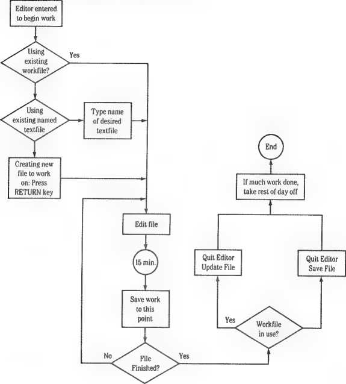
A more detailed description of creating and editing files is included in Chapter 4. Information about program execution is discussed throughout later chapters.
The workfile is a special file that may aid in the development or revision of a program. It is most useful in developing smaller or “beginner” programs whose source is contained in a single textfile. If you are working with something like the Great American Novel (or Program), you will find it easier not to use the system workfile.
There are two parts to a workfile: the text portion, containing human-readable text, and the code portion, containing compiled P-code.
The text portion of the workfile is always listed in the Pascal system disk’s directory as SYSTEM.WRK.TEXT; the code portion is listed in the same disk’s directory as SYSTEM.WRK.CODE.
A workfile is usually created in the Editor. A new textfile that you create with the Editor has no name until you save it to a disk. When you save your new file to a disk with the Editor’s Quit/Update option, the system stores the file on the Pascal system disk under the name SYSTEM.WRK.TEXT. If, instead, you used the Editor’s Quit/Write option to save the file, it would be saved as a textfile on the disk specified when you saved it and not as a workfile on the system disk.
Another way to make a workfile is to use the Filer’s Get command on an existing textfile, which automatically loads it into SYSTEM. WRK. TEXT when you enter the Editor. And you can of course change the name of a textfile to SYSTEM. WRK.TEXT and store it on the Pascal system disk.
If, after you save the workfile onto a disk, you type r for Run, the workfile is automatically compiled and executed (assuming the workfile is a Pascal program). Following a successful compilation, the compiled version of the workfile is automatically saved on the Pascal system disk, under the name SYSTEM. WRK.CODE.
You can edit, compile, assemble, link, or run the workfile as often as you wish without having to tell the system that the file you want it to act on is the workfile. Each of these operations assumes that you are referring to the workfile on the Pascal system disk.
Suppose, for example, that you have just started up the system and that you have both a text portion (SYSTEM.WRK.TEXT) and a code portion (SYSTEM.WRK.CODE) of the workfile stored on the Pascal system disk. Then, with the Command line showing on the screen, you type e for Edit. Rather than asking you to specify the name of the file you want to edit, the system automatically gets the text portion of the workfile from the Pascal system disk, reads it into the Editor’s workspace, and displays it on the screen. Although this is a major advantage of using the workfile, it can also be inconvenient for some. It means that you must “clear” the Editor workspace to make room for another file. While in the Editor, use the Quit and Change command to load another file instead. Another way to clear the Editor of the workfile is to use the New command while you are in the Filer.
Only one workfile may exist in the system at any one time. If a workfile already exists and you want to create a new workfile, you can use the Filer’s Save command. The Save command (in the Filer) allows you to give the workfile its own unique filename and then saves your file, using its new name, onto whatever disk you specified.
Then you can use the Filer’s New command to destroy the old workfile, thus making room for a new workfile. If you want to designate a file that has been stored on disk as the next workfile, use the Filer’s Get command.
Individual commands automatically act on the appropriate part of the workfile. The Edit command, for example, only acts on the text portion of the workfile (SYSTEM. WRK.TEXT) whereas the Execute or Run commands (commands that execute compiled P-code) act on the code portion of the workfile (SYSTEM. WRK.CODE).
For a description of the Filer commands you use to manipulate workfiles, see the “Workfile Commands” in Chapter 3. See “Leaving the Editor” in Chapter 4 to learn in a more step-by-step way what using the workfile is like so that you can decide if you would prefer to work with it or without it.
If You Use the Workfile: Note that if you use the workfile, you need to have the file SYSTEM.LIBRARY available on line (for the program unit PASCALIO). The Pascal system disks are already configured so that this is not a problem. You need to be aware of it if you create custom disks.
Pascal 1.3 is the latest in a series of revised forms of Pascal for Apple II computers. It includes many enhancements. Here are some of them:
□ The system supports a variety of block-structured devices, such as 314-inch disk drives, 514-inch disk drives, and rigid disks.
□ You can start up the system from slots 4,5, or 6.
□ Two new data types, BYTESTREAM and WORDSTREAM, have been added. See Chapter 4 of Part III.
□ The CASE...OF statement now accepts an optional OTHERWISE clause. See Chapter 7 of Part III.
□ The UNITSTATUS procedure has a number of new features. See Chapter 10 of Part III.
□ It is now possible to invoke the Filer from a program, using SETCHAIN. (See Chapter 16 in Part III.)
□ On the 128K Pascal system, the space in auxiliary memory occupied by 6502 procedures is reclaimed for use by P-code. (See Chapter 1 in Part IV.)
□ IDSEARCH and TREESEARCH can no longer be called from a program.
□ The REMSTATUS procedure has been removed from APPLESTUFF. The UNITSTATUS procedure should be used instead.
□ The Assembler now accepts up to 50 procedures and functions.
□ The Compiler now asks where to send the listing file, o The Compiler accepts larger procedures and functions.
□ Both the Compiler and Linker have been modified to accept up to 254 procedures and functions per segment.
□ Numerous improvements have been made to the Editor.
□ System prompts have been improved.
□ Exec files can now execute other exec files.
Most Pascal 1.2 programs will run under Pascal 1.3 and do not need to be recompiled. There may be a few exceptions. If you are running Pascal 1.2 programs under Pascal 1.3, you need to remember that the IDSEARCH and TREESEARCH procedures have been removed from version 1.3 and that UNITSTATUS has been rewritten to perform all the functions formerly performed by REMSTATUS. If your program uses REMSTATUS calls, rewrite them as UNITSTATUS calls. You must eliminate IDSEARCH and TREESEARCH calls from a program run under version 1.3.
Chapter 2
The Command Level
You reach the Command level of the system whenever you start up the system or press CONTROL-RESET or o-CONTROL-RESET; when the system reinitializes itself after a nonfatal run-time error; when you quit the Editor or the Filer; and when you finish compiling, assembling, linking, executing, or running any program. You have already seen the Command prompt line:
Command! F(lle, ECdit, RCun, CComp, L(ink, XCecute, Atasem, ? [1.3]
When you type a ?, you see the remaining Command-level options:
Command: U(5er reatart, Knitialize, SCwap, M(ake exec, Q(uit [1.3]
Before you specify a particular command, you should make sure that the disk file(s) needed by that option are available. See Appendix 2B. In most cases, the required program file may be in any of your system’s disk drives. The system just goes through the disks in every drive until it finds a file with tiie right filename.
The default workfiles (SYSTEM.WRK.TEXT and SYSTEM.WRK.CODE) and the files SYSTEM.LIBRARY, SYSTEM.PASCAL, and SYSTEM.MISCINFO will be found by the system only if they are on the Pascal system disk in the startup drive.
Each time the system returns to the Command level, following the termination of any option or program, the disk containing SYSTEM.PASCAL should be in the startup drive. This file contains the Command-level portion of the Pascal system. If the system disk is not in the startup drive at these times, a prompt will appear asking you to insert it.
Most system files must be constantly available in one of the disk drives, from the moment you select the command using that file until you quit that command or until it terminates. This is true of the Edit, Compile, and Assemble commands. These programs have been written so that different portions of the program code are called in from files as they are needed, thus taking up a minimum of the computer’s memory. The Filer and Linker commands are exceptions. The only time SYSTEM.FILER is needed is at the moment you select the File command. When the Filer command line appears, SYSTEM.FILER is no longer necessary and you may remove the
disk containing SYSTEM.FILER from the system to make room for other disks. The only time SYSTEM.LINKER must be available in a drive is when you type l to invoke the Linker. When the Linker prompt appears, SYSTEM.LINKER is no longer necessary and you may remove the disk containing SYSTEM.LINKER from the system to make room for other disks.
If the system needs a particular file, it will ask you to insert the appropriate disk.
▲Warning
When you use some command options, such as the Filer, you are allowed to insert and remove disks while you are using a program. Don’t ever do this when the “in use” light on the front of the disk drive is on!
The following section describes each of the Command-level options. Many of these commands are explained only briefly below. You will find complete descriptions of the Filer, Editor, Assembler, Linker, and Compiler later in this Part.
Figure 2-1 illustrates the Command level and its functions. All major Command functions are reached from the Command level, and you cannot go from any function to any other function without passing through the Command level.
Command
-&
|
F |
E |
R |
C |
L |
X |
A |
U |
I |
S |
M |
Q |
|
File |
Edit |
Run |
Compile |
Link |
Execute |
Assemble |
User restart |
Initialize |
Swap |
Make exec |
Quit |
File
To invoke the Filer, type f while at the Command level. The Filer contains commands for moving and deleting files. Other Filer commands tell you what peripheral devices and disks are currently available to the system, and what files are stored on each disk.
Still other Filer commands let you check disks for damage or recording errors, and let you set the system’s default directory name and the date. For a complete description of these commands, see Chapter 3, “The Filer.”
Typing e while at the Command level invokes the Editor program. If SYSTEM.WRK.TEXT is on the system disk when you invoke the Editor, the system loads the file into memory for editing. Otherwise, the Editor gives you the option of either editing a textfile already stored on a disk or creating anewtextfile.
Editor commands allow you to insert and delete information, find and replace specified character strings, change the text format, combine files, and so on. After exiting from the Editor, you may save your edited text back to the original filename or in another specified disk file. For details, see Chapter 4, “The Editor."
Typing r from the Command level initiates the Run sequence, which combines the Command options Compile, Link, and Execute, as needed.
To use the Run command successfully, you must have a workfile on the Pascal system disk. If the code version of the workfile (SYSTEM.WRK.CODE) is present, the Run command simply links and executes your program. If only the text portion of the workfile is present, the Run command compiles the workfile, storing the result as SYSTEM. WRK.CODE, and then links if necessary and executes the code portion of the workfile. If the codefile requires linkage to other routines, the Linker is automatically invoked and looks for the specified routines in the file SYSTEM.LIBRARY on the Pascal system disk.
Typing c while at the Command level invokes the Pascal Compiler. The Compiler reads a textfile containing Pascal program statements and translates this file into P-code for the Pascal “pseudomachine,” known as the “P-machine.” The P-machine is not hardware, but an interpreting program that reads the codefile and executes the instructions given to it.
If SYSTEM.WRK.TEXT is available on the system disk, it is automatically read into memory and compiled. Otherwise, the Compiler asks you to specify the name of the file to be compiled and the name of the codefile that will contain the compiled program.
When the Compiler detects a syntax error during compilation, the system asks you whether you want to enter the Editor to correct the error, continue compiling the program, or exit from the program. If you continue compilation after finding errors, you won’t have a usable codefile to execute, but you will be able to see what errors have been found in your program.
After a successful compilation, the file that has been converted into P-code is saved in the workfile codefile unless you specified another codefile. For more details about the Compiler, see Chapter 5.
Typing l from the Command level invokes the system’s Linker program. The Linker combines separate codefiles containing P-code or assembled 6502 code into a single codefile.
The Link command allows you to link previously compiled or assembled routines into your program. Linking can be initiated automatically by using the Run command (see the previous description). In some situations, however, you cannot use the Run command and must explicitly link using the Link command. For more information, see “The Workfile” in Chapter 1, and Chapter 7, “The Linker.”
To Execute a program, type x from the Command level. The Execute command executes a previously compiled and linked codefile. After you invoke this command, the system asks you to specify the codefile that you want to execute. You should respond by typing the filename of the program.
In most instances you will use the Execute command rather than the Run command when you want to execute a program that has already been compiled but is not currently in the workfile.
You also use the Execute command to run system utilities such as the system Librarian or Formatter. You can find information about the Execute command as well as complete explanations of the system Librarian and Formatter in later chapters of this Part.
To invoke the Assembler, type a from the Command level. The Assembler reads a textfile containing 6502 assembly-language statements and converts them into 6502 machine code to be run as a subroutine of a Pascal program.
If SYSTEM. WRK.TEXT is available, it is automatically read into the computer’s memory for assembling. Otherwise, the Assembler asks you to specify the name of the file to be assembled and the name of the codefile that will contain the assembled program.
If the Assembler detects a syntax error during assembly, it gives you the option of calling the Editor, which points out the error and lets you correct it. After a successful assembly, the resulting machine code is saved in the code workfile unless you have specified another codefile. For more information, see Chapter 6, “The Assembler.”
Typing u from the Command level tells the system to begin executing the program or option that was last used. User restart is quicker and requires fewer keystrokes than using Execute to rerun a program. For example, if you have just left the Editor, the User restart option will reinvoke it; if you have just finished executing a program, that program will be executed again. It is a convenient “shortcut” command.
Typing i from the Command level causes the system to perform a warm boot, reinitializing system variables and reloading SYSTEM.MISCINFO. See “What Happens During Start Up” in Part I to learn more. The Prefix directory name that has been assigned by the Filer’s Prefix command (described in Chapter 3) does not change. Be sure there is a disk containing SYSTEM.PASCAL in the startup drive when you choose this command.
Typing s from the Command level initiates Pascal’s Swapping command, which allows you to make additional memory available for creating and running programs. This is done by keeping part of the operating system code on Hie disk and only loading it into memory when needed.
Useful on the 64K System
Using the Swapping command is primarily of value if needed during linking or compiling on a 64K system. On a 64K system, the swapping option makes available more of both code space and data space. On a 128K system, only code space is gained.
When you type s, the prompt you see offers you three choices. The first two represent a “toggle” between swapping off and swapping on at the first level. At the first level of swapping, a portion of the operating system must be read in from the system disk each time a file is opened and closed. Swapping slows down the system slightly but provides more memory space for program use. The third choice represents a “super" swapping level that adds 810 bytes to the first level of memory swapping. Select swapping levels as shown in Table 2-1.
To Select Type
Swap Option Off 0
Level 1 1
Swapping On
To Get
Swapping set to OFF. Set automatically at startup or by typing 0 from the Swap command.
First-level swapping set to ON to get 2274 bytes of additional memory.
Level 2 2
Swapping On
Second-level swapping set to ON to gain 810 more bytes of memory, in addition to the first-level memory gain.
The third choice, second-level swapping, provides more memory space by moving the GET and PUT procedures from disk to memory only when they are needed by your program. For this reason, using GET or PUT for files on block-structured devices will be slow when using this swapping option. READ and WRITE, which use GET and PUT, will also be slow. UNITREAD, UNITWRITE, BLOCKREAD, and BLOCKWRITE will be unaffected.
When swapping is on, you must leave the system disk in the startup drive to perform all operations except the execution of Filer commands.
For a description of how to use these swapping options from a program when chaining to another program, see Chapter 16 of Part III.
The Make exec command is used to create exec files. You invoke this command by typing m from the Command level. For a full explanation of exec files see Appendix 2E of this Part.
Typing q from the Command level restarts the system. Before it does, you will be asked for confirmation:
Do you wish to exit the Pascal system? (Y/N)
Read “What Happens During Start Up” in Part I for more description of the startup process.
Certain commands can be executed at any level of the system, regardless of what the system is doing at the time. These commands are called “system” commands and operate at an even more basic level than the major options at the main Command level. They do not appear as options on any of the Pascal command lines.
If you have an Apple II or an Apple II Plus, consult the “System Notes” in Part I to learn the other system commands that operate on it but not on the Apple lie or Apple lie.
40 Columns Only
40 Columns Only
CONTROL-A is operable only when you are using a 40-column video display or an 80-column display in 40-column mode.
Typing CONTROL-A shows the alternate 40-character “page” of the Apple Pascal’s 80-character display, until CONTROL-A is issued again to switch back.
CONTROL-Z is operable only when you are using a 40-column video display or an 80-column display in 40-column mode.
Typing CONTROL-Z initiates “Auto-follow" mode: the screen scrolls right and left to follow the cursor. It is cancelled by CONTROL-A and many other commands.
Typing CONTROL-@ causes the interruption of the current program and the appearance ofthe message Program Interrupted by User. Press the SPACE bar to reinitialize the system.
Typing CONTROL-F cancels subsequent program output. The program continues to run, but its ouput is not sent to the screen or the printer. CONTROL-F is cancelled by another CONTROL-F.
Typing CONTROL-S stops any ongoing operating system process or program. When the next CONTROL-S is typed, the process continues.
Pressing RESET while holding down CONTROL does a cold start of the system, just as if you were switching the system on for the first time. On an Apple He or an Apple lie, O-CONTROL-RESET operates just like CONTROL-RESET on an Apple II or Apple II Plus.
This command stops any ongoing process at the expense of losing whatever is in the computer’s memory, and possibly damaging a disk directory. If a program hangs (stops and does not respond to the keyboard), this command will always restart the system. You should use CONTROL-RESET or O-CONTROL-RESET only from the Command level or when the system hangs. After you use this command, you will have to repeat the normal startup procedure.
For a quick overview of Pascal’s main operating commands, see Appendix 2A.
Chapter 3
The Filer
The Filer manipulates files, which are the fundamental unit of permanent storage on the Apple II. Files can contain different kinds of information-computer programs, letters, lists of data, and so on. Some Filer commands pertain only to files stored on disks; others pertain to character device files such as the printer and console.
Here is an overview of some Filer functions and the commands that perform them.
List directory, Extended-list
Remove
Transfer
Change
Date
Prefix
Krunch
Zero
Volumes
Quit
Make
What
New
Save
Get
Display detailed information about the files stored in a directory.
Removes a file from a disk.
Copies a file or volume to another file or volume, or sends it to a device such as a printer.
Changes the name of a disk directory or file.
Sets the date.
Changes the prefix volume name.
Consolidates free space on a disk into contiguous blocks.
Removes all files contained in a disk directory.
Lists the devices and volumes currently on line.
Exits from the Filer and returns the system to the Command level.
Reserves space on a disk for a file to which you later plan to add information.
Tells the current state (saved or not) of the current workfile.
Clears the current workfile so that a new workfile can be created.
Saves the current workfile under a unique filename. Designates a specified disk file as the workfile.
Bad-blocks Tests a disk to see if it is defective.
Examine Marks defective blocks on a disk so that information
cannot be stored on them.
The overall relationship of the Filer and its commands is shown in Figure 3-1. Each option is entered from the Filer command line, and after each Filer operation is completed you return to the Filer command line.
Introduction
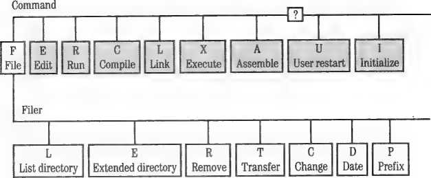
The file SYSTEM.FILER must be in a disk drive before you type f to invoke the Filer. When the Filer prompt line appears, SYSTEM.FILER is no longer needed and you may remove the disk containing it from the disk drive.
This section contains general information about the Filer’s method of storing disk files. Note that this information applies expressly to systems using 280-block, 514-inch, flexible disks. Disk devices having greater capacity will operate in the same general fashion, but the numbers quoted in the descriptions below will be different for each type of drive.
The Filer stores information on a disk in 35 concentric tracks. Each track on the disk is divided into 16 sectors.
Each sector consists of an address field and a data field. The address fields are written on a disk just once, when the disk is formatted. The data field is the portion of each sector used for storing information.
The Pascal system stores information in two-sector units called blocks, each containing 512 (!4K) bytes of information. Each of a disk’s 35 tracks can thus store eight blocks of information, for a total disk storage capacity of 280 blocks (140K bytes). Although the Filer handles all information storage automatically, low-level routines for storing and retrieving disk information are also available. See Part III for details.
Blocks 0 and 1 are reserved for the program that starts up the system. In addition, every disk contains a directory enabling the system to find information stored on that disk. The directory begins on block 2 of the disk and extends through block 5.
In general, the system begins storing a file wherever it can find enough contiguous unused blocks on the disk. If there are not enough contiguous blocks to contain a particular file, the system will not save any part of the file but will display an error message informing you that there is not enough space to write your file to the disk specified. At that point, you will have to insert a disk with enough available space if you are to save your file.
Because files are stored in contiguous blocks, its a good idea to “crunch” or consolidate files as they accumulate on the disk so that the remaining blocks are available for more file storage. Contiguous storage space becomes especially important when using the Compiler or Assembler.
n-25
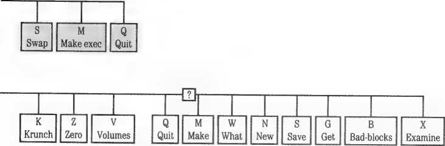
Introduction
Remember: With Pascal, you must have enough contiguous space to store files. You may have more than enough room for a file but be unable to save it because the space is spread in little pieces throughout the disk.
If you edit a file and then use the Update command or Write the file to the same filename, the new version is saved and verified before the old version is removed. Using either of these commands takes twice as much space on the disk during the process of writing the file, but guarantees that at least one version of your file is intact on the disk at all times during the saving process. The only command that does not work this way is the Save command. This command allows you the option of removing the old version of your file before writing the new version, in case you are short on disk space. If you do not choose this option, the new version of the file is written first, as described above.
To use the Filer, type f from the Command level. The following prompt line will appear at the top of your screen:
Filer: L(dir E(dir R(em TCrans CChng DCate PCrefix KCrnch ZCero VCola Qtuit ?
Typing ? in response to this prompt displays more Filer commands:
Filer: IMake WChot N(ew Stave Gtet Btad-blke Xtamlne [1.31
To invoke any Filer command, type the first letter of the command that you want to use. For example, typing s invokes the Save command.
Most Filer commands that request a file specification allow you to specify as many files as you wish. Separate the file specifications with commas, and terminate this “file list” by pressing RETURN.
Commands that require only one filename for each operation continue to read filenames from the file list and use them until there are none left. Commands using pairs of filenames (such as Change and Transfer) take file specifications in pairs and operate on each pair until only one specification or none remains. If one filename remains, the Filer asks you for the second member of the pair. If the Filer detects an error at any point in the list, the remainder of the list is discarded.
If you press RETURN when the Filer asks you for a filename, the command is terminated and the Filer command line is redisplayed.
To erase your response to a Filer prompt while leaving the prompt on the screen, type CONTROL-X. To cancel a Filer prompt and return to the Filer command line, type ESC-RETURN.
A volume is an input or output device of either the block-structured or non-block-structured type, as described in Part I. A volume name is the name given to the device in the Pascal operating system, and the volume number is the number given to it by the Pascal operating system. Volume names and numbers are associated with certain hardware slots, which are reserved for designated types of devices. See “How Pascal Assigns Volume Numbers” in Part I to learn how Pascal assigns volume numbers to block-structured devices. The volume number always begins with a number sign (#) and almost always must end with a colon (:), whereas volume names must always end with a colon.
You may refer to a block device either by its volume number or by the volume name of the disk stored in the device. When you format a disk with the Pascal Formatter, it is assigned a volume name that you specify. To change a disk’s name, you can use the Change command in the Filer. If you wanted to refer to a disk named MOOSE in the startup drive, you could refer to it either as MOOSE: or as #4:. If you specify the volume name of a disk, the Filer searches all the disk drives until it finds the specified disk. If you specify the volume number of a disk drive, the Filer automatically converts that specification to the volume name of the disk contained in that drive. A disk’s volume name can be composed of up to 7 characters and may not contain an equal sign (=), dollar sign ($), question mark (?), or comma (,). Volume names are always followed by a colon (:).
The colon is very important: it tells the system that the name or number preceding the colon is a volume specification, and not a disk file’s filename. A stand-alone disk volume name or number (not followed by a filename) tells the Filer that it is to act in some way on the disk as a whole, and not merely on a certain file on that disk. The colon is optional only when you are specifying a stand-alone volume by its volume number.
Never issue commands when two disks with the same name are on line. Even if you specify the correct drives by their volume numbers, the system may operate on the wrong disk (usually the disk in the higher numbered drive). If the operation involves updating the disk’s directory, the system may store the wrong disk’s directory onto your disk, making the files originally on the disk inaccessible. The same thing may happen if you replace the disk in a drive with another disk with the same volume name. The only exception is when you copy a whole disk using the Transfer command; this is not the same as inserting two disks with the same name; and you should not leave them on line together after the volume copy is complete.
▲Warning
You can use an asterisk (*) to specify the volume name of the system disk last used to startup Pascal. This disk also becomes the prefix volume unless otherwise set by the Prefix command. You can use a colon (:) to specify the volume name of the prefix volume. If you specify a filename without a volume name (null volume specification), or if you use only a colon (:), the Apple Pascal system supplies the volume name of the Prefix volume. You can check the current system volume and prefix volume by using the Volumes command in the Filer.
Starting up the system sets the Prefix to the name of the system disk. Thereafter, the prefix volume can be changed at any time by using the Prefix command. Usually, you will set the Prefix to the volume name of the disk with which you are currently working so that you can avoid having to type its name repeatedly. However, the Prefix can also be set to other volumes, such as PRINTER:.
To learn how to refer to the volume which contains a particular program from within that program using the percent (%) prefix, see Chapter 10 in Part III.
Table 3-1 shows the volume numbers and volume names assigned to standard devices used by Apple II Pascal.
Table 3-1. Volume Names and Numbers for Devices
|
Volume |
Volume | |
|
Number |
Name |
I/O Device Description |
|
#0 |
(not used) | |
|
#1 |
CONSOLE: |
Screen and keyboard with echo on input |
|
#2 |
SYSTERM: |
Keyboard without echo on input |
|
#3 |
(not used) | |
|
#4 |
<disk name>: |
1st drive, startup drive, slot 4,5 or 6 |
|
#5 |
<disk name>: |
2nd drive, same slot as startup drive |
|
#6 |
PRINTER: |
Printer, slot 1 |
|
#7 |
REMIN: |
Remote input, slot 2 (modem) |
|
#8 |
REMOUT: |
Remote output, slot 2 (modem) |
|
#9 |
<diskname>: |
5th drive, slot 4,5, or 6 |
|
#10 |
<disk name>: |
6th drive, same slot as 5th drive |
|
#11 |
<disk name>: |
3rd drive, slot 4,5, or 6 |
|
#12 |
<disk name>: |
4th drive, same slot as 3rd drive |
As Pascal assigns numbers to devices that are configured into the system, it assigns from one of two categories: standard devices (assigned volume numbers 1 through 12) and user devices (assigned numbers 13 through 20 and 128 through 143). User devices require a device driver and the SYSTEM.ATTACH program. For more information, see the Device and Interrupt Support Tools Manual.
The assignment of volume numbers to devices generally works this way: At startup the system checks each device to see if it is standard. If it is, the device is assigned the appropriate standard volume number, as listed in Table 3-1. A discussion of the method used by Pascal to assign volume numbers to disk drives depending on the startup slot is found in Part I.
If the system finds that a device is not a standard device, it considers it a user device.
This section describes how filenames are specified and discusses the structure of directories and how to use wildcard characters to specify a set of files stored on a disk.
Every formatted disk has a directory, starting in block 2. A directory is a “table of contents” of the files on that disk. A directory can contain a maximum of 77 files. When you format a disk by using the Pascal Formatter, it is given an empty directory.
Each time a file is stored on a disk, information about that file is automatically entered into the disk directory. The List-directory and Extended-directory-list commands make it possible to see what is stored in a particular disk directory. These commands are explained later in this chapter.
Every file used by Apple Pascal has its own filename. A complete file specification or complete filename consists of
□ the volume name or number followed by a colon
□ a filename (including its suffix).
For example, if you wanted to refer to a file named MYFILE.TEXT on disk MYDISK:, the complete file specification would be MYDISK:MYFILE.TEXT. Or, if MYDISK: were in volume #4, the complete filename could also be #4:MYFILE.TEXT.
A local filename is distinguished from the complete file specification because it does not include the volume name or volume number.
A legal filename, not including the volume name, can consist of up to 15 letters, numbers, and special characters, but should begin with a letter. Lowercase letters are automatically translated to uppercase and spaces are
removed from the filename. You should not use the following characters in your filenames:
□ dollar sign ($)
□ left square bracket ([)
□ equal sign (=)
□ question mark (?) n comma (,)
□ RETURN
□ control characters.
Using these illegal characters may prevent the Filer from accessing the file whose name contains them.
Most filenames used by Apple Pascal end with a suffix (most often .TEXT or .CODE) that specifies the kind of information stored in the file. If you want to run a file with the Run command, the last five characters of the filename must be either .TEXT or .CODE. Without one of these as a suffix, the file may be executed but it cannot be put in the workfile. You may omit the filename suffix with some commands when you are entering a filename. The explanations of individual commands, later in this chapter, tell you when you must include a suffix when specifying a filename, and when the system automatically adds the appropriate suffix for you.
In some situations, it is possible to specify the number of blocks the file will occupy. The value of specifying a file size is that it gives you some control over how the system will handle contiguous blocks of unused space, as discussed in Chapter 1. You might need to control how the system handles unused space if you are using the Make command to set aside file space that is not yet filled, for example. A size specification is given by enclosing the number of blocks in [brackets] immediately after the filename. There are two shorthand file size specifications: [0] means the file is to occupy all of the largest unused area on the disk; this is generally the default specification. [*] means the file is to occupy all of the second-largest area or half of the largest area, whichever is larger. The file size specification can be helpful when using tire Transfer and Make commands in the Filer, or when specifying the output codefile and listing file in the Assembler and Compiler. See the chapters covering those commands to learn more about how file size specifications work, how they save space for files, and so on.
The system automatically assigns a file a type when it is created, based on the file’s suffix. The most common suffixes are .TEXT for files containing text (natural language, Pascal programs, or assembly-language routines) and .CODE for files containing the compiled or assembled version of a program. A file’s type is displayed by the Extended-directory command.
Here is a list of the file types recognized by the system, the suffix associated with each type, and the way each type is referred to in the display created by the Extended-directory listing.
Table 3-2. Disk File Type;
|
Suffix |
File Type |
Extended Directory Listing |
|
.TEXT |
Readable text |
Textfile |
|
.CODE |
Executable code |
Codefile |
|
.BAD |
See the Examine command in this chapter. |
Bad file |
For more information concerning the internal format of different types of files, see Part IV.
Sometimes (after you use the Change command to change a file’s name, for example) a file’s actual type may not agree with its filename suffix. You can always determine the actual type of the file by examining the file-type column of the Extended-directory display.
Wildcard characters, the equal sign (=) and the question mark (?), enable you to specify a whole set of files at once. The Filer performs the requested action on all files whose filenames are included in the set specified. The form of a wildcard specification is as follows:
<stringl>=<string2> or <stringl>?<string2>
where <stringl> and <string2> are set-specifying strings. Either string may be a null string. The set-specifying strings indicate the portion of a
filename that may not be ignored. The wildcard characters, equal sign (=) and question mark (?), stand for any sequence of characters in a filename that can be ignored. For example, the wildcard specification
MYDISK:DOC=TEXT
tells the Filer to perform the requested action on all files on disk MYDISK: whose filenames begin with the string DOC and end with the string TEXT. You can use a question mark instead of an equal sign:
MYDISK:DOC?TEXT
Then the Filer pauses and requests verification before acting on each file in the specified set. At each pause, you may type y for Yes, or n for No, or press ESC to return to the Command level of the Filer.
You may use wildcards only when specifying filenames with the List-directory, Extended-directory, Transfer, Change, and Remove commands. A command requiring two filenames demands that both use wildcards if one of the filenames does, except when you are transferring the file or files to a non-block-structured device, such as PRINTER:.
The dollar sign ($) is a specialized wildcard that can be used only with the Transfer command, described later in this chapter. You can use it to give the new file on the destination disk the same local filename as the file on the source disk. In this case, you use the ($) wildcard only in the second file specification.
I Be Aware: You cannot use wildcards to refer to volume names.
Example
Suppose the directory for the disk named MYDISK: contains the following files:
□ NEW
□ MEADOW.TEXT
□ USELESS.CODE
□ MEADOW.CODE
□ NEVERMORE.TEXT
□ GURUS
After typing r for Remove, you will see this message:
Remove what file ?
Response#!: mydisk:N-
Specifying Files
Typing this response generates this message:
MYDISK:NEW --> removed
MYDISK:NEVERMORE.TEXT --> removed
Update directory ?
At this point you can type y to remove all the files listed, or you can type n, in which case the Remove command will be cancelled and the files will not be removed from the disk directory. This gives you one last chance to change your mind before removing the files permanently from your disk.
Response#2: mydisk:N?
Typing this response generates this message:
Remove NEW ?
After you type a response (y or n), the Filer asks
Remove NEVERMORE.TEXT ?
Again you may type a response (y or n), and if you have given any y responses, the Filer asks
Update Directory ?
As with the previous pattern, this gives you one last chance to change your mind before the files are finally removed.
Example
Again, suppose you have a disk MYDISK: with the same directory as in the previous example. After typing L for List-directory, you will see this message:
Directory listing of what volume ?
Response: mydisk:-text
Typing this response causes the Filer to list the files MEADOW.TEXT and NEVERMORE.TEXT because these are the only files on the disk ending in TEXT.
You may use only one wildcard in a filename specification. The specifications
MYDISK:DD?TE?T
or #4:*TE-
result in the message
Illegal wildcard
The Filer commands Transfer and Change both require two file specifications. If the first specification contains a wildcard, the second specification must also contain a wildcard; and if the first does not contain a wildcard, the second specification must not. If you try to enter a wildcard in the second specification only, you will see the message
Wildcard not allowed
The only legal exception to this rule occurs when you give the character $ as the second filename specification for the Transfer command. The $ character saves the most recently entered local filename for use as a wildcard. After the prompt
Transfer what file?
the specifications
MYDISK:MYFILE.TEXT,#5:$
are legal and result in the transfer of MYFILE.TEXT to volume #5, where MYFILE.TEXT is supplied as the second filename.
You may omit either or both of the set-specifying strings. For example, a local filename set specification such as =TEXT or DOC= or even just = is valid. If you omit both set-specifying strings, the Filer performs the requested action on every file in the specified disk’s directory.
By the Way: You can sometimes use this feature to act on a file whose filename is not “recognized” by Filer commands because of illegal characters in the filename, or a slightly damaged directory.
Set-specifying strings may not “overlap.” If a character appears in the set-specifying string, that same character must appear in the target string in the same relative position, or no match occurs. The = or? characters allow any character or sequence of characters to be considered a valid match. For example, the specification GOON=NS would not include the local
(pointless) specification for the file GOONS. The specification GOON=NS contains an explicit (non-wildcard) character, in this case an extra N, that does not occur in the filename GOONS.
The rest of this chapter includes detailed descriptions of each of the Filer’s commands listed by function. The section “Volume Information Commands” describes the Filer commands that allow you to see what devices are connected to your system and to examine the contents of directories. The section on the Transfer command explains how to move files from one part of the system to another. The section “General File Commands” includes a discussion on creating and removing files. The final sections describe commands you use to manipulate workfiles and to check disks for damage.
Filer commands requiring you to enter a filename or some other information can be cancelled by pressing RETURN instead of typing the requested information. If you have started typing the information called for by the command, you can still cancel the command by pressing CONTROL-X and then pressing RETURN.
This group of commands gives you information about volumes, directories, and files resident in your system.
The Volumes command lists the volume numbers and volume names of all devices, and the number of 512-byte blocks on all blocked devices configured into the system. Type v from the Filer command line to invoke this command.
A system with two 514-inch disk drives and a 314-inch disk drive, a printer, a modem, and standard hardware would give a Volumes display like this:
|
Volume * |
- Volume Name |
- • Blocks |
|
1 |
CONSOLE: | |
|
2 |
SYSTERM: | |
|
4 |
APPLE1: |
280 |
|
5 |
APPLE2: |
280 |
|
6 |
PRINTER: | |
|
7 |
REMIN: | |
|
8 |
REMOUT: | |
|
11 |
DATADSK: |
1600 |
System volume Is - APPLE1:
Prefix volume is - DATADSK:
In this example, the Pascal system disk is APPLE1:, in volume #4. Usually the prefix will be the name of the Pascal system disk. In this example, the prefix has been changed by the Prefix command to DATADSK:, the name of the disk in volume #11, a 314-inch disk drive.
If you have an empty block-structured device configured into the system, its volume number and the number of blocks it is designed to store will be reported. Instead of the volume name, the phrase <00 dir>will appear. If, for example, you had an empty 314-inch disk drive in the same example as above, its line on the Volumes display would show
11 <no dir> 1600
Be Aware: Occasionally the presence of an empty 514-inch disk drive is not shown on the Volumes display. Don’t be concerned; your disk drive is still available for use with Pascal. It will be shown on the Volumes display when you insert a disk.
If you also had an attached user device, an additional line on the Volumes display might look like this:
128 <driver>
When the system reads from volume #1, characters are echoed to the screen as they are read. When the system reads from volume #2, characters are not echoed. These volumes are the console and keyboard and are always available. More information on reading from the console and keyboard is included in Part III.
The List directory command lists the contents, or part of the contents, of the directory of a specified source disk to a specified destination volume. The destination specification usually is not given because the default destination is CONSOLE:. All files are listed along with their block length and last modification date. Type l from the command level of the Filer to invoke this command.
A directory listing to CONSOLE: stops when it has filled the display. Press the SPACE bar to continue the listing, or press ESC to abandon the listing and return to the Filer command line.
The List command is most often used to list an entire disk directory on the screen. The following display shows a sample directory listing for a disk named APPLEO:.
In response to the question,
Directory listing of what volume ?
type APPLE0:
to see the following display:
APPLE0:
|
SYSTEM.PASCAL |
36 |
4-May-84 |
|
SYSTEM.MISCINFO |
1 |
4-May-84 |
|
SYSTEM.COMPILER |
71 |
2-Jan-84 |
|
SYSTEM.EDITOR |
45 |
30-Mar-84 |
|
SYSTEM.FILER |
28 |
29-Jan-84 |
|
SYSTEM.LIBRARY |
36 |
8-May-84 |
|
SYSTEM.CHARSET |
2 |
17-Jul-84 |
|
SYSTEM.SYNTAX |
14 |
10-Jun-84 |
|
TUNAFISH.TEXT |
4 |
5-Jun-84 |
|
SYSTEM.WRK.TEXT |
4 |
21 -Jul-84 |
|
SYSTEM.WRK.CODE |
2 |
19-Jul-84 |
11/11 files <listed/in dir>, 249 blocks used, 31 unused, 23 in largest
The bottom line of the display informs you that 11 files out of a total of 11 files on the disk have been listed; that there are 31 out of a total of 280 disk blocks left to use; and that there are 23 contiguous blocks in the largest unused area on the disk. The first ratio shows that you are looking at a complete listing of the disk’s directory and not a partial listing, to be discussed later. The last number shows the size of the largest file you could store on the disk at the present time. Even though there are 31 unused blocks available on the disk, the largest file you could store would be 23 blocks because a file must be stored in contiguous blocks.
Yqu can list any portion of a directory with the wildcard option. For example, suppose that you want to list only the text files included in the directory APPLEO:.
To the Question, Directory listing of what volume ? respond by typing apple0:-.text: which results in the following display:
APPLE0:
TUNAFISH.TEXT 4 S-Jul-84
SYSTEM.WRK.TEXT 4 21-Jul-84
2/11 files <listed/in dir>, 14 blocks used, 33 unused, 33 in largest
Block Counts Inaccurate for Partial Listings: A partial listing of a directory assumes that the last file listed is the last file on the disk, and uses that assumption in calculating the number of used and unused blocks on the disk. This faulty assumption often results in an incorrect calculation of used and unused blocks and an incorrect size for the largest unused area. This inaccuracy is a problem only on a partial listing. You can always find out the correct information by using a complete listing.
A source file specification consists of a volume name and optional subset-specifying strings containing wildcards. A destination file specification consists of a volume or file name. If the volume is a disk, you must include a filename. The destination file specification cannot include a wildcard. Separate the source file specification from the destination file specification with a comma. Here’s an example of a List directory specification that sends a subset of a directory to a printer.
To the question, di rectory listing of what volume ?
respond by typing appleb:S=r, printer:
which, assuming that you have a printer that is turned on and ready to receive data, results in the following printout:
APPLE0:
|
SYSTEM.COMPILER |
71 |
2-Jan-84 |
|
SYSTEM.EDITOR |
45 |
30-Mar-84 |
|
SYSTEM.FILER |
28 |
29-Jan-84 |
3/11 files <listad/in dir>, 150 blocks used, 93 unused, 93 in largest
This List-directory example involves writing the directory to a disk file.
Prompt: Directory listing of what volume ?
Response: '5: ,#4 :DIrectory.text
After you type this response, you will see the message
WRITING.........
as the Filer lists the directory of the disk in volume #5 onto a file called DIRECTORY.TEXT on the disk in volume #4.
The Extended-directory command lists the directory of a disk, giving more detail than the List directory command. All files and unused areas are listed along with their block length, last modification date, the starting block address, and the file type. To invoke this command, type e from the command level of the Filer.
The prompts, syntax, and wildcard options are exactly the same for this command as for the List directory command just discussed. Refer back to that discussion for those details.
You would most frequently use the Extended-directory command to list an entire disk directory because it gives important extra information about the distribution of files on your disk. The following example refers to the same disk directory used in the List directory examples in the previous section.
Prompt: Directory listing of what volume ?
Response: appleb :
APPLE0:
|
SYSTEM.PASCAL |
36 |
4-May-84 |
6 |
512 |
Datafile |
|
SYSTEM.MISCINFO |
1 |
4-May-84 |
42 |
512 |
Datafile |
|
SYSTEM.COMPILER |
71 |
2-Jan-84 |
43 |
512 |
Codefi le |
|
SYSTEM.EDITOR |
45 |
30-Mar-84 |
114 |
512 |
Codefile |
|
SYSTEM.FILER |
28 |
29-Jan-84 |
159 |
512 |
Codefile |
|
SYSTEM.LIBRARY |
36 |
8-May-84 |
187 |
512 |
Datafile |
|
SYSTEM.CHARSET |
2 |
17-Jul-84 |
223 |
512 |
Datafile |
|
SYSTEM.SYNTAX |
14 |
10-Jun-84 |
225 |
512 |
Textfile |
|
< UNUSED > |
4 |
239 | |||
|
TUNAFISH.TEXT |
4 |
5-Jul-84 |
243 |
512 |
Textfi le |
|
< UNUSED> |
4 |
247 | |||
|
SYSTEM.WRK.TEXT |
4 |
21-Jul-84 |
251 |
512 |
Textfile |
|
SYSTEM.WRK.CODE |
2 |
19-Jul-84 |
255 |
512 |
Codefile |
|
< UNUSED > |
23 |
257 | |||
|
11/11 files <listed/in |
-dir>, |
249 blocks |
used, 31 |
Unused, 23 in | |
The last column of numbers gives the number of bytes used in the last block of each file. This number is almost always 512, the maximum number of bytes per block.
You use the one Filer command, Transfer, to do all file-moving tasks. Note that the file itself is never actually moved from the disk: a copy of the contents of the file is made, either on another part of the disk or on another volume in the system, leaving the original file just as it was.
You can use the Transfer command for
□ Copying individual files from one disk to another;
□ Copying the contents of an entire disk;
□ Copying files to and/or from a device such as a printer or the console.
To use the Transfer command, type T from the command level of the Filer.
The Transfer command requires that you supply two file specifications, one for the source file (the file being copied) and one for the destination file (the place the file is being copied to), separated by either a comma or a RETURN. Wildcards are permitted in file specifications for the Transfer command.
Once the Filer has been summoned, it resides entirely in the computer’s memory. Thus, you can invoke the Filer, and then remove all system disks from the drives in order to use both drives (on a two-drive system) for source and destination disks during a transfer. Just remember to replace the Pascal system disk in the startup drive before using the Quit command to exit from the Filer.
▲Warning
You should avoid having two disks on line at the same time with the same volume name. Change the name of one of them if you want to transfer files between them. You can change the name back again later.
We can hardly overemphasize the importance of making backup copies of all your files: It should never be necessary for you to have to spend hours or weeks recreating some piece of work that was lost to spilled coffee on a disk. The Transfer command makes backing up too easy for you to risk having no backups. Here’s an example of making a backup file.
Example
Suppose you want to transfer the file STARGAZER.TEXT from disk MYD1SK to disk BACKUP.
Prompt: Transfer what file ?
Response: mydisk:stargazer.text
When you press RETURN, the system checks to be sure that the specified source disk is in one of the disk drives. If MYDISK: is not in any drive, you will see the message
MYDISK: - No such volume on-line <source>
If the source disk is found in a drive, the system then checks to be sure the specified file is on that disk. If the disk MYDISK contains no file named STARGAZER.TEXT, you will see the message
MYDISK:STARGAZER.TEXT - File not found <source>
In either case, you will be returned to the outer Filer level. Just insert the correct source disk in any drive and type t again.
Let’s assume the system succeeds in finding the source disk and file. The Filer asks you to specify the destination for the transfer:
Prompt: To where?
Response: backup:temp.text
You could also have given both source and destination specifications in the first response, separated by a comma.
When you press RETURN, the system checks to be sure the destination disk is in a disk drive. If it is, the transfer begins. If it is not, there is a pause; then you are advised
Put in BACKUP:
Press <5pace> to continue
Put the correct destination disk in any available drive and press the SPACE bar. If, at this or any other point in the Transfer process, you want to return to the Filer command line, press ESC.
When the transfer is complete, the Filer gives you the message
MYDISK:STARGAZER.TEXT --> BACKUP:TEMP.TEXT
The Filer has made a copy of STARGAZER. TEXT as found on the disk named MYDISK:, and has stored that copy on the disk BACKUP: under the filename TEMP.TEXT.
If, in the above example, you had wanted to save the file STARGAZER.TEXT on disk BACKUP: under the same filename, STARGAZER.TEXT, you could have done the following:
Prompt: Transfer what file?
Response: MYDISK:STARGAZER.TEXT,BACKUP:*
If you give the same volume number for both source and destination file specifications, the system assumes you are doing a single-drive transfer and are going to change disks in that drive. You will see the message
Insert destination disk Press <5pace> to continue
If you use the same volume name for both source and destination file specifications, the system assumes that you want to relocate the file on the same disk. You can do this either by using the same filename (as well as volume name) or a different filename.
If you use a different filename, the system writes the file to the largest unused portion of the disk and leaves the original copy “as is.” If you want to exercise more control over where the file will be written, you can specify the number of blocks needed at the end of the filename and the Filer will write the copy in the first (lowest-numbered block) area on the disk that is unused and of at least that size.
Use Only for Relocating: Do not use this feature for renaming a file.
The Change command is designed for that purpose and is much easier and less risky.
If you specify the same filename (as well as the same volume name), the Filer rewrites the file to the size-specified area (or, if unspecified, the largest unused area) and then removes the original file.
Example
Prompt: Transfer what file?
Response: MYDISK:QUIZZES.TEXT,MYDISK:$C20]
Typing this response causes the Filer to rewrite QUIZZES.TEXT on MYDISK: in the first area of at least 20 blocks (looking from block 0) and then to remove the previous version of QUIZZES.TEXT.
You can transfer files to a device other than a disk by specifying a device such as CONSOLE: (for a quick screen listing of a file) or PRINTER: (to print a file) as the destination volume.
Example
Prompt: Transfer what file ?
Response: #5:stargazer.text
Prompt: To where ?
Response: printer:
Typing this response causes the file STARGAZER.TEXT, on the disk in volume #5, to be sent to the printer (assuming a printer is properly connected and turned on). Make sure that when you Transfer to a non-block-structured device it is on line (configured and turned on) to prevent the system from hanging.
You can also transfer from an input device other than a disk, such as the keyboard. A filename following the volume name or number of a non-block-structured device is ignored.
Example
Prompt: Transfer what file ?
Response: console:
Prompt: To where ?
Response: printer:
After these responses, you can use your keyboard as a typewriter. Nothing will appear on the printer until you type the “End-of-File" character, CONTROL-C. (Note that some printers may accept a CONTROL-C as a command; if yours does, you will have to press RETURN before pressing CONTROL-C.) Then all you have typed will be sent to the printer.
You can use wildcards with the Transfer command. When you use wildcards, the set-specifying strings in the source filenames are replaced by the respective strings (called replacement strings) in the destination filenames. The portion of each source filename accounted for by the = or ? wildcard character is reproduced unchanged in the corresponding destination filename. Remember that the Filer considers the one-character, wildcard-alone file specification (= or ?) to be equivalent to specifying all files in the directory.
Example
Suppose the Prefix volume MYDISK: contains these files:
PAUCITY •
PARITY
PENALTY
Further, suppose the destination disk is named ODDNAME:.
Prompt: Transfer what file ?
Response: p-ty, oddname :V»s
Typing this response would cause the Filer to reply
MYDISK:PAUCITY --> ODDNAME:VAUCIS MYDISKiPARITY --» ODDNAME:VARIS MYDISK:PENALTY --> ODDNAME:VENALS
Example
Suppose the Prefix volume MYDISK: contains these files:
CHAP11.TEXT
CHAP12.TEXT
CHAPTER13.TEXT
CHAP14.TEXT
Prompt: Transfer what file ?
Response: c-xt Prompt: To where ?
Response: backup:oldc«xt
Typing these responses would cause the Filer to reply:
MYDISK:CHAP11.TEXT --> BACKUP:OLDCHAP11.TEXT MYDISK:CHAP 12.TEXT --> BACKUP:OLDCHAP12.TEXT MYDISK:CHAPTER 13.TEXT --> not processed MYDISK:CHAP14.TEXT --> BACKUP:OLDCHAP14.TEXT
On the third attempted transfer, the destination filename would have been OLDCHAPTER13.TEXT, which exceeds the 15-character limit for local filenames. Therefore, that file was “hot processed.”
Using the single character = as the destination filename specification has the effect of replacing any set-specifying strings in the source specification with nothing.
A brief reminder: in any wildcard specification, the single character ? may be used in place of =. The only difference is that a ? in either specification (or both) causes the Filer to ask you for verification before each file is transferred.
A source or a destination file specification may contain only one wildcard character. A specification such as
MYDISK:?UGH?
is not a legal specification. If you try to use such a specification as either the source or the destination of a transfer, you will get the message
UGH? Scan string - Illegal format
If the source file specification contains a wildcard character, and the destination device is a disk, then the destination file specification must also contain a wildcard character.
Example
Suppose the disk MYDISK: contains the following files:
CHAPTER1.TEXT
CHAPTER14B.TEXT
INTRO.TEXT
Further, suppose you want to transfer the files CHAPTER1.TEXT and INTRO.TEXT to the disk BACKUP:, retaining the same filenames on the backup disk.
Prompt: Transfer what file ?
Response: mydisk:?.text,backup:*
The display clears, and then the following message appears:
Transfer CHAPTER1.TEXT ?
Because you want to transfer CHAPTER1.TEXT, type a y for Yes. A copy of the file CHAPTER1.TEXT is then transferred from MYDISK: to BACKUP:. The Filer then asks if you want to transfer the next file whose name ends in .TEXT. The complete dialogue might appear as follows:
Transfer CHAPTER1.TEXT ? Y
MYDISK:CHAPTER1.TEXT --> BACKUP:CHAPTER1.TEXT
Transfer CHAPTER14B.TEXT ? N
Transfer INTRO.TEXT ? Y
MYDISK:INTRO.TEXT --> BACKUP:INTRO.TEXT
Instead of a 7 or N response, you may press ESC to return to the command level of the Filer.
You can use the Transfer command to copy the contents of an entire disk. The file specifications for the source and for the destination should each consist of a disk volume name or number only. This method of transferring the contents of a source disk onto a destination disk erases any content previously on the destination disk. It becomes an exact, literal copy of the source disk and has the same name as the source disk.
Example
Suppose you want an extra copy of the disk MYDISK: and you are no longer interested in keeping the contents of disk EXTRA:.
Prompt: Transfer what file ?
Response: mydisk: .extra:
Prompt: Transfer 280 blocks ? <Y/N>
Response: y
Each disk used by the system contains at least 280 blocks. Some flexible disks, as well as rigid disks, hold more information. A 314-inch disk contains 1600 blocks. To copy an entire disk you will always type the response y. If your system ever gives a message other than 280 blocks, the disk’s directory is either damaged or missing or you have a higher-capacity disk or rigid
disk. It is helpful to know what the capacity of your disk is so that you can tell if there is a problem!
Prompt: Destroy EXTRA: ?
If you type y, the directory, and therefore your access to the contents of EXTRA:, will be destroyed. The disk named EXTRA: then becomes an exact copy of MYDISK:, even having the same volume name. This is often desirable for making a backup copy of a disk. It is an easy way to make a copy and the volume name can be changed using the Change command if you want to leave both on line.
When you use the Transfer command to copy the contents of an entire disk, the Filer transfers each block of information on the source disk to the same location on the destination disk.
If you do not wish to destroy the contents of EXTRA:, type n and you will return to the command level of the Filer.
Two Disk Drives
To copy a disk with a two-drive system, invoke the Filer and then remove all system disks from the disk drives. You can then use one drive for the source disk and one drive for the destination disk.
Remember This Exception: If you are using two different drives for the source and destination disks while performing a full-disk transfer, you can refer to them by their volume numbers rather than their names and the Filer will be able to tell them apart even if their names are the same. Once you leave the Transfer command, the rule forbidding two disks on line with the same name is back in force!
To copy a disk with a one-drive system, invoke the Filer and then replace the system disk with the source disk. Type t for Transfer. In response to the transfer prompt, type
One Disk Drive
One-Drive Note
*4, #4
Do not remove your source disk until you are prompted to insert the destination disk. When it is time to exchange disks, you will see the following message:
Insert destination disk Press <space> to continue
Remove the source disk and insert the correct destination disk, and press the SPACE bar. Soon, you will see this message:
Put MYDISK: in unit #4 Press <5pace> to continue
You will see these messages alternately until you have exchanged the source and destination disks about 8 times on a 128K system and about 20 times on a 64K system if you are copying a 514-inch disk. Finally, the Filer will give you the welcome message:
MYDISK: --> EXTRA:
Be sure to insert the system disk before Quitting the Filer.
We recommend that you copy an entire 314-inch disk on a two-drive system, because you must exchange the source and destination disks so many times to make such a copy.
If you have only one drive, you cannot make a volume-to-volume copy onto a destination disk that has the same volume name as the source disk. First use either the Change command to change the name of the destination disk, or the Zero command to rename the destination disk while erasing its directory.
A second method of transferring the contents of an entire disk is to use the = wildcard option to transfer each file on the disk. With this method, each file is moved as a unit.
Notice that this method does not destroy the contents of the destination disk. Before executing this command, you may want to check the destination disk to make sure that there is adequate space to copy the contents of the source disk. Note that the transfer of files continues until
there is no room on the destination disk. Then the Filer displays the message
No room on volume
next to the name of the file that it unsuccessfully attempted to transfer.
Example
Suppose you want to transfer all of the files on disk THIS: to disk THAT:.
Prompt: Transfer what file ?
Response: this: = , that: =
Sequential messages will appear, verifying each file that has been copied.
The Mowing sections describe several commands that you can invoke from the Filer’s command level.
You use the Remove command to remove file entries from a directory. To invoke this command, type R when the Filer command line is at the top of the screen.
Once files have been removed, they are no longer accessible to the user. Although a Removed file’s contents are still stored on disk, the system acts as if the file has been erased from the disk and considers the area of the disk where the file was stored to be free for storage of other files.
The Remove command requires one file specification for each disk file that you wish to remove. Wildcards are legal.
Use New to Remove Current Workfile: You should not use the Remove command to remove the current workfile. Instead, use the Filer’s New command, described later in this chapter.
Example
Suppose the prefix disk contains these files:
AARDVARK.TEXT
ANDROID.CODE
QUINT.TEXT
AMAZING.CODE
Prompt: Remove what file ?
Response: amazing.code
Typing this response tells the system to remove the file AMAZING.CODE from the prefix disk’s directory.
Before actually removing the filenames of any files specified by the Remove command, the Filer asks if you want to
Update directory ?
Typing n cancels the command: You return to the Filer command level and no files are removed from the disk.
Example
Suppose your prefix disk contains the files shown in the example above. Prompt: Remove what file ?
Response: a-code
Typing this response causes the Filer to remove AMAZING.CODE and ANDROID.CODE from the prefix disk directory.
If you use the ? wildcard character, the Filer checks with you before removing each file. A response of N causes the system to pass on to the next filename in the directory without acting on the previous one. A response of ESC causes the system to pass directly to the Update Directory? prompt.
You use the Change command to change the name of any file or disk (volume). Only the names are changed; the files and disks are left unchanged.
This command requires two file specifications. The first specifies the name of the file or volume whose name you want to change; the second specifies the new name. You separate the first specification from the second either with a comma or by pressing RETURN.
The system will not allow you to change a volume name to the name of another volume currently on line.
▲Warning
Do not change the names of the two system files, SYSTEM.PASCAL and SYSTEM.FILER on the system disk you are currently using.
If you change the name of the Pascal system disk with the Change command while it is being used as the system disk, the name the system supplies when the asterisk * volume specifier is used is also changed. If you change the name of the prefix volume, the volume name that the system supplies as the prefix is also changed.
Example
The file MICKEY.TEXT is stored on disk PLUTO.
Prompt: Change what file ?
Response: pluto:mickey.text
When you press RETURN, the dialogue continues:
Prompt: Change to what ?
Response: minnie.text
Typing this response changes the name of the file in the directory of disk PLUTO: from MICKEY.TEXT to MINNIE.TEXT. Note that in the second file specification, you only have to include the filename, as opposed to the complete file and volume name.
File types (such as TEXTFILE or CODEFILE) are originally determined by the filename’s suffix (such as .TEXT or .CODE). The Change command does not affect the file type, but it also does not automatically place any suffix after the new filename. Consider the following example:
Prompt: Change what file ?
Response: pluto:mickey.text
Prompt: Change to what ?
Response: minnie
In this case, PLUTO:MINNIE is still shown in an Extended-directory list as type TEXTFILE and named as MINNIE without the suffix. However, the Get command (described later in this chapter) searches for the suffix .TEXT in order to identify a textfile as the workfile. You would have to change the name of the file from MINNIE to MINNIE.TEXT in order to use it as the workfile.
Wildcard specifications are legal with the Change command. If you use a wildcard character in the first file specification, then you must use a wildcard in the second file specification. The set-specifying strings in the first file specification are replaced by the analogous strings (referred to here
as replacement strings) given in the second file specification. The Filer will not change the filename if the change will result in the creation of a file whose name is too long (more than 15 characters).
Example
The disk MYDISK: contains these files:
CHAP14.TEXT
CHAP12.TEXT
CHAPTER13.TEXT
CHAP14.TEXT
APPNDX.TEXT
Prompt: Change what file ?
Response: mydisk:C-xt,oldc-xt
After you type this response (the two parts of the response were separated by a comma this time, but you could also press RETURN to separate the responses), the Filer indicates the following name changes.
MYDISK:CHAP 11.TEXT —> OLDCHAP11.TEXT MYDISK:CHAP 12.TEXT --> OLDCHAP12.TEXT MYDISK:CHAPTER 13.TEXT —> not processed MYDISK:CHAP 14.TEXT --> OLDCHAP14.TEXT
In the third attempted name change, the destination filename would have been OLDCHAPTER13.TEXT, which exceeds the 15-character limit for filenames. Therefore, that file was “not processed." If all the destination filenames exceed 15 characters, an additional message is displayed:
Bad destination for files found
The set-specifying strings may be empty, as may be the replacement strings. The Filer considers the one-character file specification = (where both set-specifying strings are empty) to specify every file on the disk.
Example
Prompt: Change what file ?
Response#1: pluto:=,z=z
Typing this response causes every filename on disk PLUTO: to have a Z added before the first character and after the last character unless the filename was longer than 15 characters.
Response#2: pluto:z=z,»
Typing this response causes the initial and terminal Z to be removed from each filename on disk PLUTO: that contains both an initial and a terminal Z.
You can change a disk’s volume name by specifying the current disk volume name or volume number followed, after a comma or RETURN, by a new volume name.
Example
Prompt: Change what file ?
Response: oldname: .newname:
Typing this response causes the system to give this message:
□LDNAME: --> NEWNAME:
showing that the disk named OLDNAME: has been renamed NEWNAME:.
When a disk cannot be operated on because another volume of the same name is on line, you can change the name of the duplicate volume with the Change command to some unique name and then use the disk normally. For example, if volumes #4 and #5 both contain disks named WORK: and the Filer is being operated from #4:, the volume in #5: will be inaccessible. If you type
#5:,TMPNAME:
the volume in #5: will be changed to TMPNAME: and will then be accessible.
The Prefix command allows you to change the prefix volume name from the current default to the volume name you specify. Thereafter, when you specify a filename for some operation (such as a Transfer or Remove), that prefix is attached unless a volume name is given at the time. When you specify a volume name in a particular context, it overrides the prefix. When you specify only a local filename, the Filer attaches the prefix to that filename before acting on it.
Basically the prefix is a time-saver; it prevents your having to type in a volume name each time you specify a file. And if you want to specify just the prefix volume you can do so by typing a colon (:) alone. When you start up the system, the prefix is set to the name of the Pascal system disk in the startup drive. You can restore the prefix to that disk any time by typing an asterisk * in response to the prefix prompt.
If you specify a disk as the prefix volume, the prefix is set to the name of the designated disk. Setting the prefix to the volume number of a disk drive causes the the prefix to follow the name of the disks in the drive. You may specify devices other than disk drives, such as PRINTER:.
You do not need to put a volume on line to specify it as the prefix volume. If you use the Change command to change the name of the volume already specified as the prefix volume, the prefix will change to reflect the new name.
To check or change the prefix, type p from the Filer command level. You will see the following prompt.
Prefix is APPLE1:
Prefix filenames by what volume ?
If you press RETURN or ESC, the current prefix is retained.
To save a lot of typing, use the * to refer to the startup disk. Then set the prefix to the other disk you use most often and use the: to refer to it.
Date
The Date command allows you to set the correct date each day so that a record may be kept of work performed on the system. Each time you create or update a volume or file, the date believed to be current by the system is included in the directory entry.
When you invoke the Date command by typing d, you see the prompt
Today is 27-Apr-85
Date format: dd-mmm-yy tmonth, year optional)
New date :
Pressing RETURN leaves the date unchanged; entering any part of the new date changes the system’s stored date. The month and year are optional, and only have to be changed as needed. In most cases you will only have to change a single character to set the new date. The hyphens are delimiters for the day, month, and year fields and it is possible to affect only one or two of these fields by using the delimiters; the year could be changed by typing — 86, the month by typing -Mar. The slash (/) is also accepted as a delimiter when entering the date, but you can never change the day-month-year order.
After you press RETURN, the date just set is displayed. If the new date is incorrect, type d to invoke the Date command again and reenter it.
The Krunch command consolidates unused space on a disk. You use this command when you run out of space or seem about to because the unused space on the disk is fragmented. Using the Extended directory list command will show you how the unused space is distributed on the disk. After Krunching, all the unused space will be together at the end of the disk (unless you specify another location).
This command requires that you type a disk volume name or number. The specified volume must be on line. To avoid writing files over bad areas of the disk, you can perform a bad block scan of the disk before Krunching. If bad blocks are found, they should be fixed or marked before Krunching. See “Disk Upkeep Commands" later in this chapter.
As each file is moved, its name is displayed on the screen. If SYSTEM.PASCAL is moved the system must be reinitialized.
▲Warning
Do not touch the RESET key, the power switch, or the disk drive door until Krunch informs you that it is finished. Otherwise you may make the information on your disk inaccessible.
Example
Suppose you type k because you wish to Krunch the system disk:
Prompt: Crunch what volume ?
Response: *
You could also have responded with the volume number, #4, or the volume name of course.
Prompt: From end of volume, block 280 ? (Y/N)
Typing y initiates the normal Krunch. Typing n elicits the question
Starting at block * ?
If you type a block number in response to this prompt, the Filer will attempt to make room for new files in the area surrounding the block number that you specified. It does this by moving files forward (toward lower block numbers) that are below the specified block, and moving files backward (toward larger block numbers) that are above the block. The feature allows you to rearrange files by placing them somewhere other than the end of the disk.
By the Way: If you specify a Krunch starting block that is within an existing file, but the Filer tells you the disk is already Krunched, try a starting block in the file with the next higher block number.
The Zero command “erases” a specified directory by removing all files contained in it. You can use the Zero command to “recycle” an entire disk. The system forgets anything previously stored on the disk and the disk is ready to be used again. The Zero command does not format disks. Before they can be Zeroed, disks must have been already formatted using the Pascal Formatter utility program.
To invoke the Zero command, type z from the Filer command level.
Example
Suppose you want to forget all information stored on a disk named OLDDISK:, in volume #5, so that you can reuse it as a blank disk.
Prompt: Zero directory of what volume ?
Response: #5
Prompt: Remove all files on OLDDISK; ? (Y/N)
Response: y
Prompt: Are there 280 blocks on the disk ? <Y/N)
Response: Y
If your system ever gives a message other than 280 blocks, the disk’s directory is either damaged or missing or you have a higher-capacity disk or rigid disk. You need to know what the capacity of your disk is so that you can tell if there is a problem.
Prompt: Enter new volume name (<ret> for no change) :
Response: newdisk
or any other valid volume name. You are asked to verify it.
Prompt: NEWDISK: correct?
Response: y
Typing y results in the message
NEMDISK: zeroed
The Make command is used to reserve an area on a disk for a file of a specified name. To invoke this command, type m from the Filer’s command level.
The Make command requires you to type a file name specification and gives you the option of typing a file size specification. You specify the file size by following the filename with the number of blocks that the file will occupy enclosed in square [brackets].
There are two generic file size specifiers, [0] and [*]. [0] says the file reservation is to cover all of the largest unused contiguous area on the disk, whereas [*] means that the file reservation is to cover either the second-largest contiguous area or half of the largest area, whichever is larger. Using the [0] specifier is equivalent to omitting the size specification because this is the command’s default condition.
The Make command is commonly used to reserve an area on the disk for some future use because it prevents other files from occupying the space.
Files with filenames ending in .TEXT must occupy at least four blocks, and must occupy an even number of blocks. See Chapter 1 of Part IV for details. If you attempt to use the Make command to create a .TEXT file with fewer than four blocks, you will get the message No room on voiume.Ifyou use Make to create a .TEXT file and specify an odd number of blocks, the file will actually be made with one less block.
Example
Prompt: Make what file?
Response: mydisk:daffodil.textc281
This response reserves the first unused 28-block area encountered on the volume MYDISK for the dummy file DAFFODIL.TEXT.
When you make a file, you simply create a disk directory entry, without in any way changing the actual information stored on the portion of the disk to which that directory entry refers. If the filename ends with .TEXT, you can attempt to read into the Editor whatever information may have been stored in that location. Usually, this would be of no value. The only occasion when it might be useful is if you removed a file but then wanted to retrieve it.
Suppose you have just removed a 19-block file, which started at block 134. An Extended-directory listing of the disk might show the “hole” where that file used to be, as a 19-block <unused> area starting at block 134. If you then Make a file of any name that exactly occupies the blocks the removed file occupied, the new file will contain exactly the same information. Thus, if you know enough about the location of a file before it was removed, and if nothing has been written over that area since the removal, you can sometimes recover the file by using the Make command.
The Quit command, which is invoked by typing q from the Filer, causes the system to exit from the Filer and return to the main Command level. Remember to have your Pascal system disk in the startup drive when you issue this command.
The following commands are used only with the workfile. If you are not using workfiles, you do not need to read this section. More information about using workfiles is included in Chapters 1 and 4.
The Get command, which you invoke by typing g from the Filer, identifies the specified disk file as the current workfile and saves it in SYSTEM.WRK everytime you make an update or save the file. The next time you attempt to Edit, Compile, or Run, the designated file is used.
When you use the Get command, although you are told that the specified file has been “loaded,” the Get command does not actually transfer the specified file to any other file; it just notes that a workfile has been specified and saves the name of the new workfile.
If there is already a workfile present on the Pascal system disk when you issue the Get command, you are prompted:
Throw away current workfile ?
Typing y for yes will clear the workfile, removing all files SYSTEM.WRK from the Pascal system disk (if they exist), whereas n for no returns you to the outer level of the Filer.
One Disk Drive
With only one drive, the system disk must be in the drive to Edit,
Compile, and Run the designated workfile so that you can only effectively get files you previously transferred to the system disk.
You need not type the filename’s suffix in the file specification. Wildcards are not allowed.
Example
Suppose the prefix disk contains the following files:
FILERDOC2.TEXT
ABSURD.CODE
HYTYPER.CODE
FLIM.TEXT
FILER.DOC.TEXT
FLIM.CODE
Prompt: Get what file ?
Response: flim
The Filer responds with the message
Text t code file loaded
because both textfile and codefile exist. Had you typed FLIM.TEXT or FLIM.CODE, the result would have been the same: both text and code versions would have been identified for later use as the workfile. If only one of the versions exists, as in the case of ABSURD.CODE, then that version is identified for later workfile use, regardless of whether text or code was requested. Typing ABSURD.TEXT in response to the prompt would generate the message: Code file loaded.
By the Way: The textfiles and codefiles themselves are not actually loaded at this time; the system loads their complete filenames into memory for use when the files themselves have to be loaded.
Working with the workfile can generate a number of files whose names begin SYSTEM.WRK., as parts of the workfile. These files will disappear when the Save command is used to save the contents of the workfile under their original filename or a new one. If the system is restarted before the Save command is issued, the original name of the workfile as specified by the Get command will be lost.
This command saves both components of the Pascal system disk’s workfile (both .TEXT and .CODE, if both exist) under the filename you originally specified with Get or under a different filename if you so specify. You invoke this command by typing s from the Filer command line.
Two Save Commands: Do not confuse the Filer level Save command with the Editor level Save command. These two commands serve totally different functions.
Observing filename conventions, you must enter a filename of 10 or fewer characters because the Filer will add a five-letter suffix for you.
If a file already exists with the specified filename, the Filer saves the workfile under the specified name after removing the old file.
If you are saving the workfile as a file on the Pascal system disk, the workfile (which is already on that disk) is simply renamed. When you save the workfile on a disk other than the Pascal system disk, the system is actually performing a Transfer of the workfile. Thus the workfile is unchanged after the Save is completed.
If saved to the directory of the same disk, files beginning with SYSTEM.WRK disappear when the Filer’s Save command is used to save the contents of the workfile under an original filename or under a new filename. If you restart the system before you use the Filer’s Save command, the original name of the workfile’s contents (as specified by the Get command) will be forgotten, but the file itself will not be affected.
If the disk volume name or number is not given, the prefix disk is assumed. Wildcards are not allowed.
You do not need to include a .TEXT or .CODE suffix when specifying the filename to be used when you save your workfile; the system will add the appropriate suffix for you. If a codefile has been compiled or assembled since the last update of the workfile, that codefile will be saved in the same process that saves the text part of the workfile.
Example
Suppose that you used the Get command to access the file OLDFILE on disk MYDISK:. After editing and recompiling this file, you decide to save it under the filename NEWFILE. After typing s you are prompted
Prompt: Save as MYDISK:OLDFILE ?
Response: n
Prompt: Save as what file ?
Response: mydisk: newfile
When you type this response, the Filer asks you for verification, removes any old file named MYDISRNEWFILE, and then saves the workfile under that name.
Example
Prompt: Save as what file ?
Response: red : eye
RED:EYE constitutes a file specification, and this response tells the Filer to attempt to transfer the workfile to the specified volume and file (see the Transfer command).
If one of your disk drives contains a disk named RED:, you soon see the message
APPLE 1:SYSTEM.WRK.TEXT---> RED:EYE.TEXT
This message tells you that the workfile named SYSTEM.WRK.TEXT, on the Pascal system disk named APPLET, has been successfully transferred to the file named EYE.TEXT, on the disk named RED:. If there is no disk named RED: in any disk drive, you see the message
Put in RED:
Press <5pace> to continue
This gives you the chance to insert a disk named RED:, if you have one, into a disk drive.
Two-Drive Method
On multiple-drive systems, you can Save all the versions of the workfile (usually .TEXT and .CODE) directly onto another disk, using a filename of your choice. Then New erases the workfile from the system disk. This is the process.
When the Updated workfile contains your finished product, or when you need to start a new file for another project, type f from Command level to enter the Filer. From the Filer, type s for Save and you are prompted:
Save as what file ?
When you respond by typing any valid disk file specification (without any .TEXT or .CODE suffix), the system saves all versions of the workfile under the filename which you have specified. For example, if you respond by typing
MYDISK:PROGRAM 1
the system saves SYSTEM.WRK.TEXT as PROGRAM1.TEXT, and SYSTEM.WRK.CODE (if it exists) as PROGRAM1.CODE, on disk MYDISK:
You can now type the Filer command New, which erases all versions of the workfile on the system disk, and the creation or editing process can begin again.
One-Drive Method
On one-drive systems, you can only save one version of the workfile (usually .TEXT) onto another disk. To save more than one workfile version (usually .TEXT and .CODE), you must first save all versions onto the system disk, and then transfer each version to the other disk. Then you can remove the saved files from the system disk. Here is how it might be done.
When the updated workfile contains your finished product, or when you need to start a new file for another project, type f from the Command level to enter the Filer. From the Filer, type s for Save and you are prompted
Save as what file ?
You should respond by typing a valid file specification (without any .TEXT or .CODE suffix). The system then renames all versions of the workfile to the filename that you have specified. For example, if APPLEO: is your system disk, you might respond by typing
APPLE0:PROGRAM1
The system renames SYSTEM.WRK.TEXT as PROGRAM1.TEXT, and SYSTEM. WRK.CODE (if it exists) as PROGRAM1.CODE, on the system disk. This step makes the former workfile safe from being accidentally erased by a New command, and tells the system that the workfile is gone.
Now type t for Transfer. The system prompts
Transfer what file ?
You should respond by typing the complete file specification (including the suffix, this time) for one version of your saved file. In the example, you might type
APPLE0:PROGRAM1.TEXT
When you press RETURN, the system asks
To where ?
Now type the complete file specification for the destination file. If you wish to save your PROGRAM1 files on disk MYDISK:, for example, you would type
MYDISK:*
The disk drive whirs, and soon this message appears:
Put in MYDISK:
Press <5pace> to continue
Follow the directions, putting MYDISK: in the disk drive and pressing the SPACE bar. When PROGRAM1.TEXT has been successfully transferred to MYDISK:, you can put APPLEO: back in the disk drive.
Now, repeat the Transfer command, this time saving the file PROGRAM1.CODE (if it exists) onto MYDISK:. When that transfer is complete, again put APPLEO: back in the disk drive.
To prevent your system disk from becoming cluttered up with files that you have already saved elsewhere, you may wish to remove the PROGRAM1 files from APPLEO: at this time. Type R for Remove, and when the Filer prompts
Remove what file ?
type the complete file specification (including the .TEXT or .CODE suffix) of one file that you wish removed from the system disk. For example, you might respond by typing
APPLE0:PROGRAM1.TEXT
The Filer soon says
APPLE0:PROGRAM1.TEXT --> Removed Update directory ?
This gives you a last chance to avoid removing the specified file by typing an n response. If you type a response of y , the file PROGRAM1.TEXT is removed from APPLE0:’s directory, and the system forgets that file’s existence. You can repeat the Remove command as often as you wish, of course, until all unnecessary files have been removed.
The New command, invoked by typing n from the Filer command level, clears the workfile, so that there is no default file to be used automatically by Edit, Compile, Assemble, and Run. The last file specified as the workfile by the Filer’s Get command is no longer so designated. All versions of the workfile saved on the Pascal system disk are removed from the directory. There will be no workfile on the Pascal system disk until you create a workfile with the Editor’s Update command.
If there is already a workfile SYSTEM. WRK present on the Pascal system disk when you issue the New command, you are asked
Throw away current workfile ?
If you respond with y, the Filer clears the workfile, removing all files SYSTEM.WRK from the Pascal system disk; if you respond with n, you return to the outer level of the Filer.
Use the New command to clear away the automatically loaded workfile so that you can create a new file in the Editor or compile any file other than the workfile.
This command identifies the name and state (saved or not) of the workfile. To invoke it, type m from the Filer.
If you have saved the workfile onto any disk other than the Pascal system disk, the What command continues to report the workfile as not saved. This is because the workfile still exists on the system disk. You see the message
klorkflle is not named (not saved)
The Bad-blocks and Examine commands are used to check the physical status of your disks to determine whether all blocks are functional.
This command identifies damaged blocks on a disk. You invoke it by typing B from the Filer.
The Bad-blocks command requires that you type a volume number or volume name. The specified disk volume must be on line (currently available to the system). If the disk drive or disk is not there, you see the message
Volume not found
Example
Prompt: Bad block scan of what volume ?
Response: apple3:
Prompt: Scan 280 blocks ? CY/N)
In response you will normally type y for Yes, telling the Filer you want to scan the entire disk. If you wish to check only a smaller portion of the disk (a very unusual case), type n and you will be asked to type the number of blocks you want the Filer to scan. Because the number of blocks to scan depends on the type of storage device in use, check the number of blocks available on your disk. If your system gives a message other than 280 blocks, the disk’s directory is either damaged or missing, or you have a higher-capacity disk or rigid disk.
Once the system knows how many blocks to check, it goes ahead and checks each block on the indicated disk for errors, and lists the block number of each bad block. In most instances you will see the message
0 bad block(s)
after the bad-blocks scan has been completed. If the disk has bad blocks the disk drive will buzz and clatter, and you will see a message similar to this:
Scan 280 blocks ? (Y/N) Y Block 23 is bad Block 24 Is bad Block 25 Is bad 3 bad blocks Filets) endangered:
THISFILE.TEXT 18 24
THATFILE.CODE 25 29
The last two lines tell you that the three bad blocks are contained partly in the file THISFILE.TEXT, which is stored in blocks 18 through 24, and partly in the file THATFILE.CODE, which occupies blocks 25 through 29.
The system always asks you if you want to continue the scan after it has found three bad blocks. Then, it asks you if you want to continue after every 9th bad block (for example, after the 9th bad block, the 18th, the 27th, and so on). Blocks reported as bad can often be fixed by using the Examine command. Those that cannot be fixed can be marked so that they are not used. See the discussion of the Examine command, which follows.
If you see that one of your disks contains bad blocks, you can play it very safe if you are concerned about the condition of the disk: You can use the Transfer command to copy each of the files that do not contain any bad blocks to a healthy disk; you can use the Examine command on the bad blocks to see if the files containing them can be recovered and, if not, you can see if you can reformat the disk with the Pascal Formatter.
The most common cause of reported bad blocks on a disk is bad data written to the disk. Over-writing the information on the block usually cures the problem. If the bad-block error is caused by actual, physical damage or other problems with the disk’s recording surface, that particular data is usually unrecoverable.
Dirt and fingerprints are also common culprits. An attempt to store information in such a bad block may result in the loss of that information, and may render the entire file unreadable. To guard against this kind of problem, you should always do the following:
□ Handle your disks very carefully, and keep them clean.
□ Do a bad-blocks scan of every disk whenever you use the Zero command to erase its directory to reuse it, and at any time you have suspicions about the disk.
A less common cause of bad blocks is opening the disk drive door or otherwise disturbing the recording process while the system is trying to store information on the disk in that drive. Doing so sometimes creates an error in the data field of a disk sector. The disk is not damaged physically and so probably can be “fixed” with Examine. The information in the block may be faulty; if so, it cannot be fixed with Examine.
Occasionally, the address field of a disk sector may be rendered unreadable by something you or the system does. This problem is reported as a bad block by the Bad-blocks command, but it cannot be fixed by the Examine command. When you attempt to read or transfer the file containing the damaged address field, the system will report I/O ERROR #64. To correct this problem, you must reformat the disk. Or you can simply mark these blocks to avoid using them. Reformatting the disk will erase everything on the disk, so be sure to save the undamaged files first.
If a directory contains a bad block, the Filer cannot report on the validity of the files contained in it.
The Examine operation attempts to “fix” bad blocks found by the Bad-blocks command. The Examine command is invoked by typing x from the Filer command line.
Using this option requires that you specify a volume name or number. The specified disk volume must be on line.
Example
Suppose you have just done a bad-blocks scan of the disk named MYDISK:, and the Filer has given you the following report:
Scan 280 blocks ? (Y/N) Y Block 23 i5 bad Block 24 is bad Block 25 is bad 3 bad blocks Filets) endangered:
THISFILE.TEXT 18 24
THATFILE.CODE 25 29
You type x to invoke the Examine command.
Prompt: Examine blocks on what volume ?
Response: mydisk:
Prompt: Block-range ?
Enter the block number or block range returned by the block scan just performed. Indicate a range of blocks as follows:
Response: 23-25
If files are stored in those blocks on the disk you are about to Examine, the name of each such file and its beginning and ending block numbers are shown:
Filets) endangered:
THISFILE.TEXT 18 24
THATFILE.CODE 25 29
Fix bad blocks ?
The files shown are endangered merely by their containing bad blocks, not by the Examine process.
An n response to this prompt returns you to the Filer command level. If you respond y, the Filer examines the blocks in the specified range and frequently returns a report something like this:
Block 23 may be QK Block 24 may be OK Block 25 may be OK
In this case the bad blocks are probably fixed. Occasionally, however, the report may be something like this instead:
Block 23 may be OK Block 24 is bad Block 25 Is bad FlleCs) endangered:
THISFILE.TEXT 18 24
THATFILE.CODE 25 29
Mark bad blocks ? (Files will be removed !) (Y/N)
In this case the Filer is offering you the option of marking the block(s) it could not fix. If you respond with y to this question, the Filer first removes all files containing those bad blocks that could not be fixed and then creates a file on the disk named BAD. BAD exactly covers the bad blocks. If the bad blocks are not contiguous, more than one BAD file will be created. Once this is done, you are advised:
Bad blocks marked
and the Filer command line reappears on your screen. On the disk directory, you will find a new entry which says
BAD.00024.BAD
Blocks in a file marked .BAD will not be used to store any of your files, and will not be shifted during a Krunch operation. These dangerous areas on your disk are thus rendered effectively harmless.
When you first format or zero a disk, it is a good idea to do a bad-blocks scan so that you can conveniently mark any bad blocks and save yourself a lot of trouble in the future.
▲Warning
A block which has been “fixed” may still contain useless garbage. The message may be ok should be translated as “is probably physically OK.” Examining a block means that the information stored in the block is read into memory, stored again at the same spot, and then read again. If both readings are the same, the block is probably all right physically and is not declared BAD. This says nothing about the information contained in the block.
Refer to Appendix 2A for a complete summary of Filer commands available from the filer command line. The review here covers special characters and conventions used in the Filer to specify Apple Pascal files.
* Specifies the system disk volume name
: Specifies the prefix volume name
= Wildcard used to specify a subset of filenames. For
example, BR=XT specifies all filenames beginning with BR and ending with XT
? Same as = except the Filer requests verification
before acting on each filename. Example: BR?XT
$ Used with the Transfer command to specify a
destination filename that is the same as the source filename
, Separates any number of Filer command response
fields. Some commands use response fields in pairs.
Volume name with no filename Filename with no volume name
#4: or MYDISK:
#4:MYFILE.TEXT or MYDISK:MYFILE.TEXT
MYDISK:MYFILE.TEXT[25]
Specifies the entire named disk
Specifies the named file on the prefix disk
Typical volume specification
Typical file specification (suffix required unless otherwise noted)
File specification, with size specification
II
Chapter 4
The Editor
The Pascal Editor helps you prepare programs and text. It lets you
□ Insert and delete text;
□ Move part of a document from one position in the textfile to another;
□ Merge all or part of one file into another textfile;
□ Move the cursor to a specified point in the file;
□ Find or replace strings of text throughout the textfile;
□ Adjust the margins and indentation of paragraphs of text thoughout the file.
The first part of this chapter describes some of the general characteristics of the Editor, such as which disk files you need to use the Editor, how to read the Editor command line and other prompts, how the cursor moves, and briefly how to use the Editor in its different modes. The remainder of the chapter describes each of the Editor’s commands in detail.
When you use the Editor, the disk file SYSTEM.EDITOR must be available to the system. SYSTEM.EDITOR is normally provided on disk APPLE1: and onAPPLEO:.
Files that are being edited may be on any disk in any drive.
The Apple Pascal system will retrieve the workfile from the system disk, and store the workfile onto the system disk, no matter which disk drive the system disk is in. However, because other files on the system disk must be found in the startup drive, it is recommended that you keep your system disk in the startup drive while editing.
On two-drive systems, “non-startup drive” means volume #5 (the “startup drive” is volume #4). On systems with three or more drives, “non-startup drive" means any drive except volume #4. Systems with three or more drives can leave APPLE1: and APPLE2: in volumes #4 and #5.
In general, two-drive users using the system workfile will follow this procedure when editing:
1. With your system disk (APPLE1: or APPLEO:) in the startup drive, put into the other drive the disk that has the file you wish to Edit.
2. Enter the Filer, and Get the textfile you wish to Edit. Then Quit the Filer, and enter the Editor. The file designated by Get is automatically read into the Editor as the system workfile.
3. Edit the Tile. From time to time, Quit, Update the workfile, and Return to the file. When you are through editing, Quit and Update the workfile one last time, and then Exit the Editor.
4. If you are editing a program, you can Run the program now to check its operation and also to generate a code version (SYSTEM.WRK.CODE) of your latest workfile. If your startup disk is APPLE1:, you should put APPLE2: in the non-startup drive before attempting to Run your program.
5. Enter the Filer, and Save the workfile onto a disk that you have put in the non-startup drive.
You can keep the original copy of the file being edited in another drive, so that only the workfile SYSTEM.WRK.TEXT appears on the system disk in the startup drive, or you can avoid using the system workfile.
If you are editing with two 5i4-inch disk drives without using workfiles, you will generally follow these steps: 13 14 15
4. If you are editing a program, you can Run the program now to check its operation and also to generate a code version of the textfile. If you use the Run command, your file will become the current workfile. You might also choose to Compile your program instead, without generating a workfile. If your startup disk is APPLE1:, you should put APPLE2: in the non-startup drive before attempting to Run or Compile your program.
5. If you used the Run command, enter the Filer, and Save the workfile onto a disk that you have put in the non-startup drive. Otherwise, you can save your file onto another disk when you compile it.
The procedure you will follow when editing files with one 514-inch disk
drive differs depending on whether or not you are using the system
workfile.
6. Enter the Filer and use the Save command to rename the workfile on the system disk. Then Transfer the Saved file or files, one at a time, onto any other disk. Start each Transfer with the system disk in the drive, and wait until prompted before putting the destination disk in the drive.
7. You may also wish to Remove the Saved files from your system disk at this time, to leave more room on that disk for future editing jobs.
8. Before you Exit the Filer, put your system disk back in the drive.
If you are using a 314-inch disk drive, you can put all the files you need on one disk and edit with or without workfiles. If you have two drives, it will be convenient to put your files on a separate data disk rather than on the Pascal system disk.
When you are handling large textfiles, the amount of unused space on the system disk is important. If you use workfiles, the file being worked on is usually stored again and again in the workfile on the system disk. To be on the safe side, the contiguous unused space available for storing the workfile should be at least three times the size of the largest workfile you will store.
Note that textfiles always use disk space in two-block increments.
If you are only editing text, you may wish to remove all unnecessary files from a copy of APPLE1:, in order to leave room for large textfiles on your system disk. The following example, EDIT1:, shows a list of files that could be used on a 5W-inch disk designed only for text-editing.
EDIT1:
SYSTEM.APPLE
SYSTEM.PASCAL
SYSTEM.MISCINFO
SYSTEM.EDITOR
SYSTEM.FILER
This discussion explains and briefly demontrates the basic concepts and terms involved in using the Pascal Editor. The purpose is to give you an overview of how the Editor operates. Following this section is a full discussion of all Editor commands.
Figure 4-1. Editor “Scroll Window”
Although the whole file is accessible to you through the Editor, you can see only part of the file through the “window” of the screen. When any Editor command takes you to a position in a file that is not displayed, the “window” is moved to show that portion of the file.
The cursor marks the position in the file where actions performed by the Editor have their effect. It is the white rectangle that is displayed on the screen and indicates your position in the file. The window shows a part of the file near the cursor and moves as you move the cursor through the file.
Although the cursor appears to move over characters on the display, it is actually between the character that appears to its left and the character that the cursor seems to be on. (Don’t forget that a space is a character too.)
Some of the Editor’s commands permit additions, changes, or deletions of such length that the screen cannot display all of the text that has been changed. In those cases, the screen shows the portion of the file where the cursor was positioned after the change.
As you have already learned if you have a 40-column video screen, you need to use CONTROL-A to switch between the right and left halves of Pascal’s 80-column display. In the Editor, however, you can use the Set Environment command to change the Right margin to 39. If you do this, you will be able to work conveniently in 40-column mode without having to use CONTROL-A and CONTROL-Z continually. See the “Set” command later in this chapter to learn how to set the Right margin. Otherwise, when you work in the Editor, use CONTROL-Z to scroll back and forth automatically tracking the cursor’s movement.
40-Column Displays
The Editor command line lets you know that you are in the Editor rather than in some other part of the system. The command line also reminds you of the options you have at this point in the program.
Here is the complete Editor command line:
>Edit: ICnsrt DOete CCpy XCchng Find RCplce J(mp ACdjat SCet MCrgin Z(ap QCult
You need to know how to interpret the notation used in Editor prompts and in prompts throughout the operating system. The conventions described here are consistent with those in other parts of the Pascal system. It is in the Editor that you first encounter them. In prompts displayed on the screen, a word enclosed between angle brackets dike this> indicates that you can press a particular key; < r e t»means that you can press RETURN, < e s c > means that you can press ESC, and < c t r 1 c > means that you can press CONTROL-C. However, < de 1» means that you can cause a deletion by typing CONTROL-X, not by pressing the DELETE key. CONTROL-X deletes one line at a time. The DELETE key is not used in Apple Pascal.
In the broadest context, RETURN is used to continue through a process to its logical completion, ESC is used to cancel an action or escape to the next-higher level in the program, and CONTROL-C is used to accept an action. The use of these keys varies according to context and it is important to read each prompt to see how to proceed. You can use either lowercase or uppercase characters when responding to prompts that require you to type alphabetic characters.
When the main Command line is on the screen and your Pascal system disk is in the startup drive (volume #4:), press e for Edit. If the system already has a text workfile (see the section on workfiles in Chapter 1), that file is automatically read into the Editor, ready for work. If the system does not have a workfile yet or if only a code workfile exists, this prompt appears when you first enter the Editor:
>Edlt:
Edit what file? (<ret> for new file, <esc-ret> to exit editor)
There are three ways to answer this opening question.
1. You can answer by typing the complete filename of any text file that already exists on disk.
For example, you might enter
HOHUMM:PROGRAM1
When you press RETURN, the file named PROGRAM1.TEXT is retrieved from disk HOHUMM:, and the text of that file appears on the screen. Note that you do not need to enter the .TEXT at the end of any of your textfiles. However, be sure to type a period (.) at the end of any files whose filenames don’t end in .TEXT.
2. You can answer by pressing RETURN.
This tells the system that you are starting a new file. The only thing visible on the screen after doing this is the normal Edit command line.
You have started a new file that currently has nothing in it. Type i for Insert to begin inserting your program. No permanent version of this new file exists until you use the Quit command to exit from the Editor, then the Write or Update command from Quit to copy the file onto a disk.
3. You can answer by pressing ESC and then pressing RETURN.
The Editor returns you to the system Command level, a useful option when you didn’t mean to press e to Edit.
Let’s suppose then that you want to begin a brand new file.
If a workfile is present, you must clear it by using the Filer’s New command (see Chapter 3). Otherwise the workfile will be loaded every time you try to enter the Editor to create your new file.
Now that the workfile has been cleared, press E for Edit from the Command level Soon, this prompt appears:
>Edi t:
Edit what file? (<ret> for new file, <esc-ret> to exit editor)
To start a new file, instead of reading an existing file from disk, press RETURN. This command line appears at the top of the screen:
>Edit: Knsrt DClete C(py XCchng F(nd RCplce JCmp ACdjst SCet M(rgin ZCap QCuit
You can now press i for Insert. The following prompt appears at the top of the screen:
>Insert: <Text>, <bs> a char, <del> a line, <ctrlC> accepts, <esc> escapes
The prompt tells you what you can do while typing in text in insert mode. If you type in a wrong character, backspacing over the character with will
remove it. After you remove the offending character, continue typing again with your text. If an entire line offends you, typing CONTROL-X will remove that line. The cursor will then appear at the end of the preceding line.
If you decide it was all hopeless anyway, press ESC to throw out all the text that you have typed since last entering insert mode. Otherwise, after you have entered all the text you want, type CONTRQL-C to save the text and leave insert mode.
When you wish to add more text, press i again and the insert prompt reappears. Further typing inserts text at the cursor position, until you terminate the latest insertion by pressing CONTROL-C.
For example, you might press i for Insert, and then type
PROGRAM EXAMPi BEGIN
WRITEC'AN APPLE A DAY')
END.
ending each line by pressing RETURN. Accept this insertion by pressing CONTROL-C.
To edit, you must move the cursor. There are four “arrow keys” on the keyboard that move the cursor up and down, left and right. You can move the cursor only when one of these prompt lines is at the top of the screen: Edit, Delete, or Adjust.
Apple II or II Plus
If you have an Apple II or an Apple II Plus, see “Cursor Moves” in the next section to learn the cursor moves equivalent to the f and j keys on the Apple He and He.
The cursor moves vertically without regard to the text on the page; otherwise the cursor will remain in the text of the program. For example, suppose the cursor appears after the N in BEGIN.
PROGRAM EXAMP;
BEGIN
WRITEC'AN APPLE A DAY') END.
(Actually, the cursor is “between” the invisible RETURN character that ends every line and the N in BEGINS) If you press —*•, the cursor moves to the win write:
PROGRAM EXAMP;
BEGIN
WRITEC'AN APPLE A DAY')
END.
Similarly, pressing now moves the cursor back after the N in BEGIN.
If you want to change the third line, writec'an apple a DAY'>,to writec'an orange a day' ), you must first move the cursor to the correct spot.
For example, if the cursor is on the P in PROGRAM EXAMP;, move down two lines by pressing | twice. After you press 1 once, the cursor is on the B in BEGIN-, after you press | a second time, the cursor is in front of the IFin WRITE.
PROGRAM EXAMP;
BEGIN
WRITEf'AN APPLE A DAY')
END.
Now, using —move the cursor until it appears on the A in APPLE.
By the Way: Note that the cursor may at times appear to be outside the text when you move it downward and upward. In (lie last illustration, the cursor appears to be in the blank space before the W in WRITE. As far as the Editor knows, however, the cursor is actually on the IF in WRITE. So do not be surprised when you first press —*• and the cursor jumps to the R in WRITE. When the cursor appears to be outside the text, from the Editor’s viewpoint it is actually on the character nearest the cursor.
Refer to “Cursor Behavior in the Editor" following this section to learn in detail about cursor movement.
The Edit command line shows the Insert command. To insert text, first move the cursor to the correct position, and then type i. Always move the cursor to the correct position before you type i. Earlier, you moved the cursor to the A in APPLE. Now, when you type i, an insertion is made just to the left of the A. The rest of the line, starting with the A, moves to the right-hand side of the screen.
If the insertion is lengthy, the right-hand portion of the line (beginning with A) moves down to allow room on the screen for more inserted text to appear. After you have pressed i, you should see the following prompt:
>Insert: <Text>, <bs> a char, <del> a line, <ctrlC> accepts, <esc> escapes
If that prompt does not appear at the top of the screen, you cannot insert characters. You might have pressed a wrong character. If so, press ESC to bring up the Edit command line, then type i for Insert.
If the cursor was at the A in APPLE when you pressed i, the Insert prompt appeared and the remaining portion of that line (beginning with ,4) was pushed to the right-hand edge of the display. You can insert ORANGE by typing those six letters. They will appear on the display as you type them.
One step remains: accepting or rejecting the final result of your editing. The choice at the end of the prompt indicates that if you press CONTROL-C you accept the insertion; if you press ESC you reject the insertion, leaving the text as it was before you began the insertion.
(Portion of screen before typing i)
PROGRAM EXAMP;
BEGIN
WRITEC'AN APPLE A DAY'}
END.
(Portion of screen after typing i for Insert)
PROGRAM EXAMP;
BEGIN
WRITEC'AN APPLE A DAY'}
END.
(Portion of screen after typing orange )
PROGRAM EXAMP;
BEGIN
WRITEC'AN ORANGE APPLE A DAY'}
END.
(Portion of screen after insertion followed by CONTROL-C)
PROGRAM EXAMP;
BEGIN
WRITEC'AN ORANGEAPPLE A DAY'}
END.
(Portion of screen after insertion followed by ESC)
PROGRAM EXAMP;
BEGIN
WRITEC'AN APPLE A DAY'}
END.
It is legal to insert a carriage return. To do so, press RETURN while the Insert prompt is at the top of the screen.
For a full discussion of text insertion, see “Insert” in the command section later in this chapter.
Apple II or II Plus
Remember that you use CONTROL-E to shift between uppercase and lowercase characters, and CONTROL-W to force the keyboard into uppercase for the next character typed. If you want to type the left bracket character ®, you must type CONTROL-K and if you want to type the right bracket character (]), you must type SHIFT-M. In addition, if you have a shift-key modification, check “System Notes” in Part I to review the character translations available with that modification.
When you are editing text, there are certain format and operation parameters that are set in the Editor’s environment. You need to be aware of what these are because many commands are influenced by how these parameters are set. To see how the Editor’s environment is set, type s for Set from the Editor command line and e for Environment from the Set prompt that appears. You will see a list of parameters that largely determine how your text is formatted. To learn more about margins, indentation, filling mode, and so forth, see the detailed discussion of the Set command later in this chapter.
Making deletions is similar to making insertions. Now that you have inserted the word ORANGE into the EXAMP program and have pressed CONTROL-C, you must delete APPLE. Move the cursor so that it is placed directly on the first character that you wish to delete. Then press D for Delete. The following prompt appears:
>Delete:
<Moving keys>, <ctrlC> accepts, <esc> escapes
Each time you press —the character on which the cursor is positioned disappears. Pressing •*— erases the character to the left of the cursor. In this example, pressing —► five times causes the word APPLE ta disappear. To terminate the deletion, you have the same choice you had with Insert. Press CONTROL-C to make the proposed deletion permanent. Press ESC to cancel the proposed deletion and restore the original text.
It is legal to delete a carriage return. When the cursor is at the end of the line, press d for Delete. Then press —► until the cursor moves to the beginning of the next line. After completing the deletion by pressing CONTROL-C, you may find that the line extends beyond the end of screen with a! at the rightmost position in the line. The text is not lost, but is not displayed. The / indicates that there are characters in the line extending beyond the 79th position.
Refer to “Delete” later in this chapter for a full discussion of text deletion.
Finally, when the text is the way you want it, press q for Quit and then press u for Write. The system asks you for a filename by which to store your new file on a disk. For example, if you named your new file
MYFIRST:PROGRAM
your file would be saved on the disk named MYFIRST: in a file named PROGRAM.TEXT.
If you wish to leave the Editor, press E to Exit and return to the Pascal Command line. If you wish to change your file for any reason, simply press E to Edit again. The system asks you for a filename. Type
MYFIRST:PROGRAM
and the editor reads in the file PROGRAM.TEXT from your disk named MYFIRST:, ready for more editing.
It is a good idea to exit temporarily from the Editor and then use either the Update, Save, or Write commands about every 15 minutes or so. This way, jn case of accident (if the power goes out or you mistakenly delete an ’ important part of your file, for example), you won’t lose more than 15 minutes’ worth of text entry.
When you edit files, you use the Write option to create a new file, the Save option to replace the last version of a file with the present version, and the Update option to save changes to the system workfile.
>Quit:
To leave Editor, type
ECxit to main command line
To store Text file on disk, type
Stave as MYFIRST:PROGRAM.TEXT Ultrite to a new file name Utpdate ‘SYSTEM.WRK.TEXT
To continue editing, type
RCeturn to same file Cthange to another file
If you choose the Exit option, any changes you have made to the file since the last time it was saved to a disk file will be thrown away forever. The Editor courteously asks
Are you sure you want to throw away changes since last update?
if any such changes exist. You have the option of either saving changes made since the last time you saved the file (type n hr No), or of not saving them and exiting to the Command level (type y for Yes).
One way to save a copy of your present file is to press u for Update. Using this command saves your file on the Pascal system disk under the filename SYSTEM. WRK.TEXT.
If you use Update, you should also use the Filer’s Save option to save the system workfile under its own filename before using the Editor to modify or create another file. See Chapter 3.
Remember that when you use the Filer’s New command, it erases the workfile SYSTEM.WRK.TEXT, and that the Editor’s Update command always stores the just-edited file under the same filename SYSTEM.WRK.TEXT. You will not want SYSTEM.WRK.TEXT to be your only copy of a file once you are through working on it.
Another method of saving your present file onto disk is to use the Editor’s Write command. Assume that you have created a new file in the Editor that you want to save. After pressing Q to Quit the Editor, you press w for Write. When the filename prompt appears, you enter the file’s filename, which, of course, includes the name of the disk on which the file will be stored (for example, as MYDISK:PROGRAM2). If you currently have no file by that name on the designated disk, the file is stored as whatever filename you
enter. However, if you have a file by the same designated name on that disk, you see the prompt
MYDISK:PRQGRAM2.TEXT already exists. Remove it?--» YCes to replace old file with new one.
NCo to return to the editor.
Entering n cancels the Write command and returns the Quit menu to your display.
If you type y the old version of the file stored on disk is replaced by the new version.
The Quit menu reappears after the Write finishes. You can then enter e to Exit entirely from the Editor to the Command level, R to Return to the Editor to continue editing the same file, or c to Change to another file. This last choice allows you to begin working on another file.
Note that when the Quit menu appears after you have specified the name of the current file, the Save option appears in the second set of options headed
To store Text file on disk, type
You can now press s to Save your current file under the same name during each editing session. This saves you the trouble of having to enter the entire filename every time you want to store more information in the same file.
The Save command operates like the Write command, except that you don’t need to specify the filename each time you write to a disk.
For a complete discussion of Quit options in the Editor, see the section “Quit” later in this chapter.
You spend almost all of your editing time either following or directing the movement of the cursor. These sections describe how to make the cursor do what you want it to do.
In general, you use special cursor moves (see below) in the Editor to move the cursor through the text and place it just where you want the next command to have its effect.
Notice that not all commands affect the character on which the cursor actually appears to be placed.
As you can see in Figure 4-2, the actual position of the cursor is between the character is appears to be on and the character to its left. If the cursor movement (see “Direction Indicators”) is toward the end of the file, which is toward the lower right comer of the screen, most Editor commands can act on characters following the character the cursor appears to be on as well as the character it appears on. If the cursor direction is set toward the beginning of the file, commands will act on characters to the left and above the character the cursor appears on.
Figure 4-2. Cursor Positioning and Action
• cursor appears
cursor position -
Some of the command options (and the cursor moves) allow you to use repeat-factors. A repeat-factor is a number that you enter immediately before issuing a cursor move or command, which causes the cursor move or the command option to repeat for the number of times indicated by the repeat-factor.
For example, if you type 2 and then press |, the cursor move is executed twice, moving the cursor down two lines. Cursor moves and commands allowing a repeat-factor assume the repeat-factor to be 1 if you don’t type a number.
Explicit repeat-factors may range from 0 to 9999. Typing a slash (/) before a cursor move or a command indicates an infinite repeat-factor, and causes the move or command to be repeated as many times as possible in the file.
Apple II or II Plus
Apple lie or lie
On an Apple II or Apple II Plus, you can hold down the REPT key so that cursor moves are automatically repeated.
On an Apple lie or Apple lie, holding down any key causes it to automatically repeat.
Be careful if you are using the automatic repeat feature with a cursor move: Cursor moves can occur faster than they can be updated on the screen. You may overshoot your intended destination.
AWarning
The first character displayed on most Editor prompt lines is a direction indicator showing the set direction. A greater than (>) character indicates forward direction. A less than (<) character indicates backward (or reverse) direction. When the Adjust, Edit, or Delete prompt lines are showing, you can type > or < (with or without the SHIFT key) to change the direction that the cursor moves. Because you can use these keys whether you are in uppercase or lowercase, it might be most convenient to think of them as the comma (,) and period (.). You can also type a plus sign (+) to set the direction forward and a minus sign (—) to set the direction in reverse. In summary,
To set the direction forward, type any one of these: > . +
To set the direction backward, type any one of these: < , —
Forward operations begin at the current cursor position and proceed toward the end of the file. When the set direction is set to the reverse direction, operations begin at the current cursor position and proceed toward the beginning of the file. Commands whose operation is affected by the set direction are noted as such in the detailed command description.
The set direction does not affect the operation of the cursor-moving f, I,
—*■, and keys.
You can use repeat-factors with all cursor moves. The cursor moves are
|
outlined below. | ||
|
If You Press |
On an Apple |
The Cursor Moves |
|
t |
lie, lie |
up by lines |
|
CONTROL-O |
II, II Plus |
up by lines |
|
1 |
lie, nc |
down by lines |
|
CONTROL-L |
ii, n Pius |
down by lines |
|
— |
any |
right by characters |
|
— |
any |
left by characters |
|
SPACE |
any |
in the set direction by characters |
|
TAB |
He, lie |
in the set direction, to the next tab stop* |
|
CONTROL-I |
any |
in the set direction, to the next tab stop* |
|
RETURN |
any |
in the set direction, to the beginning of the next line |
|
Page |
any |
in the set direction, one full screen |
|
= (equal) |
any |
to the beginning of the last text Inserted, Found, or Replaced |
* Tab stops are set every eight spaces across the screen.
If the cursor appears to the right of a line of text, the Editor acts as though the cursor is positioned immediately after the last character in the line.
If the cursor appears to the left of a line of text, the Editor acts as though the cursor were on the first character in the line. When you type a command, the cursor immediately moves over to the character at the nearest end of the line and begins performing the operation.
Because it is a cursor-moving command, the page command in the Editor does not exist anywhere on a command line, but it is very useful for moving through files. The Page operation is executed whenever you type P from the Editor command line. The Page operation moves the cursor one full screen (24 lines) in the set direction. Repeat-factors can be used with the Page command.
The following sections describe, in detail, each of the commands available in the Editor.
The relationship of all the Editor commands to each other and to the Editor command level is shown in Figure 4-3.
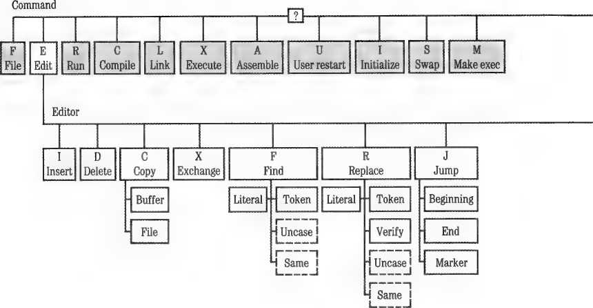
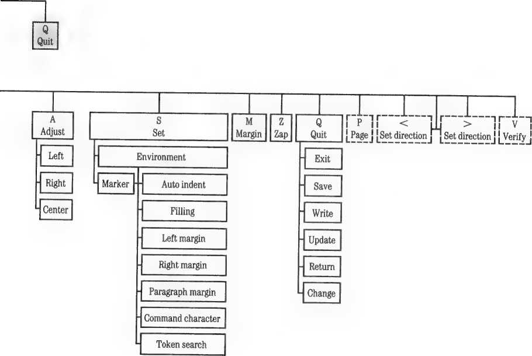
The Insert command allows you to enter new text in the file you are creating or editing.
To insert text, position the cursor where you want to insert and type I for Insert while at the Edit level. The following prompt line appears:
>Inaert: <Text>, <bs> a char,<del> a line, <ctrlC> accepts, <esc> escapes
When the Insert prompt appears at the top of the screen, the characters that you enter are inserted between the character on which you placed the cursor and the character that was immediately to the cursor’s left.
If you attempt to enter control characters into your text, they will be translated into question marks (?).
The Insert prompt also reminds you how to correct errors while you are entering text: The « b s > stands for ■*- (BACK SPACE), used to delete text a character at a time, and < d e 1 > stands for CONTROL-X, used to delete text back to the most recent RETURN character.
To save time, the Editor does not constantly rewrite the entire screen as you insert each new character. Instead, it makes a gap in the text, just where your insertion will appear, and then waits for you to enter.
If you want to see exactly how the insertion will look in its final form, you can accept your insertion by pressing CONTROL-C.
If you make a mistake while inserting, just use to backspace over your inserted characters. To delete the entire line that you are in the process of inserting, back to and including the previous RETURN character, press CONTROL-X. You can erase only the text that you have added during the current insertion.
The set direction does not affect the Insert command.
At any time during an insertion, you can cause the Editor to accept the insertion as it stands (making it a part of your file) by pressing CONTROL-C. Until you press that CONTROL-C, you can cause the Editor to discard everything you have entered since beginning the insertion by pressing ESC.
Whether you accept an insertion (by pressing CONTROL-C) or reject it (by pressing ESC), that insertion is still available, in the copy buffer, until the next insertion or deletion. To retrieve it, use the Copy command. You can use the copy buffer to duplicate your last insertion as many times as you
wish. Remember that all of the text may not be available if there is not enough room in the copy buffer for all of it. See the section on the Copy command later in this chapter for more information.
Remember: If you have mistakenly rejected the insertion by pressing ESC, you can still recover the text using the Copy Buffer command.
The maximum size of a file that you can edit using the 64K Pascal system is 17,920 characters, or 35 disk blocks. The maximum size of a file that you can edit using the 128K Pascal system is 32,256 characters, or 63 disk blocks. When your file can hold only about 1000 more characters, you will receive this warning as you begin entering more text:
ERROR: Please finish up the insertion. Please press <space> to continue.
When you respond by pressing the SPACE bar, the Insert prompt line will still be at the top of the screen. You can continue your insertion, but you have been warned that your file is almost full. You should start a new file right away or split the present file into two parts. If you continue inserting, you will eventually receive this more urgent message, when your file has exceeded the amount of text it can hold:
ERROR: Buffer overflow!!!! Please press <space> to continue.
The Editor accepts your insertion, and any further attempts to insert text cause this message:
ERROR: No room to insert. Please press <space> to continue.
■ The Edit prompt line reappears on the top of the screen, and you are not
able to add any more text to your file.
Text formats are primarily determined by the settings of two options in the Environment: Auto-indent and Filling. (See “Set Environment” in the section on the Set command, later in this chapter). There are two standard ways that text can be formatted as you insert it: programming mode and document mode. Programming mode consists of setting Auto-indent to True and Filling to False. Document mode consists of setting Auto-indent to False
and Filling to True. For example, this text was written in document mode, and the programming examples found in Part III were written using programming mode.
We will discuss each of the four possible text formats as determined by the Auto-indent and Filling settings.
Programming Mode
In this mode, Auto-indent is set to True and Filling is set to False. It is the usual Environment setting when you are writing computer programs, building tables, writing outlines, or writing poetry. During an insertion, the Editor ignores the margins set in the Environment. Instead, you must terminate each line yourself, and start a new line, by pressing RETURN. Each new line automatically starts at the same indentation as the first nonspace character of the preceding text line.
When you first create a document in the Editor, the Environment for that document is set for programming mode. If the document Environment settings have been changed to document mode and you wish to set them back to programming mode, type
SEFFAT
Mowed by CONTROL-C. se allows you to Set the Environment options, ff selects Filling and sets it to False, and at selects Auto-indent and sets it to True.
You can change the indentation of a line by typing spaces or tabs (to indent farther) or by pressing -•—as the first character in a line (to indent less). Pressing CONTROL-Q as the first character of any new line sets the indentation of that line to zero. Press CONTROL-X to discard a line and return to the end of the previous line. You can also use the Adjust command to create a new indentation for a line after you leave Insert mode. (Adjust is described later in this chapter).
The Editor allows you to insert new lines of text into a file without disturbing the indentation of existing lines. Beginning an insertion at the start of a line and ending with a RETURN followed by CONTROL-C will not change the indentation of that line.
If you try entering text beyond position 71, your Apple II beeps to warn you that you are approaching the right margin. If you enter text beyond position 79, an exclamation mark (!) appears at the rightmost position on the display. This character at the end of any line indicates that the line contains more than the 79 characters that can appear on the display. Additional characters entered into that line are not lost, but they are not displayed.
To see the hidden characters, you can insert a RETURN character anywhere in the visible portion of the line, or set Auto-indent to False and Filling to True, and Margin the paragraph. The Margin command cannot be used when Auto-indent is set to True.
Example
In programming mode, type I for Insert and then type the following sequence:
□ Type the word one and press RETURN.
□ Press the SPACE bar three times, type the word two and press RETURN.
□ Type the word three and press RETURN.
□ Press •*-, type the word four and press RETURN.
This should create the indentations shown at the left below:
one Original indentation
two Indentation changed by SPACE SPACE SPACE
three RETURN causes indentation to level of line above
four ■*- changes indentation from level of line above
Document Mode
In this mode, Auto-indent is set to False and Filling is set to True. Document mode is the normal setting of the Environment when you are writing text such as letters, user manuals, or other documents. The Editor forces all insertion to be between the margins set in the Environment. As you are typing a new word, the instant it exceeds the right margin, a RETURN character is automatically inserted before the word, and the entire word (or as much of it as you have entered at that point) is placed beginning at the left margin defined in the Environment.
In the Editor, a word is any text character or characters bounded by any two word delimiters, where a word delimiter is a space, a RETURN character, the beginning or end of the file, or the beginning or end of the current insertion (before you press CONTROL-C). The hyphen is not a recognized word delimiter. If you enter two or more RETURN characters in succession, the next text begins at the set Paragraph margin.
This setting of the Environment also causes the Editor to adjust the margins on the portion of the paragraph following an insertion (but not the paragraph portion preceding the insertion). The Editor considers a paragraph to be any text bounded by any two paragraph delimiters, where a paragraph delimiter is a blank line (created by two RETURN characters), a line beginning with the Command character (set in the Environment), or the beginning or end of the file.
The automatic remargining following an insertion can sometimes cause you much grief. If you are editing in or near a diagram, table, or other carefully formatted portion of text, it is a good precaution to set Filling temporarily to False (just enter seff CONTROL-C). Setting Filling to False prevents an insertion from scrambling your beautiful diagram into a paragraph of meaningless text.
▲Warning
Example
In document mode, the Left margin set at 0, and Right margin set at 13, type
i for Insert and then enter the following:
WISH I WEREN'T A WASH-AND-WEAR WARRIOR
This should create the text format shown at the left, below:
WISH i
WEREN'T A
WASH-AND-WEAR
WARRIOR
Auto-returned when next word would exceed margin
Auto-returned when next word would exceed margin
Auto-returned at first possible break, even though beyond margin
Auto-indent and Filling True
With this setting of the Environment, Auto-indent controls the left margin, ignoring the settings of the Left margin and Paragraph margin. Filling inserts RETURN characters as before, to keep lines from exceeding the set Right margin.
However, Filling operates only to keep the current insertion from exceeding the Right margin. Any text on the same line, but to the right of the cursor, may extend beyond the Right margin or even beyond the 79 characters visible on the Apple’s display. The existence of characters beyond position 79 is indicated by an exclamation mark (!) displayed at the rightmost position on the screen. To see the hidden characters, insert a RETURN character anywhere in the visible portion of the line, or set Auto-indent to False so that you can Margin the paragraph.
You can change the indentation as before, by pressing the SPACE bar or ■*—, but only as the first character in a new line (not likely, because Filling generally begins a line with the last entered word). You can delete a line and indent to the left margin by using CONTROL-Q. This setting of the Environment is not usually very helpful, as you can better obtain its effects in other ways.
Auto-indent and Filling False
With this setting of the Environment, the Editor ignores the margins set in the Environment. You must enter into the text all margins, indentations, and RETURN characters.
As in programming mode, if you attempt to enter text beyond position 71, the computer beeps to warn you. If you attempt to enter text beyond position 79, an exclamation mark (!) appears at the rightmost position on the display. This character at the end of any line indicates that the line contains more than the 79 characters that can be displayed on the screen. Additional characters entered into that line are not lost, but they are not displayed.
To see the hidden characters, you can insert a RETURN character anywhere in the visible portion of the line; or you can set Filling to True and use the Margin command.
The Delete command removes text from the file.
To delete text, make sure that the cursor is in the correct position to begin the deletion, and then type d for Delete while at the Edit level. After you type d, the following prompt appears:
>Delete: <Moving keys>, <ctrlC> accepts, <esc> escapes
If you position the cursor at the middle of a line of text, moving the cursor to the right will delete characters beginning with the first character that the cursor appeared on. Moving the cursor to the left will begin deleting text with the first character to the left of the cursor. (See Figure 4-4.)
Figure 4-4. Cursor Action With Delete Command
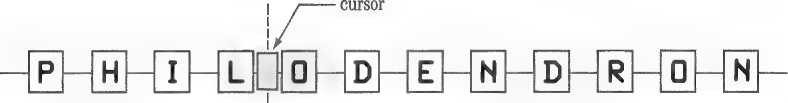
i
i
set Delete mode and move cursor
Remember, the cursor is always between the character it appears to be on and the next character toward the beginning of the file.
The Editor remembers where the cursor is when you enter d for Delete. This position is called the anchor. As the cursor moves away from the anchor in any direction, using the normal cursor moves, all text between the cursor and the anchor disappears. When you move the cursor toward the anchor, the erased characters reappear. You can also use the repeat-factor to delete or undelete several lines at once, by prefacing any cursor move with a repeat-factor while the Delete prompt is displayed.
To accept the deletion at any point, press CONTROL-C. To undo the entire deletion at any time before pressing CONTROL-C, press ESC.
Unlike inserting text, deleting text does not cause remargining of the portion of the paragraph following the deletion, even if the Environment’s Filling option is set to True and Auto-indent is set to False.
If your deletion included a RETURN character, the line containing the cursor may extend beyond the 79-character limit of the system’s display. The invisible portion of the line is indicated by an exclamation mark (!) in the last visible character-position of the line. To see the rest of the line, insert a RETURN character anywhere in the visible portion of the line, or use the Margin command to reformat the entire paragraph.
All the text between the cursor and the anchor position is stored in the copy buffer, ready for use by the Copy command, not only after you accept the deletion with CONTROL-C, but also after you reject the deletion by pressing ESC. This last fact is useful when you want to duplicate some text in another location, or when you are moving some text to another location but wish to keep a backup copy of the text until the move is successfully completed.
The copy buffer may be unable to hold all the deleted text if you attempt to delete too much text at one time. The maximum amount of room in memory for the copy buffer varies somewhat, depending on how large your file is at the moment. If you try to delete more text than will fit in the copy buffer, this message appears:
There is no room to copy the deletion. Do you wish to delete anyway? (y/n)
If you type y for Yes, the text between the cursor and the anchor position is deleted, but only as much text as will fit goes into the copy buffer and you will not be able to tell how much that is. If you type n for Wo, the deletion is not performed, and the text is not placed in the copy buffer, but the previous contents of the copy buffer are lost. If you reject a deletion that is
too large for the copy buffer, by pressing ESC, no message is given at that time. However, if you then attempt to Copy from the buffer this message is given:
ERROR: Invalid copy. Please press <spacebar> to continue.
Example
Suppose you are editing the following text:
PROGRAM STRING2;
BEGIN
WRITEC'TOO WISE ');
WRITELNC'TO BE.')
END.
1. Move the cursor onto the E in END.
2. Type d for Delete.
3. Type <. This changes the set direction to backward.
4. Press RETURN twice. After the first RETURN the line
WRITELNt 'to be .') disappears. After the second RETURN, the line write('too wise');disappears.
5. Now press CONTROL-C. The program after deletion appears as shown:
PROGRAM STRING2;
BEGIN
END.
The two deleted lines have been stored in the copy buffer, and the cursor has returned to the anchor position. Now type cb to place the contents of the copy buffer back in the file, then type cb again several times to write multiple copies of the deleted lines to the file.
PROGRAM STRING2:
BEGIN
WRITEt'TOO WISE ');
WRITELNC'TO BE.')
WRITEC'TOO WISE ');
WRITELNC'TO BE.')
WRITEC'TOO WISE ');
WRITELNC'TO BE.')
WRITEC'TOO WISE ');
WRITELNC'TO BE.')
END.
This leaves you with something like the example above, depending on how far you want to go with this command.
Note: after you have pressed CONTROL-C, if you immediately copy the deletion without moving the cursor, the deleted material is just replaced. This gives you one more chance to recover from a mistaken deletion.
CONTROL-X: CONTROL-X deletes the current line in Insert mode; it is unrelated to the Delete command.
This command copies text from the copy buffer or from a disk file. When using the Copy command, you may have to use markers previously set in a file to be copied. To learn how to set markers, see the section on the Set command later in this chapter. To use the Copy command, type c for Copy from the Edit command line. When you enter Copy mode, the following prompt appears:
>Copy: Bluffer, FCile portion, <esc> escapes
Type c for Copy and then f for File portion, to copy text stored in a file and insert it in your file. When you type cf, the following prompt appears:
>Copy: From what fi) el marker.marker]?
Now you can remove the disk containing SYSTEM.EDITOR and replace it with the disk containing the file you want to copy. When copying from a file, do not remove the disk containing SYSTEM.EDITOR until after you type f. Now specify any on-line file. Using the Copy command does not change the contents of the file you are copying from. You may enter the filename’s .TEXT suffix or not, as you wish, because .TEXT is automatically supplied if you do not enter it. If you do not want the Editor to add .TEXT (when you are copying from a file whose name does not end in .TEXT), type a period following the complete filename.
To copy only part of a file, you must have already set two markers (from the Editor) to bracket the desired text. (See the section “Set Marker” under “Set” later in this chapter.) In brackets, enter the name of the first marker set during an earlier editing session in the file you are copying from, insert a comma, and enter the second marker set in the file, within the same brackets. Only the portion of the file between the markers will be copied into your file.
If you follow the filename with just a RETURN, rather than marker names enclosed in brackets, the entire file will be copied into your current file.
If you want to copy from the beginning of the file to a marker, enter the specification in the form [.marker]; and if you want to copy from a marker to the end of the file, use the form [marker,] where the comma signifies the beginning or end points of the file.
You can cancel the Copy operation by pressing ESC at any time before you press the final RETURN.
If you have not placed the markers that you thought you had, you see the following message:
ERROR: Marker not there. Please press <space> to continue.
Pressing the SPACE bar returns you to the Edit command level.
On the completion of the Copy command, after text has been copied from the specified file, the Editor places the cursor on the first character of the text that you copied.
If your present file cannot contain all the additional text that you are attempting to copy into it, the Editor copies in as much of the additional text as it can. Then it gives this message:
ERROR: Buffer overflow. Please press <space> to continue.
When you press the SPACE bar, the copy is complete, and your file now contains as much of the additional text as the Editor could fit into your file. Remember that none of the target file’s Environment information is brought over with the copied text.
Example
Suppose the disk named MYDISK: contains a file named SUPERMART.TEXT, which has two markers placed in its text: ALPHA and BETA. Further suppose that you are now in the Editor, editing a file, and you wish to insert the text of SUPERMART.TEXT, bounded by markers ALPHA and BETA, at the current cursor position.
To enter Copy mode from the Editor command line, type c and then type F to select copying from a File portion. This prompt appears:
>Copy: From what f1leCmarker,marker1?
To copy the text, type
MYDISK:SUPERMART[ALPHA,BETA]
and press RETURN.
When the Copy is completed, the cursor rests on the first character of the text that was copied and the following message is displayed:
Be sure original SYSTEM.EDITOR disk is in same drive: {Return to continue!
Each time you insert or delete text, you are also storing that text in the copy buffer, sometimes called the insert-delete buffer. To use the text in the copy buffer, type c to enter Copy mode and then type B for Buffer. The Editor immediately copies the contents of the copy buffer into the file at the current location of the cursor (that is, between the character on which the cursor sits and the first character to the cursor’s left). Use of the Copy command does not change the contents of the copy buffer.
Upon completion of the Copy command, after text has been copied from the copy buffer, the Editor places the cursor on the first character of the text that you copied.
Unlike inserting text, copying text does not cause remargining of the portion of the paragraph following the Copy, even in document mode. After copying, some lines may extend beyond the 79-character limit of the Apple II’s display.
After you make an insertion, you can use the Copy command to duplicate the section of text just inserted as many times as you desire. Use the Copy command, too, to move text from one location in the file to another. Delete the text from its present location, then move the cursor, and copy the deleted text into its new location.
The following commands affect the contents of the copy buffer:
□ Delete: When you accept a deletion (with CONTROL-C), the copy buffer is loaded with the deleted text. When you reject a deletion (by pressing ESC), the copy buffer is loaded anyway, with the text that would have been deleted had you accepted the deletion. However, if you type D to Delete some information, but then press ESC before you move the cursor over any characters, you will lose the previous information stored in the copy buffer (from the last insertion, deletion, or zap). Similarly, if you enter d to Delete and actually move the cursor through several characters but then backspace to your point of origin and press ESC, your previous copy buffer will be lost.
If there is not enough room in memory to copy the deletion, the copy buffer may not be loaded.
d Insert: When you accept an insertion with CONTROL-C, the copy buffer is loaded with the inserted text. When you reject an insertion (by pressing ESC), the copy buffer is loaded anyway, with the text that would have been inserted had you accepted the insertion. However, if you type i to Insert some information, but then press ESC before you type any characters, you will lose the previous information stored in the copy buffer (from the last insertion, deletion, or zap). Similarly, if you enter i to Insert and actually enter several characters but then backspace to your point of origin and press ESC, your previous copy buffer will be lost.
If there is not enough room in memory to copy the insertion, the copy buffer may not be loaded.
c Zap: When you use the Zap command to delete text, the copy buffer is loaded with the deleted text.
□ Margin: Using the Margin command destroys the contents of the copy buffer.
If you have used most or all of the available file workspace and attempt to
Copy, you will see one of these messages:
ERROR: Invalid copy. Please press <spacebar> to continue.
or
ERROR: No room. Please press <spacebar> to continue.
It is probably time either to begin a new file or to split the file you are working on into two parts.
>eXchange: <text>, <bs> a
You use the Exchange command to replace characters in a line by typing new characters over the old.
Press x to use the Exchange command. When you do, you see this prompt:
char, <right arrow) copies, <ctrlC>, <esc>
As you type characters from the keyboard, the cursor moves to the right along the line of text and replaces existing characters with the characters you are typing. After finishing your change to a line of text, you can accept the changes by pressing CONTROL-C or reject them by pressing ESC. You can use -*■ to copy over existing text without changing it, and use ■*— to back up and restore old characters one by one. Exchange is not affected by the set direction, and can be used for only one line at a time. The Exchange command does not allow you to type beyond the end of a line of characters and it does not allow you to replace a character with a RETURN.
If you enter control characters into your file in Exchange mode, they will be translated into question marks.
The Exchange command allows you to use the t and | keys to change the case of your text without retyping it. If you want to change lowercase characters into uppercase characters, use the f key to type over them; and if you want to change uppercase characters to lowercase, use the 1 key to type over them.
If reverse video is turned on (use CTRL-R), the Exchange command allows you to use the CTRL-0 and CTRL-L characters to change the case of your text without retyping it. If you want to change lowercase characters into uppercase characters, use CTRL-0 to type over them; and if you want to change uppercase characters to lowercase, use CTRL-L to type over them.
The Find command searches through a file for a specified string of characters (target string), finds the specified number of occurrences of that string, and places the cursor at the end of the string (if the Set direction is forward). If the Set direction is reversed, the cursor will be placed at the beginning of the string.
To use the Find command, press f for Find while at the Edit level. One of the following prompt lines then appears, depending on the setting of the Environment’s Token default option (see the “Set Environment” section).
You see this prompt if the Environment’s Token default option is set to True:
>FindMl: LCit <target> =>
You see this prompt if the Environment’s T(oken default option is set to False:
>Find[1]: TCok <target> =>
The Find command searches for the specified occurrence of the target string, starting at the present cursor position and scanning through the text in the set direction (indicated by the arrow at the beginning of the prompt line).
A target string can be found only if it appears in the text between the cursor and the end of the file toward which the search is progressing.
If you wish to search in the reverse direction, you must set the direction indicator before typing f to find something. See the section on the direction indicators (under “Cursor Behavior in the Editor” earlier in this chapter) for information about setting the direction. If the required occurrence of the target string is not found by searching through the text in the set direction, this message appears:
ERROR: Pattern not in the file. Please press <spacebar> to continue.
Notice that the search does not “wrap around.” There is no search in the portion of the file between the cursor and the end of the file in the direction opposite the set direction.
You may specify a repeat-factor just before you type the f for Find. It appears on the prompt line in square brackets: [1], for example. If you enter a repeat-factor of 6, the cursor appears after the 6th occurrence of the target string. If there are only four occurrences of the target string in the file, you get this message:
ERRQR: Pattern not in the file. Please press <spacebar> to continue
After you press the SPACE bar, the cursor will be positioned after the fourth occurrence of the target string.
If you don’t enter a repeat-factor, a repeat-factor of one is assumed. A repeat factor of / finds, and stops after, the last occurrence of the target.
You can search for strings containing any characters, including control characters. The target string must be set off by delimiters. If you attempt to use a delimiter that occurs in the target string, the Find executes immediately, and you search for only part of your intended target string.
The Editor allows you to choose any character that is not a letter or a number to be a delimiter so long as the character is not in the target string. The most common choice is the slash (/) because it is a character that is not often searched for in the text, and is easy to type. Here are examples of delimiter usage:
/UNLIKELY/
/An honest man/
! 2/3!
You may use multiline targets and targets containing control characters, except for the control characters ESC, NULL, and BS; control characters that operate in the Editor, such as CONTROL-A, CONTRQL-Z, CONTROL-F, CONTROL-@, and CONTROL-S; and, on an Apple II or Apple II Plus, CONTROL-E, CONTROL-W, CONTROL-R, and CONTROL-T.
If you forget to precede the target string with a correct delimiter character, you see the message
ERROR: Invalid delimiter. Please press <spacebar> to continue.
Just try again, this time beginning with a correct delimiter.
Normally, Find will only count target string matches as good if the potential target matches the specified target string exactly as typed. Uncase allows you to find any string having the proper sequence of characters, regardless of their case.
If you type u immediately after bringing up the Find prompt line, all occurrences of the target string will be found, regardless of case.
The Editor treats the target string differently, depending on whether you select Literal search or Token search. When you select Literal search, the Editor looks for the occurrences of a string of characters that exactly match the target string, even if it occurs within a word. When you select Token search, the Editor looks for isolated occurrences of the target string, ignoring spacing.
The default setting of the search option is set in the Environment. The Find prompt line displays the alternative search mode, either LCitorTCok.If you do not specify a search option, the Editor uses the default search option (the one not mentioned on the prompt line).
To use Token search when the default is Literal search (prompt line says Tto k), press t after the prompt line and before you type the target string.
To use Literal search when the default is Token search (prompt line says L (11), type l after the prompt line and before you type the target string. Nothing will happen when you press l or t; the letter just appears where you are about to type the target string. See “Set Environment” for more information about Literal and Token search options.
At any point during your response to the Find prompt, you can abandon this command and return to the Edit level by pressing ESC.
If you press s instead of typing a delimited target string, the Editor uses the same string you last specified for the target string (the target string may have been specified either in Find mode or in Replace mode). From the Editor, type the command
FS
The previously specified target string is used again and is displayed at the top of the screen when you type the s.
Note: If you have forgotten what target string would be invoked by pressing s as a string response, you can find the current target string in the Environment display. (See “Set Environment.")
Example
Suppose you have Token search selected, and you are editing a file containing the following text:
PROGRAM STRING1;
BEGIN
WRITEC'TOO WISE ');
WRITEC'YOU ARE');
WRITELNC',') ;
WRITEC'TOO WISE ');
WRITELNC'YOU BE.')
END.
In the STRING1 program, with the cursor at the P in the line PROGRAM STRING1;
type f to select Find. When the Find prompt line appears, type
/WRITE/
You must enter the two slashes (or two of some other delimiter).
The prompt line should now look like this:
>FindI1): L)it <target> “>/WRITE/
When you type the last slash, the cursor jumps immediately to the first character following the E in the first occurrence of the Token target string WRITE.
Example
Again in the STRING1 program, with the cursor at the E of end. .type
<2F
This prepares the system to Fmd the second pattern (you entered a repeat-factor of 2) in the reverse direction (you changed the set direction by entering < ). When the prompt line appears, type
/WRITELN/
The prompt line should look like this:
<FlndI2I: L)lt (target) *>/WRITELN/
When you type the last /, the cursor moves immediately to the IF in the second-nearest occurrence (searching backward through the file) of the Token string WRITELN (the fifth line of the program).
Type jb to Jump to the Beginning of the file, then type
>F/WRITE/
This changes the set direction to forward again, and locates the first occurrence of the Token string WRITE, by searching forward (to the third line). Now, typing
FS
makes the prompt line flash
>Find[1]: LCit <target> ->/WRITE/
and the cursor appears at the next occurrence of WRITE.
The Replace command replaces a specified target string with a specified substitute string. Its operation is very similar to Find, except that the target string can be replaced with a substitute string after being found.
To use the Replace command, type R for Replace while at the Edit level. One of the following two prompt lines will then appear, depending on the setting of Token default in the Environment. (See “Set Environment” under “Set" later in this chapter.)
This prompt appears if the Environment’s Token default is set to True:
>Replaoe[1l: LCit VCfy <targ> <aub> «>
This prompt appears if the Environment’s Token default is set to False:
>Replace[1l: TCok VCfy <targ> <sub> ■>
The Replace command searches through a file in the set direction to find the specified number of occurrences of the specified target string of characters, and replaces each of those occurrences (after verification, if you choose that option) with the specified substitute string of characters. When finished, it places the cursor at the end of the last string found and/or substituted if you are working in the usual left-to-right direction; if you are working in the reverse direction, the cursor will be resting at the beginning of the last string found. The Verify option is described shortly.
Replace Control Characters: If you are editing a file containing control characters, you can use the Replace command to replace the control characters with carriage returns or spaces.
The Replace command operates exactly like the Find command in response to the set direction.
You can use the repeat-factor with the Replace command in exactly the same way as you can with the Find command.
Replace uses the Literal and Token search modes exactly as does the Find command.
The Uncase option works with the Replace command in exactly the same way as with the Find command.
The Editor has two string storage variables. The first string variable, called <target> or <targ> by the prompt line, contains the target string, and is used both by the Find command and by the Replace command. The target string is the sequence of characters that will be searched for by the Find command, or searched for and replaced by the Replace command. The second string, used only by the Replace command, is called <sub> by the Replace prompt line and is the substitute string. In the Replace command only, the substitute string is the sequence of characters that will replace the target string when the target string is found.
To allow the target and substitute strings to contain almost any characters (including RETURN characters), there are special rules for typing each string. In particular, you must set off each string with characters called delimiters. Both delimiters of a string must be the same character. One delimiter must precede the first character of the string, and the same delimiter must follow the last character of the string.
The Editor allows almost any normal printing character that is not a letter or a number to be a delimiter as long as it does not occur in the string delimited. Thus you can choose the delimiter. The most common choice is the slash (/) because it is a lowercase character that is not commonly found in text, and it is easy to type.
Once you have typed the initial delimiter character for either the target or the substitute string, you cannot backspace (using -*-) to erase that character or any of the preceding characters in your response. If you forget to precede either the target string or the substitute string by a correct delimiter character, the Editor will tell you
ERROR: Invalid delimiter. Please press <spacebar> to continue.
You will get the same message if you try to backspace (by pressing •«-) immediately after you type the target string’s final delimiter. Just try the whole command again, and this time use correct delimiters.
Remember: You can use the Replace command to eliminate control characters from a file. Potential difficulties in editing caused by the presence of control characters can be avoided by replacing control characters with carriage returns or spaces.
The Verify option (shown as v c f y on the Replace prompt line) permits you to examine each target string as it is found, before the replacement is carried out. You can then decide whether this occurrence of the target string is to be replaced or not. To select the Verify option when using Replace, type v before you type the target string. If you have requested Verify, the following prompt appears whenever the Replace command has found an occurrence of the target string in the file:
>Replace: <esc> aborts, 'R' replaces, ' ' doesn't
Type R if you want the specified replacement to be carried out; press the SPACE bar if you want the Editor to search for the next occurrence of the target string, provided the specified repeat-factor (or the end of the file) has not been reached. Press ESC to cancel the Replace operation. The repeat-factor specifies the number of times an occurrence of the target string will be found, not the number of times you actually cause its replacement. Use / as the repeat-factor to examine every occurrence of the target string in the set direction.
At any time during your response to the Replace prompt, you can abandon this command and return to the Edit level by pressing ESC.
If you type s in place of the delimited target string, the Replace command uses the target string that you last specified. The target string may have been specified when you used either the Find command or in a previous use of the Replace command. Similarly, typing s in the place of the delimited substitute string tells the Replace command to use the same substitute string that you last specified in a previous use of the Replace command. For example, with the Replace prompt line at the top of the screen, typing
S/<any-string>/
causes the Replace command to use the previous target string (and a new substitute string), whereas typing
/<any-string>/S
causes the previous substitute string to be used (and a new target string). From the Editor, entering the command
RVSS
says “Do it again”; it causes the next occurrence of the previously specified target string to be replaced (after verification) with the previously specified substitute string.
If you have not previously specified a substitute (or target) string, the Editor informs you
'no old target'
or
'no old substitute'
Remember: The Environment (see “Set Environment” under “Set”) shows you the current <target> and <substitute> strings that will be invoked by typing s as a string response.
Example
Suppose you wish to replace the next three occurrences of the target string APPLE with the substitute string BANANA, assuming that the set direction is >, and Literal search is true.
With the Edit prompt line showing, you would type
3R
to indicate a repeat-factor of 3 and then to select the Replace command.
In response to the Replace prompt line
>Replace[3I: TCok VCfy <targ> <sub> =>
you could type
/APPLE/JBANANA)
In this example, first the character / is used as the beginning and ending delimiter for the target string, and then the character) is used as the beginning and ending delimiter for the substitute string. In the example, we used two different delimiters for pedagogical purposes. In practice you would be more likely to use
/APPLE//BANANA/
If you now wish to Replace five more occurrences of the target string APPLE, but this time with the substitute string PAPAYA, just enter, with the Edit prompt line showing,
SRS’PAPAYA?
After a brief flash of this prompt line
>Replace[5I: TCok VCfy <targ> <sub> «>/APPLE/?PAPAYA?
the requested replacements will be carried out.
Example
Now assume that Token mode is true; if you enter RL/QX//YZ/
when the Edit prompt line is showing, this prompt line should appear:
>Replace[1I: LCit VCfy <targ> <sub> ->L/QX//YZ/
If the cursor is before the v in v a r, this command will change the program line
VAR SIZEQX:INTEGER; to
VAR SIZEYZ:INTEGER;
You must select the nondefault Literal search option (by typing l before you type the target string) because the string QX is not a Token but is part of the Token SIZEQX.
The Jump command moves the cursor to the beginning of the file, to the end of the file, or to a marker that you have placed in the file.
To use the Jump command, press J for Jump while at the Edit level. The following prompt appears:
>Jump: Bteginning, ECnd, MCarker, <esc> escapes
Typing B for Beginning moves the cursor to the beginning of the file and displays the Edit prompt line and the first page of the file. Typing E for End moves the cursor to the end of the file and displays the Edit prompt line and the last page of the file. Typing m for Marker causes the Editor to display this prompt line:
Jump to what marker? <esc-ret> escapes
If you respond by typing the name of a marker (described under “Set Marker” later in this chapter) that exists in the file, when you press RETURN, the cursor moves to the marker position in the text. Pressing ESC followed by RETURN cancels the jump. If you enter a marker name that does not exist in the file, you see this message:
ERROR: Marker not there. Please press <spacebar> to continue.
and the cursor does not move. Placing markers in the text is explained under “Set Marker.”
The Adjust command adjusts the indentation of a line or a whole group of lines.
To use the Adjust command, type a for Adjust while at the Edit level. The following prompt line will then appear:
>AdJust: Lteft, Rtight, Ctenter, <Moving keys>, <ctrlC> accepts, <esc> escapes
You can use and •*- to push the line right and left, or you can adjust the
line to the Left margin, the Right margin, or the Center. If you move the cursor up or down, the Editor makes the same adjustment to lines above or below. You can use a repeat-factor with all cursor moves.
When the Adjust prompt line is at the top of the screen, each time you press “*■ ^ line the cursor is sitting on moves one space to the right. You can move the line beyond the Right margin set in the Environment. Characters moved beyond the 79th character position are not displayed, but their existence is indicated by an exclamation mark (!) in the 79th character position of the line.
Each time you press the whole line moves one position to the left. You can move the line beyond the Left margin set in the Environment, but the leftmost character cannot be moved beyond the left edge of the display designated as the zero character position.
When you have adjusted the line to the indentation you want, press CONTROL-C.
You can use ESC to cancel the adjustment of the current line. You accept the adjustment by pressing CONTROL-C or by moving to another line.
In order to adjust a whole sequence of lines, first adjust the top or the bottom line, then, before you press CONTROL-C, press f or ]. The Editor will adjust the line above or below by the same amount when the cursor jumps to that line. Finally, when the entire sequence has been adjusted, press CONTROL-C.
You can use repeat-factors, including /, before any of the cursor moves while in Adjust mode.
You can also use the Adjust command to center text on the page and to left-justify or right-justify text (force all the lines to make a smooth left margin, like this page has, or a smooth right margin). If you type l for Left while the Adjust prompt is showing, the Editor left-justifies the line containing the cursor by moving the leftmost nonspace character to the Left margin set in the Environment.
Similarly, typing r for Right right-justifies the line by moving the rightmost text character to the Right margin set in the Environment. Typing c for Center causes the line to be centered between the set Left and Right margins. If you press f or | before you press CONTROL-C, the Editor adjusts the line above or below to the same specification (left-justified, right-justified, or centered) as the previously adjusted line.
Example
Now insert a line to practice shoving it around with the Adjust command:
My name is Caspar Milquetoast.
After you have typed CONTROL-C to accept the insertion, type ar for Adjust Right, and press CONTROL-C to shove the line to the right margin:
My name is Caspar Milquetoast.
Now type ac for Adjust Center, and press CONTROL-C to center the line:
My name is Caspar Milquetoast.
Now type al, —>- and CONTROL-C to drag the line to the fourth
column from the left margin:
My name is Caspar Milquetoast.
Set
The Set command is used either to access the Environment parameters or to set a marker in the text.
To use the Set command, type s for Set while at the Edit level. The following prompt appears:
>Set: Etnvironment, MCarker, <esc> escapes
When you are editing a large file, it is particularly convenient to be able to jump directly to certain places in the file by using markers that you have set in the desired places. Once you have set them, you can jump to these markers at any time, by using the Marker option with the Jump command. See “Jump” earlier in the chapter.
The Copy File portion command can also make use of markers that have been placed in the text of a file. When you are editing one file, you can copy the marked portion of a second file that is stored on disk into the file you are editing. See “Copy” earlier in the chapter.
Move the cursor to any spot in the text where you want to place a marker. When the cursor is in the desired spot, type sm for Set Marker. The ' following prompt appears:
Set what marker? <esc-ret> escapes
Now type the name of the marker (up to eight characters) that you want placed at the current cursor position, then press RETURN. You can use any printable character in a marker name, but all lowercase letters are converted to uppercase letters.
If you have already placed a marker with the specified name in the file at an earlier time, the Editor moves the old marker to the current cursor position without comment, and the old position is lost.
Only ten markers are allowed in a file at any one time. If you attempt to place an eleventh marker, the following message appears:
Marker overflow. Mhich one to replace?
0} namel 1) name2 9) name 10
You must eliminate one of your existing markers before you can place the new one. Choose a number from 0 through 9 and type that number. Its place in the list will now be available for your new marker name. You can use this method to rename or reposition an existing marker, but you can never simply remove a marker from your file, even if you delete all the text that contained the marker.
The Editor lets you set various aspects of the editing “environment” to suit the task at hand. From the Edit level, type s for Set and then type E for Environment. The display shows a list similar to the following:
A(uto indent True Foiling False
TCoken search True
Environment: <options>, <ctrlC> accepts, <esc> escapes
File is 2686 characters long with 25895 more available.
Currently at character position 6.
Patterns:
<target>- 'APPLE', <substitute>- 'BANANA'
Markers:
START PART3 SUMMARY
INTRO MAINPARA BIBLIOG
ACKNOWL PART 5 INDEX
Date Created: 4-01-84 Last used: 7-28-85
You can change any or all of the options listed in the upper portion of the display by typing the appropriate first letter.
The portion of the display showing the Pat ter ns: <target> and <substitute> will not appear unless you have used the Find or Replace commands since entering the Editor this time. The portion of the display showing the markers currently in the file will not appear unless you have at some time used the Set Marker command to place a marker in the text.
The information stored in the Environment (with the exception of the <target> and <substitute> strings) is saved in the file header each time you save the file on disk, so the system can “remember” that environment each time you work on that file again.
The Editor will not accept Environment options in an improper format.
If you enter a non-numeric choice for Left, Right, or Paragraph margins, the Apple will beep and display the number sign (#) in inverse video at the cursor location.
You can then try again and enter a number. You cannot escape until you enter a number or press the SPACE bar.
If you give any answer to Auto indent, Filling, or Token search except t (for True) or F (tor False), the Editor shows you your choices in this message:
T or F
You must type the correct response.
After doing as the prompt suggests, you can either exit the Environment menu, or type correct values and then exit by typing CONTROL-C to accept the changes you have made, or by typing ESC to reject any changes you have made.
Each of the following options must be accessed from the Editor’s Environment. To enter the Environment, enter s for Set and then e for Environment.
Auto-indent
Auto-indent affects only the Editor commands Insert and Margin. See “Insert” and “Margin” for more details and examples.
To set the Auto-indent option to True (so that each new line automatically starts at the same indentation as the first nonspace character of the previous line), type at.
To set the Auto-indent option to False (so that new lines begin at the screen’s left edge or at the set Left margin and Paragraph margin), type af. Unless Auto-indent is False (and Filling is True), the Insert command will not cause remargining of the portion of a paragraph following an insertion.
Auto-indent should generally be True for writing and editing programs, and False for writing and editing natural language text.
Filling
Filling affects the Insert and Margin commands. See “Insert” and “Margin” for more details.
When the Filling option is set to True, the Editor automatically breaks lines between words, at spaces and hyphens, when you type them in. This option prevents lines from exceeding the right margin. To set Filling to True, type ft. Unless Filling is True (and Auto-indent is False), the Insert command will not cause remargining of the portion of a paragraph following an insertion.
To set the Filling option to False (so that the set margins are ignored and you end each line yourself), type ff.
Filling should generally be False for writing or editing programs, and True for writing or editing natural language text. However, if you are editing a table, diagram, or other carefully formatted portion of text, it is a good safety precaution to set Filling to False (from the Edit level, just enter seff CONTROL-C). This will save you the frustration of having your text completely reformatted after you make an insertion.
Left Margin, Right Margin, Paragraph Margin
In Document Mode, the margins set in the Environment are the margins that are used by the Insert command and the Margin command. These margins also affect the Center, Left, and Right justifying commands in the Adjust command. See the discussions of those commands for more details and examples.
To change the value for the Left margin option, type l followed by an unsigned integer, and then press RETURN. The value that you enter replaces the old value for the Left margin in the prompt display shown at the beginning of this section.
To change the value for the Right margin option, type R followed by an unsigned integer, and then press RETURN.
40-Column Displays
If you are using a 40-column video display, you should use margin values between 0 and 39. Setting the Right margin to 39 will keep your text-editing within the bounds of your screen while you are in document mode.
The Paragraph margin is the absolute offset or indent of the text from the edge of the screen. You can change the value of the Paragraph margin option by typing p followed by an unsigned integer, and then pressing RETURN.
All unsigned integers with four or fewer digits are valid margin values. If you attempt to assign a margin value of more than four digits, the value will be truncated to the first four digits entered. To create normal text displays whose characters are all visible on the screen, you should use margin values from 0 through 78, and the Left and Paragraph margin values should be less than the value of the Right margin.
Command Character
The Command character affects the Margin command and remargining in document mode. See the discussion of the Margin command for more details.
To change the setting of the Command character option, enter c followed by any printing character. For example, entering c* will change the set Command character to *. This change will be reflected in the Environment display.
If the Command character appears as the first nonblank character in a line of text, then that line is protected from the Margin command, and from remargining following an insertion. That line is also treated as a paragraph delimiter for margining purposes. The normal Command character is the caret or circumflex accent ('). Unless you have some special use for the caret in your text, you should generally leave it as the set Command character.
Token Search
The setting of Token search determines which of two search methods will be used by the Find and Replace commands. See the discussions of those commands for more details and examples.
In the Environment, you set Token search to True (so that the default search option is Token search) by typing tt, and to False (so that the default search option is Literal search) by typing tf.
When you select the Literal search option, the Editor looks for any occurrence of a string of characters that exactly matches the <target> string. When you select the Token search option, the Editor looks for isolated occurrences of the <target> string. The Editor considers a string isolated if it is surrounded by any combination of delimiters, where a delimiter is any character that is not a number or letter.
For example, in the sentence “Put the book in the bookcase.", using the <target> string “book”, the Literal search option will find two occurrences of “book” whereas Token search option will find only one, the word “book” isolated by the delimiters <space> <space>.
When you select the Token search option, you can find an occurrence of the <target> string even if the occurrence has more spaces or fewer spaces (including zero) corresponding to each space in the specified <target> string. For example, suppose you are searching the following text, which contains four slightly different occurrences of the words APPLE PIE:
I'LL HAVE SOME A PPLEPIE, SOME APPLE PIE, SOME APPLEPIE, AND THEN SOME AP PLE PIE, TOO.
If you use the <target> string “APPLEPIE”, a Token search will find only the third occurrence. With the <target> string “APPLE PIE”, a Token search will find both the second occurrence (which has more spaces, but at
the right place in the string) and the third occurrence (which has fewer spaces, and none in the wrong place). With the <target> string “A P P L E PIE”, a Token search will find all four occurrences.
However, only a Literal search would find an occurrence of APPLE PIE that was buried in the word CRABAPPLE PIE. That’s because the B would not constitute a proper isolating delimiter.
When you edit natural language text, it is a good idea to use Literal search (set Token search to False). When you edit programs, it is usually more useful to use Token search (leave Token search set to True).
Number of Characters
This line tells you how long your file currently is (in bytes) and how much space remains in the Editor’s file space.
The Margin command adjusts a paragraph by expanding it as much as possible without exceeding the the margins set in the Environment. You execute Margin by typing m for Margin while at the Edit level.
Margin is an Environment-dependent command that has three parameters, all set in the Environment: Right margin, Left margin, and Paragraph margin. See “Set Environment” under the section “Set” earlier in this chapter to learn how to set margin values.
Margin can be executed only when Filling is set to True and Auto-indent is set to False in the Environment. If you attempt to Margin a paragraph when Filling and Auto-indent are not correctly set, this message appears:
ERROR: Inappropriate environment. Please press <spacebar> to continue.
The Margin command affects only the paragraph containing the cursor. A paragraph is defined as any text bounded above and below by paragraph delimiters, where a paragraph delimiter is a blank line (created by two consecutive RETURN characters), the beginning of the file, the end of the file, or a line that starts with the Command character that is currently set in the Environment. Unless you change it (see “Set Environment”), the Command character is by default the caret (*).
To margin a paragraph, move the cursor to anywhere in that paragraph and type M. The screen blanks while the Margin command is busy shuffling the paragraph. When margining an exceptionally long paragraph, the Editor
may take several seconds to redisplay the screen. When breaking lines to avoid exceeding the right margin, the Margin command recognizes all spaces as possible points to break the line. All other characters in sequence are considered words, and will not be broken.
The Margin command does not recognize hyphens as possible line break points, nor does it know how to correctly introduce hyphens into words that do not already contain them.
By the Way: Certain characters will be followed by exactly two spaces after a Margin command. These characters are the period, question mark, colon, exclamation point, or any of those characters immediately followed by a close-parenthesis or double quotation mark. This feature might cause some inconvenience with abbreviations.
▲Warning
The Margin command will compress all groups of spaces between words into single spaces.
Example
The paragraph below has been typed with these Environment parameters set:
When you operate a skateboard in excess of 150 miles per hour, certain problems are encountered. First of all, the number of traffic citations becomes excessive, unless your skateboard is equipped with either a working radar detector or set of flashing red lights. Secondly, goggles and knee protectors often blow away and skateboards have been known to become airborne. Lastly, you may have to endure the ire of Porsche and Ferrari drivers, since they become depressed, angered, and sometimes say uncomplimentary things when passed by a person on a skateboard.
Next, the same paragraph is shown after being margined with these parameters set in the Environment:
When you operate a skateboard in excess of 150 miles per hour, certain problems are encountered. First of all, the number of traffic citations received gets out of hand, unless your skateboard is equipped with either a working radar detector or set of flashing red lights. Secondly, goggles and knee protectors often blow away and skateboards have been known to become airborne. Lastly, you have to endure the ire of Porsche and Ferrari drivers, since they become depressed, angered, and sometimes say uncomplimentary things when passed by a person on a skateboard.
The Verify command verifies the contents of the Editor by redisplaying the screen. This command does not appear on the Edit command line but is used at that level.
Be Aware: This command is not to be confused with the Verify option available and displayed with the Find and Replace commands. This command has an entirely different function.
To execute the Verify command, type v for Verify while at the Edit level, even though the option is not shown. The system verifies the status of the Editor by redisplaying the screen. The Editor attempts to adjust the window so that tiie cursor is at the center of the screen. This command can help you whenever you are unsure that the display really corresponds to what is in your file. After you type v the display reflects what is really in your file.
The Zap command deletes all text between the current cursor position and the point, which is located by typing the equal sign from the Edit command line. The point is the text position of the first character of the most recent Find, Replace, or Insert command. Typing - will place the cursor exactly at the point, showing you where a Zap would end. You must then move the cursor (but not using Find!) to the beginning of the material you wish to Zap.
You execute the Zap command by typing z for Zap while at the Edit level.
• This command is designed to be used immediately after one of the Find,
Replace, or Insert commands. If you Insert new material to the right of the old text that you want deleted, and then move the cursor back to the beginning of the old text and type Z, you will leave the Inserted material while deleting the old.
If you Zap more than 80 characters, the Editor asks for verification:
WARNING! You are about to zap more than 80 chars, do you wish to zap ? <y/n>
If you use the Find or Replace command with a repeat-factor, only the last string found or replaced will be deleted by Zap. All the other strings remain as found or replaced.
The text that is deleted by using the Zap command goes into the Copy buffer, where it is available for use with the Copy command (until the next insertion, deletion, or zap).
If you attempt to use Zap to delete too much text at one time (the maximum amount varies somewhat, depending on how large your file is at the moment), the Copy buffer may be unable to hold all the deleted text. In that case, when you type 2 to Zap a very large block of text, first this message appears:
WARNING! You are about to zap more than 80 chars, do you wish to zap? (y/n)
and then, if you enter y for Yes, this message appears:
There la no room to copy the deletion. Do you wiah to delete anyway? (y/n)
If you enter y for Yes, the text between the cursor and the point is deleted, but that text is not placed in the Copy buffer, although the previous contents of the copy buffer are destroyed. If you enter n tor No, the deletion is not performed, and the text is not placed in the Copy buffer, which retains its former contents.
You use the Quit command to exit from the system’s Edit level.
To use the Quit command, type Q for Quit from the Edit level. You’ll see this display:
>Quit:
To leave Editor, type
E(xit to main command line
To store Text file on disk, type
Stave as MYFIRST:PROGRAM.TEXT kltrlte to a new file name Utpdate ‘SYSTEM.WRK.TEXT
To continue editing, type
RCeturn to same file Cthange to another file
You select the option you want by typing the first letter of the option as given in the display. The Save option does not appear if you are editing the workfile and have not written it to another filename, or if you are editing a new file.
Exit
This option causes the system to leave the Editor without saving the file that you are currently working on. Thus any modifications you have made since you last wrote to the same file are irretrievably lost. If you have made changes, the system will ask for verification before throwing your work away.
Are you sure you want to throw away changes since last update?
After you answer y, or if you have made no changes, the system returns to the Command level.
If you answer n, the Quit menu returns to your display.
When you choose this option, your new file will have the same name as the file last read into the Editor. If you are unsure of the name of your file, you can check on it by typing a and reading the filename given on the Save line.
After you select the Save option, the Editor asks you if you want to delete your original file. For example, if you edit the file MYDISK:PROGRAM.TEXT, quit the Editor, and then save the updated text with the Editor’s Save option, the following message will appear:
MYDISK:PROGRAM.TEXT already exists. Delete before SCave?--> Ytea to delete old file before saving new one.
N(o to delete old file after saving new one.
<ret> to cancel Stave.
If you type y the old file will be removed from the disk before the new file is written out. The Editor may write the new file over the old file. If you have no backup of the original file, it would be safer to type N. When you type n the old file will not be overwritten and will be removed only when the new file is successfully written to the disk. If there is not room to copy the new file before destroying the old one, or if an error occurs while the Editor is writing to the disk, you’ll see this message:
ERROR: Writing out the file. Please press <spacebar> to continue
Press the SPACE bar to return to the Quit menu.
▲Warning
Do not press RESET or CONTROL-RESET after you have given the system permission to delete your original file; doing so may destroy both the old and new versions of your file. Also remember that if a power failure occurs while the Editor is writing to the file, the file being written to may be lost as well. If you have room on the disk, it is always safer to use the N option.
After your file has been saved on disk, the Editor displays a message similar to this:
Writing to MYDISK:PROGRAM.TEXT...
The Quit screen will be displayed once again and at the bottom you will see a line telling you about the file length of the file just saved to disk:
Your file la 1984 bytea long.
From the Quit menu, you can select your next action.
The Write command saves the file presently in memory to the filename you specify.
If you select this option by typing ui, the Editor displays this prompt:
>Quit:
Name of output file (<ret> to cancel) -->
You can save the file under any filename. You do not need to specify the .TEXT suffix; the Editor supplies it automatically. If you want to suppress the suffix, end the filename with a period.
If you change your mind and wish to return directly to editing the file currently in memory without saving it, just press RETURN instead of typing a filename.
If a file already exists with the same filename you specify, you are asked
>Quit:
MYDISK:PROGRAM.TEXT already exists. Remove it?-->
Y(es to replace old file with new one.
N(o to return to the editor.
If you type n, the Quit menu will return again, so that you can make another choice. If you type y to continue, your file will be saved on disk and the Editor displays a message similar to this:
Writing to MYDISKsPROGRAM.TEXT...
The Quit menu is redisplayed and at the bottom you will see a line telling you about the file length of the file just written to disk:
Your file is 1984 bytes long.
You can also write to non-block-structured devices, such as to PRINTER: to print a copy of your file.
This option tells the Editor to erase all previous versions of the system disk’s workfile (SYSTEM.WRK.CODE as well as SYSTEM.WRK.TEXT). Then it saves on the system disk, under the filename SYSTEM.WRK.TEXT, a copy of the file currently in memory.
If you are using SYSTEM.WRK.TEXT as your text file, you should use the Update command at least every 15 minutes, in order to prevent accidental loss of your efforts. From the Editor, every so often, just type qur . In a few
seconds, the main system disk’s file SYSTEM.WRK.TEXT will contain the latest version of your file, and you will again be in the Editor, ready to continue working on your backed-up workfile.
This option lets you return directly to the Editor. The cursor returns to the exact place in the file it occupied when you typed Q. You would usually use this command after unintentionally typing Q, or when you are saving changes made to the file to disk.
This option lets you switch from the file you are presently working on to another file without leaving the Editor. If you made changes to the file you loaded last in the Editor, but didn’t Save, Write, or Update, the system will ask for verification before throwing your work away and allowing you to enter a new filename.
After you type c for change, you see this prompt:
>Edlt:
Edit what file? (<ret> for new file, <eac~ret> to exit editor)
If you want to start a brand new file, press RETURN. Otherwise type the filename of the file that you want to begin working on, and continue as if you had entered the Editor from the main Pascal Command level.
When you change to a new file in the Editor, the last-used target and substitute strings are retained for use in the new file. Thus you can go through a series of related files and search for some particular item by using fs, or replace it with rss. See the discussions of the Find and Replace commands in this chapter.
Depending on the amount of memory used by the new file, the Copy buffer will contain what it held when you left the previous file. Thus you can insert or delete text in a file, change to a new file, and copy the inserted or deleted text by using cb.
You will find a summary of all Editor commands available from the Editor command line in Appendix 2A. Here is a review of special commands that are used in the Editor but are not shown on Editor command lines or prompts.
Cursor Moves
|
If You Press |
On an Apple |
The Cursor Moves |
|
t |
lie, lie |
up by lines |
|
CONTROL-O |
II, II Plus |
up by lines |
|
l |
lie, lie |
down by lines |
|
CONTROL-L |
II, II Plus |
down by lines |
|
— |
any |
right by characters |
|
— |
any |
left by characters |
|
SPACE |
any |
in the set direction by characters |
|
TAB |
He, lie |
in the set direction, to the next tab stop* |
|
CONTROL-I |
any |
in the set direction, to the next tab stop* |
|
RETURN |
any |
in the set direction, to the beginning of the next line |
|
Page |
any |
in the set direction, one full screen |
|
= (equal) |
any |
to the beginning of the last text Inserted, Found, or Replaced |
|
* Tab stops are |
set every eight spaces across the screen. | |
An integer from 0 through 9999 typed before a cursor move or command. If repeat-factor is / the move or command is repeated as many times as possible in the file.
< , — Change set direction to backward
> . + Change set direction to forward
CTRL-A Shows the other 40-character “page” of the display
CTRL-Z Screen scrolls right and left to follow the cursor
CTRL-K Produces left bracket: [
SHIFT-M Produces right bracket: ]
CTRL-E Turn on reverse video and shift between upper- and
lowercase, like a shift-lock key
CTRL-W Turn on reverse video and force keyboard into
uppercase for the next character typed, followed by lowercase characters
CTRL-R Turn on reverse video but leave keyboard in
uppercase
CTRL-T Turn off reverse video and return keyboard to
uppercase
Chapter 5
The Compiler
The Apple II Pascal Compiler translates the source textfile of a Pascal program into a codefile. The codefile contains P-code, which is the “machine language” of the Pascal interpreter or “pseudomachine.” See Part IV to learn more about the P-machine.
Two commands, Compile and Run, invoke the Pascal Compiler. The difference between these commands is that Compile simply compiles the source file, whereas Run has three stages:
□ First it compiles the source file if no codefile is found.
□ Then it automatically runs the Linker if needed.
□ Finally it automatically executes the program.
If you Compile a simple program, the resulting codefile can be executed immediately. However, if the program contains any external references, the Linker (described in Chapter 7) must be used to link external code into the codefile before it can be executed. Linking is required if the program
□ Contains any procedures or functions that are declared EXTERNAL (that is, assembly code);
□ Uses any Regular Units. (The Program Units supplied with the system are Intrinsic Units and do not require linking.)
To operate the Pascal Compiler, you need the following disk files:
□ Your source file—Any disk, any drive; default is the system disk’s text workfile, SYSTEM. WRK.TEXT.
□ SYSTEM.COMPILER—Any disk, any drive.
□ SYSTEM.LIBRARY—System disk, any drive; required only if any of the Program Units in the system library are used by the program.
□ Other libraries—Any disk, any drive; required if any Program Units not in the system library are used by the program being compiled. In this case you will need to use the Compiler’s USING option, described further on in this chapter.
□ SYSTEM.EDITOR—Any disk, any drive; optional; to fix errors found by the Compiler.
□ SYSTEM.SYNTAX—Same disk as Editor, any drive; optional; contains error messages given on entering the Editor with an error from the Compiler.
In addition to the above files, the files SYSTEM.LINKER and SYSTEM.PASCAL may be needed if you are invoking the Compiler automatically via the Run command.
Because the Compiler may open a temporary file on the disk containing SYSTEM.COMPILER, that disk should not be write-protected.
Two 51/Mnch Disk Drives
The files SYSTEM.EDITOR and SYSTEM.SYNTAX are both on disk APPLET, which is the usual system disk on a multidrive system. The file SYSTEM.COMPILER is on disk APPLE2:, which is usually kept in the second disk drive on a multidrive system. With APPLET in the startup drive and APPLE2: in the non-startup drive, your system has all the files needed to Run or Compile the workfile. If you want to compile a source file that is not already on APPLET or APPLE2: by using the Compiler, not the Run command, use the Filer's Transfer command to copy that file onto either APPLET or APPLE2: before compiling, or remove APPLET and replace it with the disk containing the source file.
One 5%-lnch Disk Drive
The files SYSTEM.COMPILER, SYSTEM.EDITOR, and SYSTEM.SYNTAX are all on disk APPLEO:, which is normally the one-drive system disk. If you have been working on a program in the Editor, and updating the workfile, your system disk has all the files you need to run or compile the workfile. If you want to ran or compile a source file that is not already on the system disk, use the Filer's Transfer command to copy that file onto your system disk before compiling. If your program requires linking to EXTERNAL routines, see Chapter 7.
|
Using the Compiler | |
|
▲Warning |
The Compiler is invoked by typing C for Compile or R for Run from the main Command level of the system. Run Links Only SYSTEM.LIBRARY Files: When the Linker is run automatically under the Run command, it will only link in external code from the SYSTEM.LIBRARY file. If your program uses any external code that is in a different library file, you must use the Compile command and then explicitly run the Linker via the Link command. In this case, the program must contain the USING option, described further on in this chapter, or it will not compile. If you use Compile instead of Run, it is up to you to run the Linker if necessary and to execute the program by means of the Execute command. As soon as it is invoked, the Compiler automatically compiles whatever is available in the file SYSTEM.WRK.TEXT, and places its output in the code workfile. The Compiler does this by default if the text workfile exists— even if it doesn’t contain valid Pascal source text, in which case the Compiler will soon detect an error and terminate. If you don’t want to compile the workfile, use the Save and New commands in the Filer to save the workfile to another filename and then clear away the workfile before using the Compile command. The code workfile, SYSTEM. WRK.CODE, is automatically erased when any text workfile is Updated from the Editor. If the text workfile exists, the screen immediately shows the message Compiling... If no text workfile exists, you are prompted for a source filename: Compile what textfile (<ret> to exit) ? You should respond by typing the name of the textfile that you wish to have compiled. If you do not type a suffix, the suffix .TEXT is automatically supplied by the Compiler. If you want to prevent this from happening, add a period to the end of your filename. (If you want to return to the main menu without compiling, press RETURN.) |
If there is no text workfile, you will be asked to supply the name of the codefile where you wish to save the compiled version of your program:
To what codefile (<ret> for workfile} ?
If you press ESC followed by RETURN, the command will be terminated. However, if you simply press RETURN, the command will not be terminated, as you might expect. Instead, the source file will be compiled and the compiled version of your program will be saved in the code workfile named SYSTEM.WRK.CODE on the system disk.
If you want the codefile to have the same name as the source textfile but with the suffix .CODE instead of .TEXT, just type a dollar sign and press RETURN. The dollar sign ($) repeats your entire source file specification, including the volume name, so do not specify the volume name before typing the dollar sign. The suffix .CODE will be supplied automatically. You can defeat the .CODE suffix by ending your file specification with a period (.) or with a size specification (as described later).
If you want your codefile to have a different name, type the desired filename. If you do not type the suffix .CODE, that suffix is automatically supplied by the Compiler.
A program listing is a textfile that contains the source text plus annotations indicating how the resulting code is related to the source text. This is useful for debugging purposes. One way to obtain a listing file is to write a listing option command in your source text as described under “Compiler Options.” Another way is to request a program listing immediately before your source text is compiled. After you specify the codefile, you are asked
Listing File (<ret> for none or option in source):
You can respond in three ways. You can
□ Press RETURN. If your program already contains a listing option that requests a listing, that listing will be made. Any L+ or L- option will be carried out. If there is no listing request in the source program, no program listing will be made.
□ Type a filename. The file you name will become the program listing textfile, overriding any fisting option given in the source. L+ and L- can still be used in the source.
□ Press ESC, then RETURN. Compilation will be canceled and you wifi return to the Command level.
Thus you can choose a listing option at the time you write the source text, and you can either confirm that option or make a new listing request at the time you compile.
An example of a program listing, with annotations, is given in “The Program Listing,” which follows shortly.
The Compiler can produce three different files as a result of one compilation. These files are opened in a specific order. First it opens the codefile. Next, it opens a listing file if one is requested. Finally, a temporary file called SYSTEM.INFO is opened on the disk containing SYSTEM.COMPILER if needed during the compilation. When these files are opened, the Compiler does not have information about what the actual size of the files will be.
The Compiler must use some method of saving space for the files it will produce. Because Pascal files must occupy contiguous blocks of disk space, the Compiler allocates areas of unused contiguous blocks for the files. The Compiler allocates the largest unused space on the disk as the default file size, [0]. If the Compiler opens only the codefile, the [0] size allocation is not a problem; but if the Compiler attempts to open a second or third file after allocating the largest unused space on the disk for the first file, it may fail because it has no space left to allocate. To ensure that the Compiler can open all the files generated during compilation, you may need to control how the system allocates space by using file size specifiers. To review file-size specifiers, refer to the section “File Size Specification” in Chapter 3.
Whenever you get an error message during compilation that tells you there is No room on volume and you know there is plenty of space on your disk, you can probably correct tire problem by using size specifiers as described here.
Unless you are using the system workfile, the Compiler allocates the largest unused space on the disk for the codefile, using the [0] default. In this case, if your disk is crunched you will be unable to open another file on the disk. To avoid this situation, use either the [*] size specifier or a block number size specifier when you specify the codefile. You must type the suffix . code, followed by the number of blocks in square brackets, followed by a period:
To what codeflle (<ret> for workfile) ? myprog.codeC81.
The period at the end prevents the system from adding the .CODE prefix after the size attribute. The size attribute [8] causes the codefile to be placed in the first location on the disk where at least 8 blocks are available.
If you are compiling the system workfile, the system saves either half of the largest unused area or all of the second-largest unused area on the system disk for the codefile, using the [*] default.
If you request a program listing, either by responding to the system prompt or by using a listing option in your program, the system will follow whatever specification is given. If the workfile listing file is used, the system will use the [*] default.
In general, you can avoid problems with file space allocation by using the [•] size specifier when you specify the codefile and listing file. This becomes critical with a one-drive system, even if it is a large capacity disk drive. You may need to use a block number size specification if you have a file that requires more space than is allocated by the [*] specifier.
While the Compiler is running, messages on the screen show the progress of the compilation as in the following example:
Apple II Pascal Compiler 11.31
< 0>......
MYPROG I 2334 UIORDSI
< e>........
14 Lines
Smallest available space - 2334 words
The numbers in square brackets at the end of the first line identify this particular version of the Compiler.
The identifiers appearing on the screen are the identifiers of the program and its procedures. The identifier for a procedure is displayed at the moment when compilation of the procedure body is started.
The numbers within [brackets] indicate the number of 16-bit words available for symbol table storage and Compiler execution at that point in the compilation. If this number falls too low, the Compiler may fail with a
“stack overflow” message. You must then put the swapping option (described shortly) into your program and try again. When you are running the Compiler under the 64K Pascal system, approximately 1065 words are available for symbol table storage and Compiler execution at the start of execution. When you are running the Compiler under the 128K Pascal system, approximately 17,745 words are available for symbol table storage at the start of execution.
The numbers enclosed within <angle brackets> are the current line numbers in the source file. Each dot on the screen represents one source line compiled.
If the Compiler detects an error in your program, the screen will show the text preceding the error, an error number, and a marker < < < < pointing to the symbol in the source where the error was detected. Here is an example:
IF 1-2 THEN I:-0;
ELSE <<<<
Line 9, error 6: <ap>Ccontinue), <eac>(terminate), ECdit
This example shows that the word ELSE is an illegal symbol at this point in the program. You have three options when you see a message like this.
□ Pressing the SPACE bar instructs the Compiler to continue the compilation. If the error is not fatal (that is, if the error number is less than 400), the Compiler will attempt to recover and continue compilation without generating a codefile. Note that further error messages may appear as a consequence of the first error.
□ Pressing ESC causes termination of the compilation and return to the Command level.
□ Typing e sends you to the Editor, which automatically reads in the workfile, ready for editing. If you were not compiling the workfile, the Editor requests the name of the file you were compiling. You should respond by typing the filename of the file you were compiling so that file will be read into the Editor. When the correct file has been read into the Editor, the top line of the screen displays the error message (or number, if SYSTEM.SYNTAX is not on line) and the cursor is placed at the symbol where the error was detected.
If SYSTEM.SYNTAX is not available, you can look up the error number in Appendix 2H. You may wish to delete the file SYSTEM.SYNTAX to obtain more disk space.
If a compilation is too large for the system’s memory, there are several things you can try. See the section “Compiling Large Programs” in Chapter 15 of Part III for detailed information. You are more likely to have stack overflow with the 64K Pascal system. If you are using the 64K Pascal system, you can
□ Put the |$S+} or {$S++} “swapping” Compiler option into your program;
□ Use the Swap command from the Command level of the Pascal operating system.
Because a listing file contains source text plus annotations indicating how the resulting code is related to the source text, it is approximately twice as large as a source file. For debugging purposes, a program listing can be edited just like any other textfile, provided that it is not too big and that a listing page option has not been used.
In the compiled listing, the Compiler places next to each source line the line number, the segment number, the procedure number, and the number of bytes or words (bytes for code, words for data) required by that procedure’s declarations or code to that point. The Compiler also indicates whether the line lies within the actual code to be executed or is a part of the declarations for that procedure by printing a D for declaration, or an integer from 0 through 9 to designate the lexical level (the level of statement nesting within the code part). All of these indications are as of the end of the line.
Here is a sample listing, to which column headings have been added:
Proc*:
Line* Seg* Lex.lvl Byte* Program Text
|
1 |
I |
1 :D |
1 |
{$L PRESCR:DOCTORLIST.TEXT> |
|
2 |
1 |
1 :D |
1 |
PROGRAM DOCTOR; |
|
3 |
1 |
1: D |
3 |
VAR MEEK: 1..52; |
|
4 |
1 |
1 :D |
4 | |
|
5 |
1 |
2: D |
1 |
PROCEDURE DOSE; |
|
6 |
1 |
2:0 |
0 |
BEGIN |
|
7 |
1 |
2: 1 |
0 |
MRITEC'1 APPLE/DAY'); |
|
8 |
1 |
2:1 |
23 |
MRITELNC' AND ') |
|
9 |
1 |
2:0 |
48 |
END; |
|
10 |
1 |
2:0 |
60 | |
|
11 |
1 |
3:0 |
1 |
PROCEDURE HEEKTREAT; |
|
12 |
1 |
3:0 |
1 |
VAR DAY: 1..7; |
|
13 |
1 |
3:0 |
0 |
BEGIN |
|
14 |
1 |
3: 1 |
0 |
FOR DAY :- 1 TO 7 DO BEGIN |
|
15 |
1 |
3:3 |
17 |
DOSE |
|
16 |
1 |
3:2 |
17 |
END |
|
17 |
1 |
3:0 |
19 |
END; |
|
18 |
1 |
3:0 |
40 | |
|
19 |
1 |
1:0 |
0 |
BEGIN |
|
20 |
1 |
1:0 |
0 |
{intentional value range error |
|
21 |
1 |
1: 1 |
0 |
FOR MEEK :- 0 TO 52 DO BEGIN |
|
22 |
1 |
1:3 |
19 |
MEEKTREAT |
|
23 |
1 |
1:2 |
19 |
END; |
|
24 |
1 |
1: 1 |
28 |
MRITELNC'THAT KEEPS THE DOCTOR |
|
25 |
1 |
1:0 |
74 |
END. |
The information given in the program listing can be very valuable for debugging a large program. A run-time error message will normally indicate the segment number, the procedure number, and the byte number within the procedure where the error occurred.
Here is a sample run-time error message:
Execution Error # 1
S# 1, P# 1, I# 5
Press <space> to continue
S# is the segment number, P# is the procedure number, and I# is the byte number in that procedure where the error occurred. In this example, you could find the Pascal statement where the error occurred by finding Segment 1 in the second column of the listing, then Procedure 1 in the third column. Then look in the fourth column for the largest byte number that is less than 5. This is the starting byte number of the statement that contains Byte 5 of Procedure 1 of Segment 1, and this is the statement where the error occurred.
All possible Apple Pascal execution error messages are listed in Appendix 2H.
Compiler options allow you to make choices about how the Compiler operates. There are
□ Options that control the operation of the Compiler itself, such as choosing whether or not it will create a program listing;
□ Error-checking-options that allow you to turn on and off certain automatic error-reporting features;
□ Options that allow you to control the compilation and loading of program segments and Program Units;
□ Miscellaneous Compiler options.
All of these are discussed in the following sections. The syntax for writing Compiler options in source text, and their behavior from the viewpoint of the Pascal language, are discussed in Chapter 14 of Part III.
There are five Compiler options that affect the operation of the Compiler itself. They have no effect on program code, run-time loading, or execution of the program, and are provided primarily for convenience. They are the “swapping," “listing," “listing page,” “codefile comment,” and “quiet compiling” options.
The most important of these are the “swapping" and “listing" options, although you can skip reading about the “swapping” option if you are using only the 128K Pascal system.
64K Pascal Systems Only
I This option determines whether or not the Compiler operates in swapping I mode and is useful only on the 64K Pascal system.
There are two main parts of the Compiler: one processes declarations; the other handles statements. In the swapping ($S+1 mode, only one of these parts is in main memory at a time. This makes 5368 additional words available for symbol-table storage at the cost of slower compilation speed (because of the overhead of swapping the Compiler segments in from disk). This option must occur before the program heading, or it will have no effect.
Default option: {$S—}
{$S+} Puts the Compiler in swapping mode.
{$S—} Puts the Compiler in nonswapping mode.
{$S++} The Compiler does even more swapping than with the S+
option. The program compiles still more slowly, but still more room is left in memory for symbol-table storage (1453 more words).
The “listing” option controls whether the Compiler will generate a program listing, which parts of the program will be listed, and where the listing will be written. Program listings are described in the previous section. This option consists of the letter L followed by a +, —, or filename argument.
The “listing” option is most often placed before the program heading to generate a complete listing, but it can be placed anywhere in the source text. Only one listing file can be produced.
Default option: {$L—}
{$L filename} Tells the Compiler to start listing to the specified file.
{$L+} Tells the Compiler to turn on listing of the following
source text. If a filename has not been specified with {$L filename}, then the listing goes to the file SYSTEM.LST.TEXT[*] on the system disk.
{$L—} Tells the Compiler to halt listing temporarily.
For example, the following will cause the compiled listing to be sent to a diskfile called DEMOl.TEXT on the disk named MYDISK:
{$L MYDISK:DEM01.TEXT}
A listing file on disk may be edited just like any other text file, provided that it is not too big and that the “listing page” option has not been used. A listing file is approximately twice as large as a source file.
This option consists of the letter P, with no arguments. If a listing is being produced, the “listing page” option causes one form-feed character (ASCII 12) to be inserted into the text of the listing, just before the line containing the option. If your program contains the line
m
that line will appear at the top of a new page when you print the program’s compiled listing. Before editing a listing file containing form feed characters, use the Replace command in the Editor to replace all form feeds with RETURNS.
The purpose of this option is to allow a copyright notice or another comment to be embedded in the codefile. This option consists of the letter C and a line of text. The text is placed, character for character, in Block 0 of the codefile bytes 432 to 511 (where it will not affect program operation). Here is an example:
<#C COPYRIGHT ANDREW FISH 198SI
The “codefile comment” option can appear anywhere in the program. Note that the line of text cannot contain a comma.
This option consists of the letter Q followed by a + or — argument. It can be used to suppress the screen messages that tell the procedure names and line numbers and detail the progress of the compilation. It is seldom used.
Default option: {$Q—}
{$Q+} Causes the Compiler to suppress output to the screen.
{$Q—} Causes the Compiler to send procedure name and line
number messages to the screen.
The “I/O check,” “range check,” “varstring,” and “GOTO” options control four different error-checking features. “I/O check” and “range check” are options for run-time error checking; “varstring” and “GOTO” are options for compile-time error checking.
Note that the Compiler provides other types of error checking besides the types controlled by these options.
This option consists of the letter / and a + or — argument. It tells the Compiler whether or not to generate automatic error-checking code after each typed file I/O statement (not the block or device I/O statements). If the automatic error-checking detects an I/O error, it halts the program with a run-time error message.
Default option: {$1+}
{$1+} Instructs the Compiler to generate code after each
statement that performs typed file I/O, in order to check that the I/O operation was accomplished successfully. In the case of an unsuccessful I/O operation, the program will be terminated with a run-time error.
{$1—} Instructs the Compiler not to generate any I/O-checking
code. In the case of an unsuccessful I/O operation, the program is not terminated with a run-time error. The program can then use the IORESULT function to detect and report I/O errors. (See Chapter 10 of Part III.)
The “I/O check” option can appear anywhere in the program.
This option consists of the letter R followed by a + or — argument. With the] $R+} option, the Compiler will produce code that checks on array and string subscripts and on assignments to variables of subrange and string types. The checking code will halt the program with a run-time error message if a subscript or assignment is out of the range specified in the program’s declarations.
Default option:}$R+}
{$R+} Turns range checking on.
{$R—} Turns range checking off.
The “range check” option can appear anywhere in the program. Note that programs compiled with the{ $R—} option selected will run slightly faster. However if an invalid index occurs or an invalid assignment is made, the program will not be halted. Use{ $R—} only when speed or code size is critical.
This option consists of the letter V followed by a + or — argument. When a procedure or function has a VAR parameter of type STRING, the actual parameter in each call to the procedure or function can be checked at compile time to make sure that its declared maximum length is not less than the declared maximum length of the formal parameter. This checking is controlled by the “varstring” option.
Default option:} $V+}
} $V+} Turns checking on.
{$V—} Turns checking off.
Note that if checking is off and the length of the actual parameter is less than the maximum length of the formal parameter, it is possible for the procedure or function to alter bytes of data that are beyond the end of the actual parameter variable. If “varstring” checking is off and range checking is on, then the range checked is the length of the formal parameter, not the length of the actual parameter. This does not cause a run-time error, but does cause unpredictable results.
H-151
Compiler Options
This option consists of the letter G and a + or — argument. It tells the Compiler whether to allow or forbid the use of the Pascal GOTO statement within a program.
Default option: {$G—}
{$G+} Allows the use of the GOTO statement.
|$G—} Causes the Compiler to treat a GOTO as an error.
The “GOTO” option can appear anywhere in the program.
The “next segment,” “no load,” and “resident" options control the way segments of a program are numbered and loaded for execution. See Chapter 15 of Part III for full explanations and examples of how to use these options. The “using” option selects a library file other than SYSTEM.LIBRARY as the file to search for Program Units referenced in USES declarations.
The “next segment” or “nextseg” option consists of the letters NS followed by an unsigned integer which should be in the range 7..57 for a 128K system and 7..31 for a 64K system. This option specifies the segment number to be associated with the next code segment produced by the Compiler. This option can appear anywhere in the program but is ignored in certain cases; see Part III, Chapter 15, for details.
This option consists of the letter AT followed by a + or — argument. It prevents the code of any Program Units used by the program from being loaded automatically when the program is executed. Instead, each Program Unit’s code is in memory only when some portion of it is active, or unless specified as resident by the “resident” option.
Default option: {$N—}
{$N+} Unit code will be loaded only when active.
{$N—} Unit code will be loaded as soon as program begins
executing.
The {$N+} option should be placed at the beginning of the main program body (after the BEGIN). Note that use of the {$N+} option does not prevent the initialization portion of a Program Unit from being initially executed. For more information see Part III, Chapter 15.
This option consists of the letter R followed by either an identifier or an unsigned number.
If an identifier is used, it must be the identifier of a Program Unit or of a SEGMENT procedure or function. If a number is used, it should be the segment number of a Program Unit or of a SEGMENT procedure or function.
The “resident” option should be placed at the beginning of a procedure or function body (after the BEGIN and before any statements). It causes the code of the specified segment to be kept in memory, for as long as the procedure or function that contains the option is executing. See Part III, Chapter 15, for details.
The “using” option is used to select a library file other than SYSTEM.LIBRARY as the file to search for Program Units referred to in a USES declaration.
This option consists of the the letter U followed by the filename of a library file or codefile. The “using" option causes the Compiler to seek Program Units in subsequent USES declarations in the named file instead of in SYSTEM.LIBRARY.
Note that the “using” option applies only during compilation If Intrinsic Units are used, then at execution time the system will still look for them first in the Program Library or Library Name File (if there is one) and then in SYSTEM.LIBRARY.
The specified filename is used exactly as typed. No suffix is added. When you specify the filename, you may not use the asterisk (*) notation to indicate the system disk. You must give the volume name.
The following is an example of a valid USES declaration employing the “using” option:
USES UNIT1.UNIT2, {Found in SYSTEM.LIBRARY}
$U MYDISK:A.CODE} UNIT3,
$U MYDISK:B.LIBRARY} UNIT4.UNIT5;
See “The ‘Using’ Compiler Option" in Chapter 13 of Part III for a discussion of how the Compiler searches for Program Units.
Two miscellaneous options, “include” and “user program” respectively, allow you to break a large program into more files and to determine what program level is being compiled.
This option consists of the letter /followed by a filename. It causes the contents of another file of Pascal source text to be compiled at that point in processing the source file. Thus you can compile a large program without having the entire source in one large file. The syntax is
{$1 filename J
The “include” option can appear anywhere in the source file. The contents of the specified file are inserted into the compilation at the point where the option is encountered by the Compiler.
You may not use the asterisk (*) notation in the filename to specify the system disk. The Compiler adds the suffix .TEXT to the filename according to the usual rules when expecting a textfile. If the attempt to open the file fails, or if some I/O error occurs while reading the file, the Compiler responds with a fatal error message and terminates its operation.
If the “include” option occurs within the declarations section of a program or procedure (that is, before the BEGIN), then the Compiler will allow further declarations out of order. For example, suppose that a program contains TYPE declarations and VAR declarations, and then an “include” option. The included file is allowed to contain further TYPE and VAR declarations, and can also contain USES, LABEL, and CONSTANT declarations.
If the “include” option occurs within the body of a procedure or program (that is, after the BEGIN), the included file must not start with any declarations. If it does, a syntax error is generated because declarations are not allowed in a program or procedure body.
The Compiler cannot keep track of nested “include” options; that is, an included file must not contain an “include” option. This results in a fatal Compiler error.
This option consists of the letter U followed by a + or — argument. It determines whether a compilation is a user program compilation, or a compilation at the system level.
Default option: {$U+}
{$U+} Informs the Compiler that this compilation is to take
place on the user program lexical level.
{$U—} Tells the Compiler to compile the program at the system
lexical level. Also sets certain other options as follows: R—, G+, I—, V—.
Know Your Operating System: Compilation at the system level will produce meaningful results only if the program was written with knowledge of the operating-system structure. Do not attempt system-level compilation unless you have this knowledge.
Chapter 6
The Assembler
Even if you write most of your programs in Pascal, you may occasionally need to write an assembly-language routine for a part of your program that requires critical timing or that directly interfaces with hardware. The Apple II Pascal Assembler converts your assembly-language routine into a codefile that can be linked with a Pascal program. The Assembler is a version of the UCSD Adaptable Assembler, implemented specifically for the 6502 microprocessor used in the Apple II computer.
This chapter tells how to use the Assembler, but it is not a complete description of the 6502 assembly language used on the Apple II. For that you will need a reference book on 6502 programming. Several good ones are listed in the Bibliography.
The assembly-language routine you wish to assemble should be stored in a textfile. This file, called the source file, may be the text part of the system workfile. If there is no workfile currently assigned, you can specify any other textfile. The result of assembling the source file is a codefile called the object file.
In addition to the source textfile, you will need the following files to be able to use the Assembler:
□ SYSTEM.ASSMBLER
□ 6502.OPCODES
□ 6502.ERRORS (optional)
□ SYSTEM.EDITOR (optional)
These files are supplied on the Pascal system disks. The file SYSTEM.ASSMBLER contains the Assembler program. The file 6502.OPCODES contains the instruction mnemonics for 6502 assembly language as used in the Apple II. These files are supplied on APPLE2:. They must be available on the same disk when you type a from the Command level to invoke the Assembler.
The file 6502.ERRORS, also supplied on APPLE2:, contains the Assembler error messages. This file is optional; if it is not available on the same disk as SYSTEM.ASSMBLER, the Assembler will report errors by number and you will have to look up the error descriptions in the “Error Messages” appendix, Appendix 2H.
When the Assembler detects an error, it gives you the option of immediately entering the Editor to correct the problem. If you choose to enter the Editor in response to the Assembler prompt, the file SYSTEM.EDITOR must be on a disk in any drive.
Because the Assembler opens a temporary file on the disk containing SYSTEM.ASSMBLER, that disk should not be write-protected.
Two 51/4-lnch Disk Drives
With APPLE1: in the startup drive, and APPLE2: in the second drive, your system has all the files needed to edit, compile, assemble, and link programs. You can remove APPLE1: and replace it with a disk containing the file to be assembled. When the Assembler is finished, the system will ask that you insert the APPLE1: disk. You can also use the Transfer command to transfer the file onto either APPLE1: or APPLE2: before assembling it.
One 5%-lnch Disk Drive
In order to edit and assemble a textfile on a one-drive system, transfer the file to be assembled to APPLE2: or a disk with the files SYSTEM.ASSMBLER and 6502.OPCODES on it. Replace APPLEO: with APPLE2: or with the assembler disk you have created with your textfile on it before typing a for Assemble. When the Assembler is finished, the system will ask that you insert the APPLEO: disk.
The Assembler can produce three different files during one assembly operation. These files are opened in a specific order. First the Assembler opens the codefile. Next, it opens a listing file if one is requested. Finally, a temporary file called LINKER.INFO is opened on the disk containing SYSTEM.ASSMBLER. The temporary file used by the Assembler, LINKER.INFO, is opened each time you use the Assembler, and is not to be confused with the temporary file, SYSTEM.INFO, that is sometimes opened by the Compiler. When these files are opened, the Assembler does not have information about what the actual size of the files will be. Allocating file space in the Assembler works in the same way as in the Compiler. Refer to “Allocating File Space” in Chapter 5 for a more detailed description.
If you attempt to assemble without space on the disk for the temporary file you will see the message
IO Error #8 occurred while opening temporary file JLLINKER. INFO Fatal error. Cannot continue.
The Assembler will terminate and your disk may contain a new file named LINKER.INFO, of zero length and type Infofile. You can remove this file if you wish.
If you request a listing file without space on the disk, you will get a similar message but the Assembler will not terminate. Instead, the listing file prompt will be repeated.
To avoid these error messages and to be sure you have saved room on your disk for the temporary file (and/or a listing file) when you assemble a program, you need to specify how the system allocates space for the output codefile and the listing file if there is one. See “File Size Specification” in Chapter 3 and “Allocating File Space” in Chapter 5 for more information.
If you are assembling the workfile without creating a listing file, you usually will not have a problem because the system uses the [*] default size specification when opening the output codefile. The [*] default automatically saves room for the Assembler’s temporary file. However, if the output codefile exceeds the default file size, that file is automatically extended to maximum [0] size. If there was only one unused area on the disk, this extension will eliminate the space needed by the temporary file. You can overcome this problem by specifying an appropriate file size for the output codefile, or by making sure there are at least two noncontiguous unused areas on the disk.
If you are not assembling a workfile, the system will use the [0] size default unless you specify otherwise. If your disk space was crunched, you will not be able to open any other file on the disk. To avoid this possibility, use the [*] file size default when specifying the output codefile and listing file unless this default allocates insufficient space. In that case, you may wish to specify a different file size.
You invoke the Assembler by typing a for Assembler from the main Command level.
If no workfile is available, the system prompts you with the message
Assemble what textfile (<ret> to exit) ?
You should respond by typing the filename of the source file, that is, the textfile that contains the routines you wish to assemble. It is not necessary to type the suffix .TEXT; the suffix is automatically supplied by the Assembler if you don’t type it. If you wish to defeat this feature in order to assemble a textfile whose filename does not end in .TEXT, type a period (.) after the last character of the filename.
Next you will be asked for the name of the codefile where you wish to save the assembled version of your routine:
To what codeflle t<ret> for workfile) ?
If you simply press RETURN the command will not be terminated, as you might expect. Instead, the assembled version of your routine will be saved in the Pascal system disk’s workfile SYSTEM.WRK.CODE.
Press ESC and then press RETURN in response to this prompt or the previous one to abandon the assembly and return to the Command level.
If you want your object codefile to have the same filename as the source textfile (with the suffix .CODE instead of .TEXT), you should respond to this prompt by typing a dollar sign ($) and pressing RETURN. This feature makes it easy to use the same name for both versions of your routine. The dollar sign repeats your entire source-file filename, including the volume name, so do not specify the volume before you type the dollar sign.
If you want your codefile to be stored under some other filename, type that filename in response to the prompt. It is not necessary to type the suffix .CODE; the suffix is automatically supplied by the Assembler. If you wish to defeat this feature in order to specify a filename that does not have a .CODE suffix, type a period (.) after the last character of your filename.
Ending your output filename with a file size specification (with or without a following period) suppresses the addition of any suffix. The file is then opened according to the file size given; on closing the file will take its actual size. The default size used to open the codefile is [0],
After the source and object files for the assembly have been specified, you see the following prompt:
Output file for Assembler listing (<ret> for none):
Now you must specify where you want the Assembler to send the assembly listing. The assembly listing gives the address and the assembled object code for each statement in the source routine. It also includes reference symbol tables, described below. This listing is independent of the codefile that is saved as the final output of the assembly. See the example later in this chapter for a sample assembly listing.
If you wish, you can have the assembly listing sent to a disk file, to the console, or to the printer. As usual for a console or printer output, the word CONSOLE or PRINTER must be followed by a colon; for example, CONSOLE:.
If you specify a disk file for the assembly listing, you do not need to type the .TEXT suffix; .TEXT will be added automatically if it is needed. Ending the specified filename with a period suppresses the addition of the .TEXT suffix.
If the filename ends in a .TEXT followed by a file size specification, the file is opened according to the file size given (on closing the file will take its actual size). The default size for opening this file is [0].
Press RETURN if you do not want this listing. If you wish to abandon the assembly at this point, press ESC and then press RETURN.
Replace Control Characters: If you store an assembly listing as a disk file, you can use the Editor to look at it, but control characters in the file may make it difficult to edit. Before you edit an assembly listing, use the Editor’s Replace command to relace all CONTROL-L’s and CONTROL-P’s with RETURN.
After you tell the Assembler what to do with the listing file, it starts assembling the source file. If you told the Assembler to send the assembly listing to CONSOLE:, the listing appears on the display, one line at a time. If you did not direct the assembly listing to CONSOLE:, a simple display showing the assembly’s progress appears on the screen instead. In this mode, the Assembler displays a dot for each line of code assembled and a line counter every 50 lines. Upon completing each procedure or function, it displays the number of words of space available for the reference symbol table (described below) in brackets, followed by the message
Current minimum space is XX words
If you used the INCLUDE directive in your routine, the Assembler will display the message
■INCLUDE <filename>
each time it encounters the directive, to inform you that the named file has been included in the assembly.
When the assembly is finished, the Assembler displays a message telling you that it is finished and the number of errors that it found.
If the Assembler found no errors, it stores the object code in the Pascal system disk’s workfile SYSTEM. WRK.CODE or in the codefile with the filename that you specified earlier. The assembled codefile cannot be executed by itself; it can only be used by Linking it with a Pascal program’s codefile. For information about linking, see the example later in this chapter, and also see Chapter 7, “The Linker.” For information about putting assembled codefiles into a library file so that the Run command will automatically link them to a host program, see Chapter 8, “The Librarian.”
Code Workfile Is Erased: The code part of the Pascal system disk’s workfile, SYSTEM.WRK.CODE, is automatically erased whenever you use the Editor’s Update command to update the text part of the workfile.
n-163
This is similar to the choice that you are given when the Compiler encounters an error. If you wish to proceed with the assembly, looking for more errors, press the SPACE bar. If you decide to terminate the assembly and return to the outermost Command level, press ESC. If you wish to correct the error, type e. The Editor will be loaded and the workfile will be read into the Editor, ready for editing. If the file you are assembling is not the workfile, this prompt appears:
>Edi t:
No workfile is present. File? C <ret> for no file <esc> to exit >
You should type the filename of the source file being assembled. If the error occurred in an Include file, you should type the name of that file, which is given in the last include message that was displayed. The file you specified will then be read into the Editor, the Editor will display a general error message, and the cursor will be placed near the point in the text where the error was detected.
Make a Note of Error Numbers: The Editor does not display specific messages for errors reported by the Assembler. Therefore you should be sure to note which error is being reported by the Assembler before you type e to invoke the Editor.
64K Pascal Systems
If you are using the 64K Pascal system and have a problem with stack overflow during assembly, use the Swap command from the Command level. See Chapter 2.
To help you locate the symbols in the listing of your assembly-language routines, the Assembler generates reference symbol tables. A reference symbol table, entitled SYMBOLTABLE DUMP, appears in the assembly listing following the listing of each procedure or function. Each entry in the reference symbol table contains three items. The first item is the symbol itself—the entries are listed alphabetically by symbol. The second item is the symbol type, using the abbreviations listed at the top of each table. If the symbol represents a label or an absolute, the third item is the definition address. A label’s definition address is the four-digit hexadecimal number shown in the left-most column of the assembly listing for the statement that defines the label. If the symbol represents neither an absolute nor a label, the third item is filled in with dashes. A vertical bar (I) ends each entry.
Here is an example of a reference symbol table.
|
PAGE |
- 5 INCARRAY FILE: |
SYMBOLTABLE DUMP | |||
|
AB - |
Absolute |
LB - Label |
UD - Undefined |
MC - |
Macro |
|
RF - |
Ref |
DF - Def |
PR - Proc |
FC - |
Func |
|
PB - |
Public |
PV - Private |
CS - Consts | ||
|
ALOOP |
LB |
00121 |
INCARRAY |
PR----1 |
POP |
MC----1 |
|
PSEUDO |
AB |
00E0I |
PUSH |
MC----1 |
RETURN |
AB 00001 |
|
SIZE |
AB |
0002 |
The first entry is for a label named ALOOP, defined at address 0012. The second entry shows that INCARRAY is the name of the procedure. The third entry shows that POP is the name of a macro. The fourth entry shows that PSEUDO is an absolute that has been assigned the value 00E0.
The sample program that follows includes the following items:
1. The assembly-language source text of an external function, TIMES2, and an external procedure, INCARRAY.
2. The assembly listings for the function and the procedure.
3. A Pascal host program that calls the function and the procedure.
4. Sample commands for compiling the Pascal host program.
5. Sample commands for linking the assembly-language routines to the Pascal host program.
You can create your program textfile in the system workfile and assemble it, as described in the previous chapter. The alternative approach is to use named files for your program text and code. That approach is demonstrated in the sample that follows.
First, use the Filer’s New command to remove any existing workfile. Then, using the Editor’s Insert command, type the following assembly-language routine into the computer just as it appears here. Be careful with punctuation and special characters.
Note: The text following the semicolon (;) on each line is a comment. You can omit the semicolon and the comment if you wish.
sample macro POPs word from eval. stack
.MACRO POP PLA
STA X1
PLA
STA X1 + 1
. ENDM sample macro PUSHes word to eval. stack
.MACRO PUSH LDA X1 + 1
PHA
LDA X1
PHA
.ENDM
sample function for Pascal, declared: function TIMES2(data:integer):integer;
lone word of params ;temp store rtn addr
.FUNC TIMES2.1
RETURN .EQU 0
POP RETURN
PLA
PLA
PLA
PLA
;save Pascal rtn ad {discard 4 bytes ;of stack bias ;(only need to do ;for .func)
|
PLA |
;1sb of data | |
|
ASL |
A |
;time5 2 |
|
TAX |
;save In x | |
|
PLA |
;msb of data | |
|
ROL |
A |
itimes 2, with car |
|
PHA |
;move msb to evaluation stack | |
|
TXA |
jrestore lsb to aci | |
|
PHA |
;move lsb to evaluation stack | |
|
PUSH |
RETURN |
;restore Pascal ;return address |
|
RTS |
;RETURN to Pascal |
sample procedure for Pascal, declared: procedure INCARRAYCsize:integer; var data
|
> |
.PROC |
INCARRAY,2 |
|
RETURN |
. EQU |
0 |
|
SIZE |
.EQU |
2 |
|
ADRS |
.EQU |
4 |
;2 words of ;temp store ;temp store ;temp store
list);
params rtr ad SIZE
array adrs
|
POP |
RETURN |
;save Pascal rtn ad |
|
PLA |
;lsb of array addr | |
|
STA |
ADRS | |
|
PLA |
;msb of array addr | |
|
STA |
ADRS+1 | |
|
PLA |
;lsb of SIZE param. | |
|
STA |
SIZE | |
|
PLA |
;msb of SIZE discard | |
|
LDY |
#0 |
iinit'ize array indx |
|
CLC |
;clear for add | |
|
LDA |
#ADRS,Y |
;load array byte |
|
ADC |
#1 |
;increment |
|
STA |
«ADRS,Y |
;store incd ar'y byt |
|
INY |
jincrm't array index | |
|
CPY |
SIZE |
;test vs array SIZE |
|
BCC |
ALOOP |
{repeat if It or eq |
|
PUSH |
RETURN |
;rcstore Pascal {return address |
|
RTS |
{RETURN to Pascal | |
|
.END |
;end of assembly |
After you have typed the assembly-language sample with the Editor, type q for Quit, select the Write option, and save the program in a disk file named ASMSUBS. If you only have one or two drives, you’ll have to keep your developing program on one of the system disks. If you save your text and codefiles on APPLE1:, you can put your listing files on APPLE2:.
After you have saved your textfile, and with the system at the Command level, type a to invoke the Assembler. The system loads the Assembler, which displays a prompt asking for the source textfile:
Assembling...
Assemble what textfile (<ret> to exit) ?
If your textfile is on the system disk, respond with APPLE1:ASMSUBS. Next, the Assembler asks you for the name to use for the assembled object codefile:
To what codefile (<ret> for workfile) ?
To save the codefile with the same name as the textfile, except for the suffix, you may simply type a dollar sign ($). It is usually convenient to use the same filename for both versions of your program, and most commands can use the suffix .TEXT or .CODE to choose the appropriate version. If you have only one disk drive, you must use a file size specifier when you specify the codefile filename, for example, $[*].
Note: if the source textfile had been available in the system disk’s workfile SYSTEM.WRK.TEXT or some other workfile that you designated using the Filer’s Get command, the prompts shown above would not have appeared. Instead, the Assembler would have assembled the text workfile and would have stored the object codefile as SYSTEM. WRK.CODE.
Next the Assembler asks you where to send the assembly listing:
□utput file for assembler listing C<ret> for none):
If you have a printer connected to your Apple, type PRINTER: to send the assembly listing to the printer. If you respond to the last prompt by typing CONSOLE:, the assembly listing will be sent to the monitor screen in place of the Assembler’s usual screen display. If you want the listing file to be saved, specify the filename where you want it sent; for example, APPLE2:ASUBS.LST.TEXT[*].
After you specify the disposition of the listing, the assembly process will begin. You will see the usual Assembler display: a dot for each line of the source program, and messages that tell you how much memory space, in
16-bit words, is available at each stage of the assembly. The screen display will look something like this:
[10768]< • 0>.............
2 blocks for procedure code 9642 words left
[ 96351< 26>...............................
[ 95281< S0>........
Current minimum space is 9595 words
[ 9616]< 57>...............................
Current minimum space is 9571 words C 9592]< 92>
Assembly complete: 94 lines
i Errors flagged on this Assembly
Meanwhile, the printer has been printing the assembly listing, which looks something like this:
sample macro pops word from eval. stack
.MACRO POP PLA
STA *1
PLA
STA *1+1
. ENDM
0000I
0000I
0000I
0000I
0000I
0000I
0000I
0000I
0000I
0000I
0000I
00001
2 blocks for procedure code
PAGE - 1 TIMES2 FILE:
sample macro pushes word to eval. stack
.MACRO PUSH LDA *1+1
PHA
LDA *1
PHA
.ENDM
sample function for Pascal, declared: function TIMES2(data:integer): integer;
18377 words left
|
00201 |
.FUNC TIMES2,1 |
;one word of params | ||||
|
Current memory |
available: 19027 | |||||
|
00001 |
0000 |
RETURN |
.EQU |
0 |
;temp store rtn add | |
|
00001 | ||||||
|
00001 |
POP |
RETURN |
;save Pascal rtn ad | |||
|
00001 |
68 |
# |
PLA | |||
|
00011 |
85 00 |
# |
STA |
RETURN | ||
|
00031 |
68 |
# |
PLA | |||
|
00041 |
85 01 |
# |
STA |
RETURN*1 | ||
|
00 061 |
68 |
PLA |
{discard 4 bytes | |||
|
00071 |
68 |
PLA |
;of stack bias | |||
|
0 0 081 |
68 |
PLA |
{(only need to do | |||
|
00 091 |
68 |
PLA |
{for ,func) | |||
|
000AI | ||||||
|
000AI |
68 |
PLA |
{lsb of data | |||
|
000BI |
0A |
ASL |
A |
{times 2 | ||
|
000CI |
AA |
TAX |
{save in x | |||
|
0 0 0DI |
68 |
PLA |
;msb of data | |||
|
000EI |
2A |
ROL |
A |
{times 2, with carr | ||
|
000FI |
48 |
PHA |
{move msb to | |||
|
00 0FI |
{evaluation stack | |||||
|
00101 |
8A |
TXA |
{restore lsb to acc | |||
|
00111 |
48 |
PHA |
{move lsb to | |||
|
00111 |
{evaluation stack | |||||
|
00121 | ||||||
|
00121 |
PUSH |
RETURN |
{restore Pascal | |||
|
00121 |
{return address | |||||
|
00121 |
A5 01 |
# |
LDA |
RETURN*1 | ||
|
00141 |
48 |
PHA | ||||
|
00151 |
A5 00 |
# |
LDA |
RETURN | ||
|
00171 |
48 |
§ |
PHA | |||
|
00181 |
60 |
RTS |
{RETURN to Pascal | |||
|
00191 | ||||||
|
00191 | ||||||
|
00191 |
i | |||||
|
00191 |
; samp |
le procedure for Pascal, declared: | ||||
|
00191 |
; procedure INCARRAYCsize:integer; var data: list) | |||||
|
00191 |
* | |||||
|
PAGE |
- 2 TIMES2 |
FILE: |
SYMBOLTABLE DUMP | |||
|
AB - |
Absolute |
LB |
- Label |
UD - Undefined MC |
- Macro | |
|
RF - |
Ref |
DF |
- Def |
PR - Proc |
FC |
- Func |
|
PB - |
Publ i c |
PV |
- Private |
CS - Consts | ||
|
POP |
MC -- |
--I PUSH MC --- |
-I RETURN |
AB 0000I |
TIMES2 FC----1 | |
|
PAGE |
- 3 TIMES2 |
FILE: | ||||
Current minimum space is 18375 words PAGE - 4 INCARRAY FILE:
|
00001 |
. PRQC |
INCARRAY | ||
|
Current memory |
available: 19027 | |||
|
00001 0000 |
RETURN .EQU |
0 | ||
|
00001 0002 |
SIZE |
.EQU |
2 | |
|
00001 0004 |
ADRS |
.EQU |
4 | |
|
00001 | ||||
|
00001 |
POP |
RETURN | ||
|
00001 68 |
# |
PLA | ||
|
00011 85 00 |
# |
STA |
RETURN | |
|
00031 68 |
# |
PLA | ||
|
00041 85 01 |
# |
STA |
RETURN*1 | |
|
00 06I 68 |
PLA | |||
|
0007I 85 04 |
STA |
ADRS | ||
|
0009I 68 |
PLA | |||
|
000AI 85 05 |
STA |
ADRS+1 | ||
|
000CI 68 |
PLA | |||
|
000DI 85 02 |
STA |
SIZE | ||
|
000FI 68 |
PLA | |||
|
00101 | ||||
|
00101 A0 00 |
LDY |
#0 | ||
|
00121 18 |
ALOOP |
CLC | ||
|
00131 B1 04 |
LDA |
*ADRS,Y | ||
|
00151 69 01 |
ADC |
#1 | ||
|
00171 91 04 |
STA |
0ADRS,Y | ||
|
00191 C8 |
INY | |||
|
001AI C4 02 |
CPY |
SIZE | ||
|
001CI 30F4 |
BMI |
ALOOP | ||
|
001 El | ||||
|
001EI |
PUSH |
RETURN | ||
|
001 El | ||||
|
001 El A5 01 |
# |
LDA |
RETURN*1 | |
|
00201 48 |
PHA | |||
|
00211 A5 00 |
# |
LDA |
RETURN | |
|
00231 48 |
# |
PHA | ||
|
00241 60 |
RTS | |||
|
00251 | ||||
|
00251 |
.END | |||
|
PAGE - 5 INCARRAY |
FILE: |
SYMBOLTABLE DUMP | ||
|
AB - Absolute |
LB |
- Label |
UD - Undefined 1 | |
|
RF - Ref |
DF |
- Def |
PR - Proc |
1 |
|
PB - Public |
PV |
- Private |
CS - Const |
9 |
;2 words of params
;temp store rtn ad ;temp store SIZE itemp store array adr
;save Pascal RTN ad ;lsb of array addr
;msb of array addr
!lsb of SIZE param.
;msb of SIZE discard
;init'ize array indx ;clear for add ;larray byte ;increment
{store incd ar'y byt Jincrm't array index ;test vs array SIZE ;do while less than
irestore Pascal ireturn address ;RETURN to Pascal ;end of assembly
Macro
Func
ADRS AB 00041 ALOOP LB 00121 INCARRAY PR----1 POP MC ----1
PUSH MC----1 RETURN AB 00001 SIZE AB 0002
PAGE - 6 INCARRAY FILE:
Current minimum space is 18351 words
Assembly complete: 94 lines
0 Errors flagged on this Assembly
By the Way: Only the assembled object code shown on the left side of the assembly listing is saved in the file ASMSUBS.CODE.
Here are some notes about the sample assembly listing:
1. The addresses given in the SYMBOLTABLE dump correspond to the addresses shown in the leftmost column of the listing.
2. Addresses in the object code appear in reverse byte order; that is, low byte first.
3. A number sign (#) is printed at the left of all source statements that are expanded from macros.
4. The notation used for indirect addressing with the Assembler is not the same as the standard notation defined by the manufacturer of the 6502 microprocessor. See the section “Addressing Mode” under “Syntax of Assembly Language Statements," later in this chapter.
A Pascal Host Program
The following sample Pascal host program calls the external function and procedure assembled earlier. You should use the Editor to type the program as shown, then save it under the filename CALLASM.TEXT.
program CALLASM;
{ sample Pascal host program with calls >
{ to an external function and procedure }
type list ■ packed array[0..91 of 0..255; var l,k: Integer; aa: list;
procedure INCARRAYfsize:Integer; var data: list); external;
function TIMES2(data:integer):integer; external;
begin
writelnC'initial array:'); for i := 0 to 9 do begin
aaCi] :• i;
write(aati ], ' ');
end;
writeln;
writelnt'array, incremented:');
INCARRAYf10,aa);
for i :■ 0 to 9 do writetaati 1,' '); writeln;
writelnf'incremented array, times 2:'); for i :■ 0 to 9 do wri te(TIMES2Caam ) , ' ');
Before the Pascal host program you have just typed can be used, the text version must be compiled to make an executable P-code version. This is done from the Command level by typing c for Compile. If you saved the program text in a file named CALLASM.TEXT, the first prompts and your responses will look like this:
Compiling...
Compile what textfile (<ret> to exit) ? CALLASM To what codefile (<ret> for workfile) ? *
The first response tells the Compiler to compile the program in the textfile CALLASM.TEXT. The dollar sign ($) response to the second prompt tells the Compiler to save the resulting codefile with the same filename as the textfile, except for the suffix: CALLASM.CODE. Just as in the Assembler example, it is convenient to use the same name for the textfile and codefile versions of the program. If you have only one disk drive, you should use a file size specifier when you specify the codefile filename, for example, $[*].
Next the Compiler asks you where to send the listing.
Listing file (<ret> for none or option in source):
If you have a printer connected to your Apple, type PRINTER: to send the assembly listing to the printer. If you respond to the last prompt by typing CONSOLE:, the listing will be sent to the monitor screen in place of the usual screen display. If you want the listing file to be saved, specify the filename where you want it sent; for example, APPLE2:CALL.LST.TEXT[*].
Now the actual compilation begins. The Compiler displays a dot for each line of the source program, and messages that tell you how much memory space, in 16-bit words, is available at each stage of the compilation. For a description of the Compiler messages, refer to Chapter 5.
If there are no errors in the program, the Command prompt line will reappear. When you reach this point, compilation of CALLASM is complete and the compiled codefile is stored as CALLASM.CODE.
However, CALLASM is still not ready to execute: the external assembly-language function and procedure in ASMSUBS.CODE still have to be linked to the Pascal program. To do this, type L for Link. The system’s messages and your responses will make a dialog like the one shown below. For each prompting message from the system, the response you should make is given below. An explanation of each response is shown in parentheses.
Linking.. .
Apple Pascal Linker M.31
Link what host codefile? CALLASM (Host program codefile)
Opening APPLE 1:CALLASpl.CODE
Using what library file? ASMSUBS (Routines to link)
Opening APPLE 1:ASMSUBS.CODE
Another library file (<ret> for none)? (Press RETURN--no more to link) Map file (<ret» for none)? (Press RETURN--no map file)
Reading CALLASM Reading TIMES2
Output file (<ret> for workfile)? SAMPL.CODE (Executable codefile;
type suffix .CODE)
Linking CALLASM • 1
Copying func TIMES2 Copying proc INCARRAY
The file SAMPL.CODE now contains your compiled Pascal host program CALLASM linked with the assembly-language routines TIMES2 and INCARRAY. The completed program is now an executable codefile. If you type x for Execute, you are asked
Execute what file (<ret> to exit) ?
If you type sampl, the program you just linked will be loaded and executed, to produce this display:
initial array:
0 123456789 array, incremented:
123458789 10 incremented array, times 2:
2 4 6 8 10 12 14 16 18 20
This section defines the syntax of assembly-language source files and of the statements they contain. It does not describe programming techniques, but only the way the program must be written for the Pascal Assembler to assemble it.
The routines you assemble with the Pascal Assembler will be external procedures and functions used with Pascal programs. Statements that do not generate actual instruction code can also occur outside the body of a procedure or function. These statements can be of two kinds:
□ Statements in macro definitions;
□ Statements using any of the assembler directives in the following table.
|
.EQU |
.MACRO |
.IF |
|
.ABSOLUTE |
.ENDM |
.ELSE |
|
.INTERP |
.LIST |
.ENDC |
|
.DEF |
.NOLIST |
.MACROLIST |
|
.REF |
.PAGE |
.NOMACROLIST |
|
.TITLE |
.PATCHLIST .NOPATCHLIST |
All symbols defined before the first procedure or function stay in the symbol table throughout the assembly, so they can be referred to from any of the routines in the source file. When each new procedure or function begins, all symbols are removed from the symbol table except the ones that were defined before the first procedure or function.
The statements making up the body of a procedure or a function are preceded by a .PROC or a .FUNC statement. Each procedure or function ends at the occurrence of the next .PROC or .FUNC statement, except the last one. The last procedure or function in the source file must end with an .END statement, which terminates the assembly. All text beyond the .END statement is ignored by the Assembler.
Assembly-file syntax follows this general syntax diagram:
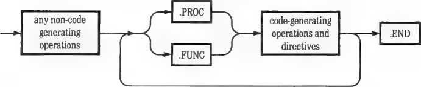
Each assembly-language statement occupies one line and contains four fields, arranged like this:
Label Operation Operand Comment
The fields are separated by one or more spaces or tabs. The normal practice is to use tabs so that the fields line up as columns on the listings, making them easier to read.
The label field can be occupied by an identifier or a local label, or it can be blank. The operation field is occupied either by an instruction mnemonic (opcode), by an assembler directive (pseudo-op), or by a macro identifier. The operand field is occupied by the arguments of the instruction or directive in the operation field. These can be expressions, identifiers, character strings, or other kinds of arguments, depending on the operation. In some cases, the operand field is blank.
The comment field contains text that is ignored by the Assembler. The comment field starts with a semicolon (;). A comment normally follows the other fields in a statement, but if a semicolon is the first nonblank character in a statement, the entire statement is treated as a comment.
An identifier is a character string starting with a letter. The subsequent characters can be letters, numbers, or the ASCII underline (_). Only the first eight characters (not counting any underlines) are actually used by the Assembler, although more can be typed in the identifier.
Note: The underline character is ignored by the Pascal Compiler and Assembler. If you declare a procedure as EXT—PROC, it is just as if you had declared it EXTPROC or E_X_T_PROC. J
The Assembler makes only one pass through the source. On encountering an undefined identifier in an expression, the Assembler treats the identifier as an undefined label that will eventually be defined. Any identifier other than a label must be defined before it is used.
A label must begin in the first column, with no preceding spaces. A label can be followed by a colon; the colon will be ignored.
Using the Equate directive (.EQU), a label can be defined by an expression containing other labels or absolutes. A label that appears as the argument of an Equate directive can be undefined, but the undefined label cannot then be defined by a later Equate directive.
A local label has a dollar sign ($) as its first character, followed by as many as eight digits. A local label cannot be used on the left-hand side of an equate.
Local labels are mainly used to jump around within a small segment of code without using up space in the symbol table that will be needed for regular labels. The Assembler’s local-label table can hold up to 21 labels. The local-label table is emptied each time a regular label is encountered, thus making all local labels previously defined invalid beyond that point in the assembly. An example of the use of local labels is shown below, where the branch to label $04 is made invalid by the intervening regular label REALLAB.
|
$03 |
STA |
4 |
;LEGAL USE OF LOCAL LABEL |
|
BNE |
$03 | ||
|
BNE |
$04 |
;ILLEGAL USE OF LOCAL LABEL | |
|
REALLAB |
LDA |
#1 | |
|
$04 |
TAX |
A constant must start with an integer from 0 through 9. For example, the hexadecimal constant FF must be written OFF.
The default number base is hexadecimal. A decimal constant consists of a number followed by a period (decimal point).
EXAMPLE: Hexadecimal: 13
Decimal: 19.
The Assembler recognizes the asterisk (•) in the operand field as a reference to the current value of the location counter. For example, the statement
loop jmp *
would be assembled as a jump to the location of the jump itself; in other words, an infinite loop or virtual halt.
The value of an expression appearing in the operand field of an instruction is used either as immediate data, as an address, or as an indirect address. The default case is to use it as an address.
As usual with the 6502, immediate data is indicated by a number sign (#) before an expression. For example,
LDA #5
is assembled as a load-accumulator immediate with data 05.
The notation used in the sample program for the indirect and indexed addressing modes is not the same as the standard notation defined by the manufacturer of the 6502 microprocessor. (The Assembler will accept the standard notation, but note the warning below.)
An at sign (@) before an expression appearing in the operand field causes the value of the expression to be used as an indirect address reference. For example, the instruction
LDA DATADDR
would be assembled as a load-accumulator absolute that would load the byte of data at address DATADDR, but the instruction
LDA eDATADDR,Y
would be assembled as a load-accumulator indirect, indexed by index register Y, that would use the word of data at address DATADDR as an address. The 6502 would add the contents of the Y index register to the contents of the word found at DATADDR and load the accumulator with the byte of data found at the resulting address.
Notations for indirect and indexed addressing modes are shown in the following table.
Addressing Mode
Indirect
X-indirect
Y-indirect
Pascal Assembler Format
JMP @GOVECT LDA @LOC2,X LDA @LOCl,Y
Standard 6502 Assembler Format
JMP (GOVECT)
LDA (LOC2,X)
LDA (LOCI),Y
Note: The Pascal Assembler also accepts the standard notation for the indirect and indexed addressing modes, but it does not check the placement of the parentheses. It distinguishes between indirect indexed and indexed indirect modes by the presence of the X or the Y.
The following operators can appear in expressions:
Unary Operators
+ positive
- negative
ones complement
+ addition
- subtraction
* multiplication
/ truncating division (DIV)
% remainder division (MOD)
I bit-by-bit OR
bit-by-bit exclusive OR & bit-by-bit AND
= equal (valid only with .IF)
< > not equal (valid only with .IF )
Expressions are evaluated from left to right, and all operators have the same precedence. To override the normal left-to-right precedence, use angle brackets <like this> around the part of the expression to be evaluated first. It is possible to create bracketed expressions too complex for the Assembler to evaluate, but most such expressions are too long to fit onto one line anyway.
Normally, a label can be used in an address expression such as
LDA LABEL+5 ; Legal expression with label
only if the expression adds or subtracts a constant value from the address of the label. An expression such as
LDA LABEL*2 5 Illegal expression with label
will not be accepted by the Assembler unless you are assembling using the .ABSOLUTE directive (discussed later in this chapter) and LABEL is previously defined. Likewise, a label must not appear in an expression used to make an absolute constant unless the label is absolute. A statement such as
LDA #LABEL*S } Illegal absolute constant with label
will not be accepted by the Assembler unless the .ABSOLUTE directive is in use and LABEL is previously defined.
The following portion of an assembled listing illustrates expression syntax as used in the Assembler. The examples are not an actual, useful program.
[SPACE pressed here, to continue assembly.]
|
00001 |
.PROC |
TEMPI | |||
|
Current |
memory available: |
10088 | |||
|
00001 |
; CONSTANTS | ||||
|
00001 | |||||
|
00001 |
000A |
CON 1 0 |
• EQU |
10. | |
|
00001 |
00BF |
OTH0 |
. EQU |
0BF | |
|
00001 |
00F7 |
ONE0 |
.EQU |
0F7 | |
|
00001 | |||||
|
00001 |
; example EXPRESSIO | ||||
|
00001 | |||||
|
00001 |
A5 |
05 |
LDA |
5 | |
|
00021 |
A5 |
4D |
LDA |
5+8*7 | |
|
00041 |
A5 |
4D |
LDA |
<5+6>*7 | |
|
0 0 061 |
A5 |
0 A |
LDA |
7*6/4 | |
|
0 0 081 |
A5 |
07 |
LDA |
7*<6/4> | |
|
000AI |
A5 |
01 |
LDA |
6X5 | |
|
000CI |
A5 |
02 |
LDA |
5+11X5 | |
|
000EI |
A5 |
07 |
LABEL |
LDA |
5+ <11X5> |
|
00101 |
A5 |
48 |
LDA |
OTH0“ONE0 | |
|
00121 |
A5 |
B7 |
LDA |
OTH04ONE0 | |
|
00141 |
AD |
0E00 |
LDA |
LABEL | |
|
00171 |
AD |
0900 |
LDA |
LABEL-5 | |
|
001AI |
AD |
4000 |
LDA |
LABEL*<5*C0N10> | |
|
LDA LABEL*2 | |||||
ill-formed expression E(dit,<space>,<esc>
001DI
001DI A9 05 001FI A9 1C
LDA '<LABEL+5> operand not absolute E(dit,<5pace>,<esc>
00211 A9
LDA 'LABEL operand not absolute E(dit,<5pace>,<esc>
00221 A9 0 0231 00231
LDA LABEL*2 LDA #5
LDA '5*<CON10 / 2> *3
[SPACE pressed here, to continue assembly.] LDA '<LABEL+5»
[SPACE pressed here, to continue assembly.] LDA 'LABEL .END
A routine is declared EXTERNAL in a Pascal host program in much the same way that a Pascal routine is declared FORWARD. The routine is declared by a standard PROCEDURE or FUNCTION heading followed by the keyword EXTERNAL. Calls to the EXTERNAL routine use standard Pascal syntax, and the Compiler checks that each call agrees in type and number of parameters with the declaration for that routine. It is the programmer’s responsibility to ensure that the assembly-language routine agrees with the host program’s EXTERNAL declaration. The Linker checks only for the same number of words of parameters in the host program’s EXTERNAL declaration and in the EXTERNAL routine’s .PROC or .FUNC declaration. For more information on the Linker’s functions, see Chapter 7, “The Linker.”
When the host program executes a call to an EXTERNAL procedure or function, parameters to be passed are pushed on the evaluation stack in the order they are encountered in the host program’s calling statement: the first parameter is pushed on the stack, high byte first, then the second parameter, and so on. Long integers and sets are passed as the number of words used in the host program. After a long integer or set, a word indicating the number of words passed is pushed onto the stack. Again, each word is pushed on the stack high byte first. Strings, records, arrays, and VAR parameters are passed by address, high byte first. The host program’s EXTERNAL declaration may declare a VAR parameter without a type. This allows a parameter of indeterminate size to be passed by address. When all the parameters have been passed, the host program’s return address is pushed on the stack, high byte first, then low byte.
The assembly-language routine being called must save the return address, and then push it back on the stack just before returning to the calling program. The passed parameters are available on the stack in reverse order: the last one passed is at the top of the stack. See Chapter 9 of Part III for more information.
The TIMES2 function in the assembly-language example earlier in this chapter uses parameter-passing by value. The function first removes the return address from the stack and saves it in location RETURN. After discarding the four extra bytes added to the stack because the host program was calling a function, the function then picks up the data word, one byte at a time. When it is finished, the function pushes the result back onto the stack, followed by the return address.
When you write assembly-language routines in the Pascal environment, you must respect its conventions concerning register use and calling sequences. These are explained in Chapter 9 of Part III. All the 6502 registers are available, and zero-page hexadecimal locations 0 through 35 are available for staring'temporary variables. However, the Pascal system may also use these locations, so you should not expect data to remain there from one execution of a routine to the next. You can save variables in non-zero-page memory by using the .BYTE or .WORD directives to reserve space in your assembly-language routine.
There are two Pascal conventions that apply only to functions:
□ When a function is called, the host program pushes two words (four bytes) of zeros on the evaluation stack after any parameters are pushed and before the return address is pushed.
□ When a function is finished, it must push the result (a scalar, real, or pointer, maximum two words) on the stack, high byte first, just before it pushes the return address.
Assembler directives are statements you put in your program to cause certain operations to be performed during program assembly. Assembler directives resemble machine instructions in appearance but, unlike instructions, they do not get assembled into corresponding opcodes, so they are sometimes called pseudo-ops. To make them easier to distinguish from instructions in program listings, all assembler directives begin with a period.
The Pascal Assembler directives described below are those of the UCSD Adaptable Assembler. They are different from the directives used by the various 6502 microprocessor manufacturers.
In the descriptions that follow, punctuation marks and items that appear in uppercase are to be typed just as they appear. Items that appear in lowercase are the names of element types, which you replace with the appropriate elements when you use the directives. Items that are enclosed in angle brackets <like this> are required elements, which you must supply. Items enclosed in square brackets [like this] are optional elements, which you may supply. If an element type is not shown with a particular directive, the element type is not used with that directive. Here is an example:
[label] .ASCII "<character string>“
This notation indicates that you may supply a label, though you don’t need to, and that between the required double quotation marks you must supply the character string. You should not type the brackets.
Some of the common types of elements are defined in the following table.
Type Definition
value
valuelist
identifierlist
Any numerical value, label, constant, or expression.
A list of one or more values separated by commas.
A list of one or more identifiers separated by commas.
expression Any legal expression as defined under “Syntax of
Assembly-Language Statements.”
identifier[:integer]list A list of one or more identifier:integer pairs separated by commas. The colon-integer is optional in each pair; the default value of integer is 1.
Examples are included after each directive definition to show you the specific syntax and form of the directive. Also, the example assembly-language routine earlier in this chapter includes some Assembler directives in operation.
Every Assembler source textfile must include at least one .PROC statement or .FUNC statement and one .END statement. The .PROC and .FUNC statements declare and delimit the procedures and functions that will be called by a Pascal host program. The .END statement appears at the end of the last routine and serves as the final delimiter. A single assembly program cannot contain more than 50 .PROC and .FUNC directives.
The Pascal host program refers to an assembly-language routine by means of an EXTERNAL declaration. At the time a routine is declared, the actual
parameter names are given. For example, for the assembly-language procedure that begins with the statement
.PROC FARKLE.4
the declaration in the Pascal host program might be
PROCEDURE FARKLE(X,Y:REAL>;
EXTERNAL;
The use of these directives is demonstrated in the example given earlier in this chapter.
Identifies a procedure, which returns no value. A procedure is terminated by the occurrence of a new .PROC or .FUNC statement, or by an .END statement.
Form: .PROC <identifier> [,expression]
[expression] indicates the number of words of parameters expected in calls to this routine. The default value is 0.
Example: .proc di drive,2
Identifies a function, which returns a value. The host program pushes two words onto the stack before it pushes the return address. A function is terminated by the occurrence of a new .PROC or .FUNC statement, or by an .END statement.
Form: .FUNC < identifier > [, expression]
[expression] indicates the number of words of parameters expected in calls to this routine. The default value is 0.
Example: .func random, 4
Indicates the end of the last routine in an assembly-language source file. Form: .END
Example: .end
The next four Assembler directives are for inserting data into the stream of code being generated by the Assembler. The .BYTE, .WORD, and .BLOCK directives can also be used to allocate space for storing variables.
Converts character values to ASCII-equivalent byte constants and places them into the code stream. If a label is present, its value is the address of the first byte stored.
Form: [label] .ASCII “<characterstring>”
where the character string is any string of printable ASCII characters, including spaces. The length of the string must be less than 80 characters. The double quotation marks are used as delimiters for the characters to be converted. If you want to put a double quotation mark into the string, you must insert it separately, using the .BYTE directive, as shown below.
Example: .ascii ■■helld"
For the insertion of a string containing a double quotation mark, such as AB”CD, use the following technique:
.ASCII "AB"
.BYTE 22 ; An ASCII ”
.ASCII “CD"
Note: The 22 is the hexadecimal ASCII code for a double quotation mark.
Generates a byte of data in the code stream for each value in the list. Only the first 7 items in the list appear in the assembly listing, even though all of the items are assembled into the code stream. Each value must be between —128 and +255. If the value is outside this range an error will be flagged. If a label is present, its value is the address of the first byte stored.
Form: [label] .BYTE [valuelist]
The default for no stated value is 0.
TEMP .BYTE
4
The associated output would be
14
Generates a block of repeated data in the code stream. The length of the block is in bytes, and each byte in the block has the same value. If no value is specified, the default is 0. If a label is present, its value is the address of the first byte in the block.
Form: [label] .BLOCK <length>[,value]
Example: temp .block 4,6
The associated output would be
06 (four bytes, each with value 06)
08
06
06
The statement a2 .equ • assigns the current value of the assembler’s location counter (L.C.) to label A2. If the value of the location counter is 50 at the .EQU, the associated output would be:
0050 (assignment of the value of A2)
0005 (assignment due to .WORD 5)
The next four directives control the definitions of the labels used in your program.
Assigns a value to a label. A label can be equated to an expression containing labels or absolutes, but the labels must already be defined. A local label can neither appear in nor be defined by an .EQU.
Form: <label> .EQU <value>
Example: base .equ label6
Sets the location counter to the value of the operand. Words or bytes of zeros are generated in the code stream to fill the space between the old and new positions of the location counter. If the new value is less than the current location counter, an error will be generated.
* Form: .ORG <value>
Example: .org 00000
Sets the location counter to the next higher address that is an even multiple of the value of the operand.
Form: <label> .ALIGN <value>
Example: page .align 0100
This directive forces the Assembler to interpret the arguments of all .ORG directives as absolute memory locations. Because the use of .ABSOLUTE has the effect of cancelling the generation of relocation information, the resulting object code cannot be linked to a Pascal host. Such an object file must be loaded by the user. It also makes it possible to treat any defined (that is, non-forward-referenced) labels as absolute numbers. Thus such labels may be multiplied and divided, and so on. The .ABSOLUTE directive must occur before the first .PROC or .FUNC directive and is in effect for the entire assembly.
Form: .ABSOLUTE
Example: .absolute
Used in expressions to specify locations relative to the beginning of a special table in the Interpreter. Interpreter-relative labels may be defined as shown in the example. The rules regarding the use of such labels are the same as for any other specially defined labels (for example, .PUBLIC and .PRIVATE).
Example: stuff .equ .interp+2
Certain Interpreter entry points may be accessed by means of an instruction such as
JMP g.INTERP+n
For more information on Interpreter entry points, refer to Chapter 1 of Part IV.
A macro is a named block of statements. After it is defined, it can be inserted into the text wherever it is needed simply by using its name as an operator. The text of the macro can include parameters so that each insertion results in a different version of the macro statements. A macro whose definition precedes the first .PROC or .FUNC statement in an assembly-language source file can be used in any of the procedures or functions in the file.
A macro is invoked by using its name as an operator. The Assembler inserts the text of the macro definition into the program immediately after the statement that invokes it. A statement that invokes a macro can have a list of up to nine arguments, separated by commas, in its operand field. Each time it is invoked, the macro text is modified by substituting the arguments for the macro parameters. If n is a single decimal digit greater than zero, the n-th invocation argument is substituted wherever the parameter %n occurs in the macro definition. If a particular invocation provides fewer arguments than there are parameters in the macro’s definition, a null string is substituted for each missing argument.
Note: A macro definition cannot contain another macro definition. However, a definition can include other macro invocations. The nesting of macro invocations can be up to five levels deep.
You can put a macro definition in either the main file or in an Include file, but the macro definition must be completely contained within one textfile. It is illegal to start a macro definition in the main source file and continue it into an Include file, or to start the definition in one Include file and continue it in another Include file.
Each time a macro is invoked, the macro text will appear in the listing file unless .NOMACROLIST was in effect when the macro was defined. Macro expansion text is flagged in the listing by a number sign (#) at the left of each macro statement. Comments occurring in the macro definition are not repeated in the expansion.
.MACRO indicates the start of a macro definition and gives it an identifier. .ENDM indicates the end of a macro definition.
Form: .MACRO < identifier >
. ; (macro body)
.ENDM
.MACRO HELP STA *1
Example:
; ( comment > ; ( comment >
LDA X2
. ENDM
The assembly listing beginning at the point where this macro is invoked might look like this:
HELP ALPHA,BETA
• STA ALPHA
• LDA BETA
The statement HELP invokes the defined macro using two arguments, ALPHA and BETA. These arguments are used in forming the macro expansion (flagged in the listing by number signs) that follows the invoking statement. In the expansion, the first macro-invocation argument (variable ALPHA) is substituted for the definition’s parameter %1, and the second argument (variable BETA) is substituted for parameter %2.
The following portion of an assembly listing illustrates the syntax used when defining and invoking macros. The procedure itself is not meant to be an actual, useful program. Other examples of macros occur in the program example given in the first part of this chapter.
PAGE
TEMP2
FILE:
0000I
0000!
Current memory available 31
PROC TEMP2
10088
CONSTANTS
CON10 .EQU 10. OTH0 .EQU 0BF ONE0 .EQU 0F7
0000I
0000!
0000I
0000!
MACRO DEFINITIONS
0000I
0000!
0000I
0000!
MACRO M2 CLC
LDA PREDEFL+X1 ENDM
|
00 001 |
.MACRO |
TESTM | |||
|
00001 |
JMP |
X1 | |||
|
00001 |
LDA |
#S + X2 | |||
|
00001 |
M2 |
*2 ; |
MACRO CALL INSIDE ; A MACRO DEF'N | ||
|
00001 |
LDA |
X3 | |||
|
0 00 01 |
LDA |
X4 | |||
|
00001 |
LDA |
X5 | |||
|
00001 |
JMP |
%6 | |||
|
00001 |
. ENDM | ||||
|
00001 | |||||
|
00001 |
AS |
05 |
PREDEFL LDA |
5 ; |
A PRE-DEFINED LABEL |
|
00021 | |||||
|
00021 |
! |
MACRO CALL WITH ALL ; PARAMETERS | |||
|
00021 |
5 |
i NO LEADING OR ; TRAILING SPACES | |||
|
00021 | |||||
|
00021 |
TESTM |
PREDEFL,<5*CON10+6>,#55,#6,1,LABEL2 | |||
|
00021 |
4C |
0000 |
# JMP |
PREDEFL | |
|
00051 |
A9 |
3D |
# LDA |
#5+<5»CON10+6> | |
|
00071 |
# M2 |
<5#C0N10+6> | |||
|
00071 |
18 |
# CLC | |||
|
0 0 081 |
AD |
3800 |
# LDA |
PREDEFL+<5*CQN10+6> | |
|
0 0 0BI |
A9 |
55 |
# LDA |
#55 | |
|
000DI |
A9 |
06 |
# LDA |
#6 | |
|
000FI |
A5 |
01 |
# LDA |
1 | |
|
001 11 |
4C |
# * * * |
# JMP |
LABEL2 | |
|
00141 | |||||
|
00141 |
M2 |
5 ! |
SIMPLE MACRO CALL | ||
|
00141 |
18 |
# CLC | |||
|
00151 |
AD |
0500 |
# LDA |
PREDEFL+5 | |
|
00181 | |||||
|
00181 |
1 |
MACRO CALL WITH NULL PARAMS AND LEAD | |||
|
00181 |
i |
i TRAILING SPACES | |||
|
00181 | |||||
|
00181 |
TESTM ,CON 10 , |
, XX , 0F0, PREDEFL | |||
|
JMP | ||
|
not enough operands E(dit,<space>><esc> |
r |
SPACE pressed here, to continue assembly. J |
|
00181 |
# |
JMP |
|
00181 A9 0F |
0 |
LDA #5+CON10 |
|
001AI |
0 |
M2 CON 10 |
|
001AI 18 |
0 |
CLC |
|
001BI AD 0A00 |
0 |
LDA PREDEFL+CON10 |
LDA
ill formed operand E(dit,<5pace>,<e5c>
00 1 El
00 1 El AD **** 00211 A5 F0 00231 4C 0000 0 0261 00261
r SPACE pressed here, to continue assembly. ]
• LDA
• LDA XX
• LDA 0F0
• JMP PREDEFL
.END
Conditional-assembly directives are used to exclude or include selected sections of a source file at the time it is assembled. When the Assembler encounters an .IF directive, it evaluates the expression in its argument. If the expression is false, the Assembler simply discards the text until an .ENDC is reached, unless an .ELSE is encountered. If there is an .ELSE directive between the .IF and .ENDC directives, the text before the .ELSE is assembled if the expression is true. If the expression is false, the text after the .ELSE is assembled. The unassembled section of code will not be included in any listing. Conditional-assembly directives may be nested.
The conditional expression takes one of two forms. The first is the normal arithmetic/logical expression used elsewhere in the Assembler. This type of expression is considered false if it evaluates to zero; otherwise, it is true. The second form of conditional expression is comparison for equality, indicated by an equal sign (=), or inequality, indicated by less-than greater-than (< >). The objects compared may be strings, characters, or arithmetic/logical expressions.
.IF identifies the beginning of the conditional text and defines the conditional expression. .ELSE identifies the alternate section of text, which is used if the conditional expression is false. .ENDC identifies the end of the conditional text.
[.ELSE]
.ENDC
Example: (See the listing below.)
.IF LABEL 1-LABEL2 jArithmetic expression. . ; This text assembled
. ; only if subtraction
. ; result is non-zero
•IF "X1" •"STUFF*1 {Comparison expression.
|
. |
; This text |
assembled |
|
. |
; if subtra |
ction above |
|
. |
; was true |
and if text |
|
• |
i of first |
parameter |
|
. |
; (assuming |
in macro) |
|
• |
; is equal |
to "STUFF". |
|
.ENDC |
; End of ne |
sted cond. |
|
.ELSE | ||
|
. |
; This text |
assembled |
|
. |
; if subtraction result | |
|
• |
; was zero. | |
|
.ENDC |
5 Terminate |
s outer |
|
; level of |
conditional. | |
The directives .CONST, .PUBLIC, and .PRIVATE enable an assembly-language routine to share addresses and data space with the Pascal program that calls it. Data values and locations are referred to by
name in both the program and the routine. The Linker picks up and transfers the address values necessary to resolve these external references. Refer to Chapter 7, “The Linker,” for further information.
Note that the locations defined using these directives are discussed in Chapter 2 of Part IV.
Allows constants that are declared global in the Pascal host program to be accessed by the assembly-language routine. Only 16-bit objects can be accessed by means of the .CONST directive.
Form: .CONST <identifierlist>
Example: (See the example after .PRIVATE.)
Allows variables declared global by the Pascal host program to be used by the assembly-language routine as well as the host program.
Form: .PUBLIC < identif ierlist >
Example: (See the example after .PRIVATE.)
Allows variable data used by the assembly-language routine to be stored in the Pascal host program’s global data segment and yet be inaccessible to the host program. These variables retain their values for the entire execution of the program.
Form: .PRIVATE <identifier[:integer] list>
Each identifier will be allocated the number of words given by integer. The default is one word.
Example: Assume that the host program is the following Pascal
program:
PROGRAM EXAMPLE;
CONST SETSIZE-S0; LENGTH-80;
VAR I,J,F,HOLD,COUNTER,LDC:INTEGER;
LST1:ARRAY[0..9] OF CHAR;
BEGIN
END.
The statement. const length occurring in an assembly-language routine called by the Pascal host program will allow the constant LENGTH to be used in the assembly-language routine almost as if the line length .equ 80. had been written. Remember the limitation mentioned above: .CONST identifiers can be used only for 16-bit objects.
If the statements
.PRIVATE PRT,LST2:9 .PUBLIC LDC,I,J
appear in the assembly-language routine, the variables LDC, I, and J can be used by both the host program and the assembly-language routine, whereas the variables PRT and LST2 can be used only by the assembly-language routine. Also, the argument LST2:9 causes the variable LST2 to correspond to the beginning of a nine-word block of space in the Pascal host’s global data segment.
Separate assembly-language routines can share data structures and subroutines by means of the .DEF and .REF directives. These directives cause the Assembler to generate information that the Linker uses to resolve external references between separate routines in the same assembly or between routines assembled separately. For example, by using these directives, one assembly-language routine can call subroutines defined in another assembly-language routine.
Note that procedures and functions can refer to identifiers defined before the first procedure or function in the same source file without using .DEF and .REF.
The use of the .DEF and .REF directives is similar to the use of the .PUBLIC directive. The .DEF and .REF directives enable you to associate labels between two assembly-language routines rather than between an assembly-language routine and a Pascal host program. Just as with .PRIVATE and .PUBLIC, these external references must eventually be resolved by the Linker.
Note: The .PROC and .FUNC directives implicitly generate a .DEF with the same name. This means that an assembly-language routine can call external procedures and functions if they are declared with a .REF directive in the calling assembly-language routine.
Declares that a label defined in the current routine is available for use (by means of .REF) from procedures or functions in other assembly-language routines.
Form: .DEF <identifierlist>
Example: The following outline routine declares the labels DOIT
and THINK in a .DEF statement. The subroutines labeled DOIT and THINK may then be used by other assembly-language routines (see example for .REF).
.PROC FARKLE,3 .DEF DOIT,THINK
BNE THINK DOIT LDA
RTS
THINK LDY
RTS .END
.HEF
Identifies a label, used in the current routine, that is defined and declared as available (by means of a .DEF directive) in another routine. During the linking process, corresponding labels declared in .DEFs and .REFs are matched.
Form: .REF < identifierlist >
Example: The following outline assembly-language routine
defines the external label DOIT in a .REF statement. (DOIT was declared available for such reference by the .DEF in the previous example). It then uses the label DOIT just as if it referred to a labeled subroutine within the routine itself.
.PROC SAMPLE .REF DDIT
JSR DOIT .END
The listing-control directives determine what is sent to the assembly listing file. This is the file that is specified in response to the Assembler prompt
Output file for assembled listing (<ret> for none):
If the assembly listing file is omitted, all listing-control directives are ignored.
These two directives allow selective listing of assembly-language routines. Statements assembled after a .LIST directive go to the specified listing file. Statements assembled after a .NOLIST directive are not listed. Listing may be turned on and off repeatedly within an assembly. .LIST is the default option.
Form: .LIST
.NOLIST
Allow selective listing of macro expansions. The textual expansion of a macro will appear in the assembly listing if the .MACROLIST option was in effect when the macro was defined. The expansion text will not appear in the listing if the .NOMACROLIST option was in effect when the macro was defined. These options may be used repeatedly throughout an assembly-language source file, to select those macros whose expansion text will appear in the assembly listing. The Assembler defaults to the .MACROLIST option.
Macro expansion text is flagged in the listing by a number sign (#) at the left of each expanded line. Comments in a macro’s definition do not appear in the expansion. In the example assembly listing earlier in this chapter, the definition of macro POP appears on PAGE-0; the macro’s expansion text appears on PAGE-1 and PAGE-4.
When assembling nested macro invocations, listing of expansion text continues until the Assembler encounters the first macro defined with .NOMACROLIST in effect. Listing does not resume until that macro’s invocation is complete, regardless of the listing state of the macros invoked by the nonlisting macro.
Form: .MACROLIST
.NOMACROLIST
Remember: The .NOLIST option takes precedence over the .MACROLIST option.
.PATCHLIST and .NOPATCHLIST
Allow control over listing of back-patches made to the codefile. These options may be used repeatedly throughout an assembly. When an undefined label is encountered, the assembled listing shows an asterisk (*) for each hexadecimal digit to be filled in later. For example:
00191 10** BPL DONE
When the forward reference is resolved, the back-patch is listed in the form
0019* 05
001 FI A9 00 DONE LDA #0
where the number to the left of the asterisk is the address of the patched location and the number to the right of the asterisk is that location’s new value. PATCHLIST is the default state.
Form: .PATCHLIST
.NOPATCHLIST
■PAGE
Inserts a top-of-form page break in the assembly listing. Form: .PAGE
■TITLE
Specifies the title to appear at the top of each page of the assembly listing. At the beginning of each routine the title is set to blanks and must be reset if a title is desired for that routine. The title is cleared at the start of the file.
In the example assembly listing earlier in this chapter, the title SYMBOLTABLE DUMP was not set by a .TITLE directive. That title is always used on pages containing reference symbol tables. After each symbol table is listed, the title printed reverts to its previous setting.
Form: .TITLE “ <title> ”
where <title> is any string of printable ASCII characters, including spaces. The string must be less than 80 characters. The double quotation marks are used to delimit the string, so a title may not include the double quotation mark character.
Example: .title "QRC12 interpreter"
Causes the specified source file to be included in the assembly immediately after the .INCLUDE.
Form: .INCLUDE <filename>
|
where the filename specifies an assembly-language textfile to be included. If you don’t add the suffix .TEXT, the system will add it for you. The last character of the filename must be the last nonspace character on that line; no comment may follow on the same line. | |
|
Correct Example: |
.INCLUDE SHORTSTART.TEXT |
|
Correct Example: Incorrect Example: |
.INCLUDE SHORTSTART.TEXT S CALLS STARTER |
.INCLUDE SHORTSTART.TEXT jCALLS STARTER
The text of any included file is treated by the Assembler just as if you had typed that text into the original file at the position of the .INCLUDE directive. For example, if the included file contains an .END directive, the assembly ends there.
A file that is included in an assembly via an .INCLUDE directive cannot itself contain .INCLUDE directives. In other words, you can’t nest .INCLUDES.
This section contains summaries of the Assembler commands and the Assembler directives.
1. From the Command level, select Assemble.
2. If a text workfile exists, the Assembler assembles that file automatically. Otherwise, the Assembler prompts you to specify a source textfile and then to specify a destination codefile.
3. Finally, the Assembler prompts you to specify an output textfile for the assembly listing, if you want one.
4. If the Assembler finds an error, select the Editor to correct the source file, then assemble again.
Assembler Directive Summary
Square brackets [like this] surround optional elements, which you may supply. Angle brackets dike this> surround required elements, which you must supply. The brackets and the brief definitions at the right side of the table are not to be typed.
PROC
FUNC
END
<identifier>[,expression] Begins a procedure.
<identifier>[,expression] Begins a function.
Ends the entire assembly.
|
[label] |
.ASCII |
“<character string>” |
Inserts ASCII values of characters. |
|
[label] |
.BYTE |
[valuelist] |
Inserts bytes of listed values. |
|
[label] |
.BLOCK |
<length>[,value] |
Inserts block of given value and length. |
|
[label] |
.WORD |
[valuelist] |
Inserts words of listed values. |
|
Label-Definition Directives | |||
|
<label> |
.EQU |
<value> |
Assigns value to label. |
|
.ORG |
<value> |
Location of next byte will be (start of assembly file) + value. | |
|
.ABSOLUTE |
Causes all .ORGs to put next byte at absolute location = value. | ||
|
.ALIGN |
<value> |
Increases the location counter to the next whole multiple of value. | |
|
.INTERP |
Macro Directives |
First location of interpreter relative location table; used in relative-location expressions. | |
|
.MACRO |
< identifier > |
Begins a macro definition. | |
|
.ENDM |
Ends a macro definition. | ||
|
Conditional-Assembly Directives | |||
|
[label] |
.IF |
<expression> |
Begins conditional assembly. If true, assembles next text [up to .ELSE ]; if false, only assembles |
|
[.ELSE] |
text after .ELSE. | ||
|
.ENDC |
Ends conditional assembly. | ||
.CONST < identdfierlist >
.PUBLIC <identifierlist>
.PRIVATE <identifier[:integer] list>
Takes value from global constant in Pascal host.
Uses a global variable from the Pascal host.
Creates a global variable not accessible to the Pascal host. Default: 1 word per identifier.
.DEF < identifierlist >
.REF <identifierlist>
Makes label available to other routines. Refers to label .DEF’d in some other routine.
Turn assembly listing on and off.
Turn listing of macro expansions on and off. Turn listing of back-patches on and off.
Puts page-break in listing.
Titles each page of current .PROC or .FUNC.
.LIST and .NOLIST .MACROLIST and .NOMACROLIST .PATCHLIST and .NOPATCHLIST .PAGE
.TITLE “<title>”
.INCLUDE <filename>
Includes named textfile in the assembly.
Chapter 7
The Linker
The Linker provides a way to incorporate separately compiled or assembled routines into your program. For example, you might have a real-time application that requires an assembly-language routine to obtain the necessary speed. You could assemble this routine separately and then use the Linker to add it to your program.
All compiled or assembled codefiles include data that describe external references and entry points. The Linker uses this data to resolve references between separate codefiles. For details about the way Linker data is stored in the codefiles, see Chapter 2 of Part IV.
A Pascal program or unit that calls linked subroutines is called a host program. In order for your host program to use assembled routines, the program must declare them as EXTERNAL. This notifies the Compiler that the routines may be called, but have not yet been provided. The Compiler sets a flag in the Linker data in the codefile to indicate that linking is required before the program can be executed. The example in Chapter 6, “The Assembler,” shows a Pascal host program, a procedure and a function, both in assembly language, and the linking process that combines them into an executable codefile.
You also use the Linker to link in a Regular Unit, which is a group of compiled routines that will be used together. You don’t need the Linker to use the Intrinsic Units that are provided with Apple Pascal, such as TRANSCEND and APPLESTUFF; your Pascal program picks them up directly from SYSTEM.LIBRARY or from the Program Library or Library Name File. On the other hand, you sometimes use the Linker to build Intrinsic Units of your own. For information about Regular Units and Intrinsic Units, refer to Chapter 12 of Part III.
You invoke the Linker explicitly by typing l for Link from the Command level. There are two situations in which this is the only way you can use the Linker:
□ The host file into which Regular Units or EXTERNAL routines are to be linked is not the codefile resulting from a successful compilation initiated by the Run command.
□ Any of the Regular Units or EXTERNAL routines to be linked reside in files other than the Pascal system disk’s SYSTEM.LIBRARY.
The following files must be present for you to use the Linker explicitly:
□ SYSTEM.LINKER
□ the host codefile needing EXTERNAL routines or Regular Units
□ the codefiles or library files containing the EXTERNAL routines and Regular Units
Any time the Linker is invoked, SYSTEM.LINKER must be available in some drive. This file is normally found on disk APPLE2:. After the Linker prompt line appears, SYSTEM.LINKER is no longer needed, so the disk that contains it may be removed from the system to make room for other disks.
Two 51/4-lnch Disk Drives
If you have two drives and you want to Link when the host program file and library files are not already on APPLE1: or APPLE2:, you can replace APPLE1: or APPLE2: with the disk containing the files to be linked after the Linker prompt line appears on your display. When the linking process is complete, the system will attempt to return to the Command level. If it does not find the Pascal system disk in the startup drive, the system will prompt you to put it in.
One 5'14-Inch Disk Drive
To Link with one 514-inch disk drive, you can replace the APPLEO: system disk with APPLE2: and invoke the Linker by typing L. After the Linker prompt line appears, you can remove APPLE2: and replace it with the disk containing the files to be linked. When the linking process is complete, the system will prompt you to insert APPLEO: in your disk drive.
When you type l at the Command level to invoke the Linker explicitly, the system displays the messages:
Linking...
Apple Pascal Linker M.31 Link what host codefile?
The host file is the Pascal program codefile into which the EXTERNAL routines or Regular Units are to be linked. Note that the Linker will not accept an assembly routine codefile as the host file; the host must be a Pascal program codefile.
If you respond to the prompt by pressing RETURN, the Linker uses the Pascal system disk’s workfile SYSTEM.WRK.CODE as the host file. If either the Run command or the Compile command has just caused the Compiler to save a compiled codefile, the Linker uses that file as the host file even if it is not SYSTEM.WRK.CODE.
You can also respond by typing the filename of any other Pascal codefile. If the Linker cannot find a file with the exact filename you typed and that filename does not end in .CODE or in .LIBRARY, it adds the suffix .CODE to the filename and tries again. The Linker always displays the filename of the last file it tried to find.
To cancel the Link command, respond to the prompt by pressing ESC and then pressing RETURN.
If you press ESC followed by RETURN in response to any prompt in the Linker, linking will terminate and you will return to the Command level.
After the Linker finds the host file, it asks for the name of a library file that contains the required Regular Units or EXTERNAL routines. The prompt is:
Using what library file?
You should respond by typing the filename of any codefile containing a Regular Unit or EXTERNAL routine that you want linked into the host program. This file can be either a codefile produced by the Compiler or by the Assembler, or a library file created by the Librarian.
The Linker looks first for the exact filename that you type; then, if the search is unsuccessful, it adds the suffix .CODE and looks again. In any case, it always displays the local filename of the file actually found.
If you press RETURN in response to the first request for a library file, you will see an error message.
When the Linker finds the first file specified, it displays another prompt and waits for you to type the filename of another file containing a needed Unit or routine. You can include up to eight library files in one linking operation. If you type an asterisk (*) and then press RETURN, the Linker will look for Regular Units or EXTERNAL routines in the file SYSTEM.LIBRARY on the Pascal system disk. You will see this message:
Opening SYSTEM.LIBRARY
If a file you specify as a host file or a library file is not a codefile, the system will display an error message. These files must contain either compiled Pascal P-code or assembled 6502 assembly code. For information on library files and the Librarian, see the next chapter.
When you have supplied the names of all the library files needed, respond to the next prompt requesting Another library f i i e bv Dressing RETURN.
When you have finished specifying library files, the Linker will prompt with:
Map file C<ret> for none)?
The map file is a textfile produced by the Linker. It contains a map or directory of the labels involved in the linking process. If you respond by typing a filename, the Linker writes the map file with that filename. You need not type the suffix .TEXT; if the filename you type does not end with .TEXT or a period (.), the Linker will add the suffix.
If you respond to this prompt by simply pressing RETURN, no map file will be written. The map file is primarily a diagnostic and system programming tool, and is not required for most uses of the Linker. Note: You can get a more useful map of a library or codefile using the Library Mapper described in Chapter 8, “The Librarian.”
After you have specified the disposition of the map file, the Linker reads the files required to start the linking process. Then it asks you
Output file C<ret> for workfileJ?
Type the filename for the linked output codefile. This filename will often be the same as that of the host file, but the Linker will not accept the dollar sign ($) same-name option used with the Compiler and the Assembler. You need not type the suffix .CODE; the Linker will supply it for you, unless you end the filename with a period (.).
If you respond with no filename, by pressing RETURN only, the linked output will be saved in the Pascal system disk’s workfile, SYSTEM.WRK.CODE.
Unless you specify a different file size, the output codefile is opened with the [0] file size. The map file is opened after the output codefile. If you used the default file size [0], and you try to put both files on the same disk, the system may be unable to open the map file because the output codefile may then occupy all the remaining disk space. This does not stop the linking process, but you will not have a map file. You can solve this problem by sending the map file to another disk, to the CONSOLE:, or to a PRINTER:. You can also specify another file size for the output file.
After you type the output filename and press RETURN, the actual linking will begin.
If a specified library file is not available in any drive, this message appears:
No file <filename>
Type <sp>(continue), <esc>(terminate)
If you elect to continue linking without some needed Regular Units or EXTERNAL routines, the resulting codefile cannot be executed until you explicitly link them in.
If the linking needed in your program is simple enough, you can let the Run command invoke the Linker at the same time you compile and execute your program. Linking is needed if your program contains EXTERNAL declarations or uses Regular Units. Intrinsic Units needed at execute time are not linked; they can be in either SYSTEM.LIBRARY, a Program Library, or a Library Name File, on the same disk as the program codefile.
If all of the Regular Units and EXTERNAL routines to be linked reside in the Pascal system disk’s SYSTEM.LIBRARY, you can use the Run command to compile, link, and execute your program. Otherwise, you’ll have to use the Link command explicitly, as described in the previous section.
The Mowing disk files must be present if the Linker is invoked by the Run
command:
□ SYSTEM.PASCAL
□ the host program needing EXTERNAL routines or Regular Units
□ SYSTEM.LINKER
□ SYSTEM.LIBRARY containing EXTERNAL routines or Regular Units to link and any Intrinsic Units needed at execution time
□ the Program Library or Library Name File, containing Intrinsic Units needed at execution time.
The following files must also be present under some conditions when you
use the Run command. You need the file if the condition shown applies:
□ SYSTEM.COMPILER, if host program is a textfile
□ SYSTEM.SYNTAX, for Compiler error messages
a SYSTEM.EDITOR, to fix errors found by the Compiler
Keep the System Disk in the Startup Drive: The system returns to the Command level for an instant between any two of the system programs invoked by the Run command. If the Pascal system disk is not in the startup drive when this happens, the system will prompt you to put it in.
If you use the Run command with a text workfile, the Compiler will be invoked first, so the file SYSTEM.COMPILER must be available. It is normally found on APPLE2:, but it may be on any disk in any drive. If the workfile has already been compiled into its code version, the Run command will not invoke the Compiler, so SYSTEM.COMPILER is not needed.
If linking is needed after the program has compiled successfully, the Linker is invoked automatically, so the file SYSTEM.LINKER must be available in some drive. This file is normally found on disk APPLE2:.
When the Linker is invoked by the Run command, it automatically uses the codefile that resulted from the latest successful compilation as the host file, even if this file is not the code workfile.
When invoked by the Run command, the Linker automatically looks for needed Regular Units and EXTERNAL routines in the file SYSTEM.LIBRARY. The file SYSTEM.LIBRARY must be on the Pascal system disk, but the disk may be in any disk drive.
If the file SYSTEM.LIBRARY is not available on the Pascal system disk, this message appears:
No file ‘SYSTEM.LIBRARY
Type <sp>Ccontiime), <esc>(terminate)
If you see this message, press ESC to return to the Command level.
When the Linker is invoked by the Run command, it will not allow you to specify a library file other than SYSTEM.LIBRARY; if you want to use any other library files, you will have to invoke the Linker explicitly.
Finally, following successful compilation and linking, the program is executed. At that time, if SYSTEM.LIBRARY is required for execution, it must be on the Pascal system disk in the startup drive.
One 51/4-lnch Disk Drive
To Run a text workfile that needs linking to an EXTERNAL routine or Program Unit, you will have to use the Filer to Transfer SYSTEM.LINKER from APPLE2: onto your APPLEO: system disk. Before you make this transfer, remove the files SYSTEM.SYNTAX (use the Compiler error messages shown in the appendix, instead) and SYSTEM.CHARSET (needed only if your program uses WCHAR or WSTRING from TURTLEGRAPHICS) from APPLEO:. With this modified APPLEO: disk in the drive, your system will have available all the files it needs to Edit, Compile, Link, Execute, and Run. Unfortunately, this leaves almost no space for your text and code workfiles. To make more room on your system disk, you may want to remove SYSTEM.FILER (can be read in from any disk, as long as that disk is in the drive when you invoke the Filer).
Chapter 8
The Librarian
A library is a codefile containing routines that are used by your program, Intrinsic Units in a library will be picked up automatically when your program is executed. To leam about libraries, read Chapter 13 in Part III.
The Librarian is a Pascal utility program that lets you set up libraries.
64K Pascal System
The 64K Pascal system uses only SYSTEM.LIBRARY. You cannot use a Program Library or Library Name File if you are using Pascal’s 64K system.
The Librarian is the system utility that you use to combine separately compiled or assembled codefiles into a single library file. One way you can use it is to put all of your Pascal Units and assembly-language routines into a single convenient library codefile for linking into your programs.
When you use the Run command, the system will automatically find and link needed Regular Units and assembly-language routines if they are in the file named SYSTEM.LIBRARY on the Pascal system disk. The system will also find needed Intrinsic Units that are in SYSTEM.LIBRARY and use them without linking. You can use the Librarian to add, change, and delete routines in SYSTEM.LIBRARY.
▲Warning
If you remove Program Units from SYSTEM.LIBRARY, do not remove units PASACALIO or LONGINTIO. See Chapter 13 of Part III to learn more.
When you use the Link and Execute commands explicitly, you can use a library file other than SYSTEM.LIBRARY. Using the Librarian, you can set up a library file for the exclusive use of a particular program. For more information about Regular and Intrinsic Units, see Chapter 12, “Program Units,” in Part III; for more information about libraries, see Chapter 13, “Libraries,” in Part III.
You cannot invoke the Librarian just by typing a letter from the Command level; instead, you must use the Execute command and specify the Librarian program codefile by name. System programs, such as the
Librarian, that are invoked by the Execute command are frequently referred to as utility programs, even though they may be substantial software tools.
When you wish to add a new Pascal unit or EXTERNAL routine to a library file, or to delete one, you must first use the Librarian to create a new, empty library file. Next, you specify each item in the original library file that you want to keep so that the Librarian can copy it into the new library file. You can then add new items by having the Librarian transfer other codefiles into the new library file. After you have created a library that you want the system to use automatically, you must either move it to the Pascal system disk and change its name to SYSTEM.LIBRARY, or move it to the same disk as your program and change its name to the appropriate Program Library name.
If the library you created will be used only during explicit linking, it may have any name.
The following files must be in some disk drive for you to use the Librarian:
□ LIBRARY.CODE
□ Codefiles containing units and EXTERNAL routines to be put into the new library
□ Output file (after the Librarian has started)
The file LIBRARY.CODE is normally found on disk APPLES:, but it may be on any disk in any drive. Once the Librarian has started, this file is no longer needed.
A file containing a unit or EXTERNAL routine to be put into the new library is called an input file. Each input file needs to be available on some disk in some drive only during the time it is being loaded. Once the Librarian prompts you for the next input file, you can remove the disk containing the previous one.
The Librarian builds the new library in a file called the output file. Once the Librarian has started, you must leave the disk containing the output file in its drive until the new library is complete.
Two 51/4-lnch Disk Drives
If you have two disk drives, you will need to have APPLE2: in the second drive when you execute the Librarian codefile. After the first Librarian prompt appears on the screen, you can remove APPLE1: and APPLE2: and put in other disks as needed. Remember to leave the disk containing the output file in its drive until you finish using the Librarian.
If you are using a single-drive system, you can use the Filer to Transfer all necessary files onto your system disk before Executing LIBRARY.CODE. You can also use the Librarian by Executing the file APPLE2:LIBRARY with APPLE2: in the drive. When you see the first prompt shown by the Librarian utility, you can put any other disk in the drive. With one drive, the output codefile and all linked codefiles must be on the same disk. If that disk is not the system disk, put your system disk back in the drive before you Quit the Librarian utility.
One 51/4-lnch Disk Drive
When you finish using the Librarian, your Pascal system disk should be in
the startup drive. If it is not there, the system prompts you to replace it.
To invoke the Librarian, the system must be at the Command level and the Librarian program codefile must be in some disk drive. Type x for Execute. The system will prompt you with
Execute whet file (<ret> to exit) ?
You should respond by typing the filename of the Librarian program codefile:
APPLE2:LIBRARY
You do not need to type the suffix .CODE; the system will append the .CODE suffix automatically. The system executes LIBRARY.CODE, which displays the program identification message and the first prompt:
Apple Pascal Librarian [1.31 Output file ->
At this point, you can remove disk APPLE2: from its drive if you need to.
You should respond to the output file prompt with the filename of your new library file. This filename is used exactly as you type it; no suffix is added by the system. If you respond to this prompt by typing SYSTEM.LIBRARY, the system will remove the original SYSTEM.LIBRARY file when the Librarian is finished, and replace it with your new library file. Typing an asterisk (*) in response to this prompt is the same as typing
SYSTEM.LIBRARY.
The Librarian now displays the prompt
Input File ->
You should respond to this prompt by typing the filename of a library or codefile that contains units or routines you wish to include in your new library file. If you want to copy units or routines from the system library, you should type system . l i brar y in response to this prompt. Typing an asterisk (*) here is the same as typing system .library.
The Librarian first looks on the specified disk for a file whose filename is exactly as you typed it. If there is no file with that exact filename and that filename does not end in .CODE, the suffix .CODE is added to the filename and the search is repeated. If the search is still unsuccessful, the Librarian will display one of two messages. If your file was not found, it displays this message:
I/O ERROR * 10 Type .space* to continue
If your disk was not found, it displays this message:
I/O ERROR * 9 Type <space> to continue
After you press the SPACE bar, the Librarian will prompt you to try again. The only way to escape from the program at this point is by typing a correct file specification or by pressing RETURN and then typing a for Abort.
There can be up to 16 code or data segments in any Apple II program codefile or library codefile, and the Librarian assigns each one a numbered slot. After you have specified the name of a codefile, the Librarian displays a table that gives the slot number, the segment number (in parentheses), the name, and the length in bytes of each unit or EXTERNAL routine in the file.
An Intrinsic Unit can occupy two slots, one for the code segment and one for the data segment. The segment numbers will already have been assigned: see Chapter 12 in Part III. The number of bytes given for a segment is its length as stored in the library. For Regular Units and EXTERNAL routines, this length includes Linker data that are not placed in your program, so it is a little larger than the number of bytes the segment will occupy when used in your program.
Use a Segment Number Only Once: You should not put more than one Program Unit with the same segment number into a library.
The slot table for the file you specify will be displayed immediately after the input codefile prompt. It will look something like this:
Input File -> APPLE 1:SYSTEM.LIBRARY
|
0-C30) |
LONGINTI |
2452 |
8- |
0 |
|
1 — < 31 > |
PASCALIO |
1238 |
9- |
0 |
|
2-C29) |
TRANSCEN |
1168 |
10- |
0 |
|
3-C22> |
APPLESTU |
662 |
11- |
0 |
|
4- |
0 |
12- |
0 | |
|
5- |
0 |
13- |
0 | |
|
e- |
0 |
14- |
0 | |
|
7- |
0 |
1S- |
0 |
When the Librarian displays a slot table, it also displays this command line at the top of the screen:
Slot to copy and <space>, - for all, ? for Select, N(ew file, QCuit, A(bort
This command line shows the ways you can specify the slot or slots containing segments that you wish to include in the new library you are creating. To specify a particular segment, you refer to the table and type the appropriate slot number and then press the SPACE bar or RETURN.
For each slot number you select from the table, the Librarian will display the prompt:
Slot to copy into?
You should respond by typing the slot number that you want the previously specified segment to occupy when it is placed in the new library file. After you type the slot number, press the SPACE bar or RETURN to terminate your entry. The Librarian will then transfer the specified segment into the output codefile.
Segments may be placed in any available library slot, in any order. After each segment is transferred, the Librarian displays a new slot table for the output file, which is your new library file.
To copy the first and third of the four segments in the input file whose slot table is shown above, you would type the slot numbers as shown below.
The repeated message slot to copy into? is displayed by the Librarian..
0 <5pace>
Slot to copy Into? 0 <space>
2 <space>
Slot to copy Into? 1 <space>
If you want to include all of the segments in the input file in your new library, or even most of them, you can use one of the other options given in the prompt line. If you type an equal sign (=), the Librarian will copy every segment from its slot in the input file into the same slot in the output file. If you type a question mark (?), the Librarian will step through the table and give you the option to select each input segment in turn. If you type a question mark with a table similar to the one shown above, the first prompt will be
Copy slot 0?
You should type y if you wish the segment in slot 0 of the input file to be copied into slot 0 of your new library file. Type n if you do not wish to copy that segment. The Librarian will repeat the prompting message for each occupied slot in the input file. When you use either of the multiple-slot options, each segment copied from a slot in the input file will automatically be placed in the slot with the same number in the output file, which contains your new library.
If you attempt to put an input segment into an output slot that is already occupied, this message will appear:
WARNING
Slot n already copied. Please reconfirm CY/N)
To abandon the current move, type n. If you type y, the segment you previously placed in the specified slot will be replaced by the segment you are currently moving.
Note that the actual code for the replaced segment is not removed from the library. The best way to avoid this unwanted increase in the size of your library file is to start a new library by copying only the old library segments that you want, then adding the new ones, rather than replacing the unwanted items.
When all of the segments that you want from this input file have been copied into the output file, you can request a new input file by typing n for New file. The Librarian will prompt you again:
Input File ->
Type the name of the next input file. The Librarian will prompt you to copy the desired segments, as above.
Each time the Librarian puts a segment into the output file, it displays a new output slot table. For example, the output file prompt line and the display of the output library table might look like this:
Output File -> MYDISK:NEW.LIBRARY File length - 29
|
0-C30) |
LONGINTI |
2452 |
8- |
0 |
|
1-C31) |
PASCALIO |
1238 |
9- |
0 |
|
2-C29) |
TRANSCEN |
1168 |
10- |
0 |
|
3-C22) |
APPLESTU |
662 |
11- |
0 |
|
4- |
0 |
12- |
0 | |
|
5- |
0 |
13- |
0 | |
|
6- |
0 |
14- |
0 | |
|
7-C25) |
PILFER |
362 |
15- |
0 |
The File length displayed with the table is the new library’s length in blocks—in this example, it is 29.
For more information about segments and units, see Chapter 15, “Large Program Management,” and Chapter 12, “Program Units,” in Part III.
By the Way: You can cancel an attempt to create a new library by typing a for Abort when you see the Librarian command line at the top of the display.
Remember: A library file has the same internal format as a codefile. This means that a codefile generated by the Compiler can be used as a library.
Once the needed segments from all input codefiles have been put into your new library’s output codefile, you tell the Librarian you are finished by typing Q for Quit. The Librarian then displays this prompt at the bottom of the screen:
Notice?
This prompt enables you to put a copyright notice in your library file. The notice will be displayed each time a library map is produced for your file, as described in the next section of this manual. For example, you might type:
Copyright (c) 1981 Apple Computer Inc.
or any other message up to one line long. If you do not want a copyright line in your library file, simply press RETURN. When the Command prompt line reappears, indicating that the Librarian is finished, your new library is complete.
Copyright Notice Lost: The Librarian program does not copy the copyright notice from a input file into the output file. If you make a new library file with the same name as the old one, any previous copyright notice is lost.
The Library Mapper program creates a map textfile for a library file, or for any codefile. The map textfile lists information about multi-part programs that you are creating, including
□ Linker information for each segment;
□ The interface section of each Pascal unit;
□ Procedures and functions in each segment;
□ Parameters for each procedure and function.
See the Chapter 18, “Procedures and Functions,” Chapter 12, “Program Units,” and Chapter 15, “Large Program Management,” in Part III for information about procedures, functions, units, and segments.
The following files must be present in drives for you to use the Library Mapper program:
□ LIBMAP.CODE
□ Library codefiles to be mapped
□ Map output textfile (after the Library Mapper has started)
The file LIBMAP.CODE is normally found on disk APPLES:, but it can be on any disk in any drive. Once the Library Mapper program has started, you can remove the disk with LIBMAP.CODE on it from its drive.
The library codefiles can be in any drives. Each library codefile has to be present only while it is being mapped. As soon as the program prompts you for the next codefile, you can remove the disk with the previous file on it.
The output file for the map itself must be present throughout the mapping process. If you don’t specify a file for the map, it will be sent to CONSOLE:.
When you terminate the library mapping utility program, your Pascal system disk (APPLE1:) should be in the startup drive. If it is not there, the system will prompt you to put it in.
You will normally place your system disk in the startup drive and put APPLE2: in the other drive. When the Library Mapper’s identifying message appears on the display, you can remove APPLE2: and put in other disks as needed. If you are storing the map output textfile on a disk, that disk must remain in its drive throughout the mapping procedure.
Two 51/4-lnch Disk Drives
One 51/4-lnch Disk Drive
If you are using a single-drive system, you can use the Filer to Transfer all necessary files onto your system disk before Executing LIBMAP.CODE. However, you can also Execute LIBMAP.CODE with APPLE2: in the drive. When you see the first prompt shown by the Library Mapper, you can put any other disk in the drive. If you are storing the map output textfile on a disk, you must put all the input library codefiles on the same disk as the map output textfile. If you specify the map output filename as PRINTER: or CONSOLE:, you may put, one at a time, the disks containing the input library codefiles in the drive and leave each one there while library files on it are being mapped. Put your system disk back in the drive before you Quit the library mapping utility.
With the Command prompt line showing, and with disk APPLE2: in any available disk drive, type x for Execute. When the prompt
Execute what file (<ret> to exit) ?
appears, respond by typing
APPLE2:LIBMAP
Note that, as usual, the suffix .CODE is supplied automatically if you don’t type it. Soon this message appears:
Apple Library Map Utility C1.31
and the program prompts you to
Enter library name:
You should respond by typing the filename of a library file or codefile. The program first tries to find the file exactly as specified. If this search fails, the program adds the suffix .CODE to the filename and tries again. If the specified file is not found, the following message appears:
Bad file
Enter library name:
If the file you specify is not a codefile, this message appears:
Not a codefile Enter library name:
Typing an asterisk (*) in response to the library name prompt is the same as typing ‘system . l i brary. The asterisk specifies the system library on the system disk as the input library file.
The Library Mapper is normally used for listing the information in the interfaces of the Program Units in a library, but the option is also available to show unresolved symbol references. The program will offer you the option by displaying this prompt:
List linker info table <Y/N)?
If you do not want this information, type an N or just press RETURN. If you respond to this prompt by typing y, the program will prompt you further:
List referenced items CY/N)?
Pressing the SPACE bar or RETURN is the same as typing n.
The program now prompts you for
Map output file name:
You should respond by typing the filename of the file to which you want the program to send the map information. Note that if you don’t add the suffix .TEXT to the filename, the system automatically adds it for you. To override this feature, just type a period after the filename. If you respond by pressing only RETURN, the program sends the map output to CONSOLE:.
Several codefiles can be mapped in succession. When the program has finished mapping the current codefile, it prompts you again:
Enter library name:
The Library Mapper will create a map for each library or codefile you specify. These maps will all be sent to the same map output textfile.
To quit the Library Mapper, press RETURN the next time the program prompts
Enter library name:
When you finish using the Library Mapper, your system disk should be in the startup drive. If it is not there, the system will prompt you to put it in.
Here is an example showing the map information for the sample program presented in Chapter 6, “The Assembler.” The prompt messages are described above; they are shown here just as they appear on the display.
Note: the lines of dashes separating map information for different files are output by the program.
Execute what file(<ret> to exit) ? *5:libmap Apple Library Map Utility 11.31 enter library name: *5:callasm list linker info table (Y/N)? y list referenced items CY/N)? y
map output file name: f RETURN pressed to send >
{ map output to CONSOLE: > LIBRARY MAP FOR *S:cal 1asm.CODE
Segment * 1 :
enter library name: *5:asmsubs list linker info table (Y/N)? y list referenced items CY/N)? y
LIBRARY MAP FOR #5:asmsubs.CODE
Segment # 1:
System version = A2/1.3, code type is 6502 TIMES2 separate procedure segment TIMES2 separate proc P *1 TIMES2 global addr P #1, I *0 INCARRAY separate proc P *2 INCARRAY global addr P *2, I '0
enter library name: *5:sample list linker info table (Y/N)? y list references items CY/NJ? y
LIBRARY MAP FOR #5:sample.CODE
Segment * 1:
System version * A2/1.3, code type is P-Code (least sig. 1st) SAMPLE completely linked segment
enter library name: { RETURN pressed to stop mapping >
6. When all desired items have been transferred to the new library, type Q for Quit. When prompted for Notice, type a copyright notice or other message or press RETURN.
7. To use Intrinsic Units from the new library automatically, you must either move it to your system disk and name it SYSTEM.LIBRARY, or move it to the same volume as your program codefile and make it the program library by giving it the program name with the suffix .LIB.
1. Type x from the Command level. When prompted Execute what file?, type APPLE2: LIBMAP.
2. When prompted Enter Library name:, type the filename of the library or other codefile whose contents you wish to see mapped, for example, apple 1: system .library.
3. When prompted for Linker info t able?, type y if you want that information; otherwise press the SPACE bar or RETURN.
4. When prompted for Map output file name:, type the filename of the disk file or other device to which you wish the map sent. Just pressing RETURN sends the map to CONSOLE:.
5. When prompted again to Enter Library name:, type the filename of the next library file whose contents you wish mapped, or press RETURN to quit the program.
Utility Programs
Chapter 9
In the Apple Pascal system, the components used most often can be selected from the command line. Other programs, written to accomplish less commonly needed tasks, are available through the Execute command. New features can be added to the system at any time in this way. Several of Apple Pascal’s additions to the system, called utility programs, are described in this chapter. The Librarian and Libmap programs described in the previous chapter are important Pascal utility programs available through the Execute command.
Before a new disk (or one formatted for something other than Apple Pascal) can be used with the Pascal system, it must first be “formatted.” This means that timing marks are recorded on the disk for the system’s reference, addresses are stored to identify each sector and block, and zeros are stored in all data locations. Then a bootstrap program is stored in blocks 0 and 1 (on the outermost track). Finally, a disk directory is written, and the disk is given a volume name.
The two files you need to run the Pascal Formatter are FORMATTER.CODE and FORMATTER.DATA, found initially on the APPLE3: disk. You also need the disks you are going to format. The files FORMATTER.CODE and FORMATTER.DATA are required only to start and may be on any disk in any drive on your system; they must both be on the same disk. The disks you are going to format must be inserted and removed as directed by the Formatter. You can format the disks in any disk drive.
You can use the Pascal Formatter to format rigid disks, 514-inch disks, or 3V£-inch disks. In almost every respect the process is the same regardless of the disk type. If you are formatting a rigid disk, you will obviously not insert or remove it from its drive.
You will normally place your system disk in the startup drive and APPLE3: in the other drive to Execute APPLE3:FORMATTER. When the utility’s first prompt appears on the screen, you can remove APPLE3: from its drive and put in the first disk to be formatted.
Two 51/4-lnch Drives
One 51/4-lnch Drive
Apple Pascal Disk Formatter Format which volume * ? C4,
Format which volume * ? (4,
You can start the disk formatting utility by Executing APPLE3:FORMATTER with APPLE3: in the drive. When the utility’s first prompt appears, you can remove APPLE3: from the drive and put in the first disk to be formatted. Do not remove the disk being formatted until you are again asked format which disk?. Put the system disk back in the drive before you quit the Formatter.
From the Command level, with the disk APPLE3: in any available drive, type x for Execute. When you are asked
Execute what file (<ret> to exit) ?
respond by typing APPLE3:FORMATTER
The .CODE suffix is added automatically if you don’t type it. The system then executes FORMATTER.CODE, and displays the following message:
Program C1.3]
5, 9..12, <esc> to exit) = a>
You may now remove the APPLE3: disk from its drive, if you wish. Place the new or used disk that you wish to format in any available drive. Then type the volume number for that disk drive. For example, if you put your new disk in #5:, you should respond by typing 5 and pressing RETURN.
First, the program checks the disk to be sure you are not accidentally reformatting (and thereby erasing) a disk previously formatted by the Apple Pascal system. If you forget and leave APPLE3: in the specified drive, for example, you will be warned by the question
Destroy directory of APPLE3 ? (Y/N)
If you type n for No, you will again be asked
5, 9..12, <esc> to exit) * “ >
Format
Format
If all goes well, the disk whirs and clacks, and this message appears:
Enter new volume name for this disk.
(<ret> for default name of BLANK:, <esc> to exit) »»>
After you answer the question about the disk’s name, you see the message
Now formatting disk...
Formatting successful.
unless the Formatter is unable to format the disk. When formatting is complete, you will be asked to specify the next disk to be formatted:
which volume # ? C4, 5, 9. .12, <esc> to exit) = = >
Again, put in any drive the next disk to be formatted and type that disk drive’s volume number.
When you have formatted all the disks you wish to format, respond to the repeated question
which volume * ? C4, 5, 9..12, <esc> to exit) ==>
by pressing ESC to quit the formatting program. Be sure that your system disk is in the startup drive before you quit. If the system cannot find the system disk, it will instruct you to put it in.
If the program has trouble formatting a disk, you might see any of the following messages:
□ Disk is write protected
□ Unable to format disk
□ Drive speed is too slow (reported only for SW-inch disk drives)
□ Drive speed is too fas t (reported only for SW-inch disk drives)
□ No disk in drive (reportedonly for 3'/2-inch disk drives)
Check the obvious causes, such as no disk in that drive, a write-protection tab on the notch of the disk, or improper insertion of the disk.
Formatting a ProFile
You will see a warning message when you are about to format a disk with more than 9000 blocks of storage (such as a ProFile). It insists that you verify your choice to format. Think before you answer “yes.”
The Apple Pascal operating system keeps information about the configuration of your system in a file called SYSTEM.MISCINFO. During each system initialization this file is read into memory, and from there it is used by many parts of the system, particularly by the Editor. SYSTEM.MISCINFO comes already set up to work correctly with your Apple’s keyboard and its monitor display. Unless you will be using an external terminal such as the Hazeltine 1500, DEC VT52, or Soroc IQ120, there is no reason for you to read any of the “Using an External Terminal” section.
The APPLE3: system disk contains a file named HAZEL.MISCINFO, which contains the configuration information necessary to run the Apple Pascal system with a Hazeltine 1500 external terminal. To use this particular terminal, you only need to replace SYSTEM.MISCINFO with the HAZEL.MISCINFO file, renaming it as SYSTEM.MISCINFO; and you must also read “Changing GOTOXY Communication” later in this chapter, which tells you how to bind a new GOTOXY routine into SYSTEM.PASCAL. In that section, you will find an example of how to set up your Apple II computer to use a Hazeltine 1500 terminal. You do not, however, need to read any other parts of this section once you have set up your Hazeltine following the example. You only need to read the rest of this section if you will be using an external terminal other than the Hazeltine 1500 with the Apple Pascal system.
If you will be using an external terminal with Apple Pascal, its interface card must be installed in slot 3.
To work well, the Pascal Editor requires a reasonably powerful CRT terminal with the following features:
□ Clear to end of line
□ Clear to end of screen
□ GOTOXY addressing—go directly to a given row and column of the screen
□ NDFS—nondestructive forward space (inverse of the backspace)
□ LF—down one line (and if at the bottom of the screen, scrolls up)
□ RLF—reverse line feed (up one line; not required to reverse scroll)
The following cables and lists describe the specifications and parameters that you may need to know to set up and use your external terminal.
Note: A parameter value of NUL (ASCII 0) usually means the parameter does not apply to the system being set up.
Has Slow Terminal Value: True or False.
When this field is true, the system issues abbreviated prompts and messages. Suggested setting: 600 baud and under—True, otherwise False. This field is normally False on the Apple.
Has Random Cursor Addressing Value: True or False
Only applies to video terminals. On the Apple, this field is True.
Has Lower Case Value: True or False
This is normally True for an Apple, except with II40.MISCINFO because the 40-column Apple II and II Plus do not have lowercase.
Screen Width
Value: The number of characters per line of a terminal.
For most external terminals, this should be 80.
Screen Height
Value: The number of lines per display screen of a video terminal.
Set to 0 for a hard copy terminal or other terminal in which paging is not appropriate. Some terminals may require you to set the screen to one more than the number of available screen lines to insure proper scrolling. This value is set to 24 for the Apple.
Nonprinting Character Value: Any printing character.
Specifies what should be displayed by the terminal to indicate the presence of a nonprinting character. Recommended setting: ASCII ?.
Vertical Move Delay
Value: The number of nulls to send after a vertical cursor move.
Many types of terminals require a delay after certain cursor movements that enables the terminal to complete the movement before the next character is sent. This number of nulls will be sent after carriage returns, Erase to End of Line, Erase to End of Screen, and Move Cursor Up. This number is 0 on the Apple.
Has Clock Value: True or False
Will be False for the Apple. No provision has been made for operation with accessory real-time clocks.
Student
Value: True or False
If Trae, tells the system to simplify certain parts of the system for novice use. For example, an error detected while compiling sends student back to the Editor without choice.
Has 8510A Value: True or False
This is always False on an Apple.
You may choose which control keys suit your particular keyboard arrangement and your taste. Control key functions have already been set up for your Apple.
Some keyboards generate two codes when certain single keys are pressed.
If that is the case for any of the keys mentioned here, it must be noted in the field PREFIXED [<fieldname>] which has either the value True or the value False. The prefix for all such keys must be the same and must be noted in the field LEAD IN FROM KEYBOARD. This feature may also be used to access control functions with two-character sequences if your keyboard is unable to generate many control characters. As an example, suppose your keyboard had a vector pad which generated the value pairs ESC-U, ESC-D, ESC-L, and ESC-R for the keys for |, j, , and —
respectively. Assume also that all other keys on the keyboard generate only single codes. Then the user would give the following fields the following values:
ASCII U ASCII D ASCII L ASCII R ESC
Key for Moving Cursor Up
Key for Moving Cursor Down Key for Moving Cursor Left Key for Moving Cursor Right Lead in From Keyboard
Prefixed [Key for Moving Cursor Up] True Prefixed [Key for Moving Cursor Down] True Prefixed [Key for Moving Cursor Left] True
Prefixed [Key for Moving Cursor Right] True
Key for Stop
Console output stop character. The stop character is a toggle; when it is pressed, the system will cease writing to the OUTPUT file. When the key is pressed again, the system will resume where it left off writing to the OUTPUT file. This function is very useful for reading data that is being displayed faster than one can read. Suggested setting: CONTROL-S.
Key for Flush
Console output cancel character. Similar in concept and usage to the Stop key, the Flush key will cause output to the file OUTPUT to go undisplayed until Flush is pressed again or the system writes to file KEYBOARD. Note that, unlike the Stop key, the Flush key allows processing to continue uninterrupted while output goes undisplayed. Suggested setting: CONTROL-F.
Key for Break
Typing the character Break will cause the program currently executing to be terminated immediately with a run-time error. Suggested setting: something difficult to hit accidentally. This is set to ASCII 0 on the Apple which, in this case, represents CONTROL-@.
Key to End File
Console end-of-file character. When reading from the files KEYBOARD or INPUT or the unit CONSOLE:, this key sets the boolean function EOF to True. See the description of EOF in Part III. Suggested setting: ASCII ETX (CONTROL-C).
Key to Delete Character
Each time you press this key one character is removed from the current line, until nothing is left on that line. Suggested setting: ASCII BS (■*— key, orCONTROL-H).
Key to Delete Line
Pressing Line Delete will cause the current line of input to be erased. Suggested setting: CONTROL-X.
Keys to Move Cursor Up, Down, Left, Sight
These keys are used by the screen-oriented editor to control the basic motions of the cursor. If the keyboard has a vector pad, set these fields to the values it generates. Otherwise, we suggest that you choose four keyboard keys that lie in the pattern of a vector pad, and use the control codes that correspond to them. For example, the keys “0”, “K” and on
most keyboards encircle an imaginary vector pad. You may wish to use a prefix character before such keys as described above.
Editor ESCAPE Key
The key that, in the system screen-oriented editor, is to be used to escape from commands, reversing any action taken. Suggested setting: ESC.
Editor ACCEPT Key
The key that, in the system screen-oriented editor, is to be used to accept commands, making permanent any action taken. Suggested setting: ASCII ETX (CONTRQL-C).
This section describes the characters that, when sent to the terminal by the computer, control the terminal’s actions. You should consult the manual for your terminal to find the appropriate values. If a terminal does not have one of these characters, the field should be set to 0 unless otherwise directed.
Some screens require a two-character sequence to exercise some of their functions. If the first character in all of these sequences is the same, it can be set as the value of the field Lead in to Screen, and for each <fieldname> that requires that prefix, the user must set the field Prefix[<fieldname>] to True. For example, suppose Erase to End of Line and Erase to End of Screen were respectively performed by the sequences ESC-L and ESC-S but all the other screen controls were single characters. The user would then set the following fields to the following values:
Lead in to Screen ASCII ESC
Erase to End of Line ASCII L
Erase to End of Screen ASCII S
Prefixed [Erase to End of Screen] True
Prefixed [Erase to End of Line] True
Erase to End of Screen
The character that erases the screen from the current cursor position to the end of the screen.
Erase to End of Line
The character that, when sent to the screen, erases all characters from the current cursor position to the end of the line the cursor is on.
Erase Line
The character that, when sent to the screen, erases all the characters on the line the cursor is currently on.
Erase Screen
The character that, when sent to the screen, erases the entire screen.
Backspace
The character that, when sent to the screen, causes the cursor to move one space to the left.
Move Cursor Home
The character that moves your cursor to the upper left of the current page. IMPORTANT: If your terminal does not have such a character, set this field to CARRIAGE RETURN, ASCII mnemonic CR.
Move Cursor Up and Move Cursor Right
The two characters which move your cursor nondestructive^ one space in those directions.
The following is a list of all setup parameters.
Parameter Field Name
BACKSPACE
Default Value for SYSTEM.MISCINFO
— key (CONTROL H)
EDITOR ACCEPT KEY EDITOR ESCAPE KEY ERASE LINE
ERASE SCREEN ERASE TO END OF LINE
CONTROL-C
ESC
NUL (ASCII 0)
CONTROL-L
CONTROL-]
Parameter Field Name
ERASE TO END OF SCREEN HAS 8510A HAS CLOCK HAS LOWER CASE
HAS RANDOM CURSOR ADDRESSING
HAS SLOW TERMINAL
KEY FOR BREAK
KEY FOR FLUSH
KEY FOR STOP
KEY TO DELETE CHARACTER KEY TO DELETE LINE KEY TO END FILE KEY TO MOVE CURSOR DOWN KEY TO MOVE CURSOR LEFT KEY TO MOVE CURSOR RIGHT KEY TO MOVE CURSOR UP LEAD IN FROM KEYBOARD LEAD IN TO SCREEN MOVE CURSOR HOME MOVE CURSOR RIGHT MOVE CURSOR UP NONPRINTING CHARACTER PREFIXED [DELETE CHARACTER] PREFIXED [EDITOR ACCEPT KEY] PREFIXED [EDITOR ESCAPE KEY]
Default Value for SYSTEM.MISCINFO
CONTROL-K
FALSE
FALSE
TRUE (FALSE if II40.MISCINFO)
TRUE
FALSE
NUL (ASCII 0)
CONTROL-F CONTROL-S •»- key (CONTROL-H)
CONTROL-X
CONTROL-C
CONTROL-J (CONTROL-L if II80.MISCINFO) ■«— key (CONTROL-H)
—*• key (CONTROL-U)
CONTROL-K (CONTROL-O if II80.MISCINFO) NUL (ASCII 0)
NUL (ASCII 0)
CONTROL-Y
CONTROLA
CONTROL-—
?
FALSE
FALSE
FALSE
Parameter Field Name
PREFIXED [ERASE LINE]
PREFIXED [ERASE SCREEN]
PREFIXED [ERASE TO END OF LINE] PREFIXED [ERASE TO END OF SCREEN] PREFIXED [KEY FOR BREAK]
PREFIXED [KEY FOR FLUSH]
PREFIXED [KEY TO MOVE CURSOR DOWN] PREFIXED [KEY TO MOVE CURSOR LEFT] PREFIXED [KEY TO MOVE CURSOR RIGHT] PREFIXED [KEY TO MOVE CURSOR UP] PREFIXED [KEY FOR STOP]
PREFIXED [KEY TO DELETE CHARACTER] PREFIXED [KEY TO DELETE LINE] PREFIXED [KEY TO END FILE]
PREFIXED [MOVE CURSOR HOME] PREFIXED [MOVE CURSOR RIGHT] PREFIXED [MOVE CURSOR UP]
PREFIXED [NONPRINTING CHARACTER] SCREEN HEIGHT SCREEN WIDTH STUDENT
VERTICAL MOVE DELAY
Default Value for SYSTEM.MISCINFO
FALSE
FALSE
FALSE
FALSE
FALSE
FALSE
FALSE
FALSE
FALSE
FALSE
FALSE
FALSE
FALSE
FALSE
FALSE
FALSE
FALSE
FALSE
24
80
FALSE
0
To use an external terminal, you must give the system certain information about it and how you want to use it.
To use the system reconfiguration utility you must have the file SETUP.CODE on any disk, in any drive. SETUP.CODE can be found originally on the APPLE3: system disk.
It is also best to have a system disk to receive the new (1-block) .MISCINFO codefile that will be created by using SETUP. This disk can be in any drive.
The system reconfiguration utility is executed from the Command level by typing x for Execute while APPLE3: is on line in any drive. You will be asked
Execute what file (<ret> to exit) ?
Respond by typing the filename
APPLE3:SETUP
You do not need to specify the suffix .CODE because it is supplied automatically. Next you see
Initializing..................................
SETUP: CChange TCeach 1-Kelp Q(uit [S. 21
Type h for Help to learn what the commands are at this level.
Type t if you want the program to Teach you how to use the reconfiguration utility. This command tells you how to enter a nonprinting character, how to avoid making a prompted change, how to delete a typing error, how to change the default radix and other useful information.
▲Warning
If you type T for Teach, make sure that APPLE3: is still in the drive it occupied when SETUP was executed. If it is not there, your system may “hang” and information on other disks in the system may be damaged. It is not necessary to keep APPLE3: in its drive after you have completed the Teach sequence, or if you do not use the Teach command.
Type c if you want to Change or examine any piece of information the system has about your hardware configuration. You can choose to change just a single item, skipping the rest, or you can have the program step through the list of parameters with you. The SETUP PARAMETERS is what you will be examining. The Teach option gives a full explanation of all these choices.
Two 51/4-lnch Disk Drives
One 51/4-lnch Disk Drive
Type Q when you wish to make your configuration changes permanent and
leave the program. The reconfiguration utility offers several options when
you Quit:
□ Disk update: creates the file NEW.MISCINFO, on the system disk in any drive; it must later be renamed as SYSTEM.MISCINFO before the new setup can be used by the system. No message is given if the system disk is not found, but no NEW.MISCINFO file is created either. You are returned to the Quit option.
□ Memory update: places the changes in memory, where they change the system setup until the next startup or initialization. You are returned to the Quit option.
□ Return: takes you back to the main prompt line of the reconfiguration program, in case you are not finished.
□ Help: explains the Quit options, and then returns you to Quit.
□ Exit: returns you to the Command level of Pascal. Reinsert your system disk into the startup drive before typing e.
The operation of this utility is self-teaching once you’ve typed t.
By the Way: The reconfiguration utility does not tell the system how to do random-access cursor addressing on an external terminal (for those that have that capability). To enable the system to use that feature, please refer to the section to follow, “Changing GOTOXY Communication.”
You will normally place your system disk in the startup drive, and insert APPLE3: in the other drive. Ordinarily, you should leave these disks in their drives throughout the use of the reconfiguration utility.
You will normally put APPLE3: in the disk drive, and leave it there while changing the setup information. When you are ready to Quit the reconfiguration utility to do a disk update, you can remove APPLE3: from the drive and put in your system disk. Your system disk must be in the drive if you do a disk update, which creates the file NEW.MISCINFO on the system disk. Put the system disk in the drive before you Exit the reconfiguration utility program.
The GOTOXY procedure, which allows the Pascal operating system to communicate with the video screen, is already set up for the Apple II computers. It is included as one of the built-in procedures in the Apple Pascal language. See Part III if you want to know more about the GOTOXY procedure.
External Terminals Only
You do not need to read the rest of this section unless you will be using an external terminal.
Be sure that you have read the previous sections of “Using an External Terminal,” then follow the steps given there to create a new SYSTEM.MISCINFO file on your system disk.
The program BINDER.CODE on APPLE3: alters the SYSTEM.PASCAL file on your system disk. You are asked to provide GOTOXY, a procedure that must be created and bound into SYSTEM.PASCAL only once in order to make the system communicate correctly with your external terminal’s screen.
The APPLE3: disk contains an example of a Pascal GOTOXY procedure written for one of the popular terminals. The file HAZE!.GOTO TEXT contains the correct GOTOXY procedure for the Hazeltine 1500.
If the GOTOXY cursor-addressing procedure for your terminal is not already on the APPLE3: disk, you must create one by modifying HAZELGOTO, then compiling it.
▲Warning I Your procedure may NOT be named GOTOXY.
The GOTOXY procedure sends the cursor to a point on the screen determined by a specified pair of coordinates (XCOORD,YCOORD). The procedure assumes that
□ You have a video screen terminal; n You have an Apple Pascal system;
□ The upper left corner of the screen is X=0, Y=0.
And because GOTOXY corrects for bad input data, it requires that
□ X-coordinates be limited to the number of characters per line (generally, integers in the range 0 through 79);
□ Y-coordinates must be limited to the number lines per screen (generally, integers in the range 0 through 23).
In writing your own GOTOXY procedure you can avoid these typical mistakes.
Two Common Errors
Nil memory reference at compile time
Value range error when executing BINDER
Possible Cures
Remove the progam heading and try again
(*$U-*) should be the first thing in the GOTOXY file
Two 51/4-lnch Disk Drives
One 51/4-lnch Disk Drive
The following files are needed to use the binder utility to change GOTOXY communication with the screen:
□ BINDER.CODE (originally on APPLE3:) is needed on any disk in any drive and only to start up.
□ SYSTEM.PASCAL is required on the system disk in any drive throughout the process.
□ A codefile containing the new GOTOXY procedure is needed on any disk in any drive throughout the process (for a Hazeltine 1500, use HAZELGOTO.CODE).
You will normally place your system disk in the startup drive, and place APPLE3: in the other drive. You are then ready to Execute APPLE3:BINDER.
First, use the Filer to Transfer APPLE3:BINDER.CODE and the file containing your new GOTOXY procedure onto your system disk. You are then ready to Execute BINDER with your system disk in the drive.
You are about to create a new system disk, so you should first make a copy of your current system disk.
Now, from the Command level, with all the necessary files in the available disk drives, type x for Execute. Answer the question
Execute whet file C<ret» fop exit) ?
by typing the file name
APPLE3:BINDER
The .CODE suffix is automatically added if you don’t type it.
The screen will show
APPLE GOTOXY BINDER
The program now looks for the file SYSTEM.PASCAL, which must be on your system disk in any drive. If you see the message
ERROR: No file SYSTEM.PASCAL
Press space to continue
your system disk was probably not in any drive. You should put your system disk in the startup drive and press the SPACE bar to return to the Command level. Then you can try to Execute the program again.
When the program has successfully found the file SYSTEM.PASCAL, it prompts you to specify the
File which contains GOTOXY?
For this example, you should respond by typing
APPLE3:HAZELGOTO
(For a different terminal, this would be the new GOTOXY procedure you compiled after modifying HAZELGOTO.TEXT for your terminal.) The program looks first for a file whose filename is exactly as you typed it. If that search is not successful, the suffix .CODE is added to the filename and the search is made again. When your file is found, messages appear saying
Copying Segment 15 Copying Segment 0 Copying Segment 1 Copying Segment 2 Copying Segment 3 Copying Segment 4 Copying Segment 5
and so on. When the Command line reappears, your system disk has the new file NEW.PASCAL on it. This file is the old SYSTEM.PASCAL with the new GOTOXY procedure for your terminal bound into it. Before the system can use this new file, the old file SYSTEM.PASCAL must be removed from the disk (or at least renamed) and NEW.PASCAL must be given the name SYSTEM.PASCAL.
At this time, you should also replace the file SYSTEM.MISCINFO with the file called APPLE3:HAZEL.MISCINFO (for a different terminal, this would be the NEW.MISCINFO you generated with the SETUP program, described above in “Reconfiguring the System”).
The information you have just changed will not affect the system until you restart the system with your new system disk in the startup disk drive.
Depends on Your Printer
If your printer does not require an external line feed after RETURN, you may need to use this utility program.
Different printers used with the Apple Pascal system have different requirements for dealing with RETURN (carriage return, or ASCII CR) characters. Some printers require that a line feed character follow every RETURN character, whereas others automatically supply their own line feed following every RETURN character.
The file SYSTEM.MISCINFO, which contains the system’s information about hardware configurations, does not include any information about your printer requirements. Apple Pascal normally sends out a line feed after every RETURN character, which is compatible with most printers but which may cause double-spaced lines on others and cause some not to work at all. For printers that do not work properly when sent a line feed after every RETURN character, the Apple Pascal system provides the Linefeed utility program.
To make a change that will prevent a line feed from being sent to the printer automatically after every RETURN, you need the file LINEFEED.CODE, found initially on APPLE3:. The file can be used on any disk, in any drive, and is required only to start up the utility. This utility program only changes what is in memory when you use your printer; it does not permanently change any file.
If you have one drive, Transfer LINEFEED.CODE from APPLE3: to your system disk.
From the Command level, with APPLE3: in any drive, type x for Execute. Answer the question
Execute what file (<ret> for exit) ?
by typing
APPLE3:LINEFEED
The suffix .CODE is supplied automatically. The system Executes the Linefeed utility without displaying a message. You are returned to the Command level.
Until you restart or reinitialize your system, line feeds will not be sent to your printer following RETURN characters.
You can transfer LINEFEED.CODE permanently to your system disk, which certainly simplifies this procedure, though you must still Execute Linefeed every time you stamp. If you also change the filename from LINEFEED.CODE to SYSTEM.STARTUP, the utility will be executed automatically each time you start up your system with that system disk.
If you have an Extended 80-column Text Card installed in an Apple He, allowing you to take advantage of the 128K Pascal system, but you still need to use a 40-column video display, you can use the SET40COLS utility to change your display from 80 to 40 columns. The file SET40COLS.CODE is found on the APPLE3: disk. You might find that you are in this situation because you are using a TV set rather than a monitor for your video display.
From the Command level, with APPLE3: in any drive, type x for Execute. Answer the question
Execute what file (<ret> for exit) ?
by typing
APPLE3:SET40COLS
You will see the following display:
SET40COLS
Copyright 1985 Apple Computer, Inc.
This program will set a flag in the directory of a Pascal disk so that when Pascal is booted off the disk, it will run in 40-column mode regardless of whether there is an 80-column card in the Apple. If the flag has already been set for 40-column mode, the program will give you the option of reseting it so that when Pascal is booted off the disk, it will use an installed 80-column card.
Modify which volume # ? C4, 5, 9...12, <esc> to exit! =»>
Enter the volume number of the disk drive containing the system disk you wish to modify. The system disk should contain the file SYSTEM.APPLE.
After you enter a volume number, you will see the message
Flag is now set for 40-column mode.
Modify which volume ^ ? (4, 5, 9...12, <esc> to exit) Bt=>
The original prompt reappears at the bottom of the screen so that you can alter another system disk if desired.
If you attempt to alter a system disk with a write-protect tab covering its notch, the following error message will appear.
I/D ERROR *16 occurred while writing directory.
Remove the tab and try again.
If the disk in the drive you specified is already set to 40-column mode, you will see the message
Flog is already set for 40-column mode.
Reset flag for 80-column mode fY/N> ?
If you respond by typing y for Yes, the flag will be reset and you will see the message
Flag 19 now set for 80-column mode.
When you restart Pascal using the system disk you have altered, you can see the changed display. You can change your disk back and forth as often as you wish.
11-251
This appendix contains summaries of the commands used with the system programs described in this manual: the operating system (the main Command level), the Filer, and the Editor.
|
You can use these commands at all levels of the system. | |
|
CONTROL-@ |
Interrupts the current program. |
|
CONTROL-F |
Flushes subsequent program output. |
|
CONTROL-S |
Stops any ongoing process or program until the next CONTROL-S. |
|
CONTROL-RESET or 6-CONTROL-RESET |
Causes a cold start. |
|
Power off-on |
Causes a cold start. |
|
40-Columii Mode Only CONTROL-A |
Toggles between the right and left 40-columns of the 80-column display. |
|
CONTROL-Z |
Causes the 40-column screen to scroll right and left with the cursor. |
|
Apple II and II Plus Only CONTROL-K |
Produces left bracket character [ |
|
SHIFT-M |
Produces right bracket character ] |
|
CONTROL-E |
Shifts between uppercase and lowercase; turns on reverse video. |
|
CONTROL-W |
Forces keyboard into uppercase for next character typed and turns on reverse video. |
|
CONTROL-R |
Turns on reverse video without altering keyboard case. |
Turns reverse video off.
CONTROL-T
CONTROL-O Moves cursor up.
CONTROL-L Moves cursor down.
Shift-Key Modification on an Apple II or II Pins
Produces character TV
SHIFT-N
SHIFT-P
SHIFT-M
CONTROL-SHIFT-N
CONTROL-SHIFT-P
CONTROL-SHIFT-M
Produces character/1 Produces character# Produces character 38 Produces character @ Produces character]
You reach the Command level automatically each time the system is started up, RESET, or initialized. You also reach it when any program finishes executing.
Use the Command level options to select any of the main subdivisions of the language system.
File
Edit
Compile
Assemble
Invokes the Filer, which you use to save, move, and retrieve information stored on disks.
Invokes the Editor, which you use to create and modify text. Reads the workfile or other specified textfile into memory for editing.
Invokes the Pascal Compiler, which converts the text of a Pascal program found in the workfile or other specified textfile into executable P-code.
Invokes the Assembler, to translate the text of 6502 assembly-language routines found in a specified textfile into machine code.
|
Link |
Combines P-code and 6502 routines found in SYSTEM.LIBRARY or other specified library codefiles into a Pascal host program found in the code workfile or other specified host codefile. |
|
Swap |
Swaps out parts of the Pascal operating system code in order to make additional memory space available. |
|
Execute |
Loads and runs the specified program codefile and executes exec files. |
|
Run |
Executes the current workfile, automatically compiling and linking (from SYSTEM.LIBRARY) first, if necessary. |
|
User restart |
Attempts to execute the last program or option that was executed. |
|
Initialize |
Reinitializes the system. |
|
Make exec |
Used to create exec files. |
This summary includes the conventions used to specify Apple Pascal files and the commands available from the Filer command line.
The special characters, filename conventions, and size specifications used to specify Pascal files are summarized here.
Same as = except the Filer requests verification before acting on each filename. Example: BR?XT
$ Used with the Transfer command to specify a
destination filename that is the same as the source filename
, Separates any number of Filer command response
fields. Some commands use response fields in pairs.
Volume name with no filename Filename with no volume name
#4: or MYDISK:
#4:MYFILE.TEXT or MYDISK:MYFILE.TEXT
MYDISK:MYFILE.TEXT[25]
Specifies the entire named disk
Specifies the named file on the prefix disk
Typical volume specification
Typical file specification (suffix required unless otherwise noted)
File specification, with size specification
|
Volumes |
Shows the devices and disks currently in the system, by volume number and by volume name. |
|
List-directory |
Shows what files are on the specified disk. If desired, list is sent to a second specified file or device. |
|
Extended- directory-list |
Shows what files are on the specified disk, including location information and file types. The list can be sent to a second specified file or device. |
|
Krunch |
Packs all files together on a specified disk so that unused portions of the disk are combined into one area at the end (or other designated location). |
|
Zero |
Renames and erases the directory of the specified disk. |
|
Prefix |
Changes the current default volume name to the volume name or number specified. |
Diskfile Commands
|
Transfer |
Transfers information from the first specified volume or file to the second specified volume or file. Destination file uses the largest unused disk area or the first unused area of specified [size]. Used to move or save disk files, copy entire disks, or send files to a printer or other device. |
|
Make |
Creates a disk directory entry with the specified filename and [size]. Produces a “dummy” file on the disk. |
|
Change |
Renames the specified disk or disk file to the newly specified name. |
|
Remove |
Removes the specified file from a disk’s directory. |
Get Designates a specified disk file as the next workfile
(no suffix needed: .TEXT and .CODE are supplied automatically). The next Edit, Compile, or Run will use this file.
Save Saves all components of the workfile SYSTEM.WRK
under the specified filename (do not specify a suffix: .TEXT and .CODE are supplied automatically).
New Clears the workfile, removing all SYSTEM.WRK files
from the main system disk.
What Tells the name and state (saved or not) of the
workfile.
Bad-blocks Tests all blocks on the specified disk to see that
information has been recorded consistently. Any bad blocks found are reported.
Examine Attempts to fix disk blocks reported as bad by the
Bad-blocks command. Allows you to mark blocks that can’t be fixed.
Date Tells the current date last set for the system and
allows it to be updated.
Quit i ,eaves the Filer and returns to the outermost
Command level.
Here is a review of special commands that are used in the Editor but are not shown on Editor command lines or prompts.
|
Cursor Moves | |
|
If You Press |
On an Apple |
|
t |
lie, lie |
|
CONTROL-O |
n, II Plus |
|
l |
lie, lie |
|
CONTROL-L |
n, ii Pius |
|
any | |
|
— |
any |
|
SPACE |
any |
|
TAB |
lie, lie |
|
CONTROL-I |
any |
|
RETURN |
any |
|
Page |
any . |
|
= (equal) |
any |
* Tab stops are set every eight spaces across the screen.
The Cursor Moves
up by lines
up by lines
down by lines
down by lines
right by characters
left by characters
in the set direction by characters
in the set direction, to the next tab stop*
in the set direction, to the next tab stop*
in the set direction, to the beginning of the next line
in the set direction, one full screen
to the beginning of the last text Inserted, Found, or Replaced
An integer from 0 through 9999 typed before a cursor move or command. If repeat-factor is / the move or command is repeated as many times as possible in the file.
< , — Change set direction to backward.
> . + Change set direction to forward.
Jump Jumps to file’s Beginning or End, or to a previously set
Marker.
Find Looks in the set direction for the number of Literal or
Token occurrences of the <target> string set by the repeat-factor. Must be typed with delimiters, s means use the same string as before, u selects the Uncase option so that case is ignored when a search is made.
Insert Inserts text. Use ■*— to backspace over insertion.
CONTROL-X deletes back to and including the most recent RETURN character in the current insertion.
Delete Deletes all text moved over by the cursor. Back up the
cursor to recover deleted characters.
Zap Deletes all text between the current cursor position
and the point (at the start of the latest text found, replaced, or inserted).
Copy Copies another disk file or file portion, or the copy
buffer to the current file at the position of the cursor.
Exchange Replaces the character under the cursor with the
character you type. Each line must be done separately. Pressing causes the original character to reappear. Pressing —»■ allows you to copy over existing text. Pressing f causes lowercase letters to be replaced with uppercase; and pressing 1 causes uppercase letters to be replaced with lowercase.
Replace Looks in the set direction for the next Literal or Token
occurrence of <targ> string, and replaces it with <sub> string. Continues repeat-factor times. Both strings must be typed with delimiters. Verify option asks for permission to replace, s means use the same <targ> or the same <sub> string as before, u selects the Uncase option.
Adjust Adjusts indentation of the line the cursor is on. Type l
to Left justify text, r to Right justify text, and c to Center text. *- and —* move the line left and right. Moving the cursor up or down adjusts lines above or below by the same amount.
Margin Starting at the cursor position, realigns all text
between two blank lines (one paragraph) to the margins that you have set.
Sets a Marker of the specified name at the current cursor position. Sets options in the Environment for Auto-indent, Filling, margins, default search mode, and Command character.
Set
Verify
Quit
Redisplays the screen with the cursor centered.
Leaves the Editor. You may Update the workfile, Save a current copy of the file being edited, Exit without updating, Return to the Editor, Write to any disk file, or Change to another file.
Appendix 2B
System Files
This appendix contains a list of the commands on the Pascal Command line and the files required to perform them, a thorough file listing describing how and when system files are used, and a listing of the files contained on system disks.
The following table lists the files needed by each of the commands. With a few exceptions, the required files can be on any disk and in any drive. Some of the commands listed require that certain files be on the Pascal system disk and in the startup drive.
|
Command |
Files Needed |
Where Files Must Be Found |
|
File |
SYSTEM.FILER |
Any disk, any drive; needed only at start |
|
Files to be moved |
Any disks, any drives; Transfer requires presence of source file; can prompt for destination file | |
|
Edit |
SYSTEM.EDITOR |
Any disk, any drive |
|
Textfile to be edited |
Any disk, any drive; optional; default is system workfile, on Pascal system disk | |
|
Compile |
SYSTEM.COMPILER |
Any disk, any drive |
|
Textfile to be compiled |
Any disk, any drive; default is Pascal system disk’s system workfile, startup drive | |
|
SYSTEM.LIBRARY |
Pascal system disk, startup drive; required only if program USES units contained in it | |
|
Other Libraries |
Any disk, any drive; required if Program Units contained anywhere except the system library are used by program being compiled | |
|
SYSTEM.EDITOR |
Any disk, any drive; optional; to fix errors found by Compiler | |
|
SYSTEM.SYNTAX |
Same disk as Editor, any drive; optional; provides error messages on entering Editor | |
|
Assemble |
SYSTEM.ASSMBLER |
Any disk, any drive |
|
6502.OPCODES |
Same disk as Assembler, any drive; required |
Same disk as Assembler, any drive; optional; provides error messages in Assembler
Command Files Needed
6502.ERRORS
Textfile to be assembled
SYSTEM.EDITOR
Link SYSTEM.LINKER
Host codefile
Library codefiles
Execute Codefile to be executed
Program Library or Library Name File
SYSTEM.LIBRARY
Run Text or Codefile to be run
SYSTEM.COMPILER SYSTEM.EDITOR SYSTEM.SYNTAX SYSTEM.LINKER SYSTEM.LIBRARY
Any disk, any drive; default is Pascal system disk’s system workfile
Any disk, any drive; optional; to fix errors found by Assembler
Any disk, any drive; needed only to start
Any disk, any drive; default is Pascal system disk’s system workfile, startup drive
Any disk, any drive
Any disk, any drive
Same disk as program codefile, any drive; required if program needs Intrinsic Units it contains
Pascal system disk, startup drive; required if the program uses long integers, does file I/O using reals or SEEK, or USES Intrinsic Units that are not in program library or library name file
Any disk, any drive; default is Pascal system disk’s system workfile
Any disk, any drive; required only if file being Run is a textfile
Any disk, any drive; optional; to fix errors found by Compiler
Same disk as Editor, any drive; optional; provides error messages for Editor
Any disk, any drive; required only if routines need to be linked; no link needed to USE Intrinsic Units
Pascal system disk, startup drive; required if program uses long integers, does file I/O using reals or SEEK, or USES Intrinsic Units, or if it holds needed routines if linking
Command Files Needed
Program Library or Library Name File
SYSTEM.PASCAL
User restart All files needed by previous program
Same disk as program codefile, any drive; required if program needs Intrinsic Units it contains
Pascal system disk, startup drive; required between compiling, linking, and executing.
Same setup and files required by previous program
The next table gives more information about the files making up the Apple II Pascal system.
|
Filename |
Contents of File |
Use of File |
When Needed |
|
SYSTEM.APPLE |
Interpreter, written in 6502 machine language |
Executes P-code on Apple II’s processor |
Power-on, CONTROL-RESET, 6-CONTROL-RESET, Quit |
|
SYSTEM.PASCAL |
Command level portion of Pascal system |
Lets you pick Edit, File, Run, and so on |
Power-on, CONTROL-RESET, 6-CONTROL-RESET, Quit, Initialize, Return to Command level |
|
SYSTEM.MISCINFO |
Information about system configuration |
Tells system about system hardware |
Power-on, CONTROL-RESET, 6-CONTROL-RESET, Quit, Initialize |
|
SYSTEM.EDITOR |
Text Editor |
Lets you make and change text files |
Edit, Compile, Run, Assemble |
|
Filename |
Contents of File |
Use of File |
When Needed |
|
SYSTEM.FILER |
Filer |
Lets you copy, delete, and move files |
File |
|
SYSTEM.LIBRARY |
Routines for long integers, trigonometric functions, graphics, I/O, and optional user-defined Intrinsic Units |
Many programs use these library routines |
Run, Execute, Link, Compile, if program uses library routines |
|
SYSTEM.SYNTAX |
Compiler error messages |
Provides message in Editor after Compiler finds an error |
Run, Compile followed by Edit after an error |
|
SYSTEM.COMPILER |
Pascal Compiler |
Converts Pascal program text toP-code |
Compile, Run |
|
SYSTEM.LINKER |
Linker |
Combines separate codefiles into a single codefile |
Link, Run |
|
SYSTEM.ASSMBLER |
6502 Assembler |
Converts 6502 assembly text into machine code |
Assemble |
|
6502.OPCODES |
Instruction set for Assembler |
Used by the Assembler |
Assemble |
|
6502.ERRORS |
Assembler error messages |
Optional; provides message after Assembler finds an error |
Assemble |
|
LIBRARY.CODE |
Utility program |
Puts routines into library |
Execute LIBRARY |
|
LIBMAP.CODE |
Utility program |
Displays contents of library file |
Execute LIBMAP |
|
FORMATTER.CODE |
Utility program |
Formats disks |
Execute FORMATTER |
|
FORMATTER.DATA |
Formatting information |
Used by the Formatter |
Execute FORMATTER |
|
SETUP.CODE |
Utility program |
Makes new file SYSTEM.MISCINFO describing the system configuration |
Execute SETUP |
The following lists'show the contents of each of the Pascal system disks and the approximate block lengths of the files on them. The files making up the Pascal 1.3 system are supplied on four 280-block 514-inch disks and one 1600-block 314-inch disk. 1PASCAL: contains one each of the files shown on the other four disks and so its files are not shown. The order of the files on any disk is unimportant.
|
APPLEO: |
APPLE 1: |
APPLE2: | |||
|
SYSTEM.PASCAL |
44 |
SYSTEM.APPLE |
32 |
SYSTEM.ASSMBLER |
49 |
|
SYSTEM.COMPILER |
78 |
SYSTEM.PASCAL |
44 |
SYSTEM.COMPILER |
78 |
|
SYSTEM.EDITOR |
50 |
SYSTEM.EDITOR |
50 |
SYSTEM.LINKER |
25 |
|
SYSTEM.FILER |
30 |
SYSTEM.FILER |
30 |
LIBRARY.CODE |
8 |
|
SYSTEM.L1BRARY |
38 |
SYSTEM.LIBRARY |
38 |
LIBMAP.CODE |
11 |
|
SYSTEM.MISCINFO |
1 |
SYSTEM.MISCINFO |
1 |
6502.OPCODES |
2 |
|
SYSTEM.CHARSET |
2 |
SYSTEM.CHARSET |
2 |
6502.ERRORS |
7 |
|
SYSTEM.SYNTAX |
12 |
SYSTEM.SYNTAX |
12 |
|
APPLE3: |
1 PASCAL: | |
|
SYSTEM.APPLE |
32 |
Contains all the files |
|
FORMATTER.CODE |
7 |
listed on the |
|
FORMATTER.DATA |
7 |
four APPLE: 514-inch |
|
BINDER. CODE |
5 |
disks |
|
LINEFEED.CODE |
2 | |
|
SET40COLS.CODE |
5 | |
|
II40.MISCINFO |
1 | |
|
II80.MISCINFO |
1 | |
|
BALANCED.TEXT |
12 | |
|
CROSSREF.TEXT |
8 | |
|
DISKIO.TEXT |
22 | |
|
GRAFCHARS.TEXT |
6 | |
|
GRAFDEMO.TEXT |
28 | |
|
HAZEL.MISCINFO |
1 | |
|
HAZELGOTO.TEXT |
4 | |
|
HILBERT.TEXT |
6 | |
|
SETUP.CODE |
33 | |
|
SPIRODEMO.TEXT |
6 | |
|
TREE.TEXT |
8 | |
|
128K.APPLE |
32 | |
|
128K.PASCAL |
45 |
The file SYSTEM.LIBRARY on APPLEO: and APPLE1: contains the units
APPLESTUFF
CHAINSTUFF
LONGINTIO
PASCALIO
TURTLEGRAPHICS
TRANSCEND
Appendix 2C
Overview of Program Preparation Stages
This appendix shows how you use the Apple II Pascal system to create a complex program. It shows the procedures for compiling, assembling, linking, and using the Librarian to put together a sample program with a Regular Unit, Intrinsic Units, and external procedures. The sample program includes the use of .PUBLIC, .PRIVATE, and .CONST directives to access data structures from assembly-language routines. This example assumes that you are using the 128K Pascal system and a recommended system configuration.
In creating the sample program, you will use features of the Pascal system described in this Part and in Part III. These features are not described here. You should read the appropriate sections of the manual and study the other sample programs before you try to create the complex sample program.
Figure 201 illustrates the different program sections and the sequence of operations required to put together the sample program.
The text of each program section is given below. You should use the Editor and type each one, then save it with the filename given. The procedures used in creating the program are given in the last section of this appendix.
For this example, the system files are on two disks. Here, all program textfiles and codefiles are on APPLE1: in the startup drive. The Assembler, Compiler, Linker, and Librarian programs are all on APPLE2: in drive #5:.
If you are using the Pascal 64K system, and want to create the sample program, you will need to modify the procedure described in this appendix in the following ways.
□ Add the “swapping” option )$S+| as the first line of each unit (REGUNIT, MAINLIBIU, and INTRINU).
□ Don’t transfer MAINLIBIU.CODE to LMAIN.LIB.
□ When you create the new SYSTEM.LIBRARY, insert MAINLIBIU.CODE into the library after inserting LINTRINU.CODE. Use the following sequence:
N
MAINLIBIU RETURN 1 RETURN
10 RETURN
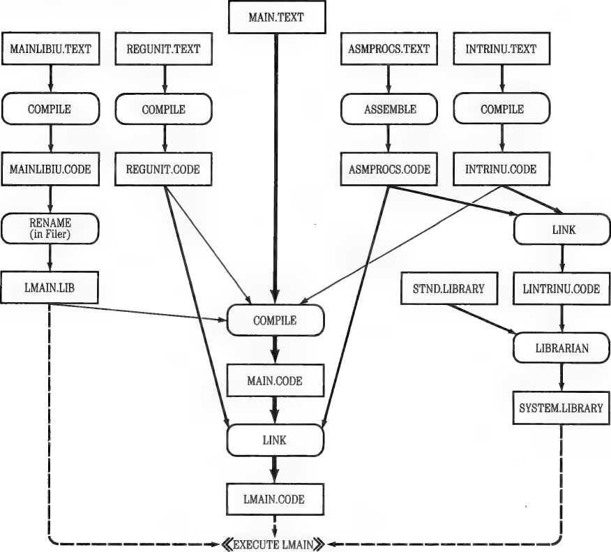
Use the Editor to create a textfQe named MAIN containing the following text:
PROGRAM MAIN;
USES APPLESTUFF,
< MAINLIBIU is first since REGUNIT uses it also > f*U LMAIN.LIB} MAINLIBIU, ($U REGUNIT.CODE > REGUNIT, {$U INTRINU.CODE) INTRINU;
CONST LENGTH = 80;
VAR I,RESULT,INVAL.IOR:INTEGER;
MSTR:STRING;
( Return INT multiplied by 2 >
FUNCTION MULT2CINT:INTEGER):INTEGER; EXTERNAL;
< Store INT in I if INT >- LENGTH >
PROCEDURE STOREICINT:INTEGER); EXTERNAL;
BEGIN
WRITE('Starting main, enter MSTR:');
READLN(MSTR);
REGUPROCCMSTR);
MAINLIBP;
I:-0;
(*I-> ( Turn off system input checking; do it ourselves >
REPEAT
WRITEC'Value to multiply by 2:');
READ(INVAL);
I OR:-1ORESULT;
READLN UNTIL IOR-0;
(*I + >
RESULT:-MULT2CINVAL);
STOREI(RESULT);
WRITELN('I-' , I, ' , RESULT-',RESULT);
INTRINUPROC;
WRITE('Press any key:');
WHILE NOT KEYPRESS DO ; ( Wait for user to press a kev ) WRITELN('Done!')
END.
Use the Editor to create a textfile named REGUNIT containing the following text:
UNIT REGUNIT;
INTERFACE
t Regular Units can use Intrinsic? but Intrinsics cannot use Regulars > USES <*U LMAIN.LIB) MAINLIBIU;
PROCEDURE REGUPROCCST:STRING);
IMPLEMENTATION
{ External procedures are only allowed in the implementation parts of units.!
( Return in SUM the added ASCII values of chars in STR >
PROCEDURE CHKSUMCVAR SUM:INTEGER; STR:STRING); EXTERNAL;
PROCEDURE REGUPROC;
VAR CSUM:INTEGER;
BEGIN
CSUM: »0 ;
CHKSUM(CSUM,ST);
WRITELNt'ST-',ST,', CHECKSUM-',CSUM)
END;
BEGIN
END.
Use the Editor to create a textfile named MAINLIBIU containing the following text:
UNIT MAINLIBIU; INTRINSIC CODE 10;
INTERFACE
PROCEDURE MAINLIBP;
IMPLEMENTATION
PROCEDURE MAINLIBP;
BEGIN
WRITELNC'In mainlibp') END;
BEGIN
END.
Use the Editor to create a textfile named INTRINU containing the following text:
UNIT INTRINU; INTRINSIC CODE 11 DATA 12;
INTERFACE
{ Nested Intrinsic Units!
{ (Regular Units can be nested too.) >
USES ($U LMAIN.LIB) MAINLIBIU;
( This variable requires a dat* segment )
VAR IUSTRING:STRING;
PROCEDURE INTRINUPROC;
IMPLEMENTATION
( Just to show that Intrinsic Units can have external procedures and functions. } PROCEDURE DONOTHING; EXTERNAL;
PROCEDURE INTRINUPROC;
BEGIN
WRITELNCIUSTRING);
MRITELNC'Calling DONOTHING'); DONOTHING;
UIR ITELNC'Called DONOTHING'); MAINLIBP END;
BEGIN
{ This code Is only executed once >
IUSTRING:-'Hi, I am an Intrinsic Unit! What are you?' END.
Use the Editor to create a textfile named ASMPRQCS containing the following text:
.PROC CHKSUM.2 ; as defined in Host Program:
; PROCEDURE CHKSUMCVAR SUM:INTEGER; STR:STRING); ; EXTERNAL;
|
STRPTR |
.EQU |
0 |
i Byte |
pair 0-1 |
|
SUMPTR |
• EQU |
2 |
{Byte |
pair 2-3 |
|
PLA |
; save |
return ai | ||
|
STA |
RET | |||
|
PLA | ||||
|
STA |
RET +1 |
{These parameters are pointers.
;The ADDRESS of a string is always passed to
;an external procedure even if the string is not a VAR parameter. ;The ADDRESS of SUM is passed since it is a VAR parameter
|
PLA STA |
STRPTR |
;Pointer |
to |
STR |
|
PLA STA PLA STA |
STRPTR+1 SUMPTR |
;Pointer |
to |
SUM |
|
PLA STA |
SUMPTR+1 |
;Get length of string. Y is still 0, in case ;we take the branch on zero length string.
NXTCHAR
FINISH
|
LDY |
#0 |
|
STY |
SUM |
|
STY |
SUM+1 |
|
LDA |
§STRPTR,Y |
|
BEQ |
FINISH |
|
TAY | |
|
LDA |
§STRPTR,Y |
|
CLC | |
|
ADC |
SUM |
|
STA |
SUM |
|
LDA |
#0 |
|
ADC |
SUM* 1 |
|
STA |
SUM* 1 |
|
DEY | |
|
BNE |
NXTCHAR |
|
;We assume Y is ze | |
|
LDA |
SUM |
|
STA |
gSUMPTR,Y |
|
INY | |
|
LDA |
SUM+1 |
|
STA |
dSUMPTR,Y |
|
LDA |
RET+1 |
|
PHA | |
|
LDA |
RET |
|
PHA | |
|
RTS | |
|
.WORD |
0 |
|
.WORD |
0 |
|
.PROC |
STORE 1,1 |
;Zero sum and set Y to 0.
§STRPTR,Y iStart at last char and add sum of all chars,
jAdd another char if more are left.
’o on entry to FINISH iStore the results ;low byte
{high byte
;Go back to caller
SUM
RET
; Pascal declaration is: i PROCEDURE STOREICINT:INTEGER); EXTERNAL;
STA X2
. ENDM
ZI
ZRET
RETURN
|
;A5 you |
will see, |
us: |
|
.CONST |
LENGTH |
;i |
|
.PUBLIC |
I | |
|
.PRIVATE PRET |
;< | |
|
.EQU |
0 | |
|
.EQU |
2 | |
|
MOVADR |
II,ZI | |
|
MOVADR |
RET,ZRET |
;i |
|
LDY |
#0 | |
|
PLA |
. < | |
|
STA INY PLA |
eZRET.Y |
;i |
|
STA DEY |
#ZRET,Y |
;i |
|
;If I NT SEC PLA |
is >= LENGTH | |
|
TAX |
si | |
|
SBC INY PLA |
LEN |
i |
|
STA |
TMP |
; |
|
SBC |
LEN+1 | |
|
BCC |
RETURN | |
|
;Store DEY TXA |
INT in I | |
|
STA |
®ZI,Y |
* |
|
LDA INY |
TMP | |
|
STA |
#ZI,Y |
i |
|
LDA PHA DEY |
eZRET.Y |
? |
|
LDA PHA RTS |
#ZRET,Y |
5 |
;High byte.
;Low byte
;Low byte.
;of MAIN, only PRET is not accessible by MAIN
TMP LEN 11 RET
•BYTE 0 .WORD LENGTH .WORD I .WORD PRET
.FUNC MULT2.1
JUNCTION MULT2CINT:INTEGER):INTEGER; EXTERNAL;
RET
|
PLA |
;Store return address | |
|
STA PLA |
RET | |
|
STA |
RET +1 | |
|
PLA |
;Pull 4 bytes Function | |
|
PLA PLA PLA |
;filler off stack | |
|
PLA |
;Low byte of INT | |
|
ASL |
A |
;Low byte times 2 and |
|
TAX PLA |
;high bit into carry. | |
|
ROL |
A |
5High byte times 2 with |
|
PHA |
;low bit from carry. | |
|
TXA |
;Push result. No check | |
|
PHA |
;for overflow. | |
|
LDA |
RET +1 |
;Push return and go |
|
PHA |
;back to caller. | |
|
LDA PHA RTS |
RET | |
|
.WORD |
0 | |
|
.PROC |
DONOTHING | |
|
RTS .END |
;This is a simple one ju intrinsic Units can havi |
This section shows the command sequences for generating an executable codefile named LMAIN.CODE. The messages exchanged between you and the system are shown, with the responses you type in uppercase and the messages from the system in lowercase. All sequences start from the main Command line of the system.
The next command sequence, with a different textfile name, is used several times during the development of the sample program. When the procedures below call for the compile sequence, this is what they mean:
c
Compile what textfile (<ret> to exit) ? MAINLIBIU<RETURN>
To what codefile (<ret> for workfile) ? $<RETURN>
Listing file (<ret> for none or option in source): <RETURN>
First, compile MAINLIBIU by using the sequence above. Because MAINLIBIU is an Intrinsic Unit, you might as well put it into a library. For this example, use the Program Library. The executable codefile is named LMAIN.CODE, so the Program Library is named LMAIN.LIB. When you have a library with only one code file in it, you don’t need to use the Librarian. Instead, you can use the following shortcut:
F
T
T
0
ransfer what file? MAINLIBIU.CODE,LMAIN.LIB<RETURN>
Next, you should perform the compile sequence shown above on the files REGUNITandINTRINU.
After that you should assemble the assembly procedures. For this example, all of the assembly procedures are in one file called ASMPROCS.
A
Assemble what textfile (<ret> to exit) ? ASMPROCS<RETURN>
To what codefile (<ret> for workfile) ? $<RETURN>
Output file for Assembler listing (<ret> for none): <RETURN>
Now it is time to do the linking. First, link the Intrinsic Unit INTRINU, as shown below. Note: the lines starting with Opening mi Reading are output by the Linker.
L
Link what host codefile? INTRINU<RETURN»
Opening INTRINU.CODE
Using what library file? ASMPROCS<RETURN>
Opening ASMPROCS.CODE
Another library file (<ret> for none) ? <RETURN> Map file (<ret> for none) ? <RETURN>
Reading INTRINU Reading CHKSUM
Output file (<ret> for workfile)? LINTRINU<RETURN>
Next, put this unit into SYSTEM.LIBRARY. Note: the slot tables and some of the prompts displayed by the Librarian program are not shown here; all responses are shown in the sequence typed.
x
Execute what file (<ret> to exit) ? #5:LIBRARY<RETURN>
Output file -> SYSTEM.LIBRARY<RETURN>
Input file -> SYSTEM.LIBRARY<RETURN»
N
Input file -> LINTRINU<RETURN>
1<RETURN>
8<RETURN»
2<RETURN>
9<RETURN>
0
Notice? <RETURN>
Putting the Pieces Together
Next you should perform the Compile sequence on MAIN. Once you have done that, you can do the final link.
L
Link what host codefile? MAIN<RETURN>
Opening MAIN.CODE
Using what library file? ASMPROCS<RETURN>
Opening ASMPROCS.CODE
Another libarary file C<ret> for none} ? REGUNIT Opening REGUNIT.CODE
Another library file C<ret> for none} ? <RETURN> Map file <<ret> for none) ? <RETURN>
Reading MAIN Reading REGUNIT Reading CHKSUM
Output file C<ret> for workfile)? LMAIN<RETURN> Linking REGUNIT #7 Copying proc CHKSUM Linking MAIN #1
Copying proc STOREI Copying proc MULT2
The file produced by the Linker is the executable codefile LMAIN. Type x lma i n to execute it.
Figure 2C-2 is a composite picture of the operations involved in creating any complex program. It shows the different ways you can put a program together a piece at a time. Compare it with Figure 2C-1, which shows the program files making up the complex sample. Note that the Compiler automatically picks up the interface text for embedded units. This means that those units must be compiled first and the resulting codefiles must be in some drive when the main program is compiled.
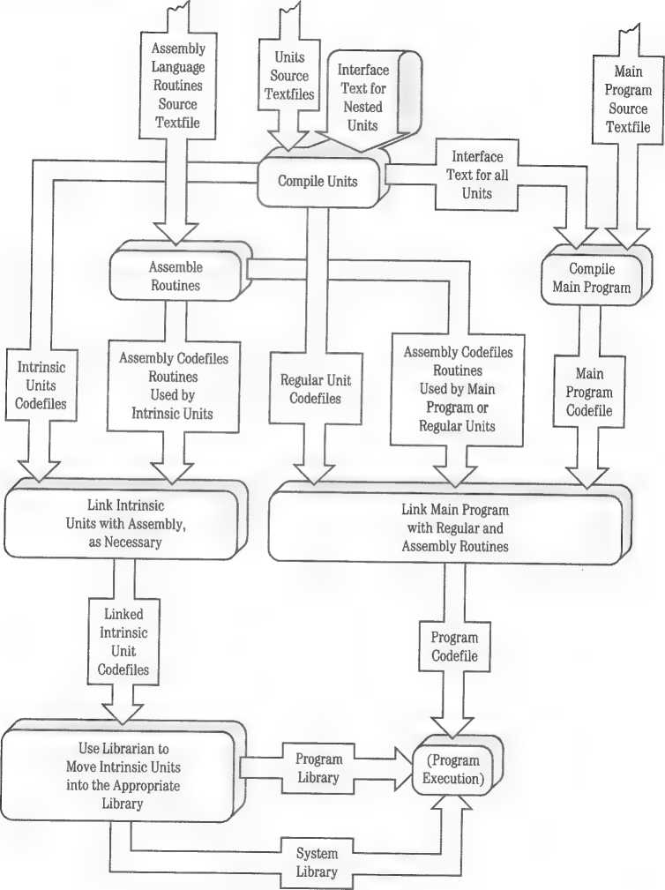
Putting the Pieces Together
11-285
It is sometimes convenient to have the Apple II start running a user program as soon as the machine is turned on. A system that works this way is called a turnkey system, because all the user has to do is turn power on— “turn the key”—and the system comes up running the desired program. Using the Pascal system, you can set up a disk so that the Apple II will automatically begin running your program when you insert the turnkey disk and turn the computer on or restart the system.
To set up a turnkey system with a program you have created on the Pascal system, you start with a formatted blank disk with a name you will recognize: for example, TURNKEY:. Using the Filer’s Transfer command, transfer the necessary system files from disk APPLE1: onto TURNKEY:.
Then transfer a copy of your program codefile onto the turnkey disk, giving this new copy of your program the filename SYSTEM.STARTUP. If your program uses a Program Library or Library Name File, rename it SYSTEM.STAR.LIB. Make sure your turnkey disk contains the following files:
□ SYSTEM.APPLE
□ SYSTEM.PASCAL
□ SYSTEM.MISCINFO
□ SYSTEM.STARTUP (your program code file)
□ SYSTEM.LIBRARY (if needed by your program)
□ SYSTEM.STAR.LIB (if needed by your program)
To run your turnkey program, insert the turnkey disk into the startup drive and do a cold start by pressing CONTROL-RESET or O-C0NTR0L-RESET. Soon, with no further action on your part, SYSTEM.STARTUP is executed. Thereafter, the program file you named SYSTEM.STARTUP will be executed each time the system is restarted, as long as the disk containing your SYSTEM.STARTUP is in the startup drive.
An exec file consists of a series of commands stored in a textfile. When an exec file is executed, each command included in the file is executed, just as if you were typing the commands from the keyboard. Exec files are used to store sequences of commands that must be entered into the system over and over again.
This section contains an explanation of exec files and an example demonstrating how to create and execute one.
To create an exec file, type m for Make exec from the main Command level. The system will prompt you with the message
New exec name:
Type the filename you want to give to your exec file, following the same rules that govern the naming of other Pascal files. Now you will see the prompt
Terminator*!, change It?
The terminator is a character that is used to signify the beginning and end of an exec file. The terminator character that marks the beginning of the file is automatically supplied by the system. Two terminator characters indicate the end of the file, these must be typed by the user. If you answer the above prompt by typing n for No, the system will use a percent sign as a terminator. If you type y, meaning that you want to change the terminator character, the system will ask for
New terminator:
The character you type becomes the terminator character for that exec file. The % sign is a commonly used terminator. The system will accept any character as the terminator character. Note that some keystrokes do not produce characters, and thus cannot be used as the terminator character.
Do not use control characters as terminators.
Terminator Characters: The terminator character that signals the beginning of an exec file is supplied by the system. Do not begin an exec file by typing the terminator character. If you do, the system-supplied terminator immediately followed by your typed terminator will be interpreted as the end-of-file signal and the system will close the exec file.
Once the system knows what your terminator character is, you can begin typing the series of commands that will make up your exec file. Commands will be executed as you type them. To end the exec file, type the terminator character twice.
Be Aware: The CONTROL-® CONTROL-S, and CONTROL-F commands cannot be read into an exec file. If you are using a 40-column display, the CONTROL-A and CONTROL-Z commands cannot be read into an exec file.
When you are ready to execute your exec file, type x for Execute from the main Command level. When the system prompts with
Execute what file (<ret> to exit) ?
you should respond by typing
EXEC/<filename>
The system will start performing the series of commands listed in your exec file, flashing the prompts and your previously entered responses as it goes.
When using an exec file, you must make sure that the system will be able to go through exactly the same sequence of events that it went through when you created the exec file. For example, suppose you create an exec file that enters the Filer, transfers the file MYFILE.TEXT from disk OLDSTUF to disk NEWSTUF and then returns to the main Command level. If you later run your exec file without removing the original disk NEWSTUF from its disk drive, the system would find MYFILE.TEXT already present on that disk. Consequently, the system will ask
Remove old NEWSTUF:MYFILE ?
This is a question that was not asked when the exec file was created. The system will use as its response the next character in the exec file which, in this case, happens to be a for Quit. In order for the system to remove a file under these conditions, it must receive an n for Wo or a y for Yes as the response to the above question. Thus, the old version of MYFILE will not be removed and the new version of MYFILE will not be transferred. Because the Q was used to respond to this question, the exec file never uses the Q to
Quit the Filer and the exec file closes with the system still at the Filer level. Thus, when creating an exec file, you must make sure that the steps the system goes through will not change from one execution to another.
There is no way to stop the execution of an exec file part way through except by pressing CONTROL-RESET. You can use the control command CONTROLS to stop or freeze the output on the screen temporarily. The control command CONTROL-F flushes the output: the program continues to run but its output is not sent to the screen.
The keyboard remains open during the execution of an exec file. Thus characters that you enter while an exec file is running are saved and then used as console input once the exec file is closed.
If you use the Make command to create an exec file on a disk that already has a file with the name you have given your exec file, the system will eliminate the original file when you close the new exec file.
If you run a Pascal program while you are making an exec file, typed responses to any UNITREAD procedures specifying unit 1 or unit 2 (CONSOLE:) are used by the Pascal program, but are not stored in the exec file. The KEYPRESS function also will take its input from the console and not from the exec file. READ, READLN, and GET procedures will take their input from the exec file, if reading from the standard file INPUT.
The system error routine will close an open exec file if an error occurs while the system is getting console input from the exec file.
Exec files may execute other exec files but control will not be returned to the first exec file.
It is not permissible to create an exec file from within another exec file. If you try, the system will warn you that
Nested exec commands Illegal
After you see this message, you can continue entering commands into the exec file.
There are some conditions under which you may want to create your exec file by using the Editor rather than the Make exec command. Suppose, for example, that you want to create an exec file that will transfer several files to the printer. If you were to use the Make exec command to create the file, it would be necessary for you to wait at your terminal while each of the files is actually sent to the printer. A more sensible approach would be to create the exec file in the Editor. Remember, however, that the exec file you create must include every character required by each command. Forgetting to include a single keystroke, such as a carriage return, will prevent the proper execution of your exec file. If you do use the Editor to create an exec file, make sure that you begin the file with a single terminator character and end the file with two terminator characters.
▲Warning
The Editor will not put certain special characters, such as CONTROL-C, into its text. Thus you cannot use the Editor to create an exec file that creates a textfile.
If you decide to edit an existing exec file, you will notice that certain characters, such as <backspace>, are included in the exec file but do not appear on the screen. For this reason, exec files are often difficult to edit.
Suppose you want to create an exec file that removes all the files on whatever disk is in drive #5: and then copies all the files from the disk in drive #4: onto the disk in drive #5:. To start making your exec file, type m for Make from the Command level. The system will prompt you with the message
New exec name:
In response, type
NEWSTUF:UPDATE
You have just started an exec file named UPDATE that will be saved on disk NEWSTUF. Next the system will ask:
Terminator*X, change it?
Respond by typing n. Entering this response tells the system that the terminator character used to signal the beginning and end of the exec file will remain the percent sign.
Now you are ready to enter the list of commands that will make up your exec file.
|
Keystrokes |
Explanation |
|
F |
Enter Filer |
|
R |
Execute Remove command |
|
#S:« |
Response to prompt: Remove what file? telling the system to remove all files on the disk in drive #5: |
|
RETURN |
RETURN ending the previous response |
|
SPACE |
Tohandle Press space to continue |
|
SPACE SPACE |
prompts |
|
Y |
Response to prompt: Update directory? |
|
T |
Execute Transfer command |
|
#4:- |
Response to prompt: Transfer what file? |
|
RETURN |
RETURN ending the previous response |
|
#5:- |
Response to prompt: To where? |
|
RETURN |
RETURN ending the previous response |
|
Q |
Exit from the Filer |
|
XX |
Terminator characters indicating the end of the exec |
file
Note that each of these commands is executed in the normal fashion when it is typed into the exec file, Thus, after the above list of commands is carried out, the files on the disk in drive #5: will be replaced by copies of the files on the disk in drive #4:.
When you are ready to execute the exec file, type x for Execute from the Command Level, then type
EXEC/NEMSTUF:UPDATE
You then will see the system enter the Filer, Remove the files from disk in drive #5:, transfer all the files from the disk in drive #4: to the disk in drive #5:, and return to the Command level.
Appendix 2F
Demonstration Programs
This appendix presents a graphics program that is described in a narrative explanation and comments in the source text. The graphics program is followed by commentaries on the demonstration programs supplied with Apple Pascal.
By the Way: The demonstration programs included here are intended as examples that you can run without modification while simultaneously providing you with the opportunity to study the accompanying source text. They are not intended to be models of the best possible programming technique. With this caution in mind, use the programs as learning tools. One of the best ways to learn might be to try introducing modifications into one of them.
The following demonstration program, PATTERNS, is intended to illustrate some helpful points about Apple Pascal. The program creates pleasant graphics by drawing a triangle on the screen and then repeatedly rotating it by a few degrees and redrawing it. The points of the triangle are always on the edge of an invisible circle of radius 95 (which fills the height of the screen) but apart from that it is a random triangle. The angle by which it is rotated each time it is drawn is also random, though it is always between 3 and 15 degrees.
The color used to draw the triangle is REVERSE, which has intriguing effects when one image is drawn over another and the lines intersect at small angles. Also, as the triangle is repeatedly rotated and redrawn a circular pattern is built up; but eventually the triangle gets rotated back to its original position. When this happens, each new image is exactly superimposed on an old one. Because of the REVERSE color, this erases the old image! When all the old images have been erased, the program clears the screen, generates a new triangle with a different shape, and starts all over.
This repetition continues until the user signals it to halt by pressing any key. The KEYPRESS function, in the APPLESTUFF unit, can be used to find out whether the user has pressed a key. (KEYPRESS is described in Chapter 16 of Partlll.)
This is a fairly complicated program, so we will develop it in sections. First we can write a sketchy outline of the program:
BEGIN
REPEAT
("Create a random triangular pattern*);
THETA:•('random number from 3 to 15*)
REPEAT
("Rotate the triangle, using the angle THETA*); (*Draw the rotated triangle on the screen*) UNTIL (*Complete pattern has been erased*)
UNTIL KEYPRESS END.
To fill in this outline, we begin with a program heading, a USES declaration, some useful constants, two variable declarations, and a skeleton of the inner REPEAT statement:
PROGRAM PATTERNS;
USES TURTLEGRAPHICS,APPLESTUFF;
CONST MAXX*280; MAXY«191; ('Maximum X and Y coordinates*) RADIUS*95; ('Radius of pattern*)
VAR CYCLES:0..2;
THETA:3..15;
BEGIN
REPEAT
('Create a random triangular pattern*);
THETA: ■(•random number from 3 to 15*);
CYCLES:-0 REPEAT
('Rotate the triangle, using the angle THETA*); PENCOLOR(REVERSE);
('Draw the rotated triangle on the screen*);
IF ('the rotated triangle matches the original triangle*) THEN CYCLES:“CYCLES*1 UNTIL CYCLES-2 UNTIL KEYPRESS END.
The variable CYCLES is a counter for the number of times the triangle has been rotated back to its original position. When CYCLES=1, the circular pattern begins to be erased because each new triangle is drawn in the REVERSE color on top of a previous triangle. When CYCLES=2, the entire pattern has been erased.
We can now begin replacing comments with actual statements. For example, we already have a variable, THETA, which is the number of degrees to rotate the pattern. So it is natural to replace the first comment in the inner REPEAT with a call to a procedure named ROTATE, which takes an INTEGER parameter. The value used for the parameter will be the variable THETA. ROTATE will need to be declared; now we have
PROCEDURE ROTATECANGLE:INTEGER);
(•To be completed...*)
BEGIN
REPEAT
(•Create a random triangular pattern*).; THETA:■(•random number from 3 to 15*); CYCLES:“0 REPEAT
ROTATE(THETA);
To draw the triangle on the screen, we must first consider how the triangle is represented in memory. We can think of the triangle as three points; how shall we represent a point? A point can be represented by two numbers — an X and a Y coordinate. Therefore we can define a type POINT, as shown below. Then we can represent the triangle as an array named TRGL, of type POINT. We will also declare a variable C to use as an index for the array TRGL.
TYPE POINT-RECORD X:0..MAXX;
Y:0..MAXY
END;
VAR CYCLES:0..2;
THETA s 3..15;
TRGL:ARRAY!1..31 OF POINT; C:1..3;
Assuming that the ROTATE procedure leaves the rotated coordinates in the array TRGL and that it leaves the turtle at the third comer of the triangle, we can use Cartesian graphics to draw the new triangle:
PENCOLOR(REVERSE);
FOR C:-1 TO 3 DO MOVETOCTRGLtCl.X, TRGLCC3.Y);
The remaining comment in the inner REPEAT statement calls for testing whether the rotated triangle matches the original one. To achieve this, assume that when the triangle is first created the coordinates of the third comer are saved in a variable named CORNER. Now we need only test as follows:
IF TRGLI3I-CORNER THEN CYCLES:-CYCLES*1
At this point, the program is as follows:
PROGRAM PATTERNS!
USES TURTLEGRAPHICS.APPLESTUFF;
CONST MAXX-280; MAXY-191; (*Maximum X and Y coordinates*) RADIUS-95; (*Radius of pattern*)
TYPE POINT-RECORD X:0..MAXX;
Y:0..MAXY
END;
VAR CYCLES:0..2;
THETA!3..15;
TRGL:ARRAYI1..31 OF POINT;
C:1..3;
CORNER:POINT;
PROCEDURE ROTATEtANGLE:INTEGER);
(•To be completed; must leave new corner coordinates in TRGL and leave turtle at third corner.*)
BEGIN
REPEAT
(‘Create a random triangular pattern*);
THETA:-(‘random number from 3 to 15*);
CYCLES:-0 REPEAT
ROTATE(THETA);
PENCOLOR(REVERSE);
FDR C: = 1 TD 3 DO M0VET0(TRGLIC3.X, TRGLCC3.Y);
IF TRGLI3]'CORNER THEN CYCLES:-CYCLES*1 UNTIL CYCLES-2 UNTIL KEYPRESS END.
The inner REPEAT statement will repeatedly rotate the triangle and draw it, using the REVERSE color, building up a circular pattern on the screen and then erasing it by drawing over it. When the pattern has been erased, the inner REPEAT terminates.
Now we can begin filling in the outer REPEAT. The statements added to the outer REPEAT require another procedure, MAKETRGL, and a function, ARBITRARY.
FUNCTION ARBITRARYtLOW, HIGH;INTEGER):INTEGER;
(‘To be completed; must return an integer value in the range LOU..HIGH.*)
PROCEDURE MAKETRGL;
(‘To be completed; must leave corner coordinates in TRGL and also initialize CORNER with coordinates of third corner.*)
BEGIN
REPEAT
MAKETRGL; (‘Make triangular pattern*)
THETA:=ARBITRARY(3, 15); (‘Choose angle for rotating triangle*) CYCLES:=0; (‘Clear the cycle counter*)
REPEAT
ROTATE(THETA);
PENCOLOR(REVERSE);
FOR C:- 1 TO 3 DO MOVETO(TRGLIC3.X, TRGLIC3.Y);
IF TRGL133-CORNER THEN CYCLES:-CYCLES*1 UNTIL CYCLES-2 UNTIL KEYPRESS END.
The outer REPEAT first calls MAKETRGL. This procedure, still to be defined, chooses three random points on a circle of radius 95 and stores their coordinates in the array TRGL. It also stores the coordinates of the third comer in the variable CORNER.
Next, the function ARBITRARY is used to assign a random value to THETA, the number of degrees to rotate the triangle.
The main program is nearly complete. It remains only to add one new variable named CENTER (of type POINT), and a few initializing statements before the outer REPEAT:
VAR CYCLES:0..2;
THETA:3,.15;
TRGL:ARRAYt1..3] OF POINT; C:1..3;
CORNER:POINT;
CENTER:POINT;
BEGIN
RANDOMIZE;
INITTURTLE;
CENTER.X:-TURTLEX; CENTER.Y:-TURTLEY;
REPEAT
t*To get a different sequence each time program is executed*}
(•Always do this to use TURTLEGRAPHICS*) (•The turtle is at the center because INITTURTLE leaves it there. Save its coordinates in CENTER.*)
REPEAT
UNTIL CYCLES-2 UNTIL KEYPRESS END.
The main program is complete, and now we must define the two procedures MAKETRGL and ROTATE and the function ARBITRARY.
The ARBITRARY function is a simplified version of the RAND1 function described in “Using the RANDOM Function” in Chapter 6 of Part III.
RAND1 handles unacceptable parameters by setting a VAR parameter of type BOOLEAN. ARBITRARY does not need this error-handling capability because it will always be called with constants as parameters. Similarly,
RAND1 has a special provision for the case where the HIGH and LOW parameters are equal; ARBITRARY does not have this provision, and HIGH must be strictly greater than LOW.
In other respects, ARBITRARY is the same as RAND1. Incidentally, the complexity of the calculation in both versions is due to the fact that two numbers cannot be added or subtracted if the result would exceed the value MAXINT (32767). The function has to get around this limitation by using the intermediate value MX.
The MAKETRGL procedure must choose three random points on a circle of radius 95, with its center at CENTER. To select three random points, the following method is used:
VAR I:1..3;
FOR I: = 1 TO 3 DO BEGIN
(•Move the turtle to the CENTER point:*)
MOVETOtCENTER.X, CENTER.Y);
(•Select a random direction to move the turtle away from CENTER, and store this angle in an array named DIRECTION; this array will need to be declared:*)
DIRECTION!11:-ARBITRARY(0,359);
(•Turn the turtle in the selected direction:*)
TURNTO(DIRECTIONtI]);
(•Move out to the edge of the circle:*)
MOVE(RADIUS);
(•Store the turtle's coordinates in the TRGL array:*)
TRGLCI1.X:-TURTLEX;
TRGL!I1.Y:-TURTLEY
END
The DIRECTION array will be used by the ROTATE procedure, so it will need to be declared at the beginning of the program —not within the MAKETRGL procedure.
Because we don’t want to draw anything at this point, we set the color to NONE before starting the FOR statement. After three times through the FOR statement, the turtle is at the third comer of the triangle, so we save its
position in the CORNER variable for use in the main program. The complete procedure is
PROCEDURE MAKETRGL;
VAR I:1..3;
BEGIN
PENCOLOR(NONE);
FOR I:-1 TO 3 DO BEGIN
MOVETOtCENTER.X, CENTER.Y);
DIRECTIONCII:-ARBITRARYtB, 3S9>; TURNTOCDIRECTIONC11;
MOVE(RADIUS);
TRGL11].X:“TURTLEX;
TRGLC11.Y:-TURTLEY END;
CORNER.X:-TURTLEX;
CORNER.Y:»TURTLEY END;
The ROTATE procedure works very much like the MAKETRGL procedure, but instead of using random angles it uses the angles found in the DIRECTION array —after adding ANGLE to each of them and taking the result MOD 360. It stores the resulting points in the TRGL array, but does not change CORNER. The effect is to replace each point in TRGL with a new point created by rotation through ANGLE degrees. The complete ROTATE procedure is
PROCEDURE ROTATECANGLE:INTEGER);
VAR I:1..3;
BEGIN
PENCOLOR(NONE);
FOR I:-1 TO 3 DO BEGIN
MOVETOtCENTER.X, CENTER.Y);
DIRECTIONCII:-(DIRECTION!II♦ANGLF) MOD 360; TURNTO (DIRECTION[ID;
MOVE(RADI US) ;
TRGLC11.X:-TURTLEX;
TRGL!11.Y;-TURTLEY END END;
Note that the MOD 360 operation is necessary because if the program ran for a long time, the result of DIRECTION[I]+ANGLE could eventually exceed MAXINT and cause a run-time error.
All that remains is to declare the array DIRECTION:
DIRECTION:ARRAYC1..3] OF INTEGER;
A set of demonstration programs is supplied with the Pascal system. Although these programs are not fully annotated, they are worth study by students of Pascal. The following are brief descriptions of the programs.
The .TEXT version of each program has been included on the APPLE3: disk so that you can read the program’s text into the Editor to see how the program was written and to try modifications of your own. To execute the programs, you will have to compile them first.
The following disk files allow you to execute the various demonstration programs. The notation xxxxxx stands for the name of a particular demonstration program.
xxxxxx.CODE (any disk, any drive)
SYSTEM.LIBRARY (system disk, startup drive)
SYSTEM.CHARSET (any disk, #4: or #5:; required if WCHAR or WSTRIN6 used)
If you just wish to examine the text version of a demonstration program, there are two ways to proceed:
□ For a quick look, put disk APPLE3: in any available drive, and then use the Filer to Transfer the desired program’s .TEXT file from APPLE3: to CONSOLE:. To stop the program’s listing on the screen, press CTRL-S. Press CTRL-S again to continue.
□ To examine the text in more detail, you can Edit the program’s .TEXT file.
One 5V4-lnch Disk Drive
Use the Filer to Transfer the program’s textfile from APPLE3: to your system disk, APPLEO: or APPLE1:. Then Edit the file.
If you wish to modify, compile, and execute a new version of a demonstration program, the following diskfiles will be needed:
xxxxxx.TEXT
SYSTEM.EDITOR
SYSTEM.COMPILER
SYSTEM.SYNTAX
SYSTEM.PASCAL
SYSTEM.LIBRARY
SYSTEM.CHARSET
(any disk, any drive; required only until read into Editor)
(any disk, any drive)
(any disk, any drive)
(same disk as Editor, any drive; optional Compiler error messages)
(system disk, startup drive)
(system disk, startup drive)
(any disk, #4: or #5:; required if WCHAR or WSTRING used)
TREE shows the creation of an unbalanced binary tree to sort and retrieve data elements (words, in this case). It lets you specify each new word to be stored in the tree, and then shows you graphically just where the new word was placed in the tree.
When you execute TREE.CODE, you are prompted to
ENTER MORD:
To quit the program at any time, you can just press RETURN in response to this message. To continue, you should type the first word to be sorted (only the first six characters are used). For example, you might type
FLIPPY
The program then lists the words entered so far, in alphabetical order.
THE UIORDS IN ORDER ARE:
FLIPPY
No prompt appears, but you must press RETURN to proceed. When you do, a picture is displayed, showing the binary tree as it now exists.
/
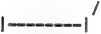
| FLIPPY |
\
\
The box represents the binary tree’s first “node,” or sorting element. The node has two “links,” which can point the way to further nodes: the upper link in the display can point to nodes that precede this node alphabetically, whereas the lower link can point to nodes that follow this node alphabetically.
To continue, press RETURN again. Again you are prompted to
ENTER WORD:
Suppose you now type
APPLE
The program responds
The words in order ere:
APPLE
FLIPPY
and when you press RETURN, another picture of the binary tree is displayed.
/
/
/1 APPLE |
\
\
This is how the word APPLE is placed in the binary tree. The word APPLE is compared to the word in the first node, FLIPPY. Because APPLE precedes FLIPPY, alphabetically, the search continues by following the first node’s upper link. If another node is found at the end of that link, APPLE is compared to the word in that node, and the search continues by following that node’s appropriate link. The search continues until, on following an appropriate link, no node is found with which to compare APPLE. At that point on the tree, a new node is created, containing A/YAA.
Retrieving the words to list them in alphabetical order is harder to describe, although the algorithm is fairly simple.
1. Starting at the root node, FLIPPY, follow the tree taking only the upper link from each node, until a node is found whose upper link does not connect to a further node. The word in this node is the first word, alphabetically, so print it.
2. Now follow this node’s lower link.
□ If a node is connected to the link, follow the tree taking only the upper link from each node, until a node is found whose upper link does not connect to a further node. Print that node’s word as the next one in alphabetic order, and repeat step 2.
□ If no further node is connected to the link, go back down the tree to the node whose upper link led to this node. Print that node’s word as the next one in alphabetic order, and repeat step 2. (If no link or a lower link led to this node, the list is complete.)
Remember, to quit this program just press RETURN in response to the
message
ENTER klORD:
Caution: You must press RETURN twice between each word entry (whether or not you wish to see the tree diagrammed). But if you press RETURN three times, the program is terminated and your list is lost forever.
Program TREE contains examples of the following:
□ Inserting elements into an unbalanced binary tree (INSERTIT)
□ Retrieving elements in order from such a tree (PRINTTREE)
BALANCED is identical to TREE, except that it stores words by creating a balanced binary tree. It is taken from an example shown on page 215 of the book Algorithms + Data Structures = Programs, by Nicklaus Wirth (Prentice-Hall, 1976). An AVL-BALANCED BINARY TREE is rearranged after each element insertion to ensure that, of the two branches at any node, one branch is at most one node longer than the other branch. This method of element insertion is slower than for an unbalanced tree, but subsequent retrieval of elements is faster.
Read the description of the TREE demonstration program for details about using this program. New words are added to the BALANCED tree in the same way described for the unbalanced TREE, but the rearrangement of the BALANCED tree following an insertion is more complex. The words are retrieved in alphabetic order identically in the two programs.
CROSSREF is an example of a textual cross-reference generator using an unbalanced binary tree to store and sort words. It is taken from an example shown on page 206 of the book Algorithms + Data Structures = Programs, by Nicklaus Wirth (Prentice-Hall, 1976).
When you execute CROSSREF.CODE, you are prompted for the name of an
Input File?
Respond by typing the filename of a text file that you wish cross-referenced, on any available disk. It is not necessary to specify the filename’s .TEXT suffix. For example, you might type
APPLE®:MYSTUFF
The program then prompts you to specify a
Destination File?
for the resulting cross-referenced list. You should respond by typing
CONSOLE:
if you want the list to appear on the screen, or
PRINTER:
if you want the list to be printed on your printer (which must be connected and turned on).
First, the INPUT textfile is displayed on the screen or printed, with each line of text numbered. The words of the text are then stored in alphabetic order in a binary tree, one word to each node. A word is defined as beginning with an alphabetic character and containing all subsequent characters until the next nonalphanumeric character. Finally, the text’s words are displayed or printed in alphabetic order, each word followed by the text line numbers where that word appears.
Program CROSSREF contains examples of the following:
□ Set membership (TYPE defines items of the tree structure)
□ Sorting into a binary tree
□ Listing from a binary tree (PRINTTREE, also shows recursion)
For more information about tree-sorting, see the demonstration programs TREE and BALANCED.
SPIRODEMO demonstrates the basic TURTLEGRAPHICS maneuver: move the pen in a straight line, turn, move again in a straight line, turn again, and soon.
The program lets you specify an ANGLE and a CHANGE, and then draws a pattern on the screen. To make the pattern, SPIRODEMO moves the pen one unit, turns through ANGLE, moves 1+CHANGE, turns ANGLE, moves 1+CHANGE+CHANGE, turns ANGLE, and so on.
When you execute SPIRODEMO.CODE, this message appears:
WELCOME TO WHILEPLOT ENTER ANGLE 0 TO QUIT.
ANGLE:
If you wish to leave the program at any time, just wait until this prompt is displayed, and then respond by typing a zero and pressing RETURN. If you want to continue, type any positive or negative integer to specify the angle (in degrees) through which you wish the TURTLEGRAPHICS pen to turn between each move. For example, you might respond by typing
89
This tells the pen to turn clockwise, slightly less than a right angle between each move. Now you are asked to specify a
CHANGE:
Starting with a straight-line pen move of one unit, each subsequent move will increase in length by an amount specified by CHANGE. You must respond by typing a positive integer greater than zero. For example, to make each line one unit longer than the previous line, you would type
When you press RETURN, program SPIRODEMO (alias WHILEPLOT) begins to draw its design on the screen, using the parameters that you specified.
On completion of the design, the program continues to display the design until you press any key on the Apple’s keyboard. Just press the SPACE bar, and the original prompt will replace the design on the screen. You are then ready to specify a new CHANGE and DISTANCE for another design (or specify an ANGLE of zero to quit the program).
Caution: This program is terminated if the first character of an ANGLE or CHANGE response is not a plus sign, a minus sign, or a numeric digit.
Program SPIRODEMO contains examples of the following:
□ Using the TURTLEGRAPHICS unit, including the KEYPRESS function
□ Reading the keyboard buffer without echoing on the screen
HILBERT shows a historically famous example of recursion, using a space-filling design to create an attractive display on the screen.
You can determine the density of the space-filling design by specifying an integer ORDER from 1 through 7.
When you execute HILBERT.CODE, this message appears:
Enter ORDER 0 to quit.
ORDER:
If you wish to quit the program at any time, wait until this message appears, and then type a zero. If you wish to continue, you must type an integer from 1 through 7. An ORDER of 1 fills the space most “loosely," taking barely one repetition of the design to fill the screen. Each higher order fills the screen more and more densely, by repeating the basic design on a smaller and smaller scale. Order 7 fills the screen to solid white, and takes quite a long time doing it. There is no way to stop a display while it is being created, except to press CONTROL-RESET. To get the idea, respond by typing 41
On completion of the design, the program continues to display the design until you press any key on the Apple’s keyboard. Just press the Apple’s SPACE bar, and the original prompt message will replace the design on the screen. You are then ready to specify a new ORDER for another design (or specify an ORDER of zero to quit the program).
| Caution: This program is terminated if the ORDER response is not a I numeric digit from 1 through 7.
ORAFDEMO is a collection of interesting graphic displays generated by a number of very useful procedures.
The program runs without any interaction; just watch the pictures and then study GRAFDEMO.TEXT to see examples of how these things can be done using TURTLEGRAPHICS. You may even find it handy to use some of GRAFDEMO’s procedures directly, in your own programs.
When you execute GRAFDEMO.CODE, this message appears:
Press any key to quit.
Please wait while creating butterfly
Just wait; soon you will see butterflies and many other pictures. Pressing any key on the Apple keyboard will terminate this program on completion of whichever display is currently being created.
Program GRAFDEMO contains examples of the following:
□ Using TURTLEGRAPHICS to draw frames, crosshatching, and so on
□ Creation of an array (BUTTER) for use by procedure DRAWBLOCK
□ Handling of a procedure that is too long, by breaking it into smaller parts (BUTTER) and calling those parts from another procedure (INITBUTTER)
GRAFCHARS shows the characters found in the file SYSTEM.CHARSET, and their use from TURTLEGRAPHICS. The program runs without interaction.
When you execute GRAFCHARS.CODE, this message appears:
PRESS RETURN FDR MORE...
From here on, each time you press RETURN another display is placed on the screen. The first display shows all the characters available in SYSTEM.CHARSET. When you have examined any display to your satisfaction, just press RETURN again to go on to the next display.
Program GRAFCHARS contains examples of the following:
□ All the uppercase, lowercase and special characters available through TURTLEGRAPHICS
d Use of TURTLEGRAPHICS’ WCHAR and WSTRING functions
□ How to put a border around a string (BOXSTRING)
□ Use of CHARMODE to keep the characters’ boundaries from interfering with the background
DISKIO shows a sample use of random-access disk files, with terminal-independent output.
By the Way: This program is not a real application, and it is definitely not a database manager. Its only purpose is to demonstrate some of the principles that would be involved in writing a real file-handling program.
When you execute DISKIO.CODE, you are asked to specify a
File name:
You should type a valid diskfile identifier. For example, you might respond by typing
APPLE0:MYFILE.TEXT
The program looks on the specified disk (or the default disk) for a file with the specified filename. If an existing file by that name is found, it is opened and the main program command prompt line is displayed. If no file by that name is found, the program asks if it should
Start a new file?
If you type N for No, you will again be asked to type a filename. You can exit from the program at this point by pressing RETURN. If you type y for Yes, the program asks
Reserve how many records?
Respond by typing an integer that specifies the number of records your new file will initially contain. For example, if you type 6 your new file will start out containing seven records, numbered 0 through 6.
Now the program’s main command prompt line appears on the screen:
VCiew CChange NCext FCile QCuit
Typing a v for View causes this message to appear:
View which record?
You should respond by typing a number from zero through the maximum record number in your file. For instance, typing 5 lets you view the contents of record number 5.
If you then wish to view the contents of the next record, type n for Next. In this way, you can look at as many records as you wish.
Typing a c for Change causes this message to appear:
Change which record?
Again, you should respond by typing a number from zero through the maximum record number in your file. For instance, typing 5 lets you change the contents of record number 5. To change an entry, just start typing. To leave an entry as it is, and go on to the next entry, just press RETURN.
If you then wish to change the contents of the next record, type n for Next. In this way, you can change as many records as you wish.
If the Next command takes you beyond the last record specified for your file, the program will attempt to extend the file by appending additional records. This is possible if
□ There is room for the record in the current last block of the file;
□ The next contiguous block on the disk is available for use by this file.
If it is not possible to extend your file, a message appears to inform you of the problem. You can then type a to Quit this program, enter the Filer, and move files on the disk until your file has a few free blocks immediately following it. (Use the Filer’s Extended-directory command to see the locations of free blocks.) Then you are ready to execute DISKIO again, and extend your file with additional records.
Typing f for File, in response to the main command prompt line, lets you start a new file or reopen another old file. As at the beginning, you are asked fora
File name:
Again, you can exit from this part of the program by pressing RETURN. Program DISKIO contains examples of the following:
□ Terminal-independent output, by reading the file SYSTEM.MISCINFO and using the terminal setup parameters found there (GETCRTINFO)
□ Bullet-proof character input (GETCHAR)
□ Bullet-proof string input, with defaults
□ Use of random-access disk files and system procedure SEEK
□ How to extend a disk file in place.
11-315
The Apple II Pascal system assigns standard volume numbers and volume names to the various input/output devices as shown in the following table.
|
Table 2G-1. Pascal I/O Device Volumes | ||
|
Pascal Volume Number Pascal Volume Name |
Description of I/O Device | |
|
#0 |
— |
(not used) |
|
#1 |
CONSOLE: |
Screen and keyboard (echo on input) |
|
#2 |
SYSTERM: |
Screen and keyboard (no echo on input) |
|
#3 |
— |
(not used) |
|
#4 |
<disk name>: |
Startup drive (slot 4,5, or 6, drive 1; or internal drive on an Apple lie) |
|
#5 |
<disk name>: |
2nd disk drive (same slot as #4:, drive 2; or external port on an Apple lie) |
|
#6 |
PRINTER: |
Printer (card in slot 1) |
|
#7 |
REMIN: |
Remote input (card in slot 2) |
|
#8 |
REMOUT: |
Remote output (card in slot 2) |
|
#9 |
<disk name>: |
(slot 4,5, or 6, drivel) |
|
#1( |
): <diskname>: |
(same slot as #9:, drive 2) |
|
#11 |
: <diskname>: |
(slot 4,5, or 6, drivel) |
|
#15 |
!: <diskname>: |
(same slot as #11:, drive 2) |
Appendix 2H
Error Messages
When an error is detected during execution of a user program, it is reported in one of the following forms:
By Nnmber:
Execution error *6
S# 1, P# 7, I# 56
Press <5pace> to continue
By Name:
Divide by Zero
S# 1, P# 7, I# 56
Press <space> to continue
The first line of the message reports the error by number or by a short description. The second line of the message gives the location in the program where the error was detected. The number after s# is the segment number, the number after p * is the procedure number within that segment, and the number after i # is the byte offset in that procedure. The Compiler will list segment, procedure, and byte-offset information when you compile a program. See Chapter 5.
After you press the SPACE bar to continue, the system will reinitialize itself by invoking the system Initialize command. Some errors force you to perform a cold start of the system by asking you to press CONTROL-RESET instead of the SPACE bar.
Error
Number Error Message
1 Value range error
2 No procedure in segment table
3 Exit from uncalled procedure
4 Stack overflow
5 Integer overflow
6 Divide by zero
7 NIL pointer reference
8 Program interrupted by user
9 System I/O error
|
Error Number |
Error Message |
|
10 |
I/O error (This error is further reported as an I/O error. See table of I/O error messages, below.) |
|
11 |
Unimplemented instruction |
|
12 |
Floating-point error |
|
13 |
String overflow |
|
14 |
Programmed HALT |
|
15 |
Programmed break-point |
|
16 |
Codespace overflow |
For a discussion of Execution Errors #4 and #16, see Chapter 1 of Part IV.
Error
|
Number |
Error Message |
|
7 |
Bad filename |
|
8 |
No room on volume |
|
9 |
Volume not found |
|
10 |
File not found |
|
11 |
Duplicate directory entry |
|
12 |
File already open |
|
13 |
File not open |
|
14 |
Bad input format |
|
16 |
Disk write-protected |
|
17 |
Illegal block number |
|
18 |
Illegal buffer address |
|
19 |
Must read a multiple of 512 bytes |
|
20 |
Unknown ProFile error |
|
64 |
Device error |
|
Error | |
|
Number |
Error Message |
|
9 |
Identifier previously declared |
|
10 |
Improper format |
|
11 |
.EQU expected |
|
12 |
Must .EQU before use if not to a label |
|
13 |
Macro identifier expected |
|
14 |
Word addressed machine |
|
15 |
Backward .ORG currently not allowed |
|
16 |
Identifier expected |
|
17 |
Constant expected |
|
18 |
Invalid structure |
|
19 |
Extra special symbol |
|
20 |
Branch too far |
|
21 |
Variable not PC relative |
|
22 |
Illegal macro parameter index |
|
23 |
Not enough macro parameters |
|
24 |
Operand not absolute |
|
25 |
Illegal use of special symbols |
|
26 |
Ill-formed expression |
|
27 |
Not enough operands |
|
28 |
Cannot handle this relative expression |
|
29 |
Constant overflow |
|
30 |
Illegal decimal constant |
|
31 |
Illegal octal constant |
|
32 |
Illegal binary constant |
|
33 |
Invalid key word |
|
34 |
Macro stack overflow: 5 nested limit |
|
35 |
Include files may not be nested |
|
36 |
Unexpected end of input |
|
37 |
This is a bad place for an .INCLUDE file |
|
38 |
Only labels & comments may occupy column 1 |
|
39 |
Expected local label |
|
40 |
Local label stack overflow |
|
41 |
String constant must be on one line |
|
42 |
String constant exceeds 80 characters |
|
43 |
Illegal use of macro parameter |
|
Error Number |
Error Message |
|
44 |
No local labels in .ASECT |
|
45 |
Expected key word |
|
46 |
String expected |
|
47 |
Bad block, parity error (CRC) |
|
48 |
Bad unit number |
|
49 |
Bad mode, illegal operation |
|
50 |
Undefined hardware error |
|
51 |
Lost unit, unit is no longer on line |
|
52 |
Lost file, file is no longer in directory |
|
53 |
Bad title, illegal file name |
|
54 |
No room, insufficient space on disk |
|
55 |
No unit, no such volume on line |
|
56 |
No file, no such file on volume |
|
57 |
Duplicate file |
|
58 |
Not closed, attempt to open an open file |
|
59 |
Not open, attempt to access a closed file |
|
60 |
Bad format, error in reading real or integer |
|
61 |
Nested macro definitions illegal |
|
62 |
’=’or‘o’expected |
|
63 |
May not .EQU to undefined labels |
|
64 |
Must declare .ABSOLUTE before 1st .PROC |
|
65 |
Too many .PROCS and/or .FUNCS |
|
76 |
Index register required |
|
77 |
‘X’ or Y expected |
|
78 |
Zero-page address required |
|
79 |
Illegal use of register |
|
80 |
Index register expected |
|
81 |
Ill-formed operand |
|
82 |
‘X’ expected for indexed addressing |
|
83 |
Must use ‘X’ index register |
When the Pascal Compiler discovers an error in your program, it reports that error immediately, by error number. If you then enter the Editor to fix that error, a more complete error message is given, taken from the file SYSTEM.SYNTAX. If the file SYSTEM.SYNTAX is not available on the disk containing SYSTEM.EDITOR, errors will be reported by number only.
The Pascal Compiler error message corresponding to each error number is given in the table below. Some people will prefer to gain some additional space on their disks by removing SYSTEM.SYNTAX and using the table instead. You can also print your own copy of this table by transferring the file SYSTEM.SYNTAX to a printer.
Some additional helpful information is provided here, enclosed in [square brackets]. This information is not part of the file SYSTEM.SYNTAX; it cannot be printed, and it will not appear on your screen.
Error
Number Error Message
1 Error in simple type
2 Identifier expected
3 ‘PROGRAM’ expected
4 ')’ expected
5 V expected
6 Illegal symbol (maybe missing or extraon line above)
7 Error in parameter list
8 ‘OF’ expected
9 '(’ expected
10 Error in type
11 ‘[’ expected
12 *]’ expected
13 ‘END’ expected
14 V expected (possibly on line above)
15 Integer expected
16 =’ expected
17 ‘BEGIN’ expected
18 Error in declaration part
19 Error in field-list
20 ',’ expected
21 7 expected
22 ‘Interface’ expected
23 ‘Implementation’ expected
24 ‘CODE’ expected
50 Error in constant
51 ':=’ expected
52 ‘THEN’expected
53 ‘UNTIL’ expected
54 ‘DO’ expected
55 ‘TO’ or ‘DOWNTO’ expected in FOR statement
58 Error in factor (bad expression)
59 Error in variable
101 Identifier declared twice
102 Low bound exceeds high bound
103 Identifier is not of the appropriate class
[Maybe a packed variable is being used where an unpacked variable is required.]
104 Undeclared identifier
105 Sign not allowed
106 Number expected
107 Incompatible subrange types
108 File not allowed here
[A file may not be part of a record or an array; a file may not be the object of a pointer]
109 Type must not be real
110 Tagfield type must be scalar or subrange
111 Incompatible with tagfield part
113 Index type must be a scalar or a subrange
114 Base type must not be real
115 Base type must be a scalar or a subrange
117 Unsatisfied forward reference
119 Respecified params not OK for a forward declared procedure
120 Function result type must be scalar, subrange or pointer
121 File value parameter not allowed
122 Result type of forward declared function cannot be respecified
123 Missing result type in function declaration
124 TREESEARCH and IDSEARCH no longer supported
125 Error in type of standard procedure parameter
126 Number of parameters does not agree with declaration
128 Result type does not agree with declaration
129 Type conflict of operands
130 Expression is not of set type
131 Only tests on equality are allowed
132 Strict inclusion not allowed
133 File comparison not allowed
134 Illegal type of operand(s)
135 Type of operand must be boolean
136 Set element type must be scalar or subrange
137 Set element types must be compatible
138 Type of variable is not array
139 Index type is not compatible with the declaration
140 Type of variable is not record
141 Type of variable must be file or pointer
142 Illegal actual parameter
143 Illegal type of loop control variable
144 Illegal type of expression
145 Type conflict
146 Assignment of files not allowed
147 Label type incompatible with selecting expression
148 Subrange bounds must be scalar
149 Index type must not be integer
150 Assignment to standard function is not allowed 152 No such field in this record
154 Actual parameter must be a variable
155 Control variable cannot be formal or non-local
156 Multidefined case label
158 No such variant in this record
159 Real or string tagfields not allowed
160 Previous declaration was not forward
161 Forward declared twice
162 Parameter size must be constant
[Optional parameters in NEW must be constants]
165 Multidefined label
166 Multideclared label
167 Undeclared label
168 Undefined label
[165-168: In order to “declare” a label you must include it in the LABEL declaration section; in order to “define” a label you must specify it before that statement to which it refers in the body of the procedure. A label must be declared and defined exactly once.)
169 Base type of set too large
175 Actual parameter max string length < formal max length
182 Nested units not allowed
183 EXTERNAL declaration not allowed at this nesting level
184 EXTERNAL declaration not allowed in interface section
185 Segment declaration not allowed in unit
186 Labels not allowed in interface section
187 Attempt to open library unsuccessful
188 Unit not declared in previous uses declaration
189 ‘Uses’not allowed at this nesting level
190 Unit not in library
191 No private files in unit
192 ‘Uses’ must be in interface section
194 Comment must appear at top of program
195 Unit not importable (interface text not available)
201 Error in real number—digit expected
Error Message
Error
Number
202
203
250
251 253
254
273
277
301
302
350
352
353
354
355
String constant must not exceed source line Integer constant exceeds range Too many scopes of nested identifiers Too many nested procedures or functions Procedure too long
[A procedure is too long when it overflows the internal code buffer used by the Compiler.]
Procedure too complex
[A procedure is too complex when it generates too many long jumps (that is, too many control structures).]
No such unit or segment String too long
No case provided for this value
Not enough room for case jump table
[When a case statement is compiled, a jump table is generated
with one entry for each value between the minimum and
maximum case selectors. A short case statement with a wide
range between minimum and maximum selectors may result in
a very large piece of code.]
No data segment allocated
[An Intrinsic Unit with global variables in either the
INTERFACE or the IMPLEMATATION requires a data
segment. The data segment must not be declared unless it is
used.]
No code segment allocated Non-Intrinsic Unit called from Intrinsic Unit Too many segments for segment dictionary Data segment empty
399 Implementation restriction
[May be one of the following: subrange of real is not allowed; segment procedures, segment functions, and units must be declared before regular procedures; the word SEGMENT must apply to PROCEDURE or FUNCTION only; the defining text of a forward-declared segment must repeat the word SEGMENT; no external segments are allowed.]
400 Illegal character in text
401 Unexpected end of input [Possible causes include:
- mismatched BEGIN and END;
- omitting the period after the final END;
- unterminated comment;
- procedure without a body.]
402 Error in write to code file, maybe not enough room on disk
403 Error while opening or reading include file
404 Bad open, read, or write to Linker file SYSTEM.INFO [See Chapter 5.]
405 Error while reading library
406 Include file not legal in interface nor while including
408 (*$S+•) needed to compile units
409 General Compiler error
Part III
Language Manual
|
Figures and Tables xviii | |
|
PREFACE |
XXV Information Resources xxv Contents of This Part xxvi |
|
CHAPTER 1 |
Apple II Pascal 1.3 1 Basic Concepts 2 A Compiled Language 2 Block Structure 2 Controlled Scope of Variables 3 Strong Typing 3 Free-Form Source Text 3 Built-in Hardware Controls 3 Comparison With Other Languages 3 Pascal Versus BASIC 4 Pascal Versus FORTRAN 5 Comparison With Apple Pascal 1.2 5 |
|
CHAPTER 2 |
Program Structure 7 A Sample Program 8 Pascal Terminology 10 Pascal Syntax 13 Program, Procedure, and Function Syntax 13 The Program Heading 13 |
|
Ill-ii |
Contents |
Block Syntax 13 Declarations 14 Constant Declarations 14 Type Declarations 14 Variable Declarations 15 Procedures and Functions 15 The Main Program 16 A More Complex Example 17 Statement Syntax 17 Syntax Diagrams 17 Semicolons 18 BEGIN...END 18 Expression Syntax 19 Symbol Syntax 19 Delimiters 20 Identifiers 20 Numbers 21
Characters and Strings 22 Comments 23
Formatting for Readability 23
CHAPTER 3 Simple Data Types
User-Defined Data Types 26 Constants 27 TRUE and FALSE 29 MAXINT 29 Variables 29 The INTEGER Type 31
The REAL Type 31 The Long Integer Type 32 The BOOLEAN Type 33 The CHAR Type 34 User-Defined Scalar Types 34 Subrange Types 35
CHAPTER 4 Structured Data Types 37
The STRING Type 38 String Size 38 String Indexing 39 The SET Type 40 Set Declarations 40 The Set Constructor 41 The IN Operator 42 The ARRAY Type 43 Array Formation and Indexing 43 Packed Arrays 45
Multidimensional Packed Arrays 47 One-Dimensional Packed Character Arrays 48 Congruent Array Types 48 BYTESTREAMandWORDSTREAM 49 The RECORD Type 50 Variant Records 53
Free Union Variant Records 55 Packed Records 56 Congruent Record Types 57 WITH...DO 58
Using Dynamic Variables 63 Pointer Variables 64 The NIL Constant 65 The NEW Procedure 65 Dynamic Variant Record Variables 66 Memory Management for Dynamic Variables 67 MEMAVAIL 67 MARK and RELEASE 68
CHAPTER 6 Operations on Data 71
Expressions 72 Assignments 77 Arithmetic Operations 79 Negation, Addition, Subtraction, Multiplication 79 Division and Modulus Reduction 80 Rounding and Truncating 82 Absolute Value Function 82 Exponential Functions 83 Trigonometric Functions 83 Logarithmic Functions 84 Random Number Functions 85 Using the RANDOM Function 85
Relational Operators 87 Logic Using Relational Operators 89 Logical Operations 89 Scalar Operations 90 Byte Operations 92 The SIZEOF Function 92 The SCAN Function 93 The FILLCHAR Procedure 93 The MOVELEFT and MOVERIGHT Procedures 94 String Operations 96 The LENGTH Function 96 The POS Function 96 The CONCAT Function 97 The COPY Function 97 The INSERT Procedure 97 The DELETE Procedure 98 The STR Procedure 98 Using String Operations 98 Set Operations 99 Bit Operations 100
Bit Interpretation of Scalar Types 101 Bit Interpretation of Structured Types 101 Bit Pattern Logic 102 Bit Logic Examples 103 Precedence of Operations 104 Range Checking 105
Program Controls 107
Repetition Statements 109 FOR...TO...DO 109 WHILE...DO 111 REPEAT...UNTIL 112 Loop Control: A Comparison 113 Conditional Statements 114 IF...THEN...ELSE 114 Nested IF Statements 115 CASE...OF...OTHERWISE 117 Other Program Controls 119 The GOTO Statement 120 The EXIT Procedure 122 The HALT Procedure 123
CHAPTER 8 Procedures and Functions 125
Defining Procedures and Functions 127 Variable and Value Parameters 130 Calling Procedures and Functions 131 Rules of Scope 133 Size and Complexity Limits 136 SEGMENT Procedures and Functions 137 FORWARD Procedures and Functions 137 Recursion 138
Assembly-Language Routines 141
Using the 6502 Assembly Language 142
EXTERNAL Procedures and Functions 143
Calling and Returning From 6502 Routines 144
Pascal and 6502 Intercommunication 149
Using System Memory 150
An Example 151
CHAPTER 10 Input/Oiitpul 155
Introduction to File I/O 156 File Variables 158 Predeclared Files 159 External Files 160
Specifying External Files 160 Wildcards 162
General File I/O Operations 162 Opening and Closing Files 163 The REWRITE Procedure 163 The RESET Procedure 164 The CLOSE Procedure 166 The EOF Function 167 The IORESULT Function 168 Controlling I/O Checking 169 Typed File I/O Operations 169 External Device Actions 169 The GET and PUT Procedures 170 The SEEK Procedure 171
Character File I/O Operations 173 INTERACTIVE Files 173 The WRITE and WRITELN Procedures 174 The READ and READLN Procedures 176 The EOLN Function 179 The PAGE Procedure 180 Untyped File I/O Operations 180 The BLOCKREAD and BLOCKWRITE Functions 181 Device I/O Operations 183 The UNITREAD and UNITWRITE Procedures 183 UNITREAD Modes 185 UNITWRITE Modes 186 The UNITCLEAR Procedure 187 The UNITSTATUS Procedure 187 UNITSTATUS With Disk Devices 188 UNITSTATUS With Printers 188 UNITSTATUS With Remote Devices 188 UNITSTATUS With the Keyboard 189 UNITSTATUS Demonstration Program 191 UNITBUSY and UNITWAIT 193 Other I/O Operations 193
195
CHAPTER 11 Screen Graphics
Screen Coordinates 197 INITTURTLE 198 GRAFMODE and TEXTMODE 198 VIEWPORT 199
The SCREENCOLOR Type 200 PENCOLORandFILLSCREEN 201 TURNTO, TURN, MOVETO, and MOVE 201 TURTLEX, TURTLEY, TURTLEANG, and SCREENBIT 203 DRAWBLOCK 203 Adding Text to Graphics 206 Making Your Own Character Set 207
CHAPTER 12 Program Units 209
The USES Declaration 210 Regular Units and Intrinsic Units 211 Writing a Program Unit 213 The Unit Heading 215 The Interface Section 216 The Implementation Section 218 The Initialization Section 219 A Sample Program Unit 220 Nesting Program Units 222 Changing Units and Host Programs 223 Controlling Loading of Units 223
CHAPTER 13 Libraries 225
Libraries in the 64K and 128K Pascal Systems 227 SYSTEM.LIBRARY 229 Program Libraries 230
Library Name Files 231
Making a Library Name File 232 Using the Library Name File 232 Using One Library File With Two Programs 233 Using Several Library Files With One Program 234 Using the Pascal Prefix in a Library Name File 234 Using Several Library Files With Several Programs 235 Using the Percent Prefix in a Library Name File 235 The “Using” Compiler Option 236 How the System Searches Libraries 237
CHAPTER 14
CHAPTER 15
Compiler Options 239
Compiler Option Syntax 240 Compiler Option Summary 241
Large Program Management 243
Editing Large Programs 244 Compiling Large Programs 244 Linking Large Programs 245 Executing Large Programs 246 64K Memory Versus 128K Memory 246 Efficient Programming 246 Using Operating-System Memory 247 Program Segmentation 248 The Segment Dictionary 249
The Run-Time Segment Table 249 Segment Numbers 250 The “Nextseg” Option 251
Loading of SEGMENT Procedures and Functions 253 Loading of Program Unit Segments 254 The “No Load” Compiler Option 254 The “Resident” Compiler Option 255
259
CHAPTER 16 Miscellaneous Information
Improving Execution Speed 260 Defeating Strong Typing 261 Direct Memory Access 262 PEEKS and POKEs 262 Finding Variables 263 Miscellaneous I/O Information 265 Screen Controls 266 The GOTOXY Procedure 266 Reading f and 1 Values 267 The KEYPRESS Function 268 Game Input 269
Apple Key and Button Inputs 269 The Audio Output 269 Setting the High Character Bit 270 Disabling Control Characters 270 Special Handling of Control Characters 271 Control Characters With GET and PUT 271 Control Characters With WRITE and WRITELN 273 Control Characters With READ and READLN 273 Miscellaneous READ and READLN Effects 273
Program Chaining 275 The SETCHAIN Procedure 276 The SETCVAL Procedure 277 The 6ETCVAL Procedure 277 SWAPON, SWAPGPON, and SWAPOFF 278 Examples of Chaining 278 Selecting From a Menu of Programs 278 Accessing the Filer From a Program 280 Programming Techniques 281 Record Linking 281 Screen Dumping 283 Creating a Dynamic Text Array 285 Binary Tree Construction 287
APPENDIX 3A
289
Syntax Diagrams Identifier 290 Type Declaration 290 Constant Declaration 290 Variable Declaration 291 Long Integer Type 291 User-Defined Scalar Type 291 Subrange Type 291 String Type 292 Set Type 292 Set Constructor 292 Array Type 293 Record Type 293
Record Type Field List 293
Record Type Variant Part 294
WITH Statement 294
Pointer Type 294
NEW Procedure 295
MARK and RELEASE Procedures 295
Expression 296
Simple Expression 296
Term 297
Factor 298
Unsigned Constant 298 Unsigned Number 299 Function Call 299 Assignment Statement 299 Variable Reference 300 CONCAT Function 300 FOR Statement 301 WHILE Statement 301 REPEAT Statement 301 IF Statement 302 CASE Statement 302 CASE Statement Case Clause 302 GOTO Statement 303 EXIT Procedure 303 Procedure Definition 303 Function Definition 304 Parameter List 304 Parameter Declaration 304
Procedure Call 305 Pile Type 305 REWRITE Procedure 305 RESET Procedure 306 CLOSE Procedure 306 EOF Function 306 WRITE Procedure 307 WRITELN Procedure 307 Value Specifier 307 READ Procedure 308 READLN Procedure 308 EOLN Function 308
BLOCKREAD and BLOCKWRITE Functions 309
UNITREAD and UNITWRITE Procedures 309
Program Unit Compilation 310
Program Unit Syntax 310
Regular Unit Heading 310
Intrinsic Unit Heading 311
Interface Section 311
Implementation Section 312
313
APPENDIX 3B Floating-Point Numbers
Definitions 314 Exceptions 315 Overflow 315 Underflow 316 Division by Zero 316
Inexact Result 316 Invalid Operation 316 Floating-Point Format 317 Accuracy 317 Rounding Modes 317 Input/Output Conversions 317 Input: Decimal to Binary 318 Output: Binary to Decimal 319
APPENDIX 3C Memory Allocations for Data Types 321
Variable Sizes 322 Records 322 Arrays 324 Sets 325 Files 325
Memory Formats 326
APPENDIX 3D Useful Assembly-Language Macros 329
The POP Macro 330 The PUSH Macro 330 The RMVBIAS Macro 331 The MOVE Macro 331 The DEBUGSTR Macro 331 The SAVEREGS Macro 332 The RESTREGS Macro 333 The SET Macro 334
The RESET Macro 335 The SWITCH Macro 335 The MOVEDATA Macro 336 The MOVEDINC Macro 337 The BITBRANCH Macro 338 The NOTBITBR Macro 339
APPENDIX 3E Summary of 6502 Opcodes 341
Notation 342
6502 Microprocessor Instructions 343 Programming Model 344 Instruction Codes 345 Hex Operation Codes 351
APPENDIX 3F Tables 353
Reserved Words and Predeclared Identifiers 355 IORESULT Values 358 Summary of Size Limits 359
|
CHAPTER2 |
Program Structure 7 A Typical Syntax Diagram 18 Compound Statement Syntax 19 Identifier Syntax 20 |
|
CHAPTER 3 |
Simple Data Types 25 Type Declaration Syntax 27 Constant Declaration Syntax 28 Variable Declaration Syntax 30 Long Integer Type Syntax 32 User-Defined Scalar Type Syntax 34 Subrange Type Syntax 35 |
|
CHAPTER4 |
Structured Data Types 37 String Type Syntax 39 Set Type Syntax 40 Set Constructor Syntax 41 Array Type Syntax 43 Record Type Syntax 50 Record Type Field List Syntax 51 Record Type Variant Part Syntax 53 WITH Statement Syntax 58 |
CHAPTERS
Dynamic Variables 61
Pointer Type Syntax 64 NEW Procedure Syntax 65 MARK and RELEASE Procedure Syntax 69
CHAPTER6
O|>eratioiis on Data 71
Expression Syntax 73 Simple Expression Syntax 73 Term Syntax 74 Factor Syntax 74 Unsigned Constant Syntax 75 Unsigned Number Syntax 75 Function Call Syntax 75 Set Constructor Syntax 76 Assignment Statement Syntax 77 Variable Reference Syntax 77 CONCAT Function Syntax 97
CHAPTER 7
Program Controls 107
FOR Statement Syntax 109 WHILE Statement Syntax 111 REPEAT Statement Syntax 112 IF Statement Syntax 114 CASE Statement Syntax 118 CASE Statement Case Clause Syntax 118
GOTO Statement Syntax 120 EXIT Procedure Syntax 122
CHAPTER 8 Procedures and Functions 125
Procedure Definition Syntax 127 Function Definition Syntax 127 Parameter List Syntax 128 Parameter Declaration Syntax 128 Procedure or Function Call Syntax 131 Example of Scope of Identifiers 135
CHAPTER 9 Assembly-Language Routines 141
Evaluation Stack at the Start of 6502 Execution 147 Evaluation Stack After 6502 Execution 149
CHAPTER 10
Input/Output 155
Table 10-1 File I/O Relationships 157 File Type Syntax 158
Table 10-2 Volume Names and Numbers for Devices 161 REWRITE Procedure Syntax 164 RESET Procedure Syntax 165 CLOSE Procedure Syntax 166 EOF Function Syntax 167 WRITE Procedure Syntax 174 WRITELN Procedure Syntax 174
CHAPTER 12
CHAPTER 13
CHAPTER 14
Value Specifier Syntax 174
READ Procedure Syntax 177
READLN Procedure Syntax 177
EOLN Function Syntax 179
BLOCKREAD and BLOCKWRITE Function Syntax 181
UNITREAD and UNITWRITE Procedure Syntax 184
Program Units 209
Regular Unit Compilation Process 212 Intrinsic Unit Compilation Process 213 Program Unit Compilation Syntax 213 Program Unit Syntax 214 Regular Unit Heading Syntax 215 Intrinsic Unit Heading Syntax 215 Interface Section Syntax 217 Implementation Section Syntax 218 Initialization Section Syntax 219
Libraries 225
Table 13-1 Pascal Library Options: 64K and 128K Systems 228
Compiler Options 239
Table 14-1 Compiler Options 242
Identifier 290
Type Declaration 290
Constant Declaration 290
Variable Declaration 291
Long Integer Type 291
User-Defined Scalar Type 291
Subrange Type 291
String Type 292
Set Type 292
Set Constructor 292
Array Type 293
Record Type 293
Record Type Field List 293
Record Type Variant Part 294
WITH Statement 294
Pointer Type 294
NEW Procedure 295
MARK and RELEASE Procedures 295
Expression 296
Simple Expression 29b
Term 297
Factor 298
Unsigned Constant 298 Unsigned Number 299 Function Call 299 Assignment Statement 299 Variable Reference 300
CONCAT Function 300 FOR Statement 301 WHILE Statement 301 REPEAT Statement 301 IF Statement 302 CASE Statement 302 CASE Statement Case Clause 302 GOTO Statement 303 EXIT Procedure 303 Procedure Definition 303 Function Definition 304 Parameter List 304 Parameter Declaration 304 Procedure Call 305 File Type 305 REWRITE Procedure 305 RESET Procedure 306 CLOSE Procedure 306 EOF Function 306 WRITE Procedure 307 WRITELN Procedure 307 Value Specifier 307 READ Procedure 308 READLN Procedure 308 EOLN Function 308
BLOCKREAD and BLOCKWRITE Functions 309 UNITREAD and UNITWRITE Procedures 309 Program Unit Compilation 310
APPENDIX 3C
APPENDIX 3F
Program Unit Syntax 310 Regular Unit Heading 310 Intrinsic Unit Heading 311 Interface Section 311 Implementation Section 312
Memory Allocations for Data Types 321
INTEGER Type Memory Format 326 REAL Type Memory Format 326 CHAR Type Memory Format 327 STRING Type Memory Format 328
Tables Table F-l Table F-2A Table F-2B Table F-2C Table F-3 Table F-4
353
ASCII Character Codes 354
Apple Pascal Reserved Words 355
Apple Pascal Predeclared Identifiers 356
Identifiers Declared in Apple Pascal Program Units 357
IORESULT Values 358
Summary of Size Limits 359
This part of the Apple II Pascal 1.3 manual describes the Apple Pascal language. It gives you the information you need to write and understand Apple Pascal programs.
This part, the Language Manual, does not attempt to teach beginning programming. It assumes that you have some previous programming experience, although you may never have tried writing Pascal. It also assumes that you understand general programming terminology. However, you can always look up unfamiliar terms in the Glossary in Part V.
You can find many general books about the Pascal language in the computer sections of bookstores. Some of the more popular ones are listed in the Bibliography in Part V. In addition, major colleges and business schools offer courses in Pascal theory and programming. These general resources are based on versions of Pascal that are similar to Apple Pascal.
The only book specifically about Apple II Pascal 1.3 is the one you are reading now.
IIl-XXV
Preface
Here is an overview of what this Language Manual contains:
□ Chapter 1: Apple II Pascal 1.3. A description of the language and some of its basic concepts, including a comparison with other programming languages.
□ Chapter 2: Program structure. The structure and syntax of Apple Pascal source text.
□ Chapters 3 and 4: Data types, simple and structured. How to
create static data variables, using the built-in types of Apple Pascal.
□ Chapter 5: Dynamic variables. How to create and use dynamic variables.
□ Chapter 6: Data operations. How to use the built-in data operations of Apple Pascal.
□ Chapter 7: Program control. How to use Pascal statements to build your program.
□ Chapter 8: Procedures and functions. How to write your own Pascal procedures and functions.
□ Chapter 9: Assembly-language routines. How to write your own 6502 assembly-language routines, to link into your Pascal program.
□ Chapters 10 and 11: Input and output, including screen graphics. How to get data into and out of your Pascal program, both as text and as graphics.
□ Chapters 12 and 13: Program units and libraries. How to increase the power and versatility of your Pascal programs by creating Program Units.
□ Chapter 14: Compiler options. A listing of these handy tools.
□ Chapter 15: Large program management. What to do when your program gets too big for ordinary techniques.
□ Chapter 16: Miscellaneous techniques. Improving execution speed, defeating strong typing, accessing memory, performing miscellaneous I/O operations, chaining programs.
Supporting these chapters are several valuable appendixes. They put this
information at your fingertips:
□ Syntax diagrams. These helpful guides to writing correct Pascal text are sprinkled throughout the book. Here they are gathered together in one place. Appendix 3A.
□ Explanation of floating point numbers. An explanation of how Apple Pascal handles floating-point numbers. Appendix 3B.
□ Memory allocations for data types. How Apple Pascal variables are stored in memory. Appendix 3C.
□ Useful assembly-language macros. Helpful when you write 6502 routines to support your Pascal programs. Appendix 3D.
□ 6502 Opcodes. A listing of the assembly-language instruction set for the Apple II microprocessor. Appendix 3E.
□ ASCII character codes. Appendix 3F, Table 1.
□ Reserved words and predeclared identifiers. Words to avoid when creating your own identifiers. Appendix 3F, Table 2.
□ Details of data operations. IORESULT values; data and memory size limits. Appendix 3F, Tables 3 and 4.
The Index for this part is contained at the end of Part V.
111-xxvii
Contents of This Part
Chapter 1
Apple II Pascal 1.3
Apple II Pascal 1.3 is a version of the Pascal programming language for the Apple II computer. It is based on UCSD Pascal, which in turn is based on the original definition of Pascal by Kathleen Jensen and Niklaus Wirth in the Pascal User Manual and Report (Springer-Verlag, 1974).
To understand how the Pascal language works, you must first understand some of its underlying ideas. The most important ones are described in this chapter.
Apple Pascal programs must be compiled before they are executed. To construct a Pascal program, you first create a textfile of program statements, resembling English sentences; this textfile is called the source text. Next, you run a special program called the Pascal 1.3 Compiler. The Compiler reads your source text and creates a corresponding Pascal codefile. The codefile contains an intermediate code called P-code.
When you run your program, the P-code is read by the Apple Pascal Interpreter program, which accepts P-code instructions and executes them immediately. The Interpreter is also known as the P-machine.
Pascal is a block-structured language; it helps you divide your programs into logical areas called blocks. Each block is a self-contained part of your program; it can have its own data and subroutines. Yet blocks can be freely nested within one another. Indeed, every program is simply the outermost block of a series of nested blocks.
As a result, every Pascal programming job breaks down into the construction of a hierarchy of blocks. Some, like the outermost program block, accomplish general tasks. Other blocks accomplish specific data manipulations. The power of Pascal lies in the fact that the rules for constructing blocks at every level are the same.
Pascal’s block structure means that every constant or variable in a Pascal program has a specific scope. Generally speaking, constants and variables are accessible inside the block where they are declared, and all blocks nested within that block. They are unknown in higher level blocks. This feature allows you to create “local” data structures for specific programming tasks.
When introducing variables into a Pascal program you must normally specify their type. You must state whether their values are going to be integers, strings, arrays, or whatever. This requirement helps prevent your programs from misinterpreting data.
Pascal is written free-form, without fixed line divisions. Thus you have wide latitude to arrange your source text for maximum readability. As long as you follow its syntax rules, Pascal does not care how your program looks.
An important part of the philosophy of high-level languages is to separate the programmer from the details of the computer hardware. In Apple Pascal, for instance, you usually don’t need to refer to specific physical addresses in memory. The system also provides control of most special machine features via Pascal statements; you don’t need to write machine-language routines for detailed control of the hardware. However, you can link machine-language routines into any Apple Pascal program if you want to.
If you are familiar with another programming language, but have never tried to write in Pascal, you may find the following comparisons useful. They can help you gain a perspective of Pascal as well as illustrate some of its essential features.
If you are a BASIC programmer, you will find that Pascal is different in
some fundamental ways:
□ Line Numbers: Pascal has no line numbers. In fact, line breaks mean nothing in a Pascal program. You can break up a statement into several lines or put several statements on one line. Statements are separated from each other by semicolons. You will find that the mechanics of writing, editing, or modifying a Pascal program are easier than with BASIC because you don’t need to maintain line numbers.
□ Variables: You must declare variables in a Pascal program before you can use them. A variable declaration associates an identifier (variable name) with one of the many data types of Pascal. (In BASIC, only arrays need to be declared, via the DIM statement.)
□ Flow of Control: Pascal has several methods for controlling the sequence in which statements are processed. These methods go beyond the IF, FOR, GOTO, and GOSUB/RETURN of BASIC. As a result, most Pascal programs are easier to read and understand than comparable BASIC programs. Pascal has a GOTO statement, but it is seldom used.
□ Procedures: In Pascal you write procedures, which act like subprograms. The main program can execute any procedure by mentioning its name. This feature replaces the GOSUB/RETURN mechanism of BASIC. It is also more powerful, because Pascal offers you a choice of ways to pass parameter information to procedures.
d Functions: A Pascal function is just a procedure that returns a value, in the same way as a BASIC user-defined function. A Pascal function definition can contain any number of statements, where a BASIC user-defined function is usually severely limited in the number of statements it can contain.
□ Block Structure: Block structure means that a procedure or function can have its own variables which are independent of the main program. A procedure or function can even have a variable of its own which has the same name as a variable in the main program. Because of this, a Pascal programmer can use a kind of discipline that is not possible in BASIC. The result is cleaner, more comprehensible programs.
□ Physical Addresses: There are no POKE, PEEK, or CALL statements in Pascal. A Pascal program doesn’t use physical addresses; various mechanisms in Pascal make them unnecessary.
If you are a FORTRAN programmer, you’ll notice these differences:
□ There are no line numbers.
□ Identifiers (names) are less restricted.
o The format of the program text is less restricted.
□ The program control structures are more constrained.
□ Procedures and functions can be recursive: that is, they can call themselves either directly or indirectly.
□ Block structure (see above) allows better program organization and eliminates the need for common blocks. Subprograms (procedures and functions) are written within the main program, and automatically have access to the main program’s data.
□ There is no equivalencing of variables.
□ Variables can be created dynamically as the program runs, and referenced through pointers.
□ There is no implicit typing of variables. The type of every variable is explicitly declared.
□ There are no OWN (SAVE) variables.
□ I/O formatting facilities are simpler.
Apple Pascal 1.3 is the latest in a series of improved versions of Pascal for Apple II computers. It includes several enhancements and changes. The language differences from Pascal 1.2 are the following:
□ Two new data types, BYTESTREAM and WORDSTREAM, have been added. They are described in Chapter 4.
□ The CASE...OF statement now accepts an optional OTHERWISE clause.
□ The UNITSTATUS procedure has a number of new features.
□ IDSEARCH and TREESEARCH can no longer be called from a program.
□ The REMSTATUS procedure has been removed from APPLESTUFF. The UNITSTATUS procedure should be used instead.
□ It is now possible to invoke the Filer from a program, using SETCHAIN.
□ On the 128K Pascal system, the space in auxiliary memory occupied by 6502 procedures is reclaimed for use by P-code.
Chapter 2
Program Structure
This chapter explains the general structure of Pascal programs. It also introduces you to some of the fundamental Pascal programming terms that you will encounter in subsequent chapters.
Apple Pascal helps you design logically structured programs. Once you understand its underlying concepts, you will find that
□ You can divide your programming requirements into logical pieces, each of which is handled by a separate block of program text.
□ By controlling the scope of variables and constants, you can give each part of your program access to the specific data it needs.
□ You can write programs that are easily understood by human beings, not just by your Apple computer.
Here is a very simple Apple Pascal program, to give you an idea of what one looks like. Mien executed, it displays ten lines of text on the monitor screen; each line contains a different number, counting from 1 to 10. The comments enclosed in jbraces} identify some key program parts.
PROGRAM FIRSTEXAMPLE;
VAR COUNT : INTEGER;
(program heading)
(start of program block) (declaration of variable COUNT)
INTEGER);
s NUMR)
PROCEDURE DISPLAY (NUMR : BEGIN
kIRITELN;
WRITELN ('The number END;
(procedure heading) (start of procedure block)
(end of procedure block)
BEGIN
FOR COUNT s- 1 TO 10 DO DISPLAY (COUNT)
END.
(start of mam program)
(a statement) (end of program block)
In Pascal terminology this sample program consists of two blocks, a program block and a procedure block. The text of the procedure block is written in the middle of the program block, but the two are logically distinct. Pascal blocks are explained more fully later in this chapter.
The program block contains a single statement:
FOR COUNT 1 TO 10 DO DISPLAY (COUNT)
Pascal executes this statement ten times, giving the integer variable COUNT successive values from 1 to 10. Each time this statement is executed, it calls the procedure DISPLAY and passes the value of COUNT to it.
DISPLAY is written so that it requires one parameter, NUMR, with an integer value. NUMR is used only within DISPLAY, to hold the value passed to that procedure; it is a variable with local scope.
Each time DISPLAY is called, it does two things:
1. It calls the built-in Pascal procedure WRITELN without passing it any parameter information. As a result, WRITELN displays a blank line on the screen.
2. It calls WRITELN again, giving it two parameters. The first parameter is the string constant 'The number is '. The second parameter is the integer value NUMR, which now has the same value as COUNT. WRITELN displays these values on one line on the screen.
Thus the output of FIRSTEXAMPLE consists of alternate blank lines and text lines, like this:
The number la 1 The number la 2 The number la 3 The number la 4 The number la 5 The number la 6 The number la 7 The number la 8 The number la 9 The number la 10
Although this example is deliberately trivial, it illustrates several important features of Apple Pascal. Compare these points with the corresponding “Basic Concepts” discussed in Chapter 1:
□ Block structure. The original program task—writing ten different messages on the screen—has been broken down into two subtasks. One of them (counting from 1 to 10) is performed by the main program. The other (displaying a message with specified content) is performed by a procedure. The two separate program blocks accomplish the two separate subtasks.
□ Controlled scope of variables. A variable (NUMR) is introduced into a procedure (DISPLAY) for use only inside that procedure. It is a variable with local scope.
□ Free-form source text. The finished source text of the program is relatively easy to read. Pascal ignores its visual format, letting you arrange it the way you want.
Just as written English consists of letters, words, sentences, and paragraphs, Pascal source text is structured on several levels:
□ Symbols
□ Expressions
□ Statements
□ Blocks
□ Programs, procedures, functions, and Program Units.
At each level, Pascal has its own terminology for the things you write in your source text. Following are definitions of some of the more important Pascal terms.
Symbols are the smallest meaningful parts of Pascal source text. There are several kinds of Pascal symbols:
□ Reserved words such as FOR, DO, and BEGIN have a fixed meaning in every Pascal program. A list of them is included in Appendix 3F, Table 2.
□ Identifiers are the names of such things as variables, data types, and procedures. FIRSTEXAMPLE, COUNT, DISPLAY, NUMR, and WRITELN are identifiers used in our sample program. Most of them are made up by the programmer; some (such as WRITELN) are the names of types and procedures that are built into Apple Pascal. The built-in identifiers are listed in Appendix 3F, Table 2.
□ Constants are fixed data quantities that are written into source text. 1, 10, and "The number is " are examples of constants.
□ Delimiters are symbols that separate other symbols from each other. Some delimiters are also operators; they also perform mathematical or logical operations. Spaces, semicolons, parentheses, and commas are delimiters, as well as symbols such as + and :=.
Expressions are built from symbols. Constants and variable identifiers are expressions; so are many of their combinations with mathematical and logical operators. The full rules for forming expressions are given in Chapter 6. At this point the important thing to understand is that every Pascal expression has two characteristics: its type and its value. In the example above, both COUNT and NUMR are type INTEGER. The value (1,2,3, etc.) of COUNT is determined in the program block; it is then passed to the procedure block, where it becomes the value of NUMR.
Statements are made up of expressions combined with certain reserved words. They are discussed in detail in Chapter 7. Statements perform the actual work of the Pascal program; they do such things as giving a value to a variable or providing conditional execution of other statements. An important kind of statement is the compound statement. It consists of the reserved word BEGIN, followed by practically any number of Pascal statements, followed by the reserved word END.
Blocks contain all the source text necessary to perform specific programming tasks. A block starts by declaring all the constants, types, and variables it requires, and then using them in a series of statements.
Thus every block has the following outline:
□ Optional constant declarations
□ Optional type declarations
□ Optional variable declarations
□ Optional procedure and function definitions, containing their own blocks
□ One compound BEGIN...END statement which may contain many other statements.
Programs, procedures, and functions are simply Pascal blocks with headings and endings. The outline of a program is
program heading
block
period
The outline of a procedure or function is
procedure or function heading
block
semicolon
This combination is called a procedure or function definition. Note how it permits nesting: the block that is contained within any program, procedure, or function can include its own procedure or function definitions. Here, for example, is the outline of a procedure nested within another procedure:
outer procedure heading outer block: declarations procedure definition: nested procedure heading nested block: declarations compound statement semicolon
compound statement semicolon
Program Units, finally, are special features of Apple Pascal. A Program Unit is compiled from a separate source text, like a program, but cannot be executed by itself. Instead it contains declarations, procedures, and functions that can be used by any number of programs or other Program Units. A program accesses a Program Unit with a USES declaration, which is written just after the program heading. The USES declaration allows it to use data and routines in the Program Unit as if they were part of the program’s source text. Program Units and USES declarations are fully described in Chapter 12.
Pascal has its own syntax rales—the equivalent of grammar and punctuation rules in English. The Mowing sections define the rules for writing source text at these levels:
□ Creating programs, procedures, and functions
□ Constructing blocks
□ Writing statements within blocks
a Writing expressions within statements
□ Using symbols within expressions
As we explained earlier, a program, procedure, or function consists of a blocs with a heading and ending. The rules for the ending are simple:
□ A program ends with a period.
□ A procedure or function ends with a semicolon.
Program, procedure, and function headings are all written differently. Program headings are described below; procedure and function headings are described in Chapter 8, “Procedures and Functions.”
The program heading simply tells the Pascal Compiler that the text it is reading is a program and gives it a name. It looks like this:
PROGRAM MYSOURCE;
The name MYSOURCE is a Pascal identifier; the rules for making up identifiers are discussed below under “Symbol Syntax.” Note that the program heading ends with a semicolon.
A blocK consists of declarations, procedure and function definitions, and a compound statement. All parts except the compound statement are optional. When it is the program block—the part that follows a program heading—the compound statement is also called the main program. The
various kinds of declarations and definitions, as well as the main program, are described below. The compound statement is described later under “Statement Syntax.”
In Pascal, you create constants, types, and variables for subsequent use in a block by means of declarations. Each declaration establishes a new identifier and gives the Compiler certain information about it. Declarations come first in the block, before any other text. There are three principal kinds:
□ constant declarations
□ type declarations
o variable declarations
Declarations of each kind must be grouped, and written in the order listed: all the constant declarations, then all the type declarations, then all the variable declarations.
You may include any or all of these kinds of declarations, depending on the block’s subsequent requirements. They are all optional.
By the Way: A fourth kind, label declarations, can be written before the constant declarations. Labels are rarely used, however. They are discussed in Chapter 7 under “The GOTO Statement.”
The constant declaration assigns a fixed value to each of one or more identifiers. For example:
CONST NUM_PLANETS - 9;
POE * 'Purity Of Essence';
After writing these declarations at the beginning of a block, you can use NUM—PLANETS instead of 9 in numerical calculations and POE instead of the string Purity Of Essence in string operations. The reason for writing NUM—PLANETS instead of the shorter numeral is that it makes your program more understandable. Constant declarations are discussed more fully in Chapter 3.
With some exceptions, every quantity handled by a Pascal program must be assigned a type. The Compiler must be told whether it is an integer or a
string or an array or some other type. Several data types are predeclared in the Pascal language. You can create others by writing type declarations near the top of a block, below the constant declarations (if any). Such nser-defined types are discussed at length in Chapters 3 and 4. Here is a simple instance of two type declarations:
TYPE TEAM - ARRAY C1..9] OF STRING;
GAME - ARRAY 11..2] OF TEAM;
In this example, any data of the type TEAM is declared to be an array of nine strings (for instance, nine ballplayer’s names); STRING is a predeclared Pascal type and needs no declaration. Any GAME data, then, will refer to an array of two teams. Any number of types can be declared in this way.
By the Way: In the foregoing example, the type TEAM was used to help declare the type GAME. Using one type immediately to declare another is legal in Pascal, and permits you to construct powerful hierarchies of data structures.
In Pascal, variables must be declared before they can be used. A typical variable declaration looks like this:
VAR YANKEES, DODGERS : TEAM;
Assuming that this variable declaration is preceded by our sample type declaration of TEAM, this tells the Compiler that both YANKEES and DODGERS are arrays of nine strings. If your program tries to assign any other value to one of these variables—say, an integer representing league standing—the Compiler will stop and display an error message. Variables are discussed more fully in Chapter 3.
Procedures and functions are the “subroutines” of Pascal. You write their definitions inside a block, after all declarations but before the compound statement.
Each procedure or function definition looks like a small Pascal program. It contains these elements:
□ A heading, consisting of the reserved word PROCEDURE or FUNCTION followed by an identifier and an optional list of parameters to be passed.
□ A block.
□ A semicolon.
The declarations and definitions inside a procedure or function block have local scope; they can be accessed in that block or nested blocks, but not in the block that contains the procedure or function definition. The rules for communication between a host program and the procedures or functions inside it are given in “Rules of Scope” in Chapter 8.
Additional Information: Besides writing procedure and function definitions in a block, you can write them in two other places:
□ In a Program Unit. Program Units are separately compiled collections of declarations, procedures, and functions accessible to your program. They are described in Chapter 12.
□ In an assembly-language routine that you write, assemble, and link into your Pascal program. Chapter 9 tells you how Pascal communicates with assembly-language routines.
At first glance, Pascal programs may seem peculiar because the start of execution is often located more than halfway down the source text. It is located there because all the declarations and procedure and function definitions must come first in the program’s block. You must tell the Compiler about all these things before it can consider the program statements that are going to use them.
The main program is therefore the last thing that appears in your Pascal source text. It starts with BEGIN and ends with END followed by a period. This final END-period tells the Compiler your source text is complete.
When you run your program, Pascal executes the compound statement that constitutes the main program. Because this compound statement is usually made up of a series of other statements, the result is that Pascal executes the other statements sequentially. To accomplish their tasks, these statements then use the constants, types, variables, procedures, and functions written at the beginning of the program.
Here is another example of Pascal source text, to illustrate the elements of program syntax just discussed. The comments are in {braces}.
PROGRAM SECONDEXAMPLE; {program heading}
CONST PLAYER - 'Joe Dimaggio'; {constant declarations}
TEAMSIZE ■ 9;
TYPE TEAM - ARRAY [1..TEAMSIZE] OF STRING; {type declaration}
V#R S55“ S,
FILLTE“" <V#R * * TE«">i {procedure d.flullloO
BEG I N
FOR COUNT 1 TO TEAMSIZE DO X [COUNT] PLAYER
END;
{beginning of main program}
{end of program}
BEGIN
FILLTEAM {DODGERS};
FOR COUNT :» 1 TO TEAMSIZE DO WRITELN {DODGERS [COUNT]}
END.
In this example the main program calls the procedure FILLTEAM, giving it the array DODGERS as a parameter. FILLTEAM assigns the constant string Joe Dimaggio to all 9 elements of DODGERS. Note that the number 9 is supplied by the constant TEAMSIZE. The main program then writes on the monitor screen 9 lines of players’ names, now all Joe Dimaggio.
Every statement that you write in Apple Pascal source text must conform to a specific structure. This section discusses the general rules for writing statements. The next sections cover the syntax rules you must follow when writing individual Pascal expressions and symbols within statements.
In this book, valid Pascal statements are illustrated by means of syntax diagrams. These diagrams appear in the text where specific statements
and expressions are being discussed; they are also collected together in Appendix 3A. Here is a typical syntax diagram, telling you how to write a FOR...TO...DO statement:
-C FOR >1
identifier
expression
ro >
expression
—c
statement
^-►(downto)—'
Words and symbols enclosed in round “bubbles” must be present in your source text exactly as they are written in the diagram. Material in square-cornered boxes represents other things written in the Pascal language. The arrows show you in what order the various parts must be written. Compare this diagram with the actual FOR statements written in the two sample programs earlier in this chapter.
Pascal source text does not use line numbers. Generally speaking, line divisions within the source text are meaningless; instead, Pascal statements are set apart by semicolons. You can place several statements on one line, separated by semicolons. Alternatively, you can write a long Pascal statement on several lines; the Compiler will treat it as a single statement until it reads a semicolon.
When writing Pascal programs, you often need to treat several statements as if they were one—for example, when they are all executed by a single control statement. To do this, preface the group with BEGIN and terminate it with END, separating the internal components with semicolons. The
result is called a compound statement. As noted earlier, the body of every Pascal procedure and function, as well as every main program, consists of a single compound statement. Here is the syntax diagram for the compound statement:
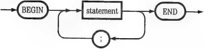
The arrow coming back through the semicolon indicates that many statements may be placed between BEGIN and END, as long as they are separated by semicolons.
You can nest any number of BEGIN...END statements. Within any block, the Compiler will associate the last BEGIN with the first END, the next-to-last BEGIN with the second END, and so on. If you haven’t written an equal number of BEGINS and ENDs, the Compiler will stop and display an error message. In complicated programs it is advisable to mark BEGINS and ENDs with comments, so you can keep them straight. Comments are discussed at the end of this chapter.
An expression may consist of a single symbol, or a sequence of symbols of practically any length. Every expression contains at least one constant or variable reference, which has a value. The expression may also contain other symbols (such as arithmetic or logical operators) that modify or combine the values of its constants or variable references. As a result, every expression as a whole also has a value. This value is used or manipulated by the statement of which the expression is a part.
The rules for composing valid expressions are complex. They are discussed in detail at the beginning of Chapter 6.
Within each Pascal expression, there are general rules you must follow when writing individual symbols. They are explained in this section.
Although you might write your Pascal source text in a single lump, as illustrated below under “Formatting for Readability,” you cannot run everything together without spaces. The Pascal Compiler must find certain characters between symbols and expressions in order to read them separately. These separating characters are called delimiters. The most common ones are space, tab, and return; these have meaning only as delimiters. In addition, however, many symbols that have specific meanings in Pascal also act as delimiters. Beside space, tab, and return, the one-character delimiters are
+ -/* = <>“{} and the two-character delimiters are
:= .. (• •) <= >= <>
Thus the following assignment statement is correctly written, even though it contains no spaces, because arithmetic operators also act as delimiters:
FRUIT:-APPLES*ORANGES;
Identifiers are names used in Pascal source text. They identify programs, Program Units, constants, data types, variables, procedures, and functions. Most identifiers are created and defined by the programmer. Others are part of Apple Pascal’s built-in vocabulary. Either way, their syntax is
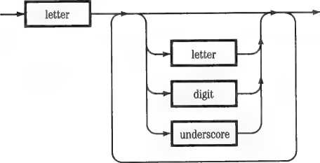
Here are the rules for composing your own identifiers:
□ An identifier must begin with a letter.
□ After the initial letter, it may contain any number of letters, digits, or underscore characters; it may not contain any other punctuation.
□ Only the first 8 characters (ignoring underscores) are significant.
□ Capital and lowercase letters are equivalent.
Thus the following six identifiers are equivalent and interchangeable:
MYNUMBER mymimber
MY-NUMBER My_Number
MY_NUMBER_VALUE my_immber_aymbol
When inventing your own identifiers, it is important to avoid colliding with the built-in Apple Pascal vocabulary. See Appendix 3F, Table 2, for alphabetized lists of terms that are already meaningful in Apple Pascal. If in doubt, check your new identifier with these lists. The following rules apply:
□ If a new identifier is the same as an Apple Pascal reserved word, the Compiler will refuse to accept it.
□ If a new identifier is the same as an Apple Pascal predefined or predeclared identifier, the Compiler will accept it but the original Pascal identifier will become unavailable within the scope of the new meaning.
Apple Pascal provides several ways for writing numbers in source text:
□ Whole numbers up to 36 digits long can be written normally. If preceded by a minus sign they will be interpreted as negative. If preceded by a plus sign or nothing they will be interpreted as positive. If within the range —32767 to +32768 they can be assigned to Pascal integers; otherwise they must be assigned to long integers. Integers and long integers are discussed in Chapter 6.
□ Numbers with decimal parts can be written normally, like whole numbers with a period included. However, their precision will not be more than 6 or 7 significant digits.
□ Numbers with decimal parts may also be written in scientific notation. Here is a typical example:
3.141S9c+02
This format is discussed in more detail in Appendix 3B.
Commas, spaces, and other kinds ol punctuation may not appear inside numbers written in Pascal source text.
{ordinary integer}
123
123456789 123.456 1.234S6e+02
{long integer!
{number with decimal part} {scientific notation}
When you want to write characters or strings as data in a Pascal source , text, set them off by single quotation marks. The Compiler will read
material between the single quotation marks exactly as you wrote it,
according to these rules:
□ Capital and lowercase letters are distinguished from each other.
□ CONTROL-C and RETURN cannot be included in a string; other control characters, including the null character (ASCII code 0), are legal. Special procedures for entering CONTROL-C and RETURN in your source text, using the CHR function, are described under “Scalar Operations” in Chapter 6.
□ A single apostrophe is not accepted; to enter a single apostrophe, type two apostrophes in a row.
□ Just two single quotation marks with nothing between them is interpreted as the null string (a string of zero length).
Here are some examples:
'Smith'
'a'
'Don''t
'*408.23' 'Type your name: ' {strings}
'A' '0' '♦' ' ' (characters}
worry' {string containing an apostrophe}
"" {apostrophe character}
" {null string}
Good programming practice includes writing enough comments in the source text that you and others can figure out what is going on. Comments are ignored by the Compiler; they are there only to help human beings understand the program. Apple Pascal provides two ways to delimit comments in the source text—parentheses with asterisks, and braces:
C* This is a comment *)
■(This is another comment}
Whenever it sees either of the beginning symbols for a comment, the Compiler ignores subsequent text until it sees the matching closing symbol. A comment may contain any combination of text or control characters and may be any length.
A Restriction: Don’t begin a comment with a dollar sign ($). This syntax is reserved for Compiler options. See Chapter 14.
You can nest comments one deep, provided you use the other set of delimiters inside the original comment. Thus you can “comment out” a section of your source text (temporarily remove it from your program) even though it may contain comments itself. Just enclose it within the other set of delimiters:
t* X := 1; (Original comment here}
IF Y > 0 THEN X := Y ELSE Y : = 0 - Y j «>
Here the unwanted bit of program, containing a comment in braces, has been temporarily rendered invisible to the Compiler by enclosing it in parenthesis-asterisk delimiters.
Because the Pascal Compiler takes no notice of line breaks, you have wide latitude to arrange your Pascal source text so that it is easier for human beings to understand. You’ll see examples of readable formatting in the sample programs given in this book.
As far as the Compiler is concerned, however, the second example given earlier could have been written like this:
SECONDEXAMPLE; CDNST PLAYER « 'Joe Dimaggio'; TEAMSIZE « 9;
TYPE TEAM • ARRAY C1..TEAMSIZE] OF STRING; VAR DODGERS : TEAM; COUNT:
INTEGER; PROCEDURE FILLTEAM (VAR X : TEAM); BEGIN FOR COUNT 1 TO
TEAMSIZE DO X [COUNT] := PLAYER END; BEGIN FILLTEAM (DODGERS); FOR COUNT 1 TO TEAMSIZE DO WRITELN (DODGERS [COUNT!) END.
Although it may make no difference to the Pascal Compiler, you’ll agree that the earlier form, arranged in indented lines, is much easier for us mortals to follow. Normally, nested BE6IN...END statements are indented so that corresponding BEGINS and ENDs are arranged in columns. The various declarations and user-defined procedures and functions are separated by blank lines. Comments are arranged so they distract as little as possible from the structure of the program itself. The result is a source text that is equally comprehensible to the Pascal Compiler and to the average programmer.
The Pascal language has a characteristic called “strong typing”: in most cases the data manipulated by any Pascal program must be identified by type. For example, before a Pascal program can accept the datum 123 it must know whether this datum represents the number one hundred and twenty-three or a written string of three numeral characters.
A Special Case: A variable parameter passed to an assembly-language procedure or function can be left untyped in Pascal. This technique in effect lets you create new data types at the machine-language level. It is discussed in Chapter 9, “Assembly-Language Routines."
Apple Pascal has 15 built-in data types. They are discussed in different chapters of this Language Manual, as indicated below:
|
Chapter 3 |
Chapter 4 |
Chapter 5 |
Chapter 10 |
|
INTEGER |
STRING |
Pointer |
FILE |
|
REAL |
SET |
TEXT | |
|
Long Integer |
ARRAY |
INTERACTIVE | |
|
BOOLEAN |
RECORD | ||
|
CHAR |
BYTESTREAM WORDSTREAM |
The types INTEGER, BOOLEAN, and CHAR are also called scalar types. Every value of a scalar data type can be stored in a single word (2 bytes, or 16 bits) of memory.
The 15 types listed above represent the forms in which data are most commonly handled. However, Pascal is capable of accepting an unlimited number of data types. You can add new types to your Pascal program in several ways:
□ You can create a new identifier for an existing type.
□ You can modify an existing type by further specification.
□ You can define new scalar types.
□ You can create subrange types from existing scalar types.
These techniques are discussed in this chapter and the next.
New data types are created by the type declaration:
Type declarations may occur in programs, Program Units, and user-defined procedures and functions. They are placed after label and constant declarations, but before variable declarations. Here are some examples of type declarations illustrating the techniques listed above:
TYPE YEAR ■ INTEGER; {new name fop old type}
HRS—MINS ■ ARRAY!1..21 OF INTEGER; {specification of array}
DAY ■ 0..31; {subrange type}
DAY—MEEK ■ (MO,TU,WE,TH,FR,SA,SU>; {user-defined scalar}
Note that the whole group is introduced by the reserved word TYPE, and that each declaration ends with a semicolon. You can write only one group of type declarations in any block.
Fixed data, given to a Pascal program at the time it is written, are called constants. Constants may have any of the following built-in data types:
INTEGER REAL Long Integer
BOOLEAN CHAR STRING
All but the last of these types are described in this chapter. The type STRING is discussed in Chapter 4.
Although you can simply write constants as they are needed in your program, your source text often becomes more understandable when you give them names. Naming constants also makes it easier to modify your program, because you can change a fixed datum sprinkled through your source text by editing the one place where it is given a value. You name
constants by writing a group of constant declarations in your source text after the program heading but before any variable declarations:
|
—»-(const)— |
r* * |
new identifier |
constant |
hih | |
|
_y |
Note that the whole group is introduced by the reserved word CONST, and that each declaration ends with a semicolon.
After mentioning them in the constant declaration, you can use the new identifiers in your program as if they were the constants to which they are set. Here is an example of a constant declaration containing one of each of the six types listed above:
CONST DAYSWEEK = 7;
PI = 3.14159; MEGA - 1000000; REJECT = FALSE; TOPGRADE = 'A'; OPEN ■ 'Sesame';
■(type INTEGER}
{type REAL}
{type Long Integer} {type BOOLEAN}
{type CHAR}
{type STRING}.
By the Way: You can also use the constant declaration to set an identifier to the pointer constant NIL, thereby typing it as a pointer. For a discussion of pointers, see Chapter 5.
When a constant is declared, its type is declared implicitly at the same time. If a number appears to the right of the = symbol, the Compiler assigns it a type as follows:
□ If it does not contain a decimal point and is within the range — 32767 to +32767, it is assigned the type INTEGER.
□ If it does not contain a decimal point and is outside the integer range it is assigned the type Long Integer.
o If it contains a decimal point or is written in scientific notation, it is assigned the type REAL. Scientific notation is explained in Appendix 3B.
Caution: Long Integer constants may not contain more than 36 digits and a sign. Constants of type REAL may not exceed plus or minus 3.4028234e38.
If the words TRUE or FALSE appear to the right of the = symbol, the constant is assigned the type BOOLEAN. When material inside single quotation marks appears, the constant is assigned the type STRING. If it is one character long, it is assigned the type CHAR.
String and CHAR constants may not contain CONTROL-C or RETURN characters (ASCII codes 3 and 13), although they may contain the “high ASCII” equivalents (codes 131 and 141). These “high ASCII” characters may be entered by holding down CJ while pressing CONTROL-C or RETURN.
The range of boolean constants and variables, as well as the results of boolean operations, are limited to the two constant values TRUE and FALSE. These are predeclared constants in Pascal.
Apple Pascal has one predeclared numerical constant, MAXINT. It is the number 32767, constituting the highest possible positive integer value.
Pascal allows variables of two sorts: static variables and dynamic variables. Static variables are named explicitly in the program and their memory locations are allocated when the program is loaded. Dynamic variables are identified indirectly, by pointers, and their memory locations are allocated while the program is running. The discussion in this chapter and Chapter 4 concerns static variables; dynamic variables are covered in Chapter 5.
All static variables must be declared. When you declare a variable, you create an identifier and associate it with a specific data type. When your program is executed, the variable can take on any of a range of values depending on its type. All variable declarations are grouped together and introduced by the reserved word VAR.
The following example declares two variables:
VAR RATIO : REAL;
ITERATION ; INTEGER;
As before, each declaration ends with a semicolon. Note, however, that the parts of each declaration are linked by a colon, not by an equal sign. The first variable, RATIO, is type REAL, and the second, ITERATION, is type
INTEGER. When two or more variables of the same type are declared, you can combine the declarations:
VAR I, J, K : INTEGER;
X, Y, 2 : REAL;
This declaration establishes three integer variables: I, J, and K; and three real variables: X, Y, and Z.
In the remainder of this chapter, you will see many examples of variable declarations, using many different data types. However, all of them follow the general form of the examples just given. Their syntax form is
—
new
identifier
o- type _K>
o
The word “type” in the diagram stands for any of a wide lange of
possibilities. In this chapter we are concerned with certain predeclared . types, which are represented by identifiers such as INTEGER and REAL;
we will also explain ways in which you can define new data types.
The following rules apply to variable declarations:
□ There can only be one group of variable declarations in any block.
□ Variable declarations are written after label, constant, and type declarations.
□ Variable declarations can employ either built-in or user-defined data types. When referencing a user-defined type, the variable declaration must be located within the scope of the type. Rules of scope are explained in Chapter 8.
□ You cannot use a variable unless it has been previously declared. The converse, however, is not true; it is legal (although wasteful) to declare a variable and then never use it.
Declaring a variable does not automatically assign it any particular value.
Your program must give each variable a value before using it as a piece of
data.
Parameter Declarations: Variables are also declared when they are mentioned in the parameter list of a procedure or function. Such variables, however, may be used only within the procedure or function block. For a discussion of parameter lists see Chapter 8.
Integers are whole signed numbers in the range from —32768 to +32767. Integer variables and constants, integer subranges, and expressions that return integer values can be used with the following operations:
+ — • / DIV MOD := < > <= >= = <>
ABS SQR PWRQFTEN SQRT
SIN COS ATAN LOG LN EXP
STR CHR ORD SUCC PRED ODD
For a description of the results of combining integers with each other and with other data types in arithmetic and relational operations, see Chapter 6.
Pascal data of the type REAL are signed floating-point numbers. They can range from plus or minus 1.401298464e—45 to plus or minus 3.402823466e38.0.0 is also a real value. Each real number is stored in memory as 32 bits. This gives it a precision of about seven significant digits, depending on the actual value. For a full discussion of floating-point numbers, see Appendix 3B. For a description of the memory format, see Appendix 3C.
A Technical Point: Don’t confuse the Pascal type REAL with the mathematical concept of a real number. The Pascal type REAL only designates a particular way of storing a number.
Pascal variables and constants of the type REAL, plus expressions that return values of this type, can be used with the following operations:
+ - • / TRUNC ROUND
:=<><=>== <>
ABS SQR SQRT SIN COS ATAN LOG LN EXP
For a description of the results of combining data of type REAL with each other and with other data types in arithmetic and relational operations, see Chapter 6.
Some arithmetic operations using real data yield only approximate answers, as the results are rounded to fit the 32-bit format. Such rounding errors can build up, causing significant problems with chain calculations. It is a wise precaution to analyze your program carefully for this effect. The ground rules are set forth in Appendix 3B.
Extended Arithmetic: To calculate large numbers precisely, use the Apple II SANE (Standard Apple Numerics Environment) software. Ask your Apple dealer for details. To use SANE, you must be running the 128K Pascal system.
Apple Pascal long integers are signed whole numbers of up to 36 decimal digits. They are calculated exactly, without rounding errors. Thus they are particularly useful for business calculations where the amounts are too large for integer variables. If any intermediate or final result of long integer calculations exceeds a positive or negative 36-decimal-digit number, program execution halts with a run-time error.
Program Unit Required! The Program Unit LONGINTIO must be present in an accessible library at the time any program using a long integer variable is executed. LONGINTIO does not require a USES declaration, however. This Unit is originally supplied in the file SYSTEM.LIBRARY. For further information about libraries, see Chapter 13.
The long integer type is specified by the word INTEGER followed by a length attribute number in square brackets:
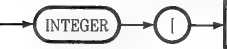
length
attribute
The length attribute represents the maximum number of decimal digits the variable can contain; it may be any whole nmnber up to and including 36. A typical long integer variable declaration looks like this:
VAR POPULATION : INTEGERC9];
This declaration tells Pascal that numbers stored in the variable POPULATION may have up to nine decimal digits; that is, they may range from —999,999,999 to +999,999,999.
A Technical Note: Pascal often sets aside extra memory for long integers, permitting larger numbers to be stored without a run-time error. For the rules governing long integer memory allocation, see Appendix 3C.
Long integer variables and constants, as well as expressions that return long integers, can be used with the following operations:
+ - * DIV TRUNC
:=<><=>= = <> STR
Long integers may never be mixed with numbers of the type REAL in calculations, but under certain conditions they may be mixed with integers. The applicable rules, together with those for relational operations, are given in Chapter 6.
Passing a long integer to a user-defined procedure or function requires a special technique; see “Defining Procedures and Functions” in Chapter 8.
In 1854 George Boole published the first complete book on symbolic logic. In his honor, data that have only logical (true or false) values are called boolean. In Pascal, the two predeclared constants TRUE and FALSE represent the two boolean quantities.
A typical boolean variable declaration looks like this:
VAR FLAG1, FLAG2 : BOOLEAN;
This declaration creates the two boolean variables FLAG1 and FLAG2.
Boolean variables and constants, together with expressions that return boolean values, can be used with these operations:
:=<><=>= = <> NOT AND OR
CHR ORD SUCC PRED
Ordinary boolean variables are stored in memory as 16-bit words, of which only the least significant bit is used. If this bit is 0 the boolean value is FALSE; if it is 1, the value is TRUE. In comparisons, therefore, FALSE is “less than" TRUE. However, you can also pack boolean values into single-bit array elements or record fields. These techniques are described in Chapter 4.
Pascal data of the type CHAR are single alphanumeric characters. They may be selected from any of the 256 ASCII codes, including code 0 (the null character). Variables and constants of the type CHAR and its subranges, as well as expressions that return CHAR values, can be used with these operations:
:=<><=>= = <>
CHR ORD SUCC PRED
The indexed elements of a string are type CHAR; see “The STRING Type” in Chapter 4.
Constants of the type CHAR may be introduced anywhere in your Pascal program, by enclosing a character in single quotation marks. If the character you want is inconvenient to type into the source text (for example, a control character) or does not appear on your keyboard, you can use the CHR function to convert an integer to the character equivalent of its ASCII code value. See “Scalar Operations” in Chapter 6.
The Pascal data types INTEGER, BOOLEAN, and CHAR are called scalar types. Calling them “scalar” means that they have a distinct set of possible values that occur in a strict order.
You can create other scalar types simply by naming their possible values:
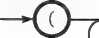
new
identifier
Recall the example given earlier in this chapter, under “User-Defined Data Types”:
TYPE DAY_WEEK - CMO,TU,ME,TH,FR,SA,SU>;
This declaration creates the new data type DAY_WEEK. With it, you can then declare a user-defined scalar variable:
VAR TDDAY : DAY-WEEK
The variable TODAY can take just one out of seven values—namely, the value MO or the value TU or the value WE, and so on.
You can also declare TODAY directly, without a prior type declaration:
VAR TODAY : CMO,TU,WE,TH,FR,SA,SU);
User-defined scalar variables and their subranges can be used with the following operations:
:= = CHR ORD SUCC PRED
The values of any user-defined scalar type are implicitly associated with the positive integer range 0,1,2... Thus, for example, the function ordctoday) would return the integer 3 if the value of TODAY were TH. Scalar operations such as ORD are described in Chapter 6.
A subrange type may be defined for any scalar type, including user-defined scalars:
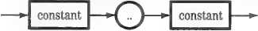
TYPE MINUTES - 0..S9; WORKDAY • MO..FR;
VAR GRADE : 'A'..'F';
The two constants must be units of the same scalar type and the second constant must have a higher value than the first in the scalar order. Here are some examples:
{Integer subrange type> {subrange of user-defined type}
{variable of CHAR subrange type}
Subranges may also be defined for boolean types and variables; but because there are only two boolean units, every such subrange is equivalent to a constant.
When declaring and using subrange types, remember that
□ Every subrange type is itself a scalar type;
□ Its values cannot be distinguished from the values of the superordinate scalar;
□ Your program can use a subrange type with any operation it could use on the superordinate type.
The Pascal types discussed in the previous chapter are simple linear ways of representing data. Now we shall consider the more complex data types— STRING, SET, ARRAY, and RECORD, plus two special types, BYTESTREAM and WORDSTREAM.
Pascal strings are sequences of up to 255 alphanumeric characters. String variables are used to hold all kinds of written text: names, words, sentences, sequences of keyboard symbols, and numbers when they are not being treated arithmetically. Each character element of a string variable may correspond to any of the 256 ASCII codes, including 0.
String constants may be introduced anywhere in your Pascal program, by enclosing a sequence of 2 to 255 characters inside single quotation marks. The Compiler will reject any string constants that contain CONTROL-C or RETURN (ASCII codes 3 and 13), although it will accept the “high ASCII" equivalents (codes 131 and 141). Other control characters may cause editing problems when you are writing program text.
String variables have no such restrictions. To add CONTROL-C, RETURN, or other control characters to a string variable, you can follow the special procedures described under the CHR function in Chapter 6.
Pascal strings may be used with the following operations:
:=<><=>= = <>
LENGTH POS CONCAT COPY DELETE INSERT STR
For a description of the results of using relational operations to compare strings, see “Relational Operators” in Chapter 6.
When a variable is declared as type STRING without further specification, Pascal sets aside enough memory to contain 80 characters. If your program will never try to place that many characters in the variable, you can conserve memory by declaring a shorter maximum length. If your program might try to place more than 80 characters in the variable, you must declare a longer maximum. In both cases, you add an integer expression in brackets after the word STRING:
—^(string)-
unsigned
integer
constant
The number in brackets, if used, can be any integer from 1 to 255. If your program attempts to place more than the declared number of characters in a string variable, it will halt with a run-time error. This feature can be suspended, however; see “Range Checking” at the end of Chapter 6.
The individual characters within any string variable are indexed from 1 (not 0!) to the length of the string. Any one can be identified by writing its index number in brackets after the string identifier. Thus if the string variable TITLE contained the string'Under the Apple Tree'then TITLE[1] would designate its first character, a capital u. TITLE[14] would designate the lowercase l in ' A p p l e'; and so on.
The following rules apply to string indexing:
o The index expression inside the brackets of a string element identifier may be any expression that returns a positive nonzero integer value.
□ An index value may never be larger than the length of the string actually contained in the string variable. In the example above, referring to TITLE[21] would cause a run-time error, even though the maximum capacity of the variable TITLE might be larger.
□ When a string variable contains the zero-length (nuli) string it ceases to be indexable at all. Any attempt to refer to its elements will cause a run-time error.
□ A string variable that has been declared but never given a value has a random length, which is often zero. Do not try to refer to its elements before it has been given a specific string value.
□ String constants cannot be indexed at all.
Because of the potential problems with out-of-bounds indexing, it is often advisable for your program to check the length of the contents of a string variable (using LENGTH) before executing any statements referring to its
elements. If you turn off range checking with the |$R-} Compiler option (described at the end of Chapter 6) you can also read or set the value of a string’s zeroth element, which contains its length.
Elements of string variables designated by indexing are themselves variables of the type CHAR. They can be used in the following operations:
:=<><=>== <>
CHR ORD SUCC PRED
If you attempt to write a one-character string constant, Pascal will give it type CHAR. But a string variable, even when it contains a single character, is always type STRING and not type CHAR.
A Pascal set is an unordered collection of up to 512 members, each of which must be a value of the same scalar type. This type is the set’s base type. Thus a Pascal set may have any one of these base types or their subranges:
INTEGER CHAR BOOLEAN User-defined scalar type All these types are discussed in Chapter 3.
Pascal sets can be created in two ways:
□ By writing a set type or variable declaration.
□ By writing a set constructor.
Sets provide an easy way to determine whether a scalar quantity falls within a specific definition. They have the added feature that set operations generally execute very rapidly. .
A type designation of the following form is used to create set types and variables:
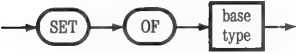
Here are some examples:
TYPE ALPHANUM = SET OF CHAR; ■{whole scalar range)
MINUTES = SET OF 0..59; -{integer subrange!
PRIMES - SET OF (2,7,5,3,19,13,17,11); {selected integers!
VAR CAPITALS : SET OF 'A'..'Z'; {CHAR subrange!
NOTES : SET OF (DO,RE,MI,FA,SO,LA,TI); {user-defined scalars!
The following rules apply to Pascal set formation:
□ Only one base type may appear in a set.
□ A set may not have more than 512 members. Thus SET OF CHAR is allowed because the type CHAR has only 256 values. But SET OF INTEGER or SET OF 1..513 is not permitted.
□ A set cannot contain any member whose scalar ordinality is less than 0 or greater than 512. Thus SET OF 501..513 is not permitted, even though it contains only 13 members. Similarly, SET OF —1..99 is not permitted.
□ Set members may be specified in any order, although subranges must obey the rules for designating subrange types.
You cannot declare a set constant. However, you can designate Pascal sets of fixed membership inside your program by using the set constructor:
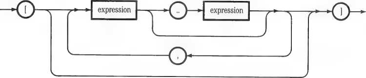
Here are examples of some typical set constructors:
-(integer subrange]
(selected CHAR values] (user-defined scalars]
(mixed CHAR subranges and values]
C10. .991
['a'.'o'.'i'.'e'.'u')
[DO,RE,MI]
The rules given above for creating set types and variables also apply to the contents of set constructors, with two new rules added:
□ You can write user-defined scalars in a set constructor only if they have previously been used in a set type or variable declaration, n Set constructors, unlike set declarations, may contain expressions as members. Such expressions may range from simple constants, as shown in the examples above, to complex strings of calculations. The only restriction is that the value produced by each expression be within the range for a set member.
If it has the same base type, a set constructor can be used to modify the membership of a previously declared set, using the assignment operator:
NOTES tDO,MI,SOI;
NOTES [MI..LA,DO1;
13+X IN PRIMES 'H' IN CAPITALS MI IN NOTES ENTRY IN [10..991 LETTER IN ['a','o','i' ,
{selection of user-defined scalars) {mixed subrange and selection)
The set constructor [ ] denotes the empty set, which has no members.
The IN operator is used to test whether a particular scalar value is a member of a particular Pascal set. It is a relational operator and has a boolean result. It has the same precedence as the other relational operators (<, =, and so on). For an explanation of precedence, see “Precedence of Operations” in Chapter 6.
To create an IN expression, write a scalar expression, the reserved word IN, and a set identifier or constructor. The scalar expression before IN and the set identifier or constructor after IN must have the same base type. Here are examples of boolean expressions using the IN operator, based on some of the set examples given above:
{true if 13+X in set PRIMES)
{true if 'H' in set CAPITALS)
{true if MI in set NOTES)
{true if integer ENTRY is 2 digits) e','u'] {true if value of CHAR variable LETTER is a lower-case vowel)
A Pascal array is an ordered collection of elements, all of the same type. Each element of an array can be treated as a variable by itself; or the array can be manipulated as a whole.
When an array is treated as a whole entity, it can be used with the following operations:
:= = <>
Packed character arrays can be used with the following additional operations (see below, “One-Dimensional Packed Character Arrays”):
<><=>=
The elements of a Pascal array can be any Pascal type except a file type. All the elements in an array must be the same type. They can be used with any operation applicable to their type.
The elements in a Pascal array are distinguished by index values associated with them. These index values are scalar types—integers, booleans, type CHAR, or user-defined scalars. The index values may be ordered in any number of dimensions, producing arrays in which the elements are identified by an ordered series of scalar values.
Array types and variables are formed by type and variable declarations. The array type is written with this syntax:
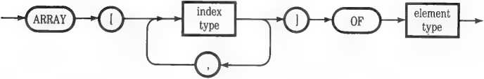
Thus a typical array type declaration looks like this:
TYPE TEAM •* ARRAY C1..9] DF STRING;
This declaration defines a type, identified as TEAM, that specifies an indexed collection of nine strings.
□ The elements of an array can be any type except a file type; in particular, they can be arrays or records.
□ An array can have any number of dimensions.
□ The index scalars in an array may have from 1 to 32767 (MAXINT) values on each dimension. Thus they may be type CHAR or BOOLEAN or any subrange of CHAR. They may be a subrange of INTEGER up to that limit.
□ Scalars indexing different dimensions may be of different types.
□ Index scalar ranges may begin and end at any values, including negative integers. However, the end index must always have higher ordinality than the beginning index.
□ To access an array element, you may specify its index by using any expression that returns a scalar value within the index range. Such expressions include variables, constants, complex calculations, and array elements themselves. Expressions are defined in “Data Expressions” in Chapter 6.
□ In array declarations, only constants may be used to specify array indices.
Caution: It is easy to specify array variables that are too large to fit into the available memory space when your program is run. Doing so will not cause a Compiler error. It is up to you to forestall this happening; for helpful hints, see “Executing Large Programs” in Chapter 15.
Multidimensional arrays are the same as arrays having other arrays for their elements. Thus, for example, declaring
ARRAY C0..7, 0..31 OF BOOLEAN
is exactly the same as declaring
ARRAY C0..71 OF ARRAY [0..31 OF BOOLEAN
These two ways of declaring the same array are interchangeable when arrays are not packed. With packed arrays, however, they have different effects. See below, “Multidimensional Packed Arrays.”
To illustrate some Pascal arrays, let us assume we are writing a program to handle job costing data. We make the following scalar type declarations:
(user-defIned scalar} (Integer subrange} (Integer subrange} (CHAR subrange}
TYPE DAY_WEEK*(MO,TU,ME,TH,FR,SA,SU) EMP-NUM* 1..20;
JOB-NUM*1..99;
PAY-RATE*'A'. .'K';
We could now make the following array declarations, either as types or as variables; let us assume variables:
VAR EMP-PAY : ARRAY [EMP-NUM] OF PAY-RATE;
ALL-HRS ; ARRAY [EMP-NUM,DAY-WEEK,JOB-NUM] OF REAL;
JOB-COST : ARRAY [JOB-NUM,PAY-RATE] OF REAL;
The array variable EMP_PAY now has 20 elements (one for each employee number in the scalar subrange EMP_NUM), each able to hold a capital letter from A to K representing the employee’s pay grade. It is a one-dimensional array. The variable ALL—HRS is a three-dimensional array containing numbers of the type REAL, each of which designates a number of hours worked. Each such element is addressed by three indexes: the employee number, the day of the week, and the job number. This array has 13860 elements (20 times 7 times 99). Finally, JOB-COST is a two-dimensional array, again containing hours worked (type REAL). Its elements are addressed by specifying the job number and the pay rate.
As whole entities, these array variables can be compared, assigned, or passed to procedures or functions, as described later in this chapter. You can also use their elements as variables in your program by writing the array identifier followed by index values in brackets:
EMP-PAY [17] [employee 17's pay grade; a CHAR value!
ALI—HRS [17,WE,63] [hours worked by employee 17 on Wednesday on
job number 63; a REAL value!
JOB-COST [63,'F'] [hours charged to job number 63 in pay
grade F; a REAL value!
Because index values can be any scalar expression, you could even specify the hours charged to job number 63 by everyone with the same pay grade as employee 17:
JOB-COST [63,EMP-PAY [17]]
Although for simplicity we have written fixed index numbers in these examples, it is more common to use index variables of the correct scalar type. Using variables permits the arrays to be searched and their elements accessed by giving different values to the variables.
When arrays are declared normally, Pascal allocates a minimum of one word (two bytes, or 16 bits) of memory for each element. When the array’s
elements are of a type that can be stored in less than a whole word, you can conserve memory space by declaring the array as packed. To do this, simply write the word PACKED just before the word ARRAY.
For example, the declaration
VAR CHBUF : ARRAY [0..20471 OF CHAR;
creates an array that occupies 2048 words of memory (4096 bytes)—one word for each element. On the other hand, the declaration
VAR CHBUF : PACKED ARRAY [0..20471 OF CHAR;
creates a packed array that occupies only 1024 words (2048 bytes). This is because the type CHAR requires only one byte of storage space. In general, when its elements are of a type with a range of 256 or fewer values, you can conserve memory space by packing an array. Thus the following element types are candidates for packing:
□ Type BOOLEAN (one bit per element)
□ Type CHAR (one byte—8 bits—per element)
□ Any subrange of CHAR
□ Subranges of INTEGER in which no value is greater than 255
□ User-defined scalars in which no value is greater than 255
Array elements are never packed across 16-bit word boundaries.
After as many whole elements are packed into a word as will fit, the remaining bits in the word are wasted. For example, consider the variable declaration
VAR NUMBUF : PACKED ARRAY [1..51 OF 0..63
To store values in the integer subrange 0..63 takes just 6 bits (2 to the 6th power equals 64). The 5 elements of the array should therefore need only 30 bits, or less than two words, of storage. However, this variable actually occupies three words because NUMBUF[1] and NUMBUF[2] are packed into 12 bits of the first word, with four bits wasted. These four bits cannot be used to store part of the next six-bit element, because then the element would have to straddle a word boundary. Similarly, NUMBUF[3] and NUMBUF[4] are packed into the next word; and NUMBUF[5] occupies the third word alone.
The rules given earlier for declaring arrays hold for declaring packed arrays, with one change: the maximum range of values of index scalars for each dimension is one less. Each dimension may be indexed with up to 32766 (MAXINT—1) scalar values.
You can manipulate the elements of packed arrays just like the elements of ordinary arrays, with one exception: an element of a packed array cannot be passed as a parameter to a procedure or function.
A Tradeoff: Packing and unpacking elements in packed arrays takes a significant amount of execution time. Thus execution efficiency is a tradeoff against memory conservation when using packed arrays.
There are two additional factors you must take into consideration when declaring packed arrays with more than one dimension.
An array itself always occupies at least one whole word. As a result, you must be careful about placing the word PACKED when declaring multidimensional arrays—that is, arrays containing arrays. The following rule holds: With arrays containing arrays, the word PACKED is effective only before the last occurrence of the word ARRAY. Consider these examples:
PACKED ARRAY C0..9, 0..51 OF ARRAY 10..3] OF CHAR <240 words}
ARRAY C0..9, 0..S3 OF PACKED ARRAY [0..31 OF CHAR <120 words}
PACKED ARRAY C0..9, 0..5, 0..3] OF CHAR <120 words}
All three of these examples define the same array structure. But the first example is not actually packed, even though it contains the word PACKED.
Only the last dimension of a packed array is actually packed. Thus in arrays where the packing process wastes bits rounding up to the next whole word, the order in which dimensions are declared can make a difference. For example:
PACKED ARRAY C0..3, 0..7] OF BOOLEAN <4 words}
PACKED ARRAY C0..7, 0..31 OF BOOLEAN <8 words}
In the first case, the 0..7 dimension is packed. Thus 8 boolean bits are packed into each of 4 words, wasting 8 bits per word. In the second case, the 0..3 dimension is packed; 4 boolean bits are packed into each of 8 words, wasting 12 bits per word.
A Suggestion: To make sure of the size of any array, packed or unpacked, you can use the SIZEOF function described in Chapter 6 under “Byte Operations.”
Beside all the foregoing characteristics of arrays and packed arrays, packed character arrays have three additional properties.
Any one-dimensional packed character array can be assigned the value of a string constant (but not the value of a string variable). The number of array elements must be exactly the same as the length of the string constant.
One-dimensional packed character arrays may be compared with each other and with string constants, using the relational operators
= <> <><=>=
Comparison expressions using these operators return boolean results. Two arrays being compared must have the same number of elements. An array being compared with a string constant must have the same number of elements as the length of the string.
In comparing one-dimensional packed character arrays with each other and with string constants, “greater” and “lesser” are derived from the positions of their character elements in the order of ASCII codes (given in Appendix 3F, Table 1). Pascal compares their corresponding elements, starting from the beginning. When unequal elements are found, the element with the lower ASCII code makes its array “less.”
One-dimensional packed character arrays can be used with the WRITE and WRITELNprocedures. In this role they act like strings. However, they have the advantage over strings of not being limited to 255 character elements. For further information about WRITE and WRITELN, see Chapter 10.
Two arrays must be of congruent types to participate together as whole entities in any Pascal operation. An array passed to a procedure or function must also be of a type congruent with the array type declared in the procedure or function’s parameter list. For more information about procedures and functions, see Chapter 8.
Here are the rules for determining array type congruency:
□ The elements of both arrays must be of the same type.
□ Both arrays must have the same number of dimensions.
n Each corresponding dimension must have the same index size.
□ However, the corresponding index types need not be the same.
For example, these three array types are congruent even though they are not identical:
TYPE A » ARRAY C0..25, 0..18I OF INTEGER;
B = ARRAY [10..35, 10..28] OF INTEGER;
C = ARRAY ['A'..'Z', 0..18] OF INTEGER;
Each of these types is a two-dimensional 26-by-18 array of integers, and hence congruent. On the other hand, the two array types
TYPE D » ARRAY C1..5, 1..10] OF REAL;
E ■ ARRAY [1..S0] OF REAL;
are not congruent, even though they both contain 50 REAL elements. Type D is a two-dimensional 5-by-10 array and type E is one-dimensional.
BYTESTREAM and WORDSTREAM are two special Apple Pascal data
types. They allow you to pass arrays of unspecified length to procedures
and functions. They act within a procedure or function as if the following
(normally illegal) type declarations had been made:
TYPE BYTESTREAM - PACKED ARRAY [0..?] OF CHAR;
WORDSTREAM = ARRAY [0..?] OF INTEGER;
The following rules apply to using BYTESTREAM and WORDSTREAM:
□ They may be used only to type variable parameters in procedure or function parameter lists. They may not be used as general variable types. For a discussion of variable parameters, see Chapter 8.
n BYTESTREAM parameters will accept strings and one-dimensional packed arrays whose elements are type CHAR, or integer subranges that have at least one value greater than 127 and none greater than 255.
□ WORDSTREAM parameters will accept one-dimensional unpacked arrays whose elements are type CHAR, INTEGER, BOOLEAN, or any CHAR or integer subrange.
□ Within the procedure or function, variables of type BYTESTREAM must be treated as if they were PACKED ARRAY OF CHAR; variables of type WORDSTREAM must be treated as if they were ARRAY OF INTEGER.
□ Within the procedure or function, BYTESTREAM and WORDSTREAM variables may be indexed over any positive integer range from 0 to 32766 (MAXINT—1). Pascal will not perform range checking on these variables. If the procedure or function indexes the parameter outside the limits of the data passed to it, it will access unknown areas of memory.
□ The first element of any array passed to BYTESTREAM or WORDSTREAM has index number 0. The first character of any string passed to BYTESTREAM has index number 1; index number 0 accesses the string’s length byte (see “Memory Formats” in Appendix 3C).
□ Whole BYTESTREAM and WORDSTREAM variables cannot be used with the procedures WRITE, WRITELN, READ, or READLN described in Chapter 10. However, their elements can be. BYTESTREAM elements are type CHAR; WORDSTREAM elements are type INTEGER.
Declaring procedure parameters as BYTESTREAM or WORDSTREAM allows you to overcome some of the normal restrictions of strong typing in Pascal programming. You can write procedures and functions that operate on strings or one-dimensional arrays of any size. At the same time, your routines must contain instructions that limit their operations to the actual size of the variables being passed to them. Because BYTESTREAM and WORDSTREAM variables are passed by reference, they cannot be measured with the SIZEOF function. Thus you must either pass size information along with the data being processed, or detect some internal feature in the data (such as the length byte at the beginning of every string). The normal mechanisms that prevent you from accessing the wrong areas of memory do not operate with BYTESTREAM and WORDSTREAM.
A Pascal record is a collection of elements, called fields, which may be of different types. Each field has its own identifier within the record and may be individually referenced; or the record may be referenced as a whole. Thus records are more flexible than arrays (in which all elements must be of the same type); they also differ from arrays in that their fields are identified by names instead of by index numbers.
The syntax for writing a Pascal record type or variable declaration is
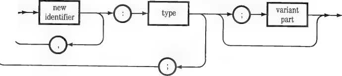
The variant part is optional; its syntax is discussed below under “Variant Records.”
Here is an example of a record type declaration:
TYPE DATE = RECORD
DAY, YEAR : INTEGER;
MONTH : STRING END;
It defines a record, called DATE, with three fields—two integers and one string. These three fields can be referenced individually in a program by writing their names after DATE and a period. Thus the two integer fields are identified as DATE.DAY and DATE.YEAR; the string field is called DATE.MONTH.
Records as a whole can be used with the following operations, provided their types are congruent:
:= = <>
The rules for determining whether two record types can be used with these operations are given below under “Congruent Record Types.”
Any individual field of a record can be used with any operation applicable to its type.
The following rules govern the declaration of record types and variables:
□ A record may have any number of fields.
□ Individual fields may be of any size.
□ Fields may have any of the Pascal types except file types. In particular, they may be other records.
□ Every field must have a declared type; however, it is possible for the same memory area to be occupied by fields of different types. See below, “Variant Records.”
Here is an example that illustrates some of the features of Pascal records. It might be part of a program that keeps track of a checking account.
TYPE DATE - RECORD
DAY, YEAR : INTEGER;
MONTH : STRING END;
PAYMENT - RECORD
CHECK-NUM : INTEGER;
DATE-WRITTEN, DATE-PAID ; DATE;
AMOUNT ; INTEGERI7I;
PAYEE ; STRING;
ACCT : INTEGER END;
VAR CHECK : PAYMENT;
CHECKBOOK : ARRAY 11.. 1001 OF PAYMENT;
The type PAYMENT defines a record with six fields, two of which are records of the type DATE. The variable CHECK is a single record of the type PAYMENT; the variable CHECKBOOK is an array of 100 such records. A program using these declarations would access individual fields to store and retrieve data:
□ CHECKBOOK[N] would refer to the Nth record in the array, a variable of the type PAYMENT.
□ CHECKBOOK[N].DATE_PAID would refer to the date on which the Nth check was paid, a record variable of the type DATE.
□ CHECKBOOK[N].DATE__PAID.MONTH would refer to the month of the date on which the Nth check was paid, a string variable.
A Shortcut: A shorter way of writing these field references is described below in the section “WITH...DO".
To number the check records in CHECKBOOK, the program could use the FOR...TO...DO statement:
FOR N :• 1 TO 100 DO CHECKBOOKINI.CHECK-NUM N;
To compare the contents of CHECK with the Nth element of CHECKBOOK, it could use the IF...THEN statement:
IF CHECKBOOKINI - CHECK THEN —
The remainder of this statement would be executed if and only if the contents of every field of CHECK were the same as the contents of every corresponding field of the Nth element of CHECKBOOK.
Information About the Example: This and other examples use standard Pascal statement forms such as F0R...T0...D0 and IF...THEN. For more information about Pascal statements, see Chapter 7.
Sometimes it is desirable to be able to vary the types of information stored in a record. To do that, an optional variant part can be added at the end of the record type or variable declaration.
The variant part of a record declaration, when it is used, must follow this syntax:
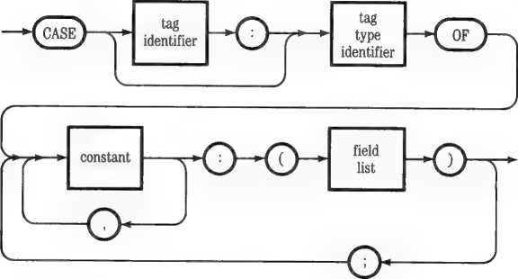
The tag identifier and tag type identifier form a new field in the record, called the tag field. The tag field lies between the nonvariant part and the variant part, which is always located at the end of the record. It serves to identify which of the variant record endings you want to use in any particular operation.
For example, consider the previous example of a checking account program. As originally written, the last field in the record type PAYMENT is ACCT, an integer representing the account number to which the check is charged. Suppose that some checks will be charged to a miscellaneous fund, making
it desirable to identify their purpose by a written text string. We modify the declaration of PAYMENT to include a variant part:
TYPE PAYMENT = RECORD
CHECK-NUM : INTEGER;
DATE-WRITTEN, DATE-PAID : DATE; AMOUNT : INTEGERC7I;
PAYEE : STRING;
CASE MISC : BOOLEAN OF
FALSE : CACCT1 ; INTEGER!;
TRUE : (ACCT2 : INTEGER;
PURPOSE : STRING)
END;
The material beginning at CASE is the variant part. It starts by introducing a new field, identified as MISC, containing a boolean value. If MISC is false, the record ends with a single integer field as before, now called ACCT1. If MISC is true, however, it ends with two fields: an integer ACCT2 and a new string variable, PURPOSE. By choosing a scalar type other than boolean we could have written many variant endings for this record type.
When Pascal encounters this variant record declaration, it sets aside enough memory to contain the longest variant part (namely, the case that MISC is true). If we have an array (such as CHECKBOOK) of records of the type PAYMENT, we can now tailor the Nth record in it by assigning one of the boolean constants TRUE or FALSE to the tag field CHECKBOOK[N].MISC. This tag field is part of the record; the program uses it to determine whether to identify the record’s account number as ACCT1 or ACCT2 and whether or not the field CHECKBOOK[N].PURPOSE exists.
Be Careful: Pascal provides no automatic mechanisms for switching variant parts in a record. Declaring a variant part simply means that you can store different groups of fields in the same memory space. It is up to your program to use the tag field to regulate its usage of the variant part in each record it writes.
The following rules apply to the declaration of variant record types or variables:
□ The variant part must be the last section of the record declaration. However, a record with a variant part may be declared as a field anywhere in a variant or nonvariant record.
□ The tag field type may be any scalar type; however, the maximum number and spread of its values is the same as with the CASE statement. See “CASE...OF...OTHERWISE” in Chapter 7.
□ The limits on the number and types of fields within each variant part is the same as for any Pascal record.
□ Identifiers may not be repeated among variants (this is why the field ACCT became ACCT1 and ACCT2 in our example).
In an ordinary variant record, the tag field value tells your program how to interpret the variant data. The tag field is particularly useful when the variant fields are of different types; it helps safeguard against misinterpreting their values.
However, you can create records in which you deliberately interpret field values in more than one way. A variant record can be declared without a tag field identifier (but not without a tag field type); or the program may simply ignore the tag field. In either case, the result is called a free union variant record. If the tag field identifier is omitted from the declaration, the tag field itself will be omitted from the resulting records. Omitting the tag field saves a little memory and makes the maneuver more straightforward.
Free union variant records provide a handy tool for converting data from one type to another. Here’s an example. The types INTEGER and CHAR are both stored in memory as words of 16 bits; suppose we wish to convert values of one into the other, or access their bits individually. We write the following free union variant record declaration:
VAR MAGIC : RECORD CASE INTEGER OF
1 : (NUMBER : INTEGER);
2 : (SYMBOL : CHAR);
3 : (BINARY : PACKED ARRAY I0..1SI OF BOOLEAN)
END;
Notice that this declaration has no tag field identifier; however, it does specify that the tag field is type integer. Declaring a tag field type is necessary so the Compiler can keep track of the three variant parts, which are identified by the integers 1 through 3.
When the record variable MAGIC is stored in memory, it occupies just 16 bits because this is the length of each of its variant parts. But now that same 16-bit word can be accessed as
□ An integer, identified as MAGIC.NUMBER;
□ A CHAR variable, identified as MAGIC.SYMBOL; or
□ A packed array of 16 boolean values, one for each bit, identified as MAGIC.BINARY.
Thus our program could, for example, store a character as MAGIC.SYMBOL and retrieve its bit pattern as the integer MAGIC.NUMBER. It could store or retrieve either as an array of bits (each represented by its boolean value). A typical statement to write out the binary value of the data stored in MAGIC might look like this:
FOR N := 15 DOWNTO 0 DO
IF MAGIC.BINARYINI THEN WRITE C'1')
ELSE WRITE C'0'>;
The rules for forming and using free union variant records are the same as for ordinary variant records, except that the tag field identifier is omitted. In particular, free union variant fields do not need to be all the same size. In the foregoing example, if we had declared MAGIC.BINARY as an ARRAY[0..7] OF BOOLEAN it would have accessed only the first byte of the two-byte memory space reserved for the whole record variable.
Using free union variant records is one of several ways to defeat the “strong typing” characteristic of Pascal. Others are listed in Chapter 16. The ways that various data types are stored in memory are described in Appendix 3C.
When records are declared normally, Pascal allocates a minimum of one word (two bytes, or 16 bits) of memory for each field. When one or more fields are of types that can be stored in less than a whole word, you can conserve memory space by declaring the record as packed. To do this, simply write the word PACKED just before the word RECORD.
Here is an example of a packed record declaration:
TYPE MICRO - PACKED RECORD F1, F2, F3 : 0..31;
LASTBIT : BOOLEAN END;
The three integer subrange fields FI, F2, and F3 each need five bits of memory; LASTBIT needs one. Because MICRO is declared as packed, variables of its type take up only one 16-bit word of memory. If the word PACKED were omitted, variables of type MICRO would occupy four words, one for each field.
These are the rules by which Pascal packs records:
□ Fields that contain arrays and records (both packed and unpacked) always start and end at even 16-bit word boundaries.
□ Fields containing all other data types start with the bit immediately following the last bit of the previous field and occupy the minimum number of bits necessary to hold their value range.
□ Fields are never packed across word boundaries. For an illustration of this restriction see the earlier section “Packed Arrays.”
□ When a packed record has a variant part, the variant part (beginning with the tag field) starts at the next word boundary and contains the number of bits necessary to store the tag field plus the longest variant.
□ Fields in variant parts, including the tag field, are packed the same way as in regular parts of records.
□ The packed record as a whole extends to the word boundary following the last bit of its last field (including variant fields, if any).
□ Records and arrays that are fields of a packed record are not automatically packed. You must declare them as packed.
Declaring packed records to minimize the memory space they require can be tricky. The order in which fields are listed can be critical, as well as the field types used. If in doubt as to the result of packing any record type, use the SIZEOF function described in Chapter 6 to measure its actual memory requirement.
A Tradeoff Packing and unpacking fields in packed records takes a significant amount of execution time. Thus execution efficiency is a tradeoff against memory conservation when using them.
Two record variables must be of congruent types to participate together as whole entities in any Pascal operation. A record passed to a procedure or function must also be of a type congruent with the record type declared in the procedure or function’s parameter list. For more information about passing records to procedures and functions, see Chapter 8.
Any two unpacked record variables, excluding variant types, are congruent if and only if for every field in one there is a corresponding field of the same type at the same position in the other. Such corresponding fields do not need to have the same identifiers, however.
Two packed record variables, excluding variant types, must meet a stronger test to be congruent. In addition to the foregoing requirement, all the bits in both record variables must be defined. Thus wherever bits are wasted between the end of a field and the next word boundary, you must declare extra fields of the right size to define the spare bits. Integer subrange fields are handy for this purpose. Note, however, that such extra fields must be initialized to some standard value (such as 0) if the record variables containing them are to be compared meaningfully with the = and <> operators.
Two variant record variables, packed or unpacked, must meet all the foregoing tests. In addition, they must have been declared by using the same type identifier. If you use two different type identifiers, even though they refer to the same actual type, Pascal will not recognize your variant record variables as congruent. This is not true of nonvariant records.
In comparisons using the = and <> operators, the contents of variant record tag fields are significant. If the contents of the tag fields are different, the records are unequal.
Free union variant record types act the same as other variant record types for congruency purposes; their lack of a tag field makes no difference.
Unpacked record types are never congruent with packed record types, nor variant record types with nonvariant record types.
WITH...DO
The WITH statement is a shorthand method for referencing elements of a record. It provides a means by which the fields of specified records can be referenced using only their field identifiers. It has the following syntax:
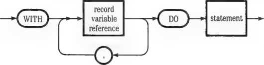
For an example, consider the array CHECKBOOK of record variables discussed earlier. There we identified the field DATE-PAID in the Nth
record variable of CHECKBOOK as CHECKBOOK[N].DATE_PAID. Instead, we could write
WITH CHECKBOOKS] DO BEGIN
...references to DATE-PAID....
END
BEGIN and END form a compound statement controlled by WITH...D0; in effect, they delimit the scope of its effect. Within this program area, all the fields of CHECKBOOK[N] are now identified simply by their field names. Of course other variables may also be used; the WITH...DO statement affects only the way you reference the fields of CHECKBOOK[N].
The field DATE-PAID, however, is itself a record. Originally we referred to one of its fields as CHECKBOOK[N].DATE_PAID.MONTH. Instead, we could write
WITH CHECKBOOKS], DATE-PAID DO BEGIN
...references to MONTH....
...references to other fields of CHECKBOOKCN3...
END
Now all the fields of both CHECKBOOK[N] and DATE-PAID are identified
just by their field names.
These rules govern the use of WITH...DO:
□ Any number of record variable identifiers, including those of records that are fields of other records, may be listed between WITH and DO.
□ When listing a record that is a field of another record, you must either list the containing record earlier or list that field in explicit form, for example in the form CHECKBOOK[N].DATE_PAID.
□ WITH...DO statements may be nested. The record variables “opened” by any WITH...DO statement remain “open” in the nested statements.
□ Where fields of different record variables have the same name, WITH...DO accesses the field of that name in the record last listed, including redundant listings in nested statements. The identity of field names does not cause a Compiler error.
□ Within a WITH...DO statement, fields may still be identified explicitly, for example in the form CHECKBOOK[N].DATE_PAID.MONTH, even though their record variables are listed. This feature can be used to resolve the ambiguity of identical field names.
o When used with variant record variables, WITH...DO accesses the identifiers for their tag fields and all variant fields.
□ WITH...D0 statements do not affect any identifiers except the names of fields in their listed record variables.
The examples of variables given in the previous chapters have all been static variables. They are created during program compilation as a result of declarations in the source text.
This chapter discusses variables of a different kind: dynamic variables. Dynamic variables are created while the program is running, as a result of its executing the NEW procedure. They are accessed not by identifier names, but by pointers. Here is the sequence of events:
1. Among your program’s variable declarations, you declare a static variable of the type pointer. At the same time, you declare a base type for the dynamic variable to which the static variable will later point. These declarations are discussed below under “Pointer Variables.”
2. When your program is loaded, Pascal reserves one word of memory for the pointer variable (which will later contain a memory address) and associates the declared base type with it.
3. In the body of your program you call the NEW procedure with the pointer variable as its parameter. See below, “The NEW Procedure.”
4. When the NEW procedure is executed, it allocates space in memory to store a new dynamic variable and sets the pointer variable to its address.
5. Pascal restricts usage of the dynamic variable’s memory space to the variable’s declared base type.
6. Your program may then identify the new dynamic variable by using the pointer variable’s identifier followed by a caret (').
Here is an example of this process in action:
TYPE DATE ■ RECORD - {Declare a base type!
DAY, YEAR : INTEGER;
MONTH : STRING END;
|
VAR PTR : “DATE; |
{Declare a pointer variable PTR, which will point to a dynamic variable of type DATE} |
|
BEGIN |
{Start body of program} |
|
...Program text... | |
|
NEW CPTRJ; |
{Create a dynamic variable of type DATE} |
|
...Program text... | |
|
... PTR* ... ... PTR*.YEAR ... |
{Reference to dynamic variable} {Reference to field in variable} |
|
END. |
{End body of program} The space now allocated for the new dynamic variable is taken from previously unused memory. It is the correct size for the dynamic variable’s base type. In the case of a variant record type, it can be either large enough for the largest variant, or the correct size for one specified variant. For details see below, “Dynamic Variant Record Variables.” Using Dynamic Variables |
|
The process just described may seem like a roundabout way of creating a variable. Indeed, for most data types it makes little sense. But with two types, arrays and records, it is an important tool for run-time memory management. Sometimes you need to create a large array for temporary data storage during program execution. If you declare such an array as a static variable, Pascal will reserve memory space for it all the time your program is running. That memory will never be available for other program use. By storing the array as a dynamic variable, however, you can control when its memory space is reserved. By using the MEMAVAIL function your program can measure how much unused memory is available before |
HI-63
Using Dynamic Variables
creating it. With the MARK and RELEASE procedures, you can release the memory that the array occupies after your program no longer needs it. These tools are described later in this chapter. Thus your program can use the same memory space for different purposes at different times. This is not the case with static variables.
An important application of dynamic variables is in the creation of dynamic text arrays. They allow you to use available memory most efficiently to store large quantities of text. For further information see “Creating a Dynamic Text Array” in Chapter 16.
When you are handling an indeterminate number of records, storing them in dynamic variables lets you allocate memory to them as needed. With static variables you would have to allocate enough memory in advance to handle the maximum number of different records that might exist at one time. The technique for using dynamic variables in this way is described in Chapter 16 under “Record Linking.”
Pointer variables are static variables of the type pointer. Their only use in Pascal is to point to dynamic variables. They are created by type or variable declarations in which the specification of a base type is preceded by a caret (*)
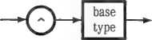
Some pointer variable declarations were illustrated in earlier examples. Pointer variables may be used with these operations:
:--<> NEW ORD
Pointer variables follow these rules:
□ The base type may be any type except a file type.
□ If the base type is user-defined (not one of the built-in Pascal types), you must declare it separately. You cannot declare it as part of the pointer variable declaration.
□ The base type may be an identifier for a variable type that has not yet been declared. This is the only time in Pascal when you can use an identifier that has not yet been declared.
□ There is no way in Pascal to set a pointer variable to any specific value.
It may be initialized by NEW, or it may be set to another pointer’s value (or to NIL) by the assignment operator (:=).
□ In particular, there is no way (short of writing an assembly-language routine) to set a pointer variable to point to a static variable.
□ Until they have been given a value by NEW or by assignment, pointer variables point to unknown areas of memory and should not be used.
□ Using NEW a second time with a pointer variable destroys the first pointer value. Unless you have saved this value by assigning it to another pointer, the dynamic variable it pointed to becomes permanently lost.
NIL is a Pascal reserved word, meaningful only as the value of a pointer variable. It can be used with the following operations:
:= = <>
When a pointer variable is set to NIL it points nowhere; in particular, it does not point to any dynamic variable.
NEW is a built-in procedure that is used only with pointer variables. It performs these actions:
□ It allocates unused memory space for a dynamic variable.
□ It sets the pointer variable to the address of the allocated space.
□ It restricts use of the space to storing variables of the base type that was declared with the pointer variable.
The syntax for calling NEW is this:
pointer
variable
identifier
o-
constant
<D-
An optional constant identifier may be added after the pointer variable identifer. If included, it refers to the value of a variant record tag field. This special feature of the NEW procedure is described next.
When NEW creates a dynamic variable, it allocates enough memory to store any possible value of its base type. When the base type is a variant record, this means that it allocates enough memory for the longest variant.
To conserve memory, you can specify which variation of a variant record type you want the new dynamic variable to contain. NEW will then allocate only enough memory for that part. You do this by adding a comma and a constant after the pointer variable identifier in the NEW parameter list. The value of the constant must be the same as one of the specified tag field values in the corresponding record.
Here is an example:
TYPE PICKVAR - RECORD CASE TAG : INTEGER OF
1 : CF1 : INTEGER)!
2 : (F2 : REAL);
3 : (F3 : ARRAY 11..991 OF CHAR)
END;
VAR REC-PTR : “PICKVAR
NEM (REC-PTR);
NEM (REC-PTR, 1) NEM (REC-PTR, 2) NEM (REC-PTR, 3)
(Memory allocation 100 words) (Memory allocation 2 words) (Memory allocation 3 words) (Memory allocation 100 words)
The NEW procedure with no constant allocates enough memory for the longest variant part; in this example, field F3 (99 words for the array plus one word for the tag field). If FI or F2 is to be stored, specifying the variant results in an obvious saving of memory.
When you use a constant to specify the variant part of a dynamic record variable, observe these cautions to avoid destroying neighboring memory:
□ Pascal does not automatically set the record variable’s tag field. If you use the tag field, you must set it to show which variant is actually being stored.
□ Don’t try to change the variant, or access any field not in the variant originally stored.
□ Don’t try to make an assignment to the dynamic record variable as a whole. You can assign the value of individual fields in the stored variant, however.
Because they are created during program execution, dynamic variables can easily gobble up all the available memory and cause a program halt. To help avoid this, Apple Pascal has three built-in operations for run-time memory management. They are the MEMAVAIL function and the MARK and RELEASE procedures, described below. Another useful memory management tool, the SIZEOF function, is described under “Byte Operations” in Chapter 6.
MEMAVAIL lets your program measure how much memory is available to store program data at any stage of execution. MARK and RELEASE let it choose whether to retain or release those parts of memory allocated to specific dynamic variables. SIZEOF tells your program how much memory it needs to store most types of variables, both static and dynamic. For further hints on avoiding memory size problems, see “Executing Large Programs” in Chapter 15.
Other Versions of Pascal: The Apple Pascal procedures MARK and RELEASE replace DISPOSE, a procedure used in some other versions of Pascal. Using DISPOSE in your program won’t cause a Compiler error, but it won’t work either.
The MEMAVAIL function returns a positive integer giving the number of two-byte words of memory currently available. In the 128K Pascal system this space is used for dynamic variables, data, and assembly-language code (if any). In the 64K system it contains all the executing P-code as well. Here is an example of the use of MEMAVAIL:
TYPE BIGGIE - ARRAY I0..99, 0..12] OF INTEGER;
VAR PTR : “BIGGIE;
IF MEMAVAIL > (SIZEOF (BIGGIE) DIV 2) THEN NEW (PTR)
ELSE
WRITELN ('Help');
This program fragment creates a pointer variable PTR with the base type BIGGIE, a large array. Before executing NEW (PTR), which would allocate memory for a dynamic variable of type BIGGIE, it compares the amount of memory available with the size of BIGGIE. It executes NEW only if there is enough room. Note that the SIZEOF function must be used on the base type of PTR; it cannot measure a dynamic variable such as PTR ~. Applied to PTR itself it would return the size of the pointer type, which is 2 bytes. SIZEOF is described under “Byte Operations" in Chapter 6.
Be Careful: Don’t multiply MEMAVAIL to convert its value to bytes. Its value may be in the upper half of the positive integer range; multiplying it by 2 can cause an integer overflow, returning an apparent negative value. In the example above, we divide the value returned by SIZEOF by 2; this converts it from bytes to words so it can be compared with the word count returned by MEMAVAIL.
When a program creates dynamic variables, using NEW, it starts from the beginning of a memory area called the heap. It places dynamic variables end to end in this area until the available memory is used up. The heap is discussed in Part IV of this manual, Chapter 3.
At any point in this process you can flag a memory location, using the MARK procedure. If you later execute a RELEASE procedure, all the memory back to the MARK location is freed for storage of new dynamic variables. In effect, RELEASE makes the point at which new dynamic variables are added to memory drop back to the place flagged by MARK.
MARK and RELEASE are used in pairs. Each pair requires a previously declared pointer variable. Here is the syntax:
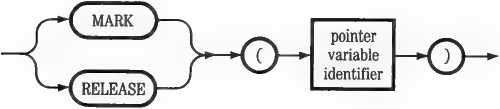
By using more than one pointer variable, you can place more than one pair of MARK and RELEASE procedures in your program.
Consider this example:
VAR FLAG1, FLAG2 : “INTEGER;
REPEAT
MARK CFLAG1>;
...program part A...
MARK (FLAG2);
...program part B...
RELEASE (FLAG2);
...program part C...
RELEASE (FLAG1);
UNTIL ...some condition...
{Mark start of repeated parti
{Mark start of part B>
{Release memory used by part B>
{Release all memory} {Repeat!
In this example, we have written a repeating program section in which dynamic variables are created by NEW procedures. In the areas indicated as parts B and C, the new dynamic variables are so large that they would take up more than the available memory if they all coexisted. So the memory used by part B is released for use by part C. This means that the variables created in part B can no longer be accessed. The variables created in part A, however, continue to exist until the memory used by the entire repeated section is released.
Keep the following points in mind when using MARK and RELEASE:
□ RELEASE must not be executed unless a MARK has previously been executed with the same pointer variable.
□ The order in which MARK and RELEASE work is the order of actual program execution, which may be different from the order in which they appear in the source text.
□ You can only release memory from the current point at which it is being filled; you cannot release a piece out of the middle.
□ The pointer variables used with MARK and RELEASE may have any base type; INTEGER is usually most convenient. The base type is immaterial because it is not used.
□ Do not try to use MARK or RELEASE with the same pointer variables you use with NEW, unless you are abandoning the dynamic variables they point to.
□ When Pascal reads a disk directory, it uses 2048 bytes from the memory space available for dynamic variables. Executing either MARK, RELEASE, or NEW will release this space for use.
▲Warning
Careless use of MARK and RELEASE can leave pointer variables pointing to meaningless memory locations. This can lead to inadvertent destruction of data.
Operations on Data
Chapter 6
Most data calculations and conversions in a Pascal program are done by user-defined procedures and functions, routines you construct to achieve the specific results you want. We discuss them in Chapter 8. But first, you need to know about Apple Pascal’s built-in facilities for manipulating data. They are the building blocks you will use when writing your own procedures and functions.
In this chapter, the built-in data operations of Apple Pascal are grouped by the types of data which they manipulate and the types of results they yield. The major kinds of data operations are
n The assignment statement, which sets the value of a variable;
□ The operators and functions of arithmetic, which manipulate numerical data and yield numerical results;
□ Relational operators, which compare data values of all types and yield boolean results;
□ Logical operators, which manipulate boolean values with boolean results;
□ Scalar functions, which manipulate scalar values with scalar results;
□ Byte procedures and functions, which manipulate or measure bytes of data as they reside in memory;
□ String procedures and functions, which manipulate or measure strings;
□ Set operators, which combine sets;
□ Bit operations, which act on the individual bits in data words.
In its simplest form, an expression may be just a constant or a variable reference. More generally, however, expressions are made up by combining
□ variable references
□ constants
□ operators
□ function calls
□ set constructors
□ other expressions
□ spaces and parentheses.
By combining these elements, you can create expressions of virtually any length or degree of complexity. Defining which combinations are valid (that is, which ones the Compiler will compile) requires a series of diagrams. We start with the overall syntax for an expression:
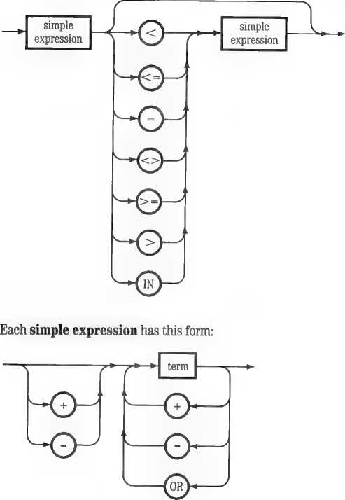
A term is constructed this way:
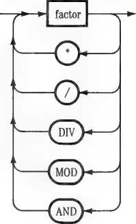
A factor is written like this:
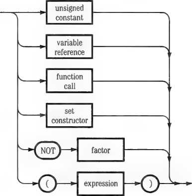
|
constant identifier | |||
|
unsigned number ^r\ | ||||
|
V_ |
ciiaracter | |||
J
The syntax for a variable reference is given in the next section, “Assignments.” The function call is written this way:
function
identifier
-o
expression
<D-
o
An unsigned constant may consist of an unsigned number, which is written this way:
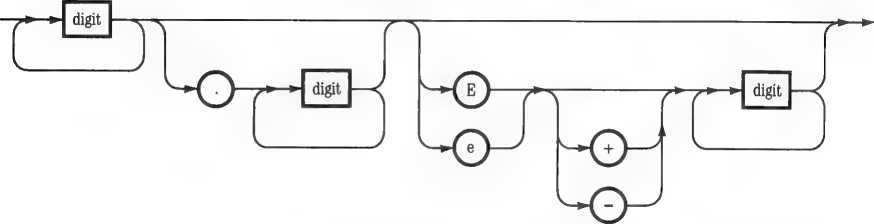
Finally, the set constructor looks like this:
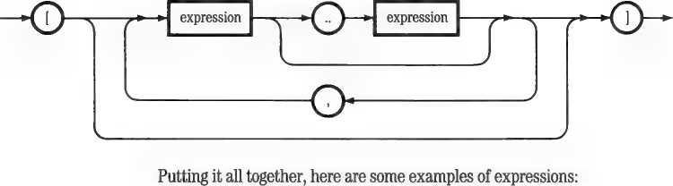
x
X * Y
(X • Y) OR (A > B)
((X DIV Y> MOD A) + 3 (SQR <X> - Y> AND (A <> B)
(A - 'a'J OR NOT (B IN I'b'-.'z'I)
The discussions of various data operations in the balance of this chapter contain many more examples of correctly formed expressions. From the outset, however, it is important to keep in mind the two essential characteristics of every expression: its type and its value.
Pascal data types are discussed at length in Chapters 3 and 4. Whenever an expression is formed—out of elemental symbols, or other expressions, or both—it acquires a specific type. Sometimes the type of an expression is different than the types of the expressions it contains. For instance, even if X is an integer expression (such as an integer variable), the expression SQRT(X) that returns its square root is type REAL, not INTEGER. You cannot use the expression SQRT(X) in an operation that works only on integers. Thus when constructing expressions it is important to keep track of the resulting data types. If you don’t, the Compiler will quit with an error message when trying to read your source text.
Even when the type of an expression is correct for a given operation, its actual value when your program runs may be out of bounds. For instance, the expression SQRT(X) does not accept negative values of X. If you try to run a program containing that expression in which the expression X acquires a negative value, the program will halt with a run-time error. Thus when forming expressions it is also important to keep track of the possible range of values each expression might acquire under all program input conditions.
In the rest of this chapter, the permissible type and value ranges for each data expression are carefully defined.
The assignment statement sets the value of a variable. It is written like this (the symbol := can be read as “set to”):
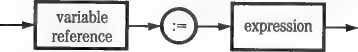
The variable reference on the lefthand side identifies a variable of any of the types discussed in the last three chapters (that is, any type except a file type). With most variables it is simply an identifying name, but in four cases it consists of a name followed by a qualification:
□ If the variable is a string element it is identified by the string name followed by the element’s index number in square brackets.
□ If the variable is an array element it is identified by the array name followed by index value(s), one for each dimension of the array, enclosed in square brackets and separated by commas.
□ If the variable is a record field, its name must be preceded by the name of its containing record and a period.
□ If the variable is a dynamic variable, it is identified by the name of its pointer followed by a caret.
Thus the complete syntax of any variable reference is this:
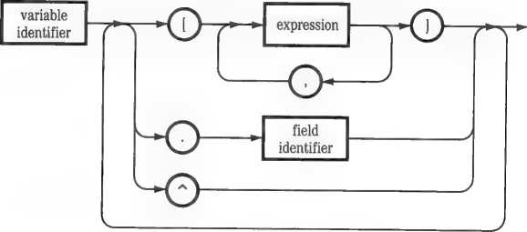
Here are some examples of valid assignment statements:
NUM_PLANETS 9;
ENERGY := MASS • SQR <CJ;
N := N + 1;
FRUIT :=■ [APPLES, ORANGES, LEMONS] j
111-77
Assignments
NAMEtKl 'a';
J0B_C0STI66,'B'] := 123.45;
REC.F1 TRUNC CSQR CCOS CTHETA
MEMPTR” NUM-PLANETS;
In writing assignment statements, keep these rules in mind:
□ An integer variable may be set to the value of an integer, integer subrange, or expression yielding integer results. It may be set to the value of a real or long integer, using the ROUND or TRUNC function, provided the real or long integer value is within the possible range of integer values.
□ A real variable may be set to the value of another real, an integer, an integer subrange, or an expression yielding integer or real results.
□ A long integer variable may be set to the value of an integer, an integer subrange, or an expression yielding integer results. It may be set to the value of another long integer or to an expression yielding long integer results provided the actual value does not exceed its declared size.
□ A boolean variable may be set to the value of another boolean or to an expression yielding boolean results.
□ A char variable may be set to the value of another char, a char subrange, or a string element.
□ A scalar subrange variable may be set to the value of another scalar (or an expression yielding scalar results) of the same type provided the actual values lie within its declared range.
□ A user-defined scalar variable may be set to any of the values named in its declaration.
□ A string variable may be set to the value of another string provided its actual length does not exceed the variable’s declared size.
□ A set variable may take the value of another set variable or set constructor, provided they have the same base type.
□ A whole array variable or record variable may be set to the value of another whole array or record variable of congruent type. For a discussion of congruency see “Congruent Array Types” and “Congruent Record Types” in Chapter 4.
□ A one-dimensional packed character array variable may be set to the value of a string constant (but not a string variable) provided its index range is the same as the string’s length.
□ Array elements, including elements that are arrays, and record fields, including fields that are records, act in assignments like ordinary variables of their declared types.
Apple Pascal provides a wealth of operations for numerical data. The following operators and functions are described in this section:
□ Negation, addition, subtraction, multiplication, and division of
integers, reals, and long integers, including modulus reduction of integers.
□ Rounding and truncating of reals and long integers to convert them to integer types.
□ Taking the absolute value of integers and reals.
□ Exponential functions yielding the square and square root of integers and reals, as well as reals which are integer powers of 10.
□ Trigonometric functions on integers and reals, yielding their sine, cosine, and arctangent.
□ Logarithmic functions on integers and reals, yielding their natural logarithm, base 10 logarithm, and natural antilogarithm.
□ Two randomizing functions that generate pseudorandom integers.
Integer, integer subrange, real, and lung integer expressions may be combined with these operators to negate, add, subtract, or multiply numbers:
— + •
You may use parentheses freely to separate partial expressions, as in standard algebraic notation. In fact, this is often necessary for Pascal to interpret your text correctly; for more information, see the section “Precedence of Operations” later in this chapter.
To negate an integer, integer subrange, real, or long integer expression (convert its value from positive to negative), simply place the — operator in front of it. For example:
-3 —3.14159 —X —TRUNC<X> —(X + 3) — ABS(X)
If the negated expression follows another operator, it must be separated by parentheses:
-C —2> —X*C — Y) X*C —Y> MGD < — CX + 3>>
To add, subtract, or multiply two integer, integer subrange, real, or long integer expressions, place the +, —, or * operator between them:
X —Y X —CY+Z> 3. 14159*X TRUNCCX>*Y CX+3>*ABSCY—CX*Z>
Some combinations of numerical types are illegal under these operations, however. Here are the rules:
□ Every negation is legal. The result of negating an integer subrange is an integer expression; with other types, the result is the same type.
□ Every combination of two integer, two real, or two long integer expressions is legal, provided the actual result is within the value range for that type. A real result below the lower limit of real values is legal; it is treated as 0.0.
o Every combination of integer and integer subrange expressions is legal, provided the actual result is within the integer value range. The result is an integer expression.
n Every combination of integer (or integer subrange) and real expressions is legal; the result is a real expression.
□ Every combination of integer (or integer subrange) and long integer expressions is legal; the result is a long integer.
□ Every combination of real and long integer expressions is illegal.
Be Careful: When constructing arithmetic expressions, analyze each part separately for the possibility that its value may overflow or underflow during program execution. For example, if X is an integer the expression
(X • 314) DIV 100
will cause a program halt if the value of X exceeds 104 (because 105 * 314 = 32970, an integer overflow). The program will halt even though the value of the whole expression is legal.
Pascal provides two operators for dividing numerical expressions, and one for reducing an integer modulo another integer:
DIV / MOD
To divide any combination of integer, integer subrange, or long integer expressions, write DIV between the dividend and the divisor. Unlike the single-character operators, DIV must be set apart by spaces, parentheses, or other delimiters:
X DIV Y CX*Y>DIVCY+ZJ X DIV ABSCYJ X DIV< —2)
The DIV operator cannot be used with real expressions.
To divide any combination containing a real expression, write the operator / between the dividend and the divisor:
X/Y (X+Y)/(Y*Z> X/ABSCY)
X/C — 2) X/3.14159
This operator can be used with any combination of integer, integer subrange, or real expressions.
To reduce an integer modulo another integer (get the remainder when one integer is divided by another), write MOD between the dividend and the divisor:
X MOD Y CX*Y)MOD(Y+Z)
X MOD ABS(Y) X MODC —2)
This operator can be used only with integer or integer subrange expressions. MOD simply divides the first operand by the second and returns the remainder. Its result is absolute—that is, always positive. Here are some examples:
10 MOD 3-1 10 MOD C — 3} = 1
10 MOD 11-10 10 MOD 5-0
The following rules govern the use of the DIV, /, and MOD operators:
□ The result of DIV division is truncated toward 0; any remainder is discarded.
□ If either operand of DIV is a long integer, the result is a long integer expression.
□ The result of DIV with any combination of integer and integer subrange expressions is an integer expression.
□ The result of using the / operator is always a real expression. If the result is less than the range of real values, it is treated as 0.0.
□ DIV cannot be used with real expressions, and the / operator cannot be used with long integer expressions; hence expressions of these two types cannot divide each other directly. However, if the actual value of either is within the integer range, it can be converted to an integer by using ROUND or TRUNC (see below) and then combined with the other.
□ The result of using MOD is always a positive integer expression, regardless of the signs of the dividend and divisor.
Pascal provides two functions to convert numerical expressions of other types into integer expressions:
ROUND(X) TRUNC(X)
ROUND accepts real expressions; TRUNC accepts either real or long integer expressions. In both cases, the expression to be converted is written inside the parentheses:
ROUND CX/Y) ROUND (—3.141S9e3)
TRUNC CABS CX • CY/Z)>)
Either function may be used with an integer or integer subrange expression; the result is an expression of the same type and value.
These two functions handle the fractional parts of real values differently. ROUND rounds real values to the nearest integer. If the value is exactly one half (for example, 21.5000) it rounds to the nearest integer divisible by two (22 in that case). TRUNC discards the fractional part entirely; for example, 21.9999 becomes 21. TRUNC converts long integer values to exactly the same integer values.
Caution: The actual result of using either function must lie within the value range for integers—that is, —32768 to +32767. Otherwise the program will halt with an error message. ■
The ABS function accepts integer, integer subrange, and real expressions, creating an expression of the same type. It returns the absolute value—that is, if the value of the expression is negative, ABS changes it to positive. The expression is written in parentheses after ABS:
ABS CX) ABS CX/Y)
The ABS function does not accept long integer expressions.
Apple Pascal provides three functions that return powers and roots of numerical values:
SQR (X) PWROFTEN (X) SQRT(X)
A fourth function, which returns powers of e (the base of natural logarithms), is discussed below under “Logarithmic Functions.”
The SQR function accepts integer, integer subrange, and real expressions, creating an expression of the same type. It returns the square of the expression’s value. When used with integer and integer subrange expressions, if the result exceeds MAXINT (plus or minus 181 squared), the value returned is integer 0. When used with real expressions, if the result exceeds 3.402823466e38 (plus or minus 1.84467el9 squared), the program halts with a floating-point error.
The PWROFTEN function accepts any integer or integer subrange expression with a value in the range 0..37, creating a real expression with a value that is 10 to the power of that integer.
The SQRT function accepts integer, integer subrange, and real expressions with nonnegative values, creating an expression of the type real. The value returned is the square root. If the expression used with SQRT has a negative value, the program will halt with a floating-point error.
Program Unit Required! The Program Unit TRANSCEND must be present in an accessible library at the time any program using the SQRT function is executed. You must also write the declaration uses transcend ; just after the program heading. TRANSCEND is originally supplied in the file SYSTEM.LIBRARY. The USES declaration is further described in Chapter 12; libraries are discussed in Chapter 13.
Apple Pascal provides three trigonometric functions—sine, cosine, and arctangent—from which all other trigonometric functions can be derived by using standard conversion formulas:
SIN (X) COS(X) ATAN (X)
Program Unit Required! The Program Unit TRANSCEND must be present in an accessible library at the time any program using the SIN, COS, or ATAN function is executed. You must also write the declaration uses transcend j just after the program heading. TRANSCEND is originally supplied in the file SYSTEM.LIBRARY. The USES declaration is further described in Chapter 12; libraries are discussed in Chapter 13.
The sine and cosine functions (SIN and COS) accept any integer, integer subrange, or real expression with a value between plus and minus 102942.13. This value represents an angle measured in radians. SIN and COS form real expressions whose values are the sine and cosine of that angle.
The arctangent function (ATAN) accepts any integer, integer subrange, or real expression whose value represents the tangent of an angle. It forms a real expression whose value is that angle measured in radians, reduced to the range plus and minus 90 degrees. Thus the resulting radian value varies between plus and minus pi/2 (1.57079).
Apple Pascal provides three logarithmic functions:
LOG® LN(X) EXP(X)
LOG calculates the base 10 logarithm; LN calculates the natural (base e) logarithm; EXP calculates the natural antilogarithm.
Program Unit Required! The Program Unit TRANSCEND must be present in an accessible library at the time any program using the LOG, LN, or EXP function is executed. You must also write the declaration uses transcend i just after the program heading. TRANSCEND is originally supplied in the file SYSTEM.LIBRARY. The USES declaration is further described in Chapter 12; libraries are discussed in Chapter 13.
All three logarithmic functions accept integer, integer subrange, or real expressions and form real expressions. The two log functions (LOG and LN) accept only nonnegative real values. The antilog function (EXP) accepts any real value.
Apple Pascal provides a function, RANDOM, and a procedure, RANDOMIZE, for generating pseudorandom numbers. They are both written without parameters:
RANDOM RANDOMIZE
Program Unit Required! The Program Unit APPLESTUFF must be present in an accessible library at the time any program using the RANDOM or RANDOMIZE function is compiled or executed. You must also write the declaration uses applestuff just after the program heading. APPLESTUFF is originally supplied in the file SYSTEM.LIBRARY. The USES declaration is further described in Chapter 12; libraries are discussed in Chapter 13.
Each time it is called, the RANDOM function returns a positive integer in the range 0 to 32767. Hence the function identifier itself is an integer expression with random positive value.
However, the sequence of values returned by repeated calls to RANDOM is always the same within a given program. To get a different sequence each time the program is run, you must execute the procedure RANDOMIZE before the first time you use RANDOM.
A typical application of the RANDOM function is to generate a pseudorandom number within a given range. If LOW and HIGH are integer expressions with values at the ends of such a range, the expression
LOW ♦ RANDOM MOD (HIGH—LOW*1)
can be used where results are not critical. But the values returned by this expression are not actually distributed evenly over the range LOW through
HIGH. To return pseudorandom integers evenly distributed over a range, you can write the following function in your program:
FUNCTION RAND1 {LOW, HIGH: INTEGER; VAR ERROR: BOOLEAN): INTEGER;
VAR MAX, DIFF, TEMP: INTEGER;
BEGIN
ERROR := FALSE;
IF LOW > HIGH THEN BEGIN
TEMP := LOW;
LOW := HIGH;
HIGH := TEMP END;
{ LOW <- HIGH >
IF LOW < 0 THEN ERROR :- HIGH > MAXINT + LOW;
IF ERROR THEN RAND1 := 0 { error exit >
ELSE
BEGIN
DIFF := HIGH — LOW; { 0 <= DIFF <- MAXINT >
IF DIFF = MAXINT THEN RAND1 := LOW + RANDOM ELSE
BEGIN { 0 <- DIFF < MAXINT >
MAX := MAXINT — CMAXINT — DIFF) MOD CDIFF + 1);
REPEAT TEMP := RANDOM UNTIL TEMP <- MAX;
RAND1 := LOW ♦ TEMP MOD CDIFF + 1)
END
END
END;
If HIGH is less than LOW, then the values of HIGH and LOW are exchanged. If the difference between HIGH and LOW exceeds MAXINT, then RAND1 returns 0 and sets the ERROR parameter to TRUE. Otherwise, RAND1 returns evenly distributed pseudorandom integer values between LOW and HIGH (inclusive).
Much of the complexity of the RAND1 function comes from the need to check that the arithmetic difference between the values of HIGH and LOW is less than MAXINT. The RAND2 function, listed below, is a simpler, faster version of the RAND1 function. The RAND2 function contains no error-checking; it must be called with parameter values whose difference is less than MAXINT or it will not return a correct result.
FUNCTION RAND2 CLOUI, HIGH: INTEGER): INTEGER;
VAR MAX, RANGE, TEMP: INTEGER;
BEGIN
RANGE := HIGH — LOW + 1;
MAX := MAXINT — (MAXINT — RANGE + 1) MOD RANGE; REPEAT TEMP := RANDOM UNTIL TEMP <= MAX;
RAND2 := LOW + TEMP MOD RANGE END;
Six relational operators allow you to compare the values of data expressions of every type except file types. Such comparisons form expressions that are always boolean. The relational operators are these:
= equal to
< less than
> greater than
< = less than or equal to
> = greater than or equal to
<> not equal to
Here are some examples of boolean expressions formed from relational operators:
X - Y X > SQR(Y) CX*Y) <> (X + Z)
X <- 0 Y = 'Wye'
Whereas relational expressions can be assigned to boolean variables, or substituted any place boolean variables or constants could be written, their principal use is in program control statements. These statements are discussed fully in Chapter 7; for present purposes, just note how the relational operators are used:
IF X > SQR (Y) THEN —
REPEAT -- UNTIL (X*Y) <> (X*Z>
WHILE X <- 0 DO -
In each case, the control statement looks to the boolean value of the relational expression to decide whether or not to execute another statement. In the first example, for instance, the statement following THEN is executed only if the expression x > sqr cy> has the value TRUE; that is, only if the value of X is greater than the value of the square of Y.
Relational operators follow these rules:
□ Integer and integer subrange values may be compared with all numerical values—other integers, integer subranges, reals, and long integers.
□ Real and long integer values can never be compared. However, either can be converted to an integer value (if its value is within the integer range) by the ROUND or TRUNC function, and then compared.
□ Boolean values can be compared with each other; under the <, >,
<=, and >= operators, FALSE is “less than” TRUE. This makes relationals handy for performing boolean logic. See below, “Logic Using Relational Operators.”
□ CHAR values can be compared with each other and with string elements. Under the <, >, <=, and >= operators, characters with lower ASCII codes are “less than” characters with higher ASCII codes.
□ Two strings can be compared regardless of their lengths. If they are identical in length and value they are “equal"; otherwise they are "unequal.” Under the <, >, <=, and >= operators, Pascal compares strings element-by-element, starting with element 1. When an unequal value is found, the element with the lower ASCII code makes its string “less,” even if that string is longer. If all corresponding elements have equal values to the end of the shorter of two unequal length strings, then the shorter string is “less” than the longer.
a Two sets of the same base type may be compared. They are “equal” only if they contain exactly the same members; otherwise they are “unequal.” Under the <= and >= operators, one set is “less than or equal to” another if all its members are also members of the other set, and conversely for “more than or equal to.” Equal sets satisfy both these operators. The operators < and > cannot be used with sets.
□ Two arrays of congruent type may be compared under the = and < > operators. They are “equal” only if the value of every corresponding element is identical; otherwise they are “unequal.”
□ Congruent one-dimensional packed character arrays (but no other array types) can also be compared with each other and with string constants of the same length, using the <,>,<=, and >= operators. The comparison algorithm is the same as with strings, described above.
□ Two records of congruent type may be compared, but only under the = and <> operators. They are “equal” if the value of every corresponding field (including the tag field in variant records) is identical; otherwise they are “unequal.”
o When comparing packed arrays and records, you must set all unused bits to equal values, because they are compared along with the meaningful bits.
□ Array elements and record fields act in comparisons like ordinary variables of their declared types.
Because the Pascal logic values are defined in such a way that FALSE is “less than” TRUE, you can use the relational operators (=, <,>,<=, >=,<>) to perform boolean logic. The result is often clearer and more compact source text. For example, if X and Y are boolean expressions, then you can combine them into new boolean expressions as follows:
{same as Y OR NOT X>
{same as CX AND Y> OR {NOT X AND NOT Y)>
{same as CX AND NOT Y> OR (NOT X AND Y>>
You can combine boolean expressions to form more complex boolean expressions by using these logic operators:
NOT AND OR
Although they can be used with boolean variables and constants, these operators are most commonly used with boolean expressions made from the relational operators just discussed. Here are some examples:
(X > 9) AND (X < 100)
CX - 0) OR CX - A) NOT CS <- [0])
The first example returns TRUE if the numeric variable X has a value between 10 and 99. The second example returns TRUE if the value of X equals either zero or the value of A. The last example shows how NOT can be used to create more complex comparisons; it returns TRUE only if the set S contains the member 0 and at least one other member.
The expression formed by writing NOT in front of a boolean expression simply changes its value from TRUE to FALSE or from FALSE to TRUE.
When two boolean expressions are connected by AND, the result is TRUE only if both expressions are TRUE; otherwise it is FALSE.
When two boolean expressions are connected by OR, the result is TRUE if either or both expressions are TRUE. It is FALSE only if both are FALSE.
To create an exclusive-or expression with logical operators you can write <cx and not y> or cnot x and y>>. A simpler exclusive-or expression is given in the previous section, “Logic Using Relational Operators.”
Other Uses of Logical Operators: The logical operators NOT, AND, and OR are also used for operations on the individual bits in Pascal data words. See “Bit Operations” later in this chapter.
Apple Pascal provides five useful functions for manipulating scalar data types:
ODD(X) CHR(X) ORD(X) SUCC(X) PRED(X)
The first three—ODD, CHR, and ORD—allow you to change data from one type to another. The other two, SUCC and PRED, help you increment and decrement scalar data values.
The ODD function accepts an integer expression and returns a boolean value. If the integer value is odd, the boolean value is TRUE; if the integer value is even, the boolean value is FALSE.
The CHR function accepts an integer expression in the range 0..255, and returns a value of type CHAR. The CHAR value is the character whose ASCII code is the same as the integer value. The CHR function is handy for expressing character constants that are not easy to enter directly in your source text—for example, control characters and characters with ASCII codes above 127.
Be Careful: CHR does not check to see that the value of its parameter is in the range 0..255. If it is outside this range, CHR returns an undefined CHAR value.
The ORD function accepts any scalar expression and returns an integer value. The integer value is the ordinality of the scalar. It is determined according to these rules:
□ The ordinality of any integer or integer subrange value is the integer value itself.
□ The ordinality of any CHAR or CHAR subrange value is the numerical value of its ASCII code.
□ The ordinality of a boolean value is odd if the value is TRUE and even or 0 if it is FALSE. The actual value returned by ORD may be greater thanl.
□ The ordinality of any user-defined scalar is its position in the original scalar declaration, the first value having ordinality 0.
The functions ODD, CHR, and ORD simply assign different scalar types to the same 16-bit word of data, without changing its value. ODD types it as boolean, CHR as CHAR, and ORD as integer. This convertibility of scalar types permits certain special techniques, described below under “Bit Interpretation of Scalar Types.”
The SUCC and PRED functions accept any scalar expression and form expressions of the same type. SUCC returns the “successor” value of the scalar—that is, the value with ordinality 1 greater. PRED returns the “predecessor” value, with ordinality 1 less. They determine ordinality in the same way as the ORD function.
Caution: The use of SUCC with the highest possible value of a scalar type, or PRED with the lowest possible value, will return an undefined value. Doing this will not cause Compiler or execution errors, but can produce program bugs and meaningless data.
Apple Pascal provides two functions and three procedures that measure or manipulate data as sequences of bytes, without regard to data type:
SIZEOF SCAN FILLCHAR MOVELEFT MOVERIGHT
SIZEOF measures the memory requirements of data types and variables. SCAN searches memory to locate specific bytes. FILLCHAR fills sections of memory with a specified byte value. MOVELEFT and MOVERIGHT copy sections of memory into new locations. The latter operations are particularly useful for manipulating variables in which data is stored as 8-bit bytes, particularly packed types such as packed character arrays.
SIZEOF and SCAN are functions which return data values. FILLCHAR, MOVELEFT, and MOVERIGHT are procedures.
SCAN, FILLCHAR, MOVELEFT, and MOVERIGHT operate on contiguous sections of memory. You can use them on multidimensional arrays, but only if you understand clearly how these arrays are mapped. For guidance, see Appendix 3D.
Caution: FILLCHAR, MOVELEFT, and MOVERIGHT alter the contents of memory directly. They have no built-in safeguards to prevent you from altering the wrong data. Use them with care.
SIZEOF accepts the identifier of any declared variable, user-defined data type, or built-in Pascal data type:
SIZEOF (IDENTIFIER)
However, it cannot be used with BYTESTREAM, WORDSTREAM, any file type, or any variable of these types. It can be used with the base type of a dynamic variable, but not with the dynamic variable itself.
SIZEOF returns a positive integer value representing the number of bytes of memory occupied by the identified variable, or by any variable of the identified type.
Be Careful: SIZEOF cannot return a value beyond the integer range. For example, it is possible to create an array that occupies more than 32767 bytes of memory. If you try to measure it with SIZEOF, you will get a negative value.
This function scans a limited range of memory, backward or forward, looking for a one-byte target. The target may either be a specified byte, or any byte different from a specified byte. SCAN returns an integer value representing the number of bytes from the starting point to the target. This function can be written two ways:
SCAN CLIMIT, -TARGET, START)
or
SCAN CLIMIT, oTARGET, START)
The parameters you give to SCAN must follow these rules:
□ LIMIT stands for an expression with an integer value, representing the maximum number of bytes to scan. If it is negative, SCAN will scan backwards. If SCAN fails to find the target, it will return the value of the LIMIT expression.
□ TARGET stands for an expression of type CHAR. Target values of other types can be converted into CHAR values by the CHR function described above under “Scalar Operations.” If it is preceded by the = symbol, SCAN looks for a byte with the target value; if it is preceded by < >, SCAN looks for the first byte that is not the target value.
□ START stands for a variable reference, referring to a variable of any type except a file type. The first byte of the variable is the starting point of the scan.
□ When scanning a string or an array, the START reference may be to an indexed element. Thus SCAN can start searching at any place in a string or array, backward or forward. You can add the number it returns to the index value where it started, using the result as an index value to define the starting point for procedures such as FILLCHAR.
If SCAN finds the target at the first byte, it returns a value of 0. If it does not find the target it returns the value of LIMIT. If LIMIT is negative, it scans backward and returns 0 or a negative value.
This procedure fills a specified range of memory with the same byte value. It is written like this:
FILLCHAR (START, COUNT, BYTE)
□ START stands for a variable reference, referring to a variable of any type except a file type. The first byte of the variable is the starting point for filling.
□ COUNT stands for a positive integer expression. Its value is the number of bytes of memory to be filled, going toward higher memory. FILLCHAR will ignore negative values of COUNT.
□ BYTE stands for an expression of any scalar type with a value whose ordinality is less than 256. FILLCHAR repeatedly copies its ordinal value into memory over the specified range. If the value exceeds 255, it is reduced modulo 256 using the MOD function.
□ When filling a string or an array, the START reference may be to an indexed element. Thus FILLCHAR can start filling at any place in a string or array.
□ When FILLCHAR is used with a variable that already has a value, it simply overwrites that value.
Here is an example of using FILLCHAR. Suppose we wish to initialize a string variable NAME by filling it with space characters. We can execute either of these procedure calls:
FILLCHAR (NAME, SIZEOF(NAME), ' ');
or
FILLCHAR (NAME, SIZEOF(NAME), 32)j
In both cases, FILLCHAR sets each byte of NAME to 32 (the ASCII code for a space character). In the first case the space character is written explicitly; in the second case its ordinality is written as an integer constant. Note the use of SIZEOF; it returns an integer value giving the declared dimension of the variable NAME, which is the same as the number of bytes to be filled.
These procedures copy a range of memory into another location. They are written like this:
MOVELEFT (SOURCE, DESTINATION, COUNT)
MOVERIGHT (SOURCE, DESTINATION, COUNT)
Your use of MOVELEFT or MOVERIGHT must follow these rules:
□ SOURCE and DESTINATION stand for variable references, referring to variables of any type except file types. The first byte of SOURCE (lowest address) is the beginning of the range of bytes whose values are copied. The first byte of DESTINATION (lowest address) is the beginning of the range of memory locations to be copied into.
□ COUNT stands for a positive integer expression whose value is the number of bytes to be copied. Negative values are ignored.
□ The reason for two procedures is in case the SOURCE and DESTINATION ranges overlap (for example, if they are overlapping sections of the same string or array). It is important that bytes in the overlapping area be copied before they are overwritten. MOVELEFT starts copying from the lower address end of both the SOURCE and DESTINATION ranges; MOVERIGHT starts copying from the higher address end.
o Thus in a string or array, if the DESTINATION range has higher index values than the SOURCE range, use MOVERIGHT. If it has lower index values, use MOVELEFT.
□ When copying sections of a string or an array, the SOURCE and DESTINATION references may be indexed elements. Thus these procedures can move bytes from place to place in a string or array.
Here is an example of using MOVELEFT. We want to change the catalog numbers in a database by overwriting their first five characters with a new designation. If the currently accessed catalog number is in a string variable CAT—NUM and the new designation is in another string variable NEW—NUM, we execute
MOVELEFT CNEW_NUM, CAT.NUM, 5);
This procedure call writes the first five bytes of NEW_NUM over the first five bytes of CAT—NUM, leaving the rest of CAT—NUM unchanged.
MOVELEFT and MOVERIGHT are able to defeat the “strong typing” of Pascal, since they can copy the value of one variable into the memory space occupied by a variable of completely different type. For a further discussion of defeating strong typing, see Chapter 16.
Apple Pascal provides four functions and three procedures exclusively for manipulating strings:
LENGTH POS CONCAT COPY
INSERT DELETE STR
LENGTH measures the length of any actual string value. POS searches a string and returns the index position of a substring in it. CONCAT assembles strings end to end into a single string. COPY creates a new string value by copying part of an existing string. INSERT inserts a string into another string. DELETE removes part of a string. STR converts the value of an integer or long integer into the equivalent string of decimal numerals.
LENGTH accepts any string expression and returns a positive integer in the range 0 to 255 that represents the actual length of the string value:
LENGTH CSTRING)
Note that the value returned is not the declared dimension of the string; it is the actual number of characters in it. The value returned by LENGTH is also the index number of the last character in the string.
POS accepts any two string expressions and returns a positive integer in the range 0 to 255. The value returned represents the index position in the second string where POS finds the first string:
POS (SUBSTRING, STRING)
Thus POS scans STRING to find the first occurrence of SUBSTRING and then returns the index number of STRING where the first character of SUBSTRING is located. If SUBSTRING is a string containing a single character, then POS becomes a character search function. If POS does not find the target SUBSTRING, it returns a value of 0.
CONCAT accepts any practical number of string expressions and returns a string value that is their concatenation. It is written like this:
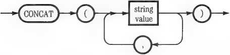
Thus CONCAT creates a new string out of a series of existing strings. Here are three examples:
FNAME ADDR3 := PARTNAME
CONCAT CFNAME, '.TEXT'); {Adds .TEXT to end of filename)
CONCAT (CITY, STATE, ZIP); (Assembles last line of address)
:■ CONCAT (PARTNAME, 's'); (Pluralizes part designation)
COPY accepts a string expression and two positive integer expressions with values in the range 1 to 255:
COPY (STRING, START, COUNT)
It returns a new string value which is a copy of STRING beginning at the START index number and extending for COUNT characters.
INSERT accepts a string variable identifier, a string expression, and a positive integer expression:
INSERT (SUBSTRING, STRING, START)
It inserts the value of SUBSTRING into the variable STRING, beginning at START. The first character of SUBSTRING becomes the START index character of the result, and the index numbers of all subsequent characters of STRING are increased by the value of START.
You can insert SUBSTRING at the end of STRING by using for START the expression LENGTH (STRING) +1.
DELETE accepts a string variable identifier and two positive integer expressions:
DELETE (STRING, START, COUNT)
It modifies the variable STRING by removing COUNT characters, beginning with the START index character. The length of STRING is reduced by the value of COUNT.
STR accepts an integer or long integer expression and a string variable identifier:
STR (NUMBER, STRING)
It assigns to STRING the value of a series of numeral characters representing the decimal value of NUMBER, up to 36 digits (the maximum size of a long integer). If NUMBER is negative, STRING starts with a minus sign; otherwise it starts with the most significant numeral.
Program Unit Required! The Program Unit LONGINTIO must be present in an accessible library at the time any program using the STR procedure is executed. LONGINTIO does not require a USES declaration, however. This Unit is originally supplied in the file SYSTEM.LIBRARY. For further information about libraries, see Chapter 13.
The string operations just described are powerful tools for manipulating text data. However, they are sensitive to bad parameter values and can easily cause program bugs or halts. You must observe these cautions when using them:
□ Do not try to use any of the string operations with string variables that do not yet have a value. LENGTH and POS will return meaningless numbers; other operations may cause program halts.
□ With COPY, INSERT, and DELETE, be careful that the value of START is a valid index number for STRING. In the case of INSERT, however, START may be 1 more than the length of STRING.
□ With CONCAT and INSERT, take care that the result is not longer than 255 characters, and that you are not trying to give a value to a string variable of inadequate dimension.
□ With COPY and DELETE, do not try to operate beyond the end of an actual string value. That is, do not let the sum of START and COUNT exceed LENGTH (STRING) + 1.
□ If you combine string operations into a single expression, analyze the intermediate strings that Pascal creates at each stage to make sure none of them violate the foregoing cautions.
When using POS, CONCAT, or INSERT, you may want to search for,
concatenate, or insert a single character. But you cannot use type CHAR
with string operations. There are two ways to proceed:
□ If the character is a constant, simply declare it with your other constants or write a character between single quotation marks in the source text.
□ If the character is the value of a CHAR expression (such as a CHAR variable), you must create a one-character string and then assign the character value to its first element. For example,
VAR S : STRING!11;
S 'x' j
SMI CHAR-EXPR;
NAME CONCAT CNAME, S):
{Declare string variable!
{Give string length of 1}
{Assign character value to string! {Use in string operation!
This converts the CHAR value of CHAR_EXPR into the value of the one-character string S.
Apple Pascal provides three operators for combining any two set variables or set constructors into a new set expression:
+ — •
These are the same symbols as Pascal uses for arithmetic operations, but they act differently on sets. The + symbol performs set union; the — symbol performs set difference; the * symbol performs set intersection. Sets can also be assigned and compared; see the sections “Assignments” and “Relational Operators” earlier in this chapter.
The union of two sets is the set formed by combining their members and eliminating duplicates.
The difference between two sets is the set of all members of the first that are not members of the second. In other words, it is the result of taking the common members away from the first set.
The intersection of two sets is the set containing only their common members.
Here are some illustrations of these operations in use:
A M, 2, 3, 4, 51;
A ♦ C - 11, 2, 3, 4, 5, 6, 7, 8, 9]
A — B - t1, 2]
A — C - A A * B - C3, 4, 5]
A * C • M {the null set!
Set values are stored in memory as bit patterns, each bit corresponding to the inclusion or exclusion of a specific set member. As a result, they can be conveniently manipulated by the techniques discussed earlier under “Bit Operations.” To interpret a set as a bit pattern, use the free union variant technique explained there under “Bit Interpretation of Structured Types.” For further information about the structure of set values in memory, see Appendix 3C.
Programmers familiar with machine languages sometimes complain that Pascal does not allow access to data bits. This is not true of Apple Pascal. There are a variety of techniques by which you can dissect any data value into its component bits. You can then manipulate the bits with a full complement of logical tools and reinterpret them as a new data value.
Every Pascal quantity ot scalar type resides in a single 16-bit word of memory. This fact, together with the type conversion functions ODD, CHR, and ORD described earlier, permits simple interpretation of scalar values as 16-bit patterns.
ORD converts any scalar quantity to type integer; ODD converts any integer value to a boolean value. Singly or together, they convert any scalar to type BOOLEAN without changing its value:
INTEGER to BOOLEAN: ODD (X)
Non-numerical scalar to BOOLEAN: ODD (ORD (X))
The result has the same bit pattern as the original; but now it can be manipulated by the logical operators NOT, AND, and OR. The bit pattern can be complemented, masked, or tested in various ways. Individual bits can be set or cleared. When the logical operations are completed, the result can be converted back to type INTEGER or CHAR:
BOOLEAN to INTEGER: ORD (X)
BOOLEAN to CHAR: CHR (ORD (X))
With nonscalar data values, particularly those that occupy several words in memory, you can translate them into bits by declaring a free union variant record. This technique was mentioned in “Free Union Variant Records” in Chapter 4. A typical application looks like this:
VAR MAGIC : RECORD CASE INTEGER OF
1 : (DATA : DTYPE);
2 : (BITS : PACKED ARRAY [0..bbl OF BOOLEAN);
3 : (WORDS : ARRAY [0..wwl OF BOOLEAN)
END;
Here DTYPE represents the data type to be interpreted as a bit pattern. The integer bb is one less than the number of bits in DTYPE; ww is one less than the number of its 16-bit words. When you have an expression EXPR of type DTYPE, you can assign its value to the appropriate variant field of MAGIC:
MAGIC.DATA :- EXPR;
You can then access the value of EXPR as single bits, by extracting the elements of MAGIC.BITS. For instance, MAGIC.BITS[13] will be TRUE if the 14th bit of the value of EXPR is a 1; FALSE if it is a 0. You can change the value of MAGIC.BITS by operating logically on its bit elements, and then use MAGIC.DATA as an expression of type DTYPE with the new value.
Or, you can access the value of EXPR as a sequence of 16-bit patterns by extracting the elements of MAGIC.WORDS. You can operate on these patterns logically, as described below under “Bit Pattern Logic.” You can then assign the resulting new patterns back to MAGIC.WORDS and use MAGIC.DATA as their DTYPE equivalent.
Although the logical operators NOT, AND, and OR nominally affect only the least significant bit of a boolean value, they actually operate on all the bits. Thus they can be used on the entire 16-bit patterns of data words when those words are typed as boolean.
Applying NOT to a bit pattern complements all the bits; it changes l’s to 0’s and 0’s to l’s.
The operator AND between two bit patterns lets you mask out certain bits. You create a fixed mask pattern by setting certain bits to 1; when combined with a data pattern using AND, only the data bits in those positions will “drop through” to the result. AND also lets you clear bits; those that don’t “drop through” are in effect set to 0.
The operator OR between two bit patterns lets you set bits. You create a fixed pattern in which certain bits are set to 1; when combined with a data pattern using OR, the data bits in those positions will be set to 1 in the result.
The exclusive-or operation between two bit patterns lets you determine if they are identical by checking whether the result is all 0’s. You can also use exclusive-or to complement selected bits. To apply this operation to booleans X and Y, write
(CX AND NOT Y> OR {NOT X AND Y>)
Here are some examples to illustrate the bit logic operations just described.
The difference between a lowercase and uppercase ASCII character lies in the status of bit 5 in its ASCII code value. If bit 5 is set to 1, the character is lowercase; if it is cleared to 0, it is uppercase. Let us see how we might manipulate this bit directly in the value of a CHAR variable C.
First we set the value of a boolean variable MASK so that it has a 1 in bit 5 and 0’s in all other bits:
MASK := ODD C32) ;
The integer constant 32 has a single 1, in the bit 5 position; the ODD function simply converts its type to BOOLEAN.
Now we can use MASK and the OR operator to set bit 5 to 1 in the CHAR variable C, thereby converting its value to lowercase, regardless of its present value:
C CHR CORD (MASK OR ODD CORD CC))));
In this assignment, the value of C is first converted from CHAR to BOOLEAN by the expression odd cord co>; the result is combined with MASK, using OR; and that result is converted back to CHAR by the expression chr cord c—>>.
Similarly, we can convert the value of C to uppercase. To do this we negate MASK, using NOT; this clears bit 5 to 0 and sets all the other bits to 1. We then use AND to clear bit 5 in the CHAR variable C:
C := CHR CORD CNOT MASK AND ODD CORD CC))));
The use of ODD and ORD is the same as in the previous example.
Finally, we can use an exclusive-or operation to change the value of bit 5 by complementing it. This converts uppercase to lowercase and vice versa. We use MASK in the exclusive-or expression given earlier:
C CHR CORD CCMASK AND NOT ODD CORD CC)))
OR CNOT MASK AND ODD CORD CC)))));
Whatever the value of bit 5 in the CHAR variable C, the exclusive-or operation with the single bit of MASK converts it to the opposite.
In writing Pascal source text, you will often want to nest and combine operations into complex expressions. The Compiler tolerates a virtually unlimited amount of this. However, when combining expressions you need to know the order in which they are going to be evaluated. Here it is:
1. First, all functions are called and their values returned.
2. Second, all instances of the NOT operator are executed.
3. Third, the operators *, /, DIV, MOD, and AND are executed. '
4. Fourth, the operators +, —, and OR are executed.
5. Finally, the relational operators =, <, >, <=, >=, <>, and IN are executed.
Pascal follows this scheme regardless of the types of data involved. In particular, it does not distinguish between using the operators +, —, and * for numerical expressions and for sets.
The foregoing sequence of evaluations is performed separately on each entire expression—that is, each expression set apart by parentheses or by inclusion in a different assignment statement, procedure call, or other Pascal statement. At each stage, the listed operations are performed in the order they are written in the source text—left to right, top to bottom. But in a given expression, all the operations at each stage are completed before any operations of the next stage are attempted.
The order of precedence of operations can make a difference in how your source text is interpreted. For example, the expression
A — B*C/D + E
will be interpreted as if you had written
A — CCB * C> / D > + E
because the * and / operators are applied before the + and — operators. Certain expressions will cause a Compiler error; for example:
A > B AND C < D
This is because Pascal tries to interpret it as
A > (B AND C) < D
which is an illegal construction.
Operations enclosed by parentheses in your source text are always evaluated separately. Therefore the simplest way to avoid problems with operation precedence is to use parentheses freely. They do not increase the size of the codefile or affect program execution speed. If you still prefer lean-looking source text, then study the order of precedence given above.
Several parts of this chapter contain warnings about exceeding the declared sizes of scalar subranges, arrays, and strings, or trying to refer to nonexistent array and string index numbers. Apple Pascal contains built-in safeguards to prevent you from generating meaningless data by such operations. Its remedy is the drastic one of terminating execution of your program.
However, you can suspend certain of these safeguards by including either or both of two Compiler options in your source text. {$R| is called the range check option. |$V| is called the varstring option. They are written like this:
f*R—} Turn off range checking
fSR + J Turn range checking back on
—> Turn off varstring checking f$V+> Turn varstring checking back on
Chapter 14 outlines the general rules for writing and using Compiler options.
{$R—} eliminates from the codefile all instructions to check
□ That values assigned to subrange variables are within their declared ranges;
□ That values assigned to string variables are not longer than their declared maximum lengths;
□ That values returned by expressions indexing strings and arrays are within the declared index ranges.
|$V—} operates only on string expressions that are variable parameters in procedure or function parameter lists. When compiling your program, Pascal normally checks to see that the declared maximum length of any variable string parameter inside any procedure or function is not longer than the declared maximum length of the corresponding string variable outside. This automatic safeguard prevents the procedure or function from altering memory beyond the end of the outside variable. j$V—} lets you suspend this feature. Variable parameters are discussed in Chapter 8.
If varstring checking |$V| is suspended and range checking ]$R| is still in force, then |$R[ checks only operations on the string parameter inside the procedure or function; it does not check their effect on the variable outside.
▲Warning
When you turn off range checking, you assume the responsibility of seeing that your program does not violate range limits. If it does, it may destroy adjacent data in memory.
Program Controls
Chapter 7
Every Pascal block consists of a series of statements. Four kinds of Pascal statements are discussed elsewhere in this book:
□ The compound statement BEGIN..END is explained in Chapter 2 under “Statement Syntax.”
□ The with statement WITH..DO is discussed in Chapter 4 under “The RECORD Type.”
d The assignment statement (using the symbol :=) is described in Chapter 6, under “Assignments.”
□ The procedure call is covered in Chapter 8, “Procedures and Functions.”
This chapter discusses the other kinds of Pascal statements, the ones you use to control the flow of program execution. There are six of them:
□ The for statement FOR...TO...DO
□ The while statement WHILE...D0
□ The repeat statement REPEAT...UNTIL d The if statement IF...THEN...ELSE
□ The case statement CASE...OF...OTHERWISE o The goto statement GOTO...
The HALT and EXIT procedures are also described at the end of this chapter.
Pascal provides three ways to execute the same program section repeatedly—the process called “looping” in lower-level languages. But Pascal sets up the loop and exit routines for you; all you need to do is tell it the conditions for repetition. This is how the repetition statements work:
□ The for statement FOR...TO...DO executes the same program section a given number of times. The number of executions may be constant or may be determined by the result of any scalar calculation.
□ The while statement WHILE...D0 executes the same program section repeatedly as long as a given boolean expression is TRUE. It evaluates the boolean control before each pass, including the first time; hence it can bypass the program section altogether.
□ The repeat statement REPEAT...UNTIL also executes the same program section repeatedly as long as a given boolean expression is TRUE. But it evaluates the boolean control after each pass; hence it executes the program section at least once.
The FOR statement requires a previously declared variable of scalar type. It repeatedly increments or decrements the value of this variable, executing a section of your program each time. You define the starting and ending scalar values (which may be constant or calculated), and whether the FOR statement is to count upward or downward:
|
~FOR 'y— |
| identifier —►{:=)—► expression —^ |
|
_1 | |
|
r *-- | |
|
s-\ To J- |
f—- expression -*{ DO )—► statement |
|
'--►(downto)—' | |
The identifier is the name of a scalar variable—integer, CHAR, boolean, subrange, or user-defined. The FOR statement gives it a value before each pass through the program section it controls. Note that the value of this variable is accessible in the controlled section.
The two expressions must have the same scalar type as the variable. They may be simple constants or variables, or complex expressions containing operators and functions.
You write TO or DOWNTO, depending on whether the ordinality of the value of the second expression is higher or lower than the ordinality of the value of the first expression.
The statement controlled by the FOR statement can be a single other statement (such as an assignment or a procedure call), or a compound statement containing a lot of text.
Compound Statements: Most of the time, you will use the control statements described in this chapter to control compound statements. A compound statement is simply a sequence of statements separated by semicolons and enclosed between BEGIN and END. For further information see Chapter 2, “Statement Syntax.”
Here is an example of a FOR statement controlling a compound statement:
VAR N : INTEGER;
QUADBAG : ARRAY C1
FOR N 1 TO 99 DO BEGIN
QUADBAG INI SQR WRITELN (QUADBAG I END;
(Control variable!
.991 OF INTEGER; (Array to hold squares!
(Fill array with squares! (N); (of numbers from 1 to 99! 1> (and display each result!
By using variables or arithmetic expressions to limit the FOR statement,
instead of the constants 1 and 99, you could let your program determine
which portion of the array to fill up.
When executing a FOR statement, Pascal performs these steps:
1. It calculates the value of the intial expression, just once, and assigns this value to the control variable.
2. It calculates the value of the limit expression, just once.
3. It tests to make sure that the ordinality of the two expressions goes in the right direction; otherwise it exits the statement immediately.
4. It executes the controlled statement.
5. It increments or decrements the control variable, depending on whether the FOR statement is written as TO or DOWNTO.
6. It tests the value of the control variable against the limit value and either goes back to Step 4 or exits.
□ The control variable must be a simple variable; it cannot be an array or string element, a record field, or a dynamic variable.
□ If the control variable is a subrange type or user-defined scalar, it must be capable of accepting the initial and limit values as well as all values with an ordinality in between.
□ Do not try to change the value of the control variable from within the FOR statement; doing so can have unpredictable results.
□ Do not include the control variable in either of the limit expressions.
□ After the FOR statement is finished, the value of the control variable may be unspecified.
□ The limit expressions are evaluated just once, before the first pass. Changing them from within the FOR statement will not alter its behavior.
□ If the limit expressions have equal value, the FOR statement will execute its controlled statement once.
□ If the limit values are backwards, that is, high end less than low end, the FOR statement will be skipped.
The WHILE statement evaluates a boolean expression and then executes a statement if the boolean value is TRUE. It repeats the execution, evaluating the boolean before each pass, until the boolean turns FALSE. You write it like this:
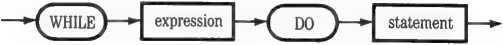
The controlling expression must have boolean type; usually it is formed out of relational and logical operators.
The statement controlled by WHILE...DO may be either a single statement or a compound BE6IN...END construction containing other statements.
Repetition Statements
Here is an example of Pascal text that prompts a user to enter a value for the integer variable N. If the value entered is outside a certain range, a WHILE statement notifies the user and prompts another entry:
WRITE ('Enter a number between 1 and 8:
READLN (N);
WHILE (N < 1) OR (N > 8) DO BEGIN
WRITELN ('Number must be between 1 and 8 !');
WRITE ('Try again. Enter a number between 1 and 8: READLN (N)
END;
WHILE evaluates the response N to the first prompt. If N is in the desired range, WHILE never executes its compound statement and the program goes on. If N is out of range, however, WHILE executes the statements between BEGIN and END. It executes them repeatedly until the user cooperates. When program execution finally leaves this sequence, the value of N is guaranteed to be within range.
The REPEAT statement behaves much like the WHILE statement, but it evaluates its boolean expression after executing the statements it controls. It looks like this: —^REPEAT )-
Note also that REPEAT and UNTIL create their own compound out of the statements they control; you do not need to use BEGIN and END. It is not unusual for a program to have a lot of text between REPEAT and UNTIL.
The controlling expression must have boolean type usually it is formed out of relational and logical operators.
Here is an example of a REPEAT statement used to provide a user’s exit from a large recirculating section of program execution:
REPEAT
... program interacts with user ...
WRITE {'Enter Q to Q(uit, <space> to go on:
READ CENTRY)
UNTIL ENTRY IN I'Q'.'q'l;
The boolean expression following UNTIL determines whether the CHAR value ENTRY provided by the user is in the set [Q,q], If it is, program execution drops out of the repeated section; if not, it starts over again at REPEAT. The sequence
REPEAT...UNTIL FALSE
would provide an endless program loop.
Be Careful: With both WHILE and REPEAT, take care that the program statements they control include some practical means either to change the value of the boolean control to TRUE, or to escape via a GOTO statement or EXIT call. Otherwise your program can never terminate.
The three repetition statements just discussed each have specific advantages and disadvantages in any given programming situation. Here are some of them. .
The FOR statement automatically keeps track of which repetition it is executing, by changing the value of its control variable at the end of each pass. Thus you can use the control value to modify what your program does each time. For example, the control value can cause the repeated section to
□ Select a different element in an array each time by changing the index number;
□ Call a different procedure each time by serving as the selector value for the CASE statement (described below);
□ Perform a different calculation each time by becoming a factor in an expression.
On the other hand, the FOR statement is somewhat inflexible. You cannot change the number of repetitions once it has started.
The WHILE statement and REPEAT statement allow better control of the conditions under which they stop executing. The main difference between them is that the WHILE statement need not be executed at all, whereas the REPEAT statement executes at least once. Thus the WHILE statement is most useful when the condition controlling its execution may have already been satisfied; the REPEAT statement is most useful when the condition can be satisfied only by executing the statement.
The WHILE statement should also be used in cases where executing it under the wrong conditions could be detrimental, because it evaluates its control before each pass.
Pascal provides two ways for your program to choose what to do next—the process called “branching” in lower-level languages:
□ The if statement IF...THEN...ELSE evaluates a boolean expression and executes a controlled statement only if it is TRUE. It can also be written to execute a second statement if the boolean is FALSE.
□ The case statement CASE...OF...OTHERWISE executes one statement from a list, depending on the value of a scalar control expression.
The IF statement executes a single controlled statement (which may be a compound BEGIN...END construction) if a boolean expression is TRUE. You can add an optional ELSE part on the end that executes another (possibly compound) statement if it is FALSE:
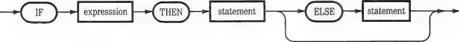
The controlling expression between IF and THEN must have boolean type; usually it is formed out of relational and logical operators.
Either or both controlled statements may be single statements or compound BEGIN...END constructions containing other statements.
Here are are two examples of IF statements; the second one contains an
ELSE part:
IF ANGLE > 180 THEN
ANGLE 360 — ANGLE;
IF BALANCE - 0 THEN
WRITELN ('Job completed')
ELSE
BEGIN
COUNT := COUNT + 1;
WRITELN C'Processinq...')
END;
Be Careful: Note that in the second example there is no semicolon before ELSE, because IF, THEN, and ELSE are all parts of one statement. A semicolon there will cause a Compiler error. The only place you need to put a semicolon in an IF statement is within a compound BEGIN...END construction.
When executing an IF statement, Pascal performs these steps:
1. It evaluates the boolean expression.
2. If its value is TRUE, Pascal executes the statement following THEN and exits the IF statement.
3. If its value is FALSE and there is a statement after ELSE, Pascal executes it; otherwise it exits the IF statement.
In any IF statement, the statement following the word ELSE can also be an
IF statement and can contain its own ELSE clause. Thus an IF statement
can be written to take different actions for each of several mutually exclusive conditions:
WRITEC'Enter command S,D,P,Q,E -> ');
READLNCCGMM);
IF COMM - 'S' THEN SHUFFLEDECK ELSE
IF COMM - 'D' THEN DEALCARDS ELSE
IF COMM = 'P' THEN DISPLAYPOI NTS ELSE
IF COMM IN I'Q', 'E'l THEN QUIT
Pascal will evaluate boolean expressions only until a true one is found. You get maximum execution speed if you put the most probable conditions first.
The statement following the word THEN can also be a nested IF statement, but this can create confusing source text. Be careful with the following kind of construction:
IF A-B THEN IF C-D THEN
WRITELN C'A=B and C=D'>
ELSE
WRITELN C'A-B but CoD')
The ELSE matches the last preceding IF...THEN, as indicated by the indentation. If you add another ELSE it will match the first IF...THEN:
IF A-B THEN IF C-D THEN
WRITELN C'A-B and C-D')
ELSE
WRITELN C'A-B but CoD')
ELSE
WRITELN C'AoB')
The above statement can be clarified, without changing its meaning, by making the nested statement a compound BEGIN...END construction:
IF A=B THEN BEGIN
IF C-D THEN
WRITELN ( ' A=B and C-D'>
ELSE
WRITELN C'A-B but CoD')
END
ELSE
WRITELN ('AoB')
Now it is obvious which ELSE matches which THEN.
Here is an example of a programming situation in which nested IF statements are particularly useful. Suppose we wish to execute a procedure PROCESS only if a string S begins with a dollar sign. But S may be a zero length string. Therefore we must measure its length before trying to reference its first character. An approach such as the following will not work:
IF (LENGTH CS> > 0) AND (SI1I - '$') THEN PROCESS (S)j
The problem is that Pascal evaluates both parts of the boolean expression created by AND before deciding whether or not to call PROCESS. If S has zero length, referencing S[l] will cause a program halt. The solution is to use a nested IF statement:
IF LENGTH CS) > 0 THEN IF St1I - THEN PROCESS (S);
Now the reference to S[l] is executed only if S has a first element.
The CASE statement lets you write a list of alternative statements to be executed, associating a scalar constant with each one. When executing the CASE statement, Pascal evaluates a controlling scalar expression; if its value matches one of the constants, Pascal executes the corresponding statement. You can add an optional OTHERWISE part on the end that
executes an additional statement if nothing was selected from the list. The CASE statement follows this syntax:
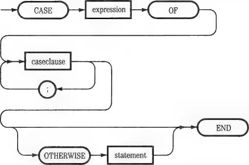
The case clause shown in this diagram has the following form:
constant
•GH
statement
o
The controlling expression may have any scalar type—integer, CHAR, boolean, subrange, or user-defined. It should be capable of returning the value of any of the constants in the case clause.
The constants in the case clause must have the same scalar type as the controlling expression.
Any of the controlled statements in the case clause or the default statement following OTHERWISE may be single statements or compound BE6IN...END constructions containing other statements.
The easiest way to understand the CASE statement is to look at an example.
It accomplishes the same job as the nested IF...THEN construction described in the last section, but more cleanly:
WRITE {'Enter command S,D,P,Q,E -> ');
READLN (COMM);
CASE COMM OF
'S': SHUFFLEDECK;
'D': DEALCARDS;
'P': DISPLAYPOINTS;
'Q'.'E': QUIT END;
If you used a nested IF statement and tried to ahow for lowercase letter inputs, the result would be unwieldy. With a CASE statement this enhancement is easy. You can also add an OTHERWISE clause to call a procedure named HELP when the user enters an unlisted command:
WRITE {'Enter command S,D,P,Q,E -> ');
READLN (COMM);
CASE COMM OF
'S','s': SHUFFLEDECK;
'D','d': DEALCARDS;
'P'.'p': DISPLAYPOINTS;
'Q'.'E','q','e': QUIT
OTHERWISE HELP END;
Caution: When using integer constants in a CASE statement, be careful not to select too large a spread of values. For each CASE statement, the Compiler constructs a table containing an entry for every possible value between the lowest and the highest case selector. For example, if you have only two case selectors, 1 and 100, the Compiler will build a table with 100 entries. This is wasteful and may cause a Compiler error. In such cases, use IF statements instead.
The three repetition statements and two conditional statements described in this chapter, along with assignments and procedure calls, are flexible enough to handle almost all programming jobs. Occasionally, however, you may encounter a situation that demands immediate transfer or suspension of program execution. For these rare cases, Pascal provides three additional tools:
□ The GOTO statement, which transfers control directly from one program statement to another.
□ The EXIT procedure, which terminates any procedure, function, or whole program.
□ The HALT procedure, which stops program execution then and there.
Caution: GOTO, EXIT, and HALT are powerful, absolute directives. They bypass many of the safeguards built into Pascal. Use them carefully, and only as a last resort.
GOTO transfers program execution to the beginning of any statement that is within the same procedure, function, or main program. Before you can use any GOTO statement you must do three things:
□ Permit GOTO statement execution in your program by writing the Compiler option <*g+> or c#$g+*j once before your first use of GOTO. For an explanation of Compiler options, see Part II, Chapter 5.
□ Declare a label for every GOTO destination in your program. Each label is a number of 1 to 4 digits. The label declaration consists of the reserved word LABEL followed by one or more label numbers, separated by commas. It must appear before any other declarations in a block.
□ Write one of the declared destination labels, followed by a colon, in front of the statement that is the destination for each GOTO statement.
The GOTO statement itself is written like this:
The unsigned integer is the destination label; it must not exceed four decimal digits.
Here is an example of a GOTO statement at work:
PROGRAM JUMP;
<$G+>
LABEL 1234;
VAR N : INTEGER;
BEGIN
1234: UIRITE C'Give me a number: ');
READLN (N);
IF N - 0 THEN GOTO 1234;
...more program...
END.
Here the GOTO statement repeats the prompt message until the user enters a nonzero number. Note that this job could have been done better with a WHILE statement. It is difficult to find Pascal programming situations where GOTO is the only recourse. As a result, the use of GOTO in Pascal is often regarded as a sign of sloppy programming.
These rules and cautions apply to GOTO statements:
□ You can jump only within a block—that is, within the body of a procedure or function, or from one part of a main program to another.
You cannot jump into or out of a procedure or function.
□ The destination of any GOTO statement must be the beginning of a statement.
□ Jumping to a statement that is within the structure of another statement (except within a compound statement that forms a program block) can have undefined effects, although the Compiler will not indicate an error.
Thus every GOTO destination should be the beginning of a statement that is at the top level of nesting in a program block.
Sometimes it is desirable to be able to leave a program block without further ado. EXIT lets you do this. It is written as
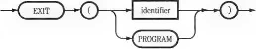
The identifier is the name of a procedure or function, or the name of the whole program. When exiting the whole program, you can also use the word PROGRAM instead of its name.
EXIT transfers program control to the end of the specified block, just as if it had reached its end normally. It closes all open files, but otherwise does not try to complete any of the program functions in the block. Open and closed files are explained in Chapter 10. Here is an example of EXIT as an escape route from a procedure:
PROCEDURE GET-NUMBER;
BEGIN
WRITE ('Enter a number 10 to quit!:
READLN (N);
IF N = 0 THEN EXIT (GET_NUMBER);
N : = 100 DIV N;
... more procedure ...
END;
Here the EXIT procedure provides a quick way to leave the procedure, and also assures that your program will not try to divide by 0 (which would cause a run-time error).
The EXIT procedure is seldom essential in a program. If you use it, here are
some things to remember:
□ If you exit a function before assigning a value to its identifier, the function will return an undefined value.
□ When writing an EXIT procedure in a nested procedure or function, you can specify any enclosing procedure or function, or the whole program. Pascal will follow the trail of procedure or function calls up to the one specified, exiting each one regardless of whether or not it has completed its execution.
□ If an EXIT procedure specifies a recursive procedure or function, then the most recent incarnation is exited; earlier incarnations will have completed their execution normally. Recursion is discussed in Chapter 8.
The HALT procedure takes no parameters and is called with just the word HALT. It brings program execution to an immediate stop. The monitor screen displays the message
Program interrupted by user Press <space> to continue
When the user presses the SPACE bar, the Pascal system reinitializes itself and displays the Command line. The principal use of HALT is for debugging programs.
Chapter 8
Procedures and Functions
Procedures and functions are the subroutines of Pascal. Each procedure or function is a distinct section of source text, contained within a program, that is executed when the program calls it.
A procedure or function can be thought of as a subprogram nested in the main program (or within another procedure or function). Just as you define a Pascal program by writing it in text form, you define a procedure by writing a procedure definition into the text of the program. If you study the syntax diagrams further on in this chapter you can see that a procedure definition, like a program, contains one block. The block may contain other procedure definitions. Thus procedures (and functions) can be freely nested within each other. Indeed, for purposes of program execution the system considers the program itself to be just the outermost procedure of a nested structure of procedures and functions.
A procedure is called by means of a procedure call statement, which refers to the procedure by name and supplies values for any parameters belonging to the procedure. Parameters are a special kind of variable used to pass information to the procedure when it is called; they are discussed in detail below.
A function is similar to a procedure except that it is called by means of a function reference instead of a call statement. The function reference appears in an expression; it references the function by name and supplies any parameters required by the function. The function returns a value; that is, it computes a value, and this value replaces the function reference when the expression is evaluated.
Procedures and functions are defined (written) after a block’s variable declarations, if any, and before its compound statement.
To define a procedure you write the word PROCEDURE followed by its name, an optional parameter list in parentheses, a semicolon, and a block terminating with a semicolon:
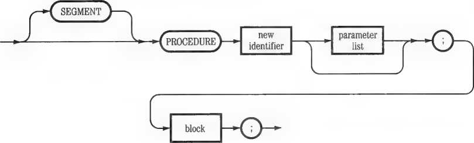
To define a function you write the word FUNCTION followed by its name, an optional parameter list in parentheses, a colon, a previously declared identifier for the type of data the function returns, a semicolon, and a block terminating with a semicolon:
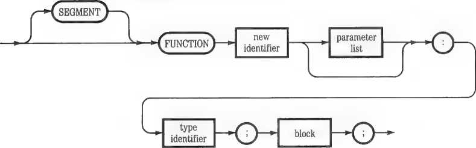
The new identifier following the word PROCEDURE or FUNCTION is the name by which the procedure or function is going to be called by other parts of your program.
The block of a procedure or function may contain its own declarations of labels, constants, types, and variables. They will be valid for that routine and any routines nested inside it. Blocks are defined in Chapter 2.
In both cases, the parameter list is optional. If used, it consists of one or more parameter declarations separated by semicolons and enclosed in parentheses. Each parameter declaration consists of one or more variable identifiers separated by commas, a colon, and the identifier of a previously declared data type. The optional word VAR identifies variable parameters (explained below). The parameter list is written this way:
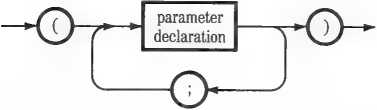
Each parameter declaration is written this way:
|
new | |||||
|
identifier |
> |
’ V | |||
|
'^Cvar\-' |
-TV |
> | |||
O*
type
identifier
The new identifiers in the parameter list are the names by which parameters are to be known inside the procedure or function. Note that these names are usually different from the names of variables or constants passed from the calling program when the procedure or function is called.
The word VAR precedes variable parameters. Parameters without VAR are value parameters. This distinction is explained below.
Here are some sample outlines of procedure and function definitions:
PROCEDURE ALPHA CHI, LO : REAL; FACTOR : INTEGER)j BEGIN
... statements . . .
END;
FUNCTION BETA (HI, LO : REAL; VAR ERROR : BOOLEAN) : INTEGER;
BEGIN
... statements ...
BETA : = ...some expression...
... statements ...
END;
PROCEDURE GAMMA;
BEGIN
... statements . . .
END;
Procedure ALPHA accepts two real values from the calling program, identifying them internally as HI and LO. It also accepts an integer, FACTOR.
Function BETA also accepts two real values; in addition it accepts a variable parameter of type boolean, which it calls ERROR, and returns an integer value when it is called.
Procedure GAMMA has no parameters. It simply executes a series of statements when called.
Here are some important points to note about these examples:
□ Both ALPHA and BETA use the identifiers HI and LO. But because these identifiers are contained in parameter declarations, their scopes are limited. ALPHA’S HI and LO are different from BETA’S HI and LO. The complete rules of scope for identifiers are given later in this chapter.
□ The parameter ERROR in BETA is declared as a VAR parameter. This means that BETA will be able to change its value in the calling program, as explained below under “Variable and Value Parameters.”
□ BETA, because it is a function, contains an assignment statement setting the value of BETA itself. Without this, BETA would return an undefined value.
In writing procedure and function definitions you must follow these rules:
□ All identifier names must be composed according to the rules given in Chapter 2 under “Identifiers.”
□ Within a given definition, all identifier names must be unique. However, they may be the same as identifiers used outside the routine. In case of ambiguity, the procedure or function assumes that the ambiguous identifier refers to its own variables.
□ The order in which identifiers appear in the parameter list is the order in which these parameters must be supplied by the calling program (see below, "Calling Procedures and Functions”).
□ All parameter types must either be standard Pascal types or user-defined types declared in the calling program; you cannot introduce a new type in a procedure or function heading.
Special Note About Long Integers: The normal typing of a long integer variable won’t work in a parameter list; the Compiler thinks it is a new type. You must declare a new identifier for the long integer type in the calling program. For example:
TYPE LONG = INTEGER!18];
PROCEDURE CALCULATE (AMOUNT : LONG);
Here are the rules for choosing data types in procedure and function definitions:
□ Variable parameters (preceded by VAR) may have any type, including file types, BYTESTREAM, and WORDSTREAM.
□ Value parameters (not preceded by VAR) may have any type except file types, BYTESTREAM, and WORDSTREAM.
□ The type of the value returned by a function as a whole is limited to these choices: INTEGER, REAL, BOOLEAN, CHAR, subranges of INTEGER and CHAR, user-defined scalar types, and pointer types. However, a function that returns a value of type pointer can point to a dynamic variable of any base type except a file type, BYTESTREAM, or WORDSTREAM.
Remember: If you fail to set the value of a function within its body, it will return an undefined value when called.
Declaring a parameter in a procedure or function definition establishes it as a variable within that routine. It has the same effect as making a variable declaration in the routine’s body.
When a procedure or function is called, the statement that calls it passes values to it. This means that it supplies a variable reference or other expression of its own for each parameter. Thus each parameter in the called routine is set initially to an externally supplied value.
While the routine is executing, it may simply accept a parameter’s initial value, using it as a datum for other actions; or it may change it. When a procedure or function changes the value of one of its parameters, this may or may not change the value of the outside variable to which the parameter was originally set. It depends on whether you declared the parameter as a variable parameter or as a value parameter in the procedure or function definition.
To declare a variable parameter, you write VAR in front of its declaration in the procedure or function definition. Every VAR parameter receives an initial value from the calling program. But if the procedure or function changes that value, the VAR parameter “reaches out” into the calling program, changing the value of the variable stored there that supplied its initial setting.
To declare a value parameter, omit VAR. Value parameters also receive data from the calling program; but when the routine changes their values internally there is no outside effect.
A value parameter may receive data from any kind of expression. A variable parameter may receive data only from a variable.
Other Terminology: Variable parameters are often said to be “passed by reference”; value parameters “passed by value.” This refers to the way the calling program sends their values to the procedure or function. It passes the memory address of variable parameters and the actual value of value parameters. With EXTERNAL procedures and functions, value parameters of type STRING, RECORD, and ARRAY are also passed by reference, as if they were variable parameters. See Chapter 9 for a discussion of EXTERNAL routines.
A procedure or function is called by simply writing its identifier in the source text, followed by its parameter list (if it has one) in parentheses. The parameters are separated by commas:
identifier
expression
<>>
o
The identifier (or at least the first eight characters thereof) must be the same as the identifier used in the procedure or function definition.
The parameter list in a procedure or function call contains the same number of parameters as were listed in the procedure or function definition. Those in the definition are called formal parameters; those in the calling
Calling Procedures and Functions
statement, actual or source parameters. The values of the actual parameters are said to be passed to the formal parameters as part of the call.
The order and number of actual parameters in the call must match the order and number of formal parameters in the definition. The actual parameters specified in any procedure or function call must follow these rules:
□ Each actual parameter must have the same type as the corresponding formal parameter. Subrange types are equivalent to their base types for this purpose.
□ There are two exceptions to the rule just stated. The formal variable
. parameter types BYTESTREAM and WORDSTREAM accept a variety of
actual parameter types, as explained in Chapter 4. And you can write EXTERNAL procedures and functions with untyped formal variable parameters, as described in Chapter 9.
□ Actual variable parameters must be variables. They cannot be constants or complex expressions. They also cannot be elements of packed variables.
□ The value of any actual string variable may be passed to any formal variable string parameter, regardless of length. However, if the declared maximum length of the formal parameter is longer than the declared maximum length of the actual parameter, you will get a Compiler error. You can avoid this situation by suspending {$V} range checking.
□ If the value of an actual parameter exceeds the range of a formal parameter (for instance, because the formal parameter is a subrange type), you will get an execution error unless you have suspended {$R} range checking. Range checking is discussed at the end of Chapter 6.
Here are samples of calls corresponding to the procedure and function examples given earlier in this chapter. The definition headings are repeated, followed by the calls:
PROCEDURE ALPHA CHI, LO : REAL; FACTOR : INTEGER);
FUNCTION BETA CHI, LO : REAL; VAR ERROR : BOOLEAN) : INTEGER;
PROCEDURE GAMMA;
ALPHA CUPLIMIT, DNLIMIT, CMULT • 104) ♦ 3);
MULT 2 • BETA CUPLIMIT/2, DNLIMIT/2, FLAG);
GAMMA;
The calls to ALPHA and GAMMA are statements; they could either be executed alone, as shown here, or included in other statements. In the call to ALPHA, the two real variables UPLIMIT and DNLIMIT are the actual parameters whose values are passed to the formal parameters HI and LO. The expression (MULT * 104) + 3 passes an integer value to the formal parameter FACTOR.
The call to BETA is an expression that forms part of an assignment statement. Here HI and LO receive the values produced by dividing UPLIMIT and DNLIMIT by 2. BETA sets the boolean value of FLAG in the calling program by setting the value of its own formal parameter ERROR; it can do this because ERROR is declared as a variable parameter. The integer value returned by BETA is multiplied by 2 to create the value assigned to MULT. Note that the whole righthand side of this assignment statement could have been substituted for MULT in the call to ALPHA.
The procedure call statement that calls GAMMA consists of nothing but GAMMA’S identifier.
Identifiers are the names of programs and Program Units, constants, types, variables, and procedures and functions, both built-in and user-defined. Built-in identifiers are also called predefined; there is a list of them in Appendix 3F, Table 2. You create user-defined identifiers when writing program and Unit headings; constant, type, and variable declarations; and procedure and function definitions, including their parameter declarations.
The act that establishes an identifier also gives it a discrete scope—an area of source text in which the Compiler understands it as you intended. If an identifier is used outside its scope, the Compiler may handle it incorrectly or refuse to accept it entirely. An identifier whose scope is confined to a single block is called local; if it extends over more than one block it is called global. Blocks are defined in Chapter 2.
Under certain conditions, identifiers may be redefined; that is, an existing identifier may be given a new meaning. You can even redefine the predefined identifiers of built-in operations. Thus in a single program a given identifier name may be used in different places with entirely different meanings, each meaning having its own scope.
Here are the rules governing the redefinition and scope of identifiers:
□ At the outset, all predefined identifiers are global for all program blocks.
□ Any predefined identifier may be redefined anywhere, becoming a user-defined identifier.
□ User-defined identifiers have local meaning in the block in which they are defined, and global meaning in blocks at lower nesting levels.
□ User-defined identifiers are meaningless in blocks at higher nesting levels.
□ User-defined identifiers may be redefined where they have global meaning, but not where they have local meaning. In other words, they may be redefined in nested blocks but may not be defined twice in the same block.
□ If a predefined identifier has been redefined, its original meaning is automatically restored outside the scope of the new definition.
For an example of how all this works, consider the program structure shown below, where Procedures ENGINE and TRUNK are nested within Program AUTO, and Procedure JACK is nested within Procedure TRUNK:
PROGRAM AUTO;
VAR METAL : REAL;
PLASTIC ! INTEGER ;
PROCEDURE ENGINE;
VAR METAL s REAL;
BEGIN
... Statements of procedure ENGINE...
END; {end of ENGINE!
PROCEDURE TRUNK;
VAR METAL : BOOLEAN;
PLASTIC : CHAR;
PROCEDURE JACK;
VAR METAL : INTEGER;
BEGIN
... Statements of procedure JACK...
END; {end of JACK!
BEGIN
... Statements of procedure TRUNK...
END; {end of TRUNK!
BEGIN
... Statements of Program AUTO...
END. {end of AUTO!
The identifiers METAL and PLASTIC are declared and redeclared at various points in the program. What is the scope of each variable shown in the diagram?
□ The real variable METAL declared in the main program is known throughout the main program, except that it is not known anywhere within procedures ENGINE or TRUNK because the identifier METAL is redeclared in those procedures.
□ The integer variable PLASTIC declared in the main program is known throughout the main program, except that it is not known anywhere within TRUNK because the identifier PLASTIC is redeclared in that procedure. It is also unknown in JACK because JACK is nested in TRUNK.
□ The real variable METAL declared in procedure ENGINE is known throughout procedure ENGINE.
□ The boolean variable METAL declared in procedure TRUNK is known throughout procedure TRUNK, except that it is not known anywhere within procedure JACK because the identifier METAL is redeclared in that procedure.
□ The char variable PLASTIC declared in procedure TRUNK is known throughout procedures TRUNK and JACK.
□ The integer variable METAL declared in procedure JACK is known throughout procedure JACK.
The Compiler imposes certain limits on the size of any single block, and the number of levels in which you can nest blocks. Here “size” refers to the number of bytes in the codefile generated by the Compiler.
Block nesting is restricted to a maximum of 8 levels, counting the whole program as one level.
The size of a given block is difficult to judge just by looking at its source text. Here are the actual rules:
□ The total number of procedures and functions may not exceed 254 in any segment. A program is one segment; other kinds of segments are described in Chapter 15.
□ The total compiled code for any single block (program, Program Unit, procedure, or function) may not exceed 1999 bytes.
When a block of your source text is too long, the Compiler will stop with a “procedure too long” message. If that happens, try this solution. Remove some statements from the offending routine and set them up as a new procedure. Then call the new procedure from the point where the statements were removed. This usually solves the problem; if it doesn’t, see the suggestions in Chapter 15, “Large Program Management.”
You can convert any user-defined procedure or function into a segment procedure or function by writing the word SEGMENT in front of PROCEDURE or FUNCTION; for example:
SEGMENT PROCEDURE ALPHA (HI, LO : REAL; FACTOR : INTEGER);
You then define and call it as before. When your program is executed, SEGMENT routines are not loaded into memory at the outset. Instead, each one is loaded every time it is called and its memory space is released as soon as its execution is completed. This process conserves memory but slows down program execution. It is one of the large program management techniques discussed in Chapter 15.
A forward procedure or function is one in which the heading is separated from the program block. You write the heading normally, but add the word FORWARD instead of the block. Later in the program you write the block, preceded by the word PROCEDURE or FUNCTION and the identifier. You omit the parameter list the second time. For example:
FUNCTION BETA CHI, LO : REAL; VAR ERROR : BOOLEAN) INTEGER;
FORWARD;
... other program text ...
FUNCTION BETA;
... block of function ...
After you have written its heading you can call the procedure or function, even though it is not fully defined. This technique permits indirect recursion (see below); it allows two or more routines to call each other.
Recursion occurs when a procedure or function is called before it finishes executing its program block. The case where a routine calls itself is direct recursion; two or more routines calling each other in a cycle is indirect recursion A full discussion of recursion is beyond the scope of this manual; here are just a few sample outlines:
FUNCTION ZETA (FACTOR : BEGIN
. . . program text . . IF N <> 0 THEN N := . .. program text .. END;
INTEGER) : INTEGER;
ZETA (N); (direct recursion; ZETA calls itself)
FUNCTION IOTA (FACTOR :
PROCEDURE THETA;
BEGIN
... program text . . N IOTA (N);
.. . program text .. END;
FUNCTION IOTA;
BEGIN
... program text . . IF N > 0 THEN THETA ... program text . . END;
INTEGER) ; INTEGER; FORWARD;
(IOTA defined as FORWARD, so THETA) (can call it )
(indirect recursion: IOTA and THETA) (call each other )
You can also write chains of indirect recursion in which (for example) A calls B, B calls C, and C calls A. At least one routine in such a chain must be written as FORWARD.
Each time a routine is called recursively, Pascal creates a new incarnation of it. An activation record is placed on the program stack and memory space is reserved for any variables or parameters declared within the routine. Activation records are described in Part IV of this manual, Chapter 3.
These incarnations can pile up indefinitely, until the recursion terminates or the machine runs out of stack or memory space. Thus the following cautions apply to writing recursive program text:
□ There must always be a route by which the recursion terminates, either by ceasing recursive calls or by using the EXIT procedure described in Chapter 7.
□ The maximum possible number of incarnations before recursion terminates must not exceed the capacity of the program stack to hold activation records.
□ The available data memory must be large enough to hold the values of all variables created by the maximum possible number of incarnations.
A more complex example of recursion is given under “Binary Tree Construction” in Chapter 16.
III-139
Recursion
Chapter 9
Assembly-Language Routines
With Apple Pascal, you are not limited to writing programs in the Pascal language. You can write programs in 6502 assembly language, and then execute them in a Pascal environment. In particular, you can write 6502 assembly-language procedures and functions that your Pascal program will accept and execute exactly as if they had been written in Pascal.
Note to the Reader: This chapter assumes that you are already familiar with the 6502 assembly language. Nothing in here is necessary for your understanding of Pascal. So if you’re not interested in 6502 programming, you can skip to the next chapter.
The 6502 assembly language is the language used by the Apple II series microprocessor. It is an 8-bit machine language with both decimal and binary arithmetic modes. It is described in more detail in Part II of this manual, Chapter 6. Its instruction set is summarized in Appendix 3E.
To incorporate assembly-language routines into your Pascal program you first write the 6502 source text in a four-column format, using the Pascal Editor. The four columns are occupied by labels, instruction mnemonics and Assembler directives, operands, and comments. The routines to be executed must be delimited by the directives .PROC or .FUNC at the begining of each procedure or function, and .END at the end of the whole file.
When your 6502 source text is complete, you execute the Apple Pascal Assembler program. It uses a file called 6502.OPCODES to interpret your source text, producing a codefile in 6502 machine language. You then execute the Apple Pascal Linker program to link the 6502 codefile into your Pascal codefile. The combined result is a new Pascal codefile, incorporating both 6502 code and P-code, which is ready to be executed.
The processes of assembling and linking are fully described in Part II, Chapters 6 and 7. The structure of the resulting file of combined P-code and 6502 code is described in Part IV, Chapter 2.
To call a 6502 routine from a Pascal program, simply define a procedure or function as usual but replace its block with the word EXTERNAL. The result looks like this:
PROCEDURE ALPHA CHI, LO EXTERNAL;
FUNCTION BETA CHI, LO : EXTERNAL;
: REAL; FACTOR ; INTEGER);
REAL; VAR ERROR ; BOOLEAN) : INTEGER;
It doesn’t matter what you call the parameters in an EXTERNAL procedure or function definition, as long as the names are different from one another; these identifiers are not referenced anywhere else.
EXTERNAL procedures and functions have a unique and powerful feature. You can declare formal variable parameters without any type at all. You can then pass variables of any type (including file types) to them as actual parameters. For example,
FUNCTION OMEGA CVAR X) : INTEGER;
EXTERNAL;
OMEGA now accepts any Pascal variable as its actual parameter. What happens is that Pascal simply passes the address of the actual variable to the assembly-language routine, to do with it as it pleases. An example of using this feature is given in Chapter 16 under “Direct Memory Access.”
Other than the foregoing, your Pascal definitions of EXTERNAL routines must obey all the rules given in Chapter 8 under “Defining Procedures and Functions,” including the allowable types for parameters and function results. Once they are defined in this way, you can call EXTERNAL routines in your Pascal source text just like any other procedures and functions. They also follow the rules of scope given in Chapter 8.
Using 6502 routines in a Pascal program gives you a whole new dimension of programming possibilities. At the same time, it imposes certain responsibilities. Remember these rules and cautions:
□ For every EXTERNAL procedure in the Pascal text, a .PROC routine with the same name must have been assembled in a 6502 codefile; and for every EXTERNAL function, a .FUNC routine.
III-143
EXTERNAL Procedures and Functions
□ The 6502 codefiles must be linked into the Pascal codefile before Pascal can execute your program.
□ The Linker will not link a 6502 routine to a Pascal EXTERNAL definition unless the number of expected parameter words declared in the 6502 routine heading is the same as the actual number of words to be passed by the Pascal parameter list (see below).
□ Other than the foregoing, Pascal provides no safeguards to guarantee that your 6502 routine is rational.
□ In particular when Pascal passes parameters to a 6502 routine, that routine must perform accurate stack management procedures. If it doesn’t, a system crash is likely.
The rest of this chapter describes the creation and use of 6502 routines from
the assembly-language end.
When your Pascal program calls a 6502 routine, certain information is pushed onto the evaluation stack, moving the stack pointer toward lower memory addresses. Your 6502 routine then starts executing. During execution, the routine normally pulls this information off the stack with PLA instructions, and pushes other information back onto the stack with PHA instructions.
Here are some general things you need to know about the evaluation stack:
□ It grows downward in memory, so the “top” is always at the lowest address.
□ The smallest units of stack information are 2-byte words; there are no single bytes on the stack.
□ All words on the stack have the least significant byte toward the top of the stack.
□ The stack has a capacity of only 256 bytes (128 words); hence the stack pointer consists of one byte.
□ Although it is possible to read and change the value of the stack pointer directly (using TSX and TXS instructions), this is rarely necessary or desirable. PLA and PHA instructions increment and decrement the stack pointer automatically.
The evaluation stack may have already contained data before your 6502 routine was called. Thus it is essential that your routine manage the stack in such a way that this data remains undisturbed during 6502 execution. The rest of this section gives you the information you need to accomplish this.
When Pascal calls an EXTERNAL procedure or function, it pushes information onto the stack in this order:
1. It pushes values for all the parameters declared in the EXTERNAL procedure or function definition onto the stack, starting with the beginning (left end) of the parameter list. The formats it uses for various data types are described below.
2. If the EXTERNAL routine is a function, Pascal pushes 4 bytes of zeros after the last parameter value. This space is reserved for storing the value to be returned by the function.
3. Last of all it pushes the 2-byte Pascal return address onto the stack, high byte first.
Pascal passes values to EXTERNAL routine parameters in 2-byte words, as
follows:
Type
All VAR parameters
Value parameters:
All scalar types Pointers Real numbers Long integers
Sets
Strings, Arrays, Records, Files
Representation
1-word pointer to the value
1-word actual value 1-word actual pointer value 2 words actual value 1 to 9 words actual value, followed by 0 byte and length byte 1 to 32 words actual value, followed by 0 byte and length byte 1-word pointer to the value
□ All values are pushed onto the stack high byte first. Hence your 6502 routine will pull each one off starting with its least significant byte.
□ When pointers are passed (strings, arrays, records, and all variable parameters), your routine must use indirect addressing to access the variables they point to.
□ When long integers or sets are passed (as value parameters), the first byte your 6502 routine pulls off the stack gives the number of words of stack occupied by the parameter. The next byte is 0. The succeeding bytes will contain the actual parameter value, least significant byte first.
To summarize, the structure of the evaluation stack at the start of 6502 execution looks like this:
PROCEDURE
return addr lo byte return addr hi byte
-top of stack-►
(opt length byte and 0 byte)
last param lo byte
last param hi byte
(opt length bytr and 0 byte)
first param lo byte
first param hi byte
previous stack contents
low memory
high memory
FUNCTION return addr lo byte return addr hi byte
Obyte
Obyte
Obyte
Obyte
(opt length byte and 0 byte)
last param lo byte
last param hi byte
(opt length byte and 0 byte)
first param lo byte
first param hi byte
previous stack contents
Generally speaking, your 6502 routine must perform the following stack
operations as a minimum:
1. Unless it is a procedure with no parameters, it must first save the Pascal return address in a temporary location (such as one of the zero page locations mentioned below under “Using System Memory”). The POP macro listed in Appendix 3D is useful for this purpose.
2. If it is a function, it must next execute four PLA instructions to remove the four bytes reserved for returning the function’s value.
8. It can now pull parameter data off the stack as needed. Note that the first byte it pulls is the least significant byte of the last parameter; the last byte it pulls is the most significant byte of the first parameter.
4. With long integers and sets passed as value parameters, your routine should use the length information in the first byte to determine how many subsequent words to pull.
5. Regardless of how and when it uses the stack, however, your 6502 routine must ultimately pull all parameters, using PLA instructions.
6. If your routine is a function, it must now push onto the stack the value to be returned by the function, using PHA instructions. The first byte to be pushed is the most significant and the last byte the least significant. If the Pascal type declared for the function is REAL, it must push 4 bytes; for other types, 2 bytes.
7. Finally, your routine must push back onto the stack the Pascal return address it stored in step 1. The PUSH macro listed in Appendix 3D is useful for this purpose.
8. The last instruction in your routine must be an RTS, to return control to the Pascal program.
If your routine has accomplished all the foregoing successfully, the stack will look like this when the RTS instruction is executed:
PROCEDURE FUNCTION
|
return addr lo byte |
-top of stack-► |
return addr lo byte |
|
return addr hi byte |
return addr hi byte | |
|
previous stack contents |
result lo byte |
result hi byte previous stack contents
The byte of previous stack contents indicated above is the same as the one shown in the stack map given earlier. It represents the top of the stack before your 6502 routine was called. Your routine must not have disturbed it.
Making Life Easy: If your 6502 routine is a procedure with no parameters, it requires no stack instructions. It only needs to end with RTS. The Pascal return address will be waiting in the right place when it exits.
Besides passing parameters, Apple Pascal provides other ways that your 6502 routines can communicate with your Pascal program and with each other. You can use the following Assembler directives:
.CONST .PUBLIC .DEF .REF
These directives are described in detail in Chapter 6 of Part II; here is a brief summary:
□ CONST allows your 6502 routines to use constants declared globally in your Pascal program.
□ .PUBLIC allows your 6502 routines to use variables declared globally in your Pascal program.
□ .DEF and .REF allows 6502 routines to share labels, and hence execute each other’s subroutines.
The addressing modes available in the 6502 instruction set give your 6502 routines access to the entire machine memory. But blindly accessing memory in a Pascal environment can lead to disaster, if your Pascal program and your 6502 routines overwrite each other’s code or data. A better approach is to use these Assembler directives:
.BYTE .WORD .BLOCK .PRIVATE
These directives are described in detail in Chapter 6 of Part II. Here is a brief summary:
□ .BYTE, .WORD, and .BLOCK reserve areas for data within the 6502 program space. They can be used either to store constants or to provide labeled memory areas for storing variables.
□ .PRIVATE allows your 6502 routines to store variables in the Pascal data space. Such variables are inaccessible to Pascal. They retain their values throughout execution of your Pascal program. Hence they can be used to transport data between 6502 routines that are called at different points in the Pascal program. .
In addition, hexadecimal locations $0 through $35 are available to your 6502 routines, for temporary storage. They provide 54 bytes for scratchpad use. Pascal may also use these locations, however; you cannot count on data remaining there after your 6502 routine completes execution.
All the internal 6502 registers (A, X, Y) are available for your use.
The rest of system memory normally belongs to Pascal. You should attempt to access it from your 6502 routines only as a last resort and with great care.
The following sample, deliberately trivial, illustrates some of the techniques just discussed. It consists of a Pascal program that calls two EXTERNAL routines—a procedure and a function. This is how it works:
□ The Pascal program CALLASM creates a packed array of ten byte-sized elements, initializing it with the values 0 through 9. It displays the result.
□ CALLASM then calls the EXTERNAL procedure INCARRAY, a 6502 routine, which increases the value of each element by 1. CALLASM displays the new result.
□ CALLASM finally calls the EXTERNAL function TIMES2 ten times. At each iteration, TIMES2 doubles the value of one array element and CALLASM displays it.
Here is the Pascal source text:
PROGRAM CALLASM;
TYPE LIST • PACKED ARRAY 10..9] OF 0..2SS;
VAR N : INTEGER;
AA s LIST;
PROCEDURE INCARRAY (SIZE : INTEGER; VAR DATA : LIST); EXTERNAL;
FUNCTION TIMES2 (DATA : INTEGER) : INTEGER;
EXTERNAL;
BEGIN
WRITELN ('Initial array;');
FOR N 0 TO 9 DO BEGIN
AAIN] N;
WRITE (' ', AAIN])
END;
WRITELN ('Array, incremented:');
INCARRAY (10, AA);
FOR N 0 to 9 DO WRITE (' ', AAIN]);
WRITELN ('Incremented array times two:');
FOR N :- 0 TO 9 DO WRITE (' ', TIMES2 (AAIN]))
END.
And here is the corresponding 6502 assembly-language source text:
sample macro POPs word from evaluation stack
.MACRO POP PLA STA X1 PLA
STA X1+1 .ENDM
sample macro PUSHes word to evaluation stack
.MACRO PUSH LDA *1+1
PHA
X1
LDA
PHA
.ENDM
; sample function for Pascal, declared:
; function TIMES2(data:integer):integer5
.FUNC TIMES2.1
RETURN .EQU B
one word of parameters temp store return addr
POP
PLA
PLA
PLA
PLA
RETURN
save Pascal return addr pull 4 bytes from stack (only need to do for .func)
PLA
ASL
TAX
PLA
ROL
PHA
TXA
PHA
A
A
;lsb of data
{times 2
;save in x
;msb of data
{times 2, with carry
{move msb to evaluation stack
{restore lsb to accum
{move lsb to evaluation stack
PUSH RETURN RTS
restore Pascal return address RETURN to Pascal
sample procedure for Pascal, procedure INCARRAYCsize:intei
declared:
er; var data: list);
|
.PROC |
INCARRAY | |
|
RETURN |
■ EQU |
0 |
|
SIZE |
.EQU |
2 |
|
ADDRS |
.EQU |
4 |
|
5 |
POP |
RETURN |
|
PLA | ||
|
STA |
ADDRS | |
|
PLA | ||
|
STA |
ADDRS+1 | |
|
PLA | ||
|
STA |
SIZE | |
|
PLA | ||
|
S |
LDY | |
|
ALDOP |
CLC | |
|
LDA |
•ADDRS,Y | |
|
ADC |
#1 | |
|
STA |
•ADDRS,Y | |
|
INY | ||
|
CPY |
SIZE | |
|
BCC |
ALOOP | |
|
I |
PUSH |
RETURN |
|
RTS |
.END
;2 words of parameters ;temp store return addr ;temp store SIZE ;temp store array addr
;save Pascal return addr ilsb of array address
;m5b of array address
;lsb of SIZE parameter
;msb of SIZE discard
{initialize array index ;clear for add ;load array byte ;increment
;store incd array byte ;increment array index ;test vs array SIZE {repeat if It or eq
{restore Pascal return address {RETURN to Pascal
;end of assembly
Chapter 10
Input/Output
Apple Pascal provides a variety of built-in input and output (I/O) facilities for your programs. This chapter explains how Pascal communicates with external devices and covers most of the details of alphanumeric input and output operations. Other chapters describe other input/output operations: screen graphics in Chapter 11, and game paddle and audio I/O in Chapter 16.
The I/O operations described in this chapter fall into two main classes: file I/O operations and device I/O operations. The discussion of file I/O operations occupies most of the chapter; device I/O is covered at the end.
In Pascal, the word “file” is used to refer to two quite different things: file variables, which are declared and handled much like other variables, and external files, which include peripheral devices and named disk files. The possible values of any file variable reside in its corresponding external file and can be accessed only by file I/O operations. This section contains a brief overview of the subject of file I/O; details are discussed in the sections that follow.
You can declare file variables of three general kinds:
□ Untyped file variables, declared simply as type FILE.
□ Typed file variables, declared as FILE OF <type>, where <type> can be any type except another file. The components of a typed file are called file records.
□ Character file variables, a variety of typed file whose type is CHAR. They can be declared either as TEXT (which is the same as FILE OF CHAR), or INTERACTIVE.
A Note on Terminology: Don’t confuse file records, which may be any type, with the Pascal type RECORD.
Each kind of file variable is primarily associated with a particular kind of external file. Thus external files are also of three general kinds:
□ Block-structured devices such as disk drives, which are primarily associated with untyped file variables.
□ Disk files, which are primarily associated with typed file variables (including the character types).
□ Character devices such as the console, printers, modems, and so on, which are primarily associated with character file variables.
Finally, there are four general kinds of file I/O operations to bring file variables and external files together:
□ General file I/O operations, used with all file variables.
□ Typed file I/O operations, used with typed file variables, including the character types. They handle data of the type declared—integers, arrays, records, and so on.
□ Character file I/O operations, used only with character file variables. They handle characters; that is, bytes interpreted as ASCII codes.
□ Untyped file I/O operations, used with untyped file variables. They handle data in 512-byte blocks.
Certain external files cannot be accessed with certain file I/O operations. Others are not recommended. The relationships between file I/O operations, file variables, and external files are summarized in Table 10-1. NR means that using the external file with that kind of I/O operation is not recommended, and NG means that it won’t work.
Table 10-1. File I/O Relationships
Operations File Variables
Typed Typed files
(except character files)
Character Character files
Untyped Untyped files
External Files
OK: disk files
NR: block-structured devices NG: character devices
OK: disk files, character devices NR: block-structured devices
OK: disk files, block-structured devices NR: character devices
The first half of this chapter describes the mechanics of Pascal file I/O in the following order:
□ First, file variables and how they are declared and manipulated.
□ Second, external files and how they are designated.
□ Finally, the input/output operations that make it possible for you to use file variables and access their values.
Unlike most other v ariables, file variables may be either typed or untyped. A typed file contains a series of file records, each of the same type. An untied file consists of 512-byte blocks of data.
Within a program, file variables are created by type or variable declarations according to this syntax:
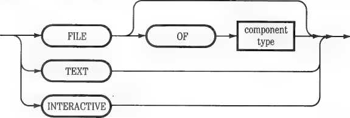
Here are the rules for declaring file variables:
□ A file variable declared with only the word FILE is untyped. It can be accessed only by untyped file operations.
□ A file variable declared as FILE OF followed by a component type is typed. It is treated as an indefinitely long series of file records of that type. It can be accessed only by typed file operations.
□ The file records of a typed file variable may have any type except a file type.
□ However, when a typed file variable is associated with a character device, the file records must be characters.
□ A file declared as TEXT is the same as a FILE OF CHAR. Under either designation, it has some special features, described below, which make it handy for storing and retrieving alphanumeric text.
□ A file declared as INTERACTIVE is a variety of TEXT file with special features suited to real-time input from a keyboard or modem.
Here are some examples of file type and variable declarations:
TYPE NUMFILE ■= FILE OF ARRAY C1..100] OF INTEGER;
VAR INFILE, OUTFILE : NUMFILE;
CODEFORM : TEXT;
FLOWDATA s FILE;
In these examples, NUMFILE is a new file type, each record of which is an array of 100 integers. INFILE and OUTFILE are file variables of type NUMFILE. CODEFORM is a file whose records are type CHAR. Finally, FLOWDATA is an untyped file variable. Its contents will be handled in 512-byte blocks.
Connecting file variables to external files is accomplished by the REWRITE, RESET, and CLOSE procedures described below under “General File I/O Operations.” Note that it is possible to associate an external file with more than one file variable, at the same or different times. For example, an external file originally created as the value of a typed file variable may subsequently be accessed as the value of an untyped file variable, or a file variable of another type. This feature provides maximum flexibility in handling data. It is also one of the techniques for defeating strong typing, discussed further in Chapter 16.
Apple Pascal has three predeclared file variables. They are all of type INTERACTIVE, and they are automatically opened by RESET when Pascal begins execution. Their identifiers are
OUTPUT INPUT KEYBOARD
OUTPUT is the name for output to the monitor screen. It is also the default destination for the WRITE and WRITELN procedures (see below).
INPUT is the name for input from the keyboard which is also echoed to the monitor screen. It is the default destination for the READ and READLN procedures.
KEYBOARD is like INPUT, but it is not echoed to the monitor screen.
Whenever a program terminates, Apple Pascal automatically performs a CLOSE procedure on these three files.
There are three categories of external files:
□ Character devices, which act as sources or destinations for streams of ASCII bytes. They include the monitor screen and keyboard, printers, modems, plotters, and so on.
□ Block-structured devices, which act as sources or destinations for blocks of 512 bytes of data. They include disk drives containing both rigid and flexible disks, RAM disks, and the like.
□ Disk files in block-structured devices. A disk file is a collection of data that is listed by name in a disk directory.
When writing file I/O operations in a program, you specify external character and block-structured devices by volume numbers or volume names. You specify disk files by filenames.
All peripheral devices have both volume numbers and volume names. These designations are assigned by the Apple Pascal operating system, as shown in Table 10-2.
|
Volume Number |
Volume Name |
|
#0 | |
|
#1 |
CONSOLE: |
|
#2 |
SYSTERM: |
|
#3 | |
|
#4 |
<diskname>: |
|
#5 |
<disk name>: |
|
#6 |
PRINTER: |
|
#7 |
REMIN: |
|
#8 |
REMOUT: |
|
#9 |
<disk name>: |
|
#10 |
<diskname>: |
|
#11 |
<diskname>: |
|
#12 |
<disk name>: |
I/O Device Description
(not used)
Screen and keyboard with echo on input
Reads keyboard without echoing it (not used)
1st drive, Startup drive, slot 4,5 or 6 2nd drive, same slot as startup drive Printer, slot 1
Remote input, slot 2 (modem) Remote output, slot 2 (modem)
5th drive, slot 4,5, or 6 6th drive, same slot as 5th drive 3rd drive, slot 4,5, or 6 4th drive, same slot as 3rd drive
A disk name is actually the identifier of a disk directory; for instance, APPLEO. Thus you have a choice of ways to identify any disk:
□ A volume number identifies the disk that is present in a designated drive, regardless of its name.
□ A volume name identifies a specific disk, regardless of where it is located in the system.
Disks receive volume names when they are formatted. Disk files receive filenames when they are created. You can change disk or disk file names at any time by using the Change command described in Chapter 3 of Part II.
As you can see from Table 10-2, volume numbers are written as a pound sign, one or two numerals, and a colon. Volume names are written as an identifier followed by a colon.
A complete disk file specification consists of a volume name or number and a filename. It designates a specific file listed in a specific directory. Further rules for specifying files are given in Part II, Chapter 3.
External Files
Pascal types volume numbers, volume names, and disk file specifications as strings. When you use them as constant parameters in I/O operations, enclose them in single quotation marks:
'#6:' 'PRINTER:' 'APPLE2:'
'MYDISK:MYFILE.TEXT'
There are three ways you can specify the volume name or number of an external file, by using wildcards:
□ If you specify no volume name, by supplying either a null string or a string containing only a colon, Pascal will insert the prefix volume name or volume number. Setting the prefix is discussed in Part II, Chapter 3.
□ If you use an asterisk (*) for the volume name, Pascal will replace it with the name of the system disk—the disk containing SYSTEM.PASCAL.
□ If you use a percent symbol {%) for the volume name, Pascal will replace it with the name of the disk from which the currently running program was loaded.
Thus, for example, you can specify that the disk file MYFILE.TEXT is located either in the disk or device specified by the prefix, on the system disk, or on the current program disk, by writing these file designations in your source text:
'MYFILE.TEXT' '*MYFILE.TEXT' 'XMYFILE.TEXT'
There are certain operations that are used with all files, whether typed or untyped. They are:
d Creating and opening a new file.
□ Opening an already existing file.
□ Closing a file. If the file is a disk file, you can choose whether or not it remains listed in the disk directory.
□ Determining when an access operation has reached the end of file.
□ Determining whether an input or output operation was successful.
□ Suspending certain automatic input/output safeguards for special purposes.
These operations are described below.
Before your program can use a file, it must do two things:
□ Declare a file variable, as described above.
□ Open the file.
When Pascal opens a file, it associates the file variable with an external
file. It also does these things:
□ In the case of a disk file, it either creates the external file and writes a directory entry for it, or locates it if it already exists.
□ In the case of a character or block-structured device, it checks to make sure the device is on-line.
□ It creates a 40-word (80-byte) area on the heap to store file information. The heap is discussed in Part IV of this manual, Chapter 1.
□ If the file variable was declared as typed, it sets aside another 260 words (520 bytes) on the heap to use as an input/output buffer. It also creates a dynamic variable accessible to your program which can contain one file record.
After your program is finished using a file, it must close it. When Pascal
closes a file, it does these things:
□ In the case of a disk file, it either retains its entry in the disk directory or deletes it, depending on how the closing command is written.
□ In the case of a character or block-structured device, it may or may not place it off line, depending on how the closing command is written.
□ It releases all heap space allocated to the file.
Be Careful: Attempting to open or close a file that does not exist or is not accessible to the system can cause an I/O error. The conditions under which such I/O errors occur are defined below for each operation.
REWRITE creates ana opens any disk file or opens any character or block-structured device. It is normally used before output operations, although it permits inputs as well. With typed files, REWRITE creates a record-sized buffer variable for GET and PUT procedures. REWRITE is a procedure with two parameters:
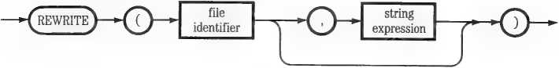
The file identifier is the name of a declared file variable. The string expression is either the complete designation of a disk file or the volume name or number of an external device.
Here are examples of two ways to use REWRITE to open the file variable FILEID—first as a disk file MYFILE on the disk MYDISK and then as a character device:
REWRITE (FILEID, 'MYDISK:MYFILE.TEXT');
REWRITE (FILEID, 'PRINTER:');
The following rules govern the use of REWRITE:
□ If a disk file with the same complete designation already exists, REWRITE creates another. The CLOSE procedure will later delete one or the other.
□ If the file variable corresponds to an already open disk file, an I/O error occurs. The file remains open.
□ Calling REWRITE with a character or block-structured device that is not accessible to the system causes an I/O error.
□ REWRITE can be used to associate a different file variable with an already open external file.
RESET opens any character or block-structured device or any already existing disk file. It is normally used before input operations, although it permits outputs as well. With typed files, RESET creates a record-sized
buffer variable for GET and PUT procedures. RESET takes one or two parameters:
|
file |
string | ||||
|
identifier |
expression |
7* | |||
The file identifier is the name of a declared file variable. The optional string expression is either the complete designation of a disk file or the volume name or number of an external device. If the string expression is omitted, RESET reopens an already open file.
Here are examples of four ways to use RESET with the file variable FUEID—first to open an existing disk file MYFILE on MYDISK, second to open an external modem as an input source, third to open a printer as an output device, and finally to reopen an already open file:
RESET CFILEID, 'MYDISK:MYFILE.TEXT')j RESET CFILEID, 'REMIN:')j RESET CFILEID, 'PRINTER:');
RESET CFILEID);
The following rules govern the use of RESET:
□ With any file variable type except INTERACTIVE, RESET automatically calls GET. GET loads the first file record into the buffer variable. Thus the first explicit GET executed by your program accesses the second file record.
□ If RESET is used to open a disk file, and if either the file variable identifier or the file name corresponds to an already open file, an I/O error occurs. The file remains open.
n You can use RESET to reopen an already open character or block-structured device with a different file variable.
□ When you output to a disk file that was opened with RESET, you overwrite the existing file. However, only the file records actually written to are affected.
□ If you use RESET with only a file variable identifier, it reopens the external file associated with that file variable. In the case of a disk file or block-structured device, it returns to the beginning and GETs the first file record. In the case of a character device (such as the console), it clears the end-of-file flag.
Be Careful: Using RESET with a file variable of any type except INTERACTIVE, and with an output-only character device (such as a printer), may cause a run-time error because the automatic GET call cannot be completed. Use REWRITE instead.
The CLOSE Procedure
CLOSE closes a file previously opened with REWRITE or RESET. It is written like this:
|
file |
Tr\ r |
option |
|
identifier |
identifier |
<D-
Thefile identifier is the name of a declared file variable. The optional identifier, which may be omitted, is one of these words:
NORMAL LOCK PURGE CRUNCH
If the option identifier is omitted, the result is the same as if you had written NORMAL.
With character or block-structured devices, these options have these effects:
□ NORMAL just releases the memory held for operations with the device.
□ PURGE additionally places the device off-line (if it can).
□ LOCK and CRUNCH have the same effect as NORMAL.
With disk files these options do different things, depending on whether REWRITE or RESET was used to open the file. Besides releasing the memory held for I/O operations, CLOSE with these options has the effect shown in Table 10-3.
Table 10-3. Effects of CLOSE on Disk Files
|
NORMAL |
LOCK |
PURGE |
CRUNCH |
|
Opened with RESET kept |
kept |
deleted |
trunc |
|
Opened with REWRITE: | |||
|
No old file deleted |
kept |
deleted |
trunc |
|
Old file existed: | |||
|
Fate of old file kept |
deleted |
kept |
deleted |
|
Fate of new file deleted |
kept |
deleted |
trunc |
Where this table indicates a disk file is kept, all its contents remain on the disk and its file name remains in the disk directory. Where it indicates a file is trune, it is kept but truncated; all of the file after the most recently accessed file record is thrown away. Where it indicates a file is deleted, it disappears as if it had never been created. Its filename is removed from the disk directory.
Here are two examples of CLOSE commands:
CLOSE (FILEID); {NORMAL close}
CLOSE (FILEID, LOCK); (file closed and LOCKedl
These rules apply to using the CLOSE procedure:
□ If you terminal'' vour program with any files still open, Pascal will automatically perform a NORMAL close on them.
□ If an external file is associated with more than one file variable, closing it with one closes it for all.
o Using CLOSE on an already-closed file has no effect.
EOF returns a boolean value that indicates whether the end of a specified file has been reached. It is written this way:
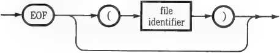
The optional file identifier is the name of a declared file variable. If it is omitted, the predeclared file INPUT is assumed.
Here is a typical use of EOF to control an IF...THEN statement:
IF EOF (FILEID) THEN -
The following rules govern the use of the EOF function:
□ You may combine EOF with other functions and operators to form boolean expressions.
□ EOF is TRUE for every closed file.
□ Whenever EOF is TRUE, the file’s buffer variable is undefined.
□ If an external file is associated with more than one file variable, EOF always has the same value for all of them.
□ If a file has any records in it, EOF is FALSE immediately after it has been opened. If it has no records, EOF is TRUE.
□ EOF goes from FALSE to TRUE immediately after an input operation that tries to access a file record beyond the end of a file.
□ EOF goes from FALSE to TRUE immediately after an output operation that fails because there is no more room in the file. However, the program halts with an I/O error first unless I/O checking has been suspended (see below).
□ EOF is FALSE for every character device until the device sends an ASCII ETX character (CONTROL-C), and TRUE thereafter. EOF returns to FALSE when the device is reopened with RESET. This is the case when characters are being read from the keyboard via the predeclared files INPUT or KEYBOARD.
□ EOF (OUTPUT) is always FALSE.
□ With a file of type TEXT, EOF is TRUE after the last character other than RETURN (ASCII 13) has been read.
□ With an INTERACTIVE file, EOF is not TRUE until the program attempts to read past the last character in the file, or until a CONTROL-C character is read from a character device.
□ EOF is always FALSE after SEEK is called. See below, “The SEEK Procedure.”
IORESULT takes no parameters. It returns an integer that indicates the status of the most recently completed input/output operation. Here is a typical application of IORESULT in an IF...THEN statement:
IF IORESULT <> B THEN --
In Apple Pascal, IORESULT can return integer values in the range 0..20 and 64.0 means no error—normal I/O completion. Nonzero values of IORESULT indicate an I/O failure of some sort. All possible IORESULT values, with their meanings, are listed in Appendix 3F, Table 3.
To use IORESULT with file I/O operations, you must first turn off run-time I/O checking with the {$1—} Compiler option. Otherwise your program will halt when an I/O error occurs. See “Controlling I/O Checking,” below.
Watch Out: Don’t try to output the value of IORESULT directly with a sequence such as WRITELN (IORESULT). Because WRITELN is an I/O operation, it changes IORESULT before it outputs it. The solution is to store the value of IORESULT in an integer variable first.
When it executes your program, Apple Pascal performs run-time checks on every input/output operation. The result appears each time in IORESULT. If IORESULT becomes nonzero during a file I/O operation, your program halts.
You can prevent such program halts by suspending I/O checking, using the {$1—} Compiler option. Chapter 14 gives the rules for writing and using Compiler options. At any time you can turn I/O checking back on by writing {$1+} in your source text. With I/O checking suspended, your program can use the value of IORESULT to decide what to do about a faulty input/output operation.
It is not necessary to control I/O checking when using the device I/O operations described later in this chapter. They set the value of IORESULT but do not cause program halts.
Certain input/output operations can be performed only on typed files—files whose declared variable type is other than just FILE.
You can use these operations on all typed files:
GET PUT SEEK
You can use the following operations only on character files:
WRITE WRITELN READ READLN EOLN PAGE
They are called character file operations; you can use them on these files:
type INTERACTIVE type TEXT (= FILE OF CHAR)
INPUT OUTPUT KEYBOARD
External mput/output devices often have their own buffer memory facilities and control their own physical actions. Hence the typed file I/O operations discussed in this section do not necessarily cause immediate actions in external devices.
In particular, disk drives usually do not respond physically until an input/output command requires access to data outside the currently accessed 512-byte block. You can expect visible drive action on these occasions:
□ A disk file is opened with REWRITE or RESET.
□ A GET, PUT, SEEK, WRITE, WRITELN, READ, READLN, or PAGE operation forces file access over a block boundary.
□ A disk file is closed with any option.
Disk drive action always occurs immediately with untyped file or device I/O operations.
Other external devices may or may not respond immediately to input/output commands, depending on their internal software.
These procedures read or write a single file record between a typed file’s buffer variable and the external file. You write them like this:
GET (FILEID)
PUT (FILEID)
where FILEID is the identifier of any typed file variable, corresponding to an open file.
The file’s buffer variable is identified by writing the file variable identifier followed by a caret:
FILEID*
It has the same type as records of the file variable. Thus after you execute GET (FILEID), the file record retrieved is in FILEID *. Before executing PUT (FILEID), you must set FILEID * to the value to be written to the file.
Here are the rules for using GET and PUT:
□ The file must be open.
□ GET and PUT executions sequence through the file records, starting from the beginning, until EOF becomes TRUE. Each execution of either procedure sequences to the “next” file record.
□ If the file was opened with REWRITE, PUT writes the “next” record; if it was opened with RESET the “next” record may already exist, in which case PUT overwrites it.
□ If the file was opened with RESET and is not type INTERACTIVE, one GET has already been executed; the first file record is in the buffer variable and the first GET retrieves the second record.
□ When an INTERACTIVE file is opened with RESET, no GET is performed; the buffer variable is undefined and the first GET retrieves the first record. This feature prevents an INTERACTIVE input, such as the keyboard, from halting the program at a RESET procedure until a character is entered.
□ To PUT to the first file record in a non-INTERACTIVE file opened with RESET, you must use the SEEK procedure, described below. This is because opening with RESET automatically performs a GET, which sequences the file to its second record.
□ You can return to the beginning of a file by reopening it with RESET.
d When EOF is TRUE, the value of the buffer variable is undefined.
Executing PUT causes an I/O error if there is no more room in the file; otherwise GET and PUT do not create I/O errors.
GET and PUT, when used with certain file types, translate certain control
characters into other characters. The rules are too complex to set forth here.
You can find them under “Special Handling of Control Characters” in
Chapter 16.
When Pascal accesses a typed file on a block-structured device (such as a disk), it numbers the file records in sequence, starting at 0. The SEEK procedure sequences the file to a specific record number, forcing the next GET or PUT procedure to access that specific.record. It looks like this:
SEEK (FILEID, RECNUM);
where FILEID is the identifier of an open file, on a block-structured device, that is not a textfile. RECNUM is an integer from 0 to one less than the number of file records.
Program Unit Required! The Program Unit PASCALIO must be present in an accessible library at the time any program using the SEEK procedure is executed. PASCALIO does not require a USES declaration, however. This Unit is originally supplied in the file SYSTEM.LIBRARY. For further information about libraries, see Chapter 13.
Here is a sample use of SEEK:
SEEK CSTORFILE, 13);
GET CSTORFILE);
STOR-REC STORFILE*;
After this sequence, the variable STOR—REC will be set to the value of the 14th file record in STORFILE.
Here are the rules for using SEEK:
□ The file accessed by SEEK must be open.
□ If you try to use SEEK with a file variable of type TEXT, FILE OF CHAR, or INTERACTIVE, or if the external file is a character device, SEEK does nothing.
□ Two SEEK calls in a row may have unpredictable results. Use GET or PUT in between.
□ SEEK sets EOF to FALSE; the following GET or PUT sets it to its correct value.
If you call SEEK with a record number greater than the last record number in the existing file, it goes through this process:
1. SEEK first tries to expand the file by accessing the external file beyond its current end. If this is not possible (for example, because another disk file is in the way), it causes an I/O error and sets IORESULT to 8 (“no room on volume”).
2. If it is able to expand the file, SEEK numbers its record areas and tries to point to the record number specified in its call. Note that the record areas beyond the current end-of-file have undefined contents. If there is still not enough room for SEEK to sequence to the specified record, it causes an I/O error and sets IORESULT to 8.
3. Finally, SEEK compares the record size to the available room to make sure that an entire record could be written. If so, it exits; if not, it causes an I/O error and sets IORESULT to 8.
By suspending I/O checking as described earlier, and then executing repeated SEEK calls with incremented numbers and IORESULT checks, your program can determine how many records could be written to a specific file.
Character file I/O operations can be used only with file variables that are declared as character files. A character file is any file whose components are declared to be of type CHAR. Thus the type of a character file can be any one of the following:
FILE OF CHAR TEXT INTERACTIVE
As previously noted, the built-in type TEXT is exactly equivalent to FILE OF CHAR. In the remainder of this chapter, we will refer only to the types TEXT and INTERACTIVE; remember that FILE OF CHAR is the same thing as TEXT. .
Apple Pascal provides these operations for use with character files:
WRITE WRITELN READ READLN
EOLN PAGE
The difference between TEXT and INTERACTIVE files is in the way they are handled by the RESET, READ, and READLN procedures.
When a Pascal program READs characters from an existing TEXT file, the program must first open the file with RESET. RESET automatically performs a GET operation: that is, it loads the first character of the file into the file’s buffer variable and then advances the file pointer to the next character. A subsequent READ or READLN begins its operation by first taking the character that is already in the buffer variable and then performing a GET.
If the file is of type INTERACTIVE instead of TEXT, the opening RESET does not perform a GET. The buffer variable is undefined and the file pointer points to the first character of the file instead of the second. Therefore, a subsequent READ or READLN begins its operation by first performing a GET and then taking the character that was placed in the buffer variable by the GET. This is the reverse of the READ sequence used with a TEXT file.
There is one primary reason for using the INTERACTIVE type. If a file is not a disk file but a character device, it is not possible to perform a GET on it until the device has a character ready for input. If RESET tried to do a GET from the keyboard, for example, the program would then have to wait until a character was typed. With the INTERACTIVE type, the program doesn’t perform a GET until it is executing a READ or READLN. Therefore, the type INTERACTIVE is normally used for text I/O with any character device.
You can use WRITE and WRITELN only with character files. They allow characters, strings, and numeric values to be written to a file as text strings, without the need for explicit PUT calls or explicit references to the file’s buffer variable. The difference between the two procedures is that WRITE writes only the specified text, whereas WRITELN adds a RETURN character (plus a LINE FEED to a character device) at the end.
The WRITE procedure is written this way:
|
ffle identifier |
value | |||||
|
r- |
r— |
specifier | ||||
<D-
O
The WRITELN procedure has more optional parts, and is written thus:
—*^writeln)-
|
file |
J r rr |
value | |
|
identifier |
r* r |
specifier |
O
In both cases the value specifier is written like this:
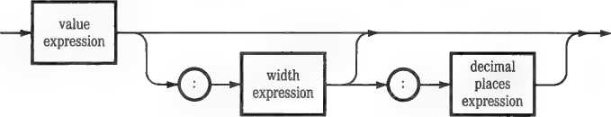
Vos file identifier is the name of a file variable of type TEXT or INTERACTIVE, corresponding to an open character device or disk file. If it is omitted, OUTPUT (the monitor screen) is assumed.
Each value expression contains material to be written as text; it may be any Pascal expression of type INTEGER, REAL, long integer, CHAR, STRING, or PACKED ARRAY OF CHAR.
Each width expression is an expression of type INTEGER. It specifies the minimum number of characters in the text equivalent of the associated value expression. If the actual text takes fewer characters, it is right-justified with spaces (that is, spaces are added to the front end until it. fills the minimum width). If no width expression is specified, only the characters necessary for the value expression are written.
Decimal places expressions are used only with value expressions of type REAL. Each one specifies the number of decimal places to be written in the text equivalent.
WRITE must always be followed by at least one value expression; other than that, all parts of the syntax following WRITE or WRITELN are optional.
Here are some examples of using WRITE and WRITELN:
{string constant to printer)
{integer value to disk file)
{string variable, space, Integer to screen) {real value to screen; 9 chars, 5 decimals) {new line on screen)
WRITE (DMP, 'Hello');
WRITE (STORFILE, N + 2);
WRITE (A, ' ', N);
WRITELN {Z/3.14:9:5);
WRITELN;
Here are the principal rules that govern the use of WRITE and WRITELN. Some special rules about their handling of control characters are given in Chapter 16 under “Special Handling of Control Characters.”
□ WRITELN adds a RETURN character (ASCII 13) at the end of its output. If it is writing to a character device it follows this with a LINE FEED (ASCn 10).
□ When an integer, real, or long integer value is written, it is preceded by a minus sign (—) if negative, a space character if positive. This character is included in its width count.
□ If a width expression is used with a value of type STRING or PACKED ARRAY OF CHAR, the value is truncated if it is too long and right-justified with leading spaces if it is too short. The resulting format is not limited to the usual string maximum of 255 characters.
Certain specific rules apply to the way WRITE and WRITELN convert
values of type REAL into written text:
□ A real value without a width or decimal places expression is written in exponent form. It is rounded to 6 significant digits, a decimal point is placed between the first and second digits, and the exponent is added: for example, -3. i4i59e+02. This format occupies 12 characters.
□ A real value with a width expression but no decimal places expression is also written in exponent form. The minimum form takes 8 characters: for example, -3.3e+02. Width expression values less than 8 are ignored. Values more than 8 cause the number of decimal places to be expanded to fit the specified width, up to a total format of 80 characters.
□ A real value with both width and decimal places expressions is written as a straight decimal: for example, -314.159. The number of decimal places specified is always written. If necessary, the value is rounded (not truncated) to fit. The number of digits to the left of the decimal necessary to express the order of magnitude of the number is also always written; however, after 6 or 7 digits the digits are meaningless. If the resulting format, including sign and decimal point, is less than the specified width, it is right-justified with spaces.
□ Despite all the foregoing, a real value of 0 is always written as 0.0. It occupies the same number of characters as other values and the decimal point is in the correct position, but the format before and after the two zeros is filled with spaces.
Appendix 3B contains further details of how Apple Pascal writes REAL
values.
Program Unit Required! The Program Unit PASCALIO must be present in an accessible library at the time any program uses a value expression of type REAL with either WRITE or WRITELN. PASCALIO does not require a USES declaration, however. This Unit is originally supplied in the file SYSTEM.LIBRARY. For further information about libraries, see Chapter 13.
You can use READ and READLN only on character files. They allow characters, strings, and numeric values to be read from a file of text strings, without the need for explicit GET calls or explicit references to the file’s buffer variable. The difference between the two procedures is that READLN skips the remainder of the text line (including RETURN) after reading its last variable; READ does not.
Thefile identifier is the name of a file variable of type TEXT or INTERACTIVE, corresponding to an open character device or disk file. If it is omitted, INPUT (the keyboard, with screen echoing) is assumed.
Each variable reference is the name of a previously declared variable of type INTEGER, REAL, long integer, CHAR, or STRING. With string variables, READLN is used more commonly than READ.
Here are some examples of using READ and READLN:
(read 3 numeric values from disk file) (read character from modem to buffer) (string entered from keyboard to NAME) (skip to next line in file)
(halt program until RETURN pressed)
—-(readln)-
The READ procedure is written this way:
—-(read)—
|
V v » |
file |
^r\ , |
variable | ||
|
) V |
identifier |
r* * |
reference | ||
|
V, |
V |
K |
-o-j | ||
The READLN procedure allows you to omit more parts:
<D-
■©-
|
V . » |
file |
variable | ||||
|
f |
identifier |
reference | ||||
|
l |
J | |||||
<>>
READ CSTORFILE, X, Y, Zi;
READ (COMDEV, CHARBUFF)j READLN (NAME);
READLN (STORFILE);
READLN;
Here are the principal rules governing READ and READLN. Special rules about the ways these procedures handle control characters, and their interactions with GET and PUT, are given in Chapter 16 under “Special Handling of Control Characters” and “Miscellaneous READ and READLN Effects.”
□ After READ, the next READ or READLN begins with the succeeding character.
□ After READLN, the next READ or READLN begins at the first character of the next line, if there is a next line. If there is no next line, EOF becomes TRUE. If EOF is already TRUE, the program halts with an I/O error.
n READ with a CHAR variable reads one character. If it is a control character, it may be translated and affect EOF and/or EOLN—see “Special Handling of Control Characters” in Chapter 16. READLN with a CHAR variable reads only the first character in each line.
□ READ with a string variable reads all characters up to, but not including, RETURN or CONTROL-C (with a character device). Because it does not skip over these end characters, a subsequent READ to a string variable causes a program halt. Use READLN with strings; it works the same way but skips to the start of the next line after reading the string.
a READLN without a variable reference simply skips to the next line in the input file. READLN with no parameters halts your program until RETURN is typed on the keyboard.
A Suggestion: If you are using READ with a CHAR variable and you need to detect the end of an input line, you may be able to simplify the situation by using READLN with a STRING variable instead; this gives you line-oriented reading without the need to check EOLN.
When using READ or READLN with numeric variables, you must insure that these procedures can interpret your text format numerically. If they can’t, your program will halt with a value range or floating-point error. This kind of error checking cannot be suspended by a Compiler option. Here are the rules:
□ With all numeric variables (types INTEGER, REAL, or long integer), both procedures skip leading spaces and zeros; READ also skips leading RETURN characters. They then read as many characters as they can interpret numerically. Reading stops with the first character that does not fit a numeric format, or with the first space, RETURN, or CONTROL-C after a valid character.
□ Inputs to all numeric variables are interpreted as positive unless a minus sign is read immediately before the first numeral.
□ After the optional plus or minus sign, inputs to integer and long integer variables may contain only numerals.
□ After the optional sign, inputs to real variables may contain numerals, one optional decimal point, and one optional uppercase or lowercase E. If a decimal point is present, it must be preceded and followed by a numeral. If A1 is present, it must be immediately followed by a plus sign, minus sign, or numeral. Leading zeros in the numerals after E are ignored.
□ Although inputs to real variables may contain almost any number of digits after the decimal point, only about 9 significant digits in all go into the real value. The decimal-to-binary conversion method may produce slightly different results than that used for real constants.
□ In all cases, the numeric value generated by READ or READLN must be within the value range of the variable.
□ If READ finds no interpretable input before the end-of-file, or READLN before the end-of-line, it will place 0 in an integer or long integer variable, with no error. If the variable is type REAL, it will halt the program with a floating-point error.
Further details on floating-point formats for real numbers are given in
Appendix 3B.
Program Unit Required! The Program Unit PASCALIO must be present in an accessible library at the time any program uses a value expression of type REAL with either READ or READLN. PASCALIO does not require a USES declaration, however. This Unit is originally supplied in the file SYSTEM.LIBRARY. For further information about libraries, see Chapter 13.
EOLN has a defined value only for input operations from character files corresponding to open disk files or character devices.
EOLN returns a boolean value. It takes one optional parameter, a file variable; if this is omitted, INPUT (the keyboard) is assumed. EOLN is written like this:
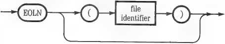
Here are two examples of its use:
WHILE NOT EOLN DO - ; {EOLN from keyboard}
REPEAT - UNTIL EOLN (STORFILE); {EOLN from disk file}
Here are the general rules for the value of EOLN:
□ EOLN is TRUE for closed files.
□ EOLN becomes FALSE when a file is opened, unless the file is type TEXT and begins with a RETURN character.
□ EOLN returns to false after the next I/O operation that doesn’t set it TRUE.
□ Except when READLN is used with an INTERACTIVE file, EOLN becomes TRUE whenever EOF becomes TRUE.
□ With READ, if a character in a TEXT file is followed by RETURN, EOLN becomes true after reading it.
□ EOLN is always FALSE when READLN is accessing an INTERACTIVE file, even if EOF is TRUE.
□ When an INTERACTIVE file is accessed using READ, EOLN is not TRUE until a RETURN character has been read or EOF is true.
□ For a TEXT file, EOLN is true when the last text character on a line has been read, and also whenever EOF is true. (A “text character” here means a character that is not the RETURN character.)
□ For an INTERACTIVE file, EOLN is not true until the RETURN character at the end of the line has been read or until EOF is true.
There are additional rules for the value of EOLN after READ and READLN,
and when these procedures are mixed with GET and PUT. They are set
forth in Chapter 16, “Miscellaneous READ and READLN Effects.”
This procedure simply sends a FORM FEED character (ASCII 12) to any open disk file or character device. It is written
PAGE CFILEID)
where FILEID identifies any file variable of type TEXT (FILE OF CHAR) or INTERACTIVE. This file identifier may not be omitted.
page c output) places the cursor at the top left comer of the screen after clearing the screen.
In Pascal, you can create an untyped file variable by declaring it just as type FILE. The result is sometimes called a “block file,” because its input/output operations are performed in 512-byte blocks. You can use the following operations with untyped file variables:
RESET REWRITE CLOSE EOF IORESULT
BLOCKREAD BLOCKWRITE
The operations in the top line are described above under “General File I/O Operations.” Those in the bottom line are described here.
Note that any disk file or any block-structured device may be associated with an untyped file variable. Hence you can use these fast block operations to move large chunks of data around. At the same time, you assume the burden of interpreting block contents and making sure that you do not transfer data into unintended places.
The BLOCKHEAD and BLOCKWRITE Functions
BLOCKREAD and BLOCKWRITE are functions, not procedures. Either one transfers data in blocks between an external file and a variable. The function then returns an integer value representing the number of blocks transferred. They are written with the same parameters:
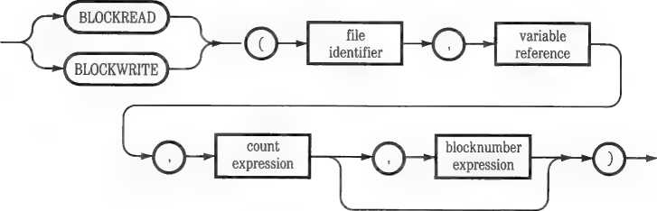
The file identifier is the name of a file variable declared as type FILE.
The variable reference is the identifier of a Pascal variable of any type except a file type. But because it must be large enough to hold at least 512 bytes of data, in practice it is limited to array and record types.
The count expression is any expression with an integer value. It represents the maximum number of blocks to be transferred. The actual number of blocks transferred may be less, if the transfer process becomes limited by disk file size or device capacity.
The optional blocknumber expression is any expression with an integer value. It represents the number of the block with which the transfer process begins. If it is omitted, the current block number (see below) is assumed. Block numbers start with 0.
BLOCKREAD transfers data from an external file into Pascal memory; BLOCKWRITE transfers data from Pascal memory to an external file. For quick data movement from one external file or device to another, the two can be nested in this form:
N :* BLQCKUIRITE tOUTFILE, BUFF, BLOCKREAD CINFILE, BUFF, MAX>>;
This statement transfers up to MAX blocks of data from INFILE to OUTFILE by way of the buffer variable BUFF. INFILE and OUTFILE are both type FILE. If MAX is greater than the number of blocks in INFILE, BLOCKREAD stops at the end of the file and limits BLOCKWRITE to the number of blocks available. If MAX is less than the number of blocks in INFILE, the statement must be executed repeatedly, using the REPEAT statement, until EOF (INFILE). At the end of this operation, N shows the actual number of blocks transferred. Note that BUFF must be large enough to hold MAX blocks.
BLOCKREAD and BLOCKWRITE follow these rules:
□ The file must be open.
□ Block operations do not check the size of the buffer variable; if it is too small, they read or overwrite adjacent memory.
□ If BLOCKREAD reaches the end of an external file before reading the number of blocks specified by the count expression, it sets EOF to TRUE after reading the last block and then exits.
□ If BLOCKWRITE reaches the limit of an external file’s capacity before writing the number of blocks specified by the count expression, it sets EOF to TRUE after writing the last possible complete block and then exits.
□ Both operations return a value representing the number of blocks actually transferred.
□ When an external file is opened with an untyped file variable, its current block number is 0.
□ Data transfers always start with the current block number.
□ Each call to either BLOCKREAD or BLOCKWRITE without a blocknumber expression increments the current block number of the specified variable. The block number is advanced by 1 for each block transferred.
□ When a valid block number is specified in either operation, it updates the current block number. This feature provides random access to blocks.
□ Both operations exit without effect if asked to transfer data to or from a nonexistent block number.
At the lowest level of input/output control, Apple Pascal provides four
procedures for controlling external devices directly:
UNITREAD UNITWRITE UNITCLEAR UNITSTATUS
An additional two operations provide compatibility with UCSD Pascal
source code, but do not function in Apple Pascal:
UNITBUSY UNITWAIT
Here are some facts about device I/O operations in general:
□ These operations all refer to external devices by their volume numbers. For a discussion of volume numbers, see the section “External Files” at the beginning of this chapter.
□ Device I/O operations may not be used with disk files; they may only be used with block-structured devices and character devices.
□ Errors in device I/O operations do not cause program halts. However, they do set the value of IORESULT.
UNITREAD and UNITWRITE are device-oriented input/output procedures; they take no notice of what information they are transferring or how it is structured. Hence they can be dangerous procedures. They do not offer any protection against mistakes. In particular, UNITWRITE allows you to overwrite any block on a disk, including the disk directory. Use it cautiously.
Both procedures are written with the same parameters:
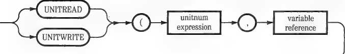
mode
expression
|
length |
blocknumber | ||||
|
expression |
expression |
ri |
V | ||
|
l |
/ |
^_ | |||
o
The unitnum expression is any expression with an integer value, representing the volume number of an external device. Volume numbers are listed earlier in this chapter in Table 10-2.
The variable reference is the identifier of a variable of any type except a file type. Its value will be transferred to, or acquired from, the external device.
The length expression is any expression with an integer value, representing the number of 8-bit bytes to be transferred.
The optional blocknumber expression is any expression with an integer value, representing an absolute block number. The transfer begins with the first byte of that block. This value is meaningful only if the unitnum expression refers to a block-structured device (such as a disk drive). In such a case, block 0 (the first block on the disk) is assumed if the blocknumber expression is omitted.
The optional mode expression is any expression with an integer value in the range 0..63. It is meaningful only when used with a character device. If the mode expression is omitted, mode = 0 is assumed. Mode values are explained below.
A Syntax Note: If you use UNITREAD or UNIT WRITE with a mode expression but omit the blocknumber expression, you must still insert the comma that would have followed the blocknumber. Here is an example:
UNITWRITE (6, BUF, 512,, 12);
This is the only instance in Pascal syntax where two commas may occur in sequence.
You must observe the following rules and cautions when using the device I/O procedures UNITREAD or UNITWRITE:
□ It is not necessary to open or close devices accessed by device I/O procedures. If you want to clear a device to its power-up state you can use UNITCLEAR, described below.
□ The size of the Pascal variable being used is not checked. If it is not at least as large as the data being transferred, the device I/O procedure will read or overwrite adjacent memory.
□ There are no checks to detect when device I/O procedures cross block boundaries.
□ If a device I/O operation fails the program will not halt; however, IORESULT will be set to a nonzero value to indicate the kind of error.
□ When UNITREAD is used with volume #1: (CONSOLE:), it calls UNITWRITE to echo characters to the screen. It gives UNITWRITE the same mode expression you supplied to UNITREAD. Usually the mode has no noticeable effect, but it may cause odd screen actions with certain modes and certain input characters.
The optional mode expression in a UNITREAD procedure call determines whether or not Pascal will respond to certain control characters as they are read. You may choose any or all of these actions:
EOF recognition: When UNITREAD reads a CONTROL-C (ASCII 3), it terminates the input. Any unused bytes in the destination variable are set to 0. EOF recognition is disabled when the UNITREAD mode expression has a 1 in bit 2.
Type “A” character checking: CONTROL-A, CONTROL-Z, CONTROL-E, and CONTROL-W produce certain specific effects in the Pascal system when typed on the keyboard. CONTROL-A and CONTROL-Z are discussed in Part II of this manual, Chapter 2. CONTROL-E and CONTROL-W are discussed in Part I of this manual. Pascal will not respond to any of these characters when they are read by UNITREAD, if the UNITREAD mode expression has a 1 in bit 4.
Type “B” character checking: CONTROL-S, CONTROL-F, and CONTROL-@ produce certain specific effects in the Pascal system when typed on the keyboard. They are discussed in Part II of this manual, Chapter 2. Pascal will not respond to any of these characters when they are read by UNITREAD, if the UNITREAD mode expression has a 1 in bit 5.
There are eight meaningful values for the UNITREAD mode expression:
□ Mode = 0 (the default value) enables all three options.
□ Mode = 4 enables type “A” and type “B” character checking but not EOF recognition.
o Mode = 16 enables type “B” character checking and EOF recognition but not type “A” character checking.
□ Mode = 20 enables type “B” character checking only.
□ Mode = 32 enables type “A” character checking and EOF recognition but not type “B” character checking.
□ Mode = 36 enables type “A” character checking only.
□ Mode = 48 enables EOF recognition only.
□ Mode = 52 disables all three options.
Setting Certain Modes Permanently: You can also enable or disable type “A” and/or type “B” character checking by changing a byte in memory. The mode will remain in force until the system is restarted. For details on how to do this see “Miscellaneous I/O Information” in Chapter 16.
The optional mode expression in a UNITWRITE procedure call determines how it will handle DLE and LF characters. You may choose either or both of these actions:
DLE option: In any Apple Pascal textfile, leading spaces at the beginning of a line are represented by a DLE character (ASCII 16) followed by a byte whose value is 32 plus the number of spaces. When UNITWRITE sends text to a character device, the DLE option converts this code sequence to the corresponding number of space characters (ASCII 32). (Remember that textfiles are not the same as files of type TEXT. For a description of textfiles, see Appendix 2B). The DLE option is disabled when the UNITWRITE mode expression has a 1 in bit 2.
LF option: In any Apple Pascal textfile, the end of each line is marked by a RETURN character alone. When UNITWRITE sends text to a character device, the LF option adds a LINE FEED (ASCII 10) after each RETURN. The LF option is disabled when the UNITWRITE mode expression has a 1 in bit 3.
There are four meaningful values for the UNITWRITE mode expression:
□ Mode = 0 (the default value) enables both DLE and LF options.
□ Mode = 4 disables the DLE option and enables the LF option.
□ Mode = 8 disables the LF option and enables the DLE option.
□ Mode = 12 disables both DLE and LF options. This is usually the best mode for control character communication with external devices.
UNITCLEAR cancels all input/output operations to a specified device and resets it to its power-up state. It is written like this:
UNITCLEAR (UNITNUM)
where UNITNUM is an integer expression, the value of which is the volume number of an external device. With all devices except block-structured devices such as disk drives, UNITCLEAR sets IORESULT to a nonzero value if the device is not found; thus you can use it to test whether a device is present in the system. For disk drives you can use UNITSTATUS, described below.
The call UNITCLEAR (1) flushes the Pascal system’s type-ahead buffer; in 40-column mode it also resets the screen’s horizontal scrolling to full left.
UNITSTATUS determines whether an external device is present in the system and whether it is operational. It also returns information about keyboard inputs and the block capacity of block-structured devices. It is written:
UNITSTATUS (UNITNUM, RESULT, 1)
where UNITNUM is an integer expression, the value of which is the volume number of an external device. When UNITSTATUS is used with the keyboard (#2:), RESULT identifies a record; with all other devices, it identifies. 1 single integer variable. The third parameter is always 1.
When UNITSTATUS is called, it may also set the value of IORESULT, as described below.
UNITSTATUS performs different tasks, depending on what kind of device it interrogates. The different uses of UNITSTATUS are described in the following sections.
UNITNUM = 4,5,9,10,11, or 12
UNITSTATUS determines if the disk device exists and, if so, how many blocks it is designed to store. It returns an IORESULT of 9 or 64 if it cannot find the device or if the device is inoperable. If IORESULT = 0, then the value of RESULT is the number of blocks the device is designed to store; otherwise RESULT is undefined.
When using UNITSTATUS with a 5i4-inch disk drive, there must be a formatted disk in the drive in order to obtain reliable results. This restriction does not apply to other types of disk devices.
UNITNUM = 6
UNITSTATUS determines if there is a usable printer device in slot 1 and, if so, whether the printer is ready to accept output. Thus your program can avoid waiting if the printer is busy.
If slot 1 contains an Apple II Parallel Printer Card, an Apple II Communications Card, an Apple II Serial Card, or a firmware protocol card (such as an Apple II Super Serial Card), then UNITSTATUS sets IORESULT to 0; otherwise it sets IORESULT to 9. If IORESULT = 0, then RESULT will be set to 0 if the printer is ready to accept output and 1 if it is busy. However, if slot 1 contains an Apple Serial Card, then RESULT is always 0. If IORESULT = 9, then the value of RESULT is undefined.
UNITNUM = 7 for REMIN, 8 for REMOUT
UNITSTATUS determines if there is a usable remote device in slot 2. With REMIN it determines if there is a character waiting to be read; with REMOUT it determines if the device is ready to accept output.
If slot 2 contains an Apple II Communications Card, an Apple II Serial Card, or a firmware protocol card (such as an Apple II Super Serial Card), then UNITSTATUS sets IORESULT to 0; otherwise it sets it to 9. With REMIN, if IORESULT = 0 then RESULT is set to 1 if there is a character waiting to be read and 0 if not. With REMOUT, if IORESULT = 0 then RESULT is set to 0 if the device is ready to accept output and 1 if not. If slot 2 contains an Apple II Serial Card, then UNITSTATUS always sets RESULT to 1 for REMIN and 0 for REMOUT. If IORESULT is not 0 then the value of RESULT is undefined.
□ SHIFT is TRUE if the oldest character was typed while SHIFT was pressed (on an Apple computer with the shift-key modification).
□ OPENAPPLE is TRUE if the oldest character was typed while O was pressed, or while button 0 of the hand controls was pressed.
□ SOLIDAPPLE is TRUE if the oldest character was typed while A was pressed, or while button 1 of the hand controls was pressed.
Here is a sample program that uses UNITSTATUS with the keyboard. It reports how many characters are in Pascal’s typeahead buffer and displays the oldest one, along with its ASCII code. It also reports whether a (or hand control button 0), 4 (or hand control button 1), or SHIFT was pressed when the oldest character was typed.
PROGRAM ECHO;
VAR KEY : CHAR;
KEYSTAT : RECORD
NCHARSBUFD : INTEGER;
SHIFT, SOLIDAPPLE, OPENAPPLE : BOOLEAN END;
BEGIN
WITH KEYSTAT DO REPEAT
UNITSTATUS (2, KEYSTAT, 1>;
IF NCHARSBUFD > 0 THEN BEGIN
READ (KEYBOARD, KEY);
WRITE (NCHARSBUFD,': ',KEY,'=',ORD CKEY>);
IF OPENAPPLE THEN
WRITE (' Open Apple (HC 0)');
IF SOLIDAPPLE THEN
WRITE (' Solid Apple (HC 1)');
IF SHIFT THEN
WRITE (' Shift');
WRITELN
END
UNTIL KEY - 'Q'
END.
Certain hardware configurations may cause you to get unexpected results when using UNITSTATUS with the keyboard:
□ If an Apple II or He does not have the shift-key modification, the SHIFT flag may have a random value.
□ If an Apple II does not have hand controls, the 6 and A flags may have random values.
The Mowing program demonstrates how UNITSTATUS may be used with a printer and with a remote input device. It repeatedly tests a remote input and a printer, using UNITSTATUS. If the remote input has a character waiting to be read, TestStuff reads it and places it in a buffer. If the printer is able to accept output, TestStuff sends it a character from the buffer. It also outputs a LINE FEED character after each RETURN. To exit TestStuff, you set KEYPRESS by typing any character. Here is the listing.
PROGRAM TestStuff;
USES AppleStuff; f needed for keypress >
|
CONST |
bufLimit |
- 100 | ||
|
keyboard |
= 2 |
< volume numbers > | ||
|
printer |
= 6 | |||
|
remin |
= 7 | |||
|
cr |
- 13 |
{ ASCII control characters | ||
|
If |
= 10 | |||
|
TYPE |
bufIndex |
= 0..bufLimit | ||
|
VAR |
result : |
integer; | ||
|
rPtr, | ||||
|
wPtr : |
bufIndex; | |||
|
buf : |
PACKED ARRAY |
Cbuflndexl OF char; | ||
|
ch ; |
char | |||
BEGIN
writeln; writeln;
writeln C'Fire away!'); rPtr := 0; wPtr := 0;
{ Initialize read pointer }
{ initialize write pointer > (Listing is continued on next page.)
WHILE NOT keypress DO { reiterate until key pressed >
BEGIN
unitstatus (remin,result,1); ( get remote input status >
IF result - 1 THEN BEGIN
unitread (remin, buftrPtr], 1, , 12); ( read char from remote }
IF rPtr “ bufLimit THEN rPt r :« 0 ELSE
rPtr rPtr ♦ 1;
IF rPtr ■ wPtr THEN
writeln ('Buffer overflow *** data lost');
END;
IF wPtr <> rPtr THEN BEGIN
unitstatus (printer, result, 1); { get printer status >
IF result = 0 THEN BEGIN
unitwrite (printer, buflwPtrl, 1, , 12); ( write char to printer > IF tbufCwPtr] • chr(cr)) OR (buflwPtrl = chr (cr+128)) THEN buflwPtrl := chr (If) { add line feed after return >
ELSE
IF wPtr = bufLimit THEN wPtr := 0 ELSE
wPtr := wPtr ♦ 1;
END;
END;
END (WHILE);
unitread (keyboard, buf[0], 1)
END.
UNITBUSY and UNITWAIT are UCSD Pascal operations that are compiled, but not used, by Apple Pascal. UNITBUSY is a function that indicates whether an external device is busy; UNITWAIT is a procedure that halts the program while an input/output operation is in progress. In Apple Pascal, UNITBUSY always returns FALSE and UNITWAIT does nothing.
In Apple Pascal, the job of UNITWAIT is built into each input or output operation. The job of UNITBUSY is mainly performed by UNITSTATUS. One additional job, determining whether a character is available from the keyboard, is performed by the KEYPRESS function described in Chapter 16.
Apple Pascal provides a number of miscellaneous input and output operations. These include:
□ Turning the screen cursor and inverse display on and off
□ Special keyboard inputs
□ The KEYPRESS function
□ The PADDLE and BUTTON functions
□ The TTLOUT procedure
□ The NOTE procedure
These are all described in the section “Miscellaneous I/O Operations” in Chapter 16.
Chapter 11
Screen Graphics
Apple Pascal includes a complete package of procedures and functions for producing high-resolution (but not double high-resolution) images on the monitor screen. It is called Turtlegraphics, because it is based on the turtle algorithm devised by S. Papert, et al. at the Massachusetts Institute of Technology. The turtle is a discrete dot on the screen, which can leave a permanent line behind it as it moves.
These screen graphics operations are supported by the Apple Pascal Intrinsic Program Unit TURTLEGRAPHICS. It must be available both when your program is compiled and when it is executed. If you include text in a turtlegraphic image, the file SYSTEM.CHARSET must also be on volume #4 or #5 when your program is executed. The TURTLEGRAPHICS unit is included in the SYSTEM.LIBRARY file that comes with the Apple Pascal software; SYSTEM.CHARSET is on the disk APPLE1:.
Any program that uses the operations described in this chapter must therefore contain the USES declaration
USES TURTLEGRAPHICS;
just after its program heading.
Here is a brief summary of the operations covered in the sections that follow:
□ INITTURTLE clears the screen and sets several options to their initial values.
□ GRAFMODE and TEXTMODE allow you to switch the screen display between graphics and text. The image retrieved by each mode is saved while the other mode is active.
□ VIEWPORT allows you to restrict image creation to a rectangular portion of the screen.
□ PENCOLOR selects different colors for lines you draw.
□ FILLSCREEN fills the viewport with a specified color.
□ TURNTO and TURN orient the direction the turtle is facing.
□ MOVETO and MOVE make the turtle move about on the screen, leaving a trail of PENCOLOR as it goes. MOVETO directs it to a specific place; MOVE makes it go a specific distance in the direction it is facing.
□ TURTLEX, TURTLEY, and TURTLEANG are functions that report the current position and orientation of the turtle.
□ SCREENBIT tells you whether a given point on the screen is part of any image.
□ DRAWBLOCK is a complex and powerful procedure. It lets you convert a two-dimensional PACKED ARRAY OF BOOLEAN into a two-dimensional image on the screen. In addition, it permits you to specify how the image will interact with whatever image already exists there.
□ WCHAR, WSTRING, and CHARTYPE permit you to draw alphanumeric text on the screen, with all the interaction features of DRAWBLOCK.
□ Finally, instructions are included for creating your own alphabets of characters to be used with WCHAR and WSTRING.
The Apple Pascal screen graphics system treats the monitor screen as a rectangle measured by Cartesian coordinates. The origin (X=0, Y=0) is at the lower left comer of the screen. The upper right comer has coordinates X=279, Y=191. For any point, the horizontal coordinate X may take values from 0 through 279; the vertical coordinate Y may take values from 0 through 191.
All images on the screen are made up of points defined by integral values of these coordinates. Hence these rules:
□ All coordinate parameters given to graphics procedures must have positive integer values.
□ Lines drawn at angles are displayed as collections of points with a step-like appearance.
o Small angular changes in short lines leave the image unchanged if they do not result in the selection of new points.
Directions are specified in integral degrees, by using signed integer values from —359 through 359. All angles are measured counterclockwise. An angle of 0 corresponds to a horizontal vector pointing right (3 o’clock if the screen were a clock). Thus, measuring an angle A from the center of the screen,
□ the right edge is at A=0
□ the top is at A=90
□ the left edge is at A=180
□ the bottom is at A=270.
When you use Turtlegraphics, there are two images stored in memory—a text image and a graphics image. The text image is the normal one created by Pascal output operations to the screen; the graphics image is the one created by Turtlegraphics. You can determine which is displayed by using the TEXTMODE and GRAFMODE procedures described below.
111-197
Screen Coordinates
A Technical Note: When a program that uses Turtlegraphics is loaded, Pascal moves the heap pointer to allow memory room for the graphics image. This change is discussed in Part IV of this manual, Chapter 1.
You should call this procedure once at the beginning of any program that uses screen graphics. It has no parameters. You just write
INITTURTLE
INITTURTLE does the following:
□ It clears the screen.
□ It clears the memory used to hold graphic images.
□ It sets GRAFMODE on.
□ It sets the turtle position to the center of the screen (X=140, Y=96), facing right (A=0).
□ ItsetsPENCOLORtoNONE.
□ It sets the VIEWPORT to the full screen (0,279,0,191).
These two procedures have no parameters. They are written alone:
GRAFMODE TEXTMODE
GRAFMODE retrieves the graphic image from memory and places it on the
screen. TEXTMODE retrieves the text image from memory and places it on
the screen. In between, each image is stored intact.
When switching modes, keep these rules in mind:
□ Your program can alter either image at any time, regardless of which mode is in force.
□ The only way you can alter the graphic image is by using the operations described in this chapter.
□ The only way you can alter the text image is by using the Pascal input/output operations described in Chapters 10 and 16.
□ If the graphic image has never been cleared (by INITTURTLE, FILLSCREEN, or DRAWBLOCK), the screen will display garbage or the graphic image remaining from the last use of screen graphics.
□ If the text image has never been cleared (by commands to CONSOLE: or OUTPUT), the screen will display the last text message displayed by any program.
□ Upon program termination, either normal or because of a run-time error, TEXTMODE will automatically be set and the contents of text memory will be displayed.
The VIEWPORT procedure allows you to specify a particular part of the screen for graphics operations. It is written
VIEWPORT (LEFT, RIGHT, BOTTOM, TOP)
where the four parameters are expressions with integer values. LEFT and RIGHT give the horizontal (X) coordinate values of the left and right sides of the viewport. BOTTOM and TOP give the vertical (Y) coordinate values of the bottom and top of the viewport. For example,
VIEWPORT (130,150,86,106) allows graphics operations in a small square at the center of the screen.
Here are a few rules about using VIEWPORT:
□ LEFT must be less than RIGHT and BOTTOM less than TOP.
□ The full screen is VIEWPORT (0,279,0,191). This value is automatically set if no VIEWPORT procedure has been executed.
□ If commanded to leave the viewport area, the turtle does so. However, it ceases drawing at the edge of the viewport. In effect, its COLOR changes to NONE.
□ VIEWPORT affects only future operations; it will not clip an image already drawn.
HI-199
VIEWPORT
The TURTLEGRAPHICS Program Unit declares a scalar variable type called SCREENCOLOR. You can use this type freely when declaring variables in your own program. It has these values:
WHITE
WHITE1 {2 dots wide for use with green and violet}
WHITE2 |2 dots wide for use with orange and blue}
BLACK
BLACK1 |2 dots wide for use with green and violet}
BLACK2 {2 dots wide for use with orange and blue}
GREEN
VIOLET
ORANGE
BLUE
NONE {does not change the existing image}
REVERSE } complements black/white, green/violet,
orange/blue}
RADAR |not presently implemented}
Here are some notes about the type SCREENCOLOR:
□ The reason there are three kinds of black and white values (BLACK, BLACK1, BLACK2, WHITE, WHITE1, WHITE2) has to do with how
. Apple Pascal interacts with the way that television sets produce colors. WHITE and BLACK give the finest lines possible; colors give a wider line so they will show on a television screen. If you wish to make a black or white line that corresponds exactly in position and width with a green or violet line, use BLACK1 or WHITE1. If you wish to make a black or white line that corresponds exactly in position and width with an orange or blue line, use BLACK2 or WHITE2.
□ With a black-and-white monitor or television set, just use BLACK and WHITE.
□ Drawing with the SCREENCOLOR value NONE produces no change in the image. You can use it to move the turtle without leaving a track.
□ The SCREENCOLOR value REVERSE complements whatever color is underneath the turtle at the moment. BLACK, BLACK1, and BLACK2 become WHITE, WHITE1, or WHITE2; GREEN becomes VIOLET; ORANGE becomes BLUE; and vice versa. It allows you to draw a line across a complex background and be sure it is always a contrasting color.
To set the color of the line left by the turtle, call the procedure PENCOLOR with one of the values of SCREENCOLOR as its parameter. For example,
PENCOLOR (WHITE) PENCOLOR (NONE)
PENCOLOR (REVERSE)
PENCOLOR (NONE) lets you move the turtle about without creating a line.
To fill the entire viewport with a specified color, call the procedure FILLSCREEN with one of the values of SCREENCOLOR as its parameter. For example,
FILLSCREEN (BLACK) FILLSCREEN (REVERSE)
FILLSCREEN (BLACK) clears the viewport. FILLSCREEN (REVERSE) makes a “negative” of the image in the viewport.
Because the viewport can be a rectangle of any size and location, FILLSCREEN is a simple way to create or erase solid areas of the image.
These four procedures let you move the turtle about on the screen. As it goes, it leaves a permanent trail of the current PENCOLOR value. The four procedures are written
TURNTD (DEGREES) TURN (DEGREES)
MOVETO (X, Y) MOVE (DISTANCE)
TURNTO and TURN do not make any change in the graphic image; they only change the orientation of the turtle—the direction it is facing. Turtle orientation is significant only for subsequent MOVE procedures.
TURNTO sets the orientation of the turtle to a specified direction, with 0 interpreted as facing right. TURN rotates the turtle a specified number of degrees from its current direction.
TURNTO and TURN accept expressions with any integer value. If the value is not within the range —359 to 359, it is reduced modulo 360. Positive values are interpreted counterclockwise, negative values clockwise.
IH-201
TURNTO, TURN, MOVETO, and MOVE
MOVETO takes an X (horizontal) parameter in the range 0..279 and a Y (vertical) parameter in the range 0..191. It sends the turtle to those screen coordinates without changing its orientation. As it moves it draws a line of the current PENCOLOR value.
MOVE accepts an integer value, representing a vector distance on the screen. The turtle moves that distance in the direction it is facing, leaving a trail of the current PENCOLOR value.
With movements at an angle from horizontal or vertical, the integer used with MOVE seldom places the turtle exactly at a position with integer coordinates. When the turtle arrives at a place not definable by integer coordinates, Pascal adjusts its position to the nearest integral point. For this reason, a series of MOVE and TURN or TURNTO procedures may fail to create a closed polygon. A final adjustment with MOVETO may be necessary.
Here is a sample program that uses some of the procedures discussed so far. It draws an equilateral triangle, pointing downward, near the center of the screen and displays it until you press RETURN:
PROGRAM TRIANGLE;
USES TURTLEGRAPHICS;
BEGIN
INITTURTLE;
MOVETO C140 , 75);
TURNTO (60);
PENCOLOR (WHITE);
MOVE (50);
TURN (120);
MOVE (50);
TURN (120):
MOVE (50);
READLN
END.
The READLN procedure is included only because otherwise this short program would terminate and restore TEXTMODE before you have a chance to see the image it generates.
Where is the turtle and what is it doing? These four functions let your program find out. They are written
TURTLEX TURTLEY TURTLEANG
SCREENBIT CX, Y)
TURTLEX and TURTLEY take no parameters and return integer values. TURTLEX returns the horizontal screen coordinate value and TURTLEY the vertical screen coordinate value of the turtle’s current position.
TURTLEANG also takes no parameters. It returns a positive integer value in the range 0..359, representing the current orientation of the turtle measured counterclockwise from facing right. Note that this value may be different from one used with TURNTO; for example, a TURNTO of —90 will be reported by TURTLEANG as 270.
SCREENBIT takes an X (horizontal) parameter in the range 0..279 and a Y (vertical) parameter in the range 0..191. It returns a boolean value of TRUE if the screen point at those coordinates is not black and FALSE if it is black. Thus it tells your program whether or not that point is part of an image of any sort. However, it does not tell you what color is there.
This powerful procedure lets you translate a bit image in memory to a graphics image on the screen. The bit image should be stored in a two-dimensional packed array of boolean, each element of which corresponds to a point on the screen. DRAWBLOCK “writes” the value of any part of such an array on any part of the screen. Thus you can create a graphic image directly, by manipulating its points with boolean operations. Moreover, the result goes into graphic memory and can be manipulated by the procedures in this chapter just like any other image.
DRAWBLOCK takes nine parameters, all of which are required:
DRAWBLOCK (SOURCE, ROWSIZE, XSKIP, YSKIP, WIDTH, HEIGHT, XSCREEN, YSCREEN, MODE)
SOURCE is the identifier (without subscripts) of a variable that should be a two-dimensional packed array of boolean (see note below). All the other parameters are integers.
DRAWBLOCK treats each boolean element of SOURCE as a dot—TRUE for white and FALSE for black. It copies the array of dots (or a portion of it) from memory onto the screen to form a screen image. The first dimension of the array is the number of rows in the array; the second dimension is the number of elements in each row.
You may choose to copy the entire SOURCE array, or you may choose to copy any specified “window” from the array, using only those dots in the array from XSKIP to XSKIP+WIDTH and from YSKIP to YSKIP+HEIGHT. Furthermore, you can specify the starting screen position for the copy, at (XSCREEN, YSCREEN).
The other DRAWBLOCK parameters have these meanings:
□ ROWSIZE is the number of bytes (not dots) per row in the array. You can calculate this from the formula
bytes = 2 * ((X +15) DIV16)
where X is the number of dots in each row.
□ XSKIP tells how many horizontal dots in the array to skip over before the copying process is started.
□ YSKIP tells how many vertical dots in the array to skip over before beginning the copying process. Note that copies are made starting from the bottom up—i.e. the first row copied from the array is the bottom row of the screen copy.
□ WIDTH tells how many dots’ width of the array, starting at XSKIP, will be used.
□ HEIGHT tells how many dots’ height of the array, starting at YSKIP, will be used.
□ XSCREEN and YSCREEN are the coordinates of the lower left comer of the area to be copied into. WIDTH and HEIGHT determine the size of the rectangular area.
□ MODE ranges from 0 through 15. It determines what appears on the portion of the screen specified by the other parameters. It can simply send white or black to the screen, regardless of what is in the array, copy the array literally, or combine the contents of the array and the screen and send the result to the screen. The following table specifies what operation is performed on the data in the array and on the screen, and thus what appears on the screen (A refers to the array, S to the screen).
Although these modes are expressed in terms of black and white, they can be used to create images of any value of SCREENCOLOR. Just use FILLSCREEN to create an area of solid color and then manipulate it logically to represent the pattern in the array.
Mode Action
0 Fills area of screen with black
1 NOR array with screen [NOT (A OR S)]
2 AND array with screen complement [A AND NOT S]
3 Complements area of screen [NOT S]
4 AND screen with array complement [S AND NOT A]
5 Copies complement of array to screen [NOT A]
6 XOR array with screen [A XOR S]
7 NAND array with screen [NOT (A AND S)]
8 AND array with screen [A AND S]
9 EQUIVALENCE of array with screen [A = S]
10 Copies array to screen [A]
11 OR array with screen complement [A OR NOT S]
12 Screen replaces screen [S]
13 OR screen with array complement [S OR NOT A]
14 OR array with screen [A OR S]
15 Fills area of screen with white
The demonstration program GRAFDEMO.TEXT, on APPLE3:, contains many examples of how to use the Turtlegraphics routines. In particular, procedures such as BUTTER1 give strings to procedure STUFF, which converts them to a packed array of boolean named BUTTER. Procedure FLUTTER uses DRAWBLOCK to display the array BUTTER on the screen.
A Note About SOURCE: Actually, the SOURCE parameter can be any type except a file type; DRAWBLOCK really deals with an array of bits in memory that begins at the address of SOURCE and whose size and organization depend on the other parameters. For example, the following statement uses a single boolean variable, DOT, instead of an array. It complements the screen image at point X, Y:
DRAWBLOCK (DOT, 1, 0, 0, 1 1, X, Y, 3)
However, for most programs the most convenient way to use DRAWBLOCK is with a two-dimensional packed array of boolean, as described above.
Apple Pascal provides three procedures that let you add text to graphic images:
WCHAR CCH> WSTRING CS) CHARTYPE {MODE)
These procedures access an array stored in the Apple Pascal file SYSTEM.CHARSET, containing standard patterns for drawing characters. They draw these patterns on the screen as alphanumeric text. At the end of this section are instructions for making your own CHARSET.
Viewing SYSTEM.CHARSET: The program 6RAFCHARS displays the characters in SYSTEM.CHARSET. Its source code is on your APPLE3: disk. To use GRAFCHARS, you must compile it first.
WCHAR and WSTRING draw single characters and strings, respectively. CHARTYPE produces the same modes for text as DRAWBLOCK does for images—black on white, white on black, reversed, and so forth. Here are the details:
The WCHAR procedure takes one parameter CH of type CHAR. It draws the value of CH on the screen as a character 7 dots wide and 8 dots high. The lower left comer of the character is placed at the current position of the turtle. The turtle is shifted to the right 7 dots (its X coordinate value is increased by 7).
The WSTRING procedure takes one parameter S of type string. It simply calls WCHAR once for each character in the string. Thus the string is written horizontally with the lower left comer of the first character at the current position of the turtle. The turtle is shifted to the right 7 dots for each character (its X coordinate value is increased by 7 * LENGTH (S)).
WCHAR and WSTRING have these limitations:
o They accept only characters in which bit 7 is 0—that is, those whose ASCII code is less than 128.
□ The longest string that will fit on the screen is 40 characters.
The CHARTYPE procedure takes the same MODE integer as DRAWBLOCK, with the same effect on text characters as it has on images. Actually, WCHAR and WSTRING use DRAWBLOCK to write text into graphic memory. So CHARTYPE simply accepts a MODE integer and passes it on to DRAWBLOCK.
If CHARTYPE is not called, the default MODE is 10. By calling CHARTYPE with various MODE values, you can achieve these effects:
MODE 5 Draws black text in its own white rectangle.
MODE 6 Draws text that contrasts with the background; used a
second time, erases same text and restores background.
MODE 10 Draws white text in its own black rectangle.
MODE 13 Draws black text over existing background.
MODE 14 Draws white text over existing background.
Here is a sample program that draws text on the screen. It draws “Apple Pascal" in the center of the screen, in black on a white background, and displays it until you press RETURN.
PROGRAM LETTERING;
USES TURTLEGRAPHICS;
BEGIN
INITTURTLE;
MOVETO (93, 92);
CHARTYPE (5);
WSTRING ('Apple Pascal');
READLN
END.
You can create your own character set for use with WCHAR and WSTRINO.
Here are the rules:
□ Your file must be named SYSTEM.CHARSET and must be on volume #4 or #5. You can put Apple’s SYSTEM.CHARSET on another disk or give it another name.
□ Your file must consist of 1024 bytes.
□ Starting with the first byte in the file, each character in the set is represented by 8 contiguous bytes. The 128 groups of 8 bytes correspond to the 128 ASCII codes (See Appendix 3F, Table 1).
□ Each byte represents one row of 8 dots in the character image, starting from the bottom.
□ The least significant bit of each byte corresponds to the leftmost dot in the row of 7 dots; the most significant bit of each byte is ignored.
HI-207
Adding Text to Graphics
Such a file can be created in assembly language or in Pascal. If you create it with a Pascal program, you may find these type declarations handy:
TYPE CHARIMAGE = PACKED ARRAY I0..7I DF 0..255;
CHARSET = PACKED ARRAY C0..127] OF CHARIMAGE; CHARFILE » FILE OF CHARSET;
Program Units
Chapter 12
Previous chapters have described the process of creating programs that can be compiled and executed. We now consider the process of creating Program Units. Program Units look like programs and are compiled in the same way; but instead of being executed themselves, they constitute collections of “public” constants, types, variables, procedures, and functions that executable programs can use.
A number of built-in Apple Pascal operations require the presence of standard Program Units that come with the Apple Pascal software. These operations are listed at the beginning of Chapter 13. This chapter tells you how to create your own additional user-defined Program Unite.
Program Unite, like programs, have names. A program accesses a Program Unit by means of the USES declaration, described below. Your program may then use the contents of the Program Unit just as if all of it had been written in its source text. This process has several advantages:
□ Program Units may contain often-used operations that are needed by more than one program.
□ Program Unite allow programs to be partitioned into logical pieces.
□ Program Units can be modified without recompiling the programs that use them.
□ Program Units allow programs to be written in small, separately compilable sections which are faster to compile than a single large program and require less memory at compile time.
□ Program Units are a more flexible form of program segmentation than SEGMENT procedures because you can have more than one procedure in a Program Unit.
□ Program Unite give the Pascal programmer controlled access to “private” data structures.
Before your program can use Program Unite, you must specify what units it needs with a USES declaration. A typical USES declaration looks like this:
USES TRANSCEND, HELPME;
TRANSCEND is a standard Program Unit that comes with Apple Pascal. HELPME might be the name of a Program Unit you created, containing routines that are frequently needed in different programs that you write.
You can list any number of units after USES as long as you separate the names with commas. Program Units themselves may USE other Program Units.
The USES declaration goes immediately after the program heading; for example:
PROGRAM CALCULATE;
USES TRANSCEND, HELPME;
If your program does not use any Program Units, it does not need a USES declaration.
When your program is compiled, the Compiler looks for any needed Program Units in the file SYSTEM.LIBRARY on the system disk. You can direct the Compiler to look in a different file with the “Using” Compiler option. See Chapter 13 for information on libraries and the “Using” Compiler option.
About LONGINTIO and PASGALIO: Two of the standard Apple Pascal Program Units, LONGINTIO and PASCALIO, do not require USES declarations. Moreover, they do not need to be accessible during program compilation. They need to be accessible only during execution of programs containing certain operations. The operations requiring them are explained under “SYSTEM.LIBRARY” in Chapter 13.
You can create Program Units of two kinds: Regular and Intrinsic. Here is a summary of their similarities and differences.
□ The code of a Regular Unit becomes part of your program’s final, executable codefile. The codefile of an Intrinsic Unit is always separate from your program’s codefile.
□ When you compile a program that uses units of either kind, they must be in either the file SYSTEM.LIBRARY or a file specified by the “using” Compiler option. SYSTEM.LIBRARY and the “using” Compiler option are explained in Chapter 13.
□ After you compile a program that uses a Regular Unit, you must insert the unit’s code into your program’s codefile. You use the Apple Pascal Linker program to do this. You need to link the unit’s code into your program’s codefile every time you modify and recompile the unit or program. With an Intrinsic Unit the Linker is not needed; Intrinsic Units are “prelinked.” The Apple Pascal Linker is described in Part II of this manual, Chapter 7.
□ During execution of your program, every Intrinsic Unit it needs must be accessible in a library file. Library files are discussed in Chapter 13. Regular Units are not needed during program execution, because their code is already part of the program’s codefile.
□ Using Intrinsic Units helps reduce the size of a program’s codefile. Using
Regular Units increases the size of a program’s codefile. ,
The process of compiling a Regular Unit and a program, then linking the
two into a combined executable codefile, goes like this:
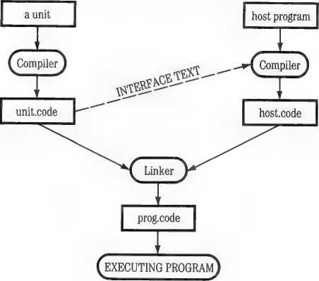
The process of compiling an Intrinsic Unit, placing its code in a library file, then compiling a host program that uses it, goes like this:
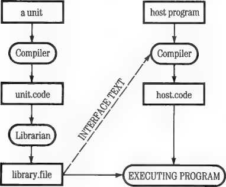
You write a Program Unit much like a program. One difference, however, is that you can string several units together and compile them into one codefile. To do this, separate them by semicolons and end the whole with a period:
Each unit follows this overall structure:
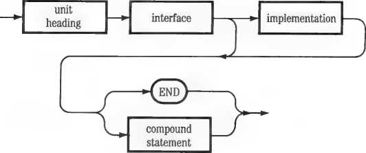
All of these parts are described in more detail below. Here is a summary:
□ The unit heading is like a program heading. It is different for Regular and Intrinsic Units.
□ The interface section declares “public” constants, types, variables, procedures, and functions—those that may be used by the host program. With procedures and functions, only their headings are written here. Label declarations are not allowed in the interface.
□ The implementation section provides the actual program body for each procedure or function declared in the interface section. It also declares “private” labels, constants, variables, procedures, and functions—those that may be used only by the unit. Type declarations are not allowed in the implementation section. If the interface section declares no procedures or functions, the implementation section is omitted.
□ The optional initialization section is like a “main program.” It is a BEGIN...END statement that is automatically executed at the beginning of the host program. If you omit it, write END instead.
These general rules apply to Program Units:
□ When you are compiling a program that uses a Program Unit, you will get a Compiler error if any identifier declared in the Program Unit’s interface section is also declared in the program.
□ However, conflicting identifiers may be used in the implementation section. This part of the Program Unit is “invisible” to the program that uses it.
□ A Program Unit cannot access labels, constants, types, variables, procedures, or functions declared in the program that uses it.
□ A Program Unit may not contain SEGMENT procedures or functions.
□ Nested Program Units may not be compiled at the same time; each inner unit must be compiled first and then accessed by its calling unit.
64KNote: When compiling Program Units with the 64K Pascal system, you must use the first level “swapping” Compiler option. Write |$S+| at the beginning of your unit’s source text, before any Pascal text. The “swapping” Compiler option is further discussed in Part II of this manual, Chapter 5.
There are two different forms of unit heading, depending on whether you am writing a Regular Unit or an Intrinsic Unit. The Regular Unit heading is written this way:
ho-
The Intrinsic Unit heading is written this way:
csegnum
constant
—< UN1T >~* ZL (intrinsic)-^; CODE y*
>
|
dsegnum |
L_J | |
|
constant |
- | |
o-
DATA
In both cases, the new identifier is the same as the identifier written in the USES declaration in the program that calls the Program Unit.
The Intrinsic Unit’s csegnum (code segment number) and optional dsegnum (data segment number) are two different integers. They are chosen from the range 7 to 31 for the Pascal 64K system, and 7 to 57 for the Pascal 128K system.
The word DATA and a dsegnum are required if and only if the Intrinsic Unit declares global variables in either its interface or its implementation. Local variables declared inside procedures or functions do not count.
You assign the csegnum and dsegnum numbers when you write an Intrinsic Program Unit. You must be careful that they do not duplicate any other
segment numbers used by your program. Here are some things to consider when choosing these numbers:
□ They must be different from each other and different from any code or data segment numbers used by any other Intrinsic Units accessed by the same program.
□ While any program is executing, its main program uses segment 1. Therefore, never use this number for an Intrinsic Unit.
□ Numbers 0,2 through 6, and 58 through 63 are reserved for use by Pascal.
□ If you write a unit with a csegnum or dsegnum greater than 31, the programs that use the unit must be executed under the 128K Pascal system.
□ If the program that uses the Program Unit defines any SEGMENT procedures or functions, or uses any Regular Units, Pascal will assign a number to each such procedure, function, or unit, starting serially from 7. These numbers must not conflict with the numbers you assign to Intrinsic Units. See Chapter 15, “Segment Numbers.”
□ Numbers already assigned to Apple Pascal Intrinsic Units should not be duplicated, if possible. They are the following:
20 TURTLEGRAPHICS (code)
21 TURTLEGRAPHICS (data)
22 APPLESTUFF
28 CHAINSTUFF
29 TRANSCEND
30 LONGINTIO
31 PASCALIO
A Program Unit’s interface section immediately follows its unit heading. This is the only part of the Program Unit that is directly accessible to the program that calls it. It is the part that is “visible" from the outside; it specifies how any program that uses the unit can communicate with it. It
consists of the word INTERFACE Mowed by constant, type, and variable declarations and/or procedure and function headings:
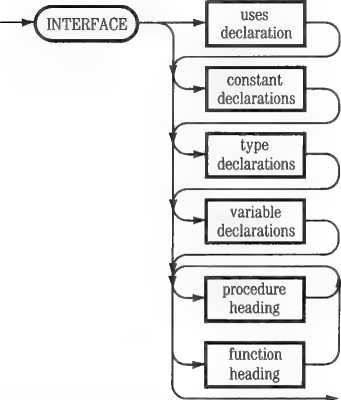
The interface declarations become “public”—any program that uses the Program Unit can access them just as if they were declared in the program itself.
You can read the interface section of any Program Unit from its codefile by using the LIBMAP utility program described in Part II, Chapter 8.
You can write comments in the interface section, which can be read from the codefile by LIBMAP. However, such comments will increase the codefile size.
The following rules apply to writing a Program Unit interface section:
□ A USES declaration must be included if the Program Unit uses another Program Unit. For the rules under which one unit can use another unit see below, “Nesting Program Units.”
□ No label declarations are allowed in the interface section.
□ No SEGMENT procedures or functions are allowed in a Program Unit, n The constant, type, and variable declarations in the interface
section follow the same syntax and are allowed the same range as such declarations in a program.
o The procedure and function headings consist of the procedure and function definitions without their program blocks. See Chapter 8 for syntax details.
□ The |$I| (“include file”) Compiler option may not be used in the interface section.
For an illustration of an interface section, see the sample Program Unit given later in this chapter.
A Program Unit’s implementation section contains the blocks corresponding to the procedure and function headings contained in its interface section. If there are any such headings, an implementation section must be written; if there are no such headings, it must be omitted. The implementation section also contains declarations and other procedures and functions necessary to support these routines. These supporting declarations and routines are “private”; they cannot be accessed from outside the Program Unit.
The implementation section immediately follows the last procedure or function heading in the interface section. It consists of the word IMPLEMENTATION followed by declarations:
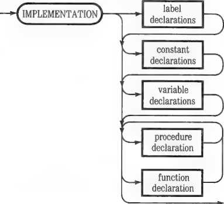
The label, constant, and variable declarations are written the same way as in a program. Each procedure or function declaration corresponds to a procedure or function heading in the interface section. It consists of a block
preceded by the procedure or function identifier and a semicolon. This form is identical to the form in which a FORWARD procedure or function is written, as described in Chapter 8.
The following rules apply to writing a Program Unit implementation section:
□ It can use other Program Units called by USES declarations in the interface section, but it may not contain any “private” USES declarations of its own.
□ It may not contain any type declarations.
□ The label, constant, and variable declarations in the implementation section follow the same syntax and are allowed the same range as such declarations in a program; except that the only place a file variable may be declared is as a variable parameter of a procedure or function.
□ It may contain its own procedures and functions, defined as in a program, for use only in the implementation section.
□ Each block in the implementation section corresponding to a procedure or function heading in the interface section may contain its own local declarations, as well as program statements. It must be preceded by the routine identifier and a semicolon; parameter lists and function type identifiers are not repeated, however.
A Program Unit’s initialization section is optional. If included, it constitutes a compound statement. This statement is executed as soon as any program that uses the unit starts running, before its own code is executed. It is written exactly like the main part of a program: BEGIN, followed by a series of statements separated by semicolons, and END:
If you omit the initialization section, write just END instead. If this terminates the source text to be compiled, follow END with a period; if the Program Unit is one of a series to be compiled together, follow END with a semicolon.
The principal purpose of the initialization section is to intialize variables declared in the unit, and perform other “housekeeping” chores before the unit is used. It is executed only once.
When writing an initialization section, bear these rules in mind:
□ It may not contain any declarations or procedure or function definitions of its own.
□ It may not access any declarations or routines in the program that uses the unit; in particular, it cannot intialize variables declared in the using program.
□ However, it can freely access all the declarations and routines in both the interface and implementation sections of its unit, together with public material from any other unit called in the interface section. It can initialize the unit’s variables, which are now global to the host program.
The following is a complete Intrinsic Unit with a data segment and an initialization, to demonstrate the techniques just described. It provides convenient features for opening textfiles.
UNIT OPENS;
INTRINSIC CODE 17 DATA 18;
INTERFACE
VAR OFILRESULT, NFILRESULT: INTEGER;
{Two public variables: these are both initialized to -1,
and subsequently used by the public procedures to hold results from the IORESULT function. Because of these variables, the data segment is needed.}
PROCEDURE OPENOLDFILE {VAR F: TEXT; VAR FILENAME: STRING);
PROCEDURE OPENNEWFILE CVAR F: TEXT; VAR FILENAME: STRING);
{Two public procedures for opening text files: these are
similar except that OPENOLDFILE uses RESET while OPENNEWFILE uses REWRITE. If the pathname has no suffix, the suffix .TEXT is added. I/O checking is turned off while the file is opened, and then IORESULT is used to check whether the file was opened successfully. OPENOLDFILE puts the result in OFILRESULT and OPENNEWFILE puts the result in NFILRESULT; the host program can check these variables to find out what happened.}
IMPLEMENTATION
<A private procedure that is called by the public ones, to add the .TEXT suffix to a filename if it doesn't have a suffix:)
PROCEDURE ADDSUFF CVAR FILENAME: STRING);
BEGIN
IF POS t'.TEXT', FILENAME) = 0
THEN FILENAME CONCAT CFILENAME, '.TEXT')
END;
{The first of the public procedures. The parameter list is made into a comment, since the parameters have already been declared in the interface:)
PROCEDURE OPENOLDFILE {CVAR F:TEXT; VAR FILENAME:STRING)); BEGIN
ADDSUFF CFILENAME);
{ * I - >
RESET CF, FILENAME);
{*I + >
OFILRESULT := IORESULT END;
{The other public procedure. Again, the parameter list is made into a comment:)
PROCEDURE OPENNEWFILE {CVAR F:TEXT; VAR FILENAME:STRING)); BEGIN
ADDSUFF CFILENAME);
{$1-)
REWRITE CF, FILENAME);
{*1 + )
NFILRESULT := IORESULT END;
{The initialization, which provides initial values for the two public variables. The value -1 is chosen because it is never returned by the IORESULT function:)
BEGIN
NFILRESULT := -1;
OFILRESULT := -1 END.
A Program Unit may use other Program Units if you include a USES declaration in its interface section.
These rules apply to nesting Program Units:
□ An Intrinsic Unit cannot use a Regular Unit.
□ At each level of nesting, including the program that uses the first unit, all nested units must be specified in the USES declaration. Moreover, they must be specified in order, with the most deeply nested first.
Here is an example of a host program using a Regular Program Unit that has Intrinsic Program Units nested two deep inside it:
PROGRAM EGGCUP;
USES YOLK, WHITE, SHELL;
UNIT SHELL;
INTERFACE USES YOLK, WHITE;
UNIT WHITE; INTRINSIC CODE 23 DATA 24;
INTERFACE USES YOLK;
UNIT YOLK; INTRINSIC CODE 25;
To compile and execute EGGCUP, you would follow these steps:
1. Compile YOLK and place the resulting codefile in a library.
2. Compile WHITE while the library containing YOLK is accessible to the Compiler. Place the result in the same or a different library.
3. Compile SHELL while one or more libraries containing both YOLK and WHITE are accessible to the Compiler.
4. Compile EGGCUP while YOLK, WHITE, and SHELL are all accessible to the Compiler.
5. Because SHELL is a Regular Unit, link the compiled codefiles for EGGCUP and SHELL into a single executable codefile.
6. When executing the resulting codefile, make sure that both YOLK and WHITE are accessible in one or more libraries. SHELL is no longer needed.
One advantage of using Program Units is that they allow you to create a
hierarchical structure of logically separated program sections. When you
make changes in such a structure, however, keep these rules in mind:
□ If you change the source text of a program or unit that uses a Regular Unit, you must recompile it and then use the Linker to relink the Regular Unit into its codefile.
□ If you change a program or unit that uses an Intrinsic Unit, you need to recompile it. But if the change does not require a change in the operation of the Intrinsic Unit, you do not need to recompile the unit.
□ If you change a Regular Unit’s interface section, you must recompile it and then recompile all programs or units that use it. You must then use the Linker program to relink it into all their codefiles.
□ If you change a Regular Unit’s implementation section, you must recompile the unit and then use the Linker program to relink it into the codefiles of all programs that use it.
□ If you change an Intrinsic Unit’s interface section, you must recompile it and then recompile all programs or units that use it.
□ If you change an Intrinsic Unit’s implementation or initialization section, you need only recompile the unit.
If not otherwise instructed, the Compiler automatically arranges to load all Program Unit code, including the code for nested units, into Pascal memory space before the start of program execution. When memory space is limited, you may want to use one of Apple Pascal’s Compiler options to control when your Program Unit code is loaded. You have two choices:
□ The “no-load” option |$N+| keeps all Program Units out of memory until actually needed. This does not, however, prevent their initialization sections (if any) from being executed.
□ The “resident” option j$R| allows you to associate the loading of specific Program Units with specific procedures or functions. The Program Units are loaded into memory only while the routines are being executed.
The syntax for writing Compiler options is given in Chapter 14. The options themselves are discussed more fully in Chapter 15 under “Executing Large Programs,” and in Part II of this manual, Chapter 5.
111-223
Controlling Loading of Units
64K Note: These techniques are particularly important if you run programs that use Program Units in the 64K Pascal system. For further memory-saving suggestions, see Chapter 15.
Chapter 13
Libraries
Libraries are special codefiles that are not directly executed. The purpose of libraries is to make Intrinsic Unit codefiles accessible to your programs during compilation and execution. Program Units are described in Chapter 12. Here are the ways that libraries help your programs access Intrinsic Units:
□ During program compilation, every Intrinsic Unit that the program uses must either reside in the file SYSTEM.LIBRARY or be specified by a “using” Compiler option.
□ During program execution, every Intrinsic Unit that the program uses must be accessible through one of the kinds of library described below.
Here are the ways that libraries help your programs access Regular Units:
□ During program compilation, every Regular Unit that the program uses must either reside in the file SYSTEM.LIBRARY or be specified by a “using” Compiler option.
□ During program linking, if the Run command is used, all Regular Units needed by your program must be in SYSTEM.LIBRARY. Otherwise you must use the Compile command to compile your program and then the Link command to invoke the Linker explicitly, giving it the name of the Regular Unit codefile. These commands are described in Part II of this manual, Chapter 2.
Because Regular Units are incorporated into your program’s codefile, they do not need to be present during program execution. Leaving Regular Units in a library after you have compiled and linked your program has disadvantages:
□ Leaving Regular Units in a library allows less space for Intrinsic Units, which must be in a library during program execution.
□ Whenever you change a Regular Unit in a library, you must create a new library.
There are three kinds of libraries:
□ SYSTEM.LIBRARY, the system library accessible to all programs.
□ A Program Library. This is a library that is specific to one program.
□ A Library Name File. This is a textfile, specific to one program, that contains the names of one or more libraries or unit codefiles.
Apple Pascal provides several methods for building and inventorying libraries:
□ You can rearrange SYSTEM.LIBRARY or create a Program Library with the Apple Pascal LIBRARY program described in Part II, Chapter 8.
□ You can create a Program Library from a single unit codefile by using the Pascal 1.3 Filer to rename it.
□ You can write a Library Name File by following the instructions later in this chapter.
□ You can analyze the contents of any library, or any library unit codefile, with the Pascal LIBRARY and LIBMAP programs described in Part II, Chapter 8.
The Apple Pascal 64K and 128K systems have different library capabilities. Table 13-1 compares the kinds of library options available under the 64K system with those available under the 128K system.
|
64K System |
128K System |
|
Allows one library on line per program: SYSTEM. LIBRARY Must be on system disk Keeps its own name Files can be shared Limit: only one on line |
Allows up to six libraries on line per program: PROGRAM LIBRARY FILE Same disk as program Takes name of program code file and adds .LIB Files cannot be shared Limit: one per program or replace PLF with a LIBRARY NAME FILE Same disk as program Takes name of program code file and adds .LIB Facilitates library file sharing Limit: one per program Lists filenames of up to 5 library files LIBRARY FILES Up to 5 usable by a program Any name Can be shared by programs SYSTEM.LIBRARY Must be on system disk Keeps its own name Files can be shared Limit: only one on line |
SYSTEM.LIBRARY is the name of the library file that comes with the Apple Pascal software. To be accessed, it must be on the same disk as the file SYSTEM.PASCAL. It is accessible to all programs, and is automatically searched for needed units during program compilation and execution. In its original form, SYSTEM.LIBRARY contains these units:
LONGINTIO TRANSCEND APPLESTUFF PASCALIO
CHAINSTUFF TURTLEGRAPHICS
All of these are Intrinsic Units. They are used by certain Apple Pascal built-in operations, as follows:
LONGINTIO is required by the long integer data type and all arithmetic operations involving long integers. It also is required by the STR function that converts numeric values to strings.
TRANSCEND is required by the trigonometric and logarithmic functions of Apple Pascal—SIN, COS, ATAN, LOG, LN, and EXP—plus the square root funtion SQRT.
APPLESTUFF is required by the operations RANDOM and RANDOMIZE, plus several miscellaneous I/O operations: KEYPRESS, PADDLE, BUTTON, and NOTE.
PASCALIO is required by the I/O procedure SEEK, and the procedures WRITE, WRITELN, READ, and READLN when they are used with data of type REAL.
CHAINSTUFF is required by the program chaining operations discussed in Chapter 16.
TURTLEGRAPHICS is required by the screen graphics operations discussed in Chapter 11.
You can change the contents of SYSTEM.LIBRARY by using the LIBRARY utility program described in Part II of this manual, Chapter 8.
These rules govern the use of SYSTEM.LIBRARY:
□ SYSTEM.LIBRARY must reside on the system disk—the disk that also contains SYSTEM.PASCAL. Otherwise Pascal cannot find it.
□ SYSTEM.LIBRARY may contain up to 16 units.
SYSTEM.LIBRARY
A Program Library is a library file, on the same disk as the program’s codefile, that is given the same name as the program’s codefile except that its suffix is .LIB rather than .CODE. For example, if a program’s codefile has the filename
MAIL:SORT.CODE
then the corresponding Program Library will have this designation:
MAIL:SORT.LIB
Here are some rules about Program Libraries:
□ Program Libraries may be used only with the 128K Pascal system.
□ A Program Library, like SYSTEM.LIBRARY, may contain up to sixteen units.
□ A program may have only one Program Library, although it may access SYSTEM.LIBRARY as well.
□ A Program Library may be accessed directly by only one program. However, other programs may access it through Library Name Files.
To compile a program that uses units in a Program Library you must specify the Program Library by means of a “using” Compiler option, described later in this chapter.
If the name of your program’s codefile is more than 11 characters long and does not end in .CODE, then Pascal looks for a Program Library name formed by truncating Hie codefile name to 11 characters and adding .LIB. For example, if your program’s codefile is
PANDORA:SYSTEM.STARTUP
then Pascal will look for a Program Library named
PANDORA:SYSTEM.STAR.LIB
Program Libraries have these advantages over SYSTEM.LIBRARY:
□ They can be smaller because they contain only the units needed by a specific program.
□ They do not need to take up space on the same disk as SYSTEM.PASCAL.
□ There is less risk of duplicating segment numbers, because Program Libraries contain only the units needed by a specific program.
A Library Name File is a textfile you create that contains a list of filenames of up to five library files that contain Intrinsic Units your program needs. As long as its filename is correctly given, a library file listed in a Library Name File can be on any disk that is on line at the start of program execution. The Library Name File uses the same naming convention as a Program Library: you give it the name of the program’s codefile, using .LIB as the suffix. The specific format for a Library Name File is described in the next section of this chapter.
Here are some rules about Library Name Files:
□ Library Name Files may be used only with the 128K Pascal system.
□ A program may have only one Library Name File, although it may access SYSTEM.LIBRARY as well.
□ A program can have a Library Name File or a Program Library, but not both because they both would have the same name.
By listing library file filenames in a Library Name File, you direct the system at the start of execution time to search the files with these filenames to find any Intrinsic Units needed by the program. Later in this chapter, you will see how library files on the same disk as the program or on a different disk can be listed in a Library Name File and how they can be shared by more than one program.
For a program requiring only a few units, you will find that a Program Library will take care of your library file needs. For a larger and more complex application—one using a large number of Intrinsic Units—you should instead use a Library Name File. Using a Program Library limits you to units residing on the same disk as the executing program. SYSTEM.LIBRARY also has a limited utility for large applications: it must reside on the system disk, where it takes up valuable space.
These are the advantages of using Library Name Files for your application programs:
□ Up to six library files (including SYSTEM.LIBRARY) can be made available to a program. As before, each library file can hold up to 16 unit segments, although the maximum number of segments allowed is 64.
□ A library file can be shared by two or more programs by listing it in separate Library Name Files for each of the programs.
□ Disk space can be conserved by having only one copy of the same Intrinsic Unit shared between programs.
□ Your program can use library files on different disks.
III-231
Library Name Files
A Library Name File is a textfile that must conform to a specific text format.
To make a Library Name File, use the Editor to make a file following this format:
LIBRARY FILES:
<filename>
<filename>
<fiiename>
<filename>
<filename> it
Here are some notes on this format:
□ The L in LIBRARY must be the first character on the first line in the file. You cannot have any blank lines, spaces, or other characters at the top of the file or between lines. The string “LIBRARY FILES:” may be in uppercase or lowercase. Press RETURN after each line.
□ Below LIBRARY FILES: and also beginning at the left margin, type on separate lines the filenames (followed each time by RETURN) for each file you want to designate as a library file. You can have five or fewer filenames in your file. The system will ignore any filenames listed after the fifth one.
□ Two dollar signs ($$) make up the last line of the file no matter how many filenames you use.
After you’ve made your Library Name File, give it the name of the program’s codefile, but with the .LIB suffix, such as UPDATE.LIB. The following paragraphs tell you in more detail how to select and arrange library files, including those to be shared by using the Library Name Files.
This section gives several examples of how to use library files with the Library Name File.
MAIL:
UPDATE.CODE PREP.LIB UPDATE.LIB
UTILS:
SORT.CODE SORT.LIB
Suppose you have written two short applications, called SORT and UPDATE, each one stored on a separate disk. Each has to have a set of Intrinsic Units on line when being executed. Right now the Intrinsic Units are stored in the library file named PREP.LIB on the same disk (MAIL:) as UPDATE:
MAIL: {a volume}
UPDATE.CODE {a program codefile}
PREP.LIB fa library file}
If you wanted either one of the applications to be able to use the Intrinsic Units contained in PREP.LIB, you would first have to list the filename of PREP.LIB in a Library Name File on the associated disk, as shown here:
<a volume}
<a program codefile} fa library file}
fa Library Name File . . library files:
MAIL:PREP.LIB
**
}
Note that the Library Name File takes the same name (except for the suffix) as the codefile for the program (UPDATE) that uses it. Also note that for both programs to share the same library file—in this case PREP.LIB— you do not need to place PREP.LIB itself on both disks. Instead, you leave the file on the disk MAIL: and list its filename in a Library Name File on the other disk, UTILS:
fa volume}
<a program codefile}
fa Library Name File . . library files:
MAIL:PREP.LIB
*$
}
Now PREP.LIB is a shared library file, its units usable by both programs even though it resides on only one of the two disks. Of course, the disk MAIL: must be on line when the program SORT is executed so that SORT may have access to the library file PREP.LIB.
If you have a number of library files on the same disk as the executing program where, for example, the program SEARCH.CODE has the filename REPORT:SEARCH.CODE, your Library Name File (with the filename REPORT:SEARCH.LIB) would contain
LIBRARY FILES:
REPORT:LIB1.LIB REPORT:LIB2.LIB REPORT:LIB3.CODE
$$
LIB1.LIB, LIB2.LIB, and LIB3.CODE are sample names for library files. (You may use any name for a file containing Program Units, as we did for LIB3.CODE, although using the suffix .LIB makes it easier to remember that it is a library of units.)
You could simplify the writing of a Library Name File by setting the Pascal prefix to the name of the disk you are currently using. For example, if you set the Pascal prefix to the volume name, REPORT: (or, say, #9:) before executing SEARCH.CODE, you could write the Library Name File more simply, like this:
LIBRARY FILES:
LIB1.LIB LIB2.LIB LIB3.CODE *$
The system will attach the prefix to a library filename before opening that file. Setting the prefix is described in Part II of this manual, Chapter 3.
If you use the Pascal prefix in conjunction with the set of filenames listed in the Library Name File, you must make sure that the prefix is set to produce the correct filenames so that the program can find its library files when it is executing. If you successively execute programs on different disks, or programs with library files on different disks, you will need to change the Pascal prefix before executing each program to ensure that the filenames for the shared library are correct at execution time. You may find it convenient to rely on setting the prefix during program development, but you would probably not ask a user to set the prefix before running an application program. A more foolproof way would be to use the percent prefix before each filename, as explained later.
A program on one disk can use library files on a different disk. For example, say that you want to use two of the library files on the disk REPORT: for a program called POST.CODE on a second disk, ACCOUNTS:, without physically moving those two files from the original disk (REPORT:). You can do this easily by listing the library files needed by POST.CODE in a Library Name File called POST.LIB. You can use the complete filename, as in the following example, or set the Pascal prefix to REPORT: before running the program, as explained in the previous section.
ACCOUNTS: POST.CODE POST.LIB
{a volume}
{a program codefile}
{a Library Name File . . library files:
REPORT:LIB1.LIB REPORT:LIB2.LIB *$ }
Note that the library files LIB1.LIB and LIB2.LIB, physically located on the first disk (REPORTS:), are shared by both programs (SEARCH and POST) but that LIB3.CODE is not shared because its filename is not listed in the Library Name File on the second disk (ACCOUNTS:). Had it been listed in the Library Name File POST.LIB, then it too would have become a shared library, usable as well by the program POST.CODE, even though the actual library file was physically located on the disk of the program SEARCH.CODE along with the other two library files.
Many possible arrangements of library files are supported by the Pascal 128K system. The examples just mentioned are simply hints to help you get started in developing your own shared libraries. As you can see, you will want to give considerable thought to the overall structure of your application and to the number of disk drives you presently have on line. In particular, you will want to plan the kind of library files appropriate to each program, the files you will designate as shared libraries, and the best arrangement on disk of all the files for a particular application program. The section “How the System Searches Libraries,” later in this chapter, gives a brief description of how libraries are searched for the Intrinsic Units required by the executing program.
You can use the percent prefix to make a Library Name File independent of its disk name. Because the percent prefix is set to the name of the disk containing the executing codefile, you can use the percent prefix in the
Library Name File to replace the volume names of the listed library files. Suppose you had this set of files:
MYFILE: MIX.CODE MIX.LIB OLD.LIB NEW.LIB
{a volume!
{a program codefile} fa Library Name File! {a library file} fa library file}
If you wanted to use the percent prefix, the contents of the Library Name File for MIX.C0DE, which is MIX.LIB, would be
LIBRARY FILES: XOLD.LIB XNEW.LIB *$
Then when you execute MYFILE:MIX.CODE, the system sets the percent prefix to MYFILE:, opens up the Library Name File MIX.LIB, and reads the filenames for the two library files OLD.LIB and NEW.LIB. In this case the system expands the filenames like this:
XOLD.LIB becomes MYFILE:OLD.LIB
XNEM.LIB becomes MYFILE:NEM.LIB
The stands for the disk name, MYFILE:, of the program MIX.C0DE.
Making Life Easy: Keep in mind when developing an application that the grouping of related programs and their libraries together on the same disk facilitates the use of the percent prefix to specify library files.
The “using” Compiler option lets you specify a library other than SYSTEM.LIBRARY as the location of Program Units needed during program compilation. It is written as $U followed by the complete filename of a library, and is inserted inside the USES declaration at the beginning of your
program. It directs the Compiler to the specified library for all units named after it, up to the next “using” option. For example:
USES CAT, -£*U YARD:KENNEL.LIB> SETTER, TERRIER,
{*U BOWL:WATER.LIB> GOLDFISH;
With this USES declaration, the Pascal Compiler will look for the unit CAT in SYSTEM.LIBRARY on the system disk, as usual. It will look for the units SETTER and TERRIER in the library KENNEL.LIB on the disk YARD:. It will look for the unit GOLDFISH in the library WATER.LIB on the disk BOWL:.
The “using” Compiler option is necessary when you are compiling a program that uses units that are not in SYSTEM.LIBRARY.
For further information about Compiler options, see Chapter 14 and Part II of this manual, Chapter 5.
If there are Intrinsic Units needed that have not been found in a Program Library or by means of a Library Name File, or if your program has not used either of these libraries at all, the system looks in SYSTEM.LIBRARY. If the missing units are not found in SYSTEM.LIBRARY, or if SYSTEM.LIBRARY is not on the system disk, Pascal displays an error message and returns control to the Command line.
The system searches for the Intrinsic Units until it finds all of them or until it runs out of library files and gives an error message. If it finds the units before it has looked in all the relevant library files, it stops searching and begins executing the program.
III-237
Chapter 14
Compiler Options
Compiler options are instructions to the Pascal Compiler that you write in your program’s source text. They take effect at the point where the Compiler reads them during compilation. There are four kinds of options:
□ Options that control the operation of the Compiler itself, such as choosing whether or not it will create a program listing;
□ Error-checking options that allow you to turn on and off certain automatic error-reporting features;
□ Options that allow you to control the compilation and loading of program segments and Program Units;
□ Miscellaneous Compiler options.
The specific Compiler options provided by Apple Pascal are discussed in detail in Part II of this manual, Chapter 5. This chapter covers their syntax rules and includes a summary.
The Compiler recognizes Compiler options because they always begin with a dollar sign followed by a capital letter, and are enclosed in the same delimiters as comments. Some Compiler options include plus or minus signs to indicate that an option is to be turned on or off. Others are followed by a filename or other string of characters. The only place a Compiler option can contain a space character is between it and its argument (for example, between it and a filename). Do not write any space characters within the option syntax itself. Here are some examples:
{$P} {$G+} (*$I—*) {$UMYDISK:MYFILE.CODE}
When the Compiler encounters a beginning comment delimiter followed by a dollar sign—/# or (*$—it treats the subsequent text as one or more Compiler options, until it reads a space character or the closing comment delimiter. You can string several options together, using commas to separate them; don’t add extra spaces:
{$P,$G+,$I—} (*$P,$G+,$I—•)
However, an option that is followed by a name or string of characters must be the last option in the sequence. All characters between the option letter and the closing delimiter are taken as the name, except spaces before or after the name. If the first character of a name is + or —, you must write a space between it and the option letter.
Finally, you can insert a space character and write a comment. All text between the space and the closing bracket will be ignored by the Compiler:
{$P,$G+,$I— The comment field starts with a space like this}
Some Compiler options must be placed in specific locations. These locations are specified in Part II, Chapter 5. Other options may be written any place in your source text, subject to these rules:
□ You can write a Compiler option any place you can write a Pascal statement.
□ Once a Compiler option has been executed anywhere in a program it remains in force until superseded by execution of a countermanding Compiler option.
□ Any option followed by a name or string must be the last one in a sequence.
Table 14-1 is a summary of the Apple Pascal Compiler options, in alphabetical order. For each option it gives its symbol or symbols, the default option that holds when any program begins, and the action it performs. If the option is discussed in this Language Manual, a reference is included.
III-241
Compiler Option Summary
|
Command |
Default |
Action |
Reference |
|
$C string |
Embed comment in codefile | ||
|
$G+ $G— |
$G— |
Permit/forbid GOTO statements |
Chapter 7 |
|
$1+ $1- |
$1+ |
I/O checking on/off |
Chapter 10 |
|
$1 filename |
Include named file in source text |
Chapter 15 | |
|
$L+ $L— |
$L— |
Make/omit a Compiler listing | |
|
$L filename |
Send Compiler listing to file | ||
|
$N+ $N— |
$N— |
Prevent/allow unit loading |
Chapter 15 |
|
$NS digit |
Advance automatic segment numbering |
Chapter 15 | |
|
$P |
Paginate Compiler listing | ||
|
$Q+$Q— |
$Q— |
Screen off/on during compilation | |
|
$R+ $R— |
$R+ |
Range checking on/off |
Chapter 6 |
|
$R unit name or $R segment number |
Load segment |
Chapter 15 | |
|
$S+ $S— $S++ |
$S- |
Compiler swapping on/off |
Chapter 15 |
|
$U+ $U— |
$U+ |
User/system level compilation | |
|
$U filename |
Specifies file containing Program Unit |
Chapter 13 | |
|
$V+ $V- |
$V+ |
Varstring checking on/off |
Chapter 6 |
All Compiler options are discussed in Part II, Chapter 5, “The Compiler.” Those options for which no reference to this Language Manual are given above are fully covered there.
Large Program Management
Chapter 15
No matter how much memory space your hardware provides, the day will come when it is not enough. This chapter gives you some suggestions on how to make the most of the available memory when working with large or complex Pascal programs. Even when memory space is not a problem, you may find that these suggestions help you create cleaner and more efficient programs.
There are four areas where large programs most commonly generate problems:
□ editing
□ compiling
□ linking
□ executing
The available techniques for coping with large-program problems in these areas are discussed separately below.
The Apple Pascal Editor has a file capacity of 17920 characters with the 64K system and 32256 characters with the 128K system. Ordinarily, all the text to be compiled as one program is present in a single textfile.
When a program outgrows the Editor’s capacity, you must break it up. You can do this by using the “include” Compiler option to pull a series of separate files of source text into one compilation. This option is described in Part II of this manual, Chapter 5.
Being able to edit a large source text is no guarantee that the Compiler will be able to compile it. The compilation process has these limitations:
□ The maximum number of procedures and/or functions allowed in any segment is 254.
□ The maximum amount of P-code allowed for any block is 1999 bytes.
□ The nesting limit for procedures and functions is 8 levels.
These limitations are discussed under “Size and Complexity Limits” in Chapter 8.
The Compiler might fail to process a large or complex program for either of two reasons:
□ The source text exceeds one of the limitations listed above.
□ The source text is satisfactory, but there is not enough memory available for the Compiler to process it.
If the problem is size or complexity of the source text, you can try these remedfes:
□ Where the Compiler reports “procedure too long,” break your program down into smaller procedures. Look for ways to create shorter, more straightforward routines.
□ Where the Compiler reports “too many procedures,” write part of your program in separately compilable Program Units, or use nested SEGMENT procedures.
If the problem is insufficient memory on the 64K Pascal system, use the “swapping” Compiler option described in Part II of this manual, Chapter 5, to release more memory during compilation. The “swapping” Compiler option affects only the operation of the Compiler; it does not provide more memory during execution. If you are using the {$S++} Compiler option and there is still not enough memory for compilation, use the Command-level Swap option described in Part II, Chapter 2, as well. Swapping during compilation is effective only with the 64K Pascal system.
A general solution to size, complexity, or memory problems during compilation is to break your program into separately compilable Program Units. Program Units are described in Chapter 12.
When linking a large program, it is possible for the Linker to fail because there is not enough memory available to store the routines being linked.
A general solution is to change some Regular Program Units to Intrinsic Program Units. Intrinsic Units do not need to be linked.
With the 64K Pascal system, you can sometimes alleviate the problem of insufficient memory during linking by using the Command-level Swap option described in Part II of this manual, Chapter 2. This technique has no effect with the 128K Pascal system.
The most common large-program problems occur during program execution.
Forestalling them is an important part of the programmer’s art. Apple
Pascal provides a selection of techniques to help you. They can be classified
in three general areas:
□ Programming methods that get the same tasks done with less memory usage and/or less Pascal code. These are summarized next, under “Efficient Programming.”
□ Ways of freeing memory space that would otherwise be occupied by operating system code. See “Using Operating System Memory,” below.
□ Techniques for managing program segments. These are described below in the section “Program Segmentation.”
The 64K and 128K Apple Pascal systems use memory in different ways. In the 64K system, about 38K of memory is available for all P-code, 6502 code, and data. They share the same memory space.
In the 128K system, about 43K of memory is available for 6502 code and data. An additional 38K or so is available for P-code. So with the 128K system it is important to distinguish between techniques that conserve data space and techniques that conserve P-code space. With the 64K system it does not matter.
In the following sections, techniques that conserve 128K data space are marked [ 128K DA TA ]\ techniques that conserve 128K code space are marked [128K CODE],
A number of memory-conserving programming methods have been
mentioned so far in this manual. Here is a brief summary of them:
□ Declare minimum size data types. With strings, specify the maximum size of each variable. Pack arrays and records wherever possible, and use variant record types. Use BYTESTREAM or WORDSTREAM instead of array types of fixed size. [128K DATA]
□ Use dynamic variables instead of static variables. [128K DATA]
□ Use MARK and RELEASE to optimize usage of the memory space allocated for dynamic variables. [128K DATA]
□ Use repetition statements and recursive techniques where appropriate, instead of linear routines. [128K CODE]
□ Use IF statements instead of CASE statements if the ordinal values of the CASE selectors are widely spread. [128K CODE]
□ Make similar program sequences into procedures or functions, where possible. [128K CODE]
□ Specify SEGMENT procedures and functions. [128K CODE]
□ Use the j$I—} and |$R—| Compiler options to reduce code size (at the expense of decreasing automatic error checking). [128K CODE]
□ Use the Compiler options |$N+} and |$Rf to keep segments out of memory until needed. [128K CODE]
When you start up Apple Pascal, all the Pascal operating system code is loaded into memory. However, Apple Pascal provides techniques by which you can keep some of the operating system code out of memory, thereby increasing the memory space available for user code and data. There are two ways you can accomplish such operating-system swapping:
□ By executing the Swap command from the Pascal Command level before running your program. This process is described in Part II of this manual, Chapter 2.
□ By using the CHAINSTUFF procedures SWAPON and SWAPGPON. These are described in Chapter 16 under “Program Chaining.”
The results in both cases are the same. You liberate memory space that would otherwise contain operating system code. In the 64K system it becomes available for data, 6502 code, or P-code. In the 128K system it becomes available only for P-code.
The cost of operating-system swapping is that certain program operations become slower, because when they are called the required operating system
code must be loaded from the Pascal system disk. Two levels of swapping are available:
□ With level 1, the code that implements the I/O procedures REWRITE, RESET, and CLOSE is swapped out. Your program gains 2274 bytes of memory space.
n With level 2, the code that implements the I/O procedures GET and PUT is swapped out, in addition to the level 1 code. These procedures slow down, together with the WRITE, WRITELN, READ, and READLN procedures that call them. Your program gains 810 more bytes for a total gain of 3084 bytes of memory.
In addition to the foregoing, the Pascal operating system uses 2048 bytes of memory space when it reads a disk directory. This happens during any REWRITE, RESET, or CLOSE procedure with a block-structured device or disk file. The space can be freed for program use by executing a MARK, RELEASE, or NEW procedure call. [128K DATA]
To make the most efficient use of the memory space available for program code and data, you can divide programs into segments. This section gives essential information on how Apple Pascal implements segmentation.
A segment is code (or data space) that can be loaded into memory by itself, independent of other segments. Every program consists of at least one segment, and some programs consist of many segments. Whenever a program is compiled, the Compiler and Linker create the following segments in the codefile:
□ Each SEGMENT procedure or function becomes a segment in the codefile.
□ Each Regular Unit that the program uses becomes a segment in the codefile.
□ The main program itself becomes a segment in the codefile. This includes the program’s non-SEGMENT procedures and functions.
Similarly, whenever a Regular Unit is compiled, the result is a code segment for the unit itself, plus an additional segment for each Regular Unit that is used within the unit being compiled. (Note that SEGMENT procedures and functions are not allowed inside units.)
When an Intrinsic Unit is compiled, it produces a code segment, and may produce a data segment as well. (Note that an Intrinsic Unit cannot use a Regular Unit.)
Segments do not nest—every segment is just one segment and does not contain any other segments. For example, if the declaration of a SEGMENT procedure contains the declaration of another SEGMENT procedure, the result is two distinct code segments, even though they are nested syntactically and the scope is nested.
Every codefile (including library files) contains a body of information called a segment dictionary. The segment dictionary contains an entry for each segment in the codefile; the entry has all the information the system needs to load and execute the segment.
The segment dictionary has slots for 16 entries. Therefore, one codefile can contain at most 16 segments. In the case of a program, there is one segment for the program itself, one for each SEGMENT procedure or function, and one for each Regular Unit used by the program.
Intrinsic Units used by a program do not require entries in the segment dictionary of the program’s codefile. An Intrinsic Unit’s code segment is never in the program’s codefile—it is in a library file, and appears in the library file’s segment dictionary.
Therefore a program can have a maximum of 16 segments, not counting segments from Intrinsic Units. Counting segments from Intrinsic Units, a program can have up to 52 segments, as explained below.
When a program is executed, the Pascal Interpreter uses a segment table, which contains an entry for each segment that is used in executing the program. This table thus contains the following entries:
□ entries for 6 segments for the Pascal operating system
□ an entry for each segment in the segment dictionary of the program’s codefile
□ an entry for each Intrinsic Unit segment (both data and code segments) used by the program
In the 128KPascal system, the segment table has slots for up to 64 entries. The operating system uses 6, and slots 58-63 are reserved for Pascal. Thus 52 slots are left for the program to use. Remember that only 16 can be in the program’s codefile; any excess over 16 must be Intrinsic Unit segments.
In the 64KPascal system, the segment table has slots for up to 32 entries. The operating system uses 6; thus 26 slots are left for the program to use. Because only 16 can be in the program’s codefile, any excess over 16 must be Intrinsic Unit segments. .
A segment number is an index into the segment table; thus at run time, every segment has a segment number in the range 0..63 and no two segments in the program can have the same number.
These segment numbers are assigned to the program segments (except Intrinsic Unit segments) when the segment entries are placed in the codefile’s segment dictionary (before run time). Numbers are assigned as follows:
□ The program itself is Segment 1.
□ The segments used by the system are 0 and 2..6. These numbers are never assigned to segments of the program.
□ The segment numbers of Regular Unit segments and of SEGMENT procedures and functions are automatically assigned by the system; they begin at 7 and ascend. Note that after a Regular Unit is linked into a program, it might not have the same segment number that it had when it was compiled.
The segment number of an Intrinsic Unit segment is determined by the unit’s heading, when the Intrinsic Unit is compiled. You can find these numbers by examining the segment dictionary of the library file with the LIBMAP utility program, as described in Part II of this manual, Chapter 8.
To summarize the above, the segment numbers of the program itself, the segments used by the system, and any Intrinsic Units used by the program are fixed before the program is compiled; the segment numbers of Regular Units and of SEGMENT procedures and functions are not fixed, and are assigned as the program is compiled and linked, in ascending sequence beginning with 7.
Normally, the only time you need to specify segment numbers is in writing an Intrinsic Unit, as explained in Chapter 12.
Remember: If your program has any segments with a segment number greater than 31, or if it uses any Intrinsic Units with segment numbers greater than 31, it must be executed under the 128K Pascal system.
When unavoidable segment-number conflicts arise there is a solution: the Compiler has a “nextseg” option which allows you to specify the segment number of the next Regular Unit, SEGMENT procedure, or SEGMENT function encountered by the Compiler. For a discussion of Compiler options, see Chapter 14.
The “nextseg” option has the form ]$NS num}
where num is a literal integer constant that should be in the range 8..57.
The effect is to set the next segment number to num.
The “nextseg” option is ignored if it precedes the program heading; this means that it cannot be used to specify the segment number of the program itself.
The “nextseg” option will work only if the specified number is greater than the default number that would be automatically assigned. If the number specified in the “nextseg” option is less than or equal to the default segment number, the option is ignored.
For example, suppose that you want to use an Intrinsic Unit named ZEBRA, whose code segment number is 7 and whose data segment number is 8.
Your program also contains a SEGMENT procedure:
PROGRAM ELEPHANT;
USES ZEBRA;
SEGMENT PROCEDURE HORSE;
The Compiler will automatically compile the HORSE procedure as segment number 7; when you try to execute the program, the Pascal system will not execute the codefile because the program has two different segments with the number 7. There are two remedies: recompile ZEBRA with different '
segment numbers (if you have the source for ZEBRA) or use the “nextseg" option in your program:
PROGRAM ELEPHANT;
USES ZEBRA;
{♦NS 9>
SEGMENT PROCEDURE HORSE;
Now HORSE becomes segment 9 instead of segment 7, and the conflict is avoided.
Normally, the code of a SEGMENT procedure or function is present in memory only as long as it is active. If it is not active when it is called, it is loaded from the codefile (on disk). The following program illustrates this:
PROGRAM ONE; {Segment ONE is always in memory.!
SEGMENT PROCEDURE ALPHA; {In memory only when active.}
BEGIN
END;
SEGMENT PROCEDURE BRAVO; {In memory only when active.}
SEGMENT PROCEDURE CHARLIE; {In memory only when active.}
BEGIN {Body of CHARLIE}
ALPHA; {klhen this is executed, the segments in
memory are ONE, ALPHA, BRAVO, and CHARLIE.}
END;
BEGIN {Body of BRAVO}
CHARLIE; {klhen this starts executing, the segments in memory are ONE, BRAVO, and CHARLIE.}
ALPHA; {klhen this is executed, the segments in memory are ONE, BRAVO, and ALPHA.}
BEGIN {Body of ONE}
ALPHA; {klhen this is executed, the segments in memory are ONE and ALPHA.}
BRAVO; {klhen this starts executing, the segments in memory are ONE and BRAVO.}
END.
The “resident” Compiler option can be used to control the loading of SEGMENT procedures and functions, as explained below.
Normally, all segments of program Units used by a program are loaded automatically before the program begins executing, and remain in memory throughout program execution. For example, consider the following program where DELTA and GAMMA are two units, either Regular or Intrinsic:
PROGRAM TUIO
USES DELTA, GAMMA;
BEGIN
END.
Throughout program execution, the segments in memory are TWO, DELTA, and GAMMA. The loading of Program Unit segments can be controlled by the “no load" and “resident” Compiler options, as explained below.
In any case, the initialization section of every Intrinsic Unit is executed at program startup time. The order in which unit names are listed in the USES statement at the beginning of the program is significant; the initialization code for the units is executed in this order.
The “no load” Compiler option has the form
<$N + >
The option is placed at the beginning of the main program body (after the BEGIN). It causes all unit segments to be swapped in and out in the same way as SEGMENT procedures: thus a unit segment is in memory only when a procedure or function in its INTERFACE is referenced by the program.
The “no load” option does not prevent the initialization section of a unit from being loaded and executed before program execution; but after initialization, the unit segment is unloaded until it is activated. The initialization code is not executed when the unit is reloaded.
Consider the following program, where HUGEPROC is a large SEGMENT procedure and BIGUNIT is a large unit. The system does not have enough memory to hold HUGEPROC and BIGUNIT at the same time, along with the program itself.
PROGRAM THREE; USES BIGUNIT;
SEGMENT PROCEDURE HUGEPROC;
BEGIN
END;
BEGIN
{$N + ! {Keeps BIGUNIT out of memory until needed.! HUGEPROC;
CALCULATE; {A procedure in BIGUNIT!
HUGEPROC
END.
First HUGEPROC is called; BIGUNIT is not in memory because of the “no load” option. When CALCULATE is called HUGEPROC is not in memory, because it is a SEGMENT procedure; it is immediately swapped in. As soon as no part of BIGUNIT is active, it is again swapped out of memory, and HUGEPROC can be called again.
The “resident” Compiler option has one of the following forms:
{*R identifier!
{$R number!
where the identifier is the name of a unit or a SEGMENT procedure or function, and the number is the segment number of a unit or a SEGMENT procedure or function. This unit, procedure, or function is then said to be “resident” within the procedure or function that contains the option.
The “resident” option is placed at the beginning of the body of a procedure or function (after the BEGIN). It alters the handling of segments that would otherwise be in memory only when active: that is, SEGMENT procedures and functions, and units under the “no load” option.
When such a segment is called from a procedure or function that specifies it to be resident, it is immediately loaded into memory and remains there as
long as the calling procedure or function is active. For example, consider the following program:
PROGRAM FOUR;
USES BIGUNIT;
SEGMENT PROCEDURE HUGEPROC;
BEGIN
END;
PROCEDURE CALLHUGEPROC;
VAR I: INTEGER;
BEGIN
FOR Is-1 TO 100 DO HUGEPROC END;
PROCEDURE CALLCALCULATE;
VAR I: INTEGER;
BEGIN
FOR 11 -1 TO 100 DO CALCULATE <A procedure in BIGUNIT> END;
BEGIN
{$N+> {Keeps BIGUNIT out of memory until needed.! HUGEPROC;
CALCULATE;
CALLHUGEPROC;
CALLCALCULATE
END.
This resembles the previous example, but the CALLHUGEPROC and CALLCALCULATE procedures are new. As written, these two procedures have a problem: since HUGEPROC is a SEGMENT procedure, it will be swapped in from disk 100 times when CALLHUGEPROC executes, and because of the “no load” option in the main program body, BIGUNIT will be swapped in 100 times when CALLCALCULATE executes. This amount of
swapping is obviously undesirable, and it can be prevented by using the “resident” option in each of these procedures:
PROCEDURE CALLHUGEPROC;
VAR I: INTEGER;
BEGIN
{$R HUGEPROO
FOR Is-1 TO 100 DO HUGEPROC END;
PROCEDURE CALLCALCULATE;
VAR I; INTEGER;
BEGIN
<*R BIGUNIT}
FOR I: -1 TO 100 DO CALCULATE <A procedure in BIGUNITF END;
Now HUGEPROC will be kept in memory as long as CALLHUGEPROC is active, and BIGUNIT will be kept in memory as long as CALLCALCULATE is active.
Chapter 16
Miscellaneous Information
This chapter rounds out the Apple Pascal Language Manual with a selection of specialized programming suggestions and techniques. They are divided into the Mowing sections:
□ Suggestions for improving the execution speed of your Pascal programs;
□ A summary of techniques for circumventing the strong typing characteristic of the Pascal language;
□ Information about direct memory access from the Pascal program level;
□ Miscellaneous information about input/output operations not included in Chapter 10;
□ A description of Apple Pascal program chaining;
□ Several advanced programming techniques, illustrated by sample programs.
You can often accomplish the same program task with less execution time by choosing a different programming method. Most ways to improve execution speed are part of general programming skills, and hence beyond the scope of this manual. But there are a few specific points mentioned in other chapters that are worth summarizing here:
Special, fast P-codes are used to reference the first 16 words in each procedure’s data space. Declaring most-used variables first, so their values occupy the first 16 words, will improve execution speed.
String and packed array constants are stored in a linked list on the program stack. Each time one is referenced, the whole list must be scanned to that point. If your program has many such constants, you can improve execution speed by using variables and assigning them constant values.
When you swap operating system code to gain memory space, as described in Chapter 15 under “Executing Large Programs,” certain I/O operations are slowed down. Avoid swapping if your program needs these operations.
Packing and unpacking packed variables takes time, and should be avoided where possible.
Error checking takes time. You can speed up program execution by using the |$R-}, {$1—}, and j$V—} Compiler options, at the expense of losing the automatic error checking features they control.
When there are no more active invocations of procedures in a segment, the segment code is removed from memory. Loading segments slows program execution. You can increase execution speed at the expense of memory space by using the “resident” Compiler option discussed in Chapter 15. If you have enough memory space, it allows you to keep several segments in memory at once.
One of the important features of the Pascal language is the way it forces the programmer to declare specific types for all the data it handles. Some program tasks, however, are more easily accomplished by overriding this feature. There are several ways of defeating strong typing. They all follow the same pattern:
□ A data value is stored in memory as data of one type.
□ The same memory area is accessed as a data value of another type.
To accomplish meaningful results by defeating strong typing, you must know how Pascal values are stored in memory—that is, what bit patterns are created to represent them. This information is presented in Appendix 3C. Then you can use any of the following techniques to access the same memory area as if it contained two different data types:
□ You can use the built-in type conversion operations ODD, CHR, and ORD, together with their combinations, to convert data from one scalar type to another. These techniques are described in Chapter 6 under “Scalar Operations.”
□ You can declare free union variant records. This technique can be used to convert almost any type into almost any other. It is discussed in Chapter 4, and again in Chapter 6 under “Bit Operations.”
□ You can write procedures and functions with variable parameters declared as type BYTESTREAM or WORDSTREAM. Formal parameters of these types will accept a wide variety of actual parameter types, treating them as arrays of bytes or words.
□ You can use the MOVELEFT and MOVERIGHT procedures to write data values from one memory area into another. This technique is discussed in Chapter 6 under “Byte Operations."
HI-261
Defeating Strong Typing
□ You can write assembly-language EXTERNAL procedures and functions with untyped variable parameters. Pascal will pass the address of any variable to such a routine. An example of this technique at work is given below under “Finding Variables.”
□ You can write data into a disk file as a file containing records of one type and read it out as a file containing records of a different type. By using untyped and device I/O operations, you can make transfers from Pascal memory to block-structured devices and back without any type checking at all. These operations are all covered in Chapter 10.
One of the advantages of a higher-level language like Pascal is that it relieves the programmer of the drudgery of having to work with memory at the machine level. Sometimes, however, direct memory access is the best way to accomplish a particular programming task. This section describes techniques for accessing the actual contents of machine memory from the Pascal language level.
PEEK and POKE are terms borrowed from the BASIC programming language. The PEEK function accepts an actual address in machine memory and returns the scalar value of the byte stored there. The POKE procedure accepts an actual address and a scalar value; it writes the value in machine memory at that address. These are not built-in Apple Pascal operations. You have to write them yourself.
TYPE BYTE - 0..255;
VARREC « PACKED ARRAY [0..0] OF BYTE;
VAR TRIX : RECORD CASE BOOLEAN OF
FALSE s (ADDRESS : INTEGER!; TRUE ; (POINTER ; “VARREC)
END;
FUNCTION PEEK (ADDR : INTEGER) : BYTE;
BEGIN
TRIX.ADDRESS : = ADDR;
PEEK TRIX.POINTER*[01 END;
PROCEDURE POKE (ADDR ; INTEGER; VAL ; BYTE); BEGIN
TRIX.ADDRESS ADDR;
TRIX.POINTER*C0] VAL END;
Sometimes it is useful to be able to find the absolute memory location of a Pascal variable. There are two techniques you can use:
With dynamic variables, simply take 0RD(PTR), where PTR is the pointer variable that points to the dynamic variable. The integer returned is the absolute address of the first (lowest-address) byte of memory space occupied by the dynamic variable.
With static variables, you can write a short assembly-language routine that accepts a variable of any Pascal type as its parameter. It returns an integer value that is the absolute address of the first (lowest-address) byte of memory space occupied by that variable. Here is an example of such a routine. The Pascal function definition is written this way:
FUNCTION ADDR (VAR X) : INTEGER; EXTERNAL;
Because ADDR is an EXTERNAL procedure, it accepts the variable parameter X without any type specification. ADDR simply passes the address of the actual parameter supplied for X when it is called.
Here is the source text for the 6502 routine used with ADDR:
{Function ADDR returns address of its own parameter
|
» RETURN .EQU |
0 |
;Adrs of temp storage |
|
J • FUNC |
ADDR,1 | |
|
PLA |
;Save return address | |
|
STA |
RETURN |
;in temporary storage |
|
PLA | ||
|
STA |
RETURN*1 | |
|
PLA |
;Remove 4 bytes, leaving | |
|
PLA |
{parameter address for | |
|
PLA |
{function value | |
|
PLA | ||
|
LDA |
RETURN*1 |
{Retrieve return address |
|
PHA |
;and push on stack | |
|
LDA |
RETURN | |
|
PHA | ||
|
RTS |
{Return to Pascal | |
|
.END |
For instructions on how to assemble this 6502 program and link it into a Pascal program, see Part II of this manual, Chapter 6. Here is how it works:
1. When it calls ADDR, Pascal places the following information on the evaluation stack:
2 bytes Pascal return address 4 bytes 0 (space for function value)
2 bytes address of variable passed for X
2. The Pascal return address is at the “top” of the stack. The 6502 routine starts by popping it off the stack and storing it in a temporary register (bytes $0 and $1 on the zero page).
3. The 6502 routine then increments the stack pointer with 4 PLA instructions, so that it now points to the address of the variable passed forX.
4. Instead of popping this address, however, the 6502 routine simply restores the Pascal return address. The stack now looks like this: 64
5. When the 6502 routine exits with an RTS instruction, Pascal removes its return address from the stack, restoring program execution to the point where ADDR was called.
6. Because ADDR is a function of type INTEGER, Pascal now removes 2 more bytes from the stack, treating them as an integer value. ADDR thus returns the address passed to it by Pascal in the form of an integer.
Here is an example of using ADDR together with the POKE procedure described earlier. It sets the last byte of a Pascal static variable KICKME to 0:
POKE (ADDR (KICKME) + SIZEOF (KICKME) — 1, 0);
SIZEOF (KICKME) returns the number of bytes of memory occupied by KICKME. It is added to ADDR (KICKME). The resulting value minus 1 is the absolute memory address of the last byte of KICKME. The POKE procedure forces it to a value of 0.
Program Unit Required! The Program Unit APPLESTUFF must be present in an accessible library at the time a program using any of these I/O operations is compiled or executed:
KEYPRESS PADDLE BUTTON NOTE
You must also write the declaration uses applestuff ; just after the program heading. APPLESTUFF is originally supplied in the file SYSTEM.LIBRARY. The USES declaration is further described in Chapter 12; libraries are discussed in Chapter 13.
Apple Pascal provides four screen control characters to turn the cursor on and off and to make the entire display inversed (black on white):
|
Screen Action |
ASCII Code |
Program Statement |
|
Make cursor visible |
5 |
WRITE (CHR(5)); |
|
Make cursor invisible |
6 |
WRITE (CHR(6)); |
|
Turn inverse video on |
15 |
WRITE (CHR(15)); |
|
Turn inverse video off |
14 |
WRITE (CHR(14)); |
When using these characters, observe these limitations and cautions:
□ ASCII codes 5 and 6 do not work on the original Apple lie (without the 65C02 processor) when executing in 80-column mode.
□ These controls may have unpredictable results with some non-Apple 80-column text cards.
□ You must remember to restore them to normal (cursor visible, inverse video off) before exiting your program. Pascal will not do it for you.
Different configurations of Apple computers produce different ASCII values for the t and | key functions.
On the Apple He and lie, the t and j keys produce the ASCII values for CONTROL-K and CONTROL-J, respectively.
On the Apple II, CONTROL-O and CONTROL-L are used to move the cursor up and down, but Pascal translates the keystrokes CONTROL-O and CONTROL-L to CONTROL-K and CONTROL-J, respectively. As a result of this translation, the ASCII values for CONTROL-O and CONTROL-L cannot be produced by typing on the keyboard of an Apple II. This can cause a problem when using an 80-column text card on an Apple II, because some 80-column text cards need to use CONTROL-O and CONTROL-L. The special II80.MISCINFO file solves this problem by preventing Pascal from translating CONTROL-O and CONTROL-L.
If your program needs to check for f and |, it should not check for specific ASCII values because different hardware configurations will produce different ASCII values for f and j. Instead, your program should get the current f and | values from SYSTEM.MISCINFO.
The values for the current configuration are stored in the file SYSTEM.MISCINFO on the startup disk: the f key value at byte 78, and the i value at byte 79. The file SYSTEM.MISCINFO is discussed in Part I of this manual.
The following sample procedure reads the character values for t and | from SYSTEM.MISCINFO and places them in the two global CHAR variables UpKey and DownKey. It also issues an error message if it cannot read SYSTEM.MISCINFO.
VAR UpKey : CHAR;
DownKey : CHAR;
PROCEDURE SetKeys;
VAR buf : PACKED ARRAY C0. .511] OF CHAR;
f : FILE;
BEGIN
RESET Cf, '‘SYSTEM.MI SC INFO'};
IF BLOCKREADCf, buf, 1) <> 1 THEN BEGIN
writeln ('Cannot read ‘SYSTEM.MI SC INFO ' ); exit (PROGRAM)
END;
UpKey := buf1781;
DownKey := buf1791;
CLOSE (f>
END (SetKeys);
Note that this routine is suitable for the Apple II, Apple He (with or without an 80-column text card), and Apple lie, but does not work for any external terminal that generates multiple-character sequences, such as ESCAPE-U and ESCAPE-D, for arrow keys.
The KEYPRESS function provides an easy way for your program to tell if there is a character waiting to be read in Pascal’s type-ahead buffer. It has no parameters, and returns a boolean value of TRUE if there are one or more characters waiting.
Because characters wait in the type-ahead buffer until read, a statement such as
IF KEYPRESS THEN READ (KEYBOARD, CH);
can be used to retrieve a character that was typed while the program was doing something else. UNITCLEAR (1) flushes Pascal’s type-ahead buffer.
External Terminal Caution: KEYPRESS will always return FALSE when the system uses an external terminal connected via a serial interface card.
Apple Pascal provides the function PADDLE to read inputs from the Apple II GAME connector. It is written with one parameter:
PADDLE(SELECT)
where SELECT MOD 4 is an integer expression with a value of 0,1,2, or 3, representing the four hand control inputs on the GAME connector. PADDLE returns an integer in the range 0..255, representing the position of the selected hand control.
The function BUTTON reads the 6 and 4 keys; it also reads the 0 and 1 buttons on the Apple hand controls. It is written with one parameter:
BUTTON (SELECT)
where SELECT is an integer expression with a value of 0 to represent the a key (or hand control button 0), or 1 to represent the 4 key (or hand control button 1). BUTTON returns a boolean value; TRUE while the key or button is pressed, FALSE otherwise.
Apple Pascal provides one procedure for creating clicks or musical tones with the built-in speaker. The NOTE procedure is written
NOTE (PITCH, DURATION)
where PITCH is an integer expression with a value in the range 0..50 and DURATION is an integer expression with a value in the range 0..255. A PITCH of 0 is silent; PITCH values of 2 through 48 produce an approximately tempered chromatic scale with sharps and flats. DURATION values represent arbitrary (but equal) time units during which the note is sounded.
NOTE (1,1) produces a single click.
The following statement, for example, produces a chromatic octave:
FOR N 12 TO 24 DO NOTE (N, 100);
On Apple II models with an 6 key, holding down the 6 key while a character is typed from the keyboard sets the high bit of that character. On models with hand controls, pressing button 0 does the same thing. You can disable this feature, by using the POKE procedure described above under “Direct Memory Access” to set the value of memory address $BF11 (—16623) to 0. To restore the high bit feature, set the value of memory address $BF11 to 128.
The high bit feature affects only characters that Pascal reads from the keyboard. It has no effect on other inputs to Pascal. When a character is written to the screen, the high bit is ignored.
You can check whether or not the high bit of a character is set by simply using the CHR function to test whether or not its ASCII code is greater than 127. You can also use the more complex UNITSTATUS call; it is described under “UNITSTATUS With the Keyboard” in Chapter 10.
The following ASCII control characters perform special functions in the Apple Pascal system:
CONTROL-A Shows the alternate 40-character “page” of Pascal’s 80-character display
CONTROL-Z Initiates “Auto-follow" mode; screen scrolls right or left to follow the cursor
Apple II Plus Only
CONTROL-E Enables shift between uppercase and lowercase
characters and turns on reverse video CONTROL-W Forces the keyboard into uppercase for the next
character typed and turns on reverse video
All Configurations
CONTROL-S Stops any ongoing operating system process or program
CONTROL-F Cancels subsequent program output CONTROL-@ Interrupts current program and displays the message
Program Interrupted by User
To disable the CONTROL-A, CONTROL-Z, CONTROL-E, and CONTROL-W effects, as a group, set bit 0 of memory address $BF1C (-16612) to 1. To reenable these control characters, set bit 0 to 0.
To disable the CONTROL-S, CONTROL-F, and CONTROL-@ effects, as a group, set bit 1 of memory address $BF1C (-16612) to 1. To reenable these control characters, set bit 1 to 0.
You can change the value of memory address $BF1C by using the POKE procedure described above under “Direct Memory Access.” The change will remain until Pascal is restarted with a “cold start.” A “warm start” will not affect the value of address $BF1C.
Under some conditions the I/O procedures GET, PUT, WRITE, WRITELN, READ, and READLN translate the following control characters into other characters:
□ The CR (or RETURN or CONTROL-M) character, ASCII 13
□ The DLE (or CONTROL-P) character, ASCII 16
□ The CONTROL-C (or ETX) character, ASCII 3
This section explains what happens to these characters during various I/O operations.
A Word to the Wise: Because of the special handling of these characters, described below, you should not use GET, PUT, WRITE, and WRITELN for control-character communication with device drivers. Use UNITREAD and UNITWRITE instead.
Files of type TEXT or INTERACTIVE are usually accessed with the text I/O procedures WRITE, WRITELN, READ, and READLN. When GET and PUT are used with files of type TEXT and INTERACTIVE, the three control characters listed earlier may become translated. Here are the rules.
The CR character is used in files of characters to mark the end of a line. The special handling is as follows:
□ When this character is read by GET it is converted to a space (ASCII 32). EOLN then returns TRUE.
□ When PUT writes the CR character to a disk file, there is no special action; the CR character is simply written into the file.
□ When PUT writes the CR character to a character device, a line feed character (ASCII 10) is automatically written immediately after the CR.
The DLE character is used in textfiles as the first character of a two-character code to represent indentation at the beginning of a line or a sequence of spaces anywhere on a line; this is called a DLE-blank code and is explained in Chapter 10 under “The UNITREAD and UNITWRITE Procedures.” The special handling of DLE with GET and PUT is as follows:
□ When the DLE character is read by GET, it and the following character are converted to a sequence of spaces (assuming that a sequence of GETs is used for reading). The exception is when GET is used to read from the console; in this case the DLE and the following character are simply read like any other characters.
□ When PUT writes the DLE character to a disk file, there is no special action; the DLE character and the following character are simply written out. However, when output is to a character device the DLE character and the next character following it are converted into a sequence of spaces.
The CONTROL-C character is used with character devices as an end-of-text indicator. The special handling is as follows:
□ When the CONTROL-C character is read from a disk file by GET, no special handling occurs; the CONTROL-C is read like any other character.
□ When the CONTROL-C character is read from a character device by GET, it is converted to a space. EOF and EOLN return TRUE.
□ When PUT writes the CONTROL-C character, there is no special action; the CONTROL-C character is simply written out like any other character.
The control characters listed earlier are handled by the WRITE and
WRITELN procedures as follows:
□ Whenever WRITE or WRITELN sends a RETURN character (ASCII 13) to a character device, it adds a line feed (ASCII 10). WRITE and WRITELN do not do this when output is to a disk file.
□ With both procedures, when a DLE-blank code (ASCII 16 Mowed by another character) is written to a character device, the DLE-blank code is “expanded” to a sequence of spaces. DLE-blank codes are not expanded when output is to a disk file; the DLE character and the next character are written like any other characters.
□ No special handling is provided for the CONTROL-C character.
When READ or READLN is used with a variable of type CHAR whose value
is one of the control characters listed earlier, the value is translated as
follows:
□ Whenever the RETURN character (ASCII 13) is read, it is converted to a space (ASCII 32).
□ A DLE-blank code found in a textfile is converted by READ to a sequence of spaces. The exception is when READ is used for input from the console; in this special case a DLE is not converted but simply read like any other character.
□ When the CONTROL-C character (ASCII 3) is read from a disk file, there is no special handling; the CONTROL-C is read like any other character.
□ When the CONTROL-C character is read from a character device, it is converted to a space and causes EOF and EOLN to return TRUE.
The following facts about READ and READLN are important if you combine text I/O with GET and PUT calls, or mix reading and writing operations on the same file variable. You may also need to know exactly when EOLN and EOF become TRUE with READLN and with numeric variables.
Note that for mixed reading and writing, the rules given below are more straightforward for INTERACTIVE files than for TEXT files.
After READ with a CHAR variable and an INTERACTIVE file:
□ The file buffer variable contains the character that was read, unless EOLNorEOFisTRUE.
□ If the next I/O operation is a PUT, WRITE, or WRITELN, the operation begins with the character after the one that was read.
□ EOF is TRUE if the character read was beyond the end of the file or was a CONTROL-C character from a character device. In this case the value of the file buffer variable is undefined.
□ EOLN is TRUE if the character read was the RETURN character. In this case the file buffer variable contains a space.
□ EOLN is also TRUE if EOF is TRUE.
After READ with a CHAR variable and a TEXT file:
□ The file buffer variable contains the character after the character that was read, unless EOLN or EOF is TRUE.
□ If the next I/O operation is a PUT, WRITE, or WRITELN, the operation begins with the second character after the one that was read.
□ EOF is TRUE if the character read was the last character in the file or if a CONTROL-C was read from a character device. In this case the value of the file buffer variable is undefined.
□ EOLN is TRUE if the character read was the last character on the line (not counting the RETURN character). In this case the file buffer variable contains a space.
□ EOLN is also TRUE if EOF is TRUE.
After READ with a numeric variable and a TEXT or INTERACTIVE file:
□ The file buffer variable contains the character after the last character of the numeric string that was read, unless EOLN or EOF is TRUE.
□ If the next I/O operation is a PUT, WRITE, or WRITELN, the operation begins with the second character after the last character of the numeric string.
□ EOF is TRUE if the last character of the numeric string was the last character in the file or a CONTROL-C was read from a character device. In this case the value of the file buffer variable is undefined.
□ EOLN is TRUE if the last character of the numeric string was the last character on the line (not counting the RETURN character). In this case the file buffer variable contains a space.
□ EOLN is also TRUE if EOF is TRUE.
□ The file buffer variable contains a space that represents the RETURN character at the end of the line, unless EOF is TRUE.
□ If the next I/O operation is a PUT, WRITE, or WRITELN, the operation begins with the first character on the next line.
□ EOF is TRUE if the line read was the last line in the file. In this case the value of the file buffer variable is undefined.
□ EOLN is always TRUE.
After READLN with any variable and an INTERACTIVE file:
□ The file buffer variable contains a space that represents the RETURN character at the end of the line, unless EOF is TRUE.
□ If the next I/O operation is a PUT, WRITE, or WRITELN, the operation begins with the first character on the next line.
□ EOF is TRUE if the line read was the last line in the file. In this case the value of the file buffer variable is undefined.
□ EOLN is never TRUE.
After READLN with any variable and a TEXT file:
□ The file buffer variable contains the first character on the next line, unless EOLN or EOF is TRUE.
□ If the next I/O operation is a PUT, WRITE, or WRITELN, the operation begins with the second character on the next line
□ EOF is TRUE if the line read was the last line in the file. In this case the value of the file buffer variable is undefined.
□ EOLN is TRUE only when EOF is TRUE.
Apple Pascal provides facilities by which one program can chain to another. This means that the first program specifies the second one by giving its filename; the system then executes the second program as soon as the first one terminates normally. It also allows the first program to pass a string value to the second program. This feature allows almost any information to be passed, because the string can be a filename and can thus specify a communications file containing almost anything.
Program chaining is accomplished by means of six procedures:
SETCHAIN SETCVAL GETCVAL
SWAPON SWAPGPON SWAPOFF
These procedures are discussed in the sections that follow.
Program Unit Required! The Program Unit CHAINSTUFF must be present in an accessible library at the time a program using any of the program chaining procedures is compiled or executed. You must also write the declaration uses chainstuff; just after the program heading. CHAINSTUFF is originally supplied in the file SYSTEM.LIBRARY. The USES declaration is further described in Chapter 12; libraries are discussed in Chapter 13.
The SETCHAIN Procedure
The SETCHAIN procedure call has the form
SETCHAIN C NEXTFILE )
where NEXTFILE is a string value up to 23 characters. It should be either the filename of a code file or the filename of an exec file with the prefix EXEC/. As soon as the program terminates normally, the system will proceed to execute the file whose name is the value of NEXTFILE.
When using SETCHAIN, bear these rules in mind:
□ Programs are run exactly as if they had been executed from the Pascal command line. Thus it is not necessary to supply the suffix .CODE for a code file or .TEXT for an exec file.
a If the program is halted because of any run-time error, or as a result of executing the HALT procedure, chaining does not occur. However a termination caused by the EXIT procedure is considered a normal termination and chaining proceeds.
When your program uses chaining, you can use wildcards (<null>, %, or *) to specify the volume name of the program to be chained to. Wildcards are discussed under “External Files” in Chapter 10. For example, if you want the set of programs
MASTER:
PARAMS.CODE BUDGET.CODE GOALS.CODE FORECST.CODE
{a volume}
{an executable program} {an executable program} {an executable program} {an executable program}
to be executed in the order
GOALS.CODE PARAMS.CODE BUDGET.CODE FORECST.CODE
you use these calls to the SETCHAIN procedure:
□ In GOALS.CODE use the procedure call
SETCHAINC'XPARAMS');
□ In PARAMS.CODE use the procedure call
SETCHAIN('XBUDGET');
□ In BUDGET.CODE use the procedure call SETCHAINC'XFORECST');
By using the percent prefix when specifying the next file to be chained to, you avoid having to know the file’s volume name. To start running the programs in the chain, you execute MASTER:GOALS. Again, all that is necessary is that you place the files on line and on the same disk.
The SETCVAL Procedure
The SETCVAL procedure call has the form
SETCVAL C MESSAGE }
where MESSAGE is a STRING value (up to 80 characters). SETCVAL stores the MESSAGE in a system location called CHAINVAL, where it can be picked up by another program.
The GETCVAL Procedure
The GETCVAL procedure call has the form
GETCVAL C MESSAGE )
where MESSAGE is a declared string variable. GETCVAL picks up the current value of CHAINVAL from the system and stores it in the MESSAGE variable. If CHAINVAL has not been set by another program (using SETCVAL), then the value of CHAINVAL is the null string. Once CHAINVAL has been set, it remains set to the same value until it is changed by another SETCVAL or the system is restarted.
Apple Pascal operating system swapping is discussed in Part II, Chapter 2, under the “Swap” command. The swapping options described there can be set from within a program using CHAINSTUFF. These procedures take no parameters. Each one, when called, will cause operating system swapping during execution of the next program in the chain, as follows:
SWAPON First level swapping
SWAPGPON Second level swapping
SWAPOFF No swapping (default state)
This section contains two examples to illustrate how chaining works.
Suppose that a disk named GAMES: contains a collection of game programs whose code files have the following names:
CHESS.CODE
CHECKERS.CODE
BLASTOFF.CODE
GOMOKU.CODE
BACKGAMMON.CODE
BLACKJACK.CODE
HEARTS.CODE
SPROUTS.CODE
You could use the Filer to display a list of filenames on the GAMES: disk, then return to the Command level and execute a selected program. With chaining, however, you can write a “front-end” program to display a menu
of all the available games. The user chooses one by typing a number, and the front-end program chains to the selected game program:
PROGRAM FRONT;
USES CHAINSTUFF;
VAR GAMENUM: INTEGER;
BEGIN
-(Display a greeting!
WRITELNC'Melcome to GAMES!');
WRITELN;
(Display the menu!
WRITELNC'Select game from list by typing its number:'); WRITELN;
WRITELNC'1 — Chess');
WRITELNC'2 - Checkers');
WRITELNC'3 — Blastoff');
WRITELNC'4 - Gomoku');
WRITELNC'5 — Backgammon');
WRITELNC'6 - Blackjack');
WRITELNC'7 - Hearts');
WRITELNC'8 - Sprouts');
WRITELN;
{Get a number from the user)
WRITEC'Type a number from 1 to 8, then press RETURN: '); READLNCGAMENUM);
(Make sure the number is valid)
WHILE NOT CGAMENUM IN C1..81) DO BEGIN
WRITEC'Number must be from 1 through 8—try again: '); READLNCGAMENUM)
END;
{Set chaining to filename of selected game; use wildcard) CASE GAMENUM OF 1: BEGIN
SETCHAIN('XCHESS');
SWAPON (Big program; needs extra memory space) END;
2: SETCHAINC'{CHECKERS');
3: SETCHAINC'{BLASTOFF');
4: SETCHAINC'{GOMOKU');
S: SETCHAINC'{BACKGAMMON');
6: SETCHAINC'{BLACKJACK');
7: SETCHAINC'{HEARTS');
8: SETCHAINC'{SPROUTS')
END
END.
Using SETCVAL and GETCVAL, you can also have the FRONT program get the user’s name and pass it to the selected game program. To do this, the FRONT program declares a string variable NAME and includes the following lines:
{Get user's name and store it in CHAINVAL!
MRITEC'Type your name, please:
READLNCNAME);
SETCVALfNAME)
Now a game program that wants the user’s name can obtain it by calling GETCVAL with its own string variable UNAME:
GETCVALCUNAME)
The value of UNAME in the game program will be the same as NAME in the FRONT program.
By using chaining, you can invoke the Pascal Filer from a program and then return to your program with the Filer’s Quit command. Here’s how to do it:
1. Call SETCVAL in your program, giving it the filename of your program. This will place the filename in CHAINVAL.
2. Call SETCHAIN, giving it the filename of the Pascal Filer. End the filename with a period to indicate that it has no suffix.
3. When your program finishes execution, it will chain to the Filer. You can use any of the Filer commands, as if it had been invoked from the Pascal command level.
4. When you Quit the Filer, it will check to see if there is a filename in CHAINVAL. If there is, it will chain to that file and set CHAINVAL to the null string. If not, it will return to the Pascal command level as usual.
5. Note that you could put the name of a different program in CHAINVAL in step 1 above. The Filer would then quit to that program.
Here is an example of invoking the Filer from the middle of a word processing program:
PROGRAM WORDMIX;
USES CHAINSTUFF;
. . . program text . . .
WRITE t'Type F to exit to Filer: ');
READ (COMMAND);
IF COMMAND IN I'F'.'f'I THEN BEGIN
SETCVAL ('LETTERS:WORDMIX');
SETCHAIN (“SYSTEM. FILER. ')
END
END. (End of WORDMIX)
This section describes some programming techniques too specialized for inclusion in the rest of this manual. In each case, a sample program or program fragment is listed. The techniques are
□ Record linking—creating a series of linked record variables in memory;
□ Screen dumping—transferring text from screen memory to an external device such as a printer;
□ Creating a dynamic text array in memory;
□ Binary tree creation—an example of using recursion to create a binary tree of linked record variables.
By using dynamic variables, you can store multiple records in a structure of linked record variables. Such a structure is a series of record variables, each of which contains a pointer field that points to the next one in the series.
Here is a typical process for creating linked record variables:
1. Declare a base type for the desired record structure but add one more field, declaring it as a pointer type. This declaration adds one word of length to each record variable.
2. Declare one pointer variable to point to the first linked record variable, and one or more additional to point to record variables being processed.
3. To create the first record variable, use NEW and the first pointer variable.
4. To create each succeeding record variable, use NEW and the pointer field of the preceding record variable.
5. Set the pointer field of the last linked record variable to the pointer constant NIL. This unique constant allows your program to detect the last variable in the series.
Let’s see how we might create a linked series of record variables of the type
DATE (a record type used in Chapter 4):
TYPE DATE - RECORD
DAY, YEAR : INTEGER; MONTH ; STRING;
LINK s “DATE END;
VAR FIRST, CURRENT : "DATE; BEGIN
NEW (FIRST);
CURRENT FIRST;
REPEAT
. . . process CURRENT" ...
NEW (CURRENT*.LINK); CURRENT CURRENT".LINK; UNTIL ...some condition... CURRENT*.LINK NIL;
END.
(Declare a base type)
(New field—a pointer variable)
(Declare two more pointers)
(Create first record variable) (Point CURRENT to it)
(Create next record variable) (Point CURRENT to it)
(Repeat until done)
(Last pointer field set to NIL)
This program fragment creates a linked series of record variables until the condition following UNTIL is satisfied. It then assigns the constant NIL to the last link pointer. Note that the pointer variable FIRST remains unchanged, pointing to the first linked record variable. We can always point CURRENT to the first variable by assigning it the value of FIRST.
Thereafter, every execution of
CURRENT CURRENT”.LINK
carries us down the series one variable. CURRENT" always identifies the record presently accessible. When the field CURRENT * .LINK is found to contain the pointer constant NIL, we know that CURRENT “ is the last record in the series.
It is sometimes necessary to dump characters directly from screen memory to an external device such as a printer. You can do this by using the PEEK and POKE operations described above to access memory directly.
The sample procedure listed below can be used on an Apple lie with an Apple 80-Column Text Card or an Apple lie in 80-column mode.
The following sample procedure assumes that PEEK and POKE are available to it:
PROCEDURE SCREENDUMP CSTARTLINE, ENDLINE : INTEGER); ■(uses PEEK and POKE)
|
CONST OLDBASL |
* |
1915; |
{Hex |
$77B) |
|
OLDBASH |
= |
2843; |
{Hex |
$7FB) |
|
STORE80 |
- |
-16383; |
{Hex |
»C001 ; |
|
PAGE20N |
s |
-16299; |
{Hex |
0C055) |
|
PAGE20FF |
- |
-16300; |
{Hex |
tC054) |
soft switch for 80-col auxiliary)
VAR BASEADDR, X, Y ; INTEGER; CH ; CHAR;
P : INTERACTIVE;
BEGIN
RESET (P, 'PRINTER:'); {Open printer)
Y :■ STARTLINE; {Initialize counter)
WHILE Y <- ENDLINE DO BEGIN
GOTOXY (0, Y); {Move cursor to beginning of start line) BASEADDR := PEEKCOLDBASL) ♦ PEEK(OLDBASH) * 256; {Find cursor) FOR X 0 TO 79 DO BEGIN
POKECSTORE80, 0); {Set up for page switching)
IF ODD(X) THEN
P0KECPAGE20FF, 0) {Select 80-col main memory)
ELSE
P0KECPAGE20N, 0); {Select 80-col card memory)
CH :• CHRCPEEK(BASEADDR + (X DIV 2))}; {Read memory)
POKE (PAGE20FF, 0); {Switch back to page 1)
WRITE (P, CH) {Send character to printer)
END;
WRITELN CP); {Go to next line)
Y Y + 1 {Count a line)
END
END;
When SCREENDUMP is called from a Pascal program and given two integer parameters in the range 0..23, it sends to the external device PRINTER: the contents of the monitor screen at that moment. The first parameter specifies the first screen line dumped, and the second parameter the last.
The Allowing fragment of Pascal source text demonstrates a method by
which you can dynamically allocate a variable-length packed array of
characters (a text array). The procedure works like this:
1. A check is made to ensure that there is enough space for the array. If there is not, a message is displayed, and the procedure is exited.
2. The number of bytes available for a dynamic buffer is calculated.
3. The first block of the buffer is allocated, and a pointer to its head is defined.
4. Other blocks are sequentially allocated until there is not enough space left to allocate another.
5. All of the blocks in the buffer are transformed into a packed array of characters.
PROCEDURE CreateArray; CONST
FreeSpace* 2000;
BytesInBlock- 511; Words InBlock= 256;
BytesInArray= 8000; MaxArraylndex* 7999;
{Words of stack/heap space to be reserved to prevent overflow}
{Number of bytes in a block minus one} {Number of words in a block}
{Maximum number of bytes in text array} {Maximum index into text array}
{Note: the values assigned to ByteslnArray and MaxArrayIndex can
approach 32767, but are limited by program and memory size}
TYPE
BlockBuffer* PACKED ARRAY [0..BytesInBlock1 OF CHAR;
{The block-sized input/output buffer} TextArray- PACKED ARRAY [0..MaxArrayIndex1 OF CHAR;
{The text array, divided into BlockBuffersized chunks}
VAR
Loop,
WordsInArray,
BytesCalcBuffer, WordsCalcBuffer,
BytesActualBuffer : INTEGER;
PtrBuffer : “BlockBuffer; PtrArray ! “TextArray; TrixBuffer ; PACKED RECORD
CASE BOOLEAN OF
TRUE: {IB: “TextArray); FALSE: (BB: "BlockBuffer);
{Maximum number of words in the array} {Number of bytes allowed in the buffer} {Number of words allowed In the buffer} {Number of bytes currently in the buffer
{Pointer to buffer}
{Pointer to text array}
{Record for conversion of buffer to a text array, and for use as a temporary buffer pointer}
}
END;
BEGIN
{Check to see if there is enough room to allocate the buffer for the array. Note: MEMAVAIL returns the number of available words.}
IF MEMAVAIL < Freespace THEN BEGIN
WRITELN ('Not enough room for text buffer.');
READLN;
EXIT (CreateArray)
END;
{Calculate the number of bytes allowed in the buffer; defined as the smaller of "available memory" or the defined array size (BytesInArray)}
WordsCalcBuffer :• MEMAVAIL - Freespace;
WordsInArray:- (BytesInArray DIV 2);
IF WordsCalcBuffer > HordsInArray THEN BytesCalcBuffer:• BytesInArray ELSE BytesCalcBuffer:■ WordsCalcBuffer * 2;
(Allocate the space for the buffer}
NEW (TrixBuffer.BB); (Allocate the first block, with a
pointer to its head}
(Allocate the remaining blocks in the buffer. Since the 2nd through nth blocks are allocated sequentially after the 1st block, their pointers are discarded.}
FDR Loop:- 1 to (BytesCalcBuffer DIV WordsInBlock - 1) DO NEW (PtrBuffer);
(Transform the buffer into an array to enable byte-oriented procedures and functions} •
PtrArray:- TrixBuffer.IB;
BytesActualBuffer:- BytesCalcBuffer;
END;
Once the text array has been created, you are free to use byte-oriented procedures and functions, such as SCAN and MOVELEFT, with PtrArray as a parameter. Individual characters within the array can be referenced as
PtrArray"[Element]
where Element is in the range O..BytesCalcBuffer. If you attempt to write to elements outside of this range, you will probably overwrite part of your program.
The following is an example of a recursive program. BINTREE constructs a group of linked records in memory, representing a balanced tree. Each node of the tree contains a value entered by the user. Other recursive programs can be written to search the tree for a specific value, or access the nodes in a specific order.
To use this program, type a number representing the number of nodes to be stored, followed by a value for each node. BINTREE creates a record of type NODE in memory for each value. It then displays all the values on the screen in the form of a horizontal tree structure with each level of branching indented.
PROGRAM BINTREE;
TVPE PTR = "NODE;
NODE = RECORD
VALUE : INTEGER; LEFT, RIGHT s PTR END;
VAR N : INTEGER; BASE : PTR;
FUNCTION BRANCH CN : INTEGER* : PTR; VAR NEWVAL : PTR;
X, L, R : INTEGER;
BEGIN
IF N - 0 THEN BRANCH NIL ELSE BEGIN
L N DIV 2;
R N - L - 1;
READ (X);
NEW (NEWVAL);
WITH NEWVAL* DO BEGIN
VALUE X;
LEFT BRANCH (L);
RIGHT :« BRANCH (R)
END;
BRANCH NEWVAL END END;
PROCEDURE SHOWTREE (NEXT : PTR; COUNT : INTEGER); VAR I : INTEGER;
BEGIN
IF NEXT <> NIL THEN WITH NEXT* DO BEGIN
SHOWTREE (LEFT, COUNT+1);
FOR I 1 TO 5 * COUNT DO WRITE (' '); WRITELN (VALUE);
SHOWTREE (RIGHT, COUNT*1)
END
END;
BEGIN
READ (N);
BASE BRANCH (N);
WRITELN;
SHOWTREE (BASE, 0)
END.
m-289
|
—>(type)— |
new r identifier |
type | ||
|
> |
—»-(var)-
|
V_.__ |
new | |||
|
7 |
r |
identifier |
V' | |
O- type _K>
O
-7
|
7*~~*~ |
expression |
S |
expression |
7*—'s |
-7 | ||
|
_ |
> | ||||||
|
V |
J | ||||||
|
_y | |||||||
<D-
Array Type
Record Type
—*(recoriO—end >*
Record Type Field List
|
pointer variable identifier |
constant | ||||
|
r | |||||
|
L |
) | ||||
<D-
|
—^ |
7*~ |
Y*—► term -^ | ||
|
'—©*—' | ||||
|
LqJ |
'—O*—' | |||
|
^-(orV—* |
function
identifier
-o
expression
o
statement
—WHILE)—»| expression
constant
-GH
statement
o
Procedure Definition
-O parameter
declaration <D-
o
identifier
expression
<>>
o
File Type
REWRITE Procedure
|
file identifier |
string expression | |||||
|
— |
! | |||||
|
_J | ||||||
<D-
|
rile |
option | |||
|
identifier |
—s |
identifier | ||
|
V_ |
J | |||
<D-
—*^writeln)-
<S>
|
file identifier |
value specifier | |||||
|
r~ ' | ||||||
|
V. | ||||||
file
identifier
I
o
value
specifier
o
<D-
<2>
Value Specifier
III-307
—»-(read)—
|
file |
variable |
_U | |||||
|
identifier |
reference |
A | |||||
|
__J |
_, | ||||||
<D-
—»-(readln)-
■O-
|
r | |||||
|
file |
J tpv r r r |
variable | |||
|
r-y* |
identifier |
reference |
s |
■CD-
O
length
expression
|
blocknumber |
mode | |||
|
) y |
expression |
Ti |
expression | |
|
i |
j |
k_ | ||
<D-
Program Unit Compilation
Program Unit Syntax
Regular Unit Heading
"MT H MeSer ]-^Q-»(iNTRINSIc)-»( CODE >}~*>|jonstanl!
DATA
~r
dsegnum
constant
■o-
Appendix 3B
Floating-Point Numbers
This appendix contains further details on arithmetic, rounding, and input/output operations with values of type REAL. It supplements, in greater technical detail, the following information in other sections of this manual:
□ Your options for writing real constants in source text, as explained in Chapter 2, “Numbers.”
□ The text formats in which READ and READLN will accept real values, as explained in Chapter 10, “The READ and READLN Procedures.”
□ The text formats in which WRITE and WRITELN output real values, as explained in Chapter 10, “The WRITE and WRITELN Procedures.”
□ The format in which real values are stored in memory, as described in Appendix 3C, “Memory Allocations for Data Types.”
The following definitions explain some special terms used in this appendix.
Binary floating-point number: A 32-bit string characterized by three components: a sign, a signed exponent, and a significand. Its numeric value, if any, is the signed product of its significand and 2 raised to the power of its exponent.
Exponent: The component of a binary floating-point number that normally signifies the power to which 2 is raised in determining the value of the represented number. Occasionally, the exponent is called the signed or unbiased exponent.
Biased exponent: Exponents are stored as values that range from 0 to 255. The biased exponent equals the unbiased exponent plus 127.
Significand: The 24-bit component of a binary floating-point number that consists of the implicit bit to the left of the binary point and the fraction field to the right of the binary point. The implicit bit is not stored.
Fraction: The 23-bit field of the significand that lies to the right of its implied binary point.
Rounding: When the result of an arithmetic operation cannot be represented exactly as a binary floating-point number (for example, 1/3 or 1/10), it must be rounded. The rounding method for Apple Pascal values of type REAL is described in a later section of this appendix.
Normalized nnmbers: The storage format of all binary floating-point numbers. Normalized numbers are characterized by the assumption of a leading 1 in the significand. All Apple Pascal real-value arithmetic is done with normalized numbers.
Apple Pascal recognizes the following set of exceptional conditions in floating-point arithmetic:
□ Overflow
□ Underflow
□ Division by zero
□ Inexact result
□ Invalid operation
□ Integer conversion (an invalid operation)
Exceptions may cause program halts or may allow the program to continue with inexact or meaningless results. The responses to each exception are listed below.
The overflow exception occurs when a correctly rounded result is larger than the largest normalized single-precision real number. That number is described as follows:
Storage Format
Sign = 0,1 Exponent = 254 Fraction = all ones
Binary Representation
2264-127 , 2
3.402823e38
The response to an overflow is a program halt.
The underflow exception occurs when the magnitude of a nonzero result is less than 1.1754944 x 10—38 (2—The response to an underflow is to set the result to 0 and continue.
The division-by-zero exception occurs in a division operation when the divisor is 0 and the dividend is a nonzero number (for example, 2/0). The response is to halt the program.
Division of 0 by 0 is a special case, covered in the section “Invalid Operation.”
The inexact exception occurs when a result has been rounded or has overflowed. The response to an inexact result is to continue.
This exception arises in a variety of arithmetic operations. Any exception other than overflow, underflow, division by zero, and inexact result falls in the category of invalid operations. Invalid operations are exceptions that do not occur frequently enough to deserve special classification.
The following events are invalid operations:
□ Division of 0 by 0.
□ SQRT of a value less than 0.
□ Conversion of a real value to an integer when overflow makes a correct conversion impossible. The integer conversion exception is signaled by TRUNC and ROUND if their arguments exceed the bounds of the predeclared type INTEGER.
The response to any invalid operation is to halt the program.
This section describes the format of the numbers used by the Apple Pascal floating-point system. A normalized, single-precision number has the form
X = +/— 2E—127 * (l.F)
where
+/— = sign bit (+ is 0, — is 1),
E = exponent, and
F = X’s 23-bit fraction that, together with an implicit leading 1, is the significand. The significand ranges between 1.00..0 and 1.11..1 (because the leading bit is always 1, it is not stored).
The number X above is represented in memory storage as shown in Appendix 3C.
These numbers offer the same precision (slightly more than 7 significant decimal places) as the DEC PDP-11 format and slightly more than the IBM 370 short format.
The following sections describe those aspects of the floating-point system that affect the accuracy of rounding and input/output conversions.
If the result of an arithmetic operation is exactly representable in the single-precision format, that result will be returned. Otherwise, the result will be rounded to nearest value, with ties going to the even value.
The use of floating-point arithmetic requires the conversion of numbers from decimal to binary on input and from binary to decimal on output. The error that occurs in these conversions will be less than 1 unit of the destination’s least significant digit. The I/O conversions are used by READ, READLN, WRITE, and WRITELN.
This section describes how real values may be written to and read from text files, using the built-in procedures READ and WRITE. READLN and WRITELN work similarly to READ and WRITE, respectively. Because text files represent numbers in decimal notation, and the computer uses a binary representation internally, such input and output require number base conversions from decimal to binary and binary to decimal.
Real values appear as character strings in two different contexts: as source text submitted to the Compiler (real constants), and as text files written and read by Pascal programs. The syntax of real numbers applies in both cases. The Compiler converts character strings to numbers differently than READ and WRITE do. It uses a simpler and less accurate method of decimal-to-binary conversion than READ and WRITE.
When READ expects a real value, it searches for the first nonblank character, which is assumed to be the first character of the real value. READ throws away any blanks it finds in the meantime (for this purpose, carriage returns are counted as blanks). All subsequent characters, up to but not including the first character failing to satisfy the syntax of a real number, are assumed to belong to the real value. The file’s buffer variable is left pointing at the delimiting character.
If the first nonblank characters can’t be interpreted as a real number, or if an end-of-file (EOF) was encountered before a real value could be found, a syntax error results. This error signals the invalid operation exception. An EOF may delimit the last real value in the file, acting as the “first character failing the syntax.”
When Pascal reads a real number, digits and decimal points are interpreted in the usual way. A ore can be read (roughly) as times ten to the —power. Any number of digits can be read, and all of them will contribute to the conversion. The exponent part has a range of 0 to 99.
The decimal-to-binary conversion signals underflow whenever a nonzero input produces a zero result. It signals overflow whenever an input exceeds the largest representable number. It signals inexact whenever the conversion is not exact. Both underflow and overflow are checked after rounding.
For writing real values, WRITE statements take parameters of three forms: REXP:E1 REXP:E1:E2 REXP
where REXP is an expression of type REAL, and El and E2 are expressions of type INTEGER. El is called the width expression, and gives a minimum number of characters to be written. E2 is called the decimal places expression, and asks for a specific number of digits to appear to the right of the decimal point.
REXP:E1 asks for the value REXP to be written as —x.xxxxxxxE+yy
In this “floating” form, the signs will vary, but the form will always include one digit to the left of the point and a two-digit exponent with a sign. The value of REXP is rounded to the number of digits needed to fill up the field width given by El.
REXP:E1:E2 asks for the valueREXP to be written as bbbbb—xxxx.yyy
In this “fixed-point” form, there is no exponent, and the value REXP is rounded to E2 decimal places to the right of the point. The number of digits to the left of the decimal point are implied by the magnitude of REXP. Enough blanks are padded on the left to fill out the field width given by El. If the width El is insufficient, it is ignored and as many characters are written as are needed to represent the value of REXP with E2 decimal places.
The parameter REXP (without El and E2) asks for the default “floating” form with El set to 12. This form gives 6 significant digits of precision.
Messy Details: If E2 is missing, any El less than 8 is increased to 8. If E2 is present, any El less than E2 + 3 is increased to E2 + 3. Then, if El is greater than 80, El is decreased to 80, and if E2 is present, it is decreased by an equal amount.
A zero value is always written 0.0, regardless of El and E2. It is padded with blanks left and right to fill the given field width and to keep its decimal point aligned with those of other values written with the same WRITE parameters.
ni-319
Accuracy
Appendix 3C
Memory Allocations for Data Types
Every Pascal typed variable occupies a specific format in machine memory. This appendix tells you what the formats are.
Scalar types may have two standard sizes, depending on whether or not they are packed. The following table shows scalar sizes.
Scalar Type Unpacked Size Packed Size
Integer one word
Char one word
Boolean one word
Subrange one word
User-defined one word
Scalar
one word (16 bits) one byte (8 bits) one bit
if smallest value >= 0, then number of bits in largest value, else one word number of bits needed to represent the number of scalars in the scalar list
Scalar types become packed only when they are elements of packed arrays or fields of packed records. The ways that packed scalars are fitted into these types are discussed below and in Chapter 4, under “Packed Arrays" and “Packed Records."
Other simple types cannot be packed. The following table shows their sizes in memory.
Type Size
Real two words
Long Integer for form INTEGER[X]: (X+3) DIV 4 +1 words
Pointer one word
String for string of max length N:(N+2) DIV 2 words
Structured types—records, arrays, sets, and files—always occupy a whole number of words whether they are packed or not. The number of words occupied depends on the internal structure given to the type.
Each field that is a simple type is allocated a size as indicated above. If the record is a packed record, then the packed sizes are allocated. Variant record tag fields given an identifier occupy the same space as they would if they were ordinary fields. Free union variants have no tag fields. The example below indicates the memory space allocated to each field in a typical record, including the variant part:
PACKED RECORD
|
NAME : STRING(20); |
(11 |
words) |
|
SEX : (MALE, FEMALE); |
(1 |
bit) |
|
ID : 0..8191 |
(13 |
bits) |
|
MARRIED:BOOLEAN; |
(1 |
bit) |
|
CASE HASCHILDREN:BOOLEAN OF |
(1 |
bit) |
|
TRUE:(NUMCHILDREN:INTEGER; |
(1 |
word) |
|
OLDEST:INTEGER); |
(1 |
word) |
|
FALSE:(STERILE:BOOLEAN; |
(1 |
bit) |
|
CASE BOOLEAN OF |
(0 |
bits) |
TRUE: CBLOODTYPE: 0. . 6)> {3 bits!
These overlay the same space.
END;
In this case, the total record size is 14 words with the first 11 words going to the NAME field, the next word for the SEX, ID, MARRIED, and HASCHILDREN fields, and the last two words either going to the NUMCHILDREN and OLDEST fields or to the STERILE and BLOODTYPE fields, depending on the value of the HASCHILDREN tag field.
Because the allocation of fields starts with the least significant bit within a word, the SEX, ID, MARRIED, and HASCHILDREN fields are allocated within word 12 as follows:
ID : bits 1..13
NUMCHILDREN and OLDEST are allocated words 13 and 14, respectively. However, if this case variant of the record had been declared as
CASE HASCHILDREN:BOOLEAN OF
TRUE:(NUMCHILDREN, OLDEST:INTEGER);
then OLDEST would have been allocated word 13 and NUMCHILDREN word 14, because the Compiler allocates fields backward within such a list. (This backward allocation also applies to lists of variables in VAR declarations.)
Variable Sizes
If a field is packable, but there is not enough room in a given word for that field to fit, the entire field is moved to the beginning of the next word. This packing method leaves some unused space in the first word. An example is
TYPE PART - PACKED RECORD
PARTNUM:0. .511 i {word 1, bits 0..81-AMOUNT: INTEGER; {word 2, all bits! ORDERQTY: 1..99; {word 3, bits 0..61-END;
In this example bits 9 through 15 of the first word go unused because the integer won’t fit there. Also, note that bits 7 through 15 of the third word go unused, but because the record size must be a whole number of words, the total record size is exactly three words.
Accordingly, if PART is used as part of a larger record
PARTSHEET - PACKED RECORD
WHICHPART:PART; {words 1..31 INITIAL: CHAR; {word 4, bits 0..71 END;
the record type PART is considered to be a three-word chunk, and although the INITIAL field would have fit into the third word of PART, it is not put there.
For an array to be packed, the size of the array element must be 8 bits or less. Arrays of records or other structured types are not packed. If the element size is 8 bits or less, then each 16-bit word of the array gets the largest possible integral number of elements. In the array
PACKED ARRAY t—10..10] OF 0..7;
each word of the array contains five three-bit elements (with bit 15 of each word empty); the array contains a total of five words (21 divided by 5, rounded up). Array elements are allocated in increasing word order in memory and in increasing bit order within each word.
Note that the array declarations
PACKED ARRAY [1..10] OF
PACKED ARRAY M..2] OF BOOLEAN;
PACKED ARRAY [1..10, 1..23 OF BOOLEAN;
ARRAY M..10] OF PACKED ARRAY C1..23 OF BOOLEAN;
are all equivalent, and that the “inner” array of booleans gets packed into one word (14 bits unused), whereas the “outer” array of arrays does not get packed (the size of its elements is one word).
Sets
A set occupies the number of bits equal to the largest element’s ordinal value plus one, and is rounded up to a whole number of words. For example, the declaration
TYPE A - SET OF 20..63;
B ■ SET OF 40..64;
allocates 4 words for A and 5 words for B.
Files
File variables occupy space in memory as follows:
Untyped file variables: 40 words
Typed file variables: 300 words plus the size of the buffer variable Type TEXT or INTERACTIVE: 301 words
The size of a typed file’s buffer variable is the same as any ordinary variable of the same type as the file type (for instance, 1 word for FILE OF INTEGER, 2 words for FILE OF REAL, and so on).
III-325
Variable Sizes
Integers are stored in adjacent bytes, with the least significant byte at the lowest memory address. This is also the byte located by any pointer to the integer. A 16-bit integer therefore looks like this:
Integer Type
0 7 0 7
High Byte
. High Memory
Low Byte
t
Pointer
Low _
Memory
Real numbers occupy 4 bytes of memory, with the least significant byte at the lowest address. The 23 lowest bits express the number’s fraction, the next 8 bits its exponent, and the highest bit its sign. Pointers locate the lowest byte:
Real Type
0 70 70 70 7
Fraction Exponent
Pointer
Sign
Low _ High
Memory Memory
Pascal stores ordinary (not packed) CHAR variables in the same way as integers, with the ASCII code occupying the low byte. The upper byte is not initialized, and should be ignored:
Character Type
0 7 0 7
ASCII Code Garbage
t
Pointer
Low _ High
Memory Memory
Unpacked boolean variables are stored in the same way as integers. Only the least significant bit is read to determine the boolean value. However, the logical operators operate on all 16 bits. Packed boolean variables are stored as single bits.
Long integers are stored as binary-coded-decimal (BCD) digits, each occupying 4 bits of memory. The format is rounded up to the next complete word.
Pointers are stored in the same way as integers. Pascal interprets then-values as memory addresses. The value of a pointer variable may be converted into an integer with the ORD function.
Strings are stored as successive bytes of ASCII code, preceded by a length byte. Pointers point to the length byte, which is an unsigned binary number indicating how many ASCII characters follow. Thus the string actually begins at the pointer address plus one:
String Type
0 7 0 7 0 7
Length First Second and
Byte Character Character so on
t
Pointer
Low __ High
Memory Memory
Sets are stored as packed arrays of up to 512 bits, each bit corresponding to the ordinality of one possible member. The number of bits depends on the base type of the set. The value of each bit indicates whether or not the member it represents is in the set: 1 for in, 0 for not in.
Arrays, records, and files are stored as linear collections of the simpler types that make them up. For details, see the discussion of “Variable Sizes” above.
Appendix 3D
Useful Assembly-Language Macros
The .MACRO directive provides a convenient way to include often-used routines in your 6502 assembly-language programs. Each macro is given an identifier; it can then be called elsewhere in the 6502 program. With the .REF directive, it can also be called by other 6502 programs. All this is explained in Part II, Chapter 6.
This appendix contains descriptions and listings of a collection of 6502 macros that you may find useful in assembly-language programming. Each macro description gives the form of its call from elsewhere in the 6502 program. In the form specifications, parameters enclosed in parentheses () are required; parameters enclosed in angles < > are optional.
This macro saves the word on the top of the stack in a specified location; its action is complementary to the PUSH macro.
Form: POP (location)
location = The address in which the word is to be stored.
|
.MACRO |
POP |
|
PLA | |
|
STA |
Z1 |
|
PLA | |
|
STA |
*1 + 1 |
|
. ENDM |
This macro pushes the word in a specified location onto the top of the stack; its action is complementary to the POP macro.
Form: PUSH (location)
location = The address from which the word is to be taken.
|
.MACRO |
PUSH |
|
LDA |
X1 ♦ 1 |
|
PHA | |
|
LDA |
X1 |
|
PHA | |
|
.ENDM |
This macro removes from the evaluation stack the four zero bytes (the bias) passed for a Pascal function.
Form: RMVBIAS
.MACRO RMVBIAS
PLA
PLA
PLA
PLA
.ENDM
This macro moves the word value stored at one location to another location.
Form: MOVE (from), (to)
from = The address whose value is to be moved.
to = The address to which the value is to be moved.
|
.MACRO |
MOVE |
|
LDA |
X1 |
|
STA |
X2 |
|
LDA |
%1 + 1 |
|
STA |
XZ* 1 |
|
.ENDM |
This macro generates ASCII strings to aid debugging, if DEBUG = 1 (TRUE). If DEBUG = 0 (FALSE), no strings are generated.
Form: DEBUGSTR (message), <jumpto>
message = The message to be inserted into the code as a .ASCII directive. Note that four asterisks are added before and after the message.
jumpto = The optional location to which execution should jump (to bypass the debug message).
|
•MACRO |
DEBUGSTR |
|
• IF |
DEBUG |
|
. IF |
"X2" <> ,,,, |
|
JMP |
X2 |
|
. ENDC | |
|
•ASCII |
■■****jr^*«*» |
|
• ENDC | |
|
. ENDM |
This macro saves the values of specified registers starting at a specific zero-page location. Any combination of A, X, and Y may be saved.
Form: SAVEREGS (location),<regl>,<reg2>,<reg3>
location = The zero-page location at which the register values are to be saved. If this parameter is omitted, the ZPAGE LOCATION NOT SPECIFIED message will be displayed.
regl, reg2, reg3 = The registers from which the values are to be saved; they are all optional.
|
•MACRO |
SAVEREGS | |
|
. IF |
Mg ^ ai-nii | |
|
ZPAGE |
LOCATION NOT ! |
SPECIFIED |
|
• ENDC . IF |
..X2n0un |
;Check for first |
|
• IF |
........A" |
;Accumulator? |
|
STA |
X1 | |
|
• ELSE . IF |
"X2....... |
;X register? |
|
STX |
X1 | |
|
• ELSE . IF |
"X 2"B"Y" |
;Y register? |
|
STY |
X1 | |
|
• ENDC • ENDC • ENDC • ENDC . IF |
nX3..<>.... |
;Check for second |
|
• IF |
........A" |
;Accumulator? |
|
STA |
X1 + 1 |
register
register
■ ELSE
|
. IF STX • ELSE |
,,Z3" = ,,X" *1 + 1 |
{X register? |
|
. IF STY .ENDC .ENDC .ENDC .ENDC |
"X3" *11Y" *1+1 |
{Y register? |
|
. IF |
nX4..<>.... |
{Check for third register |
|
. IF STA .ELSE |
X1 + 2 |
{Accumulator? |
|
.IF STX .ELSE |
........... X1 +2 |
{X register? |
|
. IF STY .ENDC |
.......... X1 +2 |
{Y register? |
. ENDC . ENDC .ENDC . ENDM
This macro restores the values of specified registers, by reading values starting from a specific zero-page location. Any combination of A, X, and Y may be restored.
Form: RESTREGS (location),<regl>,<reg2>,<reg3>
location = The zero-page location at which the register values are stored. If this parameter is omitted, the ZPAGE LOCATION NOT SPECIFIED message will be displayed.
regl, reg2, reg3 = The registers into which the values are to be restored; they are all optional.
.MACRO RESTREGS
.IF ,,X^,-,,,,
ZPAGE LOCATION NOT SPECIFIED .ENDC
•IP {Check for first register
■ IP ',X2,,•■,A,, {Accumulator?
LDA X1
.ELSE
|
. IF LDX .ELSE |
..X2«.»x>> X1 |
;X register? | |
|
. IF LDY .ENDC .ENDC .ENDC .ENDC |
aaX2aa,>aaYaa X1 |
;Y register? | |
|
. IF |
aaZ3aaOa,,a |
;Check for second |
register |
|
. IF LDA .ELSE |
..X3.....An X1 +1 |
;Accumulator? | |
|
. IF LDX .ELSE |
"X3........ JC1 +1 |
;X register? | |
|
. IF |
aaX3aa*aaY" |
;Y register? | |
|
LDY .ENDC .ENDC .ENDC .ENDC |
X1 +1 | ||
|
. IF |
nX4..<>.... |
;Check for third |
register |
|
. IF LDA .ELSE |
aaX4.....A" X1 +2 |
;Accumulator? | |
|
. IF LDX .ELSE |
nX4.....X.. 11*2 |
;X register? | |
|
. IF LDY |
aaX4aa>aaYaa X1 +2 |
;Y register? |
. ENDC .ENDC .ENDC .ENDC . ENDM
This macro sets specific bits within a byte. Form: SET (bits),(byte) bits = The bits to be set.
|
.MACRO |
SET |
|
LDA |
*X‘\ |
|
ORA |
XZ |
|
STA |
XZ |
|
.ENDM |
This macro resets specific bits within a byte.
Form: RESET (bits),(byte)
bits = The bits to be reset (set to 0).
byte = The address of the byte whose bits are to be reset.
.MACRO RESET MASK .EQU FF
is EXCLUSIVE OR
LDA #X1*MASK
AND XZ
STA XZ
. ENDM
This macro performs an n-way branch based on a switch index. The maximum value of the switch index is 127 with bounds checking provided as an option. The A and Y registers, and the C, Z, and N status flags, are destroyed by the macro. The X register is not modified by the macro.
Form: SWITCH < index >, < bounds > .(address table),<*>
index = The variable that is to be used as the switch index. If it is omitted, the accumulator is used as the index.
bounds = The maximum allowable value for the index. If the index exceeds this value, the carry bit is set and execution continues. If this parameter is omitted, then no bounds checking is performed,
address table = A table of addresses used by the switch. Note that the address—1 is used, because of the RTS instruction.
» = If the asterisk is supplied as the fourth parameter, the macro will push the switch address but will not exit to it; execution will continue after the
|
macro. | ||
|
.MACRO |
SWITCH | |
|
. IF |
;If paraml then | |
|
LDA |
X1 |
;Load A with index |
|
. ENDC | ||
|
. IF |
"X2"<>"" |
;If param2 then |
|
CMP |
*X2* 1 |
{Perform bounds check |
|
BCS |
$099 |
;on switch index |
|
• ENDC | ||
|
ASL |
A | |
|
TAY | ||
|
LDA |
X3+1,Y |
;Get switch address from the |
|
PHA |
{table and push onto stack | |
|
LDA |
X3, Y | |
|
PHA | ||
|
. IF |
"X^’O..... |
{If param4 <> * then |
|
RTS |
{Exit to code | |
|
.ENDC |
{Else Continue |
. ENDM
$099
This macro moves up to 255 bytes within the assembly-language code/data space, in descending order. The A and X registers are destroyed; Y is not modified.
Form: MOVEDATA (from), (to), (count)
from = The byte address of the location from which the move is to occur, to = The byte address of the location to which the move is to occur.
count = The number of bytes to move. If count is zero, the message ZERO IS A BAD COUNT is displayed.
.MACRO MOVEDATA .IF *3=0
ZERO IS A BAD COUNT . ENDC
LDX #*3
$99
LDA *1-1,X
STA *2-1,X
DEX
BNE $99 ;Loop until done
. ENDM
This macro moves up to 255 bytes within the assembly-language code/data space, in ascending order. The A and X registers are destroyed; Y is not modified.
Form: MOVEDINC (from), (to), (count)
from = The byte address of the location from which the move is to occur.
to = The byte address of the location to which the move is to occur.
count = The number of bytes to move. If count is zero, the message ZERO IS A BAD COUNT is displayed.
.MACRO MOVEDINC .IF *3-0
ZERO IS A BAD COUNT .ENDC
$99
LDA * 1, X
INX
BCC $99 ;Loop until done
.ENDM
This macro causes a branch if specified bits within a byte are on or off. The A register is destroyed; X and Y are unmodified.
Form: BITBRNCH (data), <bitson>,<bitsoff>,(branch)
data = The location of the byte whose bits are to be checked.
bitson = The bits of this optional byte specify which bits of the data byte must be on if the branch is to occur.
bitsoff=The bits of this optional byte specify which bits of the data byte must be off if the branch is to occur.
branch = The address to which execution should branch if the bits of the data byte specified by bitson are on, and the bits specified by bitsoff are off.
If the bits specified by bitson are not on, or if the bits specified by bitsoff are not off, the specified branch is not taken. You need not specify both bitson and bitsoff, but you must specify at least one of them, or the message NO BITS SPECIFIED will be displayed.
*059
|
.MACRO |
BITBRNCH |
|
.IF |
|>X2a>.>||> |
|
. IF |
aaX3aa“aaaa |
|
NO BITS |
SPECIFIED |
|
.ELSE | |
|
LDA |
*X3 |
|
AND |
XI |
|
BEQ |
X4 |
|
. ENDC | |
|
.ELSE | |
|
LDA |
*xz |
|
AND |
X1 |
|
EOR |
• XZ |
|
. IF | |
|
BEQ |
Z4 |
|
.ELSE | |
|
BNE |
*099 |
|
LDA |
#X3 |
|
AND |
X1 |
|
BEQ |
X4 |
|
.ENDC | |
|
.ENDC | |
|
. ENDM |
;Generate an error
;Blts off only
;Blta on only
;Both conditions have been met
This macro is the converse of macro BITBRNCH. It causes a branch if specified bits within a byte are not on or off. The A register is destroyed; X and Y are unmodified.
Form: NOBITBR (data), <bitson>, cbitsoff >,(branch)
data = The location of the byte whose bits are to be checked.
bitson = The bits of this optional byte specify which bits of the data byte must be on if the branch is not to occur.
bitsoff=The bits of this optional byte specify which bits of the data byte must be off if the branch is not to occur.
branch = The address to which execution should branch if the bits of the data byte specified by bitson are not all on, and the bits specified by bitsoff are not all off.
If any one of the bits specified by bitson are not on, or if any one of the bits specified by bitsoff are not off, the specified branch is taken. If the bits specified by bitson are on, and the bits specified by bitsoff are off, the specified branch is not taken, and execution continues with the next instruction. You need not specify both bitson and bitsoff, but you must specify at least one of them, or the message NO BITS SPECIFIED will be displayed.
|
.MACRO |
NOTBITBR |
|
. IF |
"X2"m 1111 |
|
. IF |
"X3" 3>>>l |
|
NO BITS |
SPECIFIED |
|
.ELSE | |
|
LDA |
#X3 |
|
AND |
X1 |
|
BNE |
X4 |
|
.ENDC | |
|
• ELSE | |
|
LDA |
#X2 |
|
AND |
X1 |
|
EOR |
#X2 |
|
. IF |
>aX3l>s>><> |
|
BNE |
X4 |
|
.ELSE | |
|
BNE |
X4 |
|
LDA |
#X3 |
|
AND |
X1 |
|
BNE |
X4 |
. ENDC . ENDC . ENDM
;Generate an error
jBits off only
;Bits on only
;Both conditions have been met
Appendix 3E
Summary of 6502 Opcodes
The following notation applies to this summary:
FIGURE 1 ASL-SHIFT LEFT ONE BIT OPERATION
FIGURE 2 ROTATE ONE BIT LEFT (MEMORY OR ACCUMULATOR)
FIGURE 3 ROTATE ONE BIT RIGHT (MEMORY OR ACCUMULATOR)
|
A |
Accumulator |
|
X,Y |
Index Registers |
|
M |
Memory |
|
c |
Borrow |
|
p |
Processor Status Register |
|
s |
Stack Pointer |
|
✓ |
Change |
|
— |
No Change |
|
♦ |
Add |
|
A |
Logical AND |
|
- |
Subtract |
|
V |
Logical Exclusive Or |
|
♦ |
Transfer From Stack |
|
* |
Transfer To Stack |
|
♦ |
Transfer To |
|
Transfer To | |
|
V |
Logical OR |
|
PC |
Program Counter |
|
PCH |
Program Counter High |
|
PCL |
Program Counter Low |
|
OPER |
Operand |
|
0 |
Immediate Addressing Mode |
NOTE 1: BIT - TEST BITS
Bit 6 and 7 are transferred to the status register. If the result of A A M is zero then Z=1, otherwise Z=0.
|
ADC |
Add Memory to Accumulator with Carry |
LDA LDX |
Load Accumulator with Memory Load Index X with Memory |
|
AND |
“AND'* Memory with Accumulator |
LDY |
Load Index Y with Memory |
|
ASL |
Shift Left One Bit (Memory or Accumulator* |
LSR |
Shift Right one Bit (Memory or Accumulator) |
|
BCC |
Branch on Carry Clear |
NOP |
No Operation |
|
BCS BEQ |
Branch on Carry Set Branch on Result Zero |
ORA |
“OR” Memory with Accumulator |
|
BIT |
Test Bits in Memory with Accumulator |
PHA PHP |
Push Accumulator on Stack Push Processor Status on Stack |
|
BMI |
Branch on Result Minus |
PLA |
Pull Accumulator from Stack |
|
3NE |
Branch on Result not Zero |
PLP |
Pull Processor Status from Stack |
|
BPL BRK |
Branch on Result Plus Force Break |
ROL |
Rotate One Bit Left (Memory or Accumulator* |
|
BVC 8VS |
Branch on Overflow Clear Branch on Overflow Set |
ROR |
Rotate One Bit Right (Memory or Accumulator' |
|
CLC |
Clear Carry Flag |
RTI |
Return from Interrupt |
|
CLD |
Clear Decimal Mode |
RTS |
Return from Subroutine |
|
CLI CLV |
Clear Interrupt Disable Bit Clear Overflow Flag |
SBC |
Subtract Memory from Accumulator with Borrow |
|
CMP |
Compare Memory and Accumulator |
SEC |
Set Carry Flag |
|
CPX |
Compare Memory and Index X |
SED |
Set Decimal Mode |
|
CPY |
Compare Memory and Index Y |
SEI |
Set Interrupt Disable Status |
|
DEC |
Decrement Memory by One |
STA |
Store Accumulator in Memory |
|
DEX |
Decrement Index X by One |
STX |
Store Index X in Memory |
|
DEY |
Decrement Index Y by One |
STY |
Store Index Y in Memory |
|
EOR |
"Exclusive-Or" Memory with Accumulator |
TAX TAY |
Transfer Accumulator to Index X Transfer Accumulator to Index Y |
|
INC (NX INY JMP JSR |
Increment Memory by One Increment Index X by One increment Index Y by One Jump to New Location Jump to New Location Saving Return Address |
TSX TXA TXS TYA |
Transfer Stack Pointer to Index X Transfer Index X to Accumulator Transfer Index X to Stack Pointer Transfer Index Y to Accumulator |
PCH
7
0
7
0
7
0
X
PC L
7
0
ACCUMULATOR
INDEX REGISTER Y
INDEX REGISTER X
PROGRAM COUNTER
STACK POINTER
7 0
) N | V ] | B [ D | I | Z [c~| PROCESSOR STATUS REGISTER. "P"
L-CARRY
- ZERO
-INTERRUPT DISABLE
-DECIMAL MODE
-BREAK COMMAND
-OVERFLOW
-NEGATIVE
|
Mima |
Assembly |
HEX | ||||
|
Operation |
Addressing |
Language |
DP |
No |
”P" Status Rgg. | |
|
Description |
Mode |
Form |
Code |
Bytes |
NZ C1D V | |
|
ADC Aod memory to |
A-M-C -A.C |
Immediate |
ADC #0per |
69 |
2 |
VvV- v |
|
accumulator with carry |
Zero Page |
ADC Oper |
65 |
2 | ||
|
Zero Page.X |
ADC Oper.X |
75 |
2 | |||
|
Absolute |
ADC Oper |
6D |
■a | |||
|
Absolute.X |
ADC Oper.X |
7D |
3 | |||
|
Absolute.Y |
ADC Oper.Y |
79 |
3 | |||
|
(indirect.X) |
ADC (Oper.X) |
61 |
2 | |||
|
(Indirect) Y |
ADC (Oper).Y |
71 |
2 | |||
|
AND | ||||||
|
'AND'' memory with |
AAM —A |
Immediate |
AND «0per |
29 |
2 |
Vv---- |
|
accumulator |
Zero Page |
ANO Oper |
25 |
2 | ||
|
Zero Page.X |
AND Oper.X |
35 |
2 | |||
|
Absolute |
AND Oper |
2D |
3 | |||
|
Absolute.X |
AND Oper.X |
3D |
3 | |||
|
Absolme.Y |
AND Oper.Y |
39 |
3 | |||
|
(Indirect.X) |
ANO (Oper.X) |
21 |
2 | |||
|
(Indirect).Y |
AND (Oper).Y |
31 |
2 | |||
|
ASL Shift left one bit |
(See Figure 1) |
Accumulator |
ASL A |
OA |
1 |
vW— |
|
(Memory or Accumulator) |
Zero Page |
ASL Oper |
06 |
2 | ||
|
Zero Page.X |
ASL Oper.X |
16 |
2 | |||
|
Absolute |
ASL Oper |
OE |
3 | |||
|
Absolute.X |
ASL Oper.X |
1E |
3 | |||
|
BCC Branch on carry clear |
Branch on C=0 |
Relative |
BCC Oper |
90 |
2 | |
|
BCS Branch on carry set |
Branch on C=1 |
Relative |
BCS Oper |
BO |
2 | |
|
BEQ Btanch on result zero |
Branch on 2*1 |
Relative |
BEQ Oper |
FO |
2 | |
|
BIT Test bits in memory |
AAM. M7 -~N. |
Zero Page |
BIT1 Oper |
24 |
2 |
Mjv'— M6 |
|
with accumulator |
m6— V |
Absolute |
BIT1 Oper |
2C |
3 | |
|
BMI Branch on result minus |
Branch on N=1 |
Relative |
BMI Oper |
30 |
2 | |
|
BNE Branch on result not zero |
Branch on 2=0 |
Relative |
BNE Oper |
DO |
2 | |
|
BPL Branch on result plus |
Branch on N=0 |
Relative |
BPL oper |
10 |
2 | |
|
BRK Force Break |
Forced Interrupt PC-2* Pi |
Implied |
BRK 2 |
00 |
1 |
— |
|
BVC Branch on overflow clear |
Branch on V=0 |
Relative |
BVC Oper |
50 |
2 |
Note 1: Bits 6 and 7 are transferred to the status register. If the result of A AND M is zero, then Z = 1; otherwise Z = 0.
Note 2: A BRK command cannot be masked by setting I.
|
Assembly |
HEX | |||||
|
Name |
Operation |
Addressing |
Language |
OP |
No. |
"P Status Reg |
|
Description |
Mode |
Form |
Code |
Bytes |
N Z C I 0 V | |
|
BVS Branch on overflow set |
Branch on V-1 |
Relative |
BVS Oper |
70 |
2 | |
|
CLC Clear carry flag |
0—C |
Implied |
CLC |
18 |
1 |
0 |
|
CLD | ||||||
|
Clear decimal mode |
0 D |
Implied |
CLD |
08 |
1 |
0 |
|
CLI |
0—I |
Implied |
CLI |
58 |
1 |
0 |
|
CLV Clear overflow flag |
0—V |
Implied |
CLV |
B8 |
1 |
0 |
|
CMP Compare memory and |
A - M |
Immediate |
CMP «0per |
C9 |
2 |
x/vV |
|
accumulator |
Zero Page |
CMP Oper |
C5 |
2 | ||
|
Zero Page. X |
CMP Oper.X |
D5 |
2 | |||
|
Absolute |
CMP Oper |
CO |
3 | |||
|
Absolute.X |
CMP Oper.X |
00 |
3 | |||
|
Absolute.Y |
CMP Oper.Y |
09 |
3 | |||
|
(Indirect.X) |
CMP (Oper.X) |
Cl |
2 | |||
|
(Indirect). Y |
CMP (Oper).Y |
D1 |
2 | |||
|
CPX Compare memory and |
X - M |
Immediate |
CPX «Oper |
EO |
2 |
x/x/x/--- |
|
index X |
Zero Page |
CPX Oper |
E4 |
2 | ||
|
Absolute |
CPX Oper |
EC |
3 | |||
|
CPY Compare memory and |
Y-M |
Immediate |
CPY »Oper |
CO |
2 |
w-— |
|
index Y |
Zero Page |
CPY Oper |
C4 |
2 | ||
|
Absolute |
CPY Oper |
CC |
3 | |||
|
DEC Decrement memory |
M - 1 —M |
Zero Page |
DEC Oper |
C6 |
2 |
x/V----- |
|
by one |
Zero Page.X |
DEC Oper.X |
D6 |
2 | ||
|
Absolute |
DEC Oper |
CE |
3 | |||
|
Absolute.X |
OEC Oper.X |
OE |
3 | |||
|
DEX Decrement index X by one |
X - 1 —X |
Implied |
DEX |
CA |
1 |
vv----- |
|
OEY Decrement index Y by one |
Y - 1 — Y |
Implied |
DEY |
86 |
1 |
xV---- |
|
Name |
Operation |
Assembly |
HEX | |||
|
Addresilng |
Language |
OP |
No. | |||
|
Mode |
Form |
Code |
Bytu |
NZCIOV | ||
|
EUR "Exclusive-Or' memory |
A V M — A |
Immediate |
EOR flOper |
49 |
2 |
VV --- |
|
with accumulator |
Zero Page |
EOR Oper |
45 |
2 | ||
|
Zero Page X |
EOR Oper.X |
55 |
2 | |||
|
Absolute |
EOR Oper |
4D |
3 | |||
|
Absolute.X |
EOR Oper.X |
50 |
3 | |||
|
Absolute.Y |
EOR Oper.Y |
59 |
3 | |||
|
(Indirect.X) |
EOR (Oper.X) |
41 |
2 | |||
|
(Indirect).Y |
EOR (Operl.Y |
51 |
2 | |||
|
INC Increment memory |
M - 1 — M |
Zero Page |
INC Oper |
E6 |
2 |
v\'---- |
|
by one |
Zero Page.X |
INC Oper.X |
F6 |
2 | ||
|
Absolute |
INC Oper |
EE |
3 | |||
|
Absolute.X |
INC Oper.X |
FE |
3 | |||
|
INX Increment index X by one |
X - 1 —X |
Implied |
INX |
E8 |
1 |
VV---- |
|
INY Increment index Y by one |
Y * 1 —Y |
Implied |
INY |
C8 |
1 |
vv---- |
|
Jump to new location |
(PC.1) —PCL |
Absolute |
JMP Oper |
4C |
3 | |
|
(PC *2) — PCH |
Indirect |
JMP (Oper) |
6C |
3 | ||
|
JSR Jump to new location |
PC-21 |
Absolute |
JSR Oper |
20 |
3 | |
|
saving return address |
(PC-1) —PCL (PC *2) —PCH | |||||
|
LOA Load accumulator |
M —A |
Immediate |
LDA #Oper |
A9 |
2 |
vv---- |
|
with memory |
Zero Page |
LOA Oper |
AS |
2 | ||
|
Zero Page.X |
LOA Oper.X |
B5 |
2 | |||
|
Absolute |
LDA Oper |
AD |
3 | |||
|
Absolute.X |
LOA Oper.X |
BD |
3 | |||
|
Absolute.Y |
LDA Oper.Y |
B9 |
3 | |||
|
(Indirect.X) |
LOA (Oper.X) |
A1 |
2 | |||
|
(Indirect).Y |
LDA (Oper).Y |
81 |
2 | |||
|
L0X Load index X |
M —X |
Immediate |
LDX xOper |
A2 |
2 |
VV---- |
|
with memory |
Zero Page |
LDX Oper |
A6 |
2 | ||
|
Zero Page.Y |
LDX Oper.Y |
B6 |
2 | |||
|
Absolute |
LDX Oper |
AE |
3 | |||
|
Absolute.Y |
LDX Oper.Y |
BE |
3 | |||
|
LDY Load index Y |
M —Y |
Immediate |
LDY wOper |
AO |
2 |
vv---- |
|
with memory |
Zero Page |
LDY Oper |
A4 |
2 | ||
|
Zero Page.X |
LDY Oper.X |
B4 |
2 | |||
|
Absolute |
LDY Oper |
AC |
3 | |||
|
Absolute.X |
LDY Oper.X |
BC |
3 |
|
Assembly |
HEX | |||||
|
Him* |
Operation |
Addressing |
language |
OP |
No. |
"P" Status Reg. |
|
Description |
Mode |
Form |
Code |
Bytes |
N ZCID V | |
|
LSR Shift right one bit |
(See Figure 1) |
Accumulator |
LSR A |
4A |
1 |
OvV--- |
|
(memory or accumulator) |
Zero Page |
LSR Oper |
46 |
2 | ||
|
Zero Page.X |
LSR Oper.X |
56 |
2 | |||
|
Absolute |
LSR Oper |
4E |
3 | |||
|
Absolute.X |
LSR Oper.X |
5E |
3 | |||
|
NOP No operation |
No Operation |
Implied |
NOP |
EA |
1 | |
|
ORA "OR" memory with |
AVM-A |
Immediate |
ORA «Oper |
09 |
2 |
vV---- |
|
accumulator |
Zero Page |
ORA Oper |
05 |
2 | ||
|
Zero Page.X |
ORA Oper.X |
15 |
2 | |||
|
Absolute |
ORA Oper |
00 |
3 | |||
|
Absolute.X |
ORA Oper.X |
10 |
3 | |||
|
Absolute.Y |
ORA Oper.Y |
19 |
3 | |||
|
(Indirect.X) |
ORA (Oper.X) |
01 |
2 | |||
|
(Indirect).Y |
ORA (Oper).Y |
11 |
2 | |||
|
PHA Push accumulator on stack |
A* |
Implied |
PHA |
48 |
1 | |
|
PHP | ||||||
|
Push processor status on stack |
Implied |
PHP |
08 |
1 | ||
|
PLA | ||||||
|
Pull accumulator from stack |
A t |
Implied |
PLA |
66 |
1 |
x/V---- |
|
PLP | ||||||
|
Pull processor status from stack |
p* |
Implied |
PLP |
28 |
1 |
From Stack |
|
ROL Rotate one bit left |
(See Figure 2) |
Accumulator |
ROL A |
2A |
1 |
VvV--- |
|
(memory or accumulator) |
Zero Page |
ROL Oper |
26 |
2 | ||
|
Zero Page.X |
ROL Oper.X |
36 |
2 | |||
|
Absolute |
ROL Oper |
2E |
3 | |||
|
Absolute.X |
ROL Oper.X |
3E |
3 | |||
|
ROR Rotate one bit right |
(See Figure 3) |
Accumulator |
ROR A |
6A |
1 |
x/v/x/--- |
|
(memory or accumulator) |
Zero Page |
ROR Oper |
66 |
2 | ||
|
Zero Page.X |
ROR Oper.X |
76 |
2 | |||
|
Absolute |
ROR Oper |
6E |
3 | |||
|
Absolute X |
ROR Oper.X |
7E |
3 |
|
Assembly |
HEX | |||||
|
Mima |
Operation |
Addressing |
Language |
OP |
No. |
"P" Statu* Reg, |
|
Description |
Mode |
Form |
Code |
Bylei |
M Z C I D V | |
|
RTI Return from interrupt |
PIPCt |
Implied |
RTI |
40 |
1 |
From Stacx |
|
RTS Return from subroutine |
PCI. PC-1 -—PC |
Implied |
RTS |
60 |
1 | |
|
SBC Subtract memory from |
A - M - C -«-A |
Immediate |
SBC #0per |
E9 |
2 |
--- |
|
accumulator with borrow |
Zero Page |
SBC Oper |
E5 |
2 | ||
|
Zero Page.X |
SBC Oper.X |
F5 |
2 | |||
|
Absolute |
SBC Oper |
ED |
3 | |||
|
Absolute.X |
SBC Oper.X |
FD |
3 | |||
|
Absolute.Y |
SBC Oper.Y |
F9 |
3 | |||
|
(Indirect.X) |
SBC (Oper X) |
E1 |
2 | |||
|
(Indirect).Y |
SBC (Oper).Y |
F1 |
2 | |||
|
SEC Set carry flag |
1 |
Implied |
SEC |
38 |
1 |
— 1--- |
|
SEO Set decimal mode |
1 —D |
Implied |
SEO |
F8 |
1 |
____ |
|
SEI | ||||||
|
Set interrupt disable status |
1 —I |
Implied |
SEI |
78 |
1 |
— |
|
STA Store accumulator |
A — M |
Zero Page |
STA Oper |
85 |
2 | |
|
in memory |
Zero Page.X |
STA Oper.X |
95 |
2 | ||
|
Absolute |
STA Oper |
80 |
3 | |||
|
Absolute.X |
STA Oper.X |
90 |
3 | |||
|
Absolute.Y |
STA Oper.Y |
99 |
3 | |||
|
(Indirect.X) |
STA (Oper.X) |
81 |
2 | |||
|
(indirect).Y |
STA (Oper).Y |
91 |
2 | |||
|
STX Store index X in memory |
X —M |
Zero Page |
STX Oper |
86 |
2 | |
|
Zero Page.Y |
STX Oper.Y |
96 |
2 | |||
|
Absolute |
STX Oper |
BE |
3 | |||
|
STY Store index Y in memory |
Y M |
Zero Page |
STY Oper |
84 |
2 | |
|
Zero Page.X |
STY Oper.X |
94 |
2 | |||
|
Absolute |
STY Oper |
8C |
3 | |||
|
TAX | ||||||
|
Transfer accumulator to index X |
A —X |
Implied |
TAX |
AA |
1 |
---- |
|
TAY | ||||||
|
Transfer accumulator to index Y |
A -»Y |
Implied |
TAY |
A8 |
1 |
vV---- |
|
TSX | ||||||
|
Transfer stack pointer to index X |
S —X |
Implied |
TSX |
BA |
1 |
vV----- |
|
Him* Description |
Operation |
Addressing Mode |
Assembly Language Form |
HEX OP Code |
No. Bytes |
"P" Status Beg. N Z C 1 D V |
|
TXA Transfer index X to accumulator |
X — A |
Implied |
TXA |
8A |
VV — | |
|
TXS Transfer index X to stack pointer |
X —S |
Implied |
TXS |
9A |
1 | |
|
TYA Transfer index V to accumulator |
Y — * |
Implied |
TYA |
98 |
1 |
w— |
00 - 8RK
01 — ORA — (Indirect. X'
02 -
05 — ORA — Zero Page
06 — ASL — Zero Page
08 — PHP
09 — ORA — Immediate 0A — ASL — Accumulator 08 -
0C -
0D — ORA — Absolute 0E — ASL — Absolute OF —
10- BPL
11 — ORA — (Indirect). Y
12 -
15 — ORA — Zero Page. X
16 — ASL — Zero Page. X
19 — ORA — Absolute. Y 1A —
1B -1C -
1D — ORA — Absolute. X 1E — ASL — Absolute. X IF -
20- JSR
21 — AND — (Indirect. X)
22 -
24 — BIT — Zero Page
25 - ANO — Zero Page
26 — ROL — Zero Page
28— PLP
29 — AND — Immediate 2A — ROL — Accumulator 2B —
2C — BIT — Absolute 2D - AND - Absolute 2E — ROL — Absolute
2F -
31 — AND — 'Indirect). Y
35 — AND — Zero Page. X
36 — ROL — Zero Page. X
39 — AND — Absolute, Y 3A -
3B —
3C -
3D — AND — Absolute. X 3E — ROL — Absolute. X 3F -
40 — RTI
41 — EOR — (Indirect. X)
45 — EOR — Zero Page
46 — LSR — Zero Page
48 - PHA
49 — EOR — Immediate 4A — LSR — Accumulator 4B -
4C — JMP — Absolute 4D — EOR — Absolute 4E — LSR — Absolute 4F -
50- BVC
51 — EOR (Indirect). Y 525354 -
55 — EOR — Zero Page. X
56 - LSR — Zero Page. X
57 -
58 - CLI
59 — EOR — Absolute. Y 5A -
5B -5C -
5D - EOR - Absolute. X
|
5E - |
LSR |
— Absolute. X |
|
5F - | ||
|
60 - |
RTS | |
|
61 — |
ADC |
— (Indirect, Xi |
|
62 - | ||
|
63 - | ||
|
64 - | ||
|
65 — |
ADC |
— Zero Page |
|
66 - |
ROR |
— Zero Page |
|
67 — | ||
|
68 - |
PLA | |
|
69 - |
ADC |
— Immediate |
|
6A - |
ROR |
— Accumulator |
|
6B - | ||
|
6C - |
JMP |
— Indirect |
|
6D - |
ADC |
— Absolute |
|
6E - |
ROR |
— Absolute |
|
6F - | ||
|
70 - |
BVS | |
|
71 - |
ADC |
— (Indirect). Y |
|
72 - | ||
|
73 - | ||
|
74 — | ||
|
75 - |
ADC |
— Zero Page. X |
|
76- |
ROR |
— Zero Page. X |
|
77 — | ||
|
78 - |
SEI | |
|
79 - 7 A — 7B - 7C - |
ADC |
— Absolute. Y |
|
7D - |
ADC |
— Absolute. X |
|
7E - |
ROR |
— Absolute, X |
|
7F - | ||
|
00 - | ||
|
81 - |
STA - |
- (Indirect. X) |
|
82 - 83 - 84 - |
STY - |
- Zero Page |
|
85 - |
STA - |
- Zero Page |
|
86 - |
STX - |
- Zero Page |
|
87 - | ||
|
88 - |
DEY | |
|
89 - | ||
|
8A — |
TXA | |
|
8B - 8C — |
STY - |
- Absolute |
III-351
Hex Operation Codes
8D — ST A — Absolute 8E — STx — Absolute 8F -
91 — ST A — (Indirect) Y
94 _ STY - Zero Page X
95 — STA — Zero Page X
96 — STX — Zero Page. Y
98- TYA
99 — STA — Absolute. Y 9A — TXS 9B -9C -
9D - STA - Absolute. X 9E -9F -
AO — LDY — immediate A1 — LDA — 'Indirect. X»
A2 — LDX — immediate A3 -
A4 — LDY — Zero Page A5 — LDA — Zero Page A6 — LDX — Zero Page A7 —
A8 - TAY
A9 — LDA — Immediate AA - TAX AB -
AC — LDY — Absolute AD — Absolute AE — LDX — Absolute AF —
BO - BCS
B1 — LDA — (Indirect). Y B2 -B3 -
B4 — LDY — Zero Page X 85 — LDA — Zero Page X B6 - LDX — Zero Page. Y B7 -
B8 - CLV
B9 — LDA — Absolute Y BA - TSX BB -
BC — LDY — Absolute X BD — LDA — Absolute. X BE — LDX — Absolute. Y BF -
CO — CPY — Immediate Cl — CMP — 'Indirect. X' C2 -C3 -
C4 — CPY — Zero Page C5 — CMP — Zero Page C6 — DEC — Zero Page’ C7 -C8 — INY
C9 — CMP — Immediate CA - DEX CB -
CC — CPY — Absolute CO —CMP — Absolute CE — DEC — Absolute CF -DO - BNE
01 - CMP - (Indirect). Y D2 -D3 -D4 -
D5 — CMP — Zero Page. X D6 — DEC — Zero Page. X D7 -D8 - CLD
09 — CMP — Absolute. Y DA -
DB -DC -
DD — CMP — Absolute X DE — DEC — Absolute. X DF -
EO — CPX — Immediate Et — SBC — (Indirect. X E2 -E3 -
E4 — CPX — Zero Page E5 — SBC — Zero Page E6 — INC — Zero Page E7 -E8 — INX
E9 — SBC — Immediate EA - NOP E6
EC — CPX — Absolute ED — SBC — Absolute EE — INC — Absolute EF -
FO - BEQ
Fl — SBC — (Indirecti. Y F2 -F3 -F4 —
F5 — SBC — Zero Page, X F6 — INC — Zero Page. X F7 —
F8 - SED
F9 — SBC — Absolute. Y FA —
FB -FC -
FD - SBC — Absolute. X FE — INC — Absolute. X FF -
Appendix 3F
Tables
|
Dec |
Hex |
Char |
Dec |
Hex |
Char |
Dec |
Hex |
Char |
Dec |
Hex |
Char |
|
0 |
00 |
NUL |
32 |
20 |
SP |
64 |
40 |
@ |
96 |
60 |
' |
|
1 |
01 |
SOH |
33 |
21 |
I |
65 |
41 |
A |
97 |
61 |
a |
|
2 |
02 |
STX |
34 |
22 |
n |
66 |
42 |
B |
98 |
62 |
b |
|
3 |
03 |
ETX |
35 |
23 |
# |
67 |
43 |
C |
99 |
63 |
c |
|
4 |
04 |
EOT |
36 |
24 |
$ |
68 |
44 |
D |
100 |
64 |
d |
|
5 |
05 |
ENQ |
37 |
25 |
% |
69 |
45 |
E |
101 |
65 |
e |
|
6 |
06 |
ACK |
38 |
26 |
& |
70 |
46 |
F |
102 |
66 |
f |
|
7 |
07 |
BEL |
39 |
27 |
j |
71 |
47 |
G |
103 |
67 |
g |
|
8 |
08 |
BS |
40 |
28 |
( |
72 |
48 |
H |
104 |
68 |
h |
|
9 |
09 |
HT |
41 |
29 |
) |
73 |
49 |
I |
105 |
69 |
i |
|
10 |
0A |
LF |
42 |
2A |
• |
74 |
4A |
J |
106 |
6A |
j |
|
11 |
0B |
VT |
43 |
2B |
+ |
75 |
4B |
K |
107 |
6B |
k |
|
12 |
OC |
FF |
44 |
2C |
J |
76 |
4C |
L |
108 |
6C |
1 |
|
13 |
0D |
CR |
45 |
2D |
— |
77 |
4D |
M |
109 |
6D |
m |
|
14 |
0E |
SO |
46 |
2E |
78 |
4E |
N |
110 |
6E |
n | |
|
15 |
OF |
SI |
47 |
2F |
/ |
79 |
4F |
O |
111 |
6F |
0 |
|
16 |
10 |
DLE |
48 |
30 |
0 |
80 |
50 |
P |
112 |
70 |
p |
|
17 |
11 |
DC1 |
49 |
31 |
1 |
81 |
51 |
Q |
113 |
71 |
q |
|
18 |
12 |
DC2 |
50 |
32 |
2 |
82 |
52 |
R |
114 |
72 |
r |
|
19 |
13 |
DC3 |
51 |
33 |
3 |
83 |
53 |
S |
115 |
73 |
s |
|
20 |
14 |
DC4 |
52 |
34 |
4 |
84 |
54 |
T |
116 |
74 |
t |
|
21 |
15 |
NAK |
53 |
35 |
5 |
85 |
55 |
U |
117 |
75 |
u |
|
22 |
16 |
SYN |
54 |
36 |
6 |
86 |
56 |
V |
118 |
76 |
V |
|
23 |
17 |
ETB |
55 |
37 |
7 |
87 |
57 |
W |
119 |
77 |
w |
|
24 |
18 |
CAN |
56 |
38 |
8 |
88 |
58 |
X |
120 |
78 |
X |
|
25 |
19 |
EM |
57 |
39 |
9 |
89 |
59 |
Y |
121 |
79 |
y |
|
26 |
1A |
SUB |
58 |
3A |
90 |
5A |
Z |
122 |
7A |
z | |
|
27 |
IB |
ESC |
59 |
3B |
) |
91 |
5B |
[ |
123 |
7B |
{ |
|
28 |
1C |
FS |
60 |
3C |
< |
92 |
5C |
\ |
124 |
7C |
1 |
|
29 |
ID |
GS |
61 |
3D |
= |
93 |
5D |
l |
125 |
7D |
i |
|
30 |
IE |
RS |
62 |
3E |
> |
94 |
5E |
126 |
7E | ||
|
31 |
IF |
US |
63 |
3F |
? |
95 |
5F |
_ |
127 |
7F |
DEL |
Codes in the range 128..255 are not assigned to specific characters, but are nevertheless usable as ASCII code values.
Some frequently used control characters are identified in this table as follows:
BS backspace LF line feed FF form feed ESC escape
HT horizontal tab VT vertical tab CR carriage return SP space
Reserved words have fixed meanings in Apple Pascal. You can never use them as identifiers without causing a Compiler error.
Built-in or predeclared identifiers are words that identify standard Apple Pascal types, variables, procedures, functions, or Program Units. You can use them, but if you do you destroy their original meaning.
Table F-2A. Apple Pascal Reserved Words
|
AND |
GOTO |
RECORD |
|
ARRAY |
IF |
REPEAT |
|
BEGIN |
IMPLEMENTATION |
SEGMENT |
|
CASE |
IN |
SET |
|
CONST |
INTERFACE |
THEN |
|
DIV |
LABEL |
TO |
|
DO |
MOD |
TYPE |
|
DOWNTO |
NIL |
UNIT |
|
ELSE |
NOT |
UNTIL |
|
END |
OF |
USES |
|
EXTERNAL |
OR |
VAR |
|
FILE |
OTHERWISE |
WHILE |
|
FOR |
PACKED |
WITH |
|
FORWARD |
PROCEDURE | |
|
FUNCTION |
PROGRAM |
Reserved Words and Predeclared Identifiers III-355
In Table F-2B, a code is shown to the left of each identifier to indicate what kind of object the identifier represents. The codes are
p procedure b boolean function
t type k constant s string function
i integer function
r realfunction c char function
f file — other
Table F-2B. Apple Pascal Predeclared Identifiers
r ABS
i BLOCKREAD i BLOCKWRITE t BOOLEAN t BYTESTREAM t CHAR c CHR p CLOSE s CONCAT s COPY p DELETE b EOF b EOLN p EXIT k FALSE p FILLCHAR p GET p GOTOXY p HALT f INPUT p INSERT t INTEGER
t INTERACTIVE i IORESULT f KEYBOARD i LENGTH p MARK k MAXINT i MEMAVAIL p MOVELEFT p MOVERIGHT p NEW b ODD i ORD f OUTPUT p PAGE i POS - PRED p PUT r PWROFTEN p READ p READLN t REAL p RELEASE
p RESET p REWRITE i ROUND i SCAN p SEEK i SIZEOF r SQR s STR t STRING - SUCC t TEXT k TRUE i TRUNC b UNITBUSY p UNITCLEAR p UNITREAD p UNITSTATUS p UNITWAIT p UNITWRITE t WORDSTREAM p WRITE p WRITELN
Table F-2C. Identifiers Declared in Apple Pascal Program Units
The following identifiers are declared or defined in Program Units supplied with Apple Pascal.
|
PASCALIO |
LONGINTIO |
TRANSCEND |
|
PASCALIO |
LONGINTIO |
ATAN COS EXP LN LOG SIN SQRT TRANSCEND |
|
APPLESTUFF |
CHAINSTUFF |
TURTLEGRAPHICS |
|
APPLESTUFF |
CHAINSTUFF |
CHARTYPE |
|
BUTTON |
GETCVAL |
DRAWBLOCK |
|
KEYPRESS |
SETCHAIN |
FILLSCREEN |
|
NOTE |
SETCVAL |
GRAFMODE |
|
PADDLE |
SWAPON |
INITTURTLE |
|
RANDOM |
SWAPOFF |
MOVE |
|
RANDOMIZE |
SWAPGPON |
MOVETO PENCOLOR SCREENBIT SCREENCOLOR TEXTMODE TURN TURNTO TURTLEANG TURTLEGRAPHICS TURTLEX TURTLEY VIEWPORT WCHAR WSTRING |
ill-357
Reserved Words and Predeclared Identifiers
Table FS. IORESULT Values
0
1
2
3
4
5
6
7
8
9
10 11 12
13
14 16
17
18
19
20 64
no error; normal I/O completion
parity (CRC)
illegal volume#
illegal I/O request
data-com timeout
volume went off-line
file lost in directory
bad file name
no room on volume
volume not found
file not found
duplicate directory entry
file already open
file not open
bad input format
disk write protected
illegal block #
illegal buffer address
must read a multiple of 512 bytes
unknown ProFile error
device error
|
Table F-4. Summary of Size Limits | |
|
Maximum size of any block (including main program): |
1999 bytes of compiled code |
|
Maximum number of assembly-language procedures and/or functions in one source text: |
50 |
|
Maximum number of segments in a codefile: |
16 |
|
Maximum number of segments in a program: Maximum number of procedures and/or functions within a segment: |
52 (128K system) 26 (64K system) 254 |
|
Maximum number of nesting levels for procedures and/or functions: |
8 |
|
Default maximum length of the STRING value in a variable declared without explicit size: |
80 |
|
Maximum size that can be declared for a STRING variable: |
255 |
|
Maximum number of elements in a set: |
512 |
|
Maximum representable integer value: |
32767 |
|
Minimum representable integer value: |
-32768 |
|
Maximum representable absolute real value: Minimum representable absolute real value: Maximum representable long integer value: |
3.402823466E38 1.401298464E—45 plus or minus 36 digits |
PartlV
Technical Reference
|
Figures and Tables vii | |
|
PREFACE |
ix |
|
CHAPTER 1 |
The Pascal Environment 1 System Memory Use 2 Useful Memory Addresses 6 Main Memory Pointers 7 Auxiliary Memory Pointers 7 Identification Flags 8 Screen Mode Flag 8 Flag to Check the Pascal System Version 8 Flag to Check the Interpreter Version 8 Flag to Check the Computer Type 9 The “Ignore External Terminal” Flag 10 Interpreter Addresses 10 How Pascal Loads Code Segments 11 |
|
CHAPTER 2 |
Disk Files 13 Reading a Disk Directory 14 Textfile Structure 16 Codefile Structure 17 Segments 18 Segment Dictionaries 21 Segment Numbers 27 |
Interface Text 28 Code Parts 30 Procedure Dictionaries 32 Procedures 32 Attribute Tables 33 P-Code Procedure Attribute Tables 34 Assembly-Language Procedure Attribute Tables 35 Relocation Tables 37 Linker Information 38 Linker Information Fields 40 Global Address Linker Information Types 40 Host-Communication Linker Information Types 41 Procedure and Function Linker Information Types 43 Miscellaneous Linker Information Types 43
CHAPTER 3 The P-Machine
The Evaluation Stack 47 Registers 47
The Program Stack and the Heap 48 SYSCOM 49 The Segment Table 50 Activation Records 51 Markstacks 53
The P-Machine Instruction Set Instruction Formats 58 Operand Formats 58
57
CHAPTER 4
Formats of Variables on the Stack 59 Boolean 59 Integer 59 Long Integer 59 Scalar (User-Defined) 59 Char 60 Real 60 Pointer 60 Set 60
Records and Arrays 61 Strings 61
Formats of Constants in P-Code 61 Conventions and Notation 62 P-Machine Instructions 62 One-Word Loads and Stores 62 Constant 62 Local 63
Global 63
Intermediate 63 Indirect 64 Extended 64
Multiple-Word Loads and Stores (Sets and Reals) 64
Byte Array Handling 65
String Handling 65
Record and Array Handling 66
Dynamic Variable Allocation 67 Top-of-Stack Arithmetic 68 Integers 68
Noninteger Comparisons 69
Reals 69
Strings 70
Logical 70
Sets 71
Byte Arrays 72
Record and Word Array Comparisons 72 Jumps 72
Procedure and Function Calls 73 System Support Procedures 75 Miscellaneous 76 Numerical Listing of Opcodes 76
Memory Maps 81
APPENDIX 4A
64K System Memory 82
128K System Memory 83
128K System Auxiliary Memory 84
Code Segments in a Codefile 85
Blocks in a Code Segment 86
Correlation Between Programs and Codefiles 87
Segment Dictionary 88
Interface Text in a Codefile 89
Code Part of a Code Segment 90
Procedure Code Structure 91
P-Code Procedure Attribute Table 91
6502 Procedure Attribute Table 92
Bytes and Words 93
Program Stack 94
Segment Table 95
Activation Record 96
Variable Allocation in an Activation Record 96
CHAPTER 1
CHAPTER 2
CHAPTER 3
|
The Pascal Environment l Figure 1-1 The Pascal 64K System 3 Figure 1-2 The Pascal 128K System: Main Memory 4 Figure 1-3 The Pascal 128K System: Auxiliary Memory 5 Table 1-1 Version Flags Set at Location -16606 ($BF22 Hex) 9 Table 1-2 Hardware Identification Bit Settings 10 | |
|
Disk Files |
13 |
|
Figure 2-1 |
A Typical Codefile on Disk 17 |
|
Figure 2-2 |
A Typical Codefile 19 |
|
Figure 2-3 |
Correlation Between Programs and Segments in Codefiles 20 |
|
Figure 2-4 |
A Segment Dictionary 24 |
|
Table 2-1 |
Segment Number Assignment 28 |
|
Figure 2-5 |
Construction of Interface Text in a Codefile 29 |
|
Figure 2-6 |
The Code Part of a Code Segment 31 |
|
Figure 2-7 |
A Typical Procedure 33 |
|
Figure 2-8 |
P-Code Procedure Attribute Table 34 |
|
Figure 2-9 |
An Assembly-Language Procedure Attribute Table 36 |
|
The P-Machine Figure 3-1 |
Relationship of Words and Bytes 46 |
45 |
|
Figure 3-2 |
The Program Stack and Heap With Four Active Procedures 49 | |
|
Figure 3-3 |
The Segment Table 51 | |
|
Figure 3-4 |
An Activation Record 52 |
CHAPTER4
APPENDIX 4A
Figure 3-5
The Order of Local Variable Allocation in an Activation Record 53
The P-Machine Instruction Set 57
Table 4-1 P-Codes in Numerical Order 76
Memory Maps 81
64K System Memory 82 128K System Memory 83 128K System Auxiliary Memory 84 Code Segments in a Codefile 85 Blocks in a Code Segment 86 Correlation Between Programs and Codefiles 87 Segment Dictionary 88 Interface Text in a Codefile 89 Code Part of a Code Segment 90 Procedure Code Structure 91 P-Code Procedure Attribute Table 91 6502 Procedure Attribute Table 92 Bytes and Words 93 Program Stack 94 Segment Table 95 Activation Record 96
Variable Allocation in an Activation Record 96
The Technical Reference is written for more advanced users of the Apple II Pascal 1.3 system. It describes the structure and operation of the P-machine and parts of the Pascal operating system. Before you use the information it contains, you should be familiar with the other parts of the Apple II Pascal 1.3 Manual.
Many of the concepts explained in this Technical Reference are intimately interrelated. You should first briefly read the entire book to gain an appreciation of how the concepts are interrelated before attempting to understand any specific concept in detail.
Here is an overview of what this part of the Apple II Pascal 1.3 Manual contains. It consists of four chapters:
□ Chapter Is The Pascal Environment. Describes how the Pascal 1.3 system uses the Apple II memory and gives some useful memory addresses. Describes how code segments are loaded into memory.
□ Chapter 2: Diskfiles. Describes in detail the structure and format of Pascal disk directories, textfiles, and codefiles.
□ Chapter 3: The P-machine. Introduces the concept of the Pascal P-Machine. Describes how the P-Machine resides and works within the structure of Apple II memory.
□ Chapter 4: The P-machine Instruction Set. Gives opcodes and implementation information for all P-machine instructions.
Chapter 1
The Pascal Environment
The Apple Pascal system is a version of the UCSD Pascal system, a pseudomachine-based implementation of Pascal. This means that the Compiler converts Pascal program text into compact pseudocode or P-code to be executed by the pseudomachine or P-machine. The P-machine is implemented by the Pascal Interpreter—a program written in the native code of the Apple IPs 6502 microprocessor. Every host computer operating under a version of UCSD Pascal has such an Interpreter that makes the host computer appear, from the viewpoint of a program being executed, to be a P-machine. The Interpreter is contained in the file SYSTEM.APPLE.
The Pascal operating system and various utility programs are also written in Pascal and run on the same Interpreter. The Pascal Compiler, Assembler, and Linker together produce completed codefiles of Pascal programs. Pascal codefiles are stored on external storage media, such as disks. The structure of codefiles is explained in Chapter 2.
To execute a Pascal program, Pascal loads the code of the program’s main segment from the codefile into memory. It then begins executing the program code, one instruction at a time. As it finds that additional segments of the disk codefile are needed in memory for execution of the program, it loads the necessary segments. The process by which Pascal loads executable code into memory is explained at the end of this chapter.
Apple Pascal comes in two versions: a 64K system and a 128K system. Either system will run on Apple II computers with 128K of memory; only the 64K system will run on 64K models. The process of loading one or the other system is described in Part I of this manual, Getting Started.
The two systems use memory differently. 64K system memory usage is shown in Figure 1-1.128K system memory usage is shown in Figures 1-2 and 1-3.
|
External Language |
' |
P-code |
$FFFF 64K |
|
Card (Apple II or |
Interpreter | ||
|
Apple II Plus) or |
and | ||
|
Main Memory ' |
part of the | ||
|
(Apple He or |
Operating | ||
|
Apple lie) |
System |
$D000 52K |
Main
Memory
I/O Device Addresses & ROMs
SYSCOM
part of the Operating System
Program Stack (builds down) P-code, 6502 code and data
1
Free Memory
Heap
(builds up)
Text Screen
Disk & Console Buffers
Evaluation Stack (builds down)
+
Zero Page
$CFFFF $C0000 48K
KP (Top of Program Stack)
NP (Top of Heap)
$0800 2K $0400 IK
$0200 0.5K
SP (Top of Evaluation Stack) __$01000.25K_
$0000 OK
Main
Memory
|
P-code Interpreter and part of the Operating System |
$FFFF 64K | |
|
I/O Device Addresses & ROMs |
$D00052K $C000 48K | |
|
SYSCOM |
■+— KP (Top of Program Stack) ^ \1P (Ti\n nf Hag rt'i | |
|
Program Stack (builds down) data and 6502 code \ | ||
|
Free Memory | ||
|
He (built |
ip sup) |
$0800 2K |
|
Text Screen |
$0400 IK | |
|
Disk & Console Buffers |
$0200 0.5K | |
|
Evaluation Stack (Builds down) ♦ | ||
|
$0100 0.25K | ||
|
Zero Page |
$0000 OK | |
Auxiliary Memory '
|
Reserved for System |
SFFFF64K |
|
Use |
SD000B2K |
|
I/O Device Addresses & ROMs |
SC000048K |
|
Part of the | |
|
Operating System | |
|
P-code (builds down) | |
|
1 | |
|
Free Memory |
$0800 2K |
|
Text Screen |
$0400 IK |
|
System Use |
$0000 OK |
The principal difference in memory usage between the 64K and 128K Apple Pascal systems is this. In the 64K system, a single area of free memory is used by P-code, 6502 code, and data. In the 128K system there are two areas of free memory; one is used only by P-code, and the other is used only by 6502 code and data.
Here are some additional points about memory usage to supplement the information in Figures 1-1,1-2, and 1-3:
□ In both systems, pointer NP points to the top of the heap space. Pointer KP points to the top of the program stack. In the 64K system the stack contains P-code, 6502 code, and data; in the 128K system it contains only 6502 code and data. In the 128K system another pointer, CODEP, points to the top of the area used by P-code. The locations of these pointers are given below under “Useful Memory Addresses.”
□ The beginning of the heap ($0800) is shown for 80-column mode. In 40-column mode the heap starts IK higher, at $0C00.
□ If a program contains the declaration USES TURTLEGRAPHICS, the beginning of the heap is set to $4000 (16K) when the TURTLEGRAPHICS unit is loaded. The space below that is used for the high-resolution graphics memory.
□ In the 128K system, using either Compiler swapping or operating system swapping adds to the space available for P-code, not the space available for data and 6502 code.
There are several addresses in machine memory that contain information you may find useful. You can read them with the PEEK function; in some cases you can change their values with the POKE procedure. PEEK and POKE are described in Part III, Chapter 16. All memory addresses are given in hexadecimal form.
$005A NP: Two-byte pointer to top of Pascal heap in main memory.
$005C KP: Two-byte pointer to top of Pascal program stack in main memory.
$0060 CODEP: Two-byte pointer to lowest used word in auxiliary memory. Its possible value range is $C000 to $800.
$0062 CODELOW: Two bytes containing the lower limit value for CODEP. Memory below this point is reserved.
$BF0E Screen Mode: One-byte flag to show whether current screen display is 80 columns or 40 columns wide.
$BF21 Pascal System: One-byte flag to show which version of Apple Pascal is being used.
$BF22 Interpreter Version: One-byte flag to show which Pascal Interpreter is running, and other information.
$BF31 Computer Type: One-byte flag to show which Apple computer model is being used.
Where a two-byte address is shown, the memory location given is that of the less-significant byte. The more-significant byte is located one memory address higher.
Use of these memory locations is discussed in more detail in the sections that follow.
NP points to the top of the Pascal heap. The heap grows toward higher memory addresses from these locations:
□ $0800 if the screen output is in 80-column mode.
□ $0C00 if the screen output is in 40-column mode.
□ $4000 if TURTLEGRAPHICS is being used.
The heap is discussed in more detail in Chapter 3.
KP points to the top of the Pascal program stack. The stack grows toward lower memory addresses. Its starting point is below $C000; the actual location depends on how much of the operating system is stored between it and $C000.
When the values of NP and KP meet, free memory is used up and an execution error occurs.
The Pascal 128K system uses CODEP and CODELOW to manage use of auxiliary memory. CODEP points to the lowest used word in the auxiliary memory space. CODELOW contains the lowest permissible value for CODEP. CODELOW defaults to $0800.
Because CODEP points to the lowest used word in the auxiliary memory space, it begins with the value of $C000 and works down until it hits the value CODELOW.
Your program can examine CODEP and CODELOW if it needs to. If your program runs under the 128K system, it cannot change CODEP, but it can change CODELOW if it uses part of the auxiliary memory. For example, to execute a program that uses the 560-dot high-resolution screen, you would change CODELOW to $4000 and then change it back to its original value after the program has run.
If you are using the 64K Pascal system on a machine with 128K of memory, you can use CODEP as a zero-page pointer to the auxiliary memory space. This feature is useful if you are managing this space yourself, rather than using the Pascal 128K system to manage it.
Here are several important reminders about your use of these variables:
□ You must use even numbers when giving values to these variables because they point to words, not bytes.
□ The system does not restore CODELOW or CODEP to their original values after executing your program. Whenever you have changed one of these variables, be sure to put the value back to what it was before your program ends.
□ If your program runs under the 128K system, it can change only CODELOW; CODEP is changed only by the Pascal system.
Both the 64K and the 128K system set four identification flags in main memory. Your program can use PEEK to read these flags. They are described below.
A byte at memory location —16626 ($BF0E hex) tells whether Pascal is operating in 40-column display mode or 80-column mode. If it is in 40-column mode, the value of the byte is 0; otherwise it is 4.
When Pascal is started up, a flag is set at memory address —16607 ($BF21 hex) to identify which Pascal version is the one being used.
□ If Pascal 1.3 is operating, the value of the byte at that location is 4.
□ If Pascal 1.2 is operating, the value of the byte at that location is 3.
□ If Pascal 1.1 is operating, the value of the byte at that location is 2.
To identify which Pascal Interpreter is executing, another flag is set at startup time at memoi v address —16606 ($BF22 hex). This flag uses different bit settings to identify the variations being supported, as Table 1-1 shows.
Set To Indicates
Bit
0
0
1
2
5
6
5
6
5
6
7
7
0 The Pascal development system is executing.
1 The Pascal run-time system is executing.
1 Floating-point operations are not supported.
1 Operations using sets are not supported.
1 The 48K Pascal Interpreter is executing.
0
0 The 64K Pascal Interpreter is executing.
0
0 The 128K Pascal Interpreter is executing.
0 All console output is directed to the text screen pages, an external terminal, or an 80-column card.
1 All console output is directed to the high-resolution pages.
By identifying which machine it is running on, an application program for the Apple lie or Apple lie can take advantage of the computer’s unique features but retain the capacity to run on the Apple II or Apple II Plus. Memory location —16591 ($BF31 hexadecimal) contains a flag you may use to determine from within a program whether the computer is an Apple II, Apple lie, or Apple lie. If the computer is a He, this same memory location also specifies whether the computer has an 80-column text card and whether it has the auxiliary 64K of RAM memory available on the Apple Extended 80-Column Text Card.
The flag bit settings listed in Table 1-2 are made whenever the Pascal system starts up. For the systems listed in the left column, the byte at memory location -16591 ($BF31 hex) has the bit settings shown on the right. Bits not listed are set to 0.
Bit 7 Bit 6 Bit 1 Bit 0
System
Apple lie
1111
0 0 0 0 0 1
0
1
1
Apple II or II Plus
0 0 0 0
For Future Use: It is possible for the computer-type flag to be set so that bits 7,6,5,1, and 0 are all set to 1. This value is currently unused, but is reserved for future use.
By setting a bit located on the Pascal startup disk, you can force Pascal to operate in 40-column mode, even though the hardware configuration may have 80-column capabilities. This bit is located in the directory area of the startup disk at block 2, byte 25, bit 3 (counting always from 0). If it is set to 1, Pascal ignores any 80-column firmware and operates only in 40-column mode.
You can use the utility program SET40COLS to set the “ignore external terminal" flag. SET40COLS is described in Part II of this manual, Chapter 9.
The Pascal Interpreter contains a 3-word table that gives entry points of interest to the advanced programmer. You can access these entry points by using the Assembler directive .INTERP. The following list gives their meanings.
.INTERP+0 Address of the Interpreter’s run-time execution error posting routine. The user can load the A register with the error number and execute the 6502 instruction jsr «. i NTERP to invoke the system error message routine.
.INTER+2 Address of the BIOS (input/output handling routine)
dispatching table
Address of the location that contains the address of SYSCOM, the area used for communication between the Interpreter and the Pascal operating system
.INTERP+4
Apple Pascal loads code segments from disk into memory two ways, depending on whether the 64K system or the 128K system is running.
With the 64K system, Pascal simply transfers each segment from the codefile to the program stack, moving the KP pointer down as it does so.
With the 128K system, segment loading is more complicated. Pascal follows these steps:
1. It transfers as much of the segment as it can, in 512-byte blocks, from the codefile to the stack/heap space. For this transfer to work, there must be at least 512 bytes of memory available.
2. It transfers the segment from the stack/heap space to auxiliary memory.
3. It repeats steps 1 and 2 until the segment is completely loaded.
4. If the segment contains 6502 code, Pascal copies the 6502 code to the program stack.
5. If Pascal has copied 6502 code out of the segment, it moves the segment’s P-code toward higher memory addresses, thereby reclaiming the space occupied by the 6502 code.
The following are potential errors that may occur in the segment loading process:
□ With the 64K system, there may not be enough stack space to hold the segment.
□ With the 128K system, there may be less than 512 bytes of space between the stack and heap pointers.
□ With the 128K system, there may not be enough stack space to hold the 6502 code.
□ With the 128K system, there may not be enough space in auxiliary memory to hold the entire segment.
IV-11
How Pascal Loads Code Segments
If one of the first three errors occurs, the execution error message
Stack overflow
or
Execution error *4
will appear on your screen.
If the fourth error occurs, the execution error message
Codespace overflow
or
Execution error *16
will appear on your screen.
This chapter describes how Apple Pascal stores text and code in disk files. It covers three major areas:
□ How to access a Pascal disk directory
□ The structure of textfiles created by the Apple Pascal Editor
□ The structure of codefiles created by the Apple Pascal Compiler and Linker
A disk directory is simply an array of records, each of which contains information about one file stored on the disk. By declaring a variable of congruent type, you can use UNITREAD to transfer the contents of a disk directory to memory. Your program can then access it. Here are the necessary declarations:
{First, some general declarations relating to disk directories:}
CONST maxdir - 77; vidleng “ 7; tidleng = 15; fblksize - 512; dirblk = 2;
{Maximum number of entries in directory} {Number of characters in volume ID}
{Number of characters in title ID}
{Standard disk block length}
{Directory starts at this disk-block address}
filekind = Cuntypedfile, xdskfile, codefile, textfile, datafile, graffile, fotofile, securedirl;
TYPE daterec - PACKED RECORD
month: 0..12; day: 0..31;
year: 0..100
END {daterec}; vid - STRING Ividlengl; dirrange ■ 0..maxdir; tid - STRING Itidlengl;
{Volume/file data mark}
{0 - meaningless date}
{Day of month}
{100 - dated volume is temporary} {Volume ID}
{Possible number of files on disk} {Title ID!
infofile,
{Now, the actual layout of the directory entry for each file stored on the disk, plus the type declaration for the directory as a whole. Each entry is a packed record with a variant part, and the whole directory 1s an array of such records.}
direntry ■
PACKED RECORD
dfirstblk: Integer; {1st physical disk address}
dlastblk: integer; {Points to block after last used block}
CASE dfkind: filekind OF
securedir, untypedfile: [fillerl: 0.-2048:
dvid: vid;
deovblk: integer;
dnumfiles: dloadtime: dlastboot:
{Volume info—only in dirI0]}
{Waste 13 bits for compatibility} {Name of disk volume}
{Last block in volume} dirrange; {Number of files in directory} integer; {Time of last access} daterec]; {Most recent date setting}
xdskfile, codefile, textfile, infofile, datafile, graffile, fotofile: {Regular file info}
Ifiller2: 0..1024; {Waste 12 bits for compatibility}
status: boolean; {For filer wildcards}
dtid: tid; {Name of file}
dlastbyte: 1..fblksize; {Num bytes in last file block}
daccess: daterec] {Date of last modification}
END
directory * ARRAY [dirrange] OF direntry;
Having made the foregoing constant and type declarations, your program may now declare an array variable DIRINFO of type DIRECTORY and an integer variable DEVNUM to supply the volume number of a disk drive. UNITREAD will transfer the contents of the disk directory to DIRINFO:
VAR DIRINFO : DIRECTORY; {Array variable to hold directory info}
DEVNUM : INTEGER; {Volume number of disk drivel
UNITREAD CDEVNUM, DIRINFO, SIZEOF[DIRINFO], DIRBLK);
The special format of a textfile is as follows:
□ There are two blocks (1024 bytes) of header information at the beginning of the file. This information is used by the Pascal Editor. The Pascal system creates the header page when a user program opens a textfile. The header page is transferred only during disk-to-disk transfers; transfers to character devices, such as the console or printer, always omit the header page.
□ The rest of the file consists of two-block pages. Each page contains lines of text, separated from each other by RETURN characters (ASCII 13). No line ever crosses a page boundary; thus a page contains only whole lines. After the last line on a page, the remainder of the page is filled with NUL characters (ASCII 00). READ and READLN skip the NUL characters, and WRITE and WRITELN provide them automatically. Thus this page formatting is normally invisible to a Pascal program.
□ A sequence of leading spaces in a line may be compressed to a DLE-blank code. This code consists of a DLE control character (ASCII 16) followed by one byte containing the number of spaces to indent plus 32 (decimal). Using this code saves a considerable amount of space in files where indentation occurs frequently. The Editor is the main creator of DLE-blank codes; it usually outputs a DLE-blank code where a sequence of spaces occurs at the beginning of a line. However, the DLE-blank code is optional; some lines may have it and others may have space characters instead. Also, a line with no indentation may or may not be preceded by a DLE character and an indent code value of 32 (meaning 0 indentation).
GET, READ, and READLN convert DLE-blank coding to actual spaces on input from a textfile to a file variable of type TEXT or INTERACTIVE; thus the compression of spaces is also normally invisible to a Pascal program.
Various parts of the system that deal with files of characters (such as the Editor and the Compiler) are designed to take advantage of the special textfile format. For most purposes, it is recommended that you use the textfile type for any character files created by your programs. The name of every textfile must end in .TEXT.
The remainder of this chapter is about Apple Pascal codefiles. A codefile may be any of the following:
□ Linked files composed of segments ready for execution.
□ Library files with units that may be used by programs in other codefiles.
□ Unlinked files created by the Apple Pascal Compiler or Assembler.
A typical disk codefile resulting from the compilation of a program is diagrammed in Figure 2-1.
Figure 2-1. A Typical Codefile on Disk
high disk addresses first segment sixteenth segment fifteenth segment third segment second segment segment dictionary low disk addresses
All codefiles (linked and unlinked) consist of a segment dictionary in block 0 of the codefile, followed by a sequence of one to 16 code segments. The host program is compiled into one code segment, and each SEGMENT procedure, SEGMENT function, ox Program Unit is translated into another code segment. The ordering of code segments in the codefile (from low disk address to high disk address) is determined by the order in which the Compiler encounters the executable code of each SEGMENT procedure, SEGMENT function, or Program Unit when compiling a program. This order may be changed by using the LIBRARY program described in Part II,
Chapter 8.
Each segment begins on a boundary between disk blocks (a block is 512 contiguous 8-bit bytes). Any segment may occupy up to 64 blocks.
A segment is either a code segment or a data segment. Program code is stored in code segments. Every program consists of at least one code segment, and some programs consist of many code segments. A code segment may contain either P-code, 6502 code, or a combination of both. Code segments may have three parts: interface text, actual P-code and/or 6502 code, and Linker information (Figure 2-2). These parts appear in this order on the disk, although not all types of code segments have all three parts. For example, interface text is present only in the code segments of Program Units. Code segments may be either linked or unlinked.
Data segments are areas of memory that are set aside at execution time as storage space for the local data of Intrinsic Units. In a disk codefile, data segments have only an entry in the segment dictionary: they do not occupy any blocks on the disk because they have no code part, interface text, or Linker information associated with them.
high disk addresses
|
Second Code Segment |
Block 6 |
Interface text |
|
Block 5 |
Linker information | |
|
Block 4 |
code part | |
|
Block 3 | ||
|
Block 2 |
interface text (unit segments only) | |
|
First Code Segment |
Block 1 | |
|
Block 0 |
segment dictionary |
byte 511 byteO
low disk addresses
By the Way: Figure 2-2 is not meant to imply that all code segments are five blocks long; the code part of a segment can contain up to 64 blocks.
Whenever a complete program codefile is produced by the Compiler (and
Assembler and Linker, if necessary), the following events occur:
d The user program or Program Unit results in one code segment in the codefile. This includes the user program’s non-SEGMENT procedures and functions (MULT2 and STOR in Figure 2-3), and the user program body itself (MAIN in Figure 2-3).
□ Each Pascal SEGMENT procedure or function results in another code segment in the codefile (BYFOUR and DIVID below).
□ Each Regular Unit that the program USES is linked with the codefile and results in a code segment in the codefile (REGUNIT below). Each Intrinsic Unit that the program USES does not produce additional code segments in the program’s codefile. Intrinsic Units are held as segments in program libraries, shared libraries, and the SYSTEM.LIBRARY file, and accessed by the program at execution time (MAINLIBIU below).
Source text files
Segments in codefile after linking
PROGRAM MAIN;
REGUNIT code segment
USES MAINLIBIU,REGUNIT; SEGMENT FUNCTION DIVID; BEGIN
END;
SEGMENT PROCEDURE BYFOUR; BEGIN
END;
MAIN “outer" code segment MULT2 function STOR procedure
FUNCTION MULT2; BEGIN
END;
PROCEDURE STOR; BEGIN
END;
BEGIN
END
UNIT REGUNIT; BEGIN
END.
UNIT MAINLIBIU;INTRINSIC CODE 40 DATA41;
BEGIN
BYFOUR code segment
DIVID code segment
Segment in library
MAINLIBIU code segment
Segments are not nested in codefiles as they are in programs. Instead, every segment is a separate contiguous area of code and does not contain any other segments. For example, if a SEGMENT procedure contains another SEGMENT procedure, the compiled result comprises two distinct code segments, even though they are nested lexically in the source program.
Segmenting a program does not change the computation it performs. When a SEGMENT procedure, SEGMENT function, or Intrinsic Unit is called during the execution of a program, the Pascal Interpreter checks to see if that segment is already in memory due to a previous (and still active) invocation of the segment. If it is, control is transferred and execution proceeds; if not, the appropriate code segment is loaded into memory from the disk codefile before the transfer of control takes place. When no more active invocations of a segment exist, its code is removed from memory.
The following sections describe the portions of a code segment in greater detail. First the segment dictionary is described. Then the parts of a code segment are presented in the order in which they may occur in a codefile: the interface text, the code part, and finally the Linker information. The code part description is divided into sections describing the similarities and differences between the code parts of P-code and assembly-language procedures.
Every codefile (including library files) has a segment dictionary in block 0 that contains information needed by the Pascal system to load and execute the segments in that codefile. A segment dictionary has 16 slots, each of which either contains information about one segment, or is empty. Each non-empty slot includes the segment’s name, kind, size (in bytes), and location in the codefile. The location of a code segment is given as the block number of the first block in the code part. Blocks in a codefile are numbered sequentially from 0, with block 0 as the segment dictionary. The location of a data segment is given as 0.
The information that describes each segment is contained in five different arrays within the segment dictionary. All information describing a segment is retrieved by selecting corresponding elements from each of these arrays.
Because a segment dictionary has 16 slots, numbered 0 through 15, one codefile can contain at most 16 segments. Intrinsic Units used by a program do not require entries in the segment dictionary of the program’s codefile, because Intrinsic Unit code segments are in a library file, and appear in the library file’s segment dictionary. Therefore, a program can have a maximum of 16 segments, not counting segments from Intrinsic Units. Counting Intrinsic Units, the maximum number of segments is limited by the total number of segment numbers in the system—64 for the 128K system, 32 for the 64K system. However, the system reserves 12 segment numbers (0,2 through 6, and 58 through 63) for its own use. The remaining segments may appear in a program codefile, a program library file, SYSTEM.LIBRARY, or library files specified in a Library Name File. Each of these codefiles can contain a maximum of 16 segments.
The following Pascal record declaration represents a segment dictionary.
RECORD
DISK INFO : ARRAY!0..15] OF
RECORD
CODEADDR: INTEGER; {location of code part}
CODELENG: INTEGER {length of code part}
END;
SEGNAME:
SEGKIND:
ARRAY!0..151 OF PACKED ARRAYI0..7] OF CHAR; {segment name}
ARRAY I0..151 OF CLINKED,
HOSTSEG,
SEGPROC,
UNITSEG,
SEPRTSEG, UNLINKED-INTRINS, LINKED-INTRINS, DATASEG);
{type of segment}
{fully executable segment}
{user program code segment}
{unused}
{compiled Regular Unit}
{separate procedures and functions} {unlinked Intrinsic Unit}
{linked Intrinsic Unit}
{data segment}
TEXTADDR: ARRAYI0..151 OF INTEGER; {address of the first
block of interface text, if any}
SEGINFO:
0..151 OF PACKED RECORD .255; {segment number} 15; {machine type}
.1; {unused}
..7 {version number}
INTRINS-SEGS: SET OF 0..ss; {intrinsic segment numbers needed for
execution. ss=63 for 128K system; 55=31 for 64K system}
FILLER: ARRAY !0..ff] OF INTEGER; {unused bytes filled with
zeros. ff=67 for 128K system, ff=69 for 84K}
COMMENT: PACKED ARRAY 10..791 OF CHAR {comment}
END;
Figure 2-4 shows the structure of a segment dictionary.
low disk addresses
high byte low byte
DISK INFO
SEGNAME
SEGKIND
TEXTADDR
SEGINFO
1NTRINS-SEGS
FILLER
COMMENT
|
CODEADDR(block number) |
(segment 0) |
word 0 | |
|
CODELENG(in bytes) |
1 | ||
|
(segments 1-15) • | |||
|
1st character |
0th character |
32 | |
|
3rd character |
2nd character |
33 | |
|
5th character |
4th character |
34 | |
|
7th character |
6th character |
35 | |
|
• |
(segments 1-15) | ||
|
SEGKIND |
(segment 0) |
96 | |
|
• |
(segments 1-15) | ||
|
TEXTADDR |
(segment 0) |
112 | |
|
• |
(segments 1-15) | ||
|
VERSION |
MTYPE |
SEGNUM |
128 |
|
15 14 13 12 11 |
10 9 8 7 |
6 5 4 3 2 1 0 | |
|
• |
(segments 1-15) | ||
|
15 14 13 12 11 10 9 8 7 |
6 5 4 3 2 1 0 |
144 | |
|
31 30 29 28 27 26 25 24 23 22 21 20 19 18 17 16 |
145 | ||
|
47 46 45 44 43 42 41 40 39 38 37 36 35 34 33 32 |
146 | ||
|
63 62 61 60 59 58 57 56 55 54 53 52 51 50 49 48 |
147 | ||
|
148 | |||
|
• | |||
|
1st character |
Oth character |
216 | |
|
• | |||
|
79th character |
78th character |
255 | |
high disk addresses
By the Way: Figure 2-4 shows lower addresses at the top (in contrast to others in this manual) to match the structure of the Pascal segment dictionary declaration.
Each segment dictionary is composed of
□ Five 16-element arrays—one element for each segment slot in the segment dictionary of a codefile;
□ Information about the intrinsic segments used by the codefile; r An optional comment.
Each element in the DISKINFO array consists of two words that describe the length and location of the segment within the codefile. For code segments, the CODEADDR field contains the block number of the start of the code part, and the CODELENG field contains the number of bytes in the code part of the segment. For data segments, the CODEADDR field is 0, and the CODELENG field contains the number of bytes to be allocated for data at execution time (the length of the data segment). Unused slots have their CODEADDR and CODELENG fields set to 0 (CODELENG=0 defines an empty slot).
Each element of the SEGNAME array is an eight-character array that contains the first eight characters of the user program, unit, SEGMENT procedure, SEGMENT function, or assembly-language procedure name that was translated into the corresponding segment. If the name is shorter than eight characters, it is padded on the right by spaces; if the name is longer than eight characters, it is truncated to the first eight characters. Unused segment slots have SEGNAME fields filled with eight ASCII space characters.
The SEGKIND array describes the type of segment. The possible values are as follows:
0: LINKED. A fully-executable segment. Either all references to Regular
or Intrinsic Units have been resolved by the Linker, or none were present.
1: HOSTSEG. The main segment of a user program with unresolved
external references.
2: SEGPROC. A SEGMENT procedure or function. This type is currently
not used.
3: UNITSEG. A compiled Regular (as opposed to Intrinsic) Unit.
4: SEPRTSEG. Separately assembled procedures or functions, including
EXTERNAL functions and procedures, and mixed segments of linked Pascal and assembly-language code. Assembly-language codefiles are always of this type.
5: UNLINKED-INTRINS. An Intrinsic Unit containing unresolved calls to
assembly-language procedures or functions.
6: LINKED-INTRINS. An Intrinsic Unit properly linked with its called
procedures and functions.
7: DATASEG. A data segment of an Intrinsic Unit. The segment
dictionary entry specifies the amount of data space (in bytes) to allocate.
The TEXTADDR array of integers contains pointers to the block number of the start of the interface text of each Regular or Intrinsic Unit. The last block number of the interface text can be calculated by subtracting 1 from the value in the corresponding CODEADDR field. Interface text is described in detail below. Only unit segments have interface text; the TEXTADDR field is 0 for all other types of segments.
The SEGINFO array contains one word of additional information about each segment. Each word is composed of four fields:
□ Bits 0 through 7 (the low-order byte) of each word specify the segment number (SEGNUM). This is the position the code segment will occupy in the segment table at execution time. In the 128K system the segment table is 64 entries long, hence valid numbers for the SEGNUM field are 0..63. In the 64K system the segment table is 32 entries long, hence valid numbers for the SEGNUM field are 0..31. Segment tables are described in Chapter 3.
□ Bits 8 through 11 of the second byte in the SEGINFO word specify the machine type (MTYPE) of the code in the segment. The machine types are:
0: Unidentified code, perhaps from another Compiler.
1: P-code, most significant byte first.
2: P-code, least significant byte first (a stream of packed ASCII
characters fills the low byte of a word first, then the high byte). This kind of P-code is used by the Apple II family.
3 through 9: Assembled native code, produced from
assembly-language text. Machine type 7 identifies native code for the 6502 microprocessor.
o Bit 12 of the SEGINFO word is unused.
□ Bits 13 through 15 of the SEGINFO word contain the version number of the system. The current version number is 6, indicating Apple II Pascal 1.3.
The SEGINFO array is the last of the five arrays that contain 16 elements, one element for each slot. The remainder of the segment dictionary contains information pertinent to the execution of the entire codefile.
In the 128K system, the INTRINS-SEGS field consists of four words (64 bits); in the 64K system it consists of 2 words (32 bits). These words specify which Intrinsic Units are needed to execute the codefile. Each Intrinsic Unit in a program library file, SYSTEM.LIBRARY, or a library file specified in a Library Name File is identified by a segment number (or two segment numbers if the Intrinsic Unit has both a code and data segment). Each one of the 64 bits in these words corresponds to one of the 64 possible intrinsic segment numbers. If the nth bit is set, the codefile needs the Intrinsic Unit whose segment number is n in order to execute. Bits corresponding to the segment numbers of unused Intrinsic Units are zeroed.
The FILLER array contains 68 unused words in the 128K system, 70 in the 64K system.
The COMMENT array contains text provided by a $C Compiler option or when the LIBRARY program is used. The $C Compiler option is described in Part II, Chapter 5.
At execution time, every segment has a segment number from 0 to 63 in the 128K system, or 0 to 31 in the 64K system. No two segments in the program can have the same number. Segment numbers are assigned as follows:
□ The user program itself is segment 1.
□ The segments used by the Pascal operating system are 0, and 2 through 6.58 through 63 are reserved.
□ The segment number of an Intrinsic Unit segment is determined by the unit’s heading when the unit is compiled. These numbers can be found by using the LIBMAP utility program to examine the segment dictionary of the library to which the unit belongs.
□ The segment numbers of Regular Unit segments and of SEGMENT procedures and functions within the program are automatically assigned by the system as the program is compiled and linked. They begin at 7 and ascend. Note that after a Regular Unit is linked with a program, it may not have the same segment number that was shown for it in the library’s segment dictionary (when examined with the LIBMAP utility), because the Linker may reassign segment numbers of Regular Units.
Pascal’s assignment of segment numbers is summarized Table 2-1.
Table 2-1. Segment Number Assignment
|
Segment Number |
Assignment |
|
0 |
Pascal operating system |
|
1 |
User program |
|
2...6 |
Pascal operating system |
|
7...29 |
Units, SEGMENT procedures and functions |
|
30 |
PASCALIO unit |
|
31 |
LONGINTIO unit |
|
32...57 |
Units, SEGMENT procedures and functions |
|
58—63 |
Reserved |
Normally, only when writing an Intrinsic Unit do you need to specify segment numbers. The factors that go into your choice of Intrinsic Unit segment numbers are set forth in Chapters 12 and 15 of Part III.
Code segments of Program Units may have interface text before their code part; host program segments, SEGMENT functions and procedures, and EXTERNAL procedures and functions never have interface text. The interface text contains the ASCII text of the INTERFACE section in the source text of a Program Unit. The construction of an interface text of a segment from its source text (by the Compiler) is shown in Figure 2-5.
pagen block n
block n+1
pagen+1 block n+2
block n+3
page n+2 biock n+4
Source Textfile
Interface Text in Codefile
INTERFACE USES APPLESTUF
USES APPLESTUF garbage
block m
block m+1
block m+2
block m+3
block m+4
USES TRANSCEND CONSTANT PI=3 CONSTANT E=2.7 TYPEARRAYSIZE VAR INRECORD:I "VAR CURRENT:CH PROCEDURE A; PROCEDURE B; PROCEDURE C; FUNCTION D(IN FUNCTION E(AS
USES TRANSCEND CONSTANT PI=3 CONSTANT E=2.7 TYPEARRAYSIZE VARINRECORDd "VAR CURRENT:CH PROCEDURE A; PROCEDURE B; PROCEDURE C; FUNCTION D (IN FUNCTION E (AS
FUNCTION F(PA IMPLEMENTATION PROCEDURE A;
FUNCTION F (PA IMPLEMENTATION unit info
block n+5
The Pascal Compiler reads source text and produces interface text in two-block pages of 1024 bytes each. Interface text always starts on a page boundary and follows all of the conventions of a textfile, with the exception that the last page of the interface text may be either 1 or 2 blocks long. The interface text is identical to the source text, except for the first and last pages. The information in the first page of the source text is truncated, so that the first character in the output page is the character following the INTERFACE keyword in the original source text ((/in Figure 2-5). This format may leave a considerable amount of unused space in the first page. The last page of the source text is truncated after the
IMPLEMENTATION keyword; it is possible that only one block of this page may be produced if the IMPLEMENTATION keyword occurs in the first block of the page. Valid data in each page of a textfile end with a CR (ASCII 13) followed by at least one NULL (ASCII 0).
The ten characters immediately following the IMPLEMENTATION keyword contain special unit information. All ten characters are ASCII spaces, except for an A in the ninth position required by the Pascal Compiler and LIBRARY programs to terminate the interface text. AP may occur, instead of a space, in the second of the ten character positions to signify to the Pascal Compiler that the unit requires the PASCALIO standard Program Unit. The fourth position will be occupied by an A if the unit requires the LONGINTIO standard Program Unit. These items—IMPLEMENTATION,?, L, and A1—are all considered tokens by the Compiler; thus, their order is significant, but their spacing and case are not.
Interface text is not stripped of nonprinting characters or comments. Leaving the comments in the interface text produces more complete internal program documentation at the expense of increased codefile length.
By the Way: The interface text of Program Unit segments is used only during compilation. Thus it can be removed from completed codefiles that will only be executed. The effect is a reduction in codefile size.
The TEXTADDR array of the segment dictionary contains pointers to the starting address of the interface text for each segment. The pointers specify block numbers, relative to the start of the codefile. The field is 0 for segments that are not Program Unit code segments, as well as Program Unit segments that do not have an interface part.
The code part of a code segment consists of
□ Code for a group of up to 254 procedures;
□ A procedure dictionary, containing information about the procedures.
Figure 2-6 is a diagram of the code part of a code segment. Each code part contains the code for the highest level procedure in the segment, as well as the code for each of the non-SEGMENT procedures and functions within the segment. The code of the highest level procedure, which is generated last, appears highest in the code part.
high disk or memory addresses high byte low byte
segment number of this segment
number of procedures in this segment
pointer to procedure #1
Procedure
Dictionary
pointer to procedure #2
|
pointer to procedure #n | |
|
attribute table |
procedure #1 |
|
code |
(highest procedure) |
|
attribute table |
procedure #n |
|
code |
(lowest procedure) |
CODELENG
bytes
attribute table
code
procedure #2
CODEADDR block boundary
low disk or memory addresses
Each procedure in a code part is assigned a procedure number starting at 1, for the highest level procedure or SEGMENT procedure, and ranging as high as 254. All references to a procedure are made via its segment number and procedure number. Translation from a procedure number to the location of the procedure code in the code segment is accomplished via the procedure dictionary.
Below the procedure dictionary is the code for the various procedures in the segment. The procedure dictionary grows downward toward lower disk addresses; the code part starts at the first byte of the block specified in the CODEADDR field of the segment dictionary and grows upward toward higher addresses.
The position of the low-order byte of the highest word in a segment’s procedure dictionary can be calculated as
CODEADDR * 512 + CODELENG - 2
This highest word in a procedure dictionary contains the segment number in its low-order (even) byte, and the number of procedures in the segment in its high-order (odd) byte. Below this word is a sequence of words that contain self-relative pointers to the top (high address) of the code of each procedure in the segment (shown in Figure 2-6).
A Technical Note: A self-relative pointer contains the absolute distance, in bytes, between the low-order byte of the pointer and the low-order byte of the word to which it points. To find the address referred to by a self-relative pointer, subtract the pointer from the address of its location.
A procedure’s number is an index into the procedure dictionary: the nth word in the dictionary (counting downward from higher addresses) contains a pointer to the top (high address) of the code of procedure n. As 0 is not a valid procedure number, the Oth word of the dictionary is used to store the segment number of the code segment and the number of procedures in that code segment, as described above.
Each procedure consists of two parts: the procedure code itself (in the lower portion of the procedure growing up toward higher addresses), and an attribute table of the procedure. Some procedures have a third part called the jump table located at the base of the attribute table. Figure 2-7 is a diagram of a typical procedure.
high disk or memory addresses high byte low byte
|
attribu (with option |
— te table il jump table) |
|
proce CO — |
dure de |
low disk or memory addresses
The attribute table of a procedure provides information needed to execute the procedure. Procedure attribute tables are pointed to by entries in the procedure dictionary of each segment.
The Compiler produces P-code by compiling source text, and the Assembler produces native code by assembling assembly-language. Procedures may contain solely P-code or native code, but not a mixture of both. It is possible to produce segments with procedures of both code types, by using the Linker. In this case the MTYPE field in the segment dictionary is set to the value for assembled native code (7), because the code for that segment is then machine-specific. The Interpreter is able to determine the type of code in a particular procedure via information contained in the procedure’s attribute table. The format of the attribute table for an assembly-language procedure is very different from that for a P-code procedure. These two formats are described in the following sections.
Code Parts
The format of a P-code procedure attribute table is illustrated in Figure 2-8.
Figure 2-8. P-Code Procedure Attribute Table
high disk or memory addresses high byte ' low byte
|
LEX LEVEL PROCEDURE NUMBER | |
|
ENTERIC | |
|
EXITIC | |
|
PARAMETER SIZE(in bytes) | |
|
DATA SIZE(in bytes) | |
|
optional jump table |
low disk or memory addresses
pointers to code
The fields of a P-code procedure attribute table are
d PROCEDURE NUMBER: This field contains the procedure number.
The procedure number field is the low-order (even) byte of the highest word in the attribute table.
□ LEX LEVEL: This field specifies the depth of lexical nesting of the procedure. The lexical level of the Pascal operating system is — 1, the lexical level of a user program is 0, that of the first nested procedure is 1, and so forth. The LEX LEVEL field is the high-order (odd) byte of the highest word in the attribute table.
□ ENTER IC: This field contains a self-relative pointer (again, a positive number, pointing back) to the first P-code instruction to be executed in the procedure.
□ EXIT IC: This field contains a self-relative pointer to the beginning of the sequence of P-code instructions that must be executed to terminate the procedure properly.
□ PARAMETER SIZE: This field specifies the number of bytes of parameters passed to a procedure from its calling procedure. If the procedure is a function, this number includes the number of bytes to be reserved for the returned value.
□ DATA SIZE: This field specifies the number of bytes to be reserved for local variables of the procedure.
At the base of the attribute table there may be a section called the jump table. Jump tables are used by the P-machine to determine the locations specified by jump instructions. The entries are self-relative pointers to addresses within the procedure code. During execution, the JTAB pseudoregister points to the PROCEDURE NUMBER field of the attribute table of the currently executing procedure. See Chapter 3 for an explanation of pseudoregisters.
All jump instructions include a specified jump offset (n). In the case of short forward jumps, the jump table is ignored, and execution jumps by n bytes.
In the case of backward or long forward jumps, the jump offset specifies a self-relative pointer in the jump table located n bytes below the location pointed to by the JTAB register. Execution jumps to the byte address pointed to by the self-relative pointer.
The format of an attribute table of an assembly-language procedure is very different from that of a P-code procedure attribute table. It is illustrated in Figure 2-9.
high disk or memory addresses
|
high byte |
low byte | |
|
RELOCSEG |
PROCEDURE | |
|
NUMBER |
NUMBER (=0) | |
|
ENTERIC | ||
|
number of pointers(n) | ||
|
base- |
nself- | |
|
relative |
relative | |
|
relocation table |
pointers | |
|
number of pointers(m) | ||
|
segment- |
m self- | |
|
relative |
relative | |
|
relocation table |
pointers | |
|
number of pointers(p) | ||
|
procedure- |
p self- | |
|
relative |
relative | |
|
relocation table |
pointers | |
|
number of pointers(q) | ||
|
interpreter- |
q self- | |
|
relative |
relative | |
|
relocation table |
pointers | |
pointer to start of procedure code
low disk or memory addresses
The highest word in the attribute table of an assembly-language procedure always has a 0 in its PROCEDURE NUMBER field. When the Interpreter encounters a 0 in the PROCEDURE NUMBER field as it loads the segment, it realizes it must “fix up” references in the procedure code according to information contained in the'rest of the attribute table. The RELOCSEG NUMBER field contains either a 0 or a positive number (the significance of which is explained below in conjunction with base-relative relocation). In the case of Intrinsic Units without data segments, the number placed in this field is 1. The second highest word of the attribute table is, as in P-code procedure attribute tables, the ENTER IC field—a self-relative pointer to the first executable instruction of the procedure. Following this are four relocation tables used by the Interpreter. From high address to low address, they are base-relative, segment-relative, procedure-relative, and Interpreter-relative relocation tables.
A relocation table is a sequence of records that contain information necessary to relocate any relocatable addresses used by code within the procedure. Relocatable addresses are relocated whenever the segment containing the procedure is loaded into memory. Only native code procedures use relocatable addresses; procedures that contain P-code are completely position-independent, and no relocation list is needed.
The format of all four relocation tables is the same: the highest word of each table specifies the number of entries (possibly 0) that follow (at lower disk addresses) in the table. The remainder of each table comprises that number of one-word self-relative pointers to locations in the procedure code that must be “fixed.” The locations are “fixed” when the segment is loaded by the addition of the appropriate relative relocation constant, which is known to the Interpreter.
Addresses pointed to by a base-relative relocation table are relocated relative to the address contained in the P-machine’s BASE pseudoregister if the RELOCSEG NUMBER field of the procedure’s attribute table is 0. The BASE register is a pointer to the activation record of the most recently invoked base procedure (lexical level 0 or -1). Global (lexical level 0) variables are accessed by indexing from the value of the BASE register. If the RELOCSEG NUMBER field is not 0, the relocations will be relative to the lowest address of the segment whose segment number is contained in the RELOCSEG NUMBER field. Base-relative relocation is used by assembly procedures that are linked with Intrinsic Units to access the Intrinsic Unit’s data segment. .PUBLIC and .PRIVATE are the Assembler directives that generate base-relative relocation fields.
Addresses pointed to by a segment-relative relocation table are relocated relative to the lowest address of the segment. The value of the address of the lowest byte in the segment is added to each of the addresses pointed to in the relocation table. .REF and .DEF are the Assembler directives that generate segment-relative relocation fields.
Addresses pointed to by a procedure-relative relocation table are relocated relative to the lowest address of the procedure. The value of the address of the lowest byte in the procedure is added to each of the addresses pointed to in the relocation table.
The Interpreter-relative relocation fields point to relocatable addresses that access Pascal Interpreter procedures or variables. Addresses pointed to by an Interpreter-relative relocation table are relocated relative to a table in the Interpreter. See the explanation of the .INTERP directive in Part II, Chapter 6.
Following the code part of a segment there may be Linker information. Linker information is the portion of a code segment that enables the Linker to resolve references to variables, identifiers, and constants between separately compiled or assembled code. Segments produced by an Assembler always have Linker information. Segments produced by the Compiler have Linker information only if they are segments with EXTERNAL procedures or Program Units, or user programs that USE Regular Units.
The starting location of Linker information is not included in the segment dictionary (as was the case with the starting location of the interface text and code parts); it must be inferred. Linker information starts on the block boundary following the last block of code for a segment, and grows toward higher addresses. The block number of the first record of Linker information can be calculated as
CODEADDR + ((CODELENG + 511) DIV 512)
where CODEADDR and CODELENG are the values of fields in the segment dictionary.
Linker information is stored as a sequence of records—one record for each indentifier, constant, or variable that is referenced but not defined in the source, as well as records for items defined to be accessible from other procedures.
The following Pascal declaration describes one record that may appear within Linker information.
LITYPES « CEOFMARK, UNITREF, GLOBREF, PUBLREF, PRIVREF,
CQNSTREF, GLDBDEF, PUBLDEF, CONSTDEF, EXTPROC, EXTFUNC,
SEPPRDC, SEPFUNC, SEPPREF, SEPFREF); {Linker information types)
OPFORMAT - CHORD,BYTE,BIG); {label size}
LCRANGE: 1..MAXLC; {currently MAXINT {32787)1
PROCRANGE: 1..MAXPROC; {currently 2541
LIENTRY - RECORD
NAME
: PACKED ARRAYI0..71 OF CHAR; {name of unit, proc, or variable symbol}
CASE LITYPE; GLOBREF, PUBLREF, PRIVREF,
CONSTREF, UNITREF, SEPPREF, SEPFREF: (FORMAT: NREFS:
LITYPES OF
{reference to a global address!
{reference to a host program variable} {reference to private variables in a host activation record}
{reference to a global constant} {reference to a Regular Unit}
{unused}
{unused}
OPFORMAT;
INTEGER;
NWORDS: LCRANGE; POINTERLIST: ARRAY 11 ARRAY
CCNREFS-1) DIV 8) + 1] OF I0..7I OF INTEGER); {segment-relative pointers}
GLOBDEF: {global address definition}
CHOMEPROC: PROCRANGE;
ICOFFSET: LCRANGE);
PUBLDEF: CBASEOFFSET: LCRANGE); {host program variable definition}
CONSTDEF: CCONSTVAL: INTEGER); {host program constant definition)
EXTPROC,
EXTFUNC,
SEPPRDC,
SEPFUNC:
CSRCPROC
NPARAMS
{EXTERNAL procedure declaration} {EXTERNAL function declaration} {separate assembly procedure) {separate assembly function)
: PROCRANGE;
: INTEGER);
EOFMARK: {end-of-flle mark)
(NEXTBASELC: LCRANGE; PRIVDATASEG: SEGNUMBER);
END;
The Linker information types GLOBREF, PUBLREF, PRIVREF, CONSTREF, and UNITREF, all have similar fields. The FORMAT field may be BIG, BYTE, or WORD, and specifies the format of the P-machine operand that refers to the entity given by the NAME array. See “Instruction Formats,” in Chapter 4, for a description of these formats. The NREFS field specifies the number of references to this entity in the code segment; there will be an equivalent number of entries in the POINTERLIST array. The NWORDS field specifies the amount of space, in words, to be allocated for PRIVREF Linker information types; the NWORDS field is ignored for all other Linker information types.
The POINTERLIST array is a list of pointers into the code segment, each of which points to a location within the code segment where there is a reference to the entity specified by the NAME array. The locations are given as absolute byte addresses within the code segment. The POINTERLIST array is composed of records of eight words, but only the first ((NREFS—1) MOD 8)+l words of the last record are used. All unused words in each array are zeroed.
Separate assembly-language procedures and functions can share data structures and subroutines by means of the .DEF, .REF, .PROC, and .FUNC Assembler directives. These directives cause the Assembler to generate information that the Linker uses to resolve external references between separate procedures and Junctions in the same assembly or between procedures and functions assembled separately. Each entity referenced by a .REF Assembler directive results in a GLOBREF Linker information type entry that designates fields to be updated by the Linker. Each entity defined by a .DEF, .PROC, or .FUNC Assembler directive results in a GLOBDEF Linker information type entry that provides the Linker with the values to fix the .REF references.
The GLOBREF Linker information type is used to link addresses between assembled procedures. The FORMAT field is always WORD. The NREFS field specifies the number of pointers in the POINTERLIST array (each of which points to a different reference).
The GLOBDEF Linker information type defines the location of an entity in an assembled procedure. The HOMEPROC field contains the number of the procedure that defines the entity specified by the NAME array. The
ICOFFSET field specifies the location within the named procedure where the entity is defined. The location is given as a byte offset, relative to the start of the procedure. There is no POINTERLIST array associated with a 6L0BDEF Linker information type.
As a program is linked, the Linker picks up each address defined explicitly by .DEF and implicitly by .PROC and .FUNC, and fixes up each reference to it in other procedures. The Linker must insert the final segment offset of the address in all words pointed to by the POINTERLIST array.
The Assembler directives .CONST, .PUBLIC, and .PRIVATE enable an assembly-language procedure or function to share addresses and data space with the host program that calls it. Data values and locations are referred to by name in both the host program and the called procedure or function. Each entity referenced by a .CONST, .PUBLIC, or .PRIVATE Assembler directive results in a CONSTREF, PUBLREF, or PRIVREF Linker information type entry, respectively, that designates fields to be fixed up by the Linker. Each entity defined by a CONSTANT or VARIABLE declaration results in a CONSTDEF or PUBLDEF Linker information type entry, respectively, that provides the Linker with the values to fix references. As a program is linked, the Linker picks up each entity defined by .CONST, .PUBLIC, and .PRIVATE, and fixes up each reference to it in other procedures. The Linker must insert the final segment offset of the address in all words pointed to by the POINTERLIST array.
The PUBLREF Linker information type is used to link global variables in the activation record of a host program to assembly-language procedures or Regular Units. The PUBLREF Linker information type results from a .PUBLIC directive in an assembly-language procedure or from use of variables declared in the INTERFACE of Regular Units. The NAME array specifies a variable that is referenced in the segment, and defined as a global variable in the host program. The FORMAT field is WORD for assembly-language procedures, and BIG for Regular Units. The NREFS field specifies the number of pointers in the POINTERLIST array (each of which points to a different reference). The Linker must add the offset of the referenced identifier to all words pointed to by the POINTERLIST array. Activation records are explained in Chapter 3.
The PUBLDEF Linker information type declares a global variable in the host program. A PUBLDEF Linker information type is generated for each global variable in the host program that appears in a VAR declaration. The BASEOFFSET field specifies the location of the variable specified by the
NAME array within the activation record of the host program that contains it. The location is given as a word offset, relative to the start of the data area. There is no POINTERLIST array associated with a PUBLDEF Linker information type.
The CONSTREF Linker information type is used to link constants in an assembled procedure to a global constant in the host program. The CONSTREF Linker information type results from a .CONST directive in an assembly-language procedure. The NAME array specifies a constant that is referenced in the segment, and defined as a global constant in the host program. The FORMAT field is WORD. The NREFS field specifies the number of pointers in the POINTERLIST array (each of which points to a different reference). The Linker must place the constant value into all locations pointed to by the POINTERLIST array.
The CONSTDEF Linker information type declares a global constant in the host program. A CONSTDEF Linker information type is generated for each global constant in the host program that appears in a CONSTANT declaration. The CONSTVAL field contains the value of the declared constant. There is no POINTERLIST array associated with a CONSTDEF Linker information type.
The PRIVREF Linker information type is used to indicate a reference to variables of an assembly-language procedure or Regular Unit, to be stored in the host program’s global data area, and yet be inaccessible to the host program. The PRIVREF Linker information type results from either a .PRIVATE directive in assembly language, or by the use of global variables declared in the IMPLEMENTATION of Regular Units. The FORMAT field is always WORD. The NWORDS field specifies the amount of space, in words, to be allocated. The NREFS field specifies the number of pointers in the POINTERLIST array. The Linker must add the offset of the start of the allocated area within the global data area to all words pointed to by the POINTERLIST array.
The UNITREF Linker information type is used to link references between Regular Units. The NAME array specifies the name of a Regular Unit that is referenced within another Regular Unit. The FORMAT field is always BYTE. The NREFS field specifies the number of pointers in the POINTERLIST array (each of which points to a different reference). The Linker must insert the final segment number of the referenced unit in all locations pointed to by entries in the POINTERLIST array.
Separate assembly-language procedures and functions are referenced via EXTERNAL declarations in the calling segment. The Linker information types EXTPROC, EXTFUNC, SEPPROC, and SEPFUNC, are used to link procedures and functions between segments. Each .PROC or .FUNC entity referenced by a PROCEDURE-EXTERNAL declaration results in an EXTPROC or EXTFUNC Linker information type entry, respectively, that designates fields to be fixed up by the Linker. All procedure or function code that begins with .PROC or .FUNC results in a SEPPROC or SEPFUNC Linker information type entry, respectively, that provides the Linker with the values to fix references. As each procedure or function is linked, the Linker picks up each procedure number and parameter size declared in the separate procedure or function, and transfers it to each external reference of that same procedure or function.
The SRCPROC field specifies the procedure number of the referenced or declared procedure. The NPARAMS field specifies the number of words of parameters indicated in the .PROC or .FUNC directive. There is no POINTERLIST array associated with EXTPROC, EXTFUNC, SEPPROC, or SEPFUNC Linker information types.
The EOFMARK Linker information type indicates the end of Linker information records. Additionally, if the segment is of the host program, the NEXTBASELC field indicates the number of words in the host program’s global data area. If the segment is an Intrinsic Unit code segment, the PRIVDATASEG field contains the segment number of the associated data segment.
Chapter 3
The P-Machine
The previous chapter discussed the static structure of program codefiles on disk and in memory. This chapter discusses the dynamic structure of program code as it is being executed in memory.
The Apple Pascal pseudomachine or P-machine, a version of the UCSD Pascal P-machine, is the software-generated device that executes P-code as its machine language. Every computer operating under a form of UCSD Pascal has been programmed to “look like” this common P-machine, or a related variant, from the viewpoint of a program being executed. The P-machine has an evaluation stack, several registers, and a user memory. The user memory contains the program stack and the heap. These memory structures are described in Chapter 1. They are discussed in detail below.
The P-machine supports
□ Variable addressing, including strings, byte arrays, packed fields, and dynamic variables;
□ Logical, integer, real, set, array, and string, top-of-stack arithmetic and comparisons;
□ Multi-element structure comparisons;
□ Branches;
□ Procedure and function calls and returns, including overlayable procedures;
□ Miscellaneous procedures used by system and user programs.
The P-machine uses 16-bit words, with two 8-bit bytes per word. Words consist of two bytes, of which the lower, even-address byte is least significant. See Figure 3-1. The least significant bit of a word is bit 0, the most significant is bit 15.
Figure 3-1. Relationship of Words and Bytes
higher, odd addresses
H-1-1-1-1-1-h
lower, even addresses
H-1-1-1-1-1-h
high byte
H-1-h
H-h
bit: 15 14 13 12 11 10 9 8 7
l_
low byte
H-1-1-h
1 0 _J
one word
In the Apple II family, the evaluation stack uses a portion of the 6502 hardware stack, starting at memory location $1FF and growing downward to location $100. It is used for passing parameters, for returning function values, and as an operand source for many P-machine instructions. When an instruction is said to push an item, that item is placed on the top of the evaluation stack (the evaluation stack grows downward). The evaluation stack is extended by loads and is reduced by stores and most arithmetic operations.
The Apple II P-machine uses 8 pseudoregisters, and the hardware stack pointer. All registers are pointers to word-aligned structures, except the IPC register, which is a pointer to byte-aligned structures. The pseudoregisters are the following:
□ SP: Evaluation Stack Pointer. This register contains a pointer to the current top of the evaluation stack (one byte below the last byte in use). It is actually the Apple II hardware stack pointer.
□ IPC: Interpreter Program Counter. This register contains the address of the next instruction to be executed in the currently executing procedure. It is located at address $58.
d SEG: SEGment pointer. This register points to the highest word of the procedure dictionary of the segment to which the currently executing procedure belongs. It is located at address $56.
□ JTAB: Jump TABle pointer. This register contains a pointer to the highest word of the attribute table in the procedure code of the currently executing procedure. (Attribute tables are explained in Chapter 2.) It is located at address $54.
□ MP: Markstack Pointer. This register contains a pointer to the MSSTAT field, in the markstack of the currently executing procedure. Local variables in the activation record of the current procedure are accessed by indexing off of the location pointed to by the MP register. (Markstacks are explained later in this chapter.) It is located at address $52.
□ BASE: BASE procedure pointer. This register contains a pointer to the MSSTAT field of the activation record of the most recently invoked base procedure (lexical level 0 or 1). Global (lex level 0) variables are accessed by indexing off of the location pointed to by the BASE register. (Activation records are explained later in this chapter.) It is located at address $50.
□ KP: program stacK Pointer. This register contains a pointer to the lowest byte of the lowest word actually in use on the program stack. The program stack starts in high addresses of user memory and grows downward toward the heap. KP is located at address $5C.
□ NP: New Pointer. This register contains a pointer to the current top of the heap (one byte above the last byte in use). The heap starts in low addresses of user memory and grows upward toward the program stack. It contains all dynamic variables. The heap is extended by the standard Pascal procedure NEW, and is cut back by the standard procedure RELEASE. NP is located at address $5A.
□ STRP: STRing Pointer. This register exists in the 128K Pascal system only. It is a pointer to the first element of the linked list of strings and packed character arrays on the stack. Whenever the P-machine executes an LPA or LSA instruction (see Chapter 4), and the literal packed array or string constant contained in the instruction is not already on the program stack, the P-machine pushes it onto the program stack and links it to the list pointed to by this pseudoregister. STRP is located at address $5E.
The operating system uses two dynamic structures called the program
stack and the heap to store memory-resident code and data of an executing
program. The program stack is used to store four kinds of items:
□ In the 64K system only, a code segment for each active program segment and for each active Program Unit.
□ In the 128K system only, assembly-language procedures and functions for each active program segment and for each active Program Unit.
□ In both systems, an activation record containing local variables and markstack parameters for each procedure activation.
□ In both systems, a data segment for each active Intrinsic Unit that requires one.
The heap is used to store dynamic variables.
Figure 3-2 is a diagram of the Apple Pascal program stack and heap with four active procedures.
Figure 3-2. The Program Stack and Heap With Four Active Procedures
high memory addresses SYSCOM code segment (64K only)
BASE register
PASCALSYSTEM activation record
markstack code segment (64K only)
MAINPROG activation record
markstack code segment (64K only)
UNITPROC activation record
markstack code segment (64K only)
ALPHAPROCDRE activation record
markstack
free memory
HEAP
— MP and KP registers
— NP register
low memory addresses
SYSCOM
The operating system and the P-machine exchange information via the system communications area (also called SYSCOM) at the bottom (high addresses) of the stack. SYSCOM is accessible to both assembly-language procedures in the Interpreter and system procedures coded in Pascal (as if it were part of the Pascal system global data). SYSCOM serves as an important communication link between these two levels of the system. These are the
fields in SYSCOM relevant to communication between the operating system and the P-machine:
□ IORSLT: This field contains the error code returned by the last activated or terminated I/O operation (see Appendix 2H for a list of I/O Error messages).
□ XEQERR: This field contains the error code of the last execution error (see Appendix 2H for a list of execution error messages).
□ BOMBP: This field contains a pointer to the activation record of the procedure that caused the execution error.
□ BOMBIPC: This field contains the IPC value when an execution error occurs.
□ SYSUNIT: This field contains the Pascal volume number of the device from which the operating system was started up (usually the startup disk drive, volume #4).
□ GDIRP: This field contains a pointer to the most recent disk directory read in, unless dynamic allocation or deallocation has taken place since then (see the MRK, RLS, and NEW instructions in Chapter 4). Disk directories are read into a temporary buffer directly above the heap.
□ Segment Table: The segment table is a record that contains information needed by the P-machine to read code segments into memory or to allocate space for data segments.
Every code segment has a name, but when a given segment references another during the execution of a program, it refers not to the segment’s name, but to the segment’s number The Interpreter uses the segment number as an index into the segment table, which contains an entry for each segment in the program. See Figure 3-3. The segment table entries are indexed by segment number; each entry contains information needed to load the segment from the codefile on disk into memory. The segment table is a dynamic structure of SYSCOM, but is somewhat analagous to a segment dictionary, in that it is used to locate segments on disk.
The segment table is located in the higher addresses of the SYSCOM area, at the bottom of the program stack. It contains entries for
d The segments of the Pascal operating system itself (numbers 0,2..6);
□ Each segment in the segment dictionary of the program codefile; c Each Intrinsic Unit code and data segment needed by the host program.
No two segments in an executing program can have the same number because the numbers are used to index the segment table. The segment table has space for up to 64 entries in the 128K system, 32 in the 64K system. Because the system uses some segments, this means that 52 entries (26 in the 64K system) are left for the program to use.
Remember: A program codefile contains 16 or fewer segments; any excess oyer 16 must be in either a program library, SYSTEM.LIBRARY, or library files specified in a Library Name File.
Figure 3-3. The Segment Table
high memory addresses
entry 63 (information about segment number 63)
entry 62
entry 1
entry 0 (information about segment number 0)
low memory addresses
When a procedure is called, the code segment containing that procedure code is loaded by the Interpreter if it is not already present in memory. An activation record for the procedure is built on top of the program stack each time the procedure is called. See Figure 3-4. Only code segments require activation records; data segments do not. The activation record for a procedure consists of
□ The markstack, which contains addressing context information (static links), and information on the calling procedure’s environment;
□ Space for storing the value returned by the procedure, if the procedure is a function;
□ Space for parameters passed to the procedure when it is called;
□ Space for the local variables of the procedure.
Caution: When writing recursive procedures or functions, remember that each incarnation creates an activation record. These activation records can build up on the stack, causing a stack overflow. For further information on recursion, see Part III, Chapter 8.
Figure 3-4. An Activation Record
high memory addresses
Space is allocated in the higher addresses of the activation record for variables local to the procedure. This variable space is allocated in the reverse order that variables are declared. Variables of the same type, whose declarations are separated by commas, are allocated space in forward order.
For example, the declarations
VAR I,J: INTEGER;
BOOL: BOOLEAN;
will cause space in the activation record to be allocated as shown in Figure 3-5.
Figure 3-5. The Order of Local Variable Allocation in an Activation Record
low memory addresses
Space for parameter passing is allocated below the local variable space. If the procedure is a function, space is also reserved (below the parameter space) for storing the value returned by the function. A description of the format of variables in activation records is given in Chapter 4. The order of passed parameters is discussed in Part III, Chapter 9.
Local variables in the activation record of an active procedure are accessed by indexing from the location pointed to by the MP register. Global variables in the activation record of an active procedure are accessed by indexing from the location pointed to by the BASE register.
When a procedure is terminated, its activation record is removed from the stack.
The lower portion of the activation record is called a markstack. When a procedure call is made, the current values of the system pseudoregisters that characterize the operating environment of the calling procedure are stored in the markstack of the called procedure. Thus the system registers can be restored to precall conditions when control is returned to the calling procedure.
A procedure call causes the operating environment that existed in the system registers just at the time of the procedure call to be stored in the fields of the called procedure’s markstack in the following manner:
System
Registers Markstack Fields
SP -»• MSSP (MarkStack evaluation Stack Pointer)
IPC —>- MSIPC (MarkStack Interpreter Program Counter)
SE6 -*■ MSSEG (MarkStack SEGment pointer)
JTAB —*■ MSJTAB (MarkStack Jump TABle pointer)
MP —► MSDYN (MarkStack DYNamic link)
STRP —► MSSTRP (MarkStack STRing Pointer—128K system
only)
The MSDYN field of a markstack contains a pointer to the MSSTAT field in the markstack of the procedure that called the new procedure. The combined MSDYN fields of all markstacks form a dynamic chain of links that describe the “route" by which the new procedure was called.
The MSSTAT field of a markstack contains a pointer to the MSSTAT field in the most recent markstack of the procedure that is the lexical parent of the called procedure. The Interpreter “knows” which procedure is the lexical parent, by looking up the static chain until it encounters a procedure whose lexical level is one less than the lexical level of the current procedure. The combined MSSTAT fields of a group of markstacks form a static chain of links that describe the lexical nesting of the called procedure.
The NP register is not stored because it does not change during a procedure call. The BASE register is not stored on the markstack because its value is related only to base procedure calls.
After building the new procedure’s activation record on the program stack, new values for the IPC, SEG, JTAB, MP, and STRP registers are established. The registers are updated as follows:
□ The IPC register points to the first instruction of the called procedure.
□ The SEG register points to the procedure dictionary of the code segment that contains the called procedure.
□ The JTAB register points to the attribute table of the called procedure.
□ The MP register points to the markstack of the called procedure.
□ The STRP register is initialized to NIL (zero).
After the registers are updated, the following takes place:
□ If the called procedure has a lexical level of -1 or 0, the contents of the BASE register are saved on the evaluation stack, and the BASE register is set to the value of the MP register.
□ Finally, KP is saved on top of the stack and a new value for KP is calculated.
These elements are not part of the markstack or activation record.
Each time a procedure is called, another activation record is added to the program stack. Once again the register values and the appropriate static link and dynamic link are stored in the new markstack, and the system registers are then updated. Note that the SEG register always points to the procedure dictionary of the segment that contains the procedure, and not the segment that called the procedure.
Once the code for a procedure has been loaded into memory, each further invocation of the same procedure causes only an activation record to be added to the program stack. The code is not loaded again.
When a return from a procedure occurs, the information in the markstack fields is transferred to the system registers, and the activation record of the inactive procedure is removed from the stack.
Additional information on procedure calls, and the relation of attribute tables to activation records, can be found in the section “Procedure and Function Calls” in Chapter 4.
Chapter 4
The P-Machine Instruction Set
IV-57
Instructions for the P-machine consist of one or two bytes, followed by 0 to 4 parameters. Most parameters specify one word of information. There are five basic types of parameters:
UB: Unsigned Byte. Represents a nonnegative integer less than 256.
The high-order byte of the parameter is implicitly zero.
SB: Signed Byte. Represents an integer from —128 to 127, in
two’s-complement form. The high-order byte is a sign extension of bit 7 of the low order byte.
DB: Don’t-care Byte. Represents a nonnegative integer less than 128;
thus it can be treated as SB or UB.
B: Big. This parameter is one byte long when used to represent values
in the range 0 through 127, and is two bytes long when used to represent values in the range 128 through 32767. If the value represented is in the range 0 through 127, the high-order byte of the parameter is implicitly zero. If the value represented is in the range 128 through 32767, bit 7 of the first byte is cleared and the first byte is used as the high order byte of the parameter. The second byte is used as the low-order byte.
W: Word. A two-byte parameter, low byte first. Represents values in
the range —32768 through 32767.
Any exceptions to these formats are noted below, in the descriptions of the individual instructions.
Although an element of a structure in memory may be as small as one bit (as in a packed array of boolean), variables to be operated on by the P-machine are always unpacked into full words. All top-of-stack (tos) operations expect their operands to occupy at least one word on the evaluation stack.
Variables are stared in activation records and on the evaluation stack in the manner described below.
One word. Bit 0 indicates the value (0=FALSE, 1=TRUE), and this is the only information used by boolean comparisons. However, the boolean operators LAND, LOR, and LNOT operate on all 16 bits, in a bitwise manner.
One word, two’s complement notation, capable of representing values in the range —32768.-32767.
3..11 words. A variable declared as INTEGER[n] is allocated ((n+3) DIV 4) + 2 words of memory space. Regardless of the value of a long integer, its actual size remains the same as its allocated size. Each decimal digit of a long integer is stored as four bits of binary-coded decimal. The format of long integers on the stack is as follows:
word 0 (tos): contains the allocated length, in words.
word 1 (tos—1): low byte contains the sign (all zeros = positive, all ones = negative); high byte not used.
word 2 (tos—2): four least significant decimal digits. The low byte
contains the two more significant decimal digits (BCD). The high byte contains the two less significant digits.
word n (tos—n): four most significant decimal digits. The low byte
contains the two more significant decimal digits (BCD). The high byte contains the two less significant digits.
The format of long integers in activation records is as follows: word 0 is not stored; word 1 is the lowest word in memory; word n is the highest word in memory.
One word, in range 0..32767.
One word, with the low byte containing a character. The internal character set is extended ASCII, with 0..127 representing the standard ASCII set, and 128..255 representing user-defined characters.
Real
Two words, whose format is diagrammed in Part III of this manual, Appendix 3C. In general, the format for 32-bit real numbers is as follows:
|
Bit |
Item |
Contained In |
|
0..15 |
fraction |
tos |
|
15..22 |
fraction | |
|
23..30 |
exponent |
tos—1 |
|
31 |
sign |
One or three words, depending on the type of pointer. Pascal pointers (internal word pointers) consist of one word that contains a word address (the address of the low byte of the word). Internal byte pointers consist of one word that contains a byte address. Internal packed field pointers consist of three words:
word 0 (tos): right bit number of field
word 1 (tos—1): field width (in bits)
word 2 (tos—2): word pointer to the word that contains the field
0..31 words in an activation record, 1..32 words on the evaluation stack.
Sets are implemented as bit vectors, always with a lower index of zero. A set variable declared as SETOFm..n is allocated (n+15) DIV16 words of memory space. All words allocated in an activation record for a set contain valid information (the set’s actual size agrees with its allocated size).
A set on the evaluation stack is represented by a word (tos) specifying the length of the set, followed by that number of words of information. The set may be padded with extra words (to compare it with another set of different size, say), and the length word changed to indicate the number of words in the structure when padded. Before storing it back in an activation record, you must force a set back to the size allocated to it, by issuing an ADJ instruction.
Any number of words. Arrays are stored in forward order, with higher-indexed array elements appearing in higher-numbered memory locations. Only the address of the record or array is loaded onto the evaluation stack, never the structure itself. Packed arrays must have an integral number of elements in each word, as there is no packing across word boundaries (it is acceptable to have unused bits in each word). The first element in each word has bit 0 as its low-order bit.
1-128 words. Strings are a flexible version of packed arrays of CHAR. A STRING[n] declaration occupies (n DIV 2)+l words of memory space. Byte 0 of a string is the current length of the string, and bytes 1. .length(string) contain valid characters.
Constant scalars, sets, and strings may be embedded in the instruction
stream, in which case they have special formats.
□ All scalars (excluding reals) greater than 127 are represented by two bytes, high byte first.
□ All string literals occupy length(literal)+l bytes of memory space, and are word-aligned. The first byte is the length, the rest are the actual characters. This format applies even if the literal should be interpreted as a packed array of characters.
□ All reals, sets, and long integers are word-aligned and in REVERSE word order, that is, the higher-order bits of the real or set are in lower-numbered memory locations.
Each operand on the evaluation stack (for example, tos or tos—1), can contain from one byte to 256 bytes, depending on its type and value. Unless specifically noted to the contrary, operands used by an instruction are popped off the evaluation stack (removed from the stack and not returned) as they are used.
In the descriptions of the various P-machine instructions the parameters are given as UB, SB, DB, B, or W. The term tos means the operand on the top of the evaluation stack, tos —1 is the next operand, and so on. The columns of information in the various instruction descriptions have the following meaning:
Column 1 Column 2 Column 3 Column 4
opcode decimal instruction full name and
mnemonic opcode parameters operation of the
instruction
This section lists all the P-machine opcodes by their class of operation.
This section lists opcodes that load and store single words.
Short load one-word constant. For an instruction SLDC__x, push the opcode, x, with the high byte zero. That is, push an integer with the value x.
Load constant NIL. Push 0.
Load one-word constant. Push W.
Local
|
SLDL_1 |
216 |
Short load local word. For an instruction SLDL_x, fetch the word | |
|
SLDL^_2 |
217 |
with offset x in the data area of the executing procedure’s activation | |
|
SLDL_16 |
231 |
record and push it. | |
|
LDL |
202 |
B |
Load local word. Fetch the word with offset B in the data area of the executing procedure’s activation record and push it. |
|
LLA |
198 |
B |
Load local address. Fetch the address of the word with offset B in the data area in the executing procedure’s activation record and push it. |
|
STL |
204 |
B |
Store local word. Store tos into word with offset B in the data area of the executing procedure’s activation record. Global |
|
SLDO_l |
232 |
Short load global word. For an instruction SLDO_x, fetch the word | |
|
SLDO_2 |
233 |
with offset x in the data area of the activation record of the base | |
|
SLDO—16 |
247 |
procedure and push it. | |
|
LDO |
169 |
B |
Load global word. Fetch the word with offset B in the data area of the activation record of the base procedure and push it. |
|
LAO |
165 |
B |
Load global address. Fetch the address of the word with offset B in the data area of the activation record of the base procedure and push it. |
|
SRO |
171 |
B |
Store global word. Store tos into the word with offset B in the data area of the activation record of the base procedure. Intermediate |
|
LOD |
182 |
DB,B |
Load intermediate word. Fetch the word with offset B in the activation record found by traversing DB links in the static chain, and push it. |
|
LDA |
178 |
DB,B |
Load intermediate address. Fetch address of the word with offset B |
in the activation record found by traversing DB links in the static chain, and push it.
|
STR |
184 |
DB,B |
Store intermediate word. Store tos into the word with offset B in the activation record found by traversing DB links in the static chain. |
|
Indirect | |||
|
SIND_0 |
248 |
Load indirect word. Fetch the word pointed to by tos and push it (this is a special case of SIND_x, described below). | |
|
SIND_1 |
249 |
Short index and load word. For an instruction SIND_x, index the | |
|
SIND_2 |
250 |
word pointer tos by x words, and push the word pointed to by the result. | |
|
SIND—7 |
255 | ||
|
IND |
163 |
B |
Static index and load word. Index the word pointer tos by B words, and push the word pointed to by the result. |
|
STO |
154 |
Store indirect word. Store tos into the word pointed to by tos—1. | |
|
Extended | |||
|
LDE |
157 |
UB,B |
Load extended word. Fetch the word with offset B in the data segment number UB (of an Intrinsic Unit) and push it. |
|
LAE |
167 |
UB,B |
Load extended address. Fetch the address of the word with offset B in the data segment number UB (of an Intrinsic Unit), and push it. |
|
STE |
209 |
UB,B |
Store extended word. Store tos into the word with offset B in the data segment number UB (of an Intrinsic Unit). |
|
Multiple-Word Loads and Stores (Sets and Reals) | |||
|
LDC |
179 |
UB,<data> |
Load multiple-word constant. Fetch the word-aligned <data> of UB words in reverse word order, and push the data. |
|
LDM |
188 |
UB |
Load multiple words. Fetch UB words of word-aligned data in reverse order, whose beginning is pointed to by tos, and push the block. |
|
STM |
189 |
UB |
Store multiple words. Transfer UB words of word-aligned data in |
reverse order, whose beginning is pointed to by tos, to the location block pointed to by tos—1.
Load byte. Index the byte pointer tos -1 by the integer index tos, and push the byte (after zeroing high byte) pointed to by the resulting byte pointer.
Store byte. Index the byte pointer tos-2 by the integer index tos—1, and push the byte tos into the location pointed to by the resulting byte '
pointer.
Load constant string address. (64K system): Push a byte pointer to the location containing UB, then skip IPC past <chars>. {128K system): Push a word pointer to the constant character string UB,<chars> onto the evaluation stack. As the constant string is contained in the code segment, not in the stack/heap space, a copy of the string is pushed onto the program stack. If this string has not previously been pushed onto the stack during the currently active procedure, copy UB<chars> onto the program stack (add one space to the end of the string if UB<chars> is an even number of characters); push a 16-bit integer onto the program stack that points to the first byte of the string in the procedure code; push a 16-bit linkage pointer onto the program stack that points to the string or packed array most recently pushed onto the program stack (the linkage pointer is 0 if no other string or packed array has yet been pushed onto the stack); push a pointer onto the evaluation stack that points to the string ’ length byte UB on the program stack. If UB<chars> has been pushed onto the stack during the currently active procedure, push a pointer onto the evaluation stack that points to the string length byte UB on the program stack. The contents of the program stack are not changed. In either case, advance the IPC register past the original copy of the string in the code space.
SAS 170 UB String assign, tos is either a source byte pointer or a character.
(Characters always have a high byte of zero, while pointers never do.) tos—1 is a destination byte pointer. UB is the declared size of the destination string. If the declared size is less than the current size of the source string, give an execution error; otherwise transfer all bytes of source containing valid information to the destination string.
IXS 155 Index string array, tos—1 is a byte pointer to a string, tos is an index
into the string. Check to see that the index is in the range L.current string length. If so, continue execution; if not, give an execution error.
MOV
INC
IXA
168
162
164
IXP
192
B Move words. Transfer a source block of B words, pointed to by byte
pointer tos, to a similar destination block pointed to by byte pointer tos—1.
B Increment field pointer. Index the word pointer tos by B words and
push the resultant word pointer.
B Index array, tos is an integer index, tos—1 is the array base word
pointer, and B is the size (in words) of an array element. Compute a word pointer (tos—1) + (B * tos) to the indexed element and push the pointer.
UB1,UB2 Index packed array, tos is an integer index, tos—1 is the array
base word pointer. UB1 is the number of elements per word, and UB2 is the field width (in bits). Compute a packed field pointer to the indexed field and push the resulting pointer.
LPA
UB,<chars>
LDP 186
STP 187
NEW 1581
MRK 15831
RLS 15832
Load a packed array. (64K system): Push a byte pointer to the first location following the one that contains UB, and then skip IPC past <chars>. (128Ksystem): Push a word pointer to the packed array <chars> onto the evaluation stack. As the packed array is contained in the code segment, not in the stack/heap space, a copy of the array is pushed onto the program stack. If this array has not previously been pushed onto the stack during the currently active procedure, copy <chars> onto the program stack (add one space to the end of the array if <chars> has an odd number of characters); push a 16-bit integer onto the program stack that points to the first byte of the array in the procedure code; push a 16-bit linkage pointer onto the program stack that points to the string or packed array most recently pushed onto the program stack (the linkage pointer is 0 if no other string or packed array has yet been pushed onto the stack); push a pointer onto the evaluation stack that points to the first byte of the packed array on the program stack. If the same packed array has been pushed onto the stack during the currently active procedure, push a pointer onto the evaluation stack that points to the first byte of the array on the program stack. The contents of the program stack are not changed. In either case, advance the IPC register past the original copy of the array in the code space.
Load a packed field. Fetch the field indicated by the packed field pointer tos, and push it.
Store into a packed field. Store the data tos into the field indicated by the packed field pointer tos—1.
Note that the NP register points to the current top of the heap (one byte beyond the last byte in use). GDIRP is a SYSCOM field that points to the top of a temporary directory buffer above the heap.
New variable allocation, tos is the size (in words) to allocate for the variable, and tos—1 is a word pointer to a pointer variable. If the GDIRP field is non-NIL, set GDIRP to NIL. Store the NP register into the word pointed to by tos—1, and increment the NP register by tos words.
Mark heap. Set the GDIRP field to NIL, then store the NP register into the word indicated by the word pointer tos.
Release heap. Set the GDIRP field to NIL, then store the word indicated by the word pointer tos into the NP register.
These operations perform arithmetic on values at the top of the stack.
Note: Overflows do not cause an execution error; they are ignored and the results are undefined.
|
ABI |
128 |
Absolute value of integer. Push the absolute value of the integer tos The result is undefined if tos is initially —32768. |
|
ADI |
130 |
Add integers. Add tos and tos—1, and push the resulting sum. |
|
NGI |
145 |
Negate integer. Push the two’s complement of tos. The result is undefined if tos is intially—32768. |
|
SBI |
149 |
Subtract integers. Subtract tos from tos—1, and push the resulting difference. |
|
MPI |
143 |
Multiply integers. Multiply tos and tos—1, and push the resulting product. |
|
SQI |
152 |
Square integer. Square tos, and push the result. |
|
DVI |
134 |
Divide integers. Divide tos—1 by tos and push the resulting integer quotient (any remainder is discarded). Division by zero causes an execution error. |
|
MODI |
142 |
Modulo integers. Divide tos—1 by tos and push the resulting remainder. |
|
CHK |
136 |
Check against subrange bounds. Insure that tos—1 <= tos—2 < = tos, leaving tos—2 on the stack. If conditions are not satisfied, give an execution error. |
|
EQUI |
195 |
tos—1 = tos. |
|
NEQI |
203 |
tos—1 <> tos. |
|
LEQI |
200 |
tos—1 <= tos. |
|
LESI |
201 |
tos—1 < tos. |
|
GEQI |
196 |
tos—1 >=tos. |
|
GRTI |
197 |
tos—1 > tos. |
Integer comparisons. Compare tos—1 to tos and push the result, TRUE or FALSE.
The next six instructions are nonspecific noninteger comparisons. Comparisons using specific values of UB are given in later sections.
|
EQU |
175 |
UB |
tos—1 = tos. |
|
NEQ |
183 |
UB |
tos—1 <> tos |
|
LEQ |
180 |
UB |
tos—1 <= tos. |
|
LES |
181 |
UB |
tos—1 <tos. |
|
GEQ |
176 |
UB |
tos—l>=tos. |
|
GRT |
177 |
UB |
tos—1 > tos. |
Compare tos—1 to tos, and push the result, TRUE or FALSE. The type of comparison is specified by UB:
Contents of tos—1 & tos
reals
strings
booleans
sets
byte arrays words
Value of UB for Comparison
2
4
6
8
10
12
Reals
|
FLT |
138 |
Float top-of-stack. Convert the integer tos to a floating-point number, and push the result. |
|
FLO |
137 |
Float next to top-of-stack. tos is a real, tos—1 is an integer. Convert tos—1 to a real number, and push the result. |
|
TNC |
15822 |
Truncate real. Truncate (as defined by Jensen and Wirth) the real tos and convert it to an integer, and push the result. |
|
RND |
15823 |
Round real. Round (as defined by Jensen and Wirth) the real tos, then truncate and convert to an integer, and finally push the result. |
|
ABR |
129 |
Absolute value of real. Push the absolute value of the real tos. |
|
ADR |
131 |
Add reals. Add tos and tos—1, and push the resulting sum. |
|
NGR |
146 |
Negate real. Negate the real tos, and push the result. |
|
SBR |
150 |
Subtract reals. Subtract tos from tos—1 and push the resulting difference. |
|
MPR |
144 |
Multiply reals. Multiply tos and tos—1 and push the resulting product. |
|
SQR |
153 |
Square real. Square tos, and push the result. |
|
DVR |
135 |
Divide reals. Divide tos—1 by tos, and push the resulting quotient. |
|
POT |
158 35 |
Power of ten. If the integer tos is in the range 0 < = tos < = 38, push the real value 10 tos. If the integer tos is not in this range, give an execution error. |
|
EQUREAL |
1752 |
tos—1 = tos. |
|
NEQREAL |
1832 |
tos—1 <> tos. |
|
LEQREAL |
1802 |
tos—1 <=tos. |
|
LESREAL |
1812 |
tos—1 <tos. |
|
GEQREAL |
1762 |
tos—1 >=tos. |
|
GTRREAL |
1772 |
tos—1 > tos. Real comparisons. Compare the real tos—1 to the real tos, and push the result, TRUE or FALSE. Strings |
|
EQUSTR |
1754 |
tos—1 = tos. |
|
NEQSTR |
1834 |
tos—1 <> tos. |
|
LEQSTR |
1804 |
tos—1 <= tos. |
|
LESSTR |
1814 |
tos—1 <tos. |
|
GEQSTR |
1764 |
tos—1 >=tos. |
|
GRTSTR |
1774 |
tos—1 > tos. String comparisons. Find the string pointed to by word pointer tos—1, compare it alphabetically to the string pointed to by word pointer tos, an< push the result, TRUE or FALSE. Logical |
|
LAND |
132 |
Logical AND. Push the result of tos—1 AND tos. This is a bitwise AND of two 16-bit words. |
|
LOR |
141 |
Logical OR. Push the result of tos—1 OR tos. This is a bitwise OR of two 16-bit words. |
|
IV-70 |
Chapter 4: The P-Machine Instruction Set |
|
LNOT |
147 |
Logical NOT. Push the one’s complement of tos. This is a bitwise negation of one 16-bit word. |
|
EQUBOOL |
175 6 |
tos—1 = tos. |
|
NEQBOOL |
1836 |
tos—1 <> tos. |
|
LEQBOOL |
1806 |
tos—1 <= tos. |
|
LESBOOL |
1816 |
tos—1 <tos. |
|
GEQBOOL |
1766 |
tos—1 >=tos. |
|
GRTBOOL |
177 6 |
tos—1 > tos. |
Boolean comparisons. Compare bit Oof tos—1 to bit Oof tos and push the result, TRUE or FALSE.
ADJ 160 UB
SGS 151
SRS 148
Adjust set. Force the set tos to occupy UB words, either by expansion (putting zeros “between” tos and tos—1) or by compression (chopping high words off the set), discard the length word, and push the resulting set.
Build a one-member set. If the integer tos is in the range 0 <= tos <= 511, push the set [tos]. If not, give an execution error.
Build a subrange set. If the integer tos is in the range 0 <= tos <= 511, and the integer tos—1 is in the same range, push the set [tos - l..tos] (push the set [ ] if tos—1 > tos). If either integer exceeds the range, give an execution error.
Set membership. If integer tos -1 is in set tos, push TRUE. If not, push FALSE.
Set union. Push the union of sets tos and tos -1. (tos OR tos -1)
Set intersection. Push the intersection of sets tos and tos—1.
(tos AND tos—1)
Set difference. Push the difference of sets tos—1 and tos.
(tos-1 AND NOT tos).
tos—1 = tos.
tos—1 <> tos.
tos—1 <= (is a subset of) tos.
tos—1 >= (is a superset of) tos.
Set comparisons. Compare set tos -1 to the set tos, and push the result, TRUE or FALSE.
Byte Arrays
|
EQUBYT |
17510 |
B |
tos—1 = tos. |
|
NEQBYT |
18310 |
B |
tos—1 <> tos |
|
LEQBYT |
18010 |
B |
tos—1 <= tos. |
|
LESBYT |
18110 |
B |
tos—1 <tos. |
|
GEQBYT |
17610 |
B |
tos—1 > = tos. |
|
GRTBYT |
17710 |
B |
tos—1 > tos. |
Byte array comparisons. Compare byte array tos—1 to byte array tos and push the result, TRUE or FALSE. Note: <=, <, >=, and > must be used with packed arrays of characters only. B specifies the number of bytes to compare.
EQUWORD 17512 B tos-l = tos.
NEQWORD 18312 B tos—lotos.
Word or multiword structure comparisons. Compare word structure tos—1 to word structure tos, and push the result, TRUE or FALSE. B gives the number of bytes to compare.
The JTAB register points to the highest word of the attribute table in the currently executing procedure. The IPC register points to the next instruction to be executed in the currently activating procedure.
UJP 185 SB Unconditional jump. SB is a jump offset. If this offset is nonnegative (a
jump less than 128 bytes forward), it is simply added to the IPC register. (A value of zero for the jump offset will make any jump a two-byte NOP.) If SB is negative (a jump backward or more than 127 bytes forward), then SB is used as a byte offset into the jump table within the attribute table pointed to by the JTAB register, and the IPC register is set to the byte address (JTAB[SBj) — contents of (JTABfSBj).
FJP 161 SB False jump. Jump (as described for UJP) if tos is FALSE.
W1,W2, <case table> ,W3
XJP
172
Case jump. W1 is word-aligned and the minimum case selector of the case table. W2 is the maximum case selector. W3 is an unconditional jump offset past the case table. The case table is ( W2 — W1 +1) words long, and contains self-relative pointers.
If tos, the case selector expression, is not in the range W1..W2, then point the IPC register at W3. Otherwise, use (tos — W1) as an index into the case table, and set the IPC register to the byte address (casetable[ tos - W1 ]) minus the contents of (casetable[ tos - W1 ]), and continue execution.
Here is the general method ot procedure/function invocation:
1. Find the procedure code of the called procedure.
2. From the DATA SIZE and PARAMETER SIZE fields of the attribute table of the called procedure, determine the size (in bytes) of the needed activation record, and extend the program stack by that number of bytes.
3. Copy the number of bytes specified by the PARAMETER SIZE field from the top of the evaluation stack (tos) to the beginning of the space just allocated on the program stack. This passes parameters to the new procedure from its calling procedure.
4. Build a markstack, saving the SP, IPC, SEG, JTAB, STRP, MP, and a static link pointer (MSSTAT) to the most recent activation record of the proceduie that is the lexical parent of the called procedure.
5. Calculate new values for the SP, IPC, JTAB, and MP registers; if necessary, calculate a new value for the SEG register. Issue an execution error if the program stack overflows.
6. If the called procedure has a lexical level of — 1 or 0 (in other words, if it is a base procedure) save the value of the BASE register on the evaluation stack and then equate the BASE register with the MP register.
7. Save the value of the KP register on the program stack.
8. Calculate a new value for the KP register.
CLP
206 UB Call local procedure. Call procedure number UB, which is an
immediate child of the currently executing procedure and in the same
segment. The MSSTAT field (static link) of the markstack is set to the
value of the old MP register.
|
CGP |
207 |
UB |
Call global procedure. Call procedure number UB, which is at lexical level 1 and in the same segment as the currently executing procedure. The MSSTAT field (static link) of the markstack is set to the value of the BASE register. |
|
CIP |
174 |
UB |
Call intermediate procedure. Call procedure number UB in the same segment as the currently executing procedure. The MSSTAT field (static link) of the markstack is set by looking up the dynamic chain (MSDYN fields) until an activation record is found whose caller had a lexical level one less than the procedure being called. Use that activation record’s MSSTAT field (static link) as the static link of the new markstack. |
|
CBP |
194 |
UB |
Call base procedure. Call procedure number UB, which is at lexical level — 1 or 0. The MSSTAT field (static link) of the markstack is set to the MSSTAT field in the activation record of the procedure pointed to by the BASE register. The value of the BASE register is saved on the evaluation stack, after which it is set to point to the MSSTAT field of the activation record just created. |
|
CXP |
205 |
UB1,UB2 |
Call external procedure. Call procedure number UB2, in segment UB1. Used to call any procedure not in the same segment as the calling procedure, including base procedures. If the desired segment is not already in memory, it is read from disk. Build an activation record. Calculate the static link for the markstack (if the called procedure has a lex level of — 1 or 0, set as in the CBP instruction; otherwise set as in the CIP instruction). |
|
CSP |
158 |
UB |
Call standard procedure. Used to call standard procedures built into the P-machine. |
|
RNP |
173 |
DB |
Return from nonbase procedure. DB is the number of words that should be returned as a function value (0 for procedures, 1 for nonreal functions, and 2 for real functions). Copy DB words from the higher addresses of the current procedure’s activation record, and push them onto the evaluation stack. Then copy the information in the current procedure’s markstack fields into the pseudoregisters to restore the calling procedure’s correct environment. |
|
RBP |
193 |
DB |
Return from base procedure. Move the value of the BASE register |
saved on the evaluation stack by a CBP, back into the BASE register, and then proceed as in the RNP instruction.
EXIT
FLC 15810
SCN 15811
MVL 15802
MVR 15803
158 4 Exit from procedure, tos is the procedure number, tos—1 is the
segment number. First, set the MSiPC field to point to the exit code of the currently executing procedure.
If the current procedure is not the one to exit from, change the MSIPC field of each markstack to point to the exit code of the procedure that invoked it, until the desired procedure is found. Then continue execution.
If at any time the saved MSIPC field of the main body of the operating system is about to be changed, give an execution error.
Fillchar. tos is the source cnaracter. tos—1 is the number of bytes in the source character that are to be filled, tos—2 is a byte pointer to the first byte to be filled in the destination. Copy the character tos into tos—1 characters of the destination.
Scan, tos is a two-byte quantity (usually the default integer 0) that is pushed, but later discarded without being used in this implementation, tos—1 is a byte pointer to the first character to be scanned, tos—2 is the character against which each scanned character of the array is to be checked, tos—3 is 0 if the check is for equality, or 1 if the check is for inequality, tos—4 specifies the maximum number of characters to be scanned (scan to the left if negative). If a character check yields TRUE, push the number of characters scanned (negative, if scanning to the left). If tos—4 characters are scanned before character check yields TRUE, push tos—4.
Moveleft. tos specifies the number of bytes to move, tos—1 is a byte pointer to the first destination byte, tos-2 is a byte pointer to the first source byte. Copy tos bytes from the source to the destination, proceeding from left to right through both source and destination.
Moveright. tos specifies the number of bytes to move, tos—1 is a byte pointer to the first destination byte, tos—2 is a byte pointer to the first source byte. Copy tos bytes from the source to the destination, proceeding from right to left through both source and destination.
|
TIM |
15809 |
Time. Pop two pointers to two integers, and place zero in both integers. |
|
XIT |
214 |
Exit the operating system. Do a cold start of the system, as the operating system’s Quit command. |
|
BPT |
213 B |
Breakpoint. Not used (acts as a NOP). |
|
NOP |
215 |
No operation. Sometimes used to reserve space in the code for later additions. |
For your convenience in finding a given P-code instruction, here they are in the numerical order of their opcodes.
Table 4-1. P-Codes in Numerical Order
Decimal
|
Opcode |
Mnemonic |
Full Name |
Location in Main Listing |
|
0 |
SLDC_0 |
Short-load one-word constant |
One-Word Loads and Stores |
|
1 |
SLDC—l |
Short-load one-word constant |
One-Word Loads and Stores |
|
127 |
SLDC_127 |
Short-load one-word constant |
One-Word Loads and Stores |
|
128 |
ABI |
Absolute value of integer |
Top-of-Stack Arithmetic |
|
129 |
ABR |
Absolute value of real |
Top-of-Stack Arithmetic |
|
130 |
ADI |
Add integers |
Top-of-Stack Arithmetic |
|
131 |
ADR |
Add reals |
Top-of-Stack Arithmetic |
|
132 |
LAND |
Logical AND |
Top-of-Stack Arithmetic |
|
133 |
DIF |
Set difference |
Top-of-Stack Arithmetic |
|
134 |
DVI |
Divide integers |
Top-of-Stack Arithmetic |
|
135 |
DVR |
Divide reals |
Top-of-Stack Arithmetic |
|
136 |
CHK |
Range check |
Top-of-Stack Arithmetic |
|
137 |
FLO |
Float TOS—1 |
Top-of-Stack Arithmetic |
|
138 |
FLT |
Float TOS |
Top-of-Stack Arithmetic |
|
139 |
INN |
Set membership |
Top-of-Stack Arithmetic |
|
140 |
INT |
Set intersection |
Top-of-Stack Arithmetic |
|
141 |
LOR |
Logical OR |
Top-of-Stack Arithmetic |
|
142 |
MODI |
Modulo integers |
Top-of-Stack Arithmetic |
|
143 |
MPI |
Multiply integers |
Top-of-Stack Arithmetic |
|
Decimal Opcode |
Mnemonic |
Full Name |
Location in Main Listing |
|
144 |
MPR |
Multiply reals |
Top-of-Stack Arithmetic |
|
145 |
NGI |
Negate integer |
Top-of-Stack Arithmetic |
|
146 |
NGR |
Negate real |
Top-of-Stack Arithmetic |
|
147 |
LNOT |
Logical NOT |
Top-of-Stack Arithmetic |
|
148 |
SRS |
Build a subrange set |
Top-of-Stack Arithmetic |
|
149 |
SBI |
Subtract integers |
Top-of-Stack Arithmetic |
|
150 |
SBR |
Subtract reals |
Top-of-Stack Arithmetic |
|
151 |
SGS |
Build a one-member set |
Top-of-Stack Arithmetic |
|
152 |
SQI |
Square integer |
Top-of-Stack Arithmetic |
|
153 |
SQR |
Square real |
Top-of-Stack Arithmetic |
|
154 |
STO |
Store indirect word |
One-Word Loads and Stores |
|
155 |
IXS |
Index string array |
String Handling |
|
156 |
UNI |
Set union |
Top-of-Stack Arithmetic |
|
157 |
LDE |
Load extended word |
One-Word Loads and Stores |
|
158 |
CSP |
Call standard procedure |
Procedure and Function Calls |
|
1581 |
NEW |
New variable allocation |
Dynamic Variable Allocation |
|
1582 |
MVL |
Moveleft |
System Support Procedures |
|
158 3 |
MVR |
Moveright |
System Support Procedures |
|
158 4 |
EXIT |
Exit from procedure |
Procedure and Function Calls |
|
1589 |
TIM |
Time |
Miscellaneous |
|
15810 |
FLC |
Fillchar |
System Support Procedures |
|
15811 |
SCN |
Scan |
System Support Procedures |
|
15822 |
TNC • |
Truncate real |
Top-of-Stack Arithmetic |
|
158 23 |
RND |
Round real |
Top-of-Stack Arithmetic |
|
158 31 |
MRK |
Mark heap |
Dynamic Variable Allocation |
|
158 32 |
RLS |
Release heap |
Dynamic Variable Allocation |
|
158 35 |
POT |
Power-of-ten |
Top-of-Stack Arithmetic |
|
159 |
LDCN |
Load constant NIL |
One-Word Loads and Stores |
|
160 |
ADJ |
Adjust set |
Top-of-Stack Arithmetic |
|
161 |
FJP |
False jump |
Jumps |
|
162 |
INC |
Increment field pointer |
Record and Array Handling |
|
163 |
IND |
Static index and load word |
One-Word Loads and Stores |
|
164 |
IXA |
Index array |
Record and Array Handling |
|
165 |
LAO |
Load global address |
One-Word Loads and Stores |
|
166 |
LSA |
Load constant string address |
String Handling |
|
167 |
LAE |
Load extended address |
One-Word Loads and Stores |
|
168 |
MOV |
Move words |
Record and Array Handling |
|
169 |
LDO |
Load global word |
One-Word Loads and Stores |
|
170 |
SAS |
String assign |
String Handling |
|
171 |
SRO |
Store global word |
One-Word Loads and Stores |
|
172 |
XJP |
Case jump |
Jumps |
|
Mnemonic |
Full Name |
Location in Main Listing |
|
RNP |
Return from nonbase procedure |
Procedure and Function Calls |
|
CIP |
Call intermediate procedure |
Procedure and Function Calls |
|
EQU |
Equal |
Top-of-Stack Arithmetic |
|
EQUREAL |
Real comparison |
Top-of-Stack Arithmetic |
|
EQUSTR |
String comparison |
Top-of-Stack Arithmetic |
|
EQUBOOL |
Boolean comparison |
Top-of-Stack Arithmetic |
|
EQUPOWR |
Set comparison |
Top-of-Stack Arithmetic |
|
EQUBYT |
Byte array comparison |
Top-of-Stack Arithmetic |
|
EQUWORD |
Word or multiword structure comparison |
Record and Word Array Comparisons |
|
GEQ |
Greater than or equal |
Top-of-Stack Arithmetic |
|
GEQREAL |
Real comparison |
Top-of-Stack Arithmetic |
|
GEQSTR |
String comparison |
Top-of-Stack Arithmetic |
|
GEQBOOL |
Boolean comparison |
Top-of-Stack Arithmetic |
|
GEQPOWR |
Set comparison |
Top-of-Stack Arithmetic |
|
GEQBYT |
Byte array comparison |
Top-of-Stack Arithmetic |
|
GRT |
Greater than |
Top-of-Stack Arithmetic |
|
GTRREAL |
Real comparison |
Top-of-Stack Arithmetic |
|
GRTSTR |
String comparison |
Top-of-Stack Arithmetic |
|
GRTBOOL |
Boolean comparison |
Top-of-Stack Arithmetic |
|
GRTBYT |
Byte array comparison |
Top-of-Stack Arithmetic |
|
LDA |
Load intermediate address |
One-Word Loads and Stores |
|
LDC |
Load multiple-word constant |
Multiple-Word Loads and Stores |
|
LEQ |
Less than or equal |
Top-of-Stack Arithmetic |
|
LEQREAL |
Real comparison |
Top-of-Stack Arithmetic |
|
LEQSTR |
String comparison |
Top-of-Stack Arithmetic |
|
LEQBOOL |
Boolean comparison |
Top-of-Stack Arithmetic |
|
LEQPOWR |
Set comparison |
Top-of-Stack Arithmetic |
|
LEQBYT |
Byte array comparison |
Top-of-Stack Arithmetic |
|
LES |
Less than |
Top-of-Stack Arithmetic |
|
LESREAL |
Real comparison |
Top-of-Stack Arithmetic |
|
LESSTR |
String comparison |
Top-of-Stack Arithmetic |
|
LESBOOL |
Boolean comparison |
Top-of-Stack Arithmetic |
|
LESBYT |
Byte array comparison |
Top-of-Stack Arithmetic |
|
LOD |
Load intermediate word |
One-Word Loads and Stores |
|
NEQ |
Not equal |
Top-of-Stack Arithmetic |
|
NEQREAL |
Real comparison |
Top-of-Stack Arithmetic |
|
NEQSTR |
String comparison |
Top-of-Stack Arithmetic |
|
NEQBOOL |
Boolean comparison |
Top-of-Stack Arithmetic |
|
NEQPOWR |
Set comparison |
Top-of-Stack Arithmetic |
|
NEQBYT |
Byte array comparison |
Top-of-Stack Arithmetic |
|
NEQWORD |
Word or multiword structure comparison |
Record and Word Array Comparisons |
|
STR |
Store intermediate word |
One-Word Loads and Stores |
|
UJP |
Unconditional jump |
Jumps |
|
LDP |
Load a packed field |
Record and Array Handling |
|
Decimal Opcode |
Mnemonic |
Full Name |
Location in Main Listing |
|
187 |
STP |
Store into a packed field |
Record and Array Handling |
|
188 |
LDM |
Load multiple words |
Multiple-Word Loads and Stores |
|
189 |
STM |
Store multiple words |
Multiple-Word Loads and Stores |
|
190 |
LDB |
Load byte |
Byte Array Handling |
|
191 |
STB |
Store byte |
Byte Array Handling |
|
192 |
1XP |
Index packed array |
Record and Array Handling |
|
193 |
RBP |
Return from base procedure |
Procedure and Function Calls |
|
194 |
CBP |
Call base procedure |
Procedure and Function Calls |
|
195 |
EQUI |
Equals integer |
Top-of-Stack Arithmetic |
|
196 |
GEQI |
Greater than or equal integer |
Top-of-Stack Arithmetic |
|
197 |
GRTI |
Greater than integer |
Top-of-Stack Arithmetic |
|
198 |
LLA |
Load local address |
One-Word Loads and Stores |
|
199 |
LDCI |
Load one-word constant |
One-Word Loads and Stores |
|
200 |
LEQI |
Less than or equal integer |
Top-of-Stack Arithmetic |
|
201 |
LESI |
Less than integer |
Top-of-Stack Arithmetic |
|
202 |
LDL |
Load local word |
One-Word Loads and Stores |
|
203 |
NEQI |
Not equal integer |
Top-of-Stack Arithmetic |
|
204 |
STL |
Store local word |
One-Word Loads and Stores |
|
205 |
CXP |
Call external procedure |
Procedure and Function Calls |
|
206 |
CLP |
Call local procedure |
Procedure and Function Calls |
|
207 |
CGP |
Call global procedure |
Procedure and Function Calls |
|
208 |
LPA |
Load a packed array |
Record and Array Handling |
|
209 |
STE |
Store extended word |
One-Word Loads and Stores |
|
213 |
BPT |
Breakpoint |
Miscellaneous |
|
214 |
XIT |
Exit the operating system |
Miscellaneous |
|
215 |
NOP |
No operation |
Miscellaneous |
|
216 |
SLDL—l |
Short load local word |
One-Word Loads and Stores |
|
217 |
SLDL—2 |
Short load local word |
One-Word Loads and Stores |
|
231 |
SLDL_16 |
Short load local word |
One-Word Loads and Stores |
|
232 |
SLDO—l |
Short load global word |
One-Word Loads and Stores |
|
233 |
SLDO—2 |
Short load global word |
One-Word Loads and Stores |
|
247 |
SLDO—16 |
Short load global word |
One-Word Loads and Stores |
|
248 |
SIND_0 |
Load indirect word |
One-Word Loads and Stores |
|
249 |
SIND_1 |
Short index and load word |
One-Word Loads and Stores |
|
250 |
SIND_2 |
Short index and load word |
One-Word Loads and Stores |
|
255 |
SIND-7 |
Short index and load word |
One-Word Loads and Stores |
Appendix 4A
Memory Maps
|
External Language |
P-code |
$FFFF 64K | |
|
Card (Apple II or |
Interpreter | ||
|
Apple II Plus) or |
and | ||
|
Main Memory ‘ |
part of the | ||
|
(Apple He or |
Operating | ||
|
Apple He) |
System |
$D0O0 52K |
Main
Memory
I/O Device Addresses & ROMs
SYSCOM
part of the Operating System
Program Stack (builds down) P-code, 6502 code and data
\
Free Memory
Heap
(builds up)
Text Screen
Disk & Console Buffers
Evaluation Stack (builds down)
♦
Zero Page
SCFFFF $00000 48K
KP (Top of Program Stack)
NP (Top of Heap)
$0800 2K $0400 IK
$0200 0.5K
SP (Top of Evaluation Stack) __$0100 0.25K__ $0000 OK
Main
Memory
|
P-code Interpreter and part of the Operating System |
$FFFF 64K | |
|
I/O Device Addresses & ROMs |
$DOOO 52K SC000 48K | |
|
SYSCOM | ||
|
Program Stack (builds down) data and 6502 code I | ||
|
Free Memory |
— KP (Top of Program Stack) | |
|
He (build |
ap sup) |
— Nr ^ 1 op oi Heap; $0800 2K |
|
Text Screen |
$0400 IK | |
|
Disk & Console Buffers |
$0200 0.5K | |
|
Evaluation Stack (Builds down) | ||
|
— or ^ l op of Evaluation Stack) $0100 0.25K | ||
|
Zero Page |
$0000 0K | |
Auxiliary
Memory
Reserved
for
System
Use
I/O Device Addresses & ROMs
Part of the Operating System
P-code
(builds down)
♦
CODEP
SFFFF64K
SD000 52K
$C0000 48K
Free Memory
$0800 2K
Text Screen
$0400 IK
System Use
$0000 OK
high disk addresses first segment sixteenth segment fifteenth segment third segment second segment segment dictionary low disk addresses
high disk addresses
|
Second Code Segment |
Block 6 |
Interface text |
|
Block 5 |
Linker information | |
|
Block 4 |
codepart | |
|
Block 3 | ||
|
Block 2 |
interface text (unit segments only) | |
|
First Code Segment |
Block 1 | |
|
Block 0 |
segment dictionary |
byte 511 byteO
low disk addresses
Source text files
Segments in codefile after linking
PROGRAM MAIN;
REGUNIT code segment
USES MAINLIBIU,REGUNIT; SEGMENT FUNCTION DIVIO; BEGIN
END;
SEGMENT PROCEDURE BYFOURj BEGIN
END;
MAIN “outer” code segment MULT2 function STOR procedure
FUNCTION MULT2; BEGIN
BYFOUR code segment
END;
PROCEDURE STOR; BEGIN
DIVID code segment
END;
BEGIN
END
UNIT REGUNIT; BEGIN
END.
Segment in library
UNIT MAINLIBIU;INTRINSIC CODE 40 DATA41;
BEGIN
MAINLIBIU code segment
END
DISK INFO
SEGNAME
SEGKIND
TEXTADDR
SEGINFO
INTRINS-SEGS bit
FILLER
COMMENT
|
low disk addresses high byte low byte | ||
|
CODEADDR(block number) |
(segment 0) |
word 0 |
|
CODELENG(in bytes) |
1 | |
|
(segments 1-15) | ||
|
1st character |
0th character |
32 |
|
3rd charade- |
2nd character |
33 |
|
5th character |
4th character |
34 |
|
7th character |
6th enaracter |
35 |
|
• |
(segments 1-16) | |
|
SEGKIND |
(segment 0) |
96 |
|
• |
(segments 1-15) | |
|
TEXTADDR |
(segment 0) |
112 |
|
* |
'segments 1-15) | |
|
VERSION MTYPE |
SEGNUM |
128 |
|
15 14 13 12 11 10 9 8 7 |
6 5 4 3 2 1 0 | |
|
j |
(segments 1-15) | |
|
15 14 13 12 11 10 9 8 7 |
6 5 4 3 2 1 0 |
144 |
|
31 30 29 28 27 26 25 24 23 22 21 20 19 18 17 16 |
145 | |
|
47 46 45 44 43 42 41 40 39 38 37 36 35 34 33 32 |
146 | |
|
63 62 61 60 59 58 57 56 55 54 53 52 51 50 49 48 |
147 | |
|
148 | ||
|
• | ||
|
1st character |
0th character |
216 |
|
• | ||
|
79th character |
78th character |
255 |
high disk addresses
|
pagen |
Source Textfile |
Interface Text in Codefile | |
|
block n | |||
|
USES APPLESTUF | |||
|
garbage • | |||
|
block n+1 |
• • • |
— |
• • |
|
• INTERFACE |
• | ||
|
page n+1 |
USES APPLESTUF |
• | |
|
block n+2 | |||
|
USES TRANSCEND |
USES TRANSCEND | ||
|
CONSTANT PI=3 |
CONSTANT PI=3 | ||
|
CONSTANT E=2.7 |
CONSTANT E=2.7 | ||
|
TYPEARRAYSIZE |
TYPEARRAYSIZE | ||
|
VAR INRECORDd |
VAR INRECORD.-I | ||
|
block n+3 |
-VARCURRENT:CH |
VAR CURRENT:CH | |
|
PROCEDURE A; |
PROCEDURE A; | ||
|
PROCEDURE B; |
PROCEDURE B; | ||
|
PROCEDURE C; |
PROCEDURE C; | ||
|
FUNCTION D(IN |
FUNCTION D (IN | ||
|
page n+2 |
FUNCTION E(AS |
FUNCTION E (AS | |
|
block n+4 | |||
|
FUNCTION F(PA |
FUNCTION F (PA | ||
|
IMPLEMENTATION |
IMPLEMENTATION | ||
|
PROCEDURE A; |
unit info • | ||
|
block n+B |
• • • • |
• |
block in
block m+1
block m+2
block m+3
block m+4
high disk or memory addresses high byte low byte
segment number of this segment
number of procedures in this segment
pointer to procedure #1
Procedure
Dictionary
pointer to procedure #2
|
I— |
pointer to procedure #n | ||
|
attribute table | |||
|
procedure #1 | |||
|
code |
(highest procedure) | ||
|
attribute table |
procedure #n | ||
|
code |
(lowest procedure) | ||
|
• | |||
|
attribute table | |||
|
code | |||
low disk or memory addresses
CODELENG
bytes
CODEADDR block boundary
high disk or memory addresses high byte low byte
|
attribu (with option |
te table al jump table) |
|
proce CO . |
dure de |
low disk or memory addresses
high disk or memory addresses high byte low byte
|
LEX LEVEL PROCEDURE NUMBER | |
|
ENTERIC | |
|
EXITIC | |
|
PARAMETER SIZE(in bytes) | |
|
DATA SIZE(in bytes) | |
|
optional jump table |
low disk or memory addresses self-relative
pointers to code
IV-91
P-Code Procedure Attribute Table
base-
relative
relocation table
segment-
relative
relocation taDle
procedure-
relative
relocation table
interpreter-
relative
relocation table
high disk or memory addresses high byte low byte
RELOCSEG PROCEDURE
NUMBER NUMBER (=0)
ENTERIC
number of pointers(n)
• n self-
• relative
. pointers
number of pointers(m)
• m self-
• relative
• pointers
number of pointers(p)
• p self-
• relative
• pointers
number of pointers(q)
• q self. relative
• pointers
pointer to start of procedure code
low disk or memory addresses
higher, odd addresses
H-1-1-1-1-
lower, even addresses
highbyte
H-1-1-1-1-1-h
bit: 15 14 13 12 11 10
l__
one word
H-1-1-1-1-h
low byte
-1-1—I--1-1-h
1 0 _J
high memory addresses
SYSCOM code segment (64K only)
■ BASE register
PASCALSYSTEM activation record
markstack code segment (64K only)
MAINPROG activation record markstack code segment (64K only)
UNITPROC activation record markstack code segment (64K only)
ALPHAPROCDRE activation record
markstack
free memory
HEAP
— MP and KP registers
— NP register
low memory addresses
high memory addresses
entry 63 (information about segment number 63)
entry 62
entry 1
entry 0 (information about segment number 0)
low memory addresses
high memory addresses
For the declaration
VAR I, J : INTEGER;
BOOL : BOOLEAN;
the local variable portion of an activation record is constructed like this: high memory addresses BOOL I J
low memory addresses
PartV
Bibliography, Glossary, and Index
|
Bibliography Reference Books 1 General Pascal Textbooks 2 Programming Methodology 2 6502 Assembly-Language Programming 3 |
1 |
|
Glossary |
5 |
|
Workbench Products |
19 |
|
Licensable Products |
19 |
|
Developer Relations |
21 |
|
Index |
23 |
A number of excellent books have been written about Pascal. Here are a few that range from entry-level instruction to complete and thorough descriptions of the language. A brief list of 6502-programming references is included at the end.
These books are the sources that define “standard Pascal.”
Jensen, Kathleen, and Niklaus Wirth. Pascal User Manual and Report. New York, N.Y.: Springer-Verlag, 1974.
This book is the original documentation for the language as provided by Niklaus Wirth. The first section of the book (“User Manual”) presents some of the main theories behind structured programming. The second section (“Report”) is the formal description of the language.
Ledgard, Henry, ed. The American Pascal Standard (with Annotations). New York, N.Y.: Springer-Verlag, 1984.
The American National Standards Institute brings together opposing factions in the computer world to decide what defines a “standard" implementation of a language. The annotations (by Henry Ledgard) explain some of the more difficult points and offer enlightening examples.
V-l
Reference Books
Clancy, Michael, and Doug Cooper. Oh! Pascal!. New York, N.Y.: W.W. Norton and Company, 1982.
One of the most thorough and entertaining introductions to Pascal.
Grogono, Peter. Programming in Pascal. Reading, Mass.: Addison Wesley Publishing Company, Inc., 1978.
Another comprehensive and well-written textbook, used in many introductory Pascal college courses.
Bowles, Kenneth \j. Microcomputer Problem Solving Using Pascal. New York, N.Y.: Springer-Verlag, 1977.
Kenneth Bowles was head of the project at the University of California at San Diego that created what is now known as UCSD Pascal. The first widely used implementation of Pascal for small computers, UCSD Pascal brings the Pascal language together with a complete programming environment for microcomputers. This book discusses how Pascal’s unique structures can be used to solve common types of programming problems.
Kerhighan, Brian W., and P. J. Plauger. Software Tools in Pascal.
Reading, Mass.: Addison-Wesley Publishing Company, Inc., 1981.
A guide to good programming practice, based on actual examples of Pascal programs.
Ledgard, Henry F., et al. Pascal With Style (Programming Proverbs). Rochelle Park, N. J.: Hayden Book Company, Inc., 1979.
An excellent set of rules to code by. Written around a real-world design problem, this book leads you gently into good programming style.
A few of the books on 6502 assembly-language programming are listed here, along with the programming reference manual published by the manufacturers of the 6502 microprocessor.
Barden, William, Jr. How to Program Microcomputers. Indianapolis,
Ind.: Howard W. Sams, 1977.
de Jong, Marvin L. Programming and Interfacing the 6502, With Experiments. Indianapolis, Ind.: Howard W. Sams, 1980.
Foster, Caxton C. Programming a Micro-computer: 6502. Reading, Mass.: Addison-Wesley, 1978.
Inman, Don, and Kurt Inman. Apple Machine Language. Reston, Va.: Reston Publishing Company, Inc., 1981.
Leventhal, Lance A. 6502Assembly Language Programming. Berkeley, Calif.: Osbome/McGraw-Hill, 1979.
MOS Technology, Inc. MCS6500 Microcomputer Family Programming Manual. Norristown, Pa.: MOS Technology, Inc., 1975. (Also published by Synertek, Santa Clara, Calif., 1976.)
Scanlon, Leo J. 6502Software Design. Indianapolis, Ind.: Howard W.
Sams, 1980.
Weller, W. 5. Practical Microcomputer Programming: the 6502. Evanston, 111.: Northern Technology Books, 1980.
Zaks, Rodnay. Programming the 6502. Berkeley, Calif.: Sybex, 1980.
-. Programming Exercises for the 6502. Sybex, 1980.
-. 6502Applications Book. Sybex, 1980.
Glossary
activation: The execution of a segment of code. Normally a segment will have either no activations (if it is not currently being executed) or one activation (if it is being executed). A segment that is recursive may have more than one activation at a time.
activation record: Memory space on the program stack that stores the markstack, function value, passed parameters, and local variables for an active procedure. Activation records are created by procedure calls and removed as a procedure is terminated.
actual parameter: A variable or constant within a program that is passed to a procedure for processing. Compare formal parameter.
algorithm: A step-by-step procedure for solving a problem or accomplishing a task.
allocate: To reserve space in memory.
arithmetic operator: A symbol used in mathematical calculations.
array: A collection of variables that are declared with a common name in a single variable declaration. The variables all have the same type, which is called the base type of the array. Each variable is identified by means of an index, which is given in square brackets after the name of the variable. The index indicates the position of the variable in the array.
array element: An individual member of an array.
ASCII: Acronym for American Standard Code for Information Interchange, pronounced Ask’ ee, a code in which the numbers from 0 to 127 stand for text characters including the letters of the alphabet, the digits 0 through 9, punctuation marks, special characters, and control characters. ASCII is used to represent text.
assembly language: A low-level programming language in which individual machine-language instructions are represented in a symbolic form more easily understood by a programmer than machine language itself.
assignment: The process of giving a value to a variable or function.
attribute table: A table associated with each procedure that contains information needed to execute the procedure. Attribute tables grow toward lower addresses.
autostart ROM: A part of the Apple computer’s specially programmed circuitry that is responsible for checking disk devices until it finds one with a bootable disk in it.
BASE: BASE procedure pointer. A 16-bit pointer on zero page that points to the MSSTAT field of the activation record of the most recently invoked base procedure.
base procedure: A procedure of the Pascal system at lexical level 0 or —1.
base-relative relocation table: A
table of addresses, within an assembly-language procedure, each address to be relocated relative to the address contained in the BASE pseudoregister.
base type: The type of the potential values of a set or dynamic variable.
big: A P-machine instruction parameter that is one byte long when used to represent values in the range 0 through 127, and two bytes long when used to represent values in the range 128 through 32767.
BIOS: The Basic I/O System of the interpreter; it handles all low level Pascal I/O.
bit: A single binary digit, having a value of 0 or 1.
block: A unit of storage of 512 contiguous bytes on a disk.
block boundary: The boundary between byte 511 of one block and byte 0 of the next block.
block structure: The way in which Pascal programs are written using modules of code that function independently within the program.
block-structured device: A
device that stores and retrieves blocks of data, as opposed to a character device. A disk drive is a block-structured device.
BOOLEAN type: A Pascal data type whose members may have the values true or false.
boot: See startup.
bootable disk: A disk with a startup routine on it that can be used to start up the system.
byte: Eight bits of data.
byte-aligned: An instruction or structure starting at any byte, not necessarily an even-numbered byte (see word-aligned).
BYTESTREAM type: An Apple II Pascal data type that corresponds to an array of bytes with a single dimension of undefined size.
call: To invoke a procedure or function. Also, the Pascal statement that does so.
cardinality: The number of distinct values contained within an ordinal type.
caret: The symbol * used with dynamic variables.
chaining: A technique by which one program can initiate the execution of another program.
character: A letter, digit, punctuation mark, or other symbol used in printing, displaying, or transferring information.
character device or non-block-structured device: A
device that sends or receives a stream of single characters (as opposed to sending and receiving a block of characters at a time). The keyboard and printer are both character devices.
CHAR type: The data type that is used to hold ASCII character values.
code: Instructions that are read and executed by a computer.
codefile: A file containing a segment dictionary and code segments; either P-code, the compiled version of a Pascal program, or 6502 machine code, the assembled version of an assembly-language program, or both.
code part: A portion of a code segment that consists of a group of procedures together with descriptive information about the procedures (the procedure dictionary).
code segment: A portion of a codefile containing P-code and/or 6502 code. Code segments may have three parts: interface text, code part, and Linker information.
cold start: A startup procedure that is equivalent to turning off, then turning on the system.
Pressing CONTROL-RESET or C3-CONTROL-RESET and using Quit from the Command level are ways to perform a cold start of the system.
Command level: The outermost level of the Pascal operating system.
comment: An explanatory note in a Pascal program that is ignored by the Compiler. Comments are written to convey information about the content and purpose of a program to human readers.
Compiler: A language translator that converts a program written in a high-level programming language (such as Pascal) into an equivalent program in some lower-level language (such as P-code) for later execution. Compare Interpreter.
Compiler option: An instruction to the Pascal Compiler that is written in the source text being compiled.
complete file specification or complete filename: A complete filename includes a volume name or number followed by a colon and a local filename, including its suffix.
compound statement: A series of statements enclosed within a BEGIN and an END that form a unit and are treated as one statement.
concatenate: Literally, “to chain together.” To combine two or more strings into a single, longer string containing all the characters in the original, individual strings.
conditional statement: A
statement that will execute only when certain specified conditions are met.
congruent type: A type that is identical to or a subset of another type.
constant: An identifier in a program that represents a fixed, unchanging value. Compare
variable.
control character: A character, such as ESCAPE or CONTROL-C, that tells a computer or external device to do something instead of conveying data.
controlling expression: An
expression the value of which determines the number of times an iterative statement is executed.
cursor: The highlighted rectangle that is displayed on the screen and that indicates your position in a file or is displayed by a program that is prompting you to make a choice or answer a question.
data area: The upper addresses of an activation record that contain space for local variables, passed parameters, and returned function value of a procedure.
data segment: A portion of memory set aside at execution time as storage space for data of Intrinsic Units. In disk codefiles, data segments are simply an entry in the segment dictionary, as they have no interface text, code part, or Linker information.
DATA type: The type that defines the range of values that are possible for an expression.
declaration: A Pascal construct that is used to announce the attributes of an identifier.
decrement: To decrease a value by a set amount. Opposite of
increment.
default: The value used by the system when the user has a choice but does not exercise it.
delimiter: In Pascal, a symbol that acts as punctuation to separate symbols, statements, or expressions from each other. An operator may also be a delimiter. In the Editor, a single character that marks both the beginning and end of a text string but that is not part of the text string.
device: A piece of hardware used for data input or output. A video monitor, printer, and disk drives are commonly used devices.
dimension: An ordered quantity by which the elements of an array are identified. An array may have more than one dimension.
directory: A section on a disk that contains information about the files on that disk, including filenames, each file’s length, last modification date, and file type. Each time a file is created or modified, information about the file is recorded in the disk directory.
disk: A generic term for mass storage devices using rotating magnetic storage media. This includes flexible disk and rigid disk storage.
disk file: A collection of data on a disk, listed by name in the disk directory.
don’t-care byte: Represents a nonnegative integer less than 128; thus it can be treated as SB (signed byte) or UB (unsigned byte).
dynamic allocation: The process of reserving storage space in memory while a program is executing.
dynamic chain: A series of dynamic links. The dynamic chain describes the “route” by which a procedure was called.
dynamic link: A pointer in a called procedure’s markstack that points to the markstack of the calling procedure.
dynamic variable: A variable explicitly allocated by the program. Dynamic variables are allocated on the heap.
embedded: Contained within.
evaluation stack: A data structure used to pass parameters, to return function values, and as an operand source for many P-machine instructions. The evaluation stack grows downward.
execute: To perform the actions specified by a program command or sequence of commands.
execution time: The period of time during which a program is executing.
exponent: In scientific notation, the number that denotes the power of ten to which a number is raised. Otherwise, the number that indicates the power to which another number is raised.
expression: Any representation of a value. This can be a single identifier, such as a constant or variable, or a more complex form that includes operators and several operands.
external device: A device such as a keyboard, disk drive, or printer, that supplies or receives data to or from a computer. See device.
external file: A character device, a block-structured device, or a named disk file.
factor: A part of a term.
field: One discrete variable within a
record.
file: See disk file, external file, file variable.
filename or local filename: The
name given to a disk file. A legal file specification can consist of up to 15 characters (not including the volume name). Most local filenames end with a suffix such as .TEXT or .CODE.
file size specifier: A specification enclosed in square [brackets] and given at the end of a filename to control how much disk space the system will allocate to that file. A file size specification may be a numeric value, indicating the number of blocks to be allocated, or it may be either of two shorthand specifications; [0] to allocate all of the largest unused area on the disk, or [»] to allocate all of the second-largest area or half of the largest area, whichever is larger.
file variable: A structured variable, generally used to send or receive information.
flag: A memory value that carries information about the software or hardware currently being used.
floating point: A method of representing real numbers where the position of the decimal point is recorded as part of the value.
flow of control: The order in which Pascal statements within a program are executed.
formal parameter: In the
declaration of a procedure, the parameter that will receive information passed to the procedure for processing. Compare actual parameter.
forward declaration: A
declaration that allows a procedure to be called (as in indirect recursion) before it is formally defined.
free-form: A characteristic of Pascal source text that allows it to be arranged in lines so that it is most easily read.
free union variant: A kind of variant record type in which the tag field is omitted.
function: A block of code in a Pascal program that performs a specific task and then returns a single value.
global: An entity accessible to all procedures within the scope of the procedure that declares it.
global procedure: A procedure of lexical level 0.
global variable: A variable that is available for use throughout an entire program.
graphics: The screen representation of forms other than the standard character set.
heap: The memory space used by the Pascal system to store dynamic variables. The heap grows toward the stack.
high byte: Bits 8 to 15 of a word.
host program global data area:
The data area in the host program’s global activation record that holds variables declared at the outermost lexical level of the host program (level — lorO).
identifier: The name given to a variable, constant, data type, label, procedure, or function and
declared in the declaration part of a block.
IMPLEMENTATION: The
portion of a Program Unit following the INTERFACE. The IMPLEMENTATION contains declarations of private constants, types, and variables, private procedures, and functions, and the actual code of the procedures and functions declared in the INTERFACE.
incarnation: Any one execution of a recursive procedure or function.
increment: To increase a value by a set amount. The opposite of
decrement.
index value: The value used to access one element of an array.
indirect recursion: A situation in which a routine calls a second routine, which in turn calls the first routine. See recursion.
initialization section: Part of a Program Unit, which is executed at the beginning of of program execution.
initialize: To set to an initial state or value in preparation for some computation. For example, to set the value of a variable at the beginning of a program.
INTEGER type: The data type that is the set of all whole numbers between —32768 and 32767.
interactive type: An Apple II Pascal file variable type used primarily with character devices.
INTERFACE: The portion of a Program Unit following the unit heading. The INTERFACE contains declarations of constants, types, variables, procedures, and functions that are made available to programs that USE the unit.
interface text: The portion of a code segment that contains the ASCII text of the INTERFACE from the source text of a unit.
Interpreter: A pseudomachine that reads code and immediately executes it.
Interpreter-relative relocation table: A table of addresses, within an assembly-language procedure, each address to be relocated relative to a table within the Interpreter.
Intrinsic Unit: A unit whose code remains in its library codefile until the host program is executed. The Linker is not needed for Intrinsic Units; they are “prelinked."
I/O: The abbreviation for input/output. A general term for the transfer of information.
IPC: Interpreter Program Counter.
A pointer on zero page that contains the address of the next instruction to be executed in the currently executing procedure.
iteration: One repetition of a statement or block.
JTAB: Jump TABle pointer. A 16-bit pointer on zero page that points to the highest word of the attribute table of the currently executing procedure.
jump table: A section of self-relative pointers to addresses within the procedure code used by jump instructions. Jump tables are located at the bottom of attribute tables.
KP: Program stacK Pointer. A 16-bit pointer on zero page that points to the current top of the program stack.
label: An identifier that consists of an integer in the range 0..9999, used only with the GOTO statement.
length attribute: The part of a long integer declaration that defines the maximum number of decimal digits in its value.
lexical level: The level of procedure nesting within a program. The user program is lexical level 0; a procedure nested n levels deep within the user program has lexical level n.
library: A codefile containing the code of one or more Program Units or assembly-language routines.
Library Name File: A textfile that allows a program to access up to five specified libraries.
limit expression: The expression that controls the number of times a FOR statement is executed.
linked file: A codefile that results from linking a host program with its referenced units and External procedures and functions.
linker information: The portion of a code segment that enables the Linker to resolve references and definitions of identifiers between separately compiled or assembled code.
Linker information type: A
record within Linker information that indicates the specific kind of reference or declaration that the Linker must resolve.
local filename: Distinguished from the complete filename because it does not include the volume specification. See filename.
local variable: A variable that is available for use only within the block in which it is declared.
logical operator: An operator, such as AND, that combines logical values to produce a logical result. Compare arithmetic operator, relational operator.
LONG INTEGER type: A Pascal data type used to represent integers outside the range of values of the integer type.
low byte: Bits 0 to 7 of a word.
machine language: The form in which instructions to a computer are supplied for direct execution by the computer’s processor. Each model of computer processor (such as the 6502 microprocessor used in the Apple II family of computers) has its own form of machine language.
macro: A named sequence of assembly-language statements that can be inserted into an assembly-language program wherever needed, simply by using the name of the sequence as an operation.
main procedure: The lowest level procedure in a segment.
main program: The compound statement that constitutes the outermost block of a Pascal program.
markstack: The lower part of an activation record that contains addressing context information and information on a calling procedure’s environment.
member: One element of an array or set.
modulus reduction: The process of dividing one number by another, then returning only the remainder.
MP: Markstack Pointer. A 16-bit pointer on zero page that holds the address of the MSSTAT field in the topmost markstack on the program stack.
native code: Assembled code for a microprocessor. See 6502 code.
nested: Characterizing an element (such as a statement or a block) that is contained within a like-structured element. For example, an IF statement contained within another IF statement.
non-block-structured device: See character device.
non-structured variable: A
variable belonging to a simple data type.
NP: New Pointer. 16-bit pointer on zero page that points to the current top of the heap (one byte above the last byte in use).
null set: The set containing no members.
one-stage boot: A startup process that is accomplished in one stage because all the necessary system files are loaded from the same disk.
opcode: A single assembly-language or P-code instruction.
operand: A value to which an operator is applied.
operating system: System software that performs such tasks as loading programs into memory and managing external devices.
operator: A symbol (such as + or mod) that stands for an operation to be performed on values.
ordinality: The quality of an ordered, linear relationship.
overflow: The condition that exists when an attempt is made to put more data into a memory area than it can hold.
packed: A method of allocating memory space for a variable such that the least possible amount of space is required.
page: A unit of storage comprising two blocks, or 1024 contiguous bytes.
parameter: A special kind of variable used by a procedure or function.
parameter list: The variables declared in the heading of a procedure or function.
Pascal: A high-level programming language with statements that resemble English sentences. Pascal was designed to teach programming as a systematic approach to problem solving. Named after the philosopher and mathematician, Blaise Pascal.
Pascal system disk: A disk that contains the file SYSTEM.PASCAL. The same Pascal system disk should be in the startup drive each time the system returns to the main Command level.
P-code or pseudocode: The
compiled form of a Pascal program. Pseudocode is a
machine-independent intermediate code that is interpreted by a specific machine-dependent interpreter at execution time.
physical addresses: Binary or hexadecimal references to memory locations.
P-machine: See pseudomachine.
pointer: A variable whose value consists of the memory address of some other item. Also, a data type that allows the programmer to allocate memory dynamically.
POINTERLIST: A list of pointers in Linker information, each of which points to a location within the code segment where there is a reference to a variable, identifier, or constant that must be fixed up by the Linker.
precedence: The order in which operators are applied in evaluating an expression.
precision: The number of digits allowed to the right of the decimal place in a real number.
predecessor: In an ordinal type, the element of the type that comes before the current element.
predeclared procedures and functions: Specialized routines that are included as part of a language.
prefix: A shorthand specification for a volume name. Prefixes are used to prevent your having to specify a complete filename each time you want to refer to files on a particular disk.
procedure: A block of code that performs a specific task as part of a larger program.
procedure body: The executable statements within a procedure.
procedure code: A sequence of 6502 code or P-code instructions.
procedure definition: The
heading, declaration, and statement parts of a procedure.
procedure dictionary: The upper section of a segment’s code part, containing a list of pointers to the procedures in the code part.
procedure heading: The first line of a procedure definition that contains the procedure’s name and formal parameter list.
procedure number: A number assigned to a procedure by the Compiler.
procedure-relative relocation table: A table of addresses, within an assembly-language procedure, each to be relocated relative to the lowest address in the procedure.
program library: A library associated with a specific Pascal program.
program stack: A portion of memory used to store variables and information about procedure and function calls.
Program Unit: A separately compiled collection of types, variables, procedures, and/or functions, which are not executable by themselves but which may be used by executable Pascal programs.
pseudocode: See P-code.
pseudomachine or P-machine: A
software-emulated machine that executes P-code as its native code. The P-machine has an evaluation stack, several registers, and a user memory.
pseudoregister: A P-machine pointer composed of one word on the zero page.
real number: A number that may include a fractional part; represented inside the computer in
floating-point form.
REAL type: One of the set of Pascal data types that are used to represent real numbers. Compare
INTEGER type.
record: A structured variable that contains discrete fields that can be operated on using the WITH statement. See also variant record.
record linking: A technique in which each record in a sequence contains a field that points to the next record.
recursion: A situation in which a procedure or function calls itself before it finishes execution. See
indirect recursion.
reference parameter: See variable parameter.
Regular Unit: A Program Unit whose code is incorporated into a Pascal codefile.
relational operator: The
operators used to form expressions that compare one operand to another. Compare arithmetic operator, logical operator.
relocation table: A sequence of records that contain information necessary to relocate any relocatable addresses, within a 6502-code procedure, whenever the segment containing the procedure is loaded into memory.
repetition statements: The
statements in Pascal that cause an action to be repeated until a condition is met.
reserved word: A word or sequence of characters reserved by a programming language for some special use, and therefore unavailable as a variable name in a program.
round: To change a real value to its nearest integer value.
scalar type: A data type whose members belong to an ordered range of values. Synonymous with ordinal type.
scientific notation: The method of writing a numerical quantity as a decimal followed by an exponent.
scope: The range in a program in which Pascal can recognize a particular identifier.
scroll window: A concept that describes how your video display provides a bounded view into your file in the Editor and how your file can move in and out of view as though it were scrolling back and forth behind a window.
SEG: SEGment pointer. A 16-bit pointer on zero page that holds the address of the highest word of the procedure dictionary of the segment to which the currently executing procedure belongs.
segment: An independent, contiguous block of code that can be swapped in and out of memory.
segment dictionary: Block 0 of a codefile that contains information needed by the Pascal system to load and execute the segments in the codefile.
segment number: A unique number assigned to each segment. Used as an index into the segment table.
SEGMENT procedure: A
procedure that comprises its own unique segment. The code of SEGMENT procedures is not loaded into memory until the procedure is called; as soon as it terminates, the space occupied by the code can be used for something else.
segment-relative relocation table: A table of addresses, within an assembly-language procedure, each to be relocated relative to the lowest address in the segment.
segment table: A section of the higher addresses of SYSCOM that comprise a list containing information needed by the P-machine to read code segments into memory or to allocate space for data segments.
self-relative pointer: A pointer that points to an address, relative to the location of itself. To find the address referred to by a self-relative pointer, subtract the pointer from the address of its location.
semicolon: The delimiter used in Pascal to separate statements.
set: A Pascal structured type that is a non-ordered group of up to 512 members, each of which must be of the same base type.
set constructor: A Pascal expression that defines a set of fixed membership.
simple data types: The Pascal data types INTEGER, CHAR, BOOLEAN, LONG INTEGER, REAL, and user-defined scalar types. Compare structured types.
6502 code: The instructions executed by the microprocessor in all Apple II computers. See
machine language.
size specifier: See file size specifier.
slot: One of the 16 entries in a segment dictionary. There is one slot for each segment in the codefile. Also, referring to the row of numbered, hardware slots in many models of the Apple II computer.
source text: The text that a Pascal programmer writes.
SP: Evaluation Stack Pointer. An 8-bit pointer to the current top of the evaluation stack. It is actually the hardware stack pointer.
stack/heap space: A portion of memory used exclusively by the program stack and heap.
startup or boot: The initial loading of system software into the computer’s memory.
startup drive: The disk drive that held your bootable disk when you started up. Whenever you return to the Pascal Command level, your Pascal system disk should be in your startup disk drive, that is, the disk drive you booted from last.
startup protocol: The order the autostart ROM uses to check for a bootable disk in the system’s disk drives. The startup protocol generally begins at high-numbered slots and moves down to lower-numbered slots.
statement: A piece of a program in Pascal that specifies an action for the computer to perform.
static chain: A series of static links. A static chain describes the lexical nesting levels of a procedure.
static link: A pointer in a called procedure’s markstack that points to the markstack of the procedure’s lexical parent.
static variable: A variable whose storage space in memory is allocated at the start of program execution, as opposed to a dynamic variable.
string: An item of information consisting of a sequence of text characters. A special data type in Pascal used to store sequences of characters.
strong typing: The characteristic of Pascal in which a type is assigned to every data value.
STEP: STRing Pointer. A 16-bit pointer on zero page that points to the top of the linked list of packed arrays of characters and strings on the stack.
structured data types: The Pascal data types string, array, set, record, and file. Compare simple data types.
subrange type: A type that consists of a set of values that is a subset of the values of another
scalar type.
successor: In an ordinal type, the element of the type that comes after the current element.
swapping: A technique in which certain parts of the operating-system code remain on disk until needed, so the memory space they would normally occupy can be used by an executing program.
symbol: The smallest meaningful element of Pascal source text.
syntax: The rules governing the structure of statements or instructions in a programming language.
syntax diagram: A representation of a statement or structure that specifies all the possible forms the structure can take.
SYSCOM: A section of memory used by the operating system and the P-machine to exchange information.
tag field: In a variant record, the
field that indicates which group of variant fields is being used at any one time.
term: A part of an expression.
termination: The completion of the execution of a block.
text: Information presented in the form of characters readable by human beings. Also a Pascal predefined file type.
textfile: A file containing human-readable text, such as a source program; opposed to a
codefile.
tos: The operand on the top of the evaluation stack.
truncate: To shorten by discarding a part; specifically, to convert a real number to the next-lower integer.
two-stage boot: A startup process that requires two disks. The first stage of booting Pascal loads SYSTEM.APPLE and the second stage loads SYSTEM.PASCAL and SYSTEM.MISCINFO.
type: The kind of quantity represented by a data value; for example, integer, character, string, and so on.
type compatibility: The condition that results when two variables or expressions represent values of the same underlying type (or different subranges of the same underlying type).
underflow: The attempt to assign a value to an expression of type real that is not zero, but too close to zero to be expressible.
unit info: The last ten characters in an interface text, necessary for the Compiler to compile a code segment that uses the interface text.
user program global data area:
An area of memory that holds variables declared at the outermost lexical level of the user program (level 0).
USES declaration: The part of a Pascal program that specifies the Program Units used by that program.
value: The meaning or quantity assigned to an expression.
value parameter: A parameter that is passed to a procedure by value, rather than by address.
variable: The symbol used in a program to represent a location in the computer’s memory where a value can be stored. Compare
constant.
variable parameter: A parameter that is passed to a procedure by address, rather than by value.
variant record: A record in which the number and type of fields may change during the course of program execution.
volume: A character device or a block-structured device, including disks and disk drives.
volume name: The name given to a Pascal volume. The volume name of a disk drive containing a flexible disk is the same as the disk’s name. The names of character devices such as PRINTER: or CONSOLE: are standard Pascal volume names assigned specifically to standard hardware.
volume number: A number assigned by Apple Pascal to each I/O device on the system.
warm start: The equivalent of reinitializing the system by using the Initialize command from the Command line. A warm start performs only the second stage of the startup process, that is, the second stage of a two-stage boot.
wildcard: In the Editor, a symbol used to represent a sequence of characters. When specifying filenames, a symbol used in place of a volume name or a sequence of characters within a filename.
word: Two bytes, or a collection of 16 bits.
word-aligned: An instruction or structure starting at an even byte (see byte-aligned).
WORDSTREAM type: An Apple II Pascal data type that corresponds to an array of word-sized elements with a single dimension of undefined size.
workfile: The default file for Editing, Compiling, Assembling, and Running. The workfile refers to two separate files named SYSTEM.WRK.TEXT and SYSTEM. WRK.CODE.
zero page: Memory locations $00 through $FF.
The Workbench series is designed to meet the needs of advanced users and commercial developers. Workbench products provide solutions for very specific or technical needs and address technical topics that are not addressed by other Apple II products. The products that may interest you in conjunction with Apple II Pascal are described below.
□ Apple Pascal SANE (A2W0012) The SANE (Standard Apple Numeric Environment) package makes extended-precision math possible on the Apple II.
□ Apple II Pascal Device Support Tools (A2W0014) This product includes Attach Tools, ProDOS Access Unit, and Volume Manager Unit.
□ Apple II Assembly Language SANE (A2W0015) This version of the Standard Apple Numeric Environment allows assembly-language programmers to use the extended-precision math that SANE provides.
The following products are available for licensing from Apple Computer, Inc. Product descriptions, and information about pricing and terms can be obtained from Apple Licensing. Unless otherwise stated, the products below are supported under Version 1.3 of Apple II Pascal.
Runtime systems permit the “turnkey” execution of application software that has been developed using Apple Pascal. If your program chains to the Filer or needs to exit to the Pascal Command line, you should license the development system instead.
The following products are intended for use in the production of commercial software.
□ 48K Runtime System (Version 1.2 only) This product allows programs to run on a 48K Apple II but is available only for Version 1.2 of Apple Pascal.
□ 64K Runtime System
□ 128K Runtime System
□ 64K Operating System and Interpreter You can license the development system files SYSTEM.APPLE, SYSTEM.PASCAL, SYSTEM.LIBRARY, SYSTEM.MISCINFO, and SYSTEM.CHARSET. This package allows programs to exit to the Pascal Command line.
p 128K Operating System and Interpreter You can license the development system files 128K.APPLE, 128K.PASCAL, SYSTEM.LIBRARY, SYSTEM.MISCINFO, and SYSTEM.CHARSET. This package allows programs to exit to the Pascal Command line.
□ Formatter This product makes it possible for your software to format blank or recycled disks directly. The source text of the disk formatter is supplied so that it can be integrated into your software.
□ SH0RT6RAPHICS This is a subset of TURTLEGRAPHICS. It does not set the heap pointer above the first page of high-resolution graphics; thus it allows more program space than does the full TURTLEGRAPHICS Unit.
□ Filer You can license the development system Filer.
□ Attach Tools You need to license this package only if you are putting out a product under the development system and if you are using device drivers.
□ ProDOS Access Unit This package allows Pascal programs to access ProDOS files.
□ Volume Manager Unit This package allows you to manage multiple Pascal volumes on a large storage device.
□ TREESEARCH and IDSEARCH These assembly-language routines were once built-in Pascal routines. TREESEARCH is a fast function for searching a binary tree. IDSEARCH is a fast procedure that scans Apple Pascal source text for identifiers and reserved words.
To find out about the Apple developer relations program, you may contact
Developer Relations Apple Computer, Inc.
20525 Mariani Avenue Cupertino, Ca. 95014 (408)996-1010
Index
Cast of Characters
* (asterisk) 11-28,11-31, III-79-80, 111-99-100,111-162 “(caret) III-170
$ (dollar sign), for Compiler options III-240-242
| (Down-Arrow key) 11-92, III-267-268 80-column mode IV-5, IV-7, IV-9 = (equal to) 11-32,11-92, III-87, III-89 40-column displays 1-14 > (greater than) 111-87,111-89 >= (greater than or equal to) III-87, III-89
< (less than) 111-87,111-89 <= (less than or equal to) III-87, III-89
— (minus sign) III-79-80, III-99-100 <> (not equal to) 111-87,111-89 128K Pascal system 1-27, III-244-248 128K.APPLE 1-27 128K.PASCAL 1-27 6 (Open-Apple key) III-189, III-269, III-270
() (parentheses), using III-105 % (percent sign) III-162, III-235-236 + (plus sign) III-79-80, III-99-100 ; (semicolon) III-18 64K Pascal system 1-20-21,11-273 / (slash), in division 11-80-82 A (Solid-Apple key) 111-189,111-269 t (Up-Arrow key) 11-92, III-267-268
A
ABS (absolute value) function
III- 82-83
.ABSOLUTE 11-181,11-190 activation records IV-37, IV-51-55,
IV- 96
markstacks and IV-53-55 recursion and IV-52 variable storage and IV-59-61 actual parameters III-132 addition III-79-80 ADDR III-263-265 addressing mode assembly language 11-179-180 Adjust command 11-118-120 .ALIGN 11-189
alternative system configurations 1-8-10
starting up MO AND III-90, III-102 antilog function See EXP (antilog) function APPLESTUFF II-7,11-208, HI-216, III-229, III-357 Apple II
keyboard 1-21-22 keyboard commands summary
11-135
.MISCINFO 1-21 replacing .MISCINFO 1-27-29 using 1-21
Apple II Plus keyboard 1-21-22 keyboard commands summary 11-135
.MISCINFO 1-21 replacing .MISCINFO 1-27-29 using 1-21
Apple He, with ROM enhancement 1-9 APPLE0:
See system disk APPLE1:
See system disk APPLE2:
See system disk APPLE3:
See system disk arithmetic operations III-79-87 array(s) III-43-50, IV-66-67 assignment statements and HI-78 comparing III-88-89 congruent III-48-49 declarations III-43, III-44 dimensions of HI-43 dynamic text III-64, HI-285-287 elements III-43, HI-44, HI-77, HI-78 indexing III-43
multidimensional III-44, III-47 one-dimensional III-48, III-78 packed III-175, III-45-48 packed character HI-43 size of III-324-325 storage of III-328, IV-61 type III-43, III-293 arrow keys 11-83 .ASCII 11-187 ASCII codes 111-38,111-354 ASCII CR 11-246
Assemble command, from Command level 11-15
Assembler 11-15,11-158, IV-33 Assembler directives 11-184-202,
III-149, III-150, IV-37 conditional-assembly 11-194-195 .CONST IV-41 data 11-187-189 .DEF IV-40
external-reference 11-197-199 fde 11-202 .FUNC IV-40
host-communication 11-195-197 label-definition 11-189-190 listing-control 11-199-201 macro 11-190-194 .PRIVATE IV-41 .PROC IV-40 .PUBLIC IV-41 .REF IV-40
routine-delimiting 11-185-186 summary 11-203-205 Assembler errors 11-163-164, 11-320-322
Assembler information 11-175-184 Assembler source files, syntax
II- 175-176
assembly language 111-16,111-26,
III- 246, III-342-352 communication with Pascal 1.3
III-149
evaluation stack and III-144-149 macros III-330-340 statements 11-176-177 using III-142
assembly-language routines 11-158, 11-165-167 linking to 11-183 assembly listing 11-168-172 assembly process summary 11-203 assignment statement III-77-78, III-299 * (asterisk)
default size specification 11-31 in multiplication III-79-80 in set intersection III-99-100 system disk specification 11-28 wildcard III-162
ATAN (arctangent) function III-83-84, III-229
attribute tables IV-33-37, IV-91 audio output III-269 “Auto-follow” mode 11-18 Auto-indent and Filling false II-101 and FUling true 11-100 Editor Environment 11-123 autostart ROM 1-8
B
backspace III-354 backup copies 1-17-18,11-42 bad blocks causes 11-67 fixing 11-68-69 marking 11-69 bad block scan 11-56 Bad-blocks command 11-65-67 BAD files 11-69
BALANCED demonstration program 11-307-308 BASE IV-47 BASEOFFSET IV-41 base procedures IV-37 BASE register IV-37, IV-54-55 base type III-40 pointer III-62 set III-40 BASIC 1-9 Pascal 1.3 and III-4 BASIC command 1-10 BEGIN...END III-18-19 binary operators assembly language 11-181 on disk 11-25
binary-to-decimal conversion III-319 binary tree III-287-288 BINDER.CODE 11-243-244 BINTREE III-287 BITBRANCH macro III-338 bit operations III-100-103 bit pattern logic III-102-103 BLACK1 III-200 BLACK2 III-200 .BLOCK 11-188, III-150 block counts 11-39 block device 11-27 block length 11-38 blocknumber expression HI-181, HI-184
BLOCKREAD function III-181-182, III-309
blocks (code) III-ll size limits of III-359 syntax III-13
block structure III-2, III-8, III-10 block-structured devices 1-12, III-150, HI-160, HI-181, III-183 BLOCKWRITE function III-181-182, III-309
BOMBIPC field IV-50 BOMBP field IV-50 boolean logic III-89-90
booleans
assignment statements and III-78 comparing III-88 size of III-322 storage of III-327, IV-B9 BOOLEAN type III-28, HI-33 boot disk 1-11 booting 1-9-10 bootstrap loading 1-9 Breakpoint IV-76 BS III-354
built-in data operations III-72 built-in data types III-26 BUTTER III-205 BUTTON HI-229, III-269 .BYTE 11-184,11-187, HI-150 byte operations III-92-95 bytes IV-93
BYTESTREAM II-6, HI-49-50
C
CALLASM HI-151 calling functions III-75 '(caret) III-170 carriage return III-354 CASE statement 11-6,111-113, III-117-118, III-247, III-302 chaining III-275-281 CHAINSTUFF III-216,111-229,111-357 Change, from Editor Quit command
II- 133
Change command (Filer) 11-51-54 character devices III-156, III-160,
III- 183
character file input/output operations III-173-180
character file operations III-169
characters III-22 assignment statements and III-78 comparing III-88 size of III-322 storage of III-327, IV-60 with string operations III-99 character sets, creating III-207-208 CHAR type 111-28-29,111-34,111-40 CHARTYPE procedure HI-206-207 CHAR variables III-327 checking
input/output III-260 range III-260 varstring III-260
CHR function III-34, III-90, III-270 clear
See New command clipping, graphics HI-199 CLOSE procedure III-166-167, III-248,
III- 306
closing files III-163 CODEADDR field IV-25-26, IV-32,
IV- 38
“codefile comment” Compiler option 11-149
codefiles II-3, III-2, IV-2, IV-17-43, IV-85-96
segment dictionaries and IV-21-27 CODEFLOW pointer IV-6, IV-7-8 CODELENG field IV-25, IV-32, IV-38 codeparts IV-30-32 CODEP pointer TV-5, IV-6, IV-7-8 code segments TV-18 code parts and IV-30-32 cold boot 1-11 cold start 1-11,11-19 color graphics III-200
Command character 11-126 Editor Environment 11-124-125 Command level 1-15,11-10-17 Command line 1-14 options 11-11-17 summary 11-253-254 command summaries 11-251-261 comment field, assembly-language
II- 176
comments III-23 nesting III-23 comparisons TV-69, TV-72 array III-88 boolean III-88 character III-88 one-dimensional array III-88 records III-89 set III-88 string III-88 compilation III-242 program III-2
Compile command, from Command level 11-14,11-138,11-140 Compiler 11-138-155, HI-2, III-239, HI-248, IV-33 listing III-236 using 11-140-145
Compiler errors 11-144-145,11-323-328 Compiler messages 11-143-144 Compiler options 11-147-155, III-23,
III- 240-242
“codefile comment” option 11-149 “GOTO” option 11-152 “include” option 11-154 “I/O check” option 11-150 “listing” option 11-148-149 “listing page" option 11-149
“next segment” option 11-152,
III-251-252
“no load” option 11-152-153, III-223, III-254-255
“quiet compiling” option 11-150 “range-check” option 11-151 “resident” option 11-153,111-223, III-255-257
“swapping” option 11-148 “user program” option 11-155 “using” option 11-153, III-211, 111-236-237
“varstring” option 11-151 compiling
large programs III-244-245 Program Units III-213, III-222 Program Units with 64K system 111-215
complete filename 11-30 complete file specification 11-30 complexity limits 111-136-137 compound statements 111-11, III-18-19, HI-110, HI-219 computer type flag IV-9-10 CONCAT function 111-97,111-300 conditional-assembly directives 11-194-195
conditional statements III-114-118 congruent arrays III48-49 records III-57-58 CONST III-28
constants HI-11, III-27-29, III-255 assembly language 11-179 declarations III-14, III-28, III-290 NIL III-65
P-code formats of IV-61 predeclared III-29 string III-38, III-39 unsigned III-75, III-298
.CONST Assembler directive 11-196, III-149, IV-41 CONSTREF IV-40-42 contiguous blocks 11-38 CONTROL-@ 11-18,11-291, HI-270 CONTROL-A 1-14,11-18,11-291, III-270 CONTROL-C 11-44,11-80,111-168,
111-178, III-185,
control characters III-185, III-270-275 Apple II1-22-23 Apple II Plus 1-22-23 GET procedure and III-271-272 PUT procedure and III-271-272 READ procedure and III-273-275 READLN procedure and III-273-275 WRITE procedure and III-273 WRITELN procedure and III-273 CONTROL-E HI-270 CONTROL-F 11-19,11-291,11-292, III-270 CONTROL-J 111-267 CONTROL-K III-267 control key information 11-235-237 CONTROL-L 11-162, HI-267 controlling expression III-114-116, III-118
CONTROL-M III-271-275 CONTROL-O III-267 CONTROL-P n-162, III-271-275 CONTROL-RESET 1-11,11-10,11-19 See also O-CONTROL-RESET CONTROL-S 11-19,11-291,11-292, III-270 control variable III-110 CONTROL-W III-270 CONTROL-X 11-27,11-36,11-80,11-104 CONTROL-Z 11-18,11-291,111-270 conventions, assembly language in Pascal environment 11-184 coordinates graphic III-202 screen III-197 copy (as Filer function)
See Transfer command copy buffer 11-96,11-102, H-106-107, 11-129
affected by 11-107 Copy command (Editor) 11-96,
II- 104-107
from a file 11-104-106 from the copy buffer 11-106-107 COPY function HI-97 copying
an entire disk 11-47-50 from a file 11-104-106 from the copy buffer 11-106-107 copyright notice 11-149,11-222-223 COS (cosine) function III-83-84,
III- 229
count expression III-181 CR HI-271-275, HI-354 create (as Filer function)
See Make
CROSSREF demonstration program 11-308-309 crunch 11-25,11-56 CRUNCH option III-166-167 csegnum III-215-216 cursor 11-79, HI-266 behavior, in the Editor 11-89-93 direction indicators 11-91 moving 11-83-84 repeat-factors 11-90-91 cursor moves 11-89,11-92,11-134,11-258
D
DATA III-215 data directives 11-187-189 DATASEG IV-26 data segment(s) 11-219, IV-18 data structures, local III-3 data type(s) III-3, III-14-15, III-26, III-76
array III-43, III-293 BOOLEAN III-33 built-in III-26 BYTESTREAM III-49-50 CHAR III-34, III-40 declarations III-27 declaring III-290 INTEGER III-31 long integer III-32-33, III-291 pointer III-294
REAL III-31-32, III-176, III-314-319 record 111-50-60, III-293-294 scalar III-26,111-34-35, III-101 SCREENCOLOR 111-200 set 111-40-42, III-292 string III-38-40, III-292 subrange III-35-36, III-291 user-defined III-26, III-34-35, III-42, III-291
WORDSTREAM III-49-50 Date command 11-55,11-257 delimiters 11-55 debugging, with HALT III-123 DEBUGSTR macro III-331-332 decimal place expressions III-175-176 decimal-to-binary conversion 111-318 declaration(s) ID-11, III-14-15, III-218-219 array ni-43, III-44 constant III-14, III-28, III-290 label ID-14, ID-217 parameter ID-128 record ID-51 set 111-40-41
type III-14-15, III-27, III-290 USES III-210-211, ID-217, III-219 variable ID-15, ID-291 declaring parameters III-304 DEC VT52 II-233 .DEF Assembler directive II-198, ID-149, IV-40 default directory See Prefix
default volume II-28 See also Prefix defining
functions ID-304 procedures ID-303 delete (as FUer function)
See Remove command Delete command (Editor) R-101-104 DELETE key II-80 DELETE procedure ID-98 deleting text 11-86-87 delimiters 11-55,11-114-115,111-11, ID-20
demonstration programs D-295-314 device actions, external III-169-170 device input/output operations III-183-193 device(s) 1-12
block-structured 1-12, ID-156, ID-160, ID-181, ID-183 character ID-156, ID-160, ID-183 non-block-structured 1-12 difference between sets (—) III-99-100
dimensions, array ID-43 direction II-114 Find command 11-109 Replace command II-109 direction indicators, in the Editor 11-91 directories (disk) II-3, II-25, II-30, ID-161 erasing See Zero sizes 1-26 reading IV-14-16
disk directories II-3, II-25, II-30, ID-161 disk drives 1-5,1-24-26, ID-170 514-inch 1-8,1-24-25 one 514-inch D-76-77 Profile 1-25-26 314-inch II-78 two 514-inch D-74-76 UNITSTATUSand ID-188 diskfile commands II-256 disk files II-3, ID-156, III-160, ID-181 See also files disk file types II-32 DISKINFO array IV-26 DISKIO demonstration program D-312-314 disks
copying D-47-50 erasing
formatting 1-16-17, U-230-232 maintenance D-65-70
disk sectors 11-25 disk size 1-26 disk space 11-38 disk upkeep commands 11-257 DIV III-80-82 division III-80-82 by zero ni-316 DLE rV-16
DLE option 111-186,111-271-275 DO III-109-111 document mode 11-99-100 $ (dollar sign), for Compiler options III-240-242 $BF21 flag IV-6, IV-8 $BF22 flag IV-6, IV-8 $BF31 flag IV-6, IV-9 $BF0E flag IV-6, IV-8 $C III-242 $G III-242 $1 III-242 $L III-242 $N III-242 $NS III-242 $P III-242 $Q III-242 $R III-242 $S HI-242 $U III-242 $V III-242
l (Down-Arrow key) 11-92,111-267-268 DOWNTO 111-109
DRAWBLOCK procedure III-203-205 dsegnum III-215-216 dumping screens III-283-284 dynamic chain IV-54 variables IV-67 dynamic text arrays III-64 creating III-285-287 dynamic variables 111-29-30, III-62-70, III-77, III-246 finding III-263 heap and III-68
memory management with III-67-70
using III-63-64
variant records and III-66-67
E
Edit command, from Command level 11-13 editing
large programs III-244 with a 3y2-inch disk drive 11-78 with one 514-inch disk drive 11-76-77
without workfiles 11-77 with two 514-inch disk drives
11-74-76
Editor III-244, IV-16 command line 11-80 commands 11-93-133 summary 11-258-261 entering 11-81
Environment 11-86,11-97-101 Quit command 11-87-89 saving files 11-87 special commands summary 11-134-135 window H-78-80 80-column mode IV-5,1V-7, IV-9
plpmpnfQ
array HI-43,111-44, ffl-77,111-78 string III-77 ELSE III-115-116
.ELSE 11-194-195 .END 11-186 .ENDC 11-194-195 .ENDM 11-191-194 enhanced Apple He 1-6,1-9 ENTERIC field IV-34, IV-36 environment 11-86 Editor 11-122-126 settings 11-97-101 EOF III-167-168, III-170, III-172,
III-177-178, HI-180, III-182, III-306 EOFMAK IV-43 EOF recognition III-185 EOLN function III-178, III-179-180,
III- 308 .EQU II-189
= (equal to) III-87, HI-89 equivalence HI-89 erase
See Delete command error-checking options 11-150-152 error messages 11-317-328 errors 311-313
input/output HI-168-169, III-358 procedure length III-137 range III-105 rounding III-32, III-317 ESC (escape) 11-80, HI-354 ESCAPE-D III-268 ESCAPE-U III-268 evaluation stack n-183, III-144-149,
IV- 47
variable storage and IV-59-61 Examine command II-66,11-68-69 Exchange command 11-108 exclusive-or operations III-89, III-102 exec files 11-17,11-289-294 terminator 11-290
Execute command, from Command level 11-14-15,11-230 executing
large programs 111-246-248 programs IV-2, IV-21, IV-46 execution error messages 11-147,
II- 318-319
execution speed, improving
III- 260-261 Exit IV-76
from Editor 11-130 EXITIC IV-34
EXIT procedure 111-122,111-303 EXP (antilog) function 111-84,111-229 exponential functions III-83 exponents HI-314 expressions III-ll, III-42, III-72-73, III-296
assembly language 11-180-182 blocknumber III-181, III-184 controlling IH-114-116, III-118 count III-181
decimal places 111-175-176 length HI-184 limit III-110 mode III-184-187 simple 111-296,111-73 syntax III-19 unitnum III-184 value III-175 width IIi-175-176
Extended-directory command 11-40-41 EXTERNAL 111-131,111-143-149 external device actions 111-169-170 external files III-156, III-160-162 wildcards and III-162 EXTERNAL procedures IV-43
external-reference directives 11-197-199
EXTERNAL routines 11-183,11-210 external terminal 1-26 configuration 11-241-242 control key information 11-235-237 general information 11-234-238 GOTOXY communication H-243-244 requirements 11-233 setup for Hazeltine 1500 H-244-245 setup parameters H-238-240 using 11-233-246 video screen control characters 11-237-238 EXTFUNC IV-43 EXTPROC IV-43
F
factors HI-74,111-298
FALSE III-29, III-33
FF III-354
fields III-50-52, HI-293 assignment statements and III-78 BOMBIPC IV-50 BOMBP IV-50 GDIRP IV-50 IORSLT IV-50 record III-77 SYSUNIT IV-50 XEQERR IV-50
FILE III-158
File command, from Command level 11-12
file directive II-202
filenames 11-30-31, III-160-162 changing 11-51-54 conventions 11-255 FILE OF CHAR 111-172,111-173 file operations, character III-169 Filer
accessing from a program III-280-281
commands 11-22-23,11-36-70 summary 11-254-257 functions 11-22-23 using 11-26-27 files II-3-6 BAD II-69
changing from Editor 11-133 closing III-163
consolidating on disk 11-25-26,11-56 copying 11-41-50 disk III-156, III-160, III-181 external III-156, III-160-162 how stored 11-24-26 input/output operations (character) III-173-180
input/output operations (general) III-162-169
input/output operations (typed) III-169-180
input/output operations (untyped) HI-180-182
INTERACTIVE III-173 kinds of 11-32 moving 11-41-50 new 11-82-83 opening III-163 removing 11-50-51 specifying 11-30-36
file size 11-31
as shown in Editor Environment
11-126
defaults 11-31 specification 11-31 summary 11-255 file space
in the Assembler 11-159-160 in the Compiler 11-142 reserving 11-57-58 file specification summary 11-70-71,
11-254-255 file type III-305
file variables 111-156,111-158-159 FILE HI-158 INTERACTIVE III-158 size of III-325 storage of III-328 TEXT III-158 file window 11-79 Fillchar IV-75
FILLCHAR procedure III-93-94 FILLER array IV-27 Filling, in Editor Environment
11-123-124
FILLSCREEN procedure III-201 Find command 11-108-113 delimiters 11-110 direction 11-109 repeat-factor 11-109-110 same-string option 11-111-113 target string 11-110 uncase option 11-110 finding variables III-263-265 514-inch disk drive 1-8,1-24-25
flags IV-8-10 computer type IV-9-10 $BF21 IV-6 $BF22 IV-6 $BF31 IV-6 $BF0E IV-6
“ignore external terminal” IV-10 Interpreter version IV-8-9 Pascal system version IV-8 screen mode IV-8
floating-point numbers III-31, III-314 format of 111-178,111-317 FLUTTER III-205 formal parameters III-131-132 Formatter 11-230-232 FORMATTER.CODE 11-230 FORMATTER.DATA 11-230 formatting
disks 1-16-17,11-230-232 text H-122-126, III-23-24 FORM FEED III-180, III-354 for statement III-108, III-109-111,
III-301
FOR...TO...DO III-109-111 FORTRAN, Pascal 1.3 and III-5 FORWARD procedure III-137-138,
III- 219
40-column displays 1-14 with Extended 80-Column Text Card
11-247-249
40-column mode III-187, TV-5, IV-7,
IV- 10
40-column screen commands 11-135 40-column video display 1-18-19 fraction III-314
free-form text III-3, III-10, III-23-24 free union variant records HI-55-56,
111-100,111-323 congruency and III-58 .FUNC Assembler directive 11-186, TV-40, IV-43 FUNCTION III-127 functions III-12, III-15-16, III-128,
III-145, III-299, IV-73-75 ABS III-82-83 ATAN III-83-84
BLOCKREAD 111-181-182,111-309 BLOCKWRITE 111-181-182,111-309 BUTTON III-269 calling III-75, III-131-133 CHR III-90, III-270 CONCAT III-97, III-300 COPY III-97 COS III-83-84 defining HI-127-131 definitions III-12, III-304 EOF III-167-168, III-306 EOLN III-179-180, III-308 EXP III-84
EXTERNAL III-143-149 FORWARD III-137-138 IORESULT III-168 KEYPRESS III-268 LENGTH III-96 LN III-84 LOG III-84
MEMAVAIL III-63-64 nesting III-244 ODD III-90 ORD III-91 PADDLE III-269 PEEK IV-6 POS III-96 • PRED III-91
PWROFTEN III-83 RANDOM III-85 ROUND 111-82 SCAN III-93 SEGMENT II1-137 SIN III-83-84 size limits of III-359 SIZEOF III-92 SQR III-83 SQRT III-83 SUCC III-91 syntax III-13 TRUNC III-82
G
GAME connector III-269 game-paddle mod 1-23 GDIRP field IV-50 Get command 11-59-60 GETCVAL procedure III-277 GET procedure 11-292, III-165, III-170-171,111-248, III-271-275 control characters and III-271-272 swapping and 11-17 GLOBDEF IV-40 GLOBREF IV-40-42 “GOTO” option 11-152 GOTO statement III-120, III-242, III-303
GOTOXY communication 11-243-244 GOTOXY procedure 11-243,111-266 GRAFCHARS demonstration program 11-311-312, III-206
GRAFDEMO demonstration program 11-311
GRAFDEMO.TEXT III-205
GRAFMODE procedure III-198-199 graphics III-196-208 adding text to 111-206-207 clipping 111-199 color III-200 coordinates III-202 image III-197-199 memory and III-203-205 graphics demonstration program
II- 296-304
> (greater than) III-87,111-89 >= (greater than or equal to) III-87,
III- 89
H
HALT procedure III-123 hand controls III-188 hardware III-3
HAZELGOTO.TEXT 11-243-244 HAZEL.MISCINFO 11-233 Hazeltine 1500 11-233 heap III-198, IV-5, IV-7, IV-11, IV-48-49 dynamic variables and III-68 high character bit, setting III-270 HILBERT demonstration program
11-310-311 HOMEPROC IV-40 horizontal tab III-354 host-communication directives
11-195-197 host file 11-210
host program, using 11-172-175 HOSTSEG IV-25 HT III-354
ICOFFSET IV-41
identifiers III-ll, III-20-21, III-290 assembly-language 11-177 predeclared 111-21, III-355-357 redefinition of III-133-136 IDSEARCH II-7 .IF 11-194-195
IF statements) III-114-116, III-302 “ignore external terminal” flag IV-10 IMPLEMENTATION IV-30 implementation section (Program Unit) III-214, III-218-219, III-312 implication 111-89 incarnation III-138-139 .INCLUDE Assembler directive 11-163,
11-202
“include file” Compiler option 11-154, 111-218,111-242 indexed addressing 11-180 indexing arrays III-43 string III-39-40 indirect addressing 11-180 inexact result III-316 Infofile 11-160
initialization section (Program Unit) 111-214,111-219-220,111-254 Initialize command, from Command level 1-11,11-16
INITTURTLE procedure III-198 IN operator III-42 INPUT III-159 input files, Librarian 11-219
input/output checking III-169, III-242,
III-260
input/output errors III-168-169,
III-358
input/output operations device III-183-193 file (character) III-173-180 file (general) IIM62-169 file (typed) III-169-180 file (untyped) III-180-182 Insert command 11-96-97 inserting text 11-84-86 INSERT procedure III-97 integers III-21, IV-68 assignment statements and III-78 size limits of III-359 size of III-322 storage of III-326, IV-59 INTEGER type 111-28,111-31 INTERACTIVE III-158, III-168, III-171, HI-172, III-173
INTERFACE section (Program Unit)
III-214, III-216-218, III-311 INTERFACE text IV-18, IV-28-30 .INTERP 11-190 Interpreter III-2, IV-2, IV-21 addresses IV-10-11 Interpreter version flag IV-8-9 intersection of sets (*) III-99-100 Intrinsic Units 11-208, III-211-212, III-226, III-237-238, III-245, IV-18 heading III-311 nesting III-222 invalid operations III-316
I/O
See also input/output “I/O check” option 11-150 I/O devices 11-316 I/O error messages 11-319-320 IORESULT function III-168, III-172,
III- 183, III-185, III-187 values for III-358
IORSLT field IV-50 IPC IV-47, IV-54
J
JTAB pseudoregister IV-35, IV-47,
IV- 54
Jump command 11-118 jumps IV-72-73 jump tables IV-35
K
keyboard 1-21,111-159 UNITSTATUSand III-188 KEYPRESS function 11-292,111-229, III-268
KP pointer IV-5, IV-6, IV-7, IV-48, IV-55 Krunch command 11-56
L
label-definition directives 11-189-190 label(s)
assembly-language 11-176,11-177 declarations III-14, III-217 Left Margin 11-124 length attribute III-32 length expression III-184
LENGTH function III-96 uses of III-39-40 < (less than) 111-87,111-89 <= (less than or equal to) III-87, III-89
lexical level IV-34 LF option 111-187,111-354 LIBMAP III-217, IV-28 LIBMAP.CODE II-223 Librarian
system utility 11-216-217 using 11-218-223
libraries 11-152-154,11-216, III-226-238 128K systems and III-227-228 searching III-237-238 64K systems and III-227-228 SYSTEM.LIBRARY III-229 LIBRARY.CODE 11-217 library files 11-210-211 Library Mapper 11-223-227 summary 11-228 using 11-224-227 Library Name Files III-226, 111-231-236,111-237 creating III-232
% (percent sign) and III-235-236 using Pascal prefix in III-234 using several with one program HI-234
using several with several programs III-235
using with two programs III-233 limit expression III-110 LINEFEED 111-174,111-187,111-354 LINEFEED.CODE 11-246 linefeeds 1-26 Linefeed utility 11-246-247
Link command, from Command level
11-14,11-209-212
linkage to assembly-language routines
II- 183
LINKED IV-25 LINKED-INTR1NS IV-26 linked record variables III-281-283 Linker 11-208, III-245, III-248 LINKER.INFO 11-159 Linker information IV-18 types IV-38-43 linking
large programs III-245 records III-281-283 .LIST 11-200
List directory command 11-38-40 “listing” Compiler option 11-148-149 listing-control directives 11-199-201 listing file 11-142,11-159 “listing page” Compiler option 11-149 Literal default See Literal search literals, P-code formats of IV-61 Literal search 11-111,11-114,11-125 Find command 11-111 Replace command 11-111 LN (natural logarithm) function III-84,
III- 229 loading
of Program Unit segments 111-254 programs III-250-257, IV-2,
IV-11-12, IV-21
SEGMENT procedures III-253 local data structures III-3 local filename 11-30 local labels, assembly language 11-178 local scope III-9, III-10, III-16 location counter, assembly language
II- 179
LOCK option III-166-167 LOG (logarithm) function III-84,
III- 229
logarithmic functions III-84 logic
bit pattern III-102-103 boolean III-89-90, IV-70-71 relational III-89 logical operators III-102 long integers III-98 assignment statements and III-78 parameter lists and III-130 P-code formats of IV-61 size limits of III-359 size of 111-322 storage of HI-327, IV-59 long integer type 111-28,111-32-33, III-291
LONGINTIO 11-216, III-216, III-229, III-357, IV-30 loop control III-113
M
machine language See assembly language .MACRO 11-191-194 macro directives 11-190-194, III-330-340 BITBRANCH III-338 DEBUGSTR III-331-332 MOVE HI-331 MOVEDATA III-336-337 MOVEDINC III-337 NOTBITBR III-339-340
POP III-330 PUSH III-330 RESET III-335 RESTREGS III-333-334 RMVBIAS III-331 SAVEREGS 111-332-333 SET III-334-335 SWITCH III-335-336 .MACROLIST II-200 main Command line See Command level main program III-13, III-16, III-248 Make command 11-31,11-57-58 Make exec command 11-17,11-290 map file 11-211 Margin command 11-126-127 margins left 11-124 paragraph 11-124 right 11-124 mark bad blocks See Examine
MARK procedure III-68-70, III-247, 111-248,111-295 uses of III-64, III-67 markstacks IV-53-55 masking III-102-103 MAXINT III-29
MEMAVAIL function III-67-68 uses of 111-63-64,111-67 members, set 111-40
memory III-150 auxiliary, 128K system IV-84 auxiliary, pointers IV-7-8 direct access to III-262-265 formats III-326-328 graphics and III-203-205 main, pointers IV-7 128K system and IV-2, IV-4-6, IV-83 scratchpad III-150 64K system and IV-2-3, IV-5-6,
IV-82
64K versus 128K III-246 memory management III-246-248,
III- 253-257
assembly-language routines and III-150
with dynamic variables III-67-70 — (minus sign) in set difference III-99-100 in subtraction III-79-80 .MISCINFO 1-21 MOD III-80-82 mode expression III-184-187 modes
80-column IV-5, IV-7, IV-9 40-column III-187, IV-5, IV-7, IV-10 modulus reduction III-80-82 MOVEDATA macro III-336-337 MOVEDINC macro III-337 MOVELEFT procedure III-94-95, IV-75 MOVE macro III-331 MOVE procedure III-201-202 MOVERIGHT procedure III-94-95,
IV- 75
MOVETO procedure III-201-202
moving commands 11-259 moving files 11-41-50 moving the cursor 11-83-84 MP IV-47, IV-54 MSDYN IV-54 MSIPC IV-54 MSJTAB IV-54 MSSEG IV-54 MSSP IV-54 MSSTAT field IV-47 MSSTRP IV-54 MTYPE IV-26
multidimensional arrays III-44, III-47 multiplication III-79-80
N
native code
See assembly language natural logarithm function III-84, III-229
negation III-79-80 nested IF statements III-115-116 nesting III-244 comments III-23 limits III-136-137 procedures III-359 Program Units III-214, III-222 New command 11-64-65 new file, writing from Editor 11-132 NEW procedure III-65-67, III-248, III-282, III-295 NEXTBASELC IV-43 “next segment" Compiler option 11-152, III-251-252
NIL III-28, III-65, III-282 .NOLIST 11-200
“no load” Compiler option 11-152-153,
III- 223,111-242,111-254-255 .NOMACROLIST 11-200 non-block-structured 1-12 non-startup drive 11-74
no operation IV-76 .NOPATCHLIST 11-201 normalized numbers III-315 NORMAL option III-166-167 NOT III-90, III-102 notation, system prompts 11-80 NOTBITBR macro III-339-340 NOTE procedure HI-229, III-269 <> (not equal to) III-87, III-89 NP pointer IV-5, IV-6, IV-7, IV-48,
IV- 54-55 NREFS IV-40 NUL IV-16
number of characters, file size in bytes
11-126
numbers III-21-22 floating point III-31, HI-178, III-314 integers III-21 normalized III-309 procedure TV-31, IV-34 real III-176, III-314-319, HI-326,
IV-60
scientific notation and HI-21, III-28, HI-178
segment 111-216,111-230,111-242, HI-250-251, IV-26, IV-27-28 unsigned III-75, III-299 NWORDS IV-40
ODD function III-90 OF III-117-118 one-dimensional arrays III-48 assignment statements and 111-78 comparing III-88 one-stage boot MO 128K.APPLE 1-27 128K.PASCAL 1-27 128K Pascal system 1-27, III-244-248 auxiliary memory and IV-84 compared with 64K system 1-20-21 INTRINS-SEGS field and IV-27 libraries and III-227-228 Library Name Files and III-231-236 memory and III-246, IV-2, IV-4-6, IV-83
Program Libraries and III-230 program loading and IV-11-12 program stack and IV-48 segment table and III-250,1V-51 1PASCAL:
See system disk opcode(s) II-176 P-code IV-76-79
6 (Open-Apple key) III-189, III-269,
III-270
O-C0NTR0L-RESET 1-11,11-10,11-19 opening files III-163 operand field 11-176 operations arithmetic III-79-87 bit III-100-103 built-in III-72 byte III-92-95 invalid III-316 precedence of 104-105 set III-99-100 string 111-96-99
operators 11-180-181,111-11 IN III-42
relational III-87-89 options
“codefile comment” (Compiler)
II- 149
Compiler III-23,11-147-155,
III- 240-242 CRUNCH III-166-167 DLE III-186
“GOTO” (Compiler) 11-152 “include” (Compiler) 11-154 “I/O check” (Compiler) 11-150 LF III-187
“listing” (Compiler) 11-148-149 “listing page” (Compiler) 11-149 LOCK 111-166-167 “next segment” (Compiler) 11-152, III-251-252
“no load” (Compiler) 11-152-153, 111-254-255,111-223 NORMAL III-166-167 PURGE III-l66-167 “quiet compiling” (Compiler) 11-150 “range check” (Compiler) 11-151, III-105-106
“resident” (Compiler) 11-153, III-223, III-255-257
“swapping” (Compiler) 11-148 “user program" (Compiler) 11-155 “using” (Compiler) 11-153, III-236-237, III-242 “varstring” (CompUer) 11-151, III-105-106 OR III-90, III-102 ORD function 111-91,111-263 ordinality HI-91 .ORG 11-189
OTHERWISE 11-6,111-117-118
OUTPUT III-159, III-168, III-175 output, audio III-269 output fUe 11-212 Librarian 11-218 overflow III-315
P
pack
See Krunch command PACKED III-46
packed arrays III-45-48, III-175 packed character arrays III-43 packed records III-56-57 congruency and III-58 PADDLE function III-229, III-269 .PAGE Assembler directive 11-201 Page command, in the Editor 11-93 PAGE procedure HI-180 paragraph delimiter 11-125 Paragraph Margin 11-124 in Editor Environment 11-124 parameter lists 111-131-132 long integers and III-130 parameters III-9, III-129-131,111-145, III-304
declarations III-128 list III-128
passing III-131, IV-53 procedures and III-128 untyped III-143 value III-128-129, III-130-131 variable ni-128-129, III-130-131 () (parentheses), using III-105 Pascal III-2 earlier versions 1-8 Pascal Formatter 11-230-232 PASCALIO 11-216,111-216,111-229, III-357, IV-30
Pascal 1.2 1-8 Pascal 1.3 and III-5 running under Pascal 1.3 II-6-7 Pascal 1.3
compared with Pascal 1.2 II-6-7 Pascal operating system II-2 Pascal system disks Ml customizing 1-26-30 files on 1-30-32
Pascal system version flag IV-8 passing
parameters III-131, IV-53 values III-130 .PATCHLIST 11-201 PATTERNS 11-296-304 P-code II-3,11-14,11-138, III-2, III-244,
III- 246, IV-2, IV-6, IV-58-79 formats of constants in IV-61 opcodes IV-76-79
PEEK function III-262-263, III-283,
IV- 6
PENCOLOR procedure III-201 % (percent sign) as wildcard III-162 Library Name Files and III-235-236 + (plus sign) in addition III-79-80 in set union III-99-100 P-machine 11-14,11-138, III-2, IV-2,
IV-46
POINTERLIST IV-40-42 pointers III-257 auxiliary memory IV-7-8 base type III-62 CODEFLOW IV-6, IV-7-8 CODEP IV-5, IV-6, IV-7-8 KP IV-5, IV-6, IV-7 main memory IV-7 NIL III-28 NP IV-5, IV-6, IV-7 self-relative IV-32 size of III-322 storage of III-327, IV-60 pointer type III-294 pointer variables 111-64-65,111-69-70 POKE procedure III-262-263, III-283,
IV-6
polygons, drawing III-202 POP macro III-330 POS function III-96 precedence of operations III-104-105 predeclared constants III-29 predeclared file variables III-159 predeclared identifiers 111-21, III-355-357
PRED (predecessor) function III-91 prefix 11-37
using in Library Name File III-234 Prefix command 11-28,11-54-55 Prefix directory name 11-16 prefix volume 11-28,11-54-55 Printer Linefeed Utility 11-246-247 printers) 1-26 double-spaced lines 11-246 UNITSTATUS and III-188 .PRIVATE Assembler directive 11-196-197, ffl-150, IV-41 PRIVDATASEG IV-43 PRIVREF IV-40-42 .PROC Assembler directive 11-186, IV-40, IV-43 PROCEDURE III-127 procedure call statement III-131 procedure dictionary IV-32 procedure numbers IV-31, IV-34 procedures III-12, III-15-16, ill-128, IV-32-37, IV-73-75 base IV-37
calling 111-131-133,111-305 CHARTYPE HI-206-207 CLOSE HI-166-167, III-248, III-306 defining III-127-131 definition HI-12, III-130, HI-303 DELETE HI-98 DRAWBLOCK HI-203-205 EXIT 111-122,111-303 EXTERNAL III-143-149, IV-43 FILLCHAR III-93-94 FILLSCREEN III-201 FORWARD III-137-138, III-219 GET III-170-171, HI-248, III-271-275 GETCVAL III-277 GOTOXY HI-266 GRAFMODE III-198-199 HALT III-123 INITTURTLE III-198 INSERT III-97 MARK III-64, III-248, III-295 MOVE III-201-202 MOVELEFT III-94-95 MOVERIGHT HI-94-95 MOVETO III-201-202 nesting 111-244,111-359 NEW III-65-67, III-248, HI-295 NOTE III-269 PAGE III-180
parameters for III-130 PENCOLOR III-201 POKE IV-6
PUT III-170-171, III-248, III-271-275 RANDOMIZE III-85 READ III-31, III-173, III-176-179, III-248, III-271-275, III-308 READLN III-173, III-176-179, III-248, 111-271-275,111-308 RELEASE III-64, III-248, III-295 RESET III-170, III-173, III-248,
III-306
REWRITE III-163-164, III-248,
III-305
SCREENBIT III-203
SEEK III-171-172
SEGMENT III-24, III-137, III-214,
III- 216, III-245, III-253, III-248,
IV- 18
SETCHAIN III-276-277 SETCVAL III-277 size limits of III-359 STR III-98 SWAPGPON III-278 SWAPOFF III-278 SWAPON III-278 syntax III-13 TEXTMODE III-198-199 TURN III-201-202 TURNTO III-201-202 TURTLEANG III-203 TURTLEX III-203 TURTLEY III-203 UNITCLEAR III-187
UNITREAD III-183-187, III-271, III-309
UNITSTATUS III-187-192 UNITWRITE III-183-186, III-271, III-309
VIEWPORT III-199 WCHAR III-206, III-207-208 WRITE m-174-176, III-248, III-271-275, III-307, HI-319 WRITELN m-174-176, III-248, III-271-275, III-307, III-319 WSTRING III-206, III-207-208 ProFile 1-17,1-25-26 as a Pascal device 1-5-6 running ProDOS 1-3 program heading III-13 Program Library 11-152-154,111-226, III-230, III-237
program listing 11-141,11-145-146 program listing request 11-141-142 program preparation stages, an overview 11-271-285 program preparation tools II-2-7 program segments 11-152-154 program stack IV-5, IV-48-49, IV-94 128K system and IV-48 64K system and IV-48 programming structured III-8 syntax III-13-22
programming mode (in the Editor) 11-98-99
programs III-12
accessing Filer from III-280-281 chaining III-275-281 compilation of III-2 debugging with HALT HI-123 executing TV-2, IV-21, IV-46 large, compiling III-244-245 large, editing III-244 large, executing III-246-248 large, linking III-245 loading III-244-251,1V-2, IV-11-12,
IV-21
segmenting III-248-257 syntax HI-13
Program Units HI-12, III-16, III-210-224, IV-18 changing HI-223 compiling III-213, III-222, III-310 with 64K system III-215 implementation section III-214, III-218-219
initialization section III-214, III-219-220
interface section III-214, III-216-218 loading III-223-224 loading of segments III-254 nesting III-214, III-222 64K system and III-224 syntax III-310
unit heading III-214, III-215-216 writing III-213-221 pseudocode See P-code pseudomachine See P-machine pseudo-ops 11-176,11-184 pseudoregisters See registers
PUBLDEF IV-41
.PUBLIC Assembler directive 11-196, III-149, IV-41 PUBLREF IV-40-42 PURGE option III-166-167 PUSH macro III-330 PUT procedure 111-170-171,111-248, III-271-275
control characters and III-271-272 swapping and 11-17 PWROFTEN (power of ten) function III-83
Q
“quiet compiling” Compiler option 11-150
Quit command (Editor) 11-130-133 Quit command (Filer) 11-59,11-257 Quit command, from Command level
II- 17
Quit screen, Editor 11-87-89
R
RADAR HI-200
RANDOM function 111-85,111-229 using III-85-87
RANDOMIZE procedure 111-85,111-229 “range check” Compiler option 11-151,
III- 105-106, III-254 reading disk directories IV-14-16 READLN procedure 11-292, III-173,
111-176-179,111-229,111-248,
III-271-275
control characters and III-273-275 decimal-to-binary conversion and III-318
READ procedure 11-292, ni-30, III-173, 111-176-179,111-229,111-248,
III-271—275
control characters and III-273-275 decimal-to-binary conversion and III-318
real numbers 111-176,111-314-319 storage of III-326
REAL type III-28, III-31-32, III-176,
III- 229, IV-64, IV-69-70 assignment statements and III-78 P-code formats of IV-61
size limits of III-359 size of III-322 storage of IV-60
recommended system configurations 1-2-6
Apple II1-2-4 Apple He 1-4-5 Apple He 1-2-4 Apple II Plus 1-2-4
reconfiguration utility 1-26,11-241-242 record type III-50-60, III-293-294,
IV- 66-67
activation TV-37, IV-51-55, TV-96 comparing III-89 congruent III-57-58 declarations HI-51 fields III-77
free union variant III-55-56, III-58, 111-100,111-323 linking III-281-283 packed III-56-57, III-58 size of III-322-324 storage of III-328, IV-61 variant III-51, III-53-55, III-58, III-60, HI-66-67,111-294
recursion III-138-139, III-241, III-287 activation records and IV-52 example 11-310-311 .REF Assembler directive 11-199, III-149, IV-40
reference symbol table 11-164-165 registers IV-47-48 6502 III-150
Regular Units 11-210,111-211-213, 111-226,111-248 heading III-310 nesting HI-222 relational operators III-87-89 logic using III-89
RELEASE procedure HI-68-70, III-247, III-248, III-295 uses of III-64, III-67 relocation tables IV-37 RELOCSEG field IV-36 remote devices, UNITSTATUS and III-188
Remove command 11-50-51 rename (as Filer function)
See Change renaming files 1-29 system disk 1-29 314-inch disk 1-29 repeat-factors 11-114,11-134,11-259 Find command II-109 in the Editor 11-90-91 Replace command 11-109 repeat statement III-108, HI-112, III-301
REPEAT...UNTIL III-112 repetition statements III-109-114, III-247
Replace command 11-113-117 delimiters 11-114-115 direction 11-114 Literal search 11-114 repeat-factor 11-114 same-string option 11-116-117 target strings 11-114-115 Token search 11-114 uncase option 11-110,11-114 Verify option 11-115 replacing 128K.APPLE 1-27 128K.PASCAL 1-27 reserved words III-10, III-21, III-355-356 RESET macro III-335 RESET procedure III-170-171, III-173, 111-248,111-306
“resident” Compiler option 11-153, III-223, III-255-257 RESTREGS macro 111-333-334 RETURN 11-80, III-20, III-174, III-178, III-271-275, IV-16
Return, to Editor from Quit Command
II- 133
REVERSE III-200 REWRITE procedure 111-163-164,
III- 170,111-248,111-305 Right Margin 11-124 RMVBIAS macro III-331 rounding 111-314 rounding errors III-32, III-317 ROUND (rounding) function III-82 routine-delimiting directives
11-185-186
Run command, from Command level 11-13,11-138,11-140 linking and 11-213-214
S
same-string option Find command 11-111-113 Replace command 11-116-117 sample program 11-272-285 SANE III-32 Save, from Editor 11-131 Save command (Filer) 11-60-64 SAVEREGS macro III-332-333 saving files 11-87 scalar functions III-90-91 scalars
assignment statements and 111-78 P-code formats of IV-61 scalar types 111-26,111-101 SCAN function 111-93,1V-75 scientific notation III-21, III-28, III-178 scope
local 111-3,111-9,111-10,111-16 rules of III-133-136 scratchpad memory III-150 screen
controls III-266 coordinates III-197 dumping III-283-284 SCREENBIT procedure III-203 SCREENCOLORtype III-200 SCREENDUMP III-284 screen mode flag IV-8 scroll window 11-78-80 search, Literal or Token 11-111,11-114 searching libraries III-237-238 SEEK procedure III-168, III-171-172,
TTT-99Q
SEG IV-47, IV-54 SEGINFO array 1V-26-27 SEGKIND array IV-25
segment dictionaries 111-249, IV-18,
IV-21-27, IV-88 segment loading III-242 segment numbers 11-220, III-216,
III- 230, III-242, III-250-251, IV-26,
IV- 27-28
SEGMENT procedures III-137, III-214,
III-216, III-245, III-247, III-248,
III-250, IV-18 loading 111-253 size limits of 111-359 segmenting programs 11-152-154,
III- 248-257, IV-11 segment table 111-249-250, IV-26,
IV- 50-51, IV-95 128K system and IV-51 64K system and IV-51
SEGNAME array IV-25 SEGPROC IV-25 self-relative pointers IV-32 ; (semicolon) III-18 SEPFUNC IV-43 SEPPROC IV-43 SEPRTSEG IV-26 serial interface card III-268 SETCHAIN procedure 11-6,111-276-277 wildcards and III-276-277 Set command 11-120-126 Environment 11-122-126 Marker 11-120-121 SETCVAL procedure III-277 set direction 11-135,11-259 in the Editor 11-91 Find command 11-109 Replace command 11-109 Set Environment 11-97-101,11-122-126 SET40COLS utility 11-247-249, IV-10
SET40COLS.CODE 11-247 SET macro III-334-335 Set Marker 11-104,11-120-121 set(s) IV-64, IV-71 assignment statements and III-78 comparing III-88
constructor III-41-42, III-76, III-292 declarations III-40-41 operations III-99-100 P-code formats of IV-61 size limits of III-359 size of III-325 storage of III-328, IV-60-61 type 111-40-42, III-292 SET type 111-41 SETUP.CODE 11-241 setup for Hazeltine 1500 11-244-245 SETUP parameters 11-238-240,11-241 SHIFT 111-189
shift-key modification 111-189 Apple II1-23 Apple II Plus 1-23
64K Pascal system 11-273, III-244-248 compared with 128K 1-20-21 compiling Program Units with
III- 215
INTRINS-SEGS field and IV-27 libraries and III-227-228 memory and III-246, IV-2-3, IV-5-6,
IV- 82
program loading and IV-11-12 program stack and 1V-48 Program Units and III-224 segment table and III-250, TV-51 6502 assembly language See assembly language 6502.ERRORS 11-159 6502.OPCODES 11-158, III-142 6502 registers III-150 significand III-314 simple expressions III-296, III-73 SIN (sine) function III-83-84, III-229 size
limits 111-136-137,111-359 of arrays III-324-325 of directories 1-26
of free union variant records HI-323 of records III-322-324 of sets III-325 of variables III-322 of variant records III-323 SIZEOF functions 111-92,111-265 uses of III-68 size specification 11-31 size specifiers 11-58 in the Compiler 11-142-143 / (slash), in division III-80-82 slot numbers, for hardware 1-5 slots
hardware 11-27 library 11-219-222 slot table 11-220 software tools II-2-7 4 (Solid-Apple key) III-189, III-269 Soroc IQ120 11-233 source
parameters III-132 text III-2
SP III-354, IV-47, IV-54 space III-20, III-354 specifying files 11-30-36 SPIRODEMO demonstration program 11-309-310
SQR (square) function III-83 SQRT (square root) function III-83 stack management III-145-149 stack overflow 11-144,11-145 during assembly 11-164 standard devices 11-29 standard notation, 6502 11-179-180 standard volumes 11-29-30 starting a new file 11-82-83 starting up 1-6-8,1-10 alternative configurations 1-10 enhanced Apple He 1-6 one 514-inch disk drive 1-7 Pascal-formatted ProFile 1-8 314-inch disk drive 1-7 two 514-inch disk drives 1-6 startup levels HI startup protocol 1-8-10 Apple lie 1-4-5
statement(s) 1II-8, III-ll, III-108 assignment III-77-78, III-299 case III-114, III-117-118, III-247, III-302
compound 111-11,111-18-19, HI-109, III-219
conditional III-114-118 for III-109-111, III-301 GOTO 111-120,111-303 if III-114-116, HI-302 procedure call III-131 repeat III-109, III-112, III-301 repetition 111-109-114, III-247 syntax III-17-19 whHe III-109, III-lll, 111-301 WITH III-58-60, III-294 static chain IV-54 static variables III-29-30, III-62 finding III-263
storage
of arrays III-328 of booleans III-327 of characters III-327 of file variables 111-328 of integers III-326 of long integers III-327 of pointers IN-327 of real numbers III 326 of records IN-328 of sets 111-328 of strings IN-328 string delimiters (in the Editor)
Find command N-110 Replace command 11-114-115 string(s) IN-22, III-28-29, IN-38, IN-162, IN-169, IV-61, IV-65-66, IV-70 assignment statements and NI-78 comparing NI-88 constants IN-38, III-39 elements IN-77 indexing III-39-40 operations 111-96-99 size IN-38-39, III-322 size limits of III-359 storage of IN-328, IV-61 type IN 292, IN-38-40 variables 111-38
strong typing 111-26,111-56,111-95,
HI-261
STRP IV-48, IV-54 STR procedure 111-98,111-229 structured programming III8 STUFF III-205
subrange type(s) III-35-36, IN-291 subranges, assignment statements and NI-78 substitute string 11-113, N-114-115 subtraction III-79-80 SUCC (successor) function III-91 suffix 11-31 See file type super swapping 11-16-17 Swap command, from Command level N-16-17
SWAPGPON procedure III-278 SWAPOFF procedure ni-278 SWAPON procedure NI-278 swapping IN-242, IV-6 Command level IN-278 levels of 11-16-17
“swapping" Compiler option II-148 SWITCH macro NI-335-336 symbol reference II-225 symbols IN-10
SYMBOLTABLE DUMP II-164 syntax NI-13-22
Assembler source files N-175-176 block 111-13-14
diagrams NI-17-18, III-290-312 expression IN-19 function III-13 procedure IN-13 program III-13 statement III-17-19 symbol III-19-22 SYSCOM IV-49-51 SYSTEM.APPUE MO-11, IV-2 SYSTEM.CHARSET II-311, IN-196, IN-206, IN-207
system commands 11-18-19,11-252-253 SYSTEM.COMPILER 11-138 system disk(s) Ml, NI-162 backups 1-16-18 specifying N-28
SYSTEM.EDITOR II-74 SYSTEM.FILER 11-10, II-24 system files N-263-269 as required by Pascal commands 11-264-266 by disk N-268-269 by filename N-266-267 SYSTEM.INFO II-142 System Librarian, summary
II- 227-228
SYSTEM.LIBRARY II-138, III-211,
III- 226, IN-229, NI-231, IN-236-238 units contained in 11-269
SYSTEM.LINKEK 11-11 SYSTEM. MISC1NFQ 11-233, IN-267 system notes 1-18-26 SYSTEM.PASCAL IN-229, IN-230 system prompts, notation 11-80 SYSTEM.STARTUP II288 SYSTEM.SYNTAX II-145 system utilities 11-15 SYSTEM. WRK 11-59 SYSTEM.WRK CODE II-5, II132, II-141 SYSTEM. WRK.TEXT 11-5,11-14,11-16, 11-132
SYSUNIT field IV-50
T
tab IN-20 tag field III-53-54 target strings (in the Editor) II-108-N-114-115
Find command N-110 Teach command, reconfiguration utility II-241 television set II-247 temporary file 11-159 temporary variables II-184
terminator character 11-290 terms 111-74,111-297 TestStuff III-191-192 text
adding to graphics III-206-207 deleting 11-86-87,11-101-104 editing 11-78
freeform 111-3,111-10, III-23-24 image 111-197-199 inserting 11-84-86 interface IV-28-30 source III-2
TEXTADDR IV-26, IV-30 text-changing commands 11-259-260 textfiles 11-3 structure of IV-16-17 text formats 11-97-101 Auto-indent and Filling false 11-101 Auto-indent and Filling true 11-100 document mode 11-99-100 programming mode 11-98-99 text-formatting commands 11-260 TEXTMODE procedure III-198-199 TEXT type 111-158,111-172,111-173,
III-180
THEN 111-114-116 31/2 inch disk 1-29 SVi-inch disk drive 1-25 Time IV-76 .TITLE 11-201 TO III-109 Token default 11-109
Token search 11-111,11-114 Editor Environment 11-125-126 Find command 11-111 Replace command 11-111 tools II-2-7
TRANSCEND 11-208, III-216, III 229,
III-357
Transfer command 11-41-50 wildcards 11-45 tree, binary 111-287-288 tree demonstration program
II- 305-307 TREESEARCH II7 trigonometric functions 111-83-84 TRUE 111-29, III-33
TRUNC (truncating) function 111-82 turnkey disk, making 11-287-288 TURN procedure III 201-202 TURNTO procedure III-201-202 turtle III-196
TURTLEANG procedure III-203 TURTLEGRAPH1CS 11-309,11311,
III- 196-208, III 216,111-229,111-357,
IV- 6,1V-7
TURTLEX procedure III-203 TURTLEY procedure III-203 two-stage boot 1-10 TYPE III-27
type-ahead buffer III-187, III 189 type conversions 111-101 binary to decimal III-319 decimal to binary III-318 integer to boolean III-90 integer to character III-90 scalar to integer III 91 types
See data types
u
UCSD Adaptable Assembler 11184 UCSD Pascal III-2 unary operators, assembly language 11-180
Uncase option 11-114 Find command 11-110 Replace command 11-110 underflow 111316 union of sets (+) III-99-100 UNITBUSY operation III-193 UNITCLEAR procedure III-187, III-268 unit heading (Program Unit) III-214, 111215-216
unitnum expression III-184 UNITREAD procedure 01-183-187, III-271, III 309 modes III-185-186 UNITREF IV- 40 -42 Units
Intrinsic 111-211-213, III-226,
III- 237-238,111-245,111-311,
IV- 18
Program III-12, III-16, III-210-224, 111-310, IV-18
Regular 111-211-212, III-226, III-248, III-310
UNITSEG IV-25
UNITSTATUS procedure 1-24,116,
III-187-192
UNITWAIT operation III-193 UNITWRITE procedure III-183-187, III-271, III-309 modes 111186-187
UNLINKED-INTRINS IV 26 unsigned
constants III-75, HI-298 numbers HI-75, HI-299 UNTIL HI-112
untyped file input/output operations
III- 180-182
untyped parameters III-143 t (IJp-Arrow key) 11-92, HI-267 268 Update, from Editor 11-132-133 user devices 11-29 user-defined data types III-26 user-defined scalars III-42 user-defined scalar types III-34-35 user-defined type III-291 user-defined variables, storage of
IV- 59
“user program” Compiler option 11-155 User restart command, from Conunand level 11-15
USES declaration 111-12, III-210-211, III-217, III-219
“using" Compiler option 11-140,11-153,
II- 205, III-236-237, III-242 using the Assembler 11-161-163 using the Compiler 11-140-145 utility programs 11-230
V
value expressions 111-175 value parameters III-128-129,
III- 130-131
values III-19, HI-76, III-307 passing III-130 value specifier III-174 variable(s) HI 260, III-300 assignment statements and III-77-78 control III-110 declaring III-15, III 291 dynamic III-29-30, HI-62-70, HI-77, III-246, HI-263, IV-67 file III-156,111-158-159, III-299, III-325, III-328 finding III-263-265 linked record 111-281-283 parameters III-128-129,111-130-131 pointer III-64-65, HI-69-70 predeclared file III159 sizes of 111-322 static 111-29-30, HI-62, III-263 STRING HI-38 subrange, size of III-322 user-defined size of 111-322 storage of IV-59 variant part III-53 variant records III-51, III-53-55, HI-66-67, III-323 congruency and HI-58 WITH... L)0 and HI-60 VAR parameters 11-151,111-30, III-128-129, HI-131 varstring checking III-242, III-260 “varstring” Compiler option 11-151, III-105-106
Verify command (Editor) 11-128 Verify option 11-115 Replace conunand IMI5 vertical tab III-354 video screen control characters 11-237-238 viewport 11-78-80 VIEWPORT procedure III-199 volume I-12
volume commands 11-256,11-36 -41
Volume display 11-37
volume names 1-12,11-27-30,11-28,
II- 316, III-160-162
volume numbers 1-12, II27-30,11-316,
III- 160-162
how assigned 1-12-13 Volumes command 1-13,11-36-37 volume specification 11-27 VT III-354
W
warm boot 1-11,11-16 warm start 1-11 WCHAR procedure III-206 creating character sets for HI-207-208 What command 11-65 WHILE... DO HI-111 while statement III-109, III-lll, 111-301 WHITE1 III-200 WHITE2 HI-200 width expressions III-175 wildcards 11-32-36, III-162 in file specifications 11-32-36 % (percent sign) as III 235-236 SETCHAIN procedure and III-276-277
with the Transfer command 11-45
window, of file II78- 80 WITH statement III 58-60, III 294 .WORD II-184,11-188, m-150 words IV-93
WORDSTREAM type II-6, III-49-50 workfile(s) II-4-fi, 11-10 clearing 11-64-65 commands 11-59-65,11-257 editing with 11-75,11-76-77 editing without 11-75-76,11-77 saving 11-60 status of 11-65
Update from Editor II-132-133 Write, from Editor 11-132
WRITELN procedure III-174-176, 111-229, III-248, III-271—275, III-307 control characters and III-273 one-dimensional arrays and III-48 REAL type and III-176 WRITE procedure III-174-176, III-229, III-248, III-271-275, III-307 binary-to-decimal conversion and III-319
control characters and III-273 one-dimensional arrays and III-48 REAL type and III-176 WSTRING procedure III-206 creating character sets for III-207-208
X
XCOORD.YCOORD 11-243 XEQERR field IV-50
Y,Z
Zap command 11-128-129 Zap point 11-128-129 Zero command 11-57
V-44 Index
Be sure that the internal drive is empty or that the door is open.
Although Apple’s 314-inch disk drives are usually used as storage devices, with Pascal Urey can be used as startup devices as well. The 314-inch disk, 1PASCAL:, contains all the Pascal system files.
If you have an enhanced Apple lie and installed a 314-inch disk drive in slot 6, the system starts automatically when you insert 1PASCAL: in the first 314-inch disk drive and turn on the system.
If you are starting up an Apple lie from an external 314-inch disk drive, you can start up only from the first external drive. Follow these steps:
Insert 1PASCAL: in the first 314-inch disk drive and close the door.
Turn on the system if it is not already on, or press O-CONTROL-RESET.
If you have an Apple II, an Apple II Plus, or an Apple He, you must follow these steps:
1. Insert 1PASCAL: in the first 314-inch disk drive.
2. Turn on the system if it is not already on.
3. Press CONTROL-RESET twice.
When you first turn on your system, its autostart ROM (specially programmed circuitry) tries to find and load startup information from the disk in the first disk drive in the startup protocol. This process is
Type f to enter the Filer if you are at the Command level. (Remember that you can remove the system disk once you are in the Filer.)
Type t for Transfer from the Filer command line.
Make sure the disk you want to copy is on line. (If you have a two-drive system, it is efficient to make sure that your destination disk is also on line.)
Respond to the question Transfer uihat File? by typing the volume name or volume number of the source disk to be copied (be sure to include the colon at the end) and press RETURN.
Respond to the question To where? by typing the volume name or volume number of the destination disk that is to become the copy. The destination disk must not have the same name as the source disk. (If you have a one-drive system, follow the instructions displayed on the screen, switching the disks back and forth until the copy is complete.)
[0] Specifies that the file is to occupy all of the largest
unused area on the disk (generally the default specification)
Specifies that the file is to occupy all of the
second-largest unused area or half of the largest unused area, whichever is larger
[number] Specifies that the file is to occupy the first unused
area that contains at least the specified number of blocks
File Specification Summary
With your system disk (APPLE1: or APPLEO:) in the startup drive, put in the other drive the disk that has the file you wish to Edit.
Enter the Editor and specify the filename of the file you wish to Edit.
You may need to enter the Filer to check the filename if you are uncertain.
In general, if you have only one drive and want to use the system workfile,
you need to follow this procedure when editing:
If you wish to Run a program you are editing, you must use APPLEO: as your system disk. With your system disk (APPLE1: or APPLEO:) in the drive, enter the Filer.
Transfer onto your system disk a copy of the textfile you wish to Edit. Start the Transfer with the source disk in the drive, and wait until prompted before putting the destination disk (your system disk) into the drive.
With your system disk in the drive, Get the textfile you have just Transferred. Then Quit the Filer, and enter the Editor. The file designated by Get is automatically read into the Editor as the system workfile.
Edit the file. From time to time, Quit, Update the workfile, and Return to the file. When you are through editing, Quit and Update the workfile one last time, and then Exit the Editor.
Working without workfiles with one 514-inch disk drive is similar to the
process just described, but there are a few important differences.
If you wish to Run or Compile a program you are editing, you must use APPLEO: as your system disk. With your system disk (APPLE1: or APPLEO:) in the drive, enter the Filer.
Transfer onto your system disk a copy of the textfile you wish to Edit. Start the Transfer with the source disk in the drive, and wait until prompted before putting the destination disk (your system disk) into the drive.
With your system disk in the drive, enter the Editor. Give the name of the textfile you have just Transferred.
Edit the file. From time to time, Quit, Save the textfile with the same filename or Write a new file, and Return to the file. When you are through editing, Quit and Save file one last time, and then Exit the Editor.
If you are editing a program, you can Run the program now to check its operation and also to generate a code version of the textfile. If you use the Run command, whatever file you specify will become the current system workfile. You might also choose to Compile your program instead, without generating a workfile. Repeat steps 4 and 5 until the program runs as it should.
Enter the Filer and use the Save command to rename the workfile on the system disk if you used the Run command. Transfer the file or files, one at a time, onto any other disk. Start each Transfer with the system disk in the drive, and wait until prompted before putting the destination disk in the drive.
You may also wish to Remove the files from your system disk at this time, to leave more room on that disk for future editing jobs.
Before you Exit the Filer, put your system disk back in the drive.
The Editor is designed for use with the Apple’s video display. After a file has been read into the Editor, the Editor displays the beginning of the file on
Generates a two-byte word of data in the code stream for each value in the valuelist. Assigns the label the value of the address of the first word.
Form: [label] .WORD [valuelist]
Example: temp . word 0,2,4,...
The associated output would be
0000
0002
Example: ai .word A2
A2 . equ • i • denotes L.C. value .WORD 5.
0000I 000A
0000I 00BF 0000I 00F7
This section contains summaries of the operation of the system Librarian and the Library Mapper.
The System Librarian
Type x from the Command level. When prompted Execute what file?, type APPLE2:LIBRARY
When prompted for an output file, type a filename for the new library file, for example, MYDISK:NEW.LIBRARY
When prompted for an input file, type the name of the file containing the first items to put in the new library, for example, APPLEUSYSTEM.LIBRARY
To transfer an item from the input file to the new library output file, type the item’s input file slot number (0 to 15) and press the SPACE bar or RETURN. When prompted for slot to copy mto?,typethe number of the slot you want the item to occupy in the output file and press the SPACE bar or RETURN.
Type n to begin taking items from a new input file.
Specifies the system disk volume name
: Specifies the prefix volume name
= Wildcard used to specify a subset of filenames. For
example, BR=XT specifies all filenames beginning with BR and ending with XT
[0] Specifies that the file is to occupy all of the largest
unused area on the disk (generally the default specification)
Specifies that the file is to occupy all of the
second-largest unused area or half of the largest unused area, whichever is larger
[number] Specifies that the file is to occupy the first unused
area that contains at least the specified <number> of blocks
When an I/O error occurs during execution of a user program, it is reported in one of the following forms:
By Number:
Execution error #10 V
I/O error #9 '
S# 1, P# 7, I# 57 Press <spece> to continue
By Name:
I/O error: Volume not found
S# 1, P# 7, I * 57
Press <space> to continue
See Part III for information about the Apple Pascal function IORESULT, which returns the error numbers shown below.
Error
Number Error Message
Parity (CRC)
Illegal volume number
Illegal I/O request
Data-com timeout
Volume went off line
When the Pascal Assembler discovers an error in your assembly-language routine, it displays an error message taken from the file 6502.ERRORS. If the file 6502.ERRORS is not available on the disk containing SYSTEM.ASSMBLER, the Assembler will report errors by number only.
The error message for each Assembler error number is given in the table below. If you wish, you can gain some additional disk space by removing the file 6502.ERRORS and looking up error numbers in this table.
Error
Number Error Message
Undefined label
Operand out of range
Must have procedure name
Number of parameters expected
Extra garbage on line
Input line over 80 characters
Not enough .IF’s
Must be declared in. ASECT before used
UNITNUM = 2
The Pascal system includes a typeahead buffer, which collects characters typed on the keyboard whenever the executing program is not ready to accept them. Characters typed first leave the buffer first; hence the character to be read next is the oldest character. Using UNITSTATUS, your program can determine
□ How many characters are waiting in Pascal’s typeahead buffer;
□ Whether the a key or A key (or both) on an Apple lie or Apple lie was pressed when the oldest character was typed;
□ Whether button 0 or button 1 (or both) on the hand controls of an Apple II was pressed when the oldest character was typed (equivalent to
or A, respectively, on an Apple lie or Apple lie);
□ Whether SHIFT was pressed when the oldest character was typed on an Apple II or an Apple He with the shift-key modification installed.
When used with the keyboard, UNITSTATUS requires RESULT to be a record type, not an integer. The actual parameter declaration and UNITSTATUS call look like this:
VAR KEYSTAT : RECORD
NCHARSBUFD : INTEGER;
SHIFT, SQLIDAPPLE, OPENAPPLE : BOOLEAN END;
UNITSTATUS (2, KEYSTAT, 1);
After this UNITSTATUS call is executed, the fields of KEYSTAT contain this information:
□ The value of NCHARSBUFD is the number of characters waiting in Pascal’s typeahead buffer.
The following step-by-step description will help you choose the library file approach best suited to the particular application you are developing.
When a program is executed, the system first examines it to determine whether or not it uses any Intrinsic Units. If it does not, the program is loaded and run. If it does, the system looks at the different types of library files, in the following order, to find the required units:
Program Library
Library Name File
Library files whose filenames are listed in a Library Name File
SYSTEM.LIBRARY
The system first looks for a file of the same name as the executing program but with the suffix changed from .CODE to .LIB. Then it tries to open the file corresponding to its new name (prognameilB). If the file exists, the system determines whether it is a codefile or a textfile. If it finds a codefile (the file we call a Program Library), the system looks in the file for the required Intrinsic Units. If it finds instead a textfile (the file we call a Library Name File), the system collects the filenames of the library files listed there, and then looks in those files for the required Intrinsic Units.
If you have set a prefix and the names of the files listed in the Library Name File require a prefix, the system attaches the prefix before searching for the files.
How the System Searches Libraries
bytes Pascal return address 2 bytes address of variable passed for X
This section presents a grab-bag of Apple Pascal input/output information
to supplement the material in Chapter 10. It includes
□ The effect of certain control characters on the screen display;
□ How to move the screen cursor with the procedure GOTOXY;
□ How to read the current values for the t and | keys from the file SYSTEM.MISCINFO;
□ How to use the KEYPRESS function;
□ How to access game control inputs with the PADDLE function;
□ How to read the 6 and 4 keys with the BUTTON function;
□ How to produce audio outputs with the NOTE procedure;
□ How to set and test the high bit of characters entered on the keyboard;
□ How to disable the Pascal operating system’s response to certain control characters;
□ Rules for Apple Pascal’s special handling of control characters with GET, PUT, WRITE, WRITELN, READ, and READLN;
□ Effects of READ and READLN on EOF, EOLN, and the file buffer variable.
The procedure GOTOXY sends the cursor to a specific position on the screen. It is written
GOTOXY (XCOORD, YCOORD);
where XCOORD and YCOORD are expressions with integer values. XCOORD gives the horizontal coordinate of the cursor destination; it must be in the range 0..79. YCOORD gives the vertical coordinate of the cursor destination; it must be in the range 0..23. The upper left comer of the screen has coordinates 0,0.